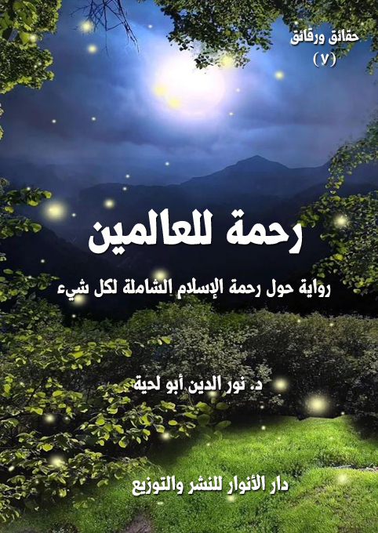

الكتاب: رحمة للعالمين
المؤلف: أ.د. نور الدين أبو لحية
الناشر: دار الأنوار للنشر والتوزيع
الطبعة: الثانية، 1437 هـ
عدد الصفحات: 458
ISBN: 978-620-2-34429-6
لمطالعة الكتاب من تطبيق مؤلفاتي المجاني وهو أحسن وأيسر: هنا

التعريف بالكتاب
تحاول هذه الرواية أن تصور - عبر النماذج الكثيرة - سعة الرحمة التي جاء بها الإسلام، والتي مثلها رسول الله صلى الله عليه وآله وسلم أحسن تمثيل.. وفي نفس الوقت حاولت أن تظهر المشاريع التي استعملت كل ما أوتيت من قوة شيطانية لتشويه هذه القيمة، وتحويل دين الرحمة إلى دين قسوة وغلظة وجفاء.
وتدور أحداثها باختصار حول مشروع يقوم به المفسدون في الأرض مستثمرين التشويهات التي حصلت في الدين عبر تاريخه الطويل لينشروا في قرية من القرى.. هي نموذج مصغر عن الأمة جميعا.. أن الإسلام دين ظلم وعدوان.. وأنه خال تماما من الرحمة والإنسانية..
لكن هؤلاء – وفي أثناء تنفيذهم لمشاريعهم – يجدون من الصالحين الذين يمثلون الدين الإلهي الصحيح من يصحح لهم تصوراتهم.. ويبين لهم الحقيقة التي اختلطت بالزيف.. والصدق الذي اختلط بالكذب.
وبناء على ذلك ينتصر المشروع الإلهي على المشروع الشيطاني.. فلا يملك أصحاب المشروع الشيطاني إلا التسليم أو الإسلام..
رحمة للعالمين (5)
تعالج هذه الرواية قيمة من قيم الإسلام العظمى التي تمثله في عقائده وشرائعة وأخلاقه وعلاقاته مع عوالم الأفكار والأديان والمذاهب.. وعلاقاته مع عوالم البشر والأمم المختلفة، بل والكون جميعا.. ولا يكون المسلم مسلما إلا بتحققه بها ظاهرا وباطنا.. ولا يكون المجتمع مجتمعا مسلما إلا إذا دبت فيه روحها، وكانت هي قلبه النابض، ورئته التي يتنفس بها.
وهي القيمة.. والتي جاءت بها جميع النصوص المقدسة.. ومثلتها السيرة المطهرة لرسول الله صلى الله عليه وآله وسلم.. ومثلها من بعده وورثته الطاهرون الصادقون أحسن تمثيل..
هذه القيمة العظيمة التي لا يمكن وصف أهميتها، وعلاقتها بالإسلام، وعلاقة الإسلام بها هي قيمة (الرحمة).. فالإسلام رسالة ورسولا (رحمة للعالمين).. والله رب العالمين هو الرحمن الرحيم.. والكون كله نشأ رحمة من الله.. وتحرك في طريق العبودية لله رحمة من الله.. وما ينتظره من أنواع الرحمات لا يمكن تصوره.
والرسالة التي كلف المسلم أن يتحرك بها في الأرض لينشر هداية الله تنطلق من رحمته بهم، وحرصه عليهم، ولذلك هو يسير بينهم ممثلا لرسول الله صلى الله عليه وآله وسلم في رحمته وسلامه وأخلاقه العالية، ليجذبهم بمغناطيس الرحمة، كما قال تعالى عن رسوله صلى الله عليه وآله وسلم: {فَبِمَا رَحْمَةٍ مِنَ اللَّهِ لِنْتَ لَهُمْ وَلَوْ كُنْتَ فَظًّا غَلِيظَ الْقَلْبِ لَانْفَضُّوا مِنْ حَوْلِكَ} [آل عمران: 159]
لكن هذه القيمة ووجهت كما ووجهت القيم الأخرى بمن يحرفها عن مسارها الصحيح، ليحول دين الرحمة إلى دين قسوة وغلظة وجفاء.. ويحول رب الرحمة إلى مخادع وماكر ومستهزئ.. ويحول شريعة الرحمة إلى شريعة استعباد واستبداد وطغيان.. ويحول رسول الرحمة إلى رسول ينشر الكراهية والأحقاد بين الأمم والمجتمعات.. ويحول رسالة
رحمة للعالمين (6)
الرحمة التي كلف المسلمون أن يسيروا بها في الأرض إلى جيوش ليس لها من هم إلا القتل والذبح والسبي وإحراز المغانم.
وقد استغل كل من يعادي هذا الدين تلك التشويهات الخطيرة التي أصابت هذه القيمة العظيمة في مقاتلها، فراحوا ينفرون من الإسلام، يستثمرون لذلك كل ما أفرزه الدين البشري الذي اختلط بالدين الإلهي وحرفه عن مساره الصحيح.
ولا يمكن لأي عاقل في الدنيا أن يؤمن بدين يشرع القسوة والاستبداد والعبودية والظلم.. فلذلك كان تحطيم هذه القيمة في الدين أكبر حجاب ينتصر للمشروع الشيطاني للإنسان، ويحارب المشروع الإلهي.
وبناء على هذا كانت هذه الرواية التي حاولت أن تصور عبر النماذج الكثيرة سعة الرحمة التي جاءت بها النصوص المقدسة، والتي مثلها رسول الله صلى الله عليه وآله وسلم أحسن تمثيل.. وفي نفس الوقت حاولت أن تظهر المشاريع التي استعملت كل ما أوتيت من قوة شيطانية لتشويه هذه القيمة، وتحويل دين الرحمة إلى دين قسوة وغلظة وجفاء.
وتدور أحداثها باختصار حول مشروع يقوم به المفسدون في الأرض مستثمرين التشويهات التي حصلت في الدين عبر تاريخه الطويل لينشروا في قرية من القرى.. هي نموذج مصغر عن الأمة جميعا.. أن الإسلام دين ظلم وعدوان.. وأنه خال تماما من الرحمة والإنسانية..
لكن هؤلاء – وفي أثناء تنفيذهم لمشاريعهم – يجدون من الصالحين الذين يمثلون الدين الإلهي الصحيح من يصحح لهم تصوراتهم.. ويبين لهم الحقيقة التي اختلطت بالزيف.. والصدق الذي اختلط بالكذب.
وبناء على ذلك ينتصر المشروع الإلهي على المشروع الشيطاني.. فلا يملك أصحاب المشروع الشيطاني إلا التسليم أو الإسلام..
رحمة للعالمين (7)
وفي الأخير يتجمع أصحاب المشروع الإلهي، وينتفضون على أصحاب المشروع الشيطاني..
وقد اخترت كالعادة في أمثال هذه الروايات عشرة نماذج كبرى أصابها التشويه الخطير، ابتداء من المرأة التي حولها من سرقوا الإسلام إلى مجرد أمة رقيق لا قيمة لها إلا بخدمتها لزوجها وسجودها له.. وانتهاء بالكون الذي حوله المفسدون في الأرض إلى مرتع للفساد والإفساد.
وبين ذلك تناولت رحمة الإسلام بالأطفال والعجزة والمتألمين والمحبطين والفقراء والمسضعفين والعبيد والخطائين.
وهي تتوجه كسائر هذه السلسلة لأصحاب العقل والحكمة من المسلمين وغير المسلمين، ليصححوا نظرتهم إلى دين الله.. وليأخذوه من مصادره المقدسة، لا من التراث الذي اختلط فيه دين الله بدين البشر، ولا من التاريخ الذي أخبر رسول الله صلى الله عليه وآله وسلم أنه سينحرف عن الدين الصحيح كما انحرف تاريخ سائر الأمم.
وأحب أن أذكر في الأخير أن هذه الطبعة الجديدة تتميز باختصارها مقارنة بالطبعة السابقة، فقد حذفت الكثير من الروايات والتفاصيل التي قد تجهد القارئ العادي في فهمها أو الاستفادة منها.
رحمة للعالمين (8)
في ذلك الصباح المبارك، استيقظت على مشاعر غريبة وفدت علي من حيث لا أشعر.. كانت موحشة مظلمة ممتلئة بالقساوة..
كانت بدايتها موقفا من المواقف تذكرته.. لعله كان سبب تلك المشاعر التي كانت مخبأة في وجداني، ولم يتح لها أن تظهر إلا في تلك اللحظات التي كنت أنتظر فيها بشوق بالغ حديث الغريب الذي جاءني من غير ميعاد ليحدثني عن رحلته إلى شمس الهداية محمد صلى الله عليه وآله وسلم.
سأذكر لكم الحادثة بتفاصيلها.. ولكل منكم الحرية في أن يفسر سر تلك المشاعر ليربطها بها، أو ينفيها عنها.
في شبابي.. ذهبت إلى بعض أهلي في البادية.. هناك حيث لا ترى في الأفق البعيد إلا الحجارة القاسية التي تملأ الجبال.. ولا ترى في الأفق القريب إلا رمالا جافة لا يضاهيها في قساوتها إلا تلك الحجارة.. وبين هذين كنت ترى صخورا أخرى كثيرة قد ملأتها رمال البيداء وصخور الجبال قسوة وغلظة وجفاوة..
كنت أرى النساء في تلك البيداء مهانات محتقرات.. لا تكاد تسمع لهن صوتا.. فهن في شغل دائم.. لا يلقين بعده جزاء ولا شكورا..
وكنت أرى الأولاد الصغار.. وهم لا يقلون شغلا عن الكبار.. وقد ذهبت ملامح براءة الصبا من وجوههم.. فهم يهتمون بما يهتم له الكبار.. ويحرصون على ما يحرصون عليه.
وكنت أرى في هذا الجو الكئيب شيخ القرية أو مختارها أو عمدتها أو ما شيء له من أسماء صاحب صوت مجلجل.. وصاحب عصا قوية.. وصاحب حرس شديد.. وصاحب أوامر ليس لها إلا أن تنفذ رغبت رعيته في تنفيذها أو أنفت.
وكنت أرى بين هذا وذاك منافقين كثيرين.. لا قلوب لهم ولا مشاعر.. هم فقط مجموعة
رحمة للعالمين (9)
هياكل عظمية مكسوة بأكداس من اللحم والشحم الذي لا يختلف في لونه وقساوته عن ذرات الرمال وطبقات الصخور..
كل هذه الصور لم أكن أكترث لها كثيرا.. ولكن الذي اكترثت له هو فقيه القرية وقارئها وعالمها.. ذلك الذي يجلس على عرش القرية الديني.. فهو إمامهم في الصلاة.. وهو قاضيهم في المحكمة الشرعية الصغيرة.. وهو معلمهم في الكتاتيب.. وهو فوق ذلك كله مستشارهم الذي يرجعون إليه كل حين (1)..
كان هذا الشخص مع بداوته الشديدة.. بداوته التي تغلبت على دينه.. أو بداوته التي جعلها نظارة ينظر بها إلى دينه.. أو بداوته التي فسر بها كتاب ربه وسنة نبيه.. بل فسر بها الحياة جميعا.. كان هذا الشخص هو مصدر إزعاجي الأكبر..
لقد حاولت بكل ما أطقت أن أمسح تلك الذكريات التي جمعتني به، فلم أطق.. لقد كانت تلح علي كل حين.. وكانت تملؤني بالحزن كل حين..
وكانت كل مرة تخطر علي بالي تلك الذكريات أمد يدي من حيث لا أشعر.. وكأني أخنق بها شيئا لست أدري ما هو.. ولا لماذا.
كان للرجل أربع نسوة.. هن في الظاهر زوجاته.. ولكنهن في الحقيقة لسن إلا خدما في ضيعته الكبيرة التي اكتسبها بجشعه الكبير.. فهو لا يفتي إن أفتى إلا بالمال.. ولا يصلي إن صلى إلا بالمال.. ولا يقرأ القرآن على الموتى إلا بالمال.. ولا يضع يده المباركة على جبين المرضى ليخلصهم من العفاريت التي تسكنهم إلا بالمال.. حتى لعابه المملوء بالبركات كان لا يبيعه إلا بالمال..
__________
(1) لا نقصد بهذا شخصا معينا ولا جهة معينة.. وإنما نقصد صنفا خاصا ممن يسميهم الناس (متدينين) بينما هم في الحقيقة لا يحملون من الدين إلا صورة مشوهة ممتلئة بالقسوة والغلظة والجفاوة.. وقد استعرنا البداوة هنا ـ مع احترامنا للبداوة ـ لما ورد في الحديث من قوله (: (من بدا جفا، ومن تبع الصيد غفل، ومن أتى أبواب السلطان افتتن، وما ازداد عبد من السلطان قرباً إلا ازداد من الله بعداً) (رواه أحمد والبزار)
رحمة للعالمين (10)
ولم يكن يكتفي بكل ذلك.. بل كان فوق ذلك يسخر من يشاء ليعمل له في مزرعته الكبيرة من غير أجر إلا أجر الوساطة بينه وبين ربه..
كان كلما لمح شابة جميلة طلق زوجة من زوجاته القديمة.. وراح يتقدم لخطبة الجديدة التي تحل محلها.. ولم يكن لأهل الشابة إلا أن يقبلوا.. ولا يهمه أكان ذلك بطيب نفس، أم لم يكن بطيب نفس..
أذكر مرة أن بعضهن رفضت.. واستجاب أهلها لرفضها.. فأقام الدنيا ولم يقعدها.. كان في كل خطبه في ذلك الحين يردد قوله صلى الله عليه وآله وسلم: (إذا أتاكم من ترضون دينه وأمانته فزوجوه إلا تفعلوا تكن فتنة في الأرض وفساد كبير) (1)
كان يردده بصوت قوي شديد.. وكأنه سياط يلهب بها الظهور..
ومع ذلك لم يكن يكتفي بذلك.. بل كان يقصد وجهاء القرية ليضيقوا على أهل الفتاة حتى يضطروا في الأخير إلى الإذعان..
كان له ذرية كثيرة.. وكان يختلط عليه أمرهم.. ولهذا راح يسمهم بما يذكره بهم.. ولم يكن يناديهم إلا بيا ابن فلانة..
لم يكن يستخدمهم كما يستخدم سائر الناس.. ولكنه كان يتعامل معهم بشدة وقسوة وعنف.. ويبرر كل ذلك بحديث كان يردده كل حين.. هو قوله: (اخشوشنوا وتمعددوا، واجعلوا الرأس رأسين) (2)
وكان لهذا الشيخ فوق ذلك كله ومع هذا كله دعاوى عريضة.. فهو يتصور الدين كما يتصور ضيعته.. فهو يراه ملكه الذي لا يجوز لأحد أن ينافسه فيه.. فإن ظهر بعضهم وتحدث في الدين
__________
(1) رواه الترمذي وحسنه، ورواه أبو داود في المراسيل.
(2) رواه أبو عبيد في الغريب موقوفا.. ومعنى حديثه صحيح، وقد ذكرنا الحكم الصحية في قوله هذا في مجموعة (ابتسامة الأنين).. ولكنا نشير هنا إلى سوء الفهم الذي ينحرف بالنصوص عن معناها الصحيح.
رحمة للعالمين (11)
بحسب ما هداه إليه علمه أو عقله راح ينشر البيانات في القرية.. بيانات التكفير والتبديع والتضليل والحرمان.. وكان يتبع تلك البيانات التقريرية بنقاط عملية من خالفها خرج من الفرقة الناجية ليسقط في هاوية الفرق الهالكة الكثيرة..
كان أقل تلك النقاط شأنا هجر المبتدع وترك السلام عليه وعدم عيادته إذا مرض، وعدم المشي في جنازته إذا مات.. وعدم البيع له.. وعدم الشراء منه.. ومن تجرأ وابتسم في وجهه فقد أتى بالكبيرة التي ليس دونها كبيرة..
كان الناس يسمعون هذه البيانات ويقرأونها ويمتلأون رعبا منها..
لقد كانوا يتصورون أن للرجل من السلطة ما يمكنه أن يضع أي اسم شاء في قوائم أهل النار.. كما أن له السلطة ما يمكنه أن يضع أي اسم شاء في قوائم أهل الجنة.. ولذلك كانوا يمتلئون بالرعب منه.. وكان ذلك الرعب يجعلهم يتزلفون أحيانا بكل ما يملكون ليكتسبوا من رضاه ما يضمنون به مصيرهم الذي وضع بين يديه.
كنت أجلس ـ أحيانا ـ لأستمع إلى دروسه الفقهية التي كان يتكرم بها على أهل القرية.. أو ليحضر نفوسهم بها.. فكنت أسمع من التقريعات والتشديدات ما يملأ القلوب بالمهابة..
والعجب في دروسه أنه كان لا يهتم بشيء كما يهتم بالمسائل المرتبطة بالرقيق.. وكان فهمه للرق فهما ممتلئا بالعنصرية والكبرياء.. كان كلما ذكر الرقيق يردد بحزن قائلا: (متى يأتي ذلك اليوم الذي نرى فيه الرقيق الأسود والأبيض والأصفر.. حتى نعيد إحياء هذه الأحكام التي لن تحيا إلا بعودة الرقيق)
أذكر أني في يوم من الأيام ضاقت نفسي.. فتحدثت أمامه، منكرا عليه بعض الأمور.. فأقام الدنيا ولم يقعدها..
لقد عقد المجالس الطويلة يحذر مني وينفر.. إلى أن اضطر أهلي أن يطردوني بالتي هي أحسن من تلك البادية التي ولد فيها أجدادي جميعا..
رحمة للعالمين (12)
لقد خشوا علي من بطش كلماته وبطش مواقفه وبطش أتباعه الذين لم يكونوا يحملون إلا العصي..
لقد ظل هذا الرجل فترة طويلة في حياتي يملأ أحلامي بالكوابيس..
وكان مما يزيد في آلامي أنه كان يصور نفسه خليفة للنبي ووارثا له.. وكان كثير من الناس يعتقدون ذلك.. مع أنه في الحقيقة لم يكن إلا دجالا لا يختلف عن المسيح الدجال..
في ذلك اليوم جثم على قلبي كما تجثم الأدواء.. فقلت في نفسي: كيف غفل قومي عن هذا، وراحوا ينكرون على الرسامين وعلى البابا وعلى جميع الأبواق الخارجية..!؟
ألم يكن الأولى بهم أن يبدأوا بهذا السرطان الذي ينهش ديننا وقيمنا وحقائقنا.. فيبتروه.. لأنه لم يكن للرسامين ولا لغيرهم أن يفعلوا ما فعلوه لولا أنهم وجدوا أمثال هؤلاء الدجالين الذين يلبسون قمصان محمد صلى الله عليه وآله وسلم.. ولكن قلوبهم لا تحمل إلا أضغان أبي جهل.. وأحقاده.. وأطماعه.. وقساوته!؟
ألم يكن الأولى بنا أن نخرج في مظاهرات عارمة لنحرق دمى هؤلاء الدجالين بدل أن نحرق دمى غيرهم.. فلم يكن لغيرهم أن يتحدث لولا هؤلاء؟
ألم يكن الأولى بنا أن نصيح كما صاح قبلنا رواد الثورة الصناعية، وهم يقولون: (ليشنق آخر دوق بأمعاء آخر قسيس).. فنقول معهم أو على شاكلتهم: (ليشنق آخر مستبد بأمعاء آخر دجال)؟
كنت أقول هذا.. وأنا أمد يدي لأخنق بها شيئا لست أدري ما هو..
بينما أنا كذلك إذا بي أسمع الغريب يردد بصوت حنون خاشع قوله تعالى: {وَمَا أَرْسَلْنَاكَ إِلَّا رَحْمَةً لِلْعَالَمِينَ} (الانبياء:107).. فإذا بشمس رسول الله صلى الله عليه وآله وسلم تطل على قلبي.. وتزيح كل تلك الكوابيس والآلام التي نشرتها تلك الذكريات المريرة..
لقد ذاب ذلك الكابوس كما يذوب الدجال عندما يرى المسيح.. فلذلك امتلأت بالبشارة..
رحمة للعالمين (13)
ورحت أسرع إلى البابا.. وفي قلبي أشواق عظيمة لأسمع رحلته الجديدة إلى شمسه صلى الله عليه وآله وسلم.
***
عندما دخلت عليه وجدته يمسك بقدم عصفور يعالجها بحنان.. فقلت: ما هذا؟
ابتسم، وقال: لقد سقط هذا العصفور من عشه.. وقد رأيته يتعثر في مشيته.. فرحت أعالجه.. يوشك أن تعود إليه العافية.. لدي خبرة في هذا.
قلت: أرى لك قلبا حنونا..
قال: لقد استفدته من رسول الله صلى الله عليه وآله وسلم.. لقد كان رسول الله صلى الله عليه وآله وسلم أعظم الناس رحمة وشفقة.. لقد مر مرة مع صحابته بشجرة فيها فرخان لحمرة، فأخذهما بعض الصحابة، فجاءت الحمرة إلى رسول الله صلى الله عليه وآله وسلم وهي تقرب من الأرض وترفرف بجناحها، فقال: (من فجع هذه بفرخيها؟)، فقالوا: نحن، قال: (ردوهما) فردوهما إلى موضعهما (1).
قلت: أعرف عظم رحمة رسول الله.. لقد وصفه الله بها، فقال: {فَبِمَا رَحْمَةٍ مِنَ اللَّهِ لِنْتَ لَهُمْ وَلَوْ كُنْتَ فَظّاً غَلِيظَ الْقَلْبِ لَانْفَضُّوا مِنْ حَوْلِكَ فَاعْفُ عَنْهُمْ وَاسْتَغْفِرْ لَهُمْ وَشَاوِرْهُمْ فِي الْأَمْرِ فَإِذَا عَزَمْتَ فَتَوَكَّلْ عَلَى اللَّهِ إِنَّ اللَّهَ يُحِبُّ الْمُتَوَكِّلِينَ} (آل عمران:159)..
بل إن الله سماه باسمين من أسمائه الحسنى يحملان هذا المعنى، فقال: {لَقَدْ جَاءَكُمْ رَسُولٌ مِنْ أَنْفُسِكُمْ عَزِيزٌ عَلَيْهِ مَا عَنِتُّمْ حَرِيصٌ عَلَيْكُمْ بِالْمُؤْمِنِينَ رَؤُوفٌ رَحِيمٌ} (التوبة:128)
بل إن الله عم رحمته على العالمين، فقال: {وَمَا أَرْسَلْنَاكَ إِلَّا رَحْمَةً لِلْعَالَمِينَ} (الانبياء:107)
أنا أعرف كل هذا.. ولكني أتعجب كيف ينتسب لرسول الله من امتلأ قلبه قسوة وغلظة.. ولم يكتف بذلك بل راح يصور رسول الله صلى الله عليه وآله وسلم بصورة القاسي الغليظ.. فينفر الناس عنه، وينفر القلوب منه.
قال: هذه سنة الله في أتباع أنبيائه، فمنهم من يمثلهم تمثيلا حسنا.. ومنهم من يخطئ في تمثيله،
__________
(1) رواه أبو داود الطيالسي وأبو نعيم وأبو الشيخ في كتاب العظمة والبيهقي.
رحمة للعالمين (14)
لقد ذكر الله ذلك، فقال: {ثُمَّ أَوْرَثْنَا الْكِتَابَ الَّذِينَ اصْطَفَيْنَا مِنْ عِبَادِنَا فَمِنْهُمْ ظَالِمٌ لِنَفْسِهِ وَمِنْهُمْ مُقْتَصِدٌ وَمِنْهُمْ سَابِقٌ بِالْخَيْرَاتِ بِإِذْنِ اللَّهِ ذَلِكَ هُوَ الْفَضْلُ الْكَبِيرُ} (فاطر:32)
وذكره، فقال: {فَخَلَفَ مِنْ بَعْدِهِمْ خَلْفٌ وَرِثُوا الْكِتَابَ يَأْخُذُونَ عَرَضَ هَذَا الْأَدْنَى وَيَقُولُونَ سَيُغْفَرُ لَنَا وَإِنْ يَأْتِهِمْ عَرَضٌ مِثْلُهُ يَأْخُذُوهُ أَلَمْ يُؤْخَذْ عَلَيْهِمْ مِيثَاقُ الْكِتَابِ أَنْ لا يَقُولُوا عَلَى اللَّهِ إِلَّا الْحَقَّ وَدَرَسُوا مَا فِيهِ وَالدَّارُ الْآخِرَةُ خَيْرٌ لِلَّذِينَ يَتَّقُونَ أَفَلا تَعْقِلُونَ} (لأعراف:169)
وذكره، فقال: {فَخَلَفَ مِنْ بَعْدِهِمْ خَلْفٌ أَضَاعُوا الصَّلاةَ وَاتَّبَعُوا الشَّهَوَاتِ فَسَوْفَ يَلْقَوْنَ غَيّاً} (مريم:59)
قلت: لعل هؤلاء الورثة المذكورين عوام يعذرون لجهلهم.. ولكن الشأن في أولئك الذين يتصورون أنهم ورثة رسول الله وخلفاؤه.. إنهم بقساوتهم وغلظتهم يسيئون لرسول الله ودين الله أعظم إساءة.
قال: لقد ذكر الله ذلك، ونبه إليه، وحذر منه، وأقام الحجة على عباده بكل ذلك.. فقال: {يَا أَيُّهَا الَّذِينَ آمَنُوا إِنَّ كَثِيراً مِنَ الْأَحْبَارِ وَالرُّهْبَانِ لَيَأْكُلُونَ أَمْوَالَ النَّاسِ بِالْبَاطِلِ وَيَصُدُّونَ عَنْ سَبِيلِ اللَّهِ} (التوبة:34)
قلت: هذه الآية في الأحبار والرهبان..
قال: وهي في الأئمة والفقهاء والمفتين والمحتسبين.. وكل من ينتسب لأي وظيفة من الوظائف التي ترتبط بالدين.. هؤلاء جميعا هم المقصودون بهذه الآية.. كل من تاجر بالدين سواء كان مسلما أو غير مسلم مخاطب بهذه الآية..
قلت ـ وأنا أمد يدي لأخنق بها شيئا لا أدري ما هو ـ: فلم لا نخنق هؤلاء.. لم لا نطعنهم.. لم لا نفجر فيهم القنابل.. لم لا نرسل عليهم بالويلات التي تبيدهم.. لم لا نحرق دماهم..؟
قاطعني مبتسما، وقال: يمكنك أن تفعل كل ذلك.. ويمكنك أن تدعو الكل لينفذ ذلك.. ولكن لا تنس شيئا واحدا.. لا تنس أن تبدأ بقتل الشيطان وقتل النفس الأمارة قبل أن تبدأ بهم.
رحمة للعالمين (15)
قلت: فكيف أصل إلى الشيطان؟
قال: ما دام الشيطان موجودا.. وما دامت النفوس الأمارة موجودة.. فإنه من العبث أن تريق دماء هؤلاء.. ومن العبث الأكبر أن تحرق دماهم.
أطلق العصفور من يده، وقال: ما دامت المدرسة التي تكون المجرمين موجودة.. وأساتذتها أحياء.. فمن العبث أن تقتل التلاميذ المتخرجين منها..
قلت: فما الحل؟.. أرى أن الأمر لو استمر بيد هؤلاء، فسيشوه دين الله تشويها لا مطمع في إصلاحه.
قال: دين الله لا يشوه.. دين الله محفوظ كحفظ كتابه.. ألم يقل الله تعالى: {إِنَّا نَحْنُ نَزَّلْنَا الذِّكْرَ وَإِنَّا لَهُ لَحَافِظُونَ} (الحجر:9)؟
قلت: بلى.. إن هؤلاء لم يطيقوا أن يحرفوا حروفه وألفاظه.. ولكنهم يطيقون أن يحرفوا معانيه ومقاصده.. فيحولوا من شريعة الرحمة شريعة قسوة.. ومن دين العدالة دين جور..
قال: إن الله الرحيم الرحمن الذي تولى حفظ حروف كتابه تولى حفظ معانيه ومقاصده.. ولذلك لا تمضي فترة من الزمان دون أن يكون فيها قائم لله بالحجة.
ثم سكت قليلا، وقال: سأحدثك اليوم عن ورثة قدر الله أن ألتقي بهم لأتعرف على رسالة الرحمة الشاملة العامة التي جاء بها رسول الله صلى الله عليه وآله وسلم..
قلت: ما أشوقني لأحاديث الورثة.. فلا ينسخ همومي شيء مثلما تنسخه أحاديثهم.. فحدثني عنهم.
قال: سأبدأ لك من الأول.. فلا يفهم الآخر إلا بالأول.
***
اعتدل الغريب في جلسته، وحمد الله وصلى وسلم على نبيه صلى الله عليه وآله وسلم مستغرقا في كل ذلك.. ثم قال: في تلك الأيام التي كنت فيها عضوا في تلك الجمعية الشيطانية التي لا هم لها إلا حرب
رحمة للعالمين (16)
الإسلام، ووضع الحجب على شمس هدايته محمد صلى الله عليه وآله وسلم دعيت إلى حفل كبير.. حضره الكثير.. منهم رجال سياسة.. ومنهم رجال دين.. ومنهم رجال فكر.. ومنهم رجال مال.. كان الحضور من كل الأصناف..
في ذلك الحفل وضعت خطة جديدة.. بدأ بالحديث عنها رجل كأنه الشيطان.. وكان اسمه الذي نعرفه به هو (...؟)
قام أمام الحضور، وهو ممتلئ بهجة وسرورا، وقال: لقد استطعنا أن نرمي الإسلام بالإرهاب.. وبالجور.. وبقي شيء واحد إن استطعنا أن نقرره في نفوس العالم.. فإنا نكون بذلك قد استأصلنا الإسلام من جذوره..
ساد صمت عميق في القاعة في انتظار هذا الجديد.. فقال: ألا تعرفون البسملة؟
قال الجميع: وكيف لا نعرفها.. والمسلمون يرددونها كل حين.. بل إنهم لا يقرأون قرآنهم إلا بعد قراءتها.
قال: ألم تنتبهوا لشيء في تلك البسملة؟
قال بعضنا: لقد ذكر فيها اسم الله.. واسمين من أسمائه ـ عند المسلمين ـ هما (الرحمن) و(الرحيم)
قال: ألا تعرفون قيمة هذين المسلمين عند المسلمين؟
قلنا: بلى.. نعرف ذلك.. فما مرادك من كل ذلك؟
قال: لقد اكتشفت من خلال بحث طويل أن السبب الأكبر الذي أمد الإسلام في جميع أجياله بالبقاء هو (الرحمة).. لقد رأيت أنها الوصف الغالب فيه.. فهي اسم إله المسلمين.. وهي اسم نبيهم.. وهي القاسم المشترك في جميع تشريعاتهم..
وقد رأيت من خلال الواقع أن سلوك الرحمة الذي سلكه الدعاة من المسلمين هو السبب الأكبر في انفتاح القلوب على الإسلام.
رحمة للعالمين (17)
ولذلك رأيت أن خلع الرحمة من الإسلام ومن المسلمين هو خلع للإسلام نفسه.. خلع له من الوجود.. وخلع له من الاستمرار.
قال رجل منا ـ وهو يبتسم ـ: لو كانت الرحمة سنا لخلعناها.. ولكنها وصف.. وهي وصف خفي تمتلئ به جوانح القلوب.. فكيف نصل إليها؟
قال: ما فعلناه مع السلام والعدالة نفعله مع الرحمة.
قلنا: لم نفهم.
قال: أليس الناس على دين علمائهم وملوكهم؟
قلنا: بلى..
قال: فلنكون المدارس التي تنتج علماء ممتلئين غلظة وجفارة.. ولنكون المدارس التي تنتج ساسة وحكاما ممتلئين قسوة وظلما.
قلنا: وما علاقة ذلك بالإسلام؟
قال: الإسلام يمثله هؤلاء.. والناس لا يعرفون الإسلام إلا من خلال هؤلاء.. سوف نري العالم أجمع من خلالهم أن الإسلام دين القسوة والغلظة والجفاء.
قلنا: لا زلنا إلى الآن ننتظر تفاصيل الخطة.
قال: ألا ترون أن للرحمة تجليات يتبين من خلالها الراحمون من القساة؟
قلنا: بلى..
قال: فلنبدأ بها.
قلنا: كيف؟
قال: لنبدأ بالمرأة.. لنبين أن الإسلام قسا على المرأة وظلمها وحرمها من أبسط حقوقها.
قلنا: وما بعد ذلك؟
قال: نمر بعدها على الطفولة.. فنبين أن الإسلام بتشريعاته القاسية حرم الأطفال من أن
رحمة للعالمين (18)
يحافظوا على براءة طفولتهم.. ونبين أن التعاليم التي جاء بها الإسلام في شأن الأطفال ملأت حياة الأطفال بالكآبة والإحباط.
قلنا: وما بعد ذلك؟
قال: نمر بعدها على العجزة.. ثم على المتألمين.. ثم على المحبطين.. ثم على الفقراء.. ثم على المستضعفين.. ثم على العبيد.. ثم على الخطائين.. وهكذا حتى الحيوانات وسائر الكائنات.. سنبين كيف تعامل الإسلام معها جميعا بقسوة وغلظة تنفجر لها الصخور.
قلنا: عرفنا كل هذا.. فما لديك من خطة التنفيذ؟
قال: سنستغل كل ما لدينا من وسائل لننشر هذا الوعي بين الناس.. وسيكون أول من نستغله أولئك الذين لا يخدمنا أحد كما يخدموننا.
قلنا: من تقصد؟
قال: أنتم تعلمون من أقصد.
قلنا: فهل تشرح لنا خطة التنفيذ؟
قال: لا يمكنني أن أصرح بتفاصيل الخطة هنا.. ولكني أدعوكم في هذا المجلس إلى أنكم جميعا ستؤدون أدواركم لنجاح هذه الخطة.. لا تفكروا في المال، فسأعطي كل واحد منكم الحرية في أن يصرف ما يشاء من الأموال..
لا يهمني إلا شيء واحد هو أن ينظر الناس إلى دين محمد كما ينظرون إلى تلك الحجارة القاسية التي لا يفيض منها إلا الموت..
***
في الغد استدعاني أخي إلى مكتبه بالفاتيكان، وقال، وهو ممتلئ زهوا وفرحا وسرورا: أبشر ـ يا أخي ـ فها نحن نقترب كثيرا من كرسي البابا.. ذلك الكرسي الذي طالما حلمنا به..
لا يحول بيننا وبينه الآن إلا هذا البابا.. وهو عجوز مسن كما تراه.. ويوشك أن يدعوه ربه
رحمة للعالمين (19)
إليه ليخلو الجو لنا.
قلت: لقد زهدت في ذلك الكرسي منذ زمن بعيد.
ضحك بصوت عال، وقال: ذلك شيء يهيأ لك.. أما الحقيقة.. فهي أن الجلوس على ذلك الكرسي هو حلمك الأكبر.. حلمك الذي يمتلئ به سرك الباطن الذي لا تعرفه.
قلت: فكيف عرفت أنت؟
قال: ألست سواك.. أنا وأنت توأمان.. بل شقان لبذرة واحدة.. أنا أمثل طرفا من أطرافها، وأنت تمثل الثاني.. ولا يوجد في عقلك إلا ما يوجد في عقلي.. ولا أحلم إلا بما تحلم به.
قلت: أنا أحلم بالحقيقة.. أنا أريد أن أستظل بشمس الحقيقة.
قال: شمس الحقيقة لا ينالها إلا من جلس على كرسي بطرس.. ذلك الكرسي الذي يجعلك قريبا جدا من المسيح، ولن تنال الخلاص إلا بقربك من المسيح.
قلت: ولكن.. ألا ترى أن فيما نستخدمه من أساليب ما يبعدنا عن المسيح؟.. ألم يكن المسيح داعية سلام وداعية رحمة وداعية أخوة وإنسانية؟.. فكيف نرغب عن كل دعواته لنضع أيدينا في أيدي الشياطين؟
قال: وأي شياطين نضع أيدينا في أيديهم؟
قلت: ألم تسمع ـ أمس ـ ذلك الشيطان.. وما وضعه من الخطط؟
قال: أنت لا تعرف ذلك الرجل.. فلذلك تتكلم عنه بهذا الأسلوب.
قلت: فعرفني به.
قال: لن أعرفك به الآن.. ولكني أقول لك: لا يمكن لأحد من الناس أن يصل إلى أي كرسي على هذه الأرض من كراسي السياسة أو كراسي الدين ما لم يرض عنه..
وأي شخص لا يرضى عنه.. فإن مصيره معروف.
قلت: أنت تريدني أن أتزلف إليه إذن؟
رحمة للعالمين (20)
قال: أجل.. بقلبك وقالبك.. فلذلك الرجل من القدرات ما يقرأ به أسرارك.. فلذلك احذر أن يطلع منك على أي خيانة.. فإنه لا شيء يزعجنا عن أحلامنا كما يزعجنا غضبه.
قلت: فأنت الآن تريد أن تنفذ الخطة التي أرادها.
قال: ولم أدعك إلا لأجل ذلك.. إن كل من رأيتهم قد حضروا الحفل لا يهتمون الآن بشيء كما يهتمون بتنفيذ خطته.. لأنه لا تنفذ مآربهم ولا تحقق أحلامهم إلا بذلك.
قلت: ولكنا لم نسمع في الحفل بأي خطة؟
قال: هو لا يتكلم في هذه الأمور علانية.. هو يأخذ حذره أكثر مما تتصور.. ولذلك هو يرسل إلى خاصة خاصته برسائل مشفرة لا يقرؤونها إلا هم.. بل إنه أحيانا كثيرة، وإمعانا في الاحتياط، لا يثق في الرسل الذين يرسلهم، فلذلك يأتي هو، ويسر لمن يريد أن يتحدث إليه، ويناجيه ليس بينه وبينه أحد.
قلت: لكأنه يمارس أساليب الشياطين.
ضحك أخي، وقال: لقد ذكرتني.. فكثيرا ما يقول لنا هذا عن نفسه..
قلت: ما يقول؟
قال: إنه يقول لنا ـ مازحا بالطبع ـ: أحيانا تقتضي منا التضحية أن نتحول إلى شياطين.. لأنه لا يمكن أن نحقق أهدافنا ونحن نسلك سبل الملائكة.
قلت: ويله.. أيتهم الملائكة بالعجز؟
قال: هو لا يتهم الملائكة بالعجز.. ولكنه يتهم السبل النظيفة بالعجز.
قلت: أرى أن هذا ليس إلا الشيطان.. فكيف نسلم أنفسنا له؟
قال: إن اضطر العاقل أن يستخدم الشيطان لأجل غرضه الشريف، فمن الجنون أن لا يستخدمه.
قلت: أي غرض شريف هذا؟.. إن الرجل يريد أن يتهم محمدا ودين محمد ورب محمد بما
رحمة للعالمين (21)
هم منهم برآء.
قال: ألم تر المسلمين.. وهم يسلون تلك السكاكين الحادة، فيزهقون بها أرواح الحيوانات البريئة، وهم ممتلئون سرورا؟
ألم تقرأ آيات الاستعباد في القرآن؟
ألم تقرأ الأمر بضرب النساء في القرآن؟
ألم تقرأ ما وصف به القرآن إله المسلمين.. لقد كان من ضمن ما وصفه به قوله: {.. وَيَمْكُرُ اللَّهُ وَاللَّهُ خَيْرُ الْمَاكِرِينَ (30)} (الأنفال) (1)؟
لم أجد ما أجيبه به.. فلما رأى صمتي، قال: أعلم صدقك وإخلاصك.. وأعلم أن بينك وبين دين محمد كما بين السماء والأرض.. ولكني في نفس الوقت أعلم أن بعض الفيروسات قد تسربت إليك نتيجة رحلاتك السابقة لبلاد المسلمين.. أنا أعذرك في ذلك.. فالكثير ممن تعرض لما تعرضت له أصابه ما أصابك.. بل إن الكثير منهم لم يتحمل فراح يحترق في شمس محمد.
ولذلك.. فقد هيأت لك رحلة إلى بلد من بلاد المسلمين.. بلد مملوء بالقساوة.. لتبصر فيه حقيقة الإسلام التي ربما تكون قد خفيت عليك.
قلت: وما وظيفتي في هذه الرحلة؟
قال: ليس لك إلا وظيفة بسيطة لا تختلف عن كثير من الوظائف التي كنت قد كلفتك بها.
قلت: وما هي هذه الوظيفة البسيطة؟
قال: لقد أرسلنا نفرا من قومنا لبلد من بلد المسلمين.. لنعرفهم بحقيقة القساوة التي يحملها الإسلام.
__________
(1) هكذا يتلاعب المبشرون وغيرهم بنصوص القرآن الكريم.. ونص الآية الكامل هو: {وَإِذْ يَمْكُرُ بِكَ الَّذِينَ كَفَرُوا لِيُثْبِتُوكَ أَوْ يَقْتُلُوكَ أَوْ يُخْرِجُوكَ وَيَمْكُرُونَ وَيَمْكُرُ اللَّهُ وَاللَّهُ خَيْرُ الْمَاكِرِينَ (30)} (الأنفال)، ومعناه على المشاكلة كما هو معروف، فالله تعالى أعظم من أن يحتاج إلى أساليب المكر التي يلجأ إليها الضعفاء.. وسنرى توضيح المعاني المرتبطة بأمثال هذه النصوص في رسالة (الباحثون على الله) من هذه السلسلة.
رحمة للعالمين (22)
قلت: قد أرسلتموهم.. فما علاقتي أنا بهم؟
قال: أنت – بمكانتك الرفيعة في الكنيسة – ستكون رقيبا عليهم.. لترى سلامة السبل التي يتخذونها لهذا الغرض.. ولنرى مدى نجاح الطرق التي ينتهجونها لنعممها بعد ذلك على سائر بلاد الإسلام.
قلت: فكيف لي أن أعرفهم؟
قال: سأعطيك دفترا يحوي أسماءهم وصورهم والأماكن التي يمكن أن تجدهما فيها.. لترى مدى نشاطهم في الوظائف التي كلفوا بها.. واطمئن فلن يعرفك أحد منهم.. ولذلك، فستقوم بوظيفتك من دون أن يحرجك أي أحد.. هذا هو الغرض الوحيد الذي أردت أن أبعثك له في هذه الرحلة.
قال ذلك.. ثم ابتسم.. وكأنه يخفي شيئا.. فقلت له: لكأني بك تخفي شيئا لا تريد أن تصرح لي به.
ابتسم، وقال: أجل.. لي هدف آخر من وراء إرسالك لهذه المنطقة.. ولهذه الوظيفة..
قلت: ما هو؟
قال: لقد عرفت الجروح التي أصابتك من رحلاتك السابقة.. فلذلك أردت أن تكون هذه الرحلة رحلة علاج.. رحلة تكتشف فيها من قسوة محمد، وقسوة دينه ما يملؤك بالغثاء.. لترجع إلينا بعدها حبرا صالحا يمكنه أن يصير في يوم من الأيام خليفة من خلفاء بطرس وأولئك القديسين الكثيرين الذين جلسوا مجلسه.
***
في ذلك المساء امتلأت هما وغما لما ذكره لي أخي من مظاهر القسوة في الإسلام، فلذلك ذهبت ـ كعادتي في مثل هذه الأحوال ـ إلى الغابة التي تعودت أن ألتقي فيها بمعلم السلام.
لم أسر في الغابة إلا قليلا حتى رأيته، وهو يحمل حجارة يرمي بها حيوانا لم أتبينه، فأسرعت
رحمة للعالمين (23)
إليه، وقلت: ماذا تفعل؟.. لم أكن أتصور أن رجلا في مثل حكمتك يحمل الحجارة.
قال: لقد دفعتني الرحمة إلى حمل هذه الحجارة.
قلت: الرحمة لا تدفعك لحمل الحجارة.. لا يرمي بالحجارة إلا من قلوبهم مثل الحجارة.
قال: لقد رأيت حيوانا عاديا يهم بحيوان قاصر ضعيف.. وقد خيرت بين أن أترك الضعيف للقوي.. أو أصد القوي عن الضعيف.. وقد دلتني الرحمة أن أنتصر للضعيف من القوي.
قلت: نعم ما اخترت.. ولكن ألم تجد إلا الحجارة؟
قال: لم يكن لي خيار إلا الحجارة.. فالرحمة أحيانا قد تتطلب بعض القسوة.
قلت: لقد قال الشاعر العربي يعبر عن ذلك:
وقسا ليزدجروا ومن يك راحما... فليقس أحيانا على من يرحم
قال: صدق الشاعر.. فقد نظر إلى الحقيقة من بابها الصحيح..
قلت: ألا ترى أن هذا قد يصبح حجة للظلمة والمستكبرين والطغاة، فيفعلون ما تطلبه نفوسهم من القسوة، ثم يلبسون على الناس وعلى أنفسهم، فيزعمون أنهم لا ينطلقون إلا من الرحمة؟
سأضرب لك مثالا يقرب لك ذلك.. لقد ذهبنا إلى أراضي المستضعفين نستولي عليها ونتسلط.. ونحن نزعم لهم مع ذلك أن قصدنا هو رحمتهم.. رحمتهم بإخراجهم من التخلف إلى الحضارة.
قال: ولكن كير الامتحان يميز الخبيث من الطيب، والغليظ من اللين، والقاسي من الرحيم.
قلت: وما كير الامتحان؟
قال: أليس قومك يهتمون بالنتائج قبل الوسائل.. فلذلك يتذرعون بكل وسيلة للحصول على ما يرغبونه من النتائج؟
رحمة للعالمين (24)
قلت: ذلك صحيح.. وهم يعبرون عن ذلك بأن الغاية تبرر الوسيلة.
قال: فكير الامتحان هو النظر إلى النتائج.. فبذور الشوك يستحيل أن تنبت ثمار العنب.
قلت: أتقصد أن ننتظر النتائج حتى نرى حقيقة الدوافع؟
قال: أجل.. فالنتائج هي التي تبين المنطلقات.. فلا يمكن أن يخرج إلى الوجود إلا ما بذر في أرض النفوس.
قلت: إني أرى أقواما يحملون رايات كثيرة قد التبست علي فلم أدر أهي رايات رحمة أم رايات قسوة؟
قال: لا تنظر إلى الرايات.. وانظر إلى ما يحركها..
قلت: لم أفهم.
قال: أرأيت الطبيب الذي يضطر إلى إجراء عملية جراحية لولد صغير.. فتقف في وجهه الرايات الكثيرة تدافع عن الطفل.. وترمي بالحجارة وجه الطبيب، لكونه يريد أن يقسو على الولد.
قلت: مخطئون هم.. وقساة هم.. وليس الرحيم إلا الطبيب.
قال: لم؟
قلت: لأن رحمتهم القاصرة المحدودة ستقسو على الولد، وستملأ حياته بالألم.. بينما قسوة الطبيب الظاهرة لا تنتج إلا الصحة والعافية.. فقسوته رحيمة.. ورحمتهم قاسية.
قال: فانظر بهذا المنظار للحقائق.. فلا ينبغي للعاقل أن تغره القشور، فينشغل بها عن اللباب.
قال ذلك، ثم انصرف تاركا لي كعادته.
بمجرد أن سار شعرت بهمة عظيمة تدفعني لأرحل تلك الرحلة التي كلفني بها.. بصدق وعزيمة وإخلاص..
لقد قلت في نفسي: فليكن ما يكون.. فالحقائق لابد أن تبرز عن نفسها لا محالة..
رحمة للعالمين (25)
***
بعد أيام قليلة سرت إلى البلد الذي طلب مني أن أذهب إليه.. كان بلدا قاسيا في ظاهره، فليس في تضاريسه ولا أجوائه إلا القسوة..
لقد امتلأت بالكآبة عندما نزلت فيه.. لكني ما إن رأيت ورثة النبوة وعاشرتهم حتى تحول كل شيء في نظري إلى جمال لا يضاهيه أي جمال..
لم أمكث في ذلك البلد الطيب طويلا.. ولكني استفدت من كل يوم مكثت فيه ـ بفضل الله ـ من أشعة شمس محمد صلى الله عليه وآله وسلم ما لا يستطيع اللسان التعبير عنه..
قلت: فهل ستحكي لي خبر ما رأيت؟
قال: أجل.. فقد كانت الأنوار التي تحملها براهين جديدة اقتربت بها خطوات كثيرة من شمس محمد صلى الله عليه وآله وسلم.
رحمة للعالمين (26)
في صباح اليوم الأول، سرت على غير هدى إلى أن وجدت مجلسا لنسوة مجتمعات.. وكان من فضل الله وتوفيقه أن رأيت فيهن امرأة كانت من الذين جئت لأتجسس عليهم.. وقد تعجبت عندما رأيت النسوة المجتمعات معها يطلقن عليها اسم (مريم هاري) (1).. تصورته في البداية اسما مستعارا أرادت استخدامه لأداء الوظيفة التي كلفت بها.. لكني بعد ذلك علمت أنه اسمها الذي اختارته عن طواعية بعد ولادتها الثانية..
لن أستعجل.. سأحدثك بحديثها.. وحديث النسوة اللاتي كن معها.. واللاتي كن على حسب ما يبدو من جنسيات مختلفة (2).. فقد كانت ألوانهن وأزياؤهن مختلفة تماما.. ولكنهن مع ذلك كن يشتركن في معرفة العربية والنطق السليم بها..
جلست في محل قريب منهن، لأتنصت عليهن من حيث أراهن ولا يرينني..
وقد عرفت من خلال أحاديثهن أن إحداهن كان اسمها (فرانسواز ساجان) (3).. وأن
__________
(1) أشير به إلى كاتبة فرنسية.. وقد كتبت خطابا موجها إلى النساء المسلمات في كتابها (الأحاريم الأخيرة) تقول لهن فيه: (يا أخواتي العزيزات، لا تحسدننا نحن الأوربيات ولا تقتدين بنا، إنكن لا تعرفن بأي ثمن من عبوديتنا الأدبية اشترينا حريتنا المزعومة، إني أقول لكنّ: إلى البيت، إلى البيت، كن حلائل، ابقين أمهات، كن نساءً قبل كل شيء، قد أعطاكن الله كثيرا من اللطف الأنثوي فلا ترغبن في مضارعة الرجال، ولا تجتهدن في مسابقتهم، ولترض الزوجة بالتأخر عن زوجها وهي سيّدته، ذلك خير من أن تساويه وأن يكرهها)
(2) اخترت هنا بعض الأسماء لشخصيات نسائية معروفة استطعن بحكمتهن أن يكتشفن المغالطات الكثيرة التي تحملها الرايات التي تدعي أنها تحرر المرأة، وقد استفدت هذه الأسماء وتصريحاتهن من كتاب (معاناة المرأة في الغرب) من إعداد موقع المنبر (http://www.alminbar.net/)
وكما نبهنا مرات كثيرة، فإن ما نذكره من حديثهن هو مجرد حديث افتراضي.. أما تصريحاتهن الحقيقية التي تدل على مواقفهن، فقد ذكرناها في الهوامش.
(3) هي كاتبة فرنسية.. وقد سئلت عن سبب سخريتها في كتابتها من حركة تحرير المرأة، فأجابت: (من خلال نظرتي لتجارب الغالبية العظمى من النساء أقول: إن حركة تحرير المرأة أكذوبة كبيرة اخترعها الرجل ليضحك على المرأة)
رحمة للعالمين (27)
أخرى كان اسمها (دانيالي كوتيدن) (1).. وأن أخرى كان اسمها (مسز آرنون) (2).. وأن أخرى
__________
(1) هي كاتبة من الولايات المتحدة الأمريكية كتبت في كتاب لها بعنوان (ما لم تخبرنا به أمهاتنا) تقول فيه: (إن الجيل الجديد من الأمهات تحت سنّ الأربعين أصبحن ضحايا للحركة النسوية، حيث دأبت هذه الحركات على تشجيع عمل المرأة والخروج من البيت وتأخير الزواج، وقلّلت من دور المرأة في تربية الأطفال ورعاية المنزل، ودعت إلى أن يقوم الرجل بذلك عملا بمبدأ المساواة المطلقة)
وتؤكّد أن عمل الحركة النسوية ومطالبتها باقتحام كلّ مجالات العمل ساهم في قطع ارتباط المرأة بالجوانب المتصلة في تكوينها النفسي والعقلي مثل غريزة الأمومة وحبّ تكوين الأسرة، وهي تدعو في المقابل أن تعود المرأة إلى البيت وأن تتزوج مبكرة وأن لا تعمل قبل أن يكبر الصغار ويدخلوا المدارس.. وتجيب عن سؤال حسّاس هو: لماذا لا يطلب من الرجل أن يبقى في البيت وتعمل الأم؟! فتقول: (إنّ الشعور بالذنب لدى المرأة لتركها الأولاد وشعورها المرتكز في فطرتها لتلبية حاجات أطفالها الأساسية يجعل قيام الأم بهذا الدور محقّقا للاستقرار الأسري)
وتشير (دانيالي) إلى أن جيلا من الأمهات بأكمله تعلّم أن يحارب الرجل وأن يلومه، وأن يطالب بالاستقلال التام بأي ثمن، والنتيجة كما تشير هذه الباحثة قلق وحيرةٌ واضطراب.. وتذكر المؤلفة أن هناك تساؤلات أصبحت تقلق المرأة الغربية المعاصرة إلى حدّ كبير، تتمثل في السؤالين التاليين: هل النزول إلى معترك العمل أهم من العناية بالأطفال؟ ولماذا لا يرغب صديقي بالزواج مني كما أرغب أنا؟
وتعترف أن لفظة (حركة نسوية) أو (اتحاد نسائي) أصبحت تثير الاشمئزاز لدى عدد لا بأس به من النساء في أمريكا، وذلك مرده إلى الطروحات المتطرّفة المتصادمة مع متطلبات الأنثى.
وتقول دانيالي في كتابها: (إن السعادة والتخلص من القلق والحيرة ممكن للمرأة المعاصرة بشرط أن تتخلى عن المقولات الرجعية التي تنادي بها الحركات النسوية الداعية إلى إشراك المرأة في كلّ مجال أو بتلك المجالات التي تحث على الحرية الجنسية التي قتلت المرأة وحولها إلى كائن لا قيمة له في المجتمع)
(2) هي كاتبة كتبت في في جريدة (الأسترن ميل) تقول: (لأن يشتغل بناتنا في البيوت خوادم أو كخوادم خيرٌ وأخفّ بلاءً من اشتغالهن في المصانع والمحلات والمعامل. ألا ليت بلادنا كبلاء المسلمين؛ فيها الحشمة والعفاف والطهارة، فالخادمة والرقيق يتنعمان عند المسلمين بأرغد عيش، ويعاملان كما يُعامل أولاد البيت، ولا تمس الأعراض بسوء)
رحمة للعالمين (28)
كان اسمها (اللادي كوك) (1).. وأن أخرى كان اسمها (بريجيت باردو) (2).. وأن أخرى كان اسمها (الدكتورة أيبرين) (3).. وأن أخرى كان اسمها (بيتو لاهايت) (4).. وأن أخرى كان اسمها
__________
(1) هي كاتبة كتبت في بعض كتاباتها تقول: (إن الاختلاط يألفه الرجال، ولهذا طمعت المرأة بما يخالف فطرتها، وعلى قدر كثرة الاختلاط تكون كثرة أولاد الزنا وهنا البلاء العظيم على المرأة.. أما آن لنا أن نبحث عمّا يخفّف ـ إذا لم نقل: عمّا يزيل ـ هذه المصائب العائدة بالعار على المدنية الغربية)
وتقول في موضع آخر: (يا أيها الوالدان، لا يغرنكما بعض دريهمات تكسبها بناتكما باشتغالهن في المعامل ونحوها ومصيرهن إلى ما ذكرنا. علموهن الابتعاد عن الرجال، أخبروهن بعاقبة الكيد الكامن لهن بالمرصاد. لقد دلَّنا الإحصاء على أن البلاء الناتج من حمل أولاد الزنا يعظم ويتفاقم حيث يكثر اختلاط النساء بالرجال، ألم تروا أن أكثر أمهات أولاد الزنا من المشتغلات في المعامل والخادمات في البيوت وكثير من السيدات المعرضات للأنظار؟! ولولا الأطباء الذين يعطون الأدوية للإسقاط لرأينا أضعاف ما نرى الآن، لقد أدَّت بنا هذه الحال إلى حدٍ من الدناءة لم يكن تصوُّرها في الإمكان، حتى أصبح رجال من مقاطعات من بلادنا لا يقبلن البنت زوجة ما لم تكن مجربة، أي: عندها أولاد من الزنا ينتفع بهم، وهذا هو غاية الهبوط بالمدنية)
(2) هي ممثلة مشهورة.. من تصريحاتها قولها ـ ردا على من سألها قائلا: (لقد كنت في يوم من الأيام رمزًا للتحرير والفساد) ـ فأجابت قائلة: (هذا صحيح كنت كذلك، كنت غارقة في الفساد الذي أصبحت وقتًا ما رمزا له، لكن المفارقة أن الناس أحبوني عارية، ورجموني عندما تبت، عندما أشاهد الآن أحد أفلامي السابقة فإنني أبصق على نفسي، وأقفل الجهاز فورًا. كم كنت سافلة)، ثم تواصل قائلة: (قمة السعادة للإنسان الزواج)، ثم تقول: (إذا رأيت امرأة مع رجل ومعها أولاد أتساءل في سري: لماذا أنا محرومة من مثل هذه النعمة)
(3) من تصريحاتها في هذا المجال قولها: (إن سبب الأزمات العائلية في أمريكا وسر كثرة الجرائم في المجتمع هو أن الزوجة تركت بيتها لتضاعف دخل الأسرة، فزاد الدخل وانخفض مستوى الأخلاق)، ثم تقول: (إن التجارب أثبتت أن عودة المرأة إلى الحريم هي الطريقة الوحيدة لإنقاذ الجيل الجديد من التدهور الذي يسير فيه)
(4) هي عجوز في الخامسة والسبعين، من أصل أرلندي وتعيش منذ خمسين عامًا في مدينة (أوتاوا) الكندية، صرحت تقول: (إنني لا أستطيع أن أفعل شيئًا سوى أن أرى هؤلاء الشبان الذين يرتطمون بهذا الواقع الجاف، أخشى أن يكرهنا أبناؤنا. تُرى لماذا يكرهوننا؟ لقد أرغمناهم كي يأتوا إلى هذا العالم عندما فقد هذا العالم كل سطوع وحراراة.
إنني أعيش وحيدة، أولادي وأحفادي يعيشون في (مونتريال)، أتلقى منهم الرسائل بانتظام، وأشعر أن عملية تناول الرسائل باتت ميكانيكية، لأنها خالية من الود الحقيقي، هذا ليس ذنبهم، أعود ستين عامًا إلى الوراء، عندما كانت حياتنا أشبه بالمهرجان الدائم، الآن تبدّل كل شيء، ويبدو أن الناس كلهم يسيرون في جنازة هم الأموات فيها)
رحمة للعالمين (29)
(بريجت أوف هاهر) (1).. وأن أخرى كان اسمها (هيلسيان ستانسبري) (2).. وأن أخرى كان اسمها (اللادي ماري مونتكاد) (3)..
وكان مع هؤلاء جميعا المسلمة التي حدثتك عنها (مريم هاري).. والتي رأيت من خلال
__________
(1) هي قاضية سويدية كلفتها الأمم المتحدة بزيارة البلاد العربية للتعرف على المرأة العربية ودراسة أوضاعها الاجتماعية والقانونية، فقالت: (إن المرأة السويدية فجأة اكتشفت أنها اشترت وهما هائلاً ـ تقصد الحرية التي أعطيت لها ـ بثمن مفزع هو سعادتها الحقيقية).. وتقول عن استقبال المرأة السويدية لعام المرأة 1975 م: (ولهذا فإنها تستقبل العام العالمي لحقوق المرأة بفتور مهذّب، وتحنُّ إلى حياة الاستقرار العائلية المتوازنة جنسيًا وعاطفيًا ونفسيًا، فهي تريد أن تتنازل عن معظم حريتها في سبيل كل سعادتها)
(2) هي صحفية أمريكية، كانت تراسل أكثر من خمسين ومائتي صحيفة أمريكية، وقد زارت جميع بلاد العالم، زارت القاهرة وأمضت فيها عدة أسابيع، حيث زارت المدارس والجامعات ومعسكرات الشباب والمؤسسات الاجتماعية ومراكز الأحداث والمرأة والأطفال وبعض الأسر في مختلف الأحياء، ثم قالت: (إن المجتمع المسلم كامل وسليم، ومن الخليق بهذا المجتمع أن يتمسك بتقاليده التي تقيد الفتاة والشباب في حدود المعقول، وهذا المجتمع يختلف عن المجتمع الأوربي والأمريكي، فعندكم أخلاق موروثة تحتم تقييد المرأة، وتحتم احترام الأب والأم، وتحتم أكثر من ذلك عدم الإباحية الغربية التي تهدد اليوم المجتمع والأسرة في أوربا وأمريكا، ولذلك فإن القيود التي يفرضها مجتمعكم على الفتاة هذه القيود صالحة ونافعة، لهذا أنصحكم بأن تتمسكوا بتقاليدكم وأخلاقكم.
امنعوا الاختلاط، وقيدوا حرية الفتاة، بل ارجعوا إلى عصر الحجاب، فهذا خير لكم من إباحية وانطلاق ومجون أوربا وأمريكا.
امنعوا الاختلاط، فقد عانينا منه في أمريكا الكثير، لقد أصبح المجتمع الأمريكي مجتمعًا مقعدًا، مليئًا بكل صور الإباحية والخلاعة، وإن ضحايا الاختلاط والحرية يملؤون السجون والأرصفة والبارات والبيوت السرية، إن الحرية التي أعطيناها لفتياتنا وأبنائنا قد جعلت منهم عصابات أحداث، وعصابات للمخدرات والرقيق.
إن الاختلاط والإباحية والحرية في المجتمع الأوربي والأمريكي قد هدد الأسرة، وزلزل القيم والأخلاق)
(3) هي زوجة السفير الإنجليزي في تركيا.. قالت تخاطب شقيقتها: (يزعمون أن المرأة المسلمة في استعباد وحجر معيب، وهو ما أود تكذيبه، فإن مؤلفي الروايات في أوربا لا يحاولون الحقيقة، ولا يسعون للبحث عنها، ولولا أنني في تركيا وأنني اجتمعت إلى النساء المسلمات ما كان إلى ذلك سبيل، ولو أنني لم أستمع إلى أخبارهم وحوادثهم وطرق معيشتهم من سبل شتى لذهبت أصدق ما يكتبه هؤلاء الكتاب، ولكن ما رأيته يكذب كل التكذيب أخبارهم، ولا أبالغ إذا قررت لكِ أن المرأة المسلمة وكما رأيتها في الآستانة أكثر حرية من زميلاتها في أوربا، ولعلها المرأة الوحيدة التي لا تعنى بغير حياتها البيتية، ثم إنهن يعشن في مقصورات جميلات، ويستقبلن من يرِد من الناس)
رحمة للعالمين (30)
حديثها أنها انقلبت على الوظيفة التي جاءت من أجلها.. فبدل أن تجلس مع مسلمات لتقنعهن بقساوة الإسلام.. صارت تجلس مع نساء من قومنا لتحدثهم عن رحمة الإسلام.. ولتحولهم من خلالها إلى دين محمد صلى الله عليه وآله وسلم.
كان حديث هؤلاء النسوة الإحدى عشر هو مبعث أشعة كثيرة من نور النبوة نسخت بها تلك الظلمات التي سربها إلي أخي..
سأحدثك بما لا أزال أحفظه من حديثهن.
بدأت الحديث (فرانسواز ساجان) قائلة لمريم هاري: أنا إلى الآن لا أزال حائرة في سر إسلامك.. ألم تثنك عنه كل تلك الأحاديث التي يذيعها قومنا كل حين عن المرأة.. وعن القسوة التي عامل بها الإسلام المرأة؟
قالت مريم: لذلك قصة طويلة.. سأحكيها لكم.. ولكن بشرط واحد هو أن تخبرني كل امرأة منكن عن تجربتها في هذا..
أنا أعلم أنكن جميعا مثقفات واعيات.. وأنكن جميعا مررتن بتجارب مختلفة.. وقد مررت مثلكن بذلك..
فلذلك لن أفضي لكن بسري حتى تفضين لي بسركن..
نهضت (بيتو لاهايت)، وكانت أكبرهن سنا، وقالت: إئذن لي أن أبدأ الحديث أنا.. فأنا أكبركن سنا، وأطولكن تجربة..
لقد بدأت حياتي في أسرة مسيحية متدينة.. بل مغالية في تدينها.. وقد عرفت من خلال تأمل طويل أنه يستحيل أن يحمل دين الله أي عصبية ضد أي جهات من الجهات.. وضد أي جنس من الأجناس..
وقد دعاني هذا البحث إلى أن أبحث عن موقف المسيحية من المرأة لأعرف من خلال ذلك مدى مصداقيتها.. وقد أوصلني ذلك البحث إلى الخروج من المسيحية والارتماء بعدها في
رحمة للعالمين (31)
أحضان اللاشيء.. فلم يكن لدي من القدرة ما أواصل به مشوار البحث عن الحقيقة..
قالت النسوة: حدثينا عما وجدت في المسيحية عن المرأة.
قالت: لقد بدأت بالكتاب المقدس.. لقد قلت لنفسي: فلأطرح ذاتي بين يدي الله ليخبرني عن حقيقتي وعن وظيفتي.. وعن علاقتي به، وعلاقته بي..
وقد صدمت من أول نظرة.. لقد قرأت في رسالة بولس إلى أهل كورونثوس الأولى (11/ 3 - 9): (ولكن أريد أن تعلموا أن رأس كل رجل هو المسيح. واما رأس المرأة فهو الرجل ورأس المسيح هو الله.. كل رجل يصلّي أو يتنبأ وله على راسه شيء يشين رأسه. وأما كل امرأة تصلّي أو تتنبأ ورأسها غير مغطى فتشين رأسها لأنها والمحلوقة شيء واحد بعينه. إذ المرأة إن كانت لا تتغطى فليقص شعرها. وإن كان قبيحا بالمرأة أن تقص أو تحلق فلتتغط. فإن الرجل لا ينبغي أن يغطي راسه لكونه صورة الله ومجده. وأما المرأة فهي مجد الرجل. لأن الرجل ليس من المرأة بل المرأة من الرجل. ولأن الرجل لم يخلق من أجل المرأة بل المرأة من أجل الرجل)
وقرأت في رسالته إلى أهل رومية ما يؤكد أن المرأة لا قيمة لها بدون الرجل وأن ناموسها هو زوجها، وقد سماه بولس بالناموس الحي وقال: (إن مات زوجها فقد تحررت من الناموس الحي} (رومية 7/ 2 - 3)
وفي (رومية 7/ 2): (فان المرأة التي تحت رجل هي مرتبطة بالناموس بالرجل الحي. ولكن إن مات الرجل فقد تحررت من ناموس الرجل. فإذا ما دام الرجل حيّا تدعى زانية ان صارت لرجل آخر. ولكن إن مات الرجل فهي حرة من الناموس حتى أنها ليست زانية إن صارت لرجل آخر)
ورأيته في (أفسس) يأمر النساء أن يكن خاضعات للرجال كما يخضعن للرب، ويزيد في الأمر أن الرجل هو رأس المرأة مشبهاً ذلك بعبادة الرب، وأنه عقيدة فهي أقل من الرجل.. اسمعوا ما ورد في (أفسس: 5/ 22 - 24): (أيها النساء اخضعن لرجالكنّ كما للرب لأن الرجل
رحمة للعالمين (32)
هو رأس المرأة كما أن المسيح أيضا رأس الكنيسة، وهو مخلّص الجسد، ولكن كما تخضع الكنيسة للمسيح كذلك النساء لرجالهنّ في كل شيء)
ومثل ذلك قرأت في (كورنثوس 1:11/ 3): (ولكن أريد أن تعلموا أن رأس كل رجل هو المسيح.. وأما رأس المرأة فهو الرجل.. ورأس المسيح هو الله)
وقرأت في (كورنثوس 1:11/ 7): (فإن الرجل لا ينبغي أن يغطي رأسه لكونه صورة الله ومجده، وأما المرأة فهي مجد الرجل، لأن الرجل ليس من المرأة بل المرأة من الرجل، ولأن الرجل لم يخلق من أجل المرأة بل المرأة من أجل الرجل)
وقرأت في (كورنثوس 1:14/ 34): (لتصمت نساؤكم في الكنائس لأنه ليس مأذونا لهنّ أن يتكلمن بل يخضعن كما يقول الناموس أيضا، ولكن إن كنّ يردن أن يتعلمن شيئا فليسألن رجالهنّ في البيت لأنه قبيح بالنساء أن تتكلم في كنيسة)
وقرأت في (تيموثاوس 1:2/ 11 - 13): (لتتعلّم المرأة بسكوت في كل خضوع، ولكن لست آذن للمرأة أن تعلّم ولا تتسلط على الرجل بل تكون في سكوت، لان آدم جبل أولا ثم حواء)
وقرأت في (بطرس:3/ 5): (فإنه هكذا كانت قديما النساء القديسات أيضا المتوكلات على الله يزيّن أنفسهن خاضعات لرجالهن)
وقرأت في (يشوع 15/ 16 - 17) أن المرأة مجرد هدية فقط يتهاداها الرجال ففيه: (وقال كالب: من يضرب قرية سفر ويأخذها أعطيه عكسة ابنتي امرأة. فاخذها عثنيئيل بن قناز اخو كالب. فاعطاه عكسة ابنته امرأة)
وقرأت في (قضاة 19/ 22 - 29) أن المرأة مجرد هدية قد يدفعها سيدها للزنا.. ففيه: (وفيما هم يطيبون قلوبهم اذا برجال المدينة رجال بليعال أحاطوا بالبيت قارعين الباب، وكلموا الرجل صاحب البيت الشيخ قائلين: أخرج الرجل الذي دخل بيتك فنعرفه، فخرج إليهم الرجل
رحمة للعالمين (33)
صاحب البيت وقال لهم: لا يا إخوتي لا تفعلوا شرا. بعد ما دخل هذا الرجل بيتي لا تفعلوا هذه القباحة. هو ذا ابنتي العذراء وسريته دعوني أخرجهما فأذلوهما وافعلوا بهما ما يحسن في أعينكم وأما هذا الرجل فلا تعملوا به هذا الأمر القبيح. فلم يرد الرجال أن يسمعوا له. فأمسك الرجل سريته وأخرجها اليهم خارجا فعرفوها وتعللوا بها الليل كله إلى الصباح وعند طلوع الفجر أطلقوها. فجاءت المرأة عند إقبال الصباح وسقطت عند باب بيت الرجل حيث سيدها هناك إلى الضوء. فقام سيدها في الصباح وفتح أبواب البيت وخرج للذهاب في طريقه واذا بالمرأة سريته ساقطة على باب البيت ويداها على العتبة)
وقرأت في (قضاة:19:29): (ودخل بيته وأخذ السكين وأمسك سريته وقطعها مع عظامها الى اثنتي عشرة قطعة وأرسلها الى جميع تخوم إسرائيل)
وقرأت في سفر (العدد 30/ 3 - 13) أن المرأة ليس لها الحق في أن تنذر للرب إلا بموافقة أبيها أو زوجها.. ففيه: (وأما المرأة فإذا نذرت نذرا للرب والتزمت بلازم في بيت أبيها في صباها وسمع أبوها نذرها واللازم الذي ألزمت نفسها به فإن سكت أبوها لها ثبتت كل نذورها. وكل لوازمها التي ألزمت نفسها بها تثبت. وإن نهاها أبوها يوم سمعه فكل نذورها ولوازمها التي ألزمت نفسها بها لا تثبت. والرب يصفح عنها لأن أباها قد نهاها. وإن كانت لزوج ونذورها عليها أو نطق شفتيها الذي ألزمت نفسها به وسمع زوجها فإن سكت في يوم سمعه ثبتت نذورها ولوازمها التي ألزمت نفسها تثبت. وإن نهاها رجلها في يوم سمعه فسخ نذرها الذي عليها ونطق شفتيها الذي ألزمت نفسها به والرب يصفح عنها. وأما نذر أرملة أو مطلقة فكل ما ألزمت نفسها به يثبت عليها. ولكن إن نذرت في بيت زوجها أو ألزمت نفسها بلازم بقسم وسمع زوجها فإن سكت لها ولم ينهها ثبتت كل نذورها. وكل لازم ألزمت نفسها به يثبت. وإن فسخها زوجها في يوم سمعه فكل ما خرج من شفتيها من نذورها أو لوازم نفسها لا يثبت. قد فسخها زوجها. والرب يصفح عنها. كل نذر وكل قسم التزام لإذلال النفس زوجها يثبته وزوجها
رحمة للعالمين (34)
يفسخه)
وقرأت في (تيماثوس الأولى 2/ 11 - 15): (لتتعلّم المرأة بسكوت في كل خضوع. ولكن لست آذن للمرأة أن تعلّم ولا تتسلط على الرجل بل تكون في سكوت. لأن آدم جبل أولا ثم حواء. وآدم لم يغو لكن المرأة أغويت فحصلت في التعدي. ولكنها ستخلص بولادة الأولاد إن ثبتن في الايمان والمحبة والقداسة مع التعقل)
وقرأت في (تثنية 21/ 10 - 14) أن المرأة تعامل كالحيوانات إن وقعت في السبي.. اسمعوا ما يقول الرب في هذا السفر: (إذا خرجت لمحاربة أعدائك ودفعهم الرب إلهك إلى يدك وسبيت منهم سبيا ورأيت في السبي امرأة جميلة الصورة والتصقت بها واتخذتها لك زوجة فحين تدخلها إلى بيتك تحلق رأسها وتقلم أظفارها وتنزع ثياب سبيها عنها وتقعد في بيتك وتبكي اباها وأمها شهرا من الزمان ثم بعد ذلك تدخل عليها وتتزوج بها فتكون لك زوجة. وإن لم تسرّ بها فأطلقها لنفسها. لا تبعها بيعا بفضة ولا تسترقها من أجل أنك قد أذللتها)
وقرأت في (لوقا 20/ 29 - 35) أن المرأة ليست سوى ميراث للرجل.. ففيه: (فكان سبعة إخوة، وأخذ الأول امرأة ومات بغير ولد، فأخذ الثاني المرأة ومات بغير ولد، ثم أخذها الثالث وهكذا السبعة، ولم يتركوا ولدا وماتوا، وآخر الكل ماتت المرأة أيضا، ففي القيامة لمن منهم تكون زوجة، لأنها كانت زوجة للسبعة. فأجاب وقال لهم: يسوع أبناء هذا الدهر يزوجون ويزوجون، ولكن الذين حسبوا أهلا للحصول على ذلك الدهر والقيامة من الأموات لا يزوجون ولا يزوجون)
وفي (تثنية 25/ 5 - 6): (إذا سكن إخوة معا ومات واحد منهم وليس له ابن فلا تصر امرأة الميت إلى خارج لرجل أجنبي. أخو زوجها يدخل عليها ويتخذها لنفسه زوجة ويقوم لها بواجب أخي الزوج. والبكر الذي تلده يقوم باسم أخيه الميت لئلا يمحى اسمه من إسرائيل)
وفي نفس السفر ذكر للعقوبة التي يتلقاها إن رفض ذلك.. ففيه (تثنيه:25/ 9): (تتقدم
رحمة للعالمين (35)
امرأة أخيه إليه أمام أعين الشيوخ وتخلع نعله من رجله وتبصق في وجهه وتصرح وتقول هكذا يفعل بالرجل الذي لا يبني بيت أخيه، فيدعى اسمه في إسرائيل بيت مخلوع النعل)
وقرأت في (راعوث:4/ 1 - 10): (فصعد بوعز إلى الباب، وجلس هناك، واذا بالولي الذي تكلم عنه بوعز عابر، فقال: مل واجلس هنا أنت يا فلان الفلاني فمال وجلس، ثم أخذ عشرة رجال من شيوخ المدينة وقال لهم اجلسوا هنا فجلسوا، ثم قال للولي أن نعمي التي رجعت من بلاد موآب تبيع قطعة الحقل التي لأخينا اليمالك، فقلت إني اخبرك قائلا: اشتر قدام الجالسين وقدام شيوخ شعبي، فان كنت تفكّ ففكّ، وان كنت لا تفكّ فأخبرني لأعلم لأنه ليس غيرك يفك وأنا بعدك. فقال: إني افكّ. فقال بوعز: يوم تشتري الحقل من يد نعمي تشتري أيضا من يد راعوث الموآبية امرأة الميت لتقيم اسم الميت على ميراثه. فقال الولي: لا اقدر أن أفك لنفسي لئلا أفسد ميراثي. ففكّ أنت لنفسك فكاكي لأني لا أقدر أن أفكّ، وهذه هي العادة سابقا في اسرائيل في أمر الفكاك والمبادلة لأجل إثبات كل أمر يخلع الرجل نعله ويعطيه لصاحبه. فهذه هي العادة في اسرائيل. فقال الولي لبوعز اشتر لنفسك. وخلع نعله فقال بوعز للشيوخ ولجميع الشعب أنتم شهود اليوم أني قد اشتريت كل ما لاليمالك وكل ما لكليون ومحلون من يد نعمي. وكذا راعوث الموآبية امرأة محلون قد اشتريتها لي امرأة لأقيم اسم الميت على ميراثه ولا ينقرض اسم الميت من بين إخوته ومن باب مكانه. أنتم شهود اليوم)
وقرأت في سفر (الخروج) شريعة خاصة بالعبد وزوجته جاء فيها (الخروج 21/ 2 - 6): (إذا اشتريت عبدا عبرانيا فست سنين يخدم وفي السابعة يخرج حرا مجانا. إن دخل وحده فوحده يخرج. إن كان بعل امرأة تخرج امرأته معه. إن اعطاه سيده امرأة وولدت له بنين أو بنات فالمرأة وأولادها يكونون لسيده وهو يخرج وحده. ولكن إن قال العبد أحب سيدي وامرأتي وأولادي لا أخرج حرا يقدمه سيده إلى الله ويقربه إلى الباب أو إلى القائمة ويثقب سيده اذنه بالمثقب. فيخدمه إلى الأبد)
رحمة للعالمين (36)
وقرأت في (التكوين: 31/ 11 - 17) قصة يعقوب وهروبه من لابان أبي زوجتيه راحيل وليئة بعد أن استولى على كل ما للرجل.. وفيها: (فأجابت راحيل وليئة وقالتا له ألنا أيضا نصيب وميراث في بيت أبينا.. ألم نحسب منه أجنبيتين. لأنه باعنا وقد أكل أيضا ثمننا. إن كل الغنى الذي سلبه الله من أبينا هو لنا ولأولادنا. فالآن كل ما قال لك الله افعل، فقام يعقوب وحمل اولاده ونساءه على الجمال.)
وقرأت في (التكوين: 36/ 8 - 10) أن المرأة إذا ورثت تكون هي نفسها مجرد ميراث حتى لا يخرج الميراث خارج عائلتها.. ففيه: (وكل بنت ورثت نصيبا من أسباط بني إسرائيل تكون امرأة لواحد من عشيرة سبط أبيها لكي يرث بنو إسرائيل كل واحد نصيب آبائه. فلا يتحول نصيب من سبط إلى سبط آخر بل يلازم اسباط بني اسرائيل كل واحد نصيبه كما أمر الرب موسى كذلك فعلت بنات صلفحاد)
وفوق ذلك كله قرأت في الكتاب المقدس عقوبات خاصة بالنساء دون الرجال.. ولم أدر سر تخصيصهن بذلك..
منها ما ورد في (تثنية: 25/ 11 - 12): (إذا تخاصم رجلان بعضهما بعضا رجل وأخوه وتقدمت امرأة أحدهما لكي تخلّص رجلها من يد ضاربه ومدّت يدها وأمسكت بعورته (فاقطع يدها ولا تشفق عينك)
وفي الولادة البنت تنجس أمها أسبوعين بينما الولد ينجسها أسبوع (لاويين 12/ 6)
وهكذا..
قالت النسوة: ولكن المسيحية لا تتشكل من الكتاب المقدس وحده.. هناك رجال الكنيسة ومجامعها.. ولا يمكن أن تفهم المسيحية من دونهم؟
قالت (بيتو لاهايت): لقد بحثت في هذا أيضا..
قالت النسوة: فما وجدت؟
رحمة للعالمين (37)
قالت: لم يزدني ذلك إلا بعدا عن المسيحية ونفورا منها..
قالت النسوة: فحدثينا عما وجدت في هذا.
قالت (1): لقد أثرت تلك النصوص في رجال الكنيسة أجيالا طويلة اعتبروا خلالها المرأة مسئولة عن كل خطيئة وقعت في العالم، فلولا المرأة ماخرج آدم من الجنة.. ولهذا قرروا أن الزواج دنس يجب الابتعاد عنه.. وأن الأعزب أكرم عند الله من المتزوج.. وأن السمو فى علاقة الإنسان بربه لا يتحقق إلا بالبعد عن الزواج.. وأن الحمل والولادة، والشهوة، واشتياق الرجل لامرأته، واشتياق المرأة لزوجها من الآثام، التى جلبت على المرأة الويل والعار على مدى التاريخ كله، وهى عقوبة الرب لحواء على خطيئتها الأزلية.
وفوق ذلك كله أعلنوا أنها باب الشيطان..
لاشك أن هذا الكلام المجمل لن يقنعكم.. فلذلك اسمحوا لي أن أسرد عليكم ما قال القديسون وآباء الكنيسة والمجامع المقدسة لتعلموا موقف جميع هؤلاء من المرأة:
لقد كتب جيروم يدعو المرأة أن تتخلص من أنوثتها ليتم خلاصها فى الآخرة.. يقول في ذلك: (بما أن المرأة خُلِقَت للولادة والأطفال، فهى تختلف عن الرجل، كما يختلف الجسد عن الروح. ولكن عندما ترغب المرأة فى خدمة المسيح أكثر من العالم، فعندئذ سوف تكف عن أن تكون امرأة، وستسمى رجلاً) (2)
وقال ممتهنا المرأة وحقوقها: (إذا امتنعنا عن الاتصال الجنسى فإننا نكرم زوجاتنا، أما إذا لم نمتنع: حسناً فما هو نقيض التكريم سوى الإهانة)
وقال القديس أوغسطين: (إذا كان ما احتاجه آدم هو العشرة الطيبة، فلقد كان من الأفضل
__________
(1) استفدنا الكثير من النصوص الواردة هنا من كتاب (حفظ الإسلام حقوق المرأة) للأستاذ علاء أبو بكر.
(2) انظر: تعليق جيروم على رسالة بولس إلى أهل أفسس.
رحمة للعالمين (38)
كثيراً أن يتم تدبير ذلك برجلين يعيشان معاً كصديقين، بدلاً من رجل وامرأة)
وقد كان توما الأكوينى متحيراً تماماً مثل سلفه أوغسطين فى سبب خلق الله للمرأة، فكتب يقول: (فبما يختص بطبيعة الفرد، فإن المرأة مخلوق معيب وجدير بالإزدراء، ذلك أن القوة الفعَّالة فى منى الذكر تنزع إلى انتاج مماثلة كاملة فى الجنس الذكرى، بينما تتولد المرأة عن معيب تلك القوة الفعَّالة، أو حدوث توعك جسدى، أو حتى نتيجة لمؤثر خارجى)
وقال تروتوليان ـ أحد أقطاب المسيحية الأولى وأئمتها ـ يبين نظرة المسيحية إلى المرأة: (إنها مدخل الشيطان إلى نفس الإنسان، وإنها دافعة الى الشجرة الممنوعة ناقضة لقانون الله ومشوهة لصورة الله – أي الرجل -) مستندا في ذلك إلى ما ورد في (تيموثاوس الأولى 2/ 14 - 15): (وَآدَمُ لَمْ يُغْوَ لَكِنَّ الْمَرْأَةَ أُغْوِيَتْ فَحَصَلَتْ فِي التَّعَدِّي، وَلَكِنَّهَا سَتَخْلُصُ بِوِلاَدَةِ الأَوْلاَدِ، إِنْ ثَبَتْنَ فِي الإِيمَانِ وَالْمَحَبَّةِ وَالْقَدَاسَةِ مَعَ التَّعَقُّلِ)
أما البابا (اينوسنسيوس الثامن) فقد أعلن فى براءة (1484} (أن الكائن البشرى والمرأة يبدوان نقيضين عنيدين)
وقال لوثر: (المرأة كمسمار يُدَّق فى الحائط)، وقال: (إذا تعبت النساء، أو حتى ماتت، فكل ذلك لا يهم، دعهن يمتن فى عملية الولادة، فلقد خلقن من أجل ذلك)
وقال: (كم هو شئ مرعب وأحمق تلك الخطيئة! إن الشهوة هى الشئ الوحيد الذى لا يمكن شفاؤه بأى دواء، ولو كان حتى الزواج الذى رُسِمِ لنا خصيصاً من أجل هذه النقيصة التى تكمن فى طبيعتنا)
وقالت الراهبة كارين أرمسترونج: (إن المسيحية خلقت أتعس جو جنسى فى أوروبا وأمريكا بدرجة قد تصيب بالدهشة كلا من يسوع والقديس بولس. ومن الواضح كيف كان لهذا تأثيره على النساء. فبالنسبة لأوغسطين الذى كان يناضل من أجل البتولية، كانت النساء تعنى مجرد اغراء يريد أن يوقعه فى شرك، بعيداً عن الأمان والإماتة المقدسة لشهوته الجنسية. أما كون
رحمة للعالمين (39)
العصاب الجنسى للمسيحية قد أثر بعمق فى وضع النساء، فهذا ما يُرى بوضوح من حقيقة أن النساء اللاتى التحقن بالجماعات الهرطيقية المعادية للجنس، وصرن بتولات، قد تمتعن بمكانة واحترام كان من المستحيل أن يحظين بهما فى ظل المسيحية التقليدية)
وقالت: (لقد كانت المسيحية مشغولة طيلة مئات السنين بجعل النساء يخجلن من أمورهن الجنسية، ولقد عرفت النساء جيداً كما قال أوغسطين ولوثر قبل عدة قرون، أن تشريع الزواج كان مجرد دواء ضعيف المفعول لمعالجة شرور الجنس)
وقالت: (لقد كان يُنظر إلى جسد المرأة باشمئزاز على نحو خاص، كما كان مصدر إرباك لآباء الكنيسة أن يسوع ولد من امرأة. فكم ضغطوا بشدة فى موعظة تلو موعظة، وفى رسالة تلو رسالة على أن مريم بقيت عذراء، ليس فقط قبل ميلاد المسيح بل وبعده أيضاً)
و كتب أودو الكانى فى القرن الثانى عشر يقول: (إن معانقة امرأة تعنى معانقة كيس من الزبالة)
وكتب أسقف فرنسى عاش فى القرن الثانى عشر يقول: (إن كل النساء بلا استثناء مومسات، وهن مثل حواء سبب كل الشرور فى العالم)
وقال الراهب البنديكتى برنار دى موريكس دون مواربة فى أشعاره: (إنه لا توجد امرأة طيبة على وجه الأرض)
وقال الراهب الانجليزى اسكندر نكهام: (أنه نظراً لأن المرأة لا تشبع جنسيا، فإنها غالبا ما تصطاد بائساً حقيراً لينام معها فى فراشها ليشبع نهمها إذا كان زوجها غير موجود فى لحظة شبقها. ونتيجة لذلك كان على الأزواج أن يربوا أطفالاً ليسوا أولادهم)
وقال القديس ترتوليان: (إن المرأة مدخل الشيطان إلى نفس الإنسان، ناقضة لنواميس الله، مشوهة للرجل)
وكتب ترتليان فى القرن الثالث رسالة تعالج زى المرأة، قال فيها: (لقد كان حريا بالمرأة أن
رحمة للعالمين (40)
تخرج فى زى حقير، وتسير مثل حواء، ترثى لحالها، نادمة على ما كان، حتى يكون زيها الذى يتسم بالحزن، مكفراً عما ورثته من حواء: العار، وأقصد بذلك الخطيئة الأولى، ثم الخزى من الهلاك الأبدى للانسانية. فلقد قال الرب للمرأة: (تَكْثِيراً أُكَثِّرُ أَتْعَابَ حَبَلِكِ. بِالْوَجَعِ تَلِدِينَ أَوْلاَداً. وَإِلَى رَجُلِكِ يَكُونُ اشْتِيَاقُكِ وَهُوَ يَسُودُ عَلَيْكِ) _تكوين 3: 16) ألستن تعلمن أن كل واحدة منكن هى حواء؟)
وقال القديس برنارد ـ الذى فعل كل ما استطاع لنشر عبادة العذراء فى الكنيسة ـ عن أخته بعد زيارتها إياه فى الدير الذى يقيم فيه مرتدية زياً جديداً: (مومس قذرة، وكتلة من الروث)
لم يقتصر الأمر على أشخاص ممتلئين حقدا على المرأة.. وإنما شمل الأمر المجامع المقدسة أيضا..
ففي القرن الخامس الميلادى اجتمع مجمع باكون وكانوا يتباحثون: (هل المرأة جثمان بحت، أم هى جسد ذو روح يُناط به الخلاص والهلاك؟)
وقد قرر هذا المجمع أن المرأة خالية من الروح الناجية، التى تنجيها من جهنم، وليس هناك استثناء بين جميع بنات حواء من هذه الوصمة إلا مريم..
كما قرر مجمع آخر، أن المرأة حيوان نجس، يجب الابتعاد عنه، وأنه لاروح لها ولا خلود، ولاتُلقن مبادئ الدين لأنها لاتقبل عبادتها، ولاتدخل الجنة، ولا الملكوت، ولكن يجب عليها الخدمة والعبادة، وأن يكمم فمها كالبعير، أو كالكلب العقور، لمنعها من الضحك ومن الكلام لأنها أحبولة الشيطان.
لقد جرت هذه الأفكار المشوهة إلى سلوكات أكثر تشويها..
لقد جعلت تلك الأفكار الكثير يفكر في السبل التي يتخلص بها من المرأة.. لأنها الجسد الشرير.. ولأنها مصدر متاعب الحياة.. ولأنها مصدر غضب الرب:
لقد كان من ثمار تلك الأفكار أن تشكل مجلس اجتماعى فى بريطانيا فى عام 1500 لتعذيب
رحمة للعالمين (41)
النساء، وابتدع وسائل جديدة لتعذيبهن، وقد أحرق الألاف منهن أحياء، وكانوا يصبون الزيت المغلى على أجسامهن لمجرد التسلية.
وكان من ثمارها أن ظلت النساء طبقاً للقانون الإنجليزى العام ـ حتى منتصف القرن التاسع عشر تقريباً ـ غير معدودات من (الأشخاص) أو (المواطنين)، الذين اصطلح القانون على تسميتهم بهذا الاسم، لذلك لم يكن لهن حقوق شخصية، ولا حق فى الأموال التى يكتسبنها، ولا حق فى ملكية شئ حتى الملابس التى كنَّ يلبسنها.
وكان من ثمارها أنه كان شائعاً فى بريطانيا حتى نهاية القرن العاشر قانون يعطى الزوج حق بيع زوجته وإعارتها بل وفى قتلها إذا أصيبت بمرض عضال.. بل إن القانون الإنجليزى لعام 1801 م وحتى عام 1805 حدد ثمن الزوجة بستة بنسات بشرط أن يتم البيع بموافقة الزوجة.. وقد حدث أن باع إنجليزى زوجته عام 1931 م بخمسمائة جنيه، وقال محاميه فى الدفاع عنه: (إن القانون الإنجليزى عام 1801 م يحدد ثمن الزوجة بستة بنسات بشرط أن يتم البيع بموافقة الزوجة)، فأجابت المحكمة بأن هذا القانون قد أُلغِىَ عام 1805 م بقانون يمنع بيع الزوجات أو التنازل عنهن، وبعد المداولة حكمت المحكمة على بائع زوجته بالسجن عشرة سنوات.)
وكان من ثمارها أن أصدر البرلمان الإنجليزى قراراً فى عصر هنرى الثامن ملك إنجلترا يحرم على المرأة أن تقرأ (العهد الجديد)، لأنها تعتبر نجسة..
قالت الدكتورة أيبرين: أتدرين يا صديقتنا (بيتو) سر تلك التصريحات والتشريعات التي وردت في المسيحية؟
قالت بيتو: لاشك أنها أهواء المستبدين والظلمة ألبسوها بالدين وخلطوها به.
قالت الدكتورة أيبرين: لقد بحثت في ذلك.. وقد وجدت أن الكنيسة وقبلها اليهود تأثروا بما كانت عليه الشعوب المختلفة من تعاملهم مع المرأة ونظرهم لها..
فقد كانت المرأة عند الشعوب البدائية حين تبلغ طور المراهقة، تُعزَل فلا تكلم أحداً غير
رحمة للعالمين (42)
أمها، ولا تكلمها إلا بصوت خفيض، كما أن الولد إذا وصل إلى مرحلة البلوغ يأخذونه ليغتسل فى بعض العيون المقدسة، وذلك لكى يخلص من روائح الأنوثة التى علقت به من مصاحبته لأمه.
وكانت المرأة عند الهنود القدماء تعتبر مخلوقاً نجساً.. ولم يكن للمرأة فى شريعة مانو حق فى الاستقلال عن أبيها أو زوجها أو ولدها، فإذا مات هؤلاء جميعاً وجب أن تنتمى إلى رجل من أقارب زوجها، وهى بذلك قاصرة طيلة حياتها، ولم يكن لها حق فى الحياة بعد وفاة زوجها، وكانت إذا مات عنها زوجها تُحرَق مع جثته بالنار المقدسة، بل إن بعض القبائل الهندية القديمة كانت لا تراها أهلاً لتُحرَق مع جثة زوجها باعتبارها المخلوق النجس، ولذلك كانوا يرون دفنها حية أو حرقها بعد موت زوجها.. فإذا كان للرجل أكثر من زوجة دُفِنَّ جميعاً أو حُرِقْنَ جميعاً.
وفى حياة الزوج كان له أن يُطلِّق الزوجة متى شاء وكيف شاء، أما هى فليس لها الحق فى أن تطلب الطلاق من زوجها مهما يكن من أمر الزوج، حتى لو أصيب بأمراض تمنع من أهليته للحياة الزوجية.
وقد لقيت الحكومات الهندية أشد الفتن من مجتمعاتها، خاصة من رجال الدين الهنود، حين حاولت القضاء على مثل هذه العادات والتى استمرت تهضم حقوق المرأة وكيانها حتى القرن السابع عشر.
وفى شرائع الهندوس أنه: (ليس الصبر المقدر، والريح، والموت، والجحيم، والسم، والأفاعى، والنار، أسوأ من المرأة)
ويذكر جوستاف لوبون أن المرأة فى الهند (تُعِّد بعلها ممثلاً للآلهة فى الأرض، وتُعَدُّ المرأة العزب، والمرأة الأيم، على الخصوص من المنبوذين من المجتمع الهندوسى، والمنبوذ عندهم فى رتبة الحيوان، والمرأة الهندوسية إذا فقدت زوجها ظلت فى الحداد بقية حياتها، وعادت لا تُعامَل كإنسان، وعُدَّ نظرها مصدراً لكل شؤم على ما تنظر إليه، وعدت مدنسة لكل شئ تلمسه، وأفضل شئ لها أن تقذف نفسها فى النار التى يحرق بها جثمان زوجها، وإلا لقيت الهوان الذى
رحمة للعالمين (43)
يفوق عذاب النار)
أما في الصين، فقد كانت المرأة لا تقل مهانة أو مأساة عن بقية المجتمعات، فكانت النظرة إليها واحدة، ويظهر مدى امتهان المرأة فى المثل الصينى الذى يقول: (إن المرأة كالكرة، كلما ركلتها برجلك ارتفعت إلى أعلى)
وشبهت المرأة عندهم بالمياه المؤلمة التى تغسل السعادة والمال، وللصينى الحق فى أن يبيع زوجته كالجارية، وإذا ترملت المرأة الصينية أصبح لأهل الزوج الحق فيها كإرث، وللصينى الحق فى أن يدفن زوجته حية.
أما المرأة الكلدانية، فقد كانت خاضعة خضوعاً تاماً لرب الأسرة، وكان للوالد الحق فى أن يبذل زوجته أو ابنته لسداد دينه، وكانت المرأة تحتمل وحدها الأعباء المنزلية، فتذهب كل يوم لجلب الماء من النهر أو البئر، وتقوم وحدها بطحن الحبوب بالرحى وإعداد الخبز، كما تقوم بغزل ونسج وحياكة الملابس. وهذا كان حالها فى الطبقات الفقيرة.
أما فى الطبقات الموسرة فكانت المرأة لا تخرج من منزلها، بل يقوم على خدمتها فى المنزل خدم وحشم. وأما نساء الملوك الكلدانيين فكان لا يُسمَح لأحد برؤيتهن ولا التحدث إليهن أو حتى التحدث عنهن.
وكان من حق الرجل طلاق زوجته متى أراد، أما المرأة فإذا أبدت رغبة فى الطلاق من زوجها طُرِحَت فى النهر لتغرق، أو طردَت فى الشوارع نصف عارية لتتعرض للمهانة والفجور.
وقد روى هيرودوت المؤرخ اليونانى القديم أن كل امرأة كلدانية كان عليها فى مدينة بابل أن تذهب إلى الزهرة الإلهة (مليتا) ليواقعها أجنبى حتى ترضى عنها الإلهة، ولم يكن من حقها أن ترد من يطلبها كائناً من كان، ما دام أول رجل يرمى إليها بالجعالة ـ المال المبذول والذى كان يُعتبر حينئذ مالاً مقدساً ـ ثم ترجع بعد ذلك إلى منزلها لتنتظر الزوج.
وكانت إذا تزوجت ولم تحمل لفترة طويلة اعتبرت أنها أصابتها لعنة الآلهة أو أصابها مس
رحمة للعالمين (44)
من الشيطان فتصبح فى حاجة إلى الرقى والطلاسم، فإذا ضلت عاقراً بعد ذلك فلابد من موتها للتخلص منها.
وهذا أقرب ما يكون للقانون اليهودى عند إصابة أحد بالمس فإنه يُقتَل رجلاً كان أم امرأة: (وَإِذَا كَانَ فِي رَجُلٍ أَوِ امْرَأَةٍ جَانٌّ أَوْ تَابِعَةٌ فَإِنَّهُ يُقْتَلُ. بِالْحِجَارَةِ يَرْجُمُونَهُ. دَمُهُ عَلَيْهِ} (لاويين 20: 27)
وكان معبد الإلهة (عشتروت) فى بابل القديمة يمتلئ من العاهرات اللائى يتقدمن إلى زائرى المعبد.. كما كان على كل امرأة أن تتقدم مرة على الأقل إلى معبد فينوس ليواقعها أى زائر فى المعبد.. وكانت الفتيات من الصين واليابان وغيرهما من بلاد العالم يتقدمن إلى الكهنة فى المعابد، وكان من الشرف الكبير أن يواقعها الكاهن الذى هو ممثل الإلهة على الأرض، وكان هذا النوع من البغاء يُعرَف بالبغاء الدينى، وهو قريب من قول نيكولاوس فون كليمانجيس (أحد علماء اللاهوت وعميد جامعة باريس سابقا: (أن تترهبن المرأة اليوم فمعنى هذا أنها أسلمت نفسها للعهارة)
وقد سبقه فى مثل هذا القول دومبريديجر جايلر فون قيصربرج: (إن المرأة فى الدير ليست إلا عاهرة)
وقد شاع المثل الشعبى فى العصور الوسطى القائل: (من لفت رأسها، عرت بطنها، وهذه عادة كل الراهبات)
وقد اقترح أوجستين عام 388 قانونا يمنع أن يدخل شاب على الراهبات أما العجائز المُسنَّات فيسمح لهم بالدخول حتى البهو الأمامى فقط من الدير، ولأن الراهبات كُنَّ فى حاجة إلى قسيس للصلاة بهن، فقد سمح القيصر جوستنيان فقط للرجال الطاعنين فى السن أو المخصيين بالدخول إليهن والصلاة بهن. حتى الطبيب لم يُسمَح له بالدخول إلى الراهبات وعلاجهن إلا إذا كان طاعناً فى السن أو من المخصيين. وحتى المخصيين ففقدوا الثقة فيهم،
رحمة للعالمين (45)
لذلك قالت القديسة باولا: (على الراهبات الهرب ليس فقط من الرجال، ولكن من المخصيين أيضاً)
وكان من يقتل بنتاً يُفرَض عليه أن يقدم ابنته لأهل القتيلة يقتلونها أو يملكونها. وإذا لم يُثمر الزواج مولوداً خلال عشر سنين يُعتبر العقد فيه مفسوخاً،. وكان للرجل حق قتل أولاده وبيعهم. ولم يحرَّم ذلك إلا فى القرن الخامس قبل الميلاد. ولم تكن المرأة لترث، فإذا لم يكن هناك ذكور من أسرة الموروث ورثوا الذكور من أسرة زوجته ولكن زوجته لا ترث.
أما عند اليونان.. فقد كانت المرأة مُحتقرة مهانة، مثل أى سلعة تباع وتُشترى، مسلوبة الحقوق، محرومة من حق الميراث وحق التصرف فى المال، بل أكثر من ذلك، فقد سموها رجساً، ولم يسمحوا لها إلا بتدبير شئون البيت وتربية الأطفال. وكان الرجل فى أثينا يُسمَح له أن يتزوج أى عدد يريده من النساء، بلا قيد ولا شرط.
ومما يُذكر عن سقراط قوله: (إن وجود المرأة هو أكبر منشأ ومصدر للأزمة والانهيار فى العالم، إن المرأة تشبه شجرة مسمومة، حيث يكون ظاهرها جميلاً، ولكن عندما تأكل منها العصافير تموت من فورها)
كما كان لزوجها الحق فى بيعها وأن تظل عند المشترى فترة تحت التجربة، كما كان لزوجها الحق فى قتلها إذا اتهمت، ولو بمجرد النظر إلى شخص غريب ولا مسئولية عليه فى ذلك، ومع هذا فإن له الحق فى أن يزنى فى منزل الزوجية، وليس لزوجته حق الاعتراض، كما أن حق الطلاق مكفول له متى شاء وكيف شاء. ومع ذلك فإنها تظل بعد طلاقها منه مقيدة برأيه فى زواجها لمن يريده. ويوصى عند موته بزواجها ممن يرتضيه هو وليس لها أو لأحد من أهلها حق الاعتراض.
وتذكر الأساطير اليونانية أن المرأة هى سبب الأوجاع والآلام للعالم كله، وذلك لأن الناس فى اعتقادهم كانوا يعيشون فى أفراح ولا يعرفون معنى الألم ولا الحزن، ولكن حدث أن الآلهة أودعت أحد الناس صندوقاً وأمرته ألا يفتحه، وكان له زوجة تُسمَّى (باندورا) مازالت تغريه
رحمة للعالمين (46)
بفتحه حتى فتحه فانطلقت منه الحشرات. ومنذ تلك اللحظة أُصيب الناس بالآلام والأحزان. فلهذا كانت المرأة سبباً فى الكوارث التى حلت بالبشرية كلها نتيجة لفضول المرأة وإغراء زوجها بالعصيان.
لعلكم تلاحظون شبهاً فى هذه الرواية بما تحدث عنه سفر التكوين من إغواء حواء لآدم بالأكل من الشجرة المحرمة بعد أن أغوتها الحية: (فَرَأَتِ الْمَرْأَةُ أَنَّ الشَّجَرَةَ جَيِّدَةٌ لِلأَكْلِ وَأَنَّهَا بَهِجَةٌ لِلْعُيُونِ وَأَنَّ الشَّجَرَةَ شَهِيَّةٌ لِلنَّظَرِ. فَأَخَذَتْ مِنْ ثَمَرِهَا وَأَكَلَتْ وَأَعْطَتْ رَجُلَهَا أَيْضاً مَعَهَا فَأَكَلَ... فَقَالَ آدَمُ: الْمَرْأَةُ الَّتِي جَعَلْتَهَا مَعِي هِيَ أَعْطَتْنِي مِنَ الشَّجَرَةِ فَأَكَلْتُ} (تكوين 3: 6 - 12)
وكان أرسطو يعيب على أهل إسبرطة التهاون مع النساء ومنحهن بعض الحقوق..
وكان سقراط يعزو سقوط إسبرطة إلى منحها الحرية للنساء على الرغم من أن هذه الحرية لم تنالها النساء إلا لانشغال الرجال الدائم فى الحروب.
أما المرأة فى إسبرطة فكانت تستمتع بحرية لا يُسمَح بها للرجل، ولكنها حرية هى أقرب إلى الدعارة منها إلى الحرية، فكان لها أن تتزوج أكثر من رجل واحد فى الوقت الذى كان يُحرَّم فيه على الرجل أن يتزوج من امرأة واحدة إلا فى الحالات الضرورية جداً.
ومن الغريب أن يرى الفيلسوف اليونانى أفلاطون شيوعية النساء، وإلغاء نظام الأسرة على أن تتكفل الدولة بتربية الأبناء.
ويحدثنا التاريخ عن اليونان فى إدبار دولتهم كيف فشت فيهم الفواحش والفجور، وعُدَّ من الحرية أن تكون المرأة عاهراً، وأن يكون لها عُشَّاق، ونصبوا التماثيل للغوانى والفاجرات، وقد أفرغوا على الفاحشة ألوان القداسة بإدخالها المعابد، حيث اتخذ البغاء صفة التقرب إلى آلهتهم، ومن ذلك أنهم اتخذوا إلهاً أسموه (كيوبيد) أى (ابن الحب)، واعتقدوا أن هذا الإله المزعوم ثمرة خيانة إحدى آلهتهم (أفروديت) لزوجها مع رجل من البشر.
ولم يكن يُسمَح بتعليم المرأة اليونانية الحرة، إنما كان التعليم قاصراً على البغايا، حتى كان
رحمة للعالمين (47)
الرجل الذى يكره الجهل فى المرأة يلجأ إلى البغى.
أما عند البابليين.. فقد كانت المرأة تُحسَب فى قانون حمورابى من عِداد الماشية المملوكة، وكان تشريع بابل يعطى رب الأسرة حق بيع أسرته أو هبتهم إلى غيره مدة من الزمن، وإذا طلق الزوج زوجته تُلقى فى النهر، فإذا أراد عدم قتلها نزع عنها ثيابها وطردها من منزله عارية، إعلاناً منه بأنها أصبحت شيئاً مُباحاً لكل إنسان. وقضت المادة 143 من قانون حامورابى أنها إذا أهملت زوجها أو تسببت فى خراب بيتها تُلقَى فى الماء. ومن قتل بنتاً لرجل كان عليه أن يُسلِم ابنته ليقتلها أو يمتلكها أو يبيعها إن شاء.
وقد أعطى تشريع حمورابى للمرأة بعض الحقوق، وإن كان هذا التشريع لم يمنع اتخاذ الخليلات إلى جانب الزوجات فى الوقت الذى يقرر قيه إفرادية الزوجة. وقد ظل هذا القانون يمنح الرجل السيادة المطلقة على المرأة، وإن كان قد منح الزوجة حق الطلاق إذا ثبت إلحاق الضرر بها. أما إذا طلبت الطلاق، ولم يثبت الضرر فتُطرَح فى النهر، أو يُقضى عليها بالحرق. كما أنها إذا نشزت عن زوجها بدون إشارة منه تُغرَق، والمرأة المسرفة تُطلَّق أو يستعبدها زوجها.
أما المرأة الرومانية، فقد كانت تُبَاع وتُشتَرى كأى سلعة من السلع، كما أن زواجها كان يتم أيضاً عن طريق بيعها لزوجها. وكان لهذا الزوج بعد ذلك السيادة المطلقة عليها. ولم يكن يُنظَر إلى المرأة كأنها ذو روح بل كانت تُعتَبر مخلوقاً بغير روح، ولهذا كان يُحرم عليها الضحك والكلام إلا بإذن.. كما كان بعضهم يُغالى أحياناً فيضع فى فمها قفلاً من حديد، كانوا يسمونه الموسيلير، وكانوا يحرمون عليها أحيانا أكل اللحوم كما كانت تتعرض لأشد العقوبات البدنية باعتبارها أداة للغواية وأحبولة من حبائل الشيطان، وكان للرجل أن يتزوج من النساء ما يشاء ويتخذ من الخليلات ما يريد.
وكانت الزوجة تكلف بأعمال قاسية وكان من حق الزوج بيعها أو التنازل عنها للغير أو تأجيرها، ولما اعتنق الرومان المسيحية أصبح للزوجة الأولى بعض الميراث ـ أما بقية الزوجات
رحمة للعالمين (48)
فكنَّ يُعتَبرن رفيقات. والأبناء منهن يُعاملن معاملة أبناء الزنا اللقطاء، ولذلك لا يرثون ويُعتبرون منبوذين فى المجتمع.
ومن عجيب ما ذكرته بعض المصادر أن ما لاقته المرأة فى العصور الرومانية تحت شعارهم المعروف (ليس للمرأة روح) تعذيبها بسكب الزيت الحار على بدنها، وربطها بالأعمدة، بل كانوا يربطون البريئات بذيول الخيول، ويسرعون بها إلى أقصى سرعة حتى تموت.
أما المرأة العربية فى الجاهلية، فقد كانت تعدُّ جزءاً من ثروة أبيها أو زوجها. وكانوا في الجاهلية لا يورثون النساء ولا الصغير وإن كان ذكرا، وكان ابن الرجل يرث أرملة أبيه بعد وفاتها.. وكانوا يرثون النساء كرهاً، بأن يأتى الوارث ويلقى ثوبه على زوجة أبيه، ثم يقول: ورثتها كما ورثت مال أبى، إلا إذا سبقت ابنها أو ابن زوجها بالهرب إلى بيت أبيها، فليس له أن يرثها. فإذا أراد أن يتزوجها تزوجها بدون مهر، أو زوجها لأحد عنده وتسلَّمَ مهرها ممن تزوجها، أو حرَّمَ عليها أن تتزوج كى يرثها بعد موتها (1).
وكان العرب فى الجاهلية يمنعون النساء من الزواج، فالابن الوارث كان يمنع زوجة أبيه من التزوج، كى تعطيه ما أخذته من ميراث أبيه، والأب يمنع ابنته من التزوج حتى تترك له ما تملكه، والرجل الذى يُطلِّق زوجته يمنع مطلقته من الزواج حتى يأخذ منها ما يشاء، والزوج المبغض لزوجته يسئ عشرتها ولا يطلقها حتى ترد إليه مهرها (2).
وكان الرجل إذا تزوج بأخرى، رمى زوجته الأولى فى عرضها، وأنفق ما أخذه منها على زوجته الثانية، أو المرأة الأخرى التى يريد أن يتزوجها. (3)
__________
(1) وقد نص على تحريم هذا في قوله تعالى: {يَا أَيُّهَا الَّذِينَ آمَنُوا لاَ يَحِلُّ لَكُمْ أَن تَرِثُوا النِّسَاءَ كَرْهًا) (النساء: 19)، فهذه الآية نهت عن عادة الجاهلية من إرث الرجل نساء أقربائه.
(2) وقد حرم الإسلام هذه الأمور جميعا بقوله تعالى: {وَلاَ تَعْضُلُوهُنَّ لِتَذْهَبُوا بِبَعْضِ مَا آتَيْتُمُوهُنّ) (النساء: 19)
(3) وقد حرم القرآن ذلك فى قوله تعالى: {وَإِنْ أَرَدْتُّمُ اسْتِبْدَالَ زَوْجٍ مَّكَانَ زَوْجٍ وَآتَيْتُمْ إِحْدَاهُنَّ قِنْطَارًا فَلاَ تَأْخُذُوا مِنْهُ شَيْئًا أَتَأْخُذُونَهُ بُهْتَانًا وَإِثْمًا مُّبِينًا) (النساء: 20)
رحمة للعالمين (49)
وكانت المرأة تُعَد متاعاً من الأمتعة، يتصرف فيها الزوج كما يشاء، فيتنازل الزوج عن زوجته لغيره إذا أراد، بمقابل أو بغير مقابل، سواء أقبلت أم لم تقبل. كما كانوا يتشاءمون من ولادة الأنثى، وكانوا يدفنونهن عند ولادتهن أحياء، خوفاً من العار أو الفقر.
وكان أحدهم إذا أراد نجابة الولد حمل امرأته ـ بعد طهرها من الحيض ـ إلى الرجل النجيب كالشاعر والفارس، وتركها عنده حتى يستبين حملها منه، ثم عاد بها إلى بيته، وقد حملت بنجيب!
قالت اللادي كوك: ليس الأمر قاصرا على تلك الشعوب البدائية المتخلفة.. إن هذه الحضارة المتعفنة تمارس من أساليب الإذلال للمرأة ما مارسته جميع الشعوب البدائية.. ولكنها تحتال لذلك بأنواع من الزخارف والطلاء لتموه به على الحقائق.
إن أخطر ما تمارسه هذه الحضارة هو إخراج المرأة عن فطرتها وعن وظيفتها التي هيئت لها..
إنها ترمي بها في الشارع.. لتتحول البيوت بعدها خرابا..
لقد قال العالم الإنجليزي (سامويل سمايلي) في كتابه (الأخلاق) ينبه إلى هذا الخطر الذي يحدق بالبيت وبالمرأة: (إن النظام الذي يقضي بأن تشتغل المرأة في المعامل ودور الصناعات مهما نشأ عنه في الثروة، فإن النتيجة هادمة لبناء الحياة المنزلية، لأنه هاجم هيكل المنزل، وقوض أركان العائلة، وفرق الروابط الاجتماعية، لأن وظيفة المرأة الحقيقية هي القيام بالواجبات المنزلية، كترتيب مسكنها، وتربية أولادها، والاقتصاد في وسائل معيشتها، مع القيام بالاحتياجات العائلية، ولكن المعامل سلختها من كل هذه الواجبات بحيث أصبحت المنازل غير المنازل، وأضحى الأولاد يشبون على غير التربية الحقيقية، لكونهم يلقون في زوايا الإهمال، وأطفئت المحبة الزوجية، وخرجت المرأة عن كونها الزوجة الظريفة والقرينة المحبة للرجل، وصارت زميلته في العمل والمشاق، وباتت عرضة للتأثيرات التي تمحو غالبًا التواضع الفكري والخلقي الذي عليه مدار حفظ الفضيلة)
وقد صرحت إحدى أساتذة الجامعات في بريطانيا وهي تودع طالباتها بعد أن قدمت
رحمة للعالمين (50)
استقالتها: (ها أنا قد بلغت سنّ الستين من عمري، ووصلت فيها إلى أعلى المراكز، نجحت وتقدّمت في كل سنة من سنوات عمري، وحقّقت عملاً كبيرًا في نظر المجتمع، لقد حصلت على شهرة كبيرة وعلى مال كثير، ولكن هل أنا سعيدة بعد أن حققت كل هذه الانتصارات؟!)
ثم تجيب نفسها، فتقول: (لا، إن وظيفة المرأة الوحيدة هي أن تتزوج وتكوّن أسرة، وأي مجهود تبذله بعد ذلك لا قيمة له في حياتها بالذات)
أذكر أن بعض الباحثين قام على امتداد سنتين بمسح ميداني للعائلة الغربية، تنقّل فيه بين مختلف البلاد الأوربية وعبر الأطلسي إلى الولايات المتحدة وكندا، ليعود بعدها بجعبته المليئة بالأصوات التي تحذر من اتجاه العائلة الغربية نحو الانقراض (1).
سكتت قليلا، ثم قالت: لقد كانت لي صديقة اسمها (ميريام كورفي)، وهي امرأة هولندية، وأم لثلاثة أطفال قالت لي: (زوجي يعمل من الثامنة صباحًا وحتى السادسة مساءً، وأنا أعمل من الثامنة صباحًا حتى الواحدة ظهرًا، أعتقد أننا في حالة مادية معقولة، ونسكن في شقة جيدة، ويبدو أن هذا لا يكفي، فثمة تشققات هائلة داخل العائلة، لكأننا من عالم مختلف تمامًا عن عالم أطفالنا، أنا وزوجي نجتر بعض الحنين السابق وبعض التفاؤل السابق، الأمر لأطفالنا مغاير جدًا، قد أكون مخطئة لكنني أشعر بحدس الأم، إن أطفالي ملوّثون بيأس خاصّ، أعتقد أنه استوطن بقوّة في اللاوعي. إنني لا أفهم الدافع لذلك، فهم يتابعون دروسهم في مدرسة متفهمة، كما أنهم يشاهدون التلفزيون كل مساء.
لقد سألت أحد الأصدقاء وهو أستاذ في علم النفس عن هذه الحالة، فأجاب: إن ملاحظتي هذه مجرد خيال، وإن الأطفال في صحة حضارية جيدة، كلمة (حضارية) هذه هي التي أفزعتني،
__________
(1) جمع هذه الأصوات مع تحليل وافٍ لها (أوديل) في كتاب أطلق عليه عنوان (أنقذونا).. وتلك الأصوات عبارة عن حوارات قصيرة أجراها المؤلف مع نساء وأطفال وآباء وأجداد حول طبيعة علاقة كل واحد منهم بأفراد عائلته الآخرين، والأصوات السعيدة كانت نادرة جدًا، بل واستثنائية.
رحمة للعالمين (51)
فأنا أعتقد أن أولادي ككل الأولاد الآخرين يعانون حصارًا ما، إنني لا أفهم، كل ما أستطيع أن أقوله هو أن الحنان الذي أقدمه لأطفالي لا يكفيهم على ما يبدو، لا يمكنني أن أقدم أكثر من ذلك، وأعتقد أننا نبني جيلاً سيكرهنا بالضرورة)
***
بعد أن انتهت النسوة من حديثهن مما ذكرت لك بعضه، فلم أحفظ جميع ما قالوا، التفتن إلى (مريم هاري)، وقلن: ها قد بحنا بما عندنا.. فهل تبوحين لنا بما عندك؟.. ما سر لجوئك إلى الإسلام؟.. ألم تسمعي كل تلك الضجة التي أثيرت حوله.. وحول موقفه المتشدد من المرأة؟
قالت: بلى.. لقد سمعت بذلك.. بل كنت في يوم من الأيام أحد تلك الأصوات.. بل أحد تلك الأصوات الشديدة.. لقد كنت عضوا في مؤامرة لم يكن لها من هدف سوى أن ترمي دين محمد صلى الله عليه وآله وسلم بالغلظة والقسوة والجفاء.
وقد استعملت في ذلك الأساليب المختلفة إلى أن جاء اليوم الذي أبصرت فيه الحقيقة..
سأقص عليكن القصة من البداية..
لقد رأيت بعد مشاورات طويلة أن خير ما يمكن أن يؤثر على المدى القريب والبعيد في توفير أي قناعة للرأي العام هو المؤتمرات التي نصفها بالعلمية.. فقراراتها وتوصياتها كقرارات المجامع المقدسة وتوصياتها..
ولذلك عملت مع الثلة التي معي على عقد مؤتمر في هذه البلاد يدور حول حقوق المرأة.. وكيف هضمها الإسلام..
بعد تحضيرات طويلة بدأ المؤتمر..
لقد تعمدنا أن نبدأه بالمراسيم التي تعود المسلمون أن يبدأوا بها مؤتمراتهم، فكلفنا قارئا أن يقرأ نصوصا من القرآن الكريم، انتقيناها له بدقة، فقرأ القارئ ـ وقد شغله جمال صوته عن الآيات التي انتقيناها له ـ قوله تعالى: {الرِّجَالُ قَوَّامُونَ عَلَى النِّسَاءِ بِمَا فَضَّلَ اللَّهُ بَعْضَهُمْ عَلَى بَعْضٍ}
رحمة للعالمين (52)
(النساء:34)، ثم قرأ قوله تعالى: {وَاهْجُرُوهُنَّ فِي الْمَضَاجِعِ وَاضْرِبُوهُنَّ} (النساء:34))، ثم قرأ قوله تعالى: {فَانْكِحُوا مَا طَابَ لَكُمْ مِنَ النِّسَاءِ مَثْنَى وَثُلاثَ وَرُبَاعَ} (النساء:3)
ثم تلوناه بخطيب مصقع زاد من صوته ما نقص من عقله، فقدم خطبة نزلت على قلوبنا كالماء البارد.. لقد بدأ خطبته بقوله: الحمد لله الذي فضل الذكر على الأنثى، فقال: {لِلذَّكَرِ مِثْلُ حَظِّ الْأُنْثَيَيْنِ} (النساء:11)، وقال: {وَلَيْسَ الذَّكَرُ كَالْأُنْثَى.. (36)} (آل عمران)
ثم أخذ يتحدث عن ضرورة طاعة المرأة لزوجها.. يأتي لذلك بما صح وما ضعف من الأخبار والآثار.. ثم يضيف إليها من تحليلاته ما ملأ قلوبنا فرحا وسرورا.. وكان من جملة ما قال: (إن تعليم النساء يفسد أخلاقهن، فإن المرأة التي لا تقرأ ولا تكتب تكون بعيدة عن متناول شياطين الإنس، فإن القلم كما لا يخفى أحد اللسانين، فبعدم معرفتها للقراءة والكتابة تأمن شر هذا اللسان وبضرب الحجاب المتين عليها تأمن شر اللسان الثاني، فيتم لها الأمن.
وكم رأينا من متعلمات لم يأتهن الشر إلا من قبل تعلمهن، وهذا في زمان الإسلام والعفاف والأنفة العربية، وأما في هذا الزمان فقد بلغ السيل الزبى، واتسع الخرق على الراقع. فإن معرفة الفتاة للقراءة توصل إلى ذهنها جميع ما يقع في الدنيا من الفساد والمخادنة وتملأ فكرها بهواجس خبيثة كانت في عافية منها)
وكان من جملة الأحاديث التي رواها حديث عرفت بعد ذلك أنه لا يصح عن رسول الله صلى الله عليه وآله وسلم، وهو أن رجلا خرج وأمر امرأته أن لا تخرج من بيتها، فمرض أبوها، فاستأذنت النبي صلى الله عليه وآله وسلم، فقال لها: أطيعي زوجك فمات أبوها فاستأذنت منه صلى الله عليه وآله وسلم في حضور جنازته فقال لها: أطيعي زوجك فأرسل إليها النبي صلى الله عليه وآله وسلم: (إن الله قد غفر لأبيها بطاعتها لزوجها) (1)
__________
(1) رواه الطبراني في الأوسط وفيه عصمة بن المتوكل وهو ضعيف، مجمع الزوائد:4/ 313.
وقد قلنا تعليقا عليها في كتاب (الحقوق المادية للزوجة) من سلسلة (فقه الأسرة برؤية مقاصدية): (و لم يضعف سندا لضعف عقلا وشرعا، فإن أي مؤمن يعرف رسول الله (وما جبل عليه من رحمة حتى سماه ربه رؤوفا رحيما يحيل عليه (أن يفعل ذلك، بل تنزيهه من ذلك كتنزيهه من المعاصي وما ينفر مما هو من خصائص الأنبياء ـ عليهم السلام ـ
والعجب أن مثل هذا الحديث يردد على المنابر، ويتناقله العامة الذي لا يحفظون حديثا صحيحا واحدا، مع أن آثاره الواقعية لا يمكن حصر خطرها، فهو كمن ضرب مائة عصفور بحجر واحد، فبهذا الحديث الواحد ضربت سماحة الإسلام وشوهت رحمة رسول الله (التي هي أخص خصائصه ولسان رسالته، وشوهت معها شخصيته (، وتمردت المرأة على الرجل، بل تمردت على الأحكام الشرعية نفسها، وتجبر الرجل، وضاعت الحقوق، فإنا لله وإنا إليه راجعون، فلهذا نرى أن يلزم أولياء الأمور من المسلمين الأئمة وغيرهم تجنب رواية مثل هذه الأحاديث الموضوعة والضعيفة التي لا تخدم الإسلام بقدر ما تخدم الخرافة والجهل وتمكن للضلال والانحراف)
رحمة للعالمين (53)
لقد كان ما ذكره في خطبته كافية لتحقق كل الثمار التي رجوناها..
ولكنا لم نكتف بها.. لقد طمعناها بالمحاضرات التي أعددناها بدقة مؤيدة بالإحصاءات وأقوال الخبراء في كل المجالات.
انتهت الفترة الصباحية من اليوم الأول بنجاح لتبدأ الفترة المسائية، والتي خصصناها لبعض الشهادات انتقيناها انتقاء، حيث سمعنا لامرأة تشكو زوجها، وأخرى تشكو أباها، وأخرى تشكو نظرة المجتمع إليها.. وقد كان لشهاداتهن من التأثير النفسي في الحاضرين أكثر من كل المحاضرات المقدمة، فقد تعمدنا أن نختار نساء غزيرات الدمع، حلوات الحديث، قادرات على التلاعب بالعقول.
كان لهذا اليوم أن ينجح نجاحا لا نظير له، وكان له أن يترك تأثيره العميق في علاقة الناس بمحمد وبالإسلام لولا أن حدثت المفاجأة التي لم نكن نحسب لها أي حساب.
كانت هناك عجوز جالسة في الكراسي الخلفية للقاعة، ومعها أفراد من أسرتها، لم نكن نهتم بها، ولا نأبه لها، بل كنا نتصور أنها ـ في حال فهمها لما يدور في المؤتمر ـ ستكون أول الناس تأثرا بما نقول، وأنها ستتأسف على عمرها الذي قضته، وهي مهانة لا كرامة لها، ولا حقوق تنالها.
رفعت يدها بأدب لتتحدث كما تحدثت سائر الشاهدات، فلم تجد رئيسة الجلسة بدا من الإذن لها، فلم تكن تتصور أنها بحديثها ستنسخ كل ما قيل من أحاديث.
قالت: لقد تحدثتم جميعا.. وكلكم صببتم ما تملكونه من غيظ وحقد على محمد ودين محمد..
رحمة للعالمين (54)
وأنا الآن أقف بينكم لا كمحامية على هذا الدين، ولا على تلك الشمس التي أنارت برحمتها العالمين، فالشمس أرفع من أن تحتاج من يدافع عنها.. ولكني أقف كشاهدة على واقع عشته في ظل رجال استناروا بأشعة محمد صلى الله عليه وآله وسلم.
نعم لقد قرأ القارئ، وتحدث الخطيب، وهؤلاء المساكين شغلهم جمال أصواتهم عن النور الذي جاء به محمد صلى الله عليه وآله وسلم، فلم يتفقهوا في دينه، ولم يتعلموا من هديه، فلم يعبروا إلا عن الظلام الذي ترقد فيه أرواحهم.
وتحدثت النسوة.. وهؤلاء لا أكذبهن، ولكن ما حصل لهن من عناء ثمرة للبعد عن محمد ودين محمد، وفي إمكانكم أن تسألوهن عن هؤلاء الرجال الذين أهانوهن.. وسترون أنهم لا علاقة لهم بمحمد ولا دين محمد.
ساد القاعة صمت رهيب شجع العجوز على مواصلة حديثها، فقالت: أنتم تتحدثون عن المرأة، وقد مررت بجميع مراحل المرأة التي تمر بها، كنت بنتا، ثم زوجة، ثم أما، ثم ها أنا الآن بينكم عجوز طاعنة في السن.
فلذلك سأكون ممثلة لجميع النساء.. فاسمحوا لي – أنا التي مررت بجميع هذه المراحل – أن أذكر لكم كيف كان يعاملني الرجال الذين استناروا بأشعة محمد، واهتدوا بهديه.
أقول لكم هذا لنخرج من التعميم الخاطئ الذي تقعون فيه.. فأنتم تتحدثون عن المرأة، وكأنها كائن من المريخ، مع أنها بينكم، وهي لا تخرج عن المراحل التي ذكرتها، فإن كنتم أردتم استماع الحقيقة من منابعها، فاسمعوا لي.. وإن أبيتم إلا أن تنتقوا في سماعكم فأذنوا لي في الجلوس.
لم تجد رئيسة الجلسة بدا من الإذن لها.. فقد كنا نحب أن نظهر بمظهر الديمقراطية والحرية.
صمت الجميع، وبدأت العجوز تتحدث بلسان عذب فصيح.. قالت: ليكون كلامي علميا دقيقا.. فسأذكر لكم أربع قيم نشرها الإسلام في المسلمين.. يمكن من خلالها أن تفسر كل المعاملات التي عامل بها الإسلام المرأة.. كل هذه القيم رحمة ولطف وشفقة وعدالة..
رحمة للعالمين (55)
أما الأولى.. فهي المساواه
وأما الثانية.. فهي الكرامة
وأما الثالثة.. فهي الصيانة
وأما الرابعة.. فهي الرعاية
قال الجمع: فحدثينا عن الأولى.. حدثينا عن المساواة.
قالت: اسمحوا لي أن أحدثكم عن تجربتي معها.. أنا رابعة أخواتي.. ولم يرزق والدي غيرنا.. فلم يكن له إلا البنات.. ولذلك، فقد سماني (رابعة) (1)
قالت لها إحدى الحاضرات: إذن كنت شؤما في البيت.
قالت: لا.. لقد استنار والدي بأشعة محمد صلى الله عليه وآله وسلم فكسفت جميع الظلمات التي نشرتها الجاهلية.. لقد حدثتني أمي عن الفرحة العظيمة التي كانت تبدو على ملامح أبي حينما ولدت..
وقد ذكرت لي ما قال لها حينما ولدت، لقد قال لها: إن الله وهب لنا هذه البنت لتكون جوازا لنا إلى الجنة، فقد بشرنا صلى الله عليه وآله وسلم بالجزاء العظيم الذي نناله من تربية البنات، فقال: (من كانت له بنت، فأدبها فأحسن أدبها، وعلمها فأحسن تعليمها، وأسبغ عليها من نعم الله التي أسبغ عليه كانت له سترا أو حجابا من النار) (2)
ففي هذا الحديث إخبار بأول جزاء يناله من رزق إناثا، فأحسن إليهن، وبرهن، وهو أن
__________
(1) أشير به إلى (رابعة العدوية) وهي رابعة بنت إسماعيل العدوية، أم الخير، مولاة آل عتيك، البصرية، صالحة مشهورة، من أهل البصرة، ومولدها بها.
لها أخبار في العبادة والنسك، ولها شعر.. ومن كلامها: (اكتموا حسناتكم كما تكتمون سيئاتكم) توفيت بالقدس، قال ابن خلكان: (وقبرها يزار، وهو بظاهر القدس من شرقيه، على رأس جبل يسمى الطور) وقال: (وفاتها سنة 135 كما في شذور العقود لابن الجوري، وقال غيره سنة 185.
(2) رواه أبو نعيم.
رحمة للعالمين (56)
هؤلاء البنات يقفن حجابا بينه وبين النار.
بل ورد ما هو أكثر من ذلك.. ففي الحديث قال صلى الله عليه وآله وسلم: (لا يكون لأحد ثلاث بنات أو ثلاث أخوات أو بنتان أو أختان فيتقي الله فيهن ويحسن إليهن إلا دخل الجنة) (1)
وفي حديث آخر قال صلى الله عليه وآله وسلم: (من كان له ثلاث بنات، فصبر على لأوائهن وضرائهن وسرائهن، أدخله الله الجنة برحمته إياهن)، فقال رجل: واثنتان يا رسول الله؟ قال: (واثنتان). قال رجل: يا رسول الله، وواحدة؟ قال: (وواحدة) (2)
وفي حديث آخر قال صلى الله عليه وآله وسلم: (من كانت له أنثى فلم يئدها ولم يهنها، ولم يؤثر ولده - يعني الذكور - عليها، أدخله الله الجنة)
بل ورد ما هو أعظم من ذلك كله، فقد قال صلى الله عليه وآله وسلم: (من عال جاريتين حتى تبلغا جاء يوم القيامة أنا وهو) (3)، وضم أصابعه.. وهذا أعظم جزاء تهفو إليه قلوب المؤمنين.
قالت إحدى الحاضرات: ولكن.. ورد في بعض الأحاديث التي سقتها التعبير عن هبة الإناث بأنها من البلاء.. أليس ذلك احتقارا للأنثى؟
قالت: لا.. معاذ الله.. كل ما في الدنيا بلاء سواء كانت منحا أو محنا.. والبلاء لا يعني إلا الاختبار، والله يختبر بالنعمة، ويختبر بالنقمة.. ألم تسمعي قوله تعالى: {وَنَبْلُوكُمْ بِالشَّرِّ وَالْخَيْرِ فِتْنَةً وَإِلَيْنَا تُرْجَعُونَ} (الانبياء:35)؟.. فالبلاء قد يكون خيرا، وقد يكون شرا.
بل عبر الله تعالى عن نعمة الأموال والأولاد بأنها من الفتنة والبلاء، قال تعالى: {وَاعْلَمُوا أَنَّمَا أَمْوَالُكُمْ وَأَوْلادُكُمْ فِتْنَةٌ وَأَنَّ اللَّهَ عِنْدَهُ أَجْرٌ عَظِيمٌ} (لأنفال:28)، وقال تعالى معبرا بصيغة الحصر: {إِنَّمَا أَمْوَالُكُمْ وَأَوْلادُكُمْ فِتْنَةٌ وَاللَّهُ عِنْدَهُ أَجْرٌ عَظِيمٌ} (التغابن:15)
__________
(1) رواه أبو داود.
(2) رواه الخرائطي في مكارم الأخلاق.
(3) رواه مسلم.
رحمة للعالمين (57)
قالت إحدى الحاضرات: فلماذا لا يكون هذا من الابتلاء بالنقمة.
قالت العجوز: لأن الله عبر عنها بالهبة، فقال تعالى: {لِلَّهِ مُلْكُ السَّمَاوَاتِ وَالْأَرْضِ يَخْلُقُ مَا يَشَاءُ يَهَبُ لِمَنْ يَشَاءُ إِنَاثاً وَيَهَبُ لِمَنْ يَشَاءُ الذُّكُورَ أَوْ يُزَوِّجُهُمْ ذُكْرَاناً وَإِنَاثاً وَيَجْعَلُ مَنْ يَشَاءُ عَقِيماً إِنَّهُ عَلِيمٌ قَدِيرٌ} (الشورى:49 ـ 50)
فقد عبر القرآن الكريم عن عن إعطائه الإناث بصيغة الهبة، مسويا لهم في ذلك مع الذكور.
بل إن الله تعالى قدم الإناث في الذكر على الذكور، ليبين أن رحمته بإعطاء الأنثى قد تكون أعظم من رحمته بإعطائه الذكور، لمن عرف كيف يتعامل مع هبة الله.
وفي التعبير بالهبة دلالة أخرى لها أهميتها الواقعية، وهي أن الكثير من العامة يتصورون أن جنس المولود سببه الأم، فلذلك قد يطلق الرجل امرأته إن ولدت له إناثا، فرد الله تعالى بأن جنس المولود هبة منه لا علاقة له بأحدهما.
وفي التعبير دلالة أخرى أعمق من ذلك كله لتعلقها بالجنس البشري جميعا، وهو أن الأمر لو ترك للأهواء لانقرض الجنس البشري من زمن بعيد، لأن الأهواء قد تميل إلى جنس معين مما ينشأ عنه اختلال التوازن الذي يحفظ النوع، فلذلك كان هذا هبة من الله لا اختيارا من البشر.
قالت إحدى الحاضرات: ولكن ألم تسمعي ما ورد في القرآن من الحديث عن ولادة مريم، فقد جاء فيها: {فَلَمَّا وَضَعَتْهَا قَالَتْ رَبِّ إِنِّي وَضَعْتُهَا أُنْثَى وَاللَّهُ أَعْلَمُ بِمَا وَضَعَتْ وَلَيْسَ الذَّكَرُ كَالْأُنْثَى} (آل عمران:36)، فاعتبر الذكورة خيرا من الأنوثة؟
قالت العجوز: يا ابنتي هذا فهم خاطئ لكتاب الله.. فأنت تحملين الآية ما لا تحتمل.. هل قالت الآية: (الذكر خير من الأنثى) أم قالت: {وَلَيْسَ الذَّكَرُ كَالْأُنْثَى}
قالت المرأة: بل قالت: {وَلَيْسَ الذَّكَرُ كَالْأُنْثَى}
قالت العجوز: فالآية تعبر عن حقيقة.. فالذكر مختلف في نواح كثيرة عن الأنثى.. والعدالة والرحمة تقتضي أن يعامل كل جنس بما تقتضيه طبيعته.
رحمة للعالمين (58)
وفي قول أم مريم دلالة على هذا، فقد نذرت هذه المرأة الصالحة مولودها لخدمة المسجد، فلما رأته أنثى لا تصلح لهذه الخدمة اعتذرت إلى ربها من وجودها لها على خلاف ما قصدته فيها.
ثم كيف يفهم من كلام الله هذا، وهو الذي اعتبر تسخط البنات من الجاهلية، فقال تعالى: {وَإِذَا بُشِّرَ أَحَدُهُمْ بِالْأُنْثَى ظَلَّ وَجْهُهُ مُسْوَدّاً وَهُوَ كَظِيمٌ يَتَوَارَى مِنَ الْقَوْمِ مِنْ سُوءِ مَا بُشِّرَ بِهِ أَيُمْسِكُهُ عَلَى هُونٍ أَمْ يَدُسُّهُ فِي التُّرَابِ أَلا سَاءَ مَا يَحْكُمُونَ} (النحل:58 ـ 59)
فالآيات الكريمة تصف رجلا قد ترسخت فيه قيم الجاهلية وتصوراتها حتى ملأت صدره ظلمة، انبعث منها سواد كالح غمر وجهه.
وبما أن عقله قد حجب في تلك اللحظة عن النظر للحقيقة التي يرشد إليها القرآن الكريم، ويمتلئ بجمالها قلب المؤمن، بل تركه لتصورات المجتمع تنقش فيه ما تشاء، فإن تلك التصورات جعلته إنسانا سلبيا منكمشا على نفسه كظيما يكره أن يراه الناس، وكأنه قد أجرم جرما عظيما يخاف عقابه.
وهو في تلك اللحظة التي غرق فيها في بحر السواد والظلام يعيش بصحبة الشيطان الذي يملي عليه ما سيفعله {أَيُمْسِكُهُ عَلَى هُونٍ أَمْ يَدُسُّهُ فِي التُّرَابِ} (النحل:59)
وفي كلا الحالين يرضى الشيطان الذي زين له هذه التصورات ثم عذبه بها، فهو إن قتل تحمل جرم قتلها، وإن أمسكها أبقاها مهانة لا يورثها ولا يعتني بها، ويفضل أولاده الذكور عليها، ويذيقها فوق ذلك من العذاب النفسي ما يفوق قتله لها.
بهذه الصورة ترسم الآيات الكريمة كيفية استقبال الجاهلي للأنثى، وهي لا تصفه واقعا جغرافيا أو تاريخيا، وإنما تصف حالة نفسية قد تعرض في أي زمان ولأي شخص لا زال فيه حظ من الجاهلية.
قالت إحدى الحاضرات: إنك تصفين واقعنا لا واقع الجاهلية.
قالت العجوز: هذا واقع جاهلي.. والجاهلية قد تدخل المجتمع المسلم لتشوه صورة
رحمة للعالمين (59)
الإسلام فيه..
قالت إحدى الحاضرات: فكيف نفرق بين سلوك الجاهلية والسلوك الذي حض عليه الإسلام؟
قالت العجوز: بالرجوع إلى هدي محمد صلى الله عليه وآله وسلم، والاستنارة بأشعته.
قالت إحدى الحاضرات: فكيف كان هدي محمد مع البنات؟
قالت العجوز: لقد كان صلى الله عليه وآله وسلم محبا لابنته فاطمة – سيدة نساء العالمين- عظيم الرحمة بها، لقد كان يقول عنها: (فاطمة بضعة مني، فمن أغضبها أغضبني) (1)
وكان يقول فيها: (فاطمة بضعة مني، يقبضني ما يقبضها، ويبسطني ما يبسطها، وإن الأنساب تنقطع يوم القيامة غير نسبي وسببي وصهري)
وكانت إذا دخلت على أبيها رحب بها وقام إليها فأخذ بيدها فقبلها وأجلسها في مجلسه.
أتدرون أيها السادة في أي مجتمع كانت هذه التعاليم؟
لقد كانت في مجتمع ينظر إلى البنات نظرة احتقار وازدراء ومهانة.. لقد كان العرب كما كان غيرهم يتشاتمون بميلاد البنات، ويضيقون بهن، حتى قال أحد الآباء - وقد بشر بأن زوجه ولدت أنثى -: (والله ما هي بنعم الولد، نصرها بكاء، وبرها سرقة).. يريد أنها لا تستطيع أن تنصر أباها وأهلها إلا بالصراخ والبكاء لا بالقتال، ولا أن تبرهم إلا بأن تأخذ من مال زوجها لأهلها.
وكانت التقاليد المتوارثة عندهم تبيح للأب أن يئد ابنته.. يدفنها حية.. خشية من فقر قد يقع، أو من عار قد تجلبه حين تكبر على قومها.. وقد أنكر القرآن الكريم هذا إنكارا شديدا، فقال مقرعا لهم: {وَإِذَا الْمَوْؤُودَةُ سُئِلَتْ بِأَيِّ ذَنْبٍ قُتِلَتْ} (التكوير:8 ـ 9)
وكانت بعض الشرائع القديمة تعطي الأب الحق في بيع ابنته إذا شاء.. وكان بعضها الآخر،
__________
(1) رواه الترمذي وقال: حسن صحيح.
رحمة للعالمين (60)
كشريعة حمورابي، تجيز له أن يسلمها إلى رجل آخر ليقتلها، أو يملكها إذا قتل الأب ابنه الرجل الآخر.
ولهذا كان القرآن الكريم وكان هدي محمد صلى الله عليه وآله وسلم هو النور الوحيد الذي وقف مع البنات يدافع عنهن ويحميهن، فقال في القتلة الذين لا يتورعون عن قتل أولادهم إناثاً كانوا أو ذكوراً: {قَدْ خَسِرَ الَّذِينَ قَتَلُوا أَوْلادَهُمْ سَفَهاً بِغَيْرِ عِلْمٍ وَحَرَّمُوا مَا رَزَقَهُمُ اللَّهُ افْتِرَاءً عَلَى اللَّهِ قَدْ ضَلُّوا وَمَا كَانُوا مُهْتَدِينَ} (الأنعام:140)، وقال: {وَلا تَقْتُلُوا أَوْلادَكُمْ خَشْيَةَ إِمْلاقٍ نَحْنُ نَرْزُقُهُمْ وَإِيَّاكُمْ إِنَّ قَتْلَهُمْ كَانَ خِطْئاً كَبِيراً} (الاسراء:31)
ولم يكتف بذلك، بل وضع منهجا متكاملا لتربية البنات والإحسان إليهن، وضرب نموذجا للتربية الصالحة وثمراتها بمريم العذراء ـ عليها السلام ـ التي تلقت تربية صالحة جعلتها من سيدات نساء العالمين، بل أخبر الله تعالى أنه اصطفاها وطهرها واصطفاها على نساء العالمين، وقد كانت أمها عندما حملت بها تتمنى أن تكون ذكراً يخدم الهيكل، ويكون من الصالحين، كما قال تعالى: {إِذْ قَالَتِ امْرَأَتُ عِمْرَانَ رَبِّ إِنِّي نَذَرْتُ لَكَ مَا فِي بَطْنِي مُحَرَّراً فَتَقَبَّلْ مِنِّي إِنَّكَ أَنْتَ السَّمِيعُ الْعَلِيمُ} (آل عمران:35)
ولكن الله تعالى وهب لتلك الأم بتلك الفتاة الطاهرة أعظم مما تمنت، لأن أمنيتها كانت مجرد خادم يخدم الهيكل، فإذا بها ترزق بالصديقة أم المسيح، قال تعالى: {وَأُمُّهُ صِدِّيقَةٌ} (المائدة:75)
صاحت امرأة من الحاضرات: فهمنا ما قلت أيتها العجوز.. ولكن ألم يقل القرآن: {يُوصِيكُمُ اللَّهُ فِي أَوْلادِكُمْ لِلذَّكَرِ مِثْلُ حَظِّ الْأُنْثَيَيْنِ} (النساء:11)، فأي عدل هذا الذي يعطي الذكر ضعف الأنثى؟
قالت العجوز: هذا عدل الله.. فالله يعطي لكل شخص ما يتناسب مع حاجته.. هل الرضيع يأكل ما يأكله الكبير؟
قالت المرأة: لا.. وما علاقة هذا بما نحن فيه.
رحمة للعالمين (61)
قالت العجوز: لأن معدة الرضيع وجهازه الهضمي لا يطيق ما يطيق الجهاز الهضمي للكبير.. بالإضافة إلى أن حاجة الرضيع من الطعام تجعله في غنى عن كثير مما يأكله الكبير.
قالت المرأة: هذا صحيح.. فهل تعتبرين المرأة رضيعا.. والرجل هو الكبير؟
قالت العجوز: نعم.. من استناروا بأشعة محمد صلى الله عليه وآله وسلم يعتبرون المرأة في هذه الناحية كالرضيع.. فهم لا يكلفونها بالسعي على رزقها، ولا بالعمل للوفاء بمتطلبات حياتها.. فهي تعيش في كنف والديها، أو قوامة زوجها، فإذا لم يبق لها واحد من هؤلاء كلفت جماعة المسلمين بالإنفاق عليها.
فما حاجتها بعد ذلك للمال؟.. وهل ترون الرضيع ينتفع بالمال إذا ما أعطي له؟
ثم إن الشريعة التي فضلت الابن في العطاء هي الشريعة التي كلفته بالإنفاق على أخته، وهي التي كلفته بدفع المهر لمن يريد الزواج منها.. فهل تكلفه بكل هذا، ثم لا تجعل له من الحقوق ما يفي بما تتطلبه هذه الواجبات.
فلنترك كل هذا، ونسأل الواقع.. هل يتساوى الناس في أجورهم؟
قالت المرأة: لا.. بل يختلفون.
قالت العجوز: بأي درجة يختلفون؟
قالت المرأة: قد يصل الاختلاف إلى الأضعاف المضاعفة.
قالت العجوز: فواقعكم الذين تدعوننا للالتزام به يقع فيما تحذروننا منه.
قالت المرأة: نعم.. ولكن الوظائف مختلفة في يسرها ومشقتها.
قالت العجوز: إني أرى أن أكثر الوظائف يسرا أكثرها أجرا.. أليس كذلك؟
قالت المرأة: صحيح هذا..
قالت العجوز: فتعلموا العدل أولا.. ثم استدركوا على الله ما تريدون أن تستدركوا عليه.
نهض بعض الشباب الحاضرين، وقال: اسمحوا لي أن أتحدث.. فما تذكرونه الآن يتعلق بي لقد مات أبي، وتركني مع أخت لي، وقد ترك لنا ثروة مقدراها مائة وخمسين ألف دينار.. نعم هي
رحمة للعالمين (62)
ثروة ضخمة.. أخذت منها ضعف أختي أي أني أخذت مائة، بينما لم تأخذ أختي إلا خمسين.
بعد استلامنا الإرث تقدمت أنا للزواج.. وخطبت أختي.. أما أنا فقد كنت ملزما بأن أدفع مهراً وهدايا لخطيبتي.. وقد كان مقدارها خمسة وعشرين ألفا.. فلم يبق من تركتي إلا خمسة وسبعين ألفا
أما أختي، فقد جاءها مهر وهدايا بنفس ما مهرت وأهديت أنا لخطيبتي.. فصارت تركتها مثلي تماما..
ثم إن أختي لن تصرف من مالها شيئا إلا ما تريده لزينتها.. أما أنا فإني مكلف بالإنفاق على زوجتي..
وها هي أختي حاضرة، وهي تشهد على ما أقول.
نهضت الأخت، وقالت: صدق أخي.. وأنا لا أنظر إلى هذا من الزاوية التي تنظرون إليها.. لقد جاء محمد صلى الله عليه وآله وسلم إلى قوم لا يعترفون بالمرأة ولا يورثونها، بل يرونها تورث كما يورث المتاع، فأكرمها، وأعطاه كل الفضل.. فكيف تهينون الشريعة التي حققت كل هذه العدالة؟
صاحت امرأة من الحاضرات: فهمنا هذا ووعيناه.. ولكن ألا ترين أن من الجور أن تعتبر دية المرأة نصف دية الرجل.. أليس ذلك احتقارا لها وإهانة.. أليس ذلك تشجيعا على ممارسة العدوان عليها؟
ابتسمت العجوز، وقالت: سأجيبك عن هذا من جهتين: الجهة الأولى جهة الموقف الحقيقي للشريعة من المسألة.. والجهة الثانية هي ما يمكن تمسيته بالإجابة الجدلية.. والتي تنطلق من صحة ما ذكرته من شبهة.
أما الجهة الأولى (1).. فالآية التي أثبتت مشروعية الدية في القرآن الكريم، شملت بإجماع
__________
(1) استفدنا المعلومات الواردة هنا من بحث للباحث مصطفى عيد الصياصنة بعنوان (دية المرأة، في ضوء الكتاب والسنة: تمام دية المرأة، وتهافت دعوى التنصيف)، وقد قال هذا الباحث: (من دراستنا الموسعة والمستفيضة، لمسألة دية المرأة في الكتاب والسنة، والآثار الواردة عن بعض أفراد الصحابة والتابعين، إضافة إلى معالجتنا لطبيعة دعوى الإجماع والقياس، بخصوص هذه المسألة، فإننا نستطيع القول ـ وبكل الاطمئنان والثقة ـ: إن دية المرأة على مثل دية الرجل سواء بسواء وذلك لتضافر الأدلة والمرجحات، التي تؤكد هذه الحقيقة) (دية المرأة، في ضوء الكتاب والسنة:145)
وقد لخصنا باختصار وتصرف بعض ما ذكره من أدلة هنا.
رحمة للعالمين (63)
الفقهاء والمفسرين الرجل والمرأة على حد سواء، ولم تفرق بينهما بشيء.. فالله تعالى قال: {وَمَا كَانَ لِمُؤْمِنٍ أَنْ يَقْتُلَ مُؤْمِناً إِلَّا خَطَأً وَمَنْ قَتَلَ مُؤْمِناً خَطَأً فَتَحْرِيرُ رَقَبَةٍ مُؤْمِنَةٍ وَدِيَةٌ مُسَلَّمَةٌ إِلَى أَهْلِهِ إِلَّا أَنْ يَصَّدَّقُوا} (النساء:92)
ومثل ذلك ما ورد في السنة المطهرة حديث واحد صحيح صريح، يدل على تنصيف دية المرأة.
أما ما احتجوا به من حديث معاذ بن جبل، الذي يقول: (دية المرأة على النصف من دية الرجل)، فقد حكم العلماء بضعفه (1).
ومثل ذلك الآثار الواردة عن الصحابة فليس فيها أثر واحد صحيح صريح، ينص على أن دية المرأة على النصف من دية الرجل.
أما ادعاء الإجماع علي تنصيف دية المرأة، فإنما هو مجرد دعوى لا أكثر، إذ هو منقوض بعدم وجود نقل صحيح ثابت عن حصول مثل هذا الإجماع، ومتى كان وممن كان.. بالإضافة إلى تعذر إجماع الصحابة بعد وفاة النبي صلى الله عليه وآله وسلم وفي أواخر العصر الأول على شيء من ذلك، لكثرتهم ـ أولاً ـ ولتفرقهم في الأمصار المتباعدة ـ ثانياً ـ ولصعوبة الاتصال بهم ـ ثالثاً ـ
بالإضافة إلى أنه تبين لنا أنه لم يثبت عن بعض أفراد الصحابة أنهم قالوا بذلك، فكيف يمكن إذن أن يقال باجتماعهم جميعاً عليه؟
__________
(1) قال في نصب الراية في تخريجه: (روي هذا اللفظ موقوفا على علي، ومرفوعا إلى النبي (؛ قلت: أما الموقوف، فأخرجه البيهقي عن إبراهيم عن علي بن أبي طالب، قال: (عقل المرأة على النصف من عقل الرجل في النفس، وفيما دونها).. وقيل: إنه منقطع، فإن إبراهيم لم يحدث عن أحد من الصحابة، مع أنه أدرك جماعة منهم؛ وأما المرفوع، فأخرج البيهقي أيضا عن معاذ بن جبل، قال: قال رسول الله (: دية المرأة على النصف من دية الرجل.. قال: وروي من وجه آخر عن عبادة بن نسي)
رحمة للعالمين (64)
أما دعوى انعقاد إجماع العلماء على تنصيف دية المرأة، فليس ذلك صحيحا.. فابن حزم ومن من معه من أتباع المدرسة الظاهرية يقولون بمساواة دية المرأة بدية الرجل في النفس والأعضاء.. لأن الأحاديث الصحيحة التي وردت في الدية، إنما جاءت شاملة للرجال والنساء دون تمييز، وكذلك الأحاديث الواردة في الجراحات: (وفي النفس المؤمنة مئة من الإبل، وفي العين خمسون وفي اليد خمسون، وفي الرجل خمسون)
فإذا كان الرجل يقتل بالمرأة، ويقاد بها عيناً بعين، وأذناً بأذن، وسناً بسن، ويقتص لها منه في كل الجراحات فما الذي يمنع من أن تكون ديتها كديته؟
هذه هي الجهة الأولى.. وهي الجهة الأساسية المعتبرة.
وأما الجهة الثانية (1).. فأبدؤها من أن ما يتخوف منه من الاستهانة بدم المرأة لا مبرر له، لأن عقوبة القتل تنفذ في قتل الرجل والمرأة على السواء.. فتقتل المرأة بالرجل، ويقتل الرجل بالمرأة مع أنها امرأة وهو رجل، وذلك لأن المسلمين ـ ذكوراً وإناثاً ـ سواء في الإنسانية، ولهذا تتكافأ دماؤهم، كما قال صلى الله عليه وآله وسلم: (المؤمنون تتكافأ دماؤهم، وهم على يد مَن سواهم، ويسعى بذمتهم أدناهم)
بالإضافة إلى هذا، فينبغي أن تعلموا أن الشريعة حرصت على دماء المرأة أكثر من حرصها على دماء الرجل.. فقد منع الإسلام قتل المرأة ـ مسلمة كانت أو غير مسلمة ـ وأمر بعدم التعرض لها، إذ جاء النهي عن قتلها عند الغزو، فقد روي أنه وجدت امرأة مقتولة في بعض مغازي رسول الله صلى الله عليه وآله وسلم فنهى عن قتل النساء والصبيان، وقال صلى الله عليه وآله وسلم: (لا تقتلوا شيخاً فانياً، ولا طفلاً ولا امرأة) (2)
بالإضافة إلى هذا، فينبغي أن تعلموا أن المرأة في الشريعة لا تكلف ـ مقابل تنصيف ديتها إن فرضنا ذلك ـ بالمساهمة في أداء الدية إلى أهل القتيل، بل تكلف بها العاقلة من الرجال، والغريب أن هذا الحكم يسري حتى لو كانت هي القاتلة بخلاف الرجل، فإن القاتل كأحدهم.
__________
(1) استفدنا هذه المجادلة من مقال لعابدة فضيل المؤيد، المصدر: موقع مؤسسة البلاغ.
(2) رواه أبو داود.
رحمة للعالمين (65)
بالإضافة إلى هذا، فينبغي أن تعلموا أن المرأة التي أعفيت من أداء الدية تتشارك مع العاقلة في الإرث! فترث من دية قريبها المقتول.
بالإضافة إلى هذا، فينبغي أن تعلموا أن الدية ليست تقديراً لقيمة المقتول الإنسانية إنما هي تعويض مادي لا معنوي لأهل القتيل جزاء ما لحق بهم من ضرر مادي، ونظراً لأن الرجل هو المعيل والمنفق على الأسرة فإن ديته تتضاعف على دية المرأة.
قالت إحدى الحاضرات: يمكنك أن تقولي هذا وغيره.. ولكنا لا نقصد الجوانب النفسية وحدها بل نقصد الحياة.. ألم يجعل محمد مستقبل البنت وحياتها بيد أبيها.. فهو وليها أمرها الذي يفترض عليها طاعته في المنشط والمكره؟
قالت العجوز: سامحك الله يا ابنتي.. لقد أسأت إلى محمد صلى الله عليه وآله وسلم أعظم إساءة.. وأنا أعذرك في ذلك، فالجاهلية التي قد تتسمى بالإسلام، والبدعة التي قد تتلبس لباس السنة هي التي تشوه نور محمد وجمال هديه.
أما محمد صلى الله عليه وآله وسلم وهديه فهو خلاف ذلك تماما..
فهو لا يعطي للأب الذي هو أولى الأولياء بولاية ابنته أي سلطة على بناته سوى سلطة التأديب والرعاية والتهذيب الديني والخلقي، مثل إخوانها الذكور، فيأمرها بالصلاة إذا بلغت سبع سنين، ويضربها عليها إذا بلغت عشراً، ويلزمها أدب الإسلام في اللباس والزينة والخروج والكلام، وينفق عليها حتى تتزوج.
قالت المرأة: نحن لا نناقش في هذا.. ولكنا نناقش في ولاية الزواج.
قالت العجوز: لقد كان صلى الله عليه وآله وسلم يبطل زواج من أجبرها أبوها بمن لا ترضاه، وقد روي أن امرأة جاءت إلى النبي صلى الله عليه وآله وسلم فقالت: إن أبي زوجني من ابن أخيه، وأنا لذلك كارهة، فقال لها صلى الله عليه وآله وسلم: (أجيزي
رحمة للعالمين (66)
ما صنع أبوك)، فقالت: (ما لي رغبة فيما صنع أبي)، فقال صلى الله عليه وآله وسلم: (اذهبي فلا نكاح لك.. انكحي من شئت)، فقالت: (أجزت ما صنع أبي، ولكني أردت أن يعلم النساء أن ليس للآباء من أمور بناتهم شيء) (1)، ولم ينكر عليها رسول الله صلى الله عليه وآله وسلم مقالتها.
قالت المرأة: لقد خصص الفقهاء ذلك بالثيب (2).
قالت العجوز: لقد حملوا النصوص ما لا تحتمل.. فالنبي صلى الله عليه وآله وسلم لم يسأل هذه المرأة.. أهي بكر أم ثيب.. بل ورد في حديث آخر عن ابن عباس أن جارية بكرا أتت النبي صلى الله عليه وآله وسلم فذكرت له أن أباها زوجها كارهة فخيرها النبي صلى الله عليه وآله وسلم، قال ابن القيم: (وهذه غير خنساء، فهما قضيتان قضى في إحداهما بتخيير الثيب، وقضى في الأخرى بتخيير البكر) (3)
قالت امرأة من الحاضرات: ولكن ألم تسمعي بالولاية الجبرية (4)؟
قالت العجوز: ليست الولاية كما تفهمين يا ابنتي.. وليست كما يمارسها بعض الجهلة.. إنها مثل توكيل أي شخص المحامين الذي يحفظون له حقوقه.. فلو ترك الأمر للمرأة وحدها لأهينت، وربما احتال عليها من شاء من الناس.. فلذلك وكل الأمر لوليها، لا ليجبرها على الزواج بمن لا ترضى، ولا ليعضلها عمن ترضى، ولكن ليقف حائلا بينها وبين من يريد العبث بها.
والولاية بهذا لا تختلف عن توكيل المحامين الذين يحفظون الحقوق، وليس للمحامي أن يستبد، فيأخذ الحق من أهله.
قالت المرأة: أنت تخالفين الفقهاء بهذا.
__________
(1) رواه أحمد والنسائي.
(2) تناولنا جميع هذه المسائل بتفصيل في كتاب (الضوابط الشرعية لحماية الزواج) من سلسلة (فقه الأسرة برؤية مقاصدية)
(3) زاد المعاد:5/ 95.
(4) وهي الولاية التي تمكن صاحبها من إنشاء عقد الزواج استقلالا دون تدخل من المولى عليه، وقد أطلق عليها بعض الفقهاء (ولاية استبدادية) لاستبداد الولي فيها إنشاء العقد دون مشاركة من المولى عليه.
رحمة للعالمين (67)
قالت العجوز: لا... كل من استنار بأشعة محمد صلى الله عليه وآله وسلم يقول هذا..
قالت المرأة: والأعراف التي نعيش في ظلها، والتي ألجأتنا إلى التبرئ من محمد ودين محمد؟
قالت العجوز: تبرأن من أعراف الجاهلية لا من محمد ودين محمد.. ثم أخبرنني يا من تحررتن عن حماية الآباء ماذا أعطت لكن هذه الحرية..
لقد كانت المرأة في بيتها ملكة يتهافت الخطاب عليها.. وهي مصونة في سترها ممتلئة كرامة.. ولكنها الآن تعرض نفسها على الرجال.. فيعبثون بها كما شاءوا ثم يرمونها إلى المزابل.
قال رجل من الحاضرين: صدقت يا أماه.. كنت في بريطانيا التي تمثل قمة من قمم هذه الحضارة.. فاسمحي لي أن أعرض لك بعض مشاهداتي فيها (1).. لقد كنت أستغرب عند بداية إقامتي فيها أن المرأة هي التي تنفق على الرجل، وكنت أشاهد هذه الظاهرة عندما أركب القطار أو أدخل المطعم، إذ ليس في قاموس الغربيين شيء اسمه (كرم).. وبعد حين زال هذا الاستغراب، وأخبرني المرضى عن أسباب هذه الظاهرة، وفهمت منهم بأن الرجل لا يحب الارتباط بعقد زواج، ويفضل ما أسموه [صديقة]، والمرأة تسميه [صديقاً]، وليس هو أو هي من الصدق في شيء.. والصديق عندهم يعيش مع امرأة شهوراً أو سنين، ولا ينفق عليها، بل هي تنفق عليه في معظم الحالات، وقد يغادر البيت متى شاء، أو قد يطلب منها مغادرة بيته، إن كانت تعيش معه في بيته، ولهذا فالمرأة عندهم تعيش في قلق وخوف شديدين، وتخشى أن يرتبط صديقها بامرأة ثانية ويطردها، ثم لا تجد صديقاً آخر.
وسأضرب لكم مثلا على ذلك ببعض مريضاتي التي كانت تزورني في عيادتي النفسية.. لقد كانت امرأة في العشرينات من عمرها، وكانت حالتها النفسية منهارة، وبعد حين من الزمن شَعَرتْ بشيء من التحسن، وأصبحت تتحدث عن وعيٍ، فسألتها عن حياتها، فأجابت والدموع
__________
(1) د. عبد الله مبارك الخاطر، من مقال يحمل عنوان (مشاهداتي في بريطانيا ـ المرأة الغربية والزواج)، مجلة البيان، عدد: 6، شوال: 1407، ص: 59.
رحمة للعالمين (68)
تنهمر من عينيها، قالت: (مشكلتي الوحيدة أنني أعيش بقلق واضطراب، ولا أدري متى سينفصل عني صديقي، ولا أستطيع مطالبته بالزواج منى، لأنني أخشى من موقف يتخذه، ونُصِحتُ بالعمل على إنجاب طفل منه، لعل هذا الطفل يرغبه في الزواج، وها أنت ترى الطفل، كما أنك تراني ولا ينقصني جمال، ومع هذا وذاك فأبذل كل السبل من تقديم خدمات وإنفاق مال، ولم أنجح في إقناعه بالزواج، وهذا سر مرضي، وسبب قهري أنني أشعر بأنني وحدي في هذا المجتمع، فليس لي زوج يساعدني على أعباء الحياة، ولي أهل ولكن وجودهم وعدمه سواء، وليتني بقيت بدون طفل؛ لأنني لا أريد أن يتعذب ويشقى في هذه الحياة كما تعذبت وشقيت)
التفت لبعض الحاضرات، فوجدت الدموع تسيل بغزارة من عيونهن، واصل الرجل حديثه قائلا: لا تظنوا أيها السادة أن هذه المرأة المريضة من شواذ المجتمع الغربي.. إن الشواذ هناك هم الذين يعيشون حياة هادئة.
قد تسألون عن سر ذلك.. والجواب ـ كما عشته ـ واضح:
إن هذا أثر من آثار فكرة الحرية الفردية وعلو شأنها حوالي منتصف القرن الماضي - بما تحمله تلك الكلمة من حق وباطل - فإن الوحدة الرئيسية للمجتمع لم تعد العائلة، بل صارت (الفرد) رجلاً كان أم امرأة.. ومن ثم.. وبعد أن تبدلت القيم والمفاهيم، وشاعت الحرية - صارت المرأة لا تعني الزوجة أو الأم للرجل، بل زميلة العمل أو الصديقة والخليلة، ولم يعد الرجل بحاجة إلى الزواج وإقامة العائلة كوحدة اجتماعية ـ في غالب الأحيان ـ فحاجاته الطبيعية ملباة دون مسؤوليات تلقى على عاتقه، وهو حر في التنقل بين امرأة وامرأة، كما أن المرأة حرة في التنقل بين رجل ورجل، كما تقتضيه دفعة الجسد العمياء.
وهذا كله جر عواقب وخيمة على المجتمع الغربي الذي يراد نسخ كل مجتمعات العالم على نمطه:
من أول العواقب كثرة العوانس بين الفتيات والعزاب من الشباب.. وذلك لتيسر إرواء
رحمة للعالمين (69)
غليل الشهوات من الطرق المحرمة بغير تحمل تبعة الزواج وبناء الأسرة، متمتعين في نفس الوقت بلذة التنويع، دون التقيد بالحياة المتشابهة المتكررة كما يزعمون، وكان من نتيجة ذلك وجود كثرة هائلة من الفتيات، تقضى شبابها محرومة من زوج تسكن إليه ويسكن إليها، إلا العابثين الذين يتخذونها أداة للمتعة الحرام، ويقابل هؤلاء الفتيات كثرة من الشباب العزاب المحرومين من الحياة الزوجية.
وقد دلت على ذلك أحدث الإحصاءات، فقد صرح مدير مصلحة الإحصاء الأمريكية في 22 من ذي القعدة 1402 هـ (الموافق 10 سبتمبر - أيلول -1982 م): أنه لأول مرة منذ بداية هذا القرن تصبح أغلبية سكان مدينة سان فرانسيسكو من العزاب.
وأوضح (بروس شامبمان) في مؤتمر صحفي نظمته الجمعية الاجتماعية الأمريكية أنه وفقا لأرقام آخر تعداد فإن 53 بالمائة من سكان سان فرانسيسكو غير متزوجين، وأعرب عن اعتقاده بأن هذه الأرقام يمكن أن تكون مؤشراً على أفول الأنموذج العائلي التقليدي.
وأضاف شامبمان: إن هذه التغييرات الاجتماعية ملائمة لتحقيق الرفاهية في المدينة التي زاد عدد سكانها من الشباب بين 25 و34 سنة بمقدار (4 ر 40 بالمائة) خلال العشر سنوات الأخيرة وقال: إن التعداد لم يشمل عدد المصابين بالشذوذ الجنسي الذين يقطنون المدينة والذين يشكلون 15 بالمائة من السكان تقريبا.
ولا عجب بعد ذلك أن نقرأ في الصحف مثل هذا الخبر: (خرجت النساء السويديات في مظاهرة عامة، تشمل أنحاء السويد، احتجاجا على إطلاق الحريات الجنسية في السويد، اشتركت في المظاهرة (000 ر 100) امرأة، وسوف يقدمن عريضة موقعة منهن إلى الحكومة، تعلن العريضة الاحتجاج على تدهور القيم الأخلاقية.
ومن عواقب ذلك الانحلال الأخلاقي.. ففي أمريكا والسويد وغيرهما من بلاد الحرية الجنسية، أثبتت الإحصاءات أن السعار الشهواني لم ينطفئ بحرية اللقاء والحديث، ولا بما بعد
رحمة للعالمين (70)
اللقاء والحديث، بل صار الناس كلما ازدادوا منه عباً، ازدادوا عطشاً، فالأرقام والوقائع التي تفيض بها الإحصاءات والتقارير، هي التي تتكلم وتبين في هذا المجال.
قال الرئيس كنيدي في تصريح مشهور له، تناقلته الصحف ووكالات الأنباء عام 1962: (إن الشباب الأمريكي مائع مترف منحل، غارق في الشهوات، وإن من بين كل سبعة شبان يتقدمون للتجنيد يوجد ستة غير صالحين، بسبب انهماكهم في الشهوات)،وأنذر بأن هذا الشباب خطر على مستقبل أمريكا.
وفي كتاب لمدير مركز البحوث بجامعة هارفارد بعنوان (الثورة الجنسية) يقرر المؤلف، أن أمريكا سائرة إلى كارثة في الفوضوية الجنسية، وأنها تتجه إلى نفس الاتجاه، الذي أدى إلى سقوط الحضارتين الإغريقية والرومانية في الزمن القديم، ويقول: (إننا محاصرون من جميع الجهات بتيار خطر من الجنس، يغرق كل غرفة من بناء ثقافتنا، وكل قطاع من حياتنا العامة)
وقد نتج عن هذا كثرة الأبناء غير الشرعيين، فقد قامت بعض المؤسسات في أمريكا، بعمل إحصاء للحبالى من طالبات المدارس الثانوية، فكانت النسبة مخيفة جداً، ولننظر ما تقوله بعض الإحصاءات بهذا الصدد حيث تقول: (إن أكثر من ثلث مواليد عام 1983 في نيويورك هم أطفال غير شرعيين، أي أنهم ولدوا خارج نطاق الزواج، وأكثرهم ولدوا لفتيات في التاسعة عشرة من العمر وما دونها، وعددهم (353 ر 112) طفلاً أي 37 بالمائة من مجموع مواليد نيويورك)
بعد أن شهد الرجل شهادته، ساد صمت رهيب القاعة، قطعته امرأة سافرة، نهضت، وقالت: لقد كان أبي أحسن الناس خلقا، وأعظمهم تدينا.. ولكنه مع ذلك اضطرني إلى الفرار من بيتي اضطرارا.. لقد كان يفرض علي الحجاب.. فأي دين هذا الذي يلزم المرأة بأن تلبس ما
رحمة للعالمين (71)
يستر محاسنها؟.. وأي نبي هذا الذي يتدخل في الشؤون الخاصة للناس؟
التفتت إليها العجوز، وقالت: ما تقولين في ابنتي في الطبيب الذي يحذر من طعام معين مبينا خطره على الصحة.. هل هو مصيب في ذلك.. أم أنك ترينه يتدخل في حياة الناس الشخصية ليمنعهم مما تشتهيه نفوسهم من الشهوات؟
قالت المرأة: إن أثبت الدراسات والتجارب صحة ما يقوله فله الحق في ذلك.
قالت العجوز: فالأمر في اللباس لا يختلف عنه في الطعام.. فكلاهما من الشؤون الشخصية.. ولكن من الشؤون الشخصية ما يكون صالحا نافعا، ومنها ما يكون ضارا.
قالت المرأة: لا أزال لا أفهم ما تقصدين.
قال العجوز: لتفهمي هذا يا ابنتي ينبغي أن تعلمي أن الحجاب الذي دعا إليه الإسلام ليس إلا مفردة من مفردات نظام العفة الذي جاء به.
لاشك أنك ككل إنسان فاضل تدركين قيمة العفة، وأنها خلق من أخلاق الإنسان الرفيعة.. وأن المجتمع الفاضل هو المجتمع الذي تسوده العفة.
إن هذا فطرة في كل نفس إنسانية فاضلة..
فإن كنت لا توقنين بهذا، أو تشكين فيه.. فلاشك أنك لا تقبلين من زوجك أن يخونك.. ولا تقبلين من ابنتك أن تصبح لعبة بين أيدي المنحرفين.. ولا ترضين لنفسك قبل ذلك وبعده أن تدنس سمعتك أو يتكلم أحد في عرضك، أو يتخذك أحد من الناس مطية لشهواته، ثم يرميك دون اهتمام أو مبالاة.
ما دمت لا تقبلين هذا.. فإن هذا لا يعني إلا شيئا واحدا هو أنك تؤمنين في قرارة نفسك بضرورة وجود نظام يحفظ للعفة وجودها الواقعي.. ويحفظ لها كذلك استمرارها ودوامها.
ونظام العفة كأي نظام يلجم الرغبات الجامحة للنفوس يحتاج بعض القيود..
هو نفسه النظام الذي يجعلنا ننتقي ما نأكله حتى لا تصبح شهوات نفوسنا مصايد لنا..
رحمة للعالمين (72)
قالت المرأة: فحدثينا عن نظام العفة الذي جاء به الإسلام وعلاقته بالحجاب (1)..
قالت العجوز: لا يمكنني في هذا المجلس أن أحدثك عن كل التفاصيل المرتبطة بهذا.. ولكني سأقرأ عليك آيات من القرآن الكريم تبين السياق الذي ورد فيه الأمر بالحجاب.. وستدركين من خلالها لم جعلت الشريعة الحجاب جزءا من منظومة العفاف التي يقوم عليها المجتمع المسلم.
قال تعالى: {الْخَبِيثَاتُ لِلْخَبِيثِينَ وَالْخَبِيثُونَ لِلْخَبِيثَاتِ وَالطَّيِّبَاتُ لِلطَّيِّبِينَ وَالطَّيِّبُونَ لِلطَّيِّبَاتِ أُولَئِكَ مُبَرَّءُونَ مِمَّا يَقُولُونَ لَهُمْ مَغْفِرَةٌ وَرِزْقٌ كَرِيمٌ (26) يَا أَيُّهَا الَّذِينَ آمَنُوا لَا تَدْخُلُوا بُيُوتًا غَيْرَ بُيُوتِكُمْ حَتَّى تَسْتَأْنِسُوا وَتُسَلِّمُوا عَلَى أَهْلِهَا ذَلِكُمْ خَيْرٌ لَكُمْ لَعَلَّكُمْ تَذَكَّرُونَ (27) إِنْ لَمْ تَجِدُوا فِيهَا أَحَدًا فَلَا تَدْخُلُوهَا حَتَّى يُؤْذَنَ لَكُمْ وَإِنْ قِيلَ لَكُمُ ارْجِعُوا فَارْجِعُوا هُوَ أَزْكَى لَكُمْ وَاللَّهُ بِمَا تَعْمَلُونَ عَلِيمٌ (28) لَيْسَ عَلَيْكُمْ جُنَاحٌ أَنْ تَدْخُلُوا بُيُوتًا غَيْرَ مَسْكُونَةٍ فِيهَا مَتَاعٌ لَكُمْ وَاللَّهُ يَعْلَمُ مَا تُبْدُونَ وَمَا تَكْتُمُونَ (29) قُلْ لِلْمُؤْمِنِينَ يَغُضُّوا مِنْ أَبْصَارِهِمْ وَيَحْفَظُوا فُرُوجَهُمْ ذَلِكَ أَزْكَى لَهُمْ إِنَّ اللَّهَ خَبِيرٌ بِمَا يَصْنَعُونَ (30) وَقُلْ لِلْمُؤْمِنَاتِ يَغْضُضْنَ مِنْ أَبْصَارِهِنَّ وَيَحْفَظْنَ فُرُوجَهُنَّ وَلَا يُبْدِينَ زِينَتَهُنَّ إِلَّا مَا ظَهَرَ مِنْهَا وَلْيَضْرِبْنَ بِخُمُرِهِنَّ عَلَى جُيُوبِهِنَّ وَلَا يُبْدِينَ زِينَتَهُنَّ إِلَّا لِبُعُولَتِهِنَّ أَوْ آبَائِهِنَّ أَوْ آبَاءِ بُعُولَتِهِنَّ أَوْ أَبْنَائِهِنَّ أَوْ أَبْنَاءِ بُعُولَتِهِنَّ أَوْ إِخْوَانِهِنَّ أَوْ بَنِي إِخْوَانِهِنَّ أَوْ بَنِي أَخَوَاتِهِنَّ أَوْ نِسَائِهِنَّ أَوْ مَا مَلَكَتْ أَيْمَانُهُنَّ أَوِ التَّابِعِينَ غَيْرِ أُولِي الْإِرْبَةِ مِنَ الرِّجَالِ أَوِ الطِّفْلِ الَّذِينَ لَمْ يَظْهَرُوا عَلَى عَوْرَاتِ النِّسَاءِ وَلَا يَضْرِبْنَ بِأَرْجُلِهِنَّ لِيُعْلَمَ مَا يُخْفِينَ مِنْ زِينَتِهِنَّ وَتُوبُوا إِلَى اللَّهِ جَمِيعًا أَيُّهَ الْمُؤْمِنُونَ لَعَلَّكُمْ تُفْلِحُونَ (31) وَأَنْكِحُوا الْأَيَامَى مِنْكُمْ وَالصَّالِحِينَ مِنْ عِبَادِكُمْ وَإِمَائِكُمْ إِنْ يَكُونُوا فُقَرَاءَ يُغْنِهِمُ اللَّهُ مِنْ فَضْلِهِ وَاللَّهُ وَاسِعٌ عَلِيمٌ (32) وَلْيَسْتَعْفِفِ الَّذِينَ لَا يَجِدُونَ نِكَاحًا حَتَّى يُغْنِيَهُمُ اللَّهُ مِنْ فَضْلِهِ وَالَّذِينَ يَبْتَغُونَ الْكِتَابَ مِمَّا مَلَكَتْ أَيْمَانُكُمْ فَكَاتِبُوهُمْ إِنْ عَلِمْتُمْ فِيهِمْ خَيْرًا وَآتُوهُمْ مِنْ مَالِ
__________
(1) تحدثنا في الرسائل الماضية عن أجزاء كثيرة من هذا النظام.. وراجع بعض المقارنات في هذا خصوصا في رسالة (ثمار من شجرة النبوة) من هذه السلسلة.
رحمة للعالمين (73)
اللَّهِ الَّذِي آتَاكُمْ وَلَا تُكْرِهُوا فَتَيَاتِكُمْ عَلَى الْبِغَاءِ إِنْ أَرَدْنَ تَحَصُّنًا لِتَبْتَغُوا عَرَضَ الْحَيَاةِ الدُّنْيَا وَمَنْ يُكْرِهْهُنَّ فَإِنَّ اللَّهَ مِنْ بَعْدِ إِكْرَاهِهِنَّ غَفُورٌ رَحِيمٌ (33)} (النور)
هذه الآيات الكريمة تتحدث عن المجامع التي يقوم عليها نظام الإسلام للعفة (1)..
ومقصد التشريعات الإسلامية يبدو من خلالها واضحا جليا.. فهي لا تعتمد على العقوبة في إنشاء المجتمع النظيف، إنما تعتمد قبل كل شيء على الوقاية.. وهي لا تحارب الدوافع الفطرية، ولكن تنظمها وتضمن لها الجو النظيف الخالي من المثيرات المصطنعة.
والفكرة السائدة في منهج التربية الإسلامية في هذه الناحية، هي تضييق فرص الغواية، وإبعاد عوامل الفتنة ; وأخذ الطريق على أسباب التهييج والإثارة، مع إزالة العوائق دون الإشباع الطبيعي بوسائله النظيفة المشروعة..
ومن هنا اعتبرت الآيات الكريمة للبيوت حرمة لا يجوز المساس بها ; فلا يفاجأ الناس في بيوتهم بدخول الغرباء عليهم إلا بعد استئذانهم وسماحهم بالدخول، خيفة أن تطلع الأعين على خفايا البيوت، وعلى عورات أهلها وهم غافلون.. ذلك مع غض البصر من الرجال والنساء، وعدم التبرج بالزينة لإثارة الشهوات.
ومن هنا كذلك ييسر الزواج للفقراء من الرجال والنساء، فالإحصان هو الضمان الحقيقي للاكتفاء.. وينهى عن تعريض الرقيق للبغاء كي لا تكون الفعلة سهلة ميسرة، فتغري بيسرها وسهولتها بالفحشاء.
قالت المرأة: أنا مقتنعة بكل ما ذكرته الآيات عن التشريعات المرتبطة بالاستئذان وغيره، فهي تشريعات حضارية لا تنكرها الفطر السليمة.. ولكن الذي تنكره هو الحجاب..
قال العجوز: لا بأس.. سألتمس لإقناعك أسلوبا آخر.. أنا أعلم أنّ الحديث عن الحجاب
__________
(1) رجعنا في استنباط الكثير من المعاني المرتبطة بالآيات وعلاقتها بالموضوع إلى (الظلال) لسيد، بالإضافة إلى (الأمثل) للشيرازي.
رحمة للعالمين (74)
في عصرنا الذي سمّوه عصر السفور والحرية، ليس حديثاً سارّاً حيث يتصوّه الكثير أُسطورة تعود لعصور خلت.. إلاّ أنّ الفساد الذي لا حدّ له، والمشاكل المتزايدة والناتجة عن هذه الحريّات التي لا قيد لها ولاحدود، أدى بالتدريج إلى ايجاد الأُذن الصاغية لهذا الحديث:
أولا.. لا شك أنك تعلمين أن سفور النساء وما يرافقه من تجميل وتدلل ـ وما شاكل ذلك ـ يحرك الرجال ويحطّم أعصابهم، وتراهم قد غلب عليهم الهياج العصبي، وأحياناً يكون ذلك مصدراً للأمراض النفسية، فأعصاب الإنسان محدودة التحمّل، ولا تتمكن من الإِستمرار في حالة الهيجان؟
ألم يقل أطباء علم النفس بأنّ هذه الحالة من الهيجان المستمر سبب للأمراض النفسية؟
خاصّة إذا لاحظنا أنّ الغريزة الجنسية، أقوى الغرائز في الإنسان وأكثرها عمقاً، وكانت عبر التاريخ السبب في أحداث دامية وإجرامية مرعبة، حتى قيل: إنّ وراء كلّ حادثة مهمّة امرأة!.. أليس إثارة الغرائز الجنسية لعباً بالنار؟.. وهل هذا العمل عقلاني؟
الإسلام يريد للرجال والنساء المسلمين نفساً مطمئنة وأعصاباً سليمة ونظراً وسماعاً طاهرين، ولهذا دعا إلى الحجاب وألزم به، فلا يمكن أن يتحقق الاستقرار من دونه.
ثانيا.. تبين الإحصاءات الكثيرة الموثقة ارتفاع نسب الطلاق وتفكّك الأُسرة في العالم، بسبب زيادة السفور، لأنّ الناس أتباع الهوى غالباً، وهكذا يتحوّل حبّ الرجل من امرأة إلى أخرى، كلّ يوم، بل كل ساعة.
أمّا في البيئة التي يسودها الحجاب والتعاليم الإسلامية الأُخرى، فالعلاقة وثيقة بين الزوج وزوجته، ومشاعرهما وحبهما مشترك.
وأمّا في سوق السفور والحرية الوهمية، حيث المرأة سلعة تباع وتشترى، أو في أقل تقدير موضع نظر وسمع الرجال، عندها يفقد عقد الزواج حرمته، وتنهار أُسس الأُسر بسرعة كانهيار بيت العنكبوت، ويتحمل هذه المصيبة الأبناء.
رحمة للعالمين (75)
ثالثا.. لا شك أنك تعلمين أن انتشار الفحشاء وازدياد الأبناء غير الشرعين يعتبران من أنكى نتائج إلغاء الحجاب، ولا حاجة إلى إحصائية بهذا الصدد، فشواهدها ظاهرة في المجتمع الغربي، واضحة بدرجة لا تحتاج إلى بيان.
فكلّما انتشر الفساد الجنسي في المجتمعات البشرية اتّسع التهديد لهذه المجتمعات وتعاظم الخطر عليها، وقد برهنت دراسات العلماء في التربية على ظهور الأعمال المنافية للعفة، وتفشّي الإهمال في العمل والتأخر، وعدم الشعور بالمسؤولية، في المدارس المختلطة والمنشئات التي يعمل فيها الرجال والنساء بشكل مختلط.
بعد هذا كله، فإن ابتذال المرأة وسقوط شخصيتها يفقدها كلّ قيمتها الإنسانية، إذ يصبح شبابها وجمالها وكأنّه المصدر الوحيد لفخرها وشرفها، حتى لا يبقى لها من إنسانيتها سوى أنّها أداةٌ لإشباع شهواتِ الآخرين، الوحوش الكاسرة في صور البشر!
كيف يمكن للمرأة في هذا المجتمع أن تبرز علمياً وتسمو أخلاقياً؟!
إنه من المؤسف أن تلعب المرأة باسم الفن، وتشتهر وتكسب المال الوفير، وتنحطّ إلى حد الإبتذال في المجتمع، ليرحب بها مسيّرو هذا المجتمع المنحط خلقيّاً، في المهرجانات والحفلات الساهرة؟!
قالت المرأة: إن كل ما ذكرته صحيح.. ولكن ألا ترين أن الحجاب يجعل النساء – اللاتي يشكلن نصف المجتمع - في معزل عن المجتمع، ويكون ذلك سبباً في تأخرهنّ الثقافي، وانعدام الإستفادة من طاقاتهن العظيمة في ازدهار الإقتصاد.. وإذا شغر مكانهنّ في المنشئات الثقافية والإجتماعية أصبحن موادَّ استهلاكيّة ليست بذات جدوى للمجتمع؟
قالت العجوز: لا.. يا ابنتي.. إن ما تقولينه غير صحيح.. فالشرع الذي حرم على المرأة أن تلبس من اللباس ما قد يؤدي إلى أي ضرر نفسي أو اجتماعي هو نفسه الشرع الذي دعا المرأة إلى أن تكون إيجابية في المجتمع.
رحمة للعالمين (76)
وأدنى درجات الإيجابية أن تقوم المرأة بإدارة المنزل وتربية الأبناء الأصحّاء رجال المستقبل الذين يديرون عجلة الحياة في المجتمع.
إن الذين لا يعدّون هذه المسؤولية للمرأة أمراً ايجابياً جاهلون بحقيقة دور المرأة في الأُسرة وفي التربية، وفي بناء مجتمع سليم فعّال، بل لا يعترفون إلاّ بمغادرة الرجال والنساء المنازل صباحاً ليلتحقوا بالدوائر والمصانع. ويجعلون أبناءهم تحت رعاية الآخرين، في دور الحضانة، أو يغلقوا عليهم المنازل ليعيشوا في معتقل دون رعاية، حتى يعود الوالدان من العمل وقد أرهقهما التعب!
هؤلاء غافلون عن أنّ افتقاد الأطفال للرعاية والعطف، يؤدي إلى تحطّم شخصيتهم ويعرض المجتمع إلى الخطر.
قالت المرأة: ولكن لم كان الإسلام هو الدين الوحيد الذي يفرض الحجاب من دون سائر الأديان.
قالت العجوز: ومن قال لك ذلك.. إن الحجاب الذي يعني اللباس الملتزم مكتوب في كل فطرة نبيلة، وفي كل شريعة صحيحة.. ولا تجدين دينا إلا وله أثارة لا تزال توجد فيه.
سأضرب لك مثالا على ذلك من الكتاب المقدس..
لقد ورد في رسالة بطرس الأولى (3: 1 - 5): (كذلك، أيتها النساء، اخضعن لأزواجكن. حتى وإن كان الزوج غير مؤمن بالكلمة، تجذبه زوجته إلى الإيمان، بتصرفها اللائق دون كلام، وذلك حين يلاحظ سلوكها الطاهر ووقارها. وعلى المرأة ألا تعتمد الزينة الخارجية لإظهار جمالها، بضفر الشعر والتحلي بالذهب ولبس الثياب الفاخرة. وإنما لتعتمد الزينة الداخلية، ليكون قلبها متزينا بروح الوداعة والهدوء. هذه هي الزينة التي لا تفنى، وهي غالية الثمن في نظر الله! وبها كانت تتزين النساء التقيات قديما، فكانت الواحدة منهن تتكل على الله وتخضع لزوجها)
وفي الرسالة الأولى إلى تيموثاوس (2: 9 - 10): (كما أريد أيضا، أن تظهر النساء بمظهر لائق محشوم اللباس، متزينات بالحياء والرزانة، غير متحليات بالجدائل والذهب واللاليء والحلل
رحمة للعالمين (77)
الغالية الثمن، بل بما يليق بنساء يعترفن علنا بأنهن يعشن في تقوى الله، بالأعمال الصالحة!)
وفي سفر الأمثال (31: 30): (الحسن غش والجمال باطل، أما المرأة المتقية الرب فهي التي تمدح. أعطوها من ثمر يديها، ولتكن أعمالها مصدر الثناء عليها)
وفي الرسالة الأولى إلى كورنثس (11: 1): (وأما كل امرأة تصلي أو تتنبأ ورأسها غير مغطى فتشين رأسها لأنها والمحلوقة شيئ واحد بعينه.. إذ المرأة إن كانت لا تتغطى: فليقص شعرها)
وفي نفس الرسالة (11: 13): (احكموا في أنفسكم: هل يليق بالمرأة أن تصلي إلى الله وهي غير مغطاة؟!)
جلست المرأة، فقامت أخرى، وقالت: لقد حدثتنا عن الثلاث، وقد اقتنعت بما ذكرت.. فحدثينا عن الرابعة.
قال العجوز: الرابعة هي الرعاية.. فالشريعة التي أكرمت المرأة وصانتها هي نفسها التي جاءت لترعى لها كل حاجاتها الدينية والنفسية والاقتصادية والاجتماعية باعتبارها كالرجل تماما (1).
لقد وردت النصوص الكثيرة ومعها التشريعات المختلفة تؤكد ذلك وتؤسس له..
فمن ذلك رعاية حاجتها للتعليم.. فقد حثّ الإسلام على العلم ورغب فيه الرجال والنساء على السواء، وليس هناك نص واحد صحيح يحرم على المرأة أن تتعلم.. بل إن التاريخ الإسلامي مليء بمئات العاملات والأديبات، والمحدثات ممن اشتهرن بذلك ودونت سيرتهن في كتب التراجم..
__________
(1) ذكرنا الأدلة المفصلة على ذلك في كتاب (الحقوق المعنوية للزوجة) من سلسلة (فقه الأسرة برؤية مقاصدية)، ولذلك سنقتصر هنا على بعض الأمثلة الدالة على مجامع ذلك.. وقد رجعنا فيها إلى كتاب (حقوق الإنسان بين الشريعة والقانون.. نصاً ومقارنة وتطبيقاً) للمحامي محمد عنجريني، وغيره..
رحمة للعالمين (78)
ومن ذلك حقها في العمل والوظيفة.. فلا يوجد في الإسلام ما يمنع من تولي المرأة الوظائف لكمال أهليتها، ولكن يجب أن يتم ذلك وفق مبادئ الإسلام وأخلاقه، فلا يصح أن تكون الوظيفة معطلة لعمل الأم في بيتها وإشرافها على شؤون عائلتها..
وذلك ليس هو النظام الشرعي الاجتماعي فقط بل هو النظام الطبيعي، ولهذا فإن عمل المرأة لا يكون من الناحية الإجتماعية أصلاً، بل يكون استثنائياً..
ومن وجوه الاستثناء في هذا أن تكون المرأة ذات نبوغ خاص يندر في الرجال والنساء معاً، والمصلحة الاجتماعية توجب في هذه الحالة أن تعمل ليعود ذلك النبوغ على المجتمع بنفع عام، وفي هذا تترك جزء من أمومتها في سبيل المصلحة العامة.
ومن وجوهه أن تتولى المرأة عملاً هو أليق بالنساء كتربية الأطفال وتعليمهم فيكون الطفل في حضانة أمه داخل البيت، وفي عطف المرأة ورعايتها في المدرسة، ومثل تعليم الأطفال تطبيب النساء، وقد قرر الفقهاء أن بعض هذه الأعمال فرض كفاية كالقابلات فإن عملهن من فروض الكفاية.
ومن وجوهه أن تعين زوجها في ذات عمله، وهذا كثير في الريف، فالمرأة الريفية إذا كان زوجها عاملاً زراعياً، أو مالكاً غيراً، أو مستأجراً لمساحة ضئيلة تعاونه امرأته في عمله.
ومن وجوهه أن تكون في حاجة إلى العمل لقوتها، وقوت عيالها إذا فقدت العائل هي وهم، فكان لا بد أن تعمل هذه الضرورة أو تلك الحاجة الملحة.
قامت امرأة، وقالت: فما تقول الشريعة في الحقوق السياسية للمرأة.
قال العجوز: ما دامت المرأة إنسانا كالرجل.. ومسؤولة مثله عن الشؤون الاجتماعية.. فإن لها الحق مثله في جميع الحقوق السياسية..
وأولها حقها في انتخاب أولياء الأمور..
ولها حق النيابة بفروعها جميعا..
رحمة للعالمين (79)
فلها الحق في تشريع القوانين والأنظمة.. فليس في الإسلام ما يمنع أن تكون المرأة مشرعة، لأن التشريع يحتاج قبل كل شيء إلى العلم مع معرفة حاجات المجتمع وضروراته التي لا بد منها، والإسلام يعطي حق العلم للرجل والمرأة على السواء.
ولها الحق في مراقبة السلطة التنفيذية.. بل هو واجب عليها كوجوبه على الرجل.. ذلك أن هذه الرقابة ليست سوى أمر بالمعروف ونهي عن المنكر.. والرجل والمرأة في ذلك سواء في نظر الإسلام قال الله تعالى: {وَالْمُؤْمِنُونَ وَالْمُؤْمِنَاتُ بَعْضُهُمْ أَوْلِيَاءُ بَعْضٍ يَأْمُرُونَ بِالْمَعْرُوفِ وَيَنْهَوْنَ عَنِ الْمُنْكَرِ وَيُقِيمُونَ الصَّلَاةَ وَيُؤْتُونَ الزَّكَاةَ وَيُطِيعُونَ اللَّهَ وَرَسُولَهُ أُولَئِكَ سَيَرْحَمُهُمُ اللَّهُ إِنَّ اللَّهَ عَزِيزٌ حَكِيمٌ (71)} (التوبة)
وفي السنة الثالثة عشرة من البعثة النبوية أي السنة التي هاجر فيها النبي صلى الله عليه وآله وسلم قدم لديه خمسة وسبعون مسلماً من المدينة منهم ثلاثة وسبعون رجلاً وامرأتان، وبايعوه جميعاً بيعة العقبة الثانية، وهي بيعة حرب وقتال، وبيعة سياسية، وبعد أن فرغوا من بيعته قال لهم جميعاً: (أخرجوا إلي منكم اثني عشر نقيباً يكونون على قومهم بما فيهم كفلاء)، وهذا أمر من رسول الله صلى الله عليه وآله وسلم توجه للجميع بأن ينتخبوا من الجميع، ولم يخصص الرجل، ولم يستثن النساء، لا فيمن يَنتخب ولا فيمن يُنتخب، والمطلق يجرى على إطلاقه ما لم يرد دليل التقييد، كما أن العام يجري على عمومه ما لم يرد دليل التخصيص.
وهنا جاء الكلام عاماً ومطلقاً، ولم يرد دليل التقيد أو التخصيص فيدل على أن رسول الله صلى الله عليه وآله وسلم أمر المرأتين أن تنتخبا النقباء وجعل لكل من المرأتين حق انتخابها من المسلمين نقيبتين.
وبعد ذلك كله، فلها الحق في الشورى..
وقد روي أنه لما فرغ رسول الله صلى الله عليه وآله وسلم من صلح الحديبية ولقي مقاومة عنيفة من المسلمين لشروطها، وأمرهم أن ينحروا، ويحلقوا، فرفض المسلمون جميعاً ذلك، فدخل على زوجته أم سلمة، وأخبرها بما صنعه المسلمون فأشارت عليه أن يخرج، وينحر، ويحلق، فأخذ برأيها، وفعل
رحمة للعالمين (80)
كما قالت له، فهبّ المسلمون ينحرون ويحلقون حتى كادوا يتذابحون لسرعتهم في التقيد بفعل رسول الله صلى الله عليه وآله وسلم.. وهذا يدل على حق المرأة في الشورى، وأن رسول الله صلى الله عليه وآله وسلم كان يشاور النساء، ويأخذ برأيهن.. وبناء على هذا فيجوز أن تكون المرأة عضواً في مجلس الشورى لتعطي رأيها كما فعلت أم سلمة مع رسول الله صلى الله عليه وآله وسلم.
قامت أخرى، وقالت: ولكن الإسلام مع كل هذا لم يتح للمرأة أن تتولى المناصب المحترمة في الدولة؟
قالت العجوز: إن أكثر الفقهاء يرون أن المناصب الحكومية ليست ممنوعة على المرأة سوى منصب واحد - وهو ممنوع على أكثر الرجال - وهو منصب (رئاسة الدولة العليا) (1)
والسر في هذا المنع ليس عائدا إلى موقف الإسلام من إنسانية المرأة، وكرامتها، وأهليتها، وإنما هو وثيق الصلة بمصلحة الأمة وبحالة المرأة النفسية ورسالتها الاجتماعية.. فرئيس الدولة في الإسلام ليس صورة رمزية للزينة والتوقيع، وإنما هو قائد المجتمع، ورأسه المفكر، ووجه البارز، فهو الذي يعلن الحرب على الأعداء، ويقود جيش الأمة في ميادين الكفاح، ويقرر السلم والمهادنة إن كانت المصلحة فيها، أو الحرب والاستمرار فيها إن كانت المصلحة تقتضيها، وطبيعي أن يكون ذلك كله بعد استشارة أهل الحل والعقد في الأمة..
ومما لا ينكر أن هذه الوظائف الخطيرة لا تتفق مع تكوين المرأة النفسي، والعاطفي، وبخاصة
__________
(1) ويرى الدكتور محمد سليم العوا أن الفقهاء حين تحدثوا عن منع المرأة من تولي رئاسة الدولة كان المقصود منها دولة الخلافة، أما الدولة المعاصرة فهي دولة دستورية فيها قوانين محددة لكل سلطة، وفيها فصل بين السلطات ولا يمكن أن يكون فيها اختصاصات الرئيس يعفي منها اختصاص الخليفة، فهناك منعت المرأة لماذا؟ يقول الدكتور محمد سليم العوا: لأنها لا تستطع أن تؤم الرجال بالصلاة، ورئيس الدولة الآن غير مطلوب منه أن يؤم الصلاة، وهي لا تستطيع تولي القضاء العام لأنها كانت من مهمات الخليفة أما اليوم فرئيس الدولة ليس قاضيا، ً هناك سلطة قضائية مستقلة، والخليفة كان مشرعاً، واليوم هناك فصل بين السلطات، فرئيس الدولة لا يشرع وإنما البرلمان الذي يشرع وفيه رجال ونساء، وينتهي الدكتور عوا إلى القول بأنه لا يرى مانعاً يحول دون أن تتولى المرأة أي منصب كان بما في ذلك رئاسة الدولة، ودولة الخلافة هي التي لن يصلح فيها قوم ولوا أمرهم امرأة.
رحمة للعالمين (81)
ما يتعلق بالحروب وقيادة الجيوش، فإن ذلك يقتضي من قوة الأعصاب، وتغليب العقل على العاطفة والشجاعة في خوض المعارك.
قامت أخرى، وقالت: دعينا من السياسة.. فلا ناقة لنا فيها ولا جمل.. وعودي بنا إلى الأسرة.. وأجيبينا على هذا السؤال المحير.. لم جعل الطلاق بيد الرجل، ولم يجعل بيد المرأة؟
قالت العجوز: إن فصم رابطة الزوجية أمر خطير، يترتب عليه آثار بعيدة المدى في حياة الأسرة والفرد والمجتمع، فمن الحكمة والعدل ألا تعطى صلاحية البت في ذلك، وإنهاء الرابطة تلك، إلا لمن يدرك خطورته، ويقدر العواقب التي تترب عليه حق قدرها، ويزن الأمور بميزان العقل، قبل أن يقدم على الإنفاذ، بعيداً عن النزوات الطائشة، والعواطف المندفعة، والرغبة الطارئة.
والثابت الذي لا شك فيه أن الرجل في الأغلب أكثر إدراكاً وتقديراً لعواقب هذا الأمر، وأقدر على ضبط أعصابه، وكبح جماح عاطفته حال الغضب والثورة، وذلك لأن المرأة خلقت بطباع وغرائز تجعلها أشد تأثراً، وأسرع انقياداً لحكم العاطفة من الرجل، لأن وظيفتها التي أعدت لها تتطلب ذلك، فهي إذا أحبت أو كرهت، وإذا رغبت أو غضبت اندفعت وراء العاطفة، لا تبالي بما ينجم عن هذا الاندفاع من نتائج ولا تتدبر عاقبة ما تفعل، فلو جعل الطلاق بيدها، لأقدمت على فصم عرى الزوجية لأتفه الأسباب، وأقل المنازعات التي لا تخلو منها الحياة الزوجية، وتصبح الأسرة مهددة بالانهيار بين لحظة وأخرى.
وهذا لا يعني أن كل النساء كذلك، بل إن من النساء من هن ذوات عقل وأناة، وقدرة على ضبط النفس حين الغضب من بعض الرجال، كما أن من الرجال من هو أشد تأثراً وأسرع انفعالاً من بعض النساء، ولكن الأعم الأغلب والأصل أن المرأة كما ذكرنا، والتشريع إنما يبني على الغالب وما هو الشأن في الرجال والنساء، ولا يعتبر النوادر والشواذ، وهناك سبب آخر لتفرد الرجل بحق فصم عرى الزوجية.
رحمة للعالمين (82)
إن إيقاع الطلاق يترتب عليه تبعات مالية، يُلزم بها الأزواج: فيه يحل المؤجل من الصداق إن وجد، وتجب النفقة للمطلقة مدة العدة، وتجب المتعة لمن تجب لها من المطلقات، كما يضيع على الزوج ما دفعه من المهر، وما أنفقه من مال في سبيل إتمام الزواج، وهو يحتاج إلى مال جديد لإنشاء زوجية جديدة، ولا شك أن هذه التكاليف المالية التي تترتب على الطلاق، من شأنها أن تحمل الأزواج على التروي، وضبط النفس، وتدبر الأمر قبل الإقدام على إيقاع الطلاق، فلا يقدم عليه إلا إذا رأى أنه أمر لا بد منه ولا مندوحة عنه.
أما الزوجة فإنه لا يصيبها من مغارم الطلاق المالية شيء، حتى يحملها على التروي والتدبر قبل إيقاعه – إن استطاعت – بل هي تربح من ورائه مهراً جديداً، وبيتاً جديداً، وعريساً جديداً.
فمن الخير للحياة الزوجية، وللزوجة نفسها أن يكون البت في مصير الحياة الزوجية في يد من هو أحرص عليها وأضن بها.
والشريعة لم تهمل جانب المرأة في إيقاع الطلاق، فقد منحتها الحق في الطلاق، إذا كانت قد اشترطت في عقد الزواج شرطاً صحيحاً، ولم يف الزوج به، وأباحت لها الشريعة الطلاق بالاتفاق بينها وبين زوجها، ويتم ذلك في الغالب بأن تتنازل للزوج أو تعطيه شيئاً من المال، يتراضيان عليه، ويسمى هذا بالخلع أو الطلاق على مال، ويحدث هذا عندما ترى الزوجة تعذر الحياة معه، وتخشى إن بقيت معه أن تخل في حقوقه، وهذا ما بينه الله تعالى في قوله: {الطَّلَاقُ مَرَّتَانِ فَإِمْسَاكٌ بِمَعْرُوفٍ أَوْ تَسْرِيحٌ بِإِحْسَانٍ وَلَا يَحِلُّ لَكُمْ أَنْ تَأْخُذُوا مِمَّا آتَيْتُمُوهُنَّ شَيْئًا إِلَّا أَنْ يَخَافَا أَلَّا يُقِيمَا حُدُودَ اللَّهِ فَإِنْ خِفْتُمْ أَلَّا يُقِيمَا حُدُودَ اللَّهِ فَلَا جُنَاحَ عَلَيْهِمَا فِيمَا افْتَدَتْ بِهِ تِلْكَ حُدُودُ اللَّهِ فَلَا تَعْتَدُوهَا وَمَنْ يَتَعَدَّ حُدُودَ اللَّهِ فَأُولَئِكَ هُمُ الظَّالِمُونَ (229)} (البقرة)
ولها طلب التفريق بينها وبينه، إذا أُعسر ولم يقدر على الإنفاق عليها، وكذا لو وجدت بالزوج عيباً، يفوت معه أغراض الزوجية، ولا يمكن المقام معه مع وجوده، إلا بضرر يلحق الزوجة، ولا يمكن البرء منه، أو يمكن بعد زمن طويل، وكذلك إذا أساء الزوج عشرتها، وآذاها بما لا يليق
رحمة للعالمين (83)
بأمثالها، أو إذا غاب عنها غيبة طويلة.
كل تلك الأمور وغيرها، تعطي الزوجة الحق في أن تطلب التفريق بينها وبين زوجها، صيانة لها أن تقع في المحظور، وضناً بالحياة الزوجية من أن تتعطل مقاصدها، وحماية للمرأة من أن تكون عرضة للضيم والتعسف.
***
ما انتهت العجوز من حديثها إلى هذا الموضع حتى طلبت إحدى الشاهدات التدخل، فأذنت لها رئيسة الجلسة طمعا في أن تنقذ المؤتمر من الموقف الحرج الذي وضعته فيه العجوز.
قالت الشاهدة: لقد أدليت بشهادتي، وكنت صادقة في ذلك.. لكني كاذبة لأني لم أعط شهادتي حقها من التفصيل والتعليل.
نعم لقد أهنت وسلبت حقوقي.. ولكن الذين أهانوني وسلبوا حقوقي لم يتعرضوا في يوم واحد من حياتهم لأشعة محمد صلى الله عليه وآله وسلم.. لقد كانت حياتهم مبنية على أعراف تعارفوها، وأفكار سرت إليهم من مجتمعات مختلفة..
لقد كان أبي شيخا جاهلا باعني كما باع بقرته.. ولو أنه استنار بهديه صلى الله عليه وآله وسلم، وتعلم من معاملته لابنته فاطمة لما فعل هذا بي..
وكان زوجي رجلا شحيحا حريصا يبيع دينه بأي شيء، فلذلك لم يكن ينظر إلي إلا كما ينظر إلى مواشيه وسلعه.. وسأفصح لكم عن سر لو أني لم أفصحه الآن لوقفت خجلة من محمد صلى الله عليه وآله وسلم طول حياتي.
قالوا: وما هذا السر؟
قال: لقد سببت زوجي وأهنته، ومع ذلك سأذهب إلى بيته هذا المساء.. وسيكرمني أعظم إكرام مع ما قلت في حقه.. أتدرون سر ذلك؟
صمت الجميع محتارين، فقالت: لقد قبض زوجي مبلغا مقابل شهادتي.. لقد تآمر مع بعض
رحمة للعالمين (84)
المحضرين لهذا المؤتمر لأدلي بهذه الشهادة.. فهو من الناس الذين يرددون: (أعطني المال، وسمني بأي اسم شئت)
ولن أفضح زوجي أكثر من هذا.. ولكني أقول لكم: إن هذا الزوج الذي أردتم أن ترموا به محمدا صلى الله عليه وآله وسلم قد تخلى عن دينه إن كان له دين.. وقد التحق بركب المرتدين.. لقد ذهب إلى المسيح.. لا حبا في المسيح.. ولكن حبا في المال الذي يدر عليه من خدمة المسيح أو خونة المسيح.
جلست الشاهدة التي زادت طين المؤتمر بلة، فرفعت الشاهدة الثانية يدها، والثالثة والرابعة.. خشيت رئيسة الجلسة أن تزداد الفضائح، فرفعت الجلسة.
لقد رأيت وجه رئيسة الجلسة المتغير، لقد ارتسمت قناعات كثيرة في وجهها.. ومع أنها من دعاة التحرر إلا أني شعرت أنها قد امتلأت حياء من محمد وأشعة محمد.
لقد دعاني ما رأيت إلى البحث المستفيض عن الإسلام.. والحمد لله.. لقد دلني الله على الحقيقة التي حاول الكل طمسها وتشويهها.. ولكن أنى لهم أن يشوهوا الشمس التي جعلها الله رحمة للعالمين.
***
قالت (مريم هاري) هذا، ثم التفتت إلى صواحبها، وقالت: هذا هو حديثي.. فهل ترينني ملومة فيه؟
قالت فرانسواز: كلا.. أنا أرى بأنك اخترت الطريق الصحيح.. فأنا لم أجد طول بحثي في المذاهب والأديان دينا احترم المرأة احترام الإسلام لها.. إن احترامه ينبع من بحر عميق من الرحمة التي تفتقدها الأديان والمذاهب.
قالت دانيالي: إن حديثك هذا رغبنا كثيرا في الإسلام.. ونحن نريد منك الآن أن تكملي لنا جميلك، فتذكري لنا رحلتك في البحث عن الحقيقة.. فما أحوجنا إلى أن نسلك سلوكك.
قالت مريم: على العين والرأس.. هيا سرن معي إلى بيتي.. وسأريكن من الحقائق الجميلة
رحمة للعالمين (85)
التي جاء بها الإسلام ما لم ترينه طول حياتكن.
قامت مريم، وقامت معها النسوة، وقد أحسست أن أشعة كثيرة من النور تتنزل عليهن.. وقد رزقني الله بفضل الاستماع لهن بصيصا من النور اهتديت به بعد ذلك إلى شمس محمد صلى الله عليه وآله وسلم.
رحمة للعالمين (86)
في اليوم الثاني، سرت إلى روضة للأطفال كان قد أسسها في تلك المدينة القاسية رجل من رجالنا.. كان لكثرة ترديده لاسم منظمة (اليونيسيف) (1) يطلق عليه في تلك البلاد اسم (يونيسيف).. وقد أعجبه الاسم ورضي به، فصار لا يعرف إلا به.
وكان – على حسب ما علمت – قد تفنن في تصميمها، فحولها إلى جنة غناء من جنان الدنيا، تفيض بكل أنواع الجمال.
وبعد أن انتهى من تصميمها وبنائها جمع لها من أبناء المدينة أكثرهم ذكاء، وأوفرهم فطنة، ليصيغهم على حسب تصوره إلى أنموذج تحتذي به المدينة جميعا، أو تنبهر به المدينة جميعا.
وقد نجح صاحبنا في كل ذلك.. وذلك ما دفعه إلى أن يركب من مطايا الغرور ما جعله يقيم حفلا كبيرا يدعو له الوجهاء والعلماء، بل والعامة من الناس، ليروا إنجازه العظيم.. فإذا ما انبهروا به، سهل عليه أن يمرر عليهم رسالته التي لم يأت هذه المدينة، ولم يتكبد ذلك الشقاء إلا من أجل تحقيقها.
بعد أن اجتمع العامة والوجهاء في قاعة الحفل.. وذلك بعد مرورهم على كل أجنحة الروضة، وامتلائهم إعجابا بها، وبالأنشطة التي يقوم بها الصبية فيها.. خرج صاحبنا الممتلئ غرورا لينعق أمام الصبية وآبائهم ومن زار الروضة ذلك اليوم بمحاضرة لم تكن تهدف في الحقيقة إلا إلى شيء واحد هو أن الإسلام ظلم الطفولة، وهضمها حقوقها، وأنه تعامل بقسوة بالغة مع براءة الطفولة..
وكان من ضمن ما قال: اسمعوا لأمر محمد بضرب الأطفال.. إنه يقول بكل
__________
(1) (اليونيسيف) UNICEF هو الاسم الشائع لصندوق رعاية الطفولة التابع للأمم المتحدة. ويأتي الاسم من اختصار الاسم الأصلي لهذه الهيئة. وتساعد برامج اليونيسيف أطفال أكثر من مائة دولة بمعاونتها على حل مشاكل الصحة والجوع والتربية.. (انظر: الموسوعة العربية العالمية)
رحمة للعالمين (87)
قسوة: (اضربوهم إذا بلغوا عشرا) (1).. بل يأمر قبل ذلك.. وفي اليوم السابع من ميلادهم بإجراء عملية يسمونها الختان لا هدف لها إلا إذيتهم من غير قيام أي داع لذلك.. هي عملية جبرية قسرية تنم عن قسوة الإسلام، وعدم احترامه لبراءة الطفولة.
بعد أن أملى على الحضور في لحظة نشوته تلك الرسالة.. أراد أن يبرهن عليها، فأحضر أشرطة تصور حال صبية الروضة قبل قدومهم إليها.. وكيف كانوا يعانون جميع أنواع المشاق.. وكيف كانوا يعاملون بكل أنواع القسوة.
ثم أردف ذلك بإخراج أولئك الصبية أنفسهم ليراهم الحضور، وكيف تغير حالهم..
بل إنه إمعانا في بيان الدور العظيم الذي قام به.. طلب من الصبية أن يتحدثوا.. فتحدثوا شاكرين له، ولمجهوده الكبير الذي قدمه..
وكان للحفل أن ينجح، ويؤدي دوره الذي أراده منه لو أنه اكتفى بذلك.. ولكنه في لحظة نشوته راح من غير شعور يخير الصبية بين تلك الحياة الجميلة التي يحيونها في روضته وبين الإسلام قائلا لهم، وبسمة الغرور تملأ فاه: ما رأيكم – الآن- أحبائي الصغار في هذه الحياة التي منت بها عليكم هذه الحضارة، وبين الحياة التي أراد محمد أن تعيشوها.
وهنا تغيرت وجوه الصبية تغيرا تاما.. بل إن أحدهم لم يطق الاكتفاء بتغير الوجه، فراح يقول لصاحب الروضة بكل قوة: أي محمد تقصد؟
قال الرجل: ليس هناك إلا محمد واحد.. ذلك البدوي القاسي الذي صاغ دينا بدويا، وطلب من البشر جميعا أن يتحولوا إلى بدو قساة..
قال الصبي: تقصد محمدا الذي أرسله الله رحمة للعالمين؟
قهقه الرجل بصوت عال، وقال: أجل..
__________
(1) طبعا الحديث لم يرد بهذه الصيغة، ولكن المستشرقين والمبشرين كما هو معلوم يحرفون الكلم عن مواضعه، فيقتصون من النصوص ما يتناسب مع أغراضهم.
رحمة للعالمين (88)
ثم التفت إلى الجموع، وراح يصيح: انظروا الغرور العظيم الذي كان عليه ذلك الرجل.. إنه لم يكتف بأن يزعم لنفسه الرحمة لقومه حتى راح يزعم أنه رحمة للعالمين..
وكيف يكون رحيما ذلك الذي يدعو إلى ضرب الصبية.. وإعناتهم.. وملأ حياتهم بالتكاليف الشاقة!؟
قاطعه الصبي، وقال: لقد سمعنا موقفك – حضرة الأستاذ الفاضل- فهل تأذن لنا في الجواب؟
قال الرجل بكل غرور: أجل.. لقد خيرتكم بين هذه الحياة الكريمة التي وفرتها هذه الحضارة الرحيمة، وبين الحياة القاسية التي دعاكم محمد إلى تحملها.
قال الصبي: قبل أن أجيبك عن هذا السؤال، أخبرك - أولا- أن القسوة التي كنت أعيش فيها مع رفاقي جميعا لم تكن قسوة مرتبطة بتشريعات الإسلام، ولا بتعاليم محمد.. وإنما كانت قسوة ناشئة عن الحالة المادية التي اضطرتنا الحياة إليها اضطرارا.
ومع ذلك.. ومع تلك القسوة الظاهرية.. كنا ننعم برحمة باطنية كبيرة تملأ حياتنا بالجمال الذي لا يراه الناس.
نعم لم يكن للبيوت التي تكننا مثل هذا الجمال الذي تمتلئ به هذه الروضة.. ولم يكن فيها من المرافق ما فيها.. ولكنا مع ذلك كنا نشعر أن آباءنا لم يكونوا يقصدون شيئا من القسوة حولنا.. ولكن ذات يدهم جعلتهم لا ينيلوننا من الحياة إلا ما رأيتموه.. وليس لذلك كله صلة بالإسلام.
تغير وجه (يونيسيف) لإجابة هذا الصبي، وقال، وهو يحاول أن يستر موقفه: لا بأس.. دعنا من حياتكم.. وأخبرني عن التعاليم التي جاء بها محمد.. ألا ترى أن فيها وحدها ما يكفي للبرهنة على موقف الإسلام القاسي من الطفولة؟
ابتسم الصبي، وقال: إن أذنت لي، وأذن لي هذا الجمع المبارك، فسأحدثكم مع رفاقي الصبية عن التعاليم العظيمة التي جاء بها الإسلام حول الطفولة.. وسترون فيها البرهان الكافي على رحمة
رحمة للعالمين (89)
الإسلام بالطفولة.. وهي نفس رحمته التي شملت الحياة جميعا.
تغير وجه (يونيسيف)، ولكنه ستر تغيره بابتسامة عريضة قال بعدها: لقد خططتم لهذا اليوم إذن؟
قال الصبي: لا.. لم نخطط.. ولكن الله أتاح لنا أن نقرأ تعاليم الإسلام من مصادرها الأصلية.. وقد أعطانا ذلك قناعة كبرى بما نقول.. فهل تراك تأذن لنا في الحديث؟
قال (يونيسيف): أجل.. أجل.. يسرني ذلك.. تحدثوا.. فما أجمل أن يسمع الكبار للصغار.
قال الصبي: لقد رأينا من خلال استقراء النصوص المقدسة أن الإسلام أعطى للأطفال أربعة حقوق كبرى تنتظم فيها جميع الحقوق.
أما أولها، فحقهم في الوجود.. وأما الثاني، فحقهم في الحياة.. وأما الثالث، فحقهم في المعاملة النفسية الرقيقة.. وأما الرابع، فحقهم في التربية الصحيحة الصالحة.
التفت إلى رفاقه الصبية، وقال: سيحدثكم أصدقائي عن هذه الحقوق، ولكم أن تسألوهم ما شئتم.
تقدم الصبي الأول، وقال - بشجاعة لا تقل عن شجاعة صديقه-: أنا أسامة.. وهو اسم لصاحب من أصحاب رسول الله صلى الله عليه وآله وسلم.. صحبه صبيا (1).. وقد كان الناس يطلقون عليه (حب رسول الله صلى الله عليه وآله وسلم) لما يرون من عناية رسول الله صلى الله عليه وآله وسلم به، واهتمامه الخاص به، خاصة بعد استشهاد أبيه.
لقد ذكر لكم صاحبنا أني سأحدثكم عن حق الوجود.. وهو أول حق من حقوق الطفل..
__________
(1) هو أسامة بن زيد بن حارثة أمه أم أيمن وكان أسود أفطس. أردفه رسول الله (خلفه يوم الفتح على راحلته القصواء واستعمله وهو ابن ثماني عشرة سنة.
رحمة للعالمين (90)
ولا يمكن أن تقوم سائر الحقوق إلا عليه.
ضحك (يونيسيف) بصوت عال، وقال: حق الوجود!؟.. لم نسمع بهذا.. إن هذا أقرب إلى الهزل منه إلى الجد.. من ناقش في حق الوجود حتى يتحدث عنه؟ أوحتى يطالب أحد به؟
ابتسم أسامة، وقال: لقد ناقش هذا الحق اثنان.. أما أحدهما فحمل سلاح الدين ليحارب به هذا الحق.. وأما الثاني، فحمل سلاح الحضارة.
قال (يونيسيف): فمن حمل السلاح الأول؟
التفت الصبي إلي، وكأنه يقصدني، وقال: أما السلاح الأول، فحمله رجال من رجال الدين أرادوا أن يحاربوا فطرة الله في عباده، فاعتبروا الكمال في العزوبة، والانقطاع عن الناس، وحياة الرهبانية.
قال (يونيسيف): ومن حمل السلاح الثاني؟
قال أسامة: لقد حملته هذه الحضارة.. عندما نادى بعض قادتها بضرورة تحديد النسل.. لاشك أنك تعرفه.. إنه مالتوس (1).. لقد صاح بملء فيه يقول: (السكان يتزايدون بمعدلات حسابية... إنه إذاً الاختلال، فالمجاعة..)
قال (يونيسيف): ذاك رجل كلاسيكي.. فدعنا منه.
قال أسامة: لم يكن مالتوس وحده هو الذي نادى بذلك.. لقد صاح بعده – وفي سنة 1968 - العالم البيولوجي (بول أيرلخ) في كتابه الشهير (القنبلة السكانية) يقول: (لقد انتهت معركة توفير الغذاء للجميع بالفشل التام، وسيعاني العالم في السبعينات من هذا القرن (العشرين) من المجاعات وموت ملايين من البشر جوعاً، وذلك على الرغم من أن أي برنامج قد نبدؤه اليوم
__________
(1) هو (توماس روبرت مالتوس) Malthus، Thomas Robert (1766 - 1834 م). اقتصادي بريطاني، اشتهر بمقالته عن مبادئ علم السكان سنة 1798 م.. وتقوم فكرته الأساسية في هذا الكتاب على أن أعداد السكان في العالم تميل إلى الزيادة، بينما كميات الطعام تقل.. كما كان يعتقد أن الحروب والأمراض ستفتك بالأعداد الزائدة من البشر، ما لم يتم تحديد النسل. (انظر: الموسوعة العربية العالمية)
رحمة للعالمين (91)
لتفادي ذلك)
وقد استمر هذا العالم يطلق صيحاته التحذيرية هذه.. حتى أنه في عام 1970 ذكر أن هناك احتمال موت 65 مليون من البشر - أمريكيين بالتحديد - من الجوع، وأربعة بلايين من بقية سكان العالم، بين سنتي 1980/ 1989.
إلا أن شيئاً من ذلك لم يحدث.. ومع أن سكان العالم قد تضاعفوا منذ الحرب العالمية الثانية إلى اليوم، إلا إنتاج الغذاء قد تضاعف ثلاث مرات في الفترة نفسها.
إن صيحات التحذير لم تكف بعد.. ففي هذه الأيام ظهرت صيحات جديدة مدعومة بالإحصاءات والدراسات، فتقارير منظمة الفاو (منظمة الأغذية والزراعية) تؤكد أن نحو 25 ألف مليون طن من التربة الخصبة تتعرض للزوال سنوياً، بفعل عوامل التعرية.. وأن تصيب الفرد من الأرض الصالحة للزراعة سينكمش بحلول عام 2010، من 0.85 إلى نحو 0.4 هكتار، ويقول (كيث كولينز) – وهو كبير اقتصادي وزارة الزراعية الأمريكية –: (ينبغي معالجة الوضع عن كثب)، ويذكر تقرير المعهد الدولي لأبحاث السياسية الغذائية (أنه ستصبح العلاقة بين إنتاج المواد الغذائية على مستوى العالم والأسعار علاقة مضطربة، الأمر الذي سيترجم على مخاطر أكبر بالنسبة للأمن الغذائي في دول العالم النامي) (1)..
قال (يونيسيف): نعرف هذا.. ونحن نريد أن تحدثنا عن موقف الإسلام لا عن موقف قومنا.. فنحن أعرف به منكم.
قال أسامة: الإسلام ينطلق في هذه المعاني من قناعات إيمانية بأن الله الذي خلق هذا الكون جميعا، لن يعجزه أن يرزق الخلائق جميعا قلوا أو كثروا..
لقد كان هذا هو الأسلوب الذي استعمله القرآن الكريم مع من كانوا يقتلون أولادهم مخافة
__________
(1) انظر: أصول الأمن الغذائي في القرآن والسنة، للأستاذ: السيد علي أحمد الصوري، موقع الإعجاز العلمي في القرآن والسنة.
رحمة للعالمين (92)
على أنفسهم وعليهم من الفقر.. لقد قال الله تعالى ينهى عن ذلك: {وَلَا تَقْتُلُوا أَوْلَادَكُمْ خَشْيَةَ إِمْلَاقٍ نَحْنُ نَرْزُقُهُمْ وَإِيَّاكُمْ إِنَّ قَتْلَهُمْ كَانَ خِطْئًا كَبِيرًا (31)} (الإسراء)، وقال: {وَلَا تَقْتُلُوا أَوْلَادَكُمْ مِنْ إِمْلَاقٍ نَحْنُ نَرْزُقُكُمْ وَإِيَّاهُمْ.. (151)} (الأنعام)
وفي الحديث عن ابن مسعود قال: سألت رسول الله صلى الله عليه وآله وسلم أي الذنب أعظم عند الله؟ قال: (أن تجعل لله ندا وهو خلقك) قلت: إن ذلك لعظيم، قلت: ثم أي؟ قال: (أن تقتل ولدك مخافة أن يطعم معك)، قلت: ثم أي؟ قال: (أن تزاني حليلة جارك) (1)، ثم تلا هذه الآية (2): {وَالَّذِينَ لَا يَدْعُونَ مَعَ اللَّهِ إِلَهًا آخَرَ وَلَا يَقْتُلُونَ النَّفْسَ الَّتِي حَرَّمَ اللَّهُ إِلَّا بِالْحَقِّ وَلَا يَزْنُونَ وَمَنْ يَفْعَلْ ذَلِكَ يَلْقَ أَثَامًا (68) يُضَاعَفْ لَهُ الْعَذَابُ يَوْمَ الْقِيَامَةِ وَيَخْلُدْ فِيهِ مُهَانًا (69) إِلَّا مَنْ تَابَ.. (70)} (الفرقان)
ولهذا، فإن رسول الله صلى الله عليه وآله وسلم شجع على الأكثار من الأولاد، مع مراعاة تنشئتهم نشأة صالحة.. ففي الحديث قال رسول الله صلى الله عليه وآله وسلم: (تزوجوا الودود الولود فإني مكاثر بكم) (3)
ولهذا، فإن الإسلام حرم الإجهاض، وكل ما يؤدي إلى حرمان الأولاد من حق الوجود..
قال يونسيف: ولكن ألا يمكن أن يكون ما ادعاه مالتوس ورفاقه صحيحا.. وأن الزمان الذي يحصل فيه ما ادعوه لم يحل فقط؟
قال: بالنسبة لنا – نحن المسلمين – فإن إيماننا بالله يحول بيننا وبين هذه الدعاوى.. نحن نؤمن بأن وعد الله لابد أن يتحقق لا محالة..
لقد قال تعالى يعدد نعمه على عباده: {قُلْ أَئِنَّكُمْ لَتَكْفُرُونَ بِالَّذِي خَلَقَ الْأَرْضَ فِي يَوْمَيْنِ وَتَجْعَلُونَ لَهُ أَنْدَادًا ذَلِكَ رَبُّ الْعَالَمِينَ (9) وَجَعَلَ فِيهَا رَوَاسِيَ مِنْ فَوْقِهَا وَبَارَكَ فِيهَا وَقَدَّرَ فِيهَا
__________
(1) رواه البخاري ومسلم.
(2) هذا في رواية النسائي والترمذي للحديث.
(3) رواه أبو داود والنسائي.
رحمة للعالمين (93)
أَقْوَاتَهَا فِي أَرْبَعَةِ أَيَّامٍ سَوَاءً لِلسَّائِلِينَ (10)} (فصلت)، فأقوات العباد مقدرة، وهي مبثوثة في كل الأرض، وقد اختص الخالق عز وجل كل جزء منها بثروة تكفي ساكنيها وتسد احتياجاتهم.
قال يونسيف: ولكن.. ألا ترى أن هذا الوعد قد تخلف مرات كثيرة.. فكم ضربت المجاعات البشر.. وهي لا تزال تضربهم؟
قال أسامة: ذلك يعود للبشر.. لا لرب البشر.. فرب البشر أرحم بعباده من أن يقتلهم بالجوع، وهو يملك خزائن كل شيء.
قال يونسيف: فما تقول في المجاعات؟
قال أسامة: سل عنها الإنسان.. ذلك الذي راح بجشعه يرمي القمح في البحار في الوقت الذي يموت فيه إخوانه من البشر جوعا.. لعلك تعلم ذلك.
ولعلك تعلم ما يقوله الخبراء من أن تهديد العالم الثالث بنضوب الثروات أكذوبة كبرى، فالخطر الحقيقي كامن في سوء استخدام الثروات والكنوز التي تفيض بها الأراضي البكر.. وسوء التخطيط لتطوير إنتاجي أفضل.. وبينما تنقل هذه الخامات إلى بلاد الغرب وتنهب، ثم تعيد تصديرهما للأمم المترفة الاستعمارية لا يحصل أصحاب هذه الثروات إلا على الفتات.
ولعلك تعلم كذلك أن الأبحاث الحديثة تتحدث عن ظاهرة الانحسار السكاني في الغرب، وتصفها بأنها ظاهرة مخيفة وخطيرة تقلق الخبراء الاجتماعيين والسياسيين ورجال الأعمال، فأمريكا تتجه نحو حالة الصفر في النمو السكاني. فهي تقف الآن في النقطة التي يكون فيها عدد المواليد مساوياً لعدد الوفيات.. وتتحدث الأبحاث عن هذا الخطر الهائل الذي يتهدد الولايات المتحدة والدول الغربية على بعد بضعة أجيال، مما يؤدي إلى انخفاض القوة العاملة وما يؤدي إلى ركود الإنتاج، في حين أن الدول الفقيرة تنموا نمواً متزايداً.
رحمة للعالمين (94)
وتقول الأبحاث أن عدد سكان أمريكا (1) (212 مليون نسمة) وأن النمو السكاني في أمريكا يصل إلى درجة الصفر عندما يبلغ السكان 260 مليون نسمة.. ويشارك الولايات المتحدة في هذه الظاهرة السويد وألمانيا الغربية، اليابان، هنغاريا، رومانيا.. وأن نسبة المواليد في هذه الدول في هبوط مستمر منذ الحرب العالمية الأخيرة، وأن الهبوط كان هائلاً في السنوات الأربع الماضية، في السويد وفنلندا والنمسا وبلجيكا وألمانيا.. أما هنغاريا وبريطانيا فقد بلغت درجة الصفر.. والقلق ناجم من أن القوة العاملة سوف تتضاءل في المستقبل بما يؤدي إلى ركود الإنتاج، ومن أجل ذلك شددت بعض دول أوروبا في قضايا الإجهاض وفرضت عقوبات على من يفعله، ومنع السوقيات تداول الحبوب المانعة للحمل، وأعطوا إجازات أطول للزوجة الحامل.
ويتوقع الخبراء أن تصل أكثر دول أوروبا إلى درجة الصفر في النمو السكاني في بداية القرن الواحد والعشرين، كما يرى بعض الخبراء أن الانحسار السكاني إلى درجة الصفر سيؤدي إلى ركود اقتصادي واجتماعي خطير.
قال يونسيف: أجل.. أعلم كل هذا.. ولكن.. كيف تقول هذا، ونحن نرى في المسلمين من يدعو إلى تحديد النسل؟
قال: أولئك هم أعداء المسلمين الذين عز عليهم أن يكثر الله سواد المسلمين، فراحوا بكل صنوف الوساوس يدعون إلى هذه الخدعة ليحموا بها أهواءهم.
بعد أن ذكر الصبي الأول ما يكفي من الأدلة على احترام الإسلام لحق الوجود، تقدم الصبي الثاني، وهو عمير، وقال - بشجاعة لا تقل عن شجاعة صديقيه-: أنا عمير.. وهو اسم يذكرني
__________
(1) الإحصائيات كما ذكرنا مرات كثيرة تخضع للزمن الذي كتبت فيه.. ونحن لا تهمنا هنا الأعداد بقدر ما تهمنا الحقائق التي تتضمنها.
رحمة للعالمين (95)
بصاحب من أصحاب رسول الله صلى الله عليه وآله وسلم.. صحبه صبيا.. كان اسمه أبا عمير، وقد ورد موقف لرسول الله صلى الله عليه وآله وسلم يرتبط به، ففي الحديث: كان رسول الله صلى الله عليه وآله وسلم يدخل على أم سليم ولها ابن من أبي طلحة، يكني أبا عمير، وكان يمازحه، فدخل عليه فرآه حزينا فقال: (ما لي أرى أبا عمير حزينا؟) قالوا: يا رسول الله مات نغره الذي كان يلعب به فجعل يقول: (أبا عمير ما فعل النغير (1)؟) (2)
لقد تحدث صاحبي أسامة عن حق الوجود.. وسأحدثكم أنا عن حق الحياة.
ابتسم يونسيف، وقال: ألا ترى أن الوجود والحياة شيء واحد؟
قال عمير: لا.. حق الوجود مرتبط بالحي قبل وجوده.. وأما حق الحياة، فمرتبط به بعد وجوده.
قال يونسيف: لا بأس.. فما شرع الإسلام في هذا؟
قال عمير: لقد شرع الإسلام في هذا كل ما يحفظ الحياة الكريمة للولد من أول أيام حياته إلى الوقت الذي يستطيع أن يقوم فيه بنفسه بعيدا عن حضانة والدية.
وأول ذلك أنه أوجب على الأم إرضاع ابنها رضاعة طبيعية.. قال تعالى: {وَالْوَالِدَاتُ يُرْضِعْنَ أَوْلادَهُنَّ حَوْلَيْنِ كَامِلَيْنِ لِمَنْ أَرَادَ أَنْ يُتِمَّ الرَّضَاعَةَ} (البقرة:233)، إن هذه الآية الكريمة تبين حرص الشريعة على إرضاع الصبي مهما كان حال الأسرة التي ينتمي إليها..
وهي تدل في نفس الوقت على أن الرضاع واجب لا يكفي فيه أي بديل إلا إذا حكم الطبيب المختص بعدم صلاحية لبن الأم للرضاعة أو عدم استعداد الرضيع لرضاعتها.
ابتسم يونسيف، وقال: لقد قالت شريعتكم بذلك قبل أن تنتج حضارتنا الراقية هذه الأنواع الكثيرة من الألبان التي تملأ حياة الرضع بالصحة والعافية.. وتغنيهم عن السموم التي تسقيهم بها أمهاتهم.
__________
(1) النغير: طائر يشبه العصفور أحمر المنقار، ويجمع على نغران.
(2) رواه البخاري.
رحمة للعالمين (96)
ابتسم عمير، وقال: إن قولك هذا – حضرة الأستاذ الفاضل – يستدعي مقارنة علمية مفصلة بين الرضاع الطبيعي والإرضاع الصناعي..
وإن أذنت لي.. فسأذكر لك من المعان ما ترى من خلاله نصح الشريعة وغش هذه الحضارة التي لا تبتغي من وراء كثير مما تنتجه إلا الربح المادي (1)..
قال يونسيف: لا حاجة لذلك.. وأنا أسلم لك بأهمية الرضاع.. ولكن ما تقول في الختان.. تلك العلمية الإجبارية التي فرضها الإسلام عقوبة على الأطفال من غير ذنب اقترفوه؟
قال عمير: قال: لم يفرض الإسلام الختان عقوبة – حضرة الأستاذ – وإنما فرضه رحمة.. وقد أثبتت الأيام أن التشريعات التي جاء بها الإسلام في هذا الباب كلها تشريعات رحمة ونصح ولطف من الله بعباده.. وإن أذنت لي، فسأذكر لك من أدلة ذلك ما تقر به عينك، وتعلم به الرحمة العظيمة التي يحملها هذا التكليف (2).
ابتسم يونسيف، وقال: لا بأس.. لقد سلمت لك بكل ما ذكرت.. فهل هذا كل ما جاء به الإسلام لحفظ صحة الصغار؟
قال عمير: لا.. معاذ الله.. فالإسلام الذي هو رحمة الله لعباده يستحيل أن يقتصر على الجزئيات والطقوس.
قال يونسيف: فما جاء به غير هذا؟
قال عمير: لقد جاء الإسلام بمنظومة صحية كاملة (3) لا يمكننا في هذا المجلس أن نذكرها.. ولكنا نعلم – على حسب ما ربانا آباؤنا – أن الإسلام أمر الوالدين وكل من يتولى
__________
(1) رجعنا للمعلومات العلمية في هذا المطلب إلى كتاب (مع الطب في القرآن الكريم) للدكتور عبد الحميد دياب، والدكتور أحمد قرقوز، مؤسسة علوم القرآن، دمشق.
(2) من المراجع التي رجعنا إليها في هذا: قبسات من الطب النبوي باختصار، الأربعون العلمية، عبد الحميد محمود طهماز.. د. محمد علي البار، الختان، دار المنار.. د. حسان شمسي باشا: أسرار الختان تتجلى في الطب والشريعة ابن النفيس دمشق.
(3) سنتحدث عن بعض التفاصيل المرتبطة بهذا في فصل (المتألمون) من هذه الرسالة.
رحمة للعالمين (97)
شؤون الصغار أن يحرصوا على كل ما يحفظ للأبناء صحتهم.. فلا يمكن الإنسان أن يؤدي الأدوار العظيمة التي أمر بها الإسلام إلا بصحة وقوة وعافية.
بعد أن انتهى الصبي الثاني من حديثه، قام الصبي الثالث، وقال - بشجاعة لا تقل عن شجاعة أصدقائه-: أنا حسنين.. وهو اسم سماني به والدي ليجمع لي بين الحسنين حفيدي رسول الله صلى الله عليه وآله وسلم الحسن والحسين..
لقد روى المحدثون كيف كان صلى الله عليه وآله وسلم يعامل حفيديه الحسن والحسين.. ففي الحديث: خرج علينا رسول الله صلى الله عليه وآله وسلم في إحدى صلاتي العشاء، وهو حامل حسناً أو حسيناً، فتقدم رسول الله صلى الله عليه وآله وسلم، فوضعه، ثم كبَّر للصلاة فصلى، فسجد بين ظهراني صلاته سجدة أطالها، قال أبي: فرفعت رأسي، وإذا الصبي على ظهر الرسول صلى الله عليه وآله وسلم، وهو ساجد، فرجعت إلى سجودي؛ فلما قضى رسول الله صلى الله عليه وآله وسلم الصلاة، قال الناس: (يا رسول الله إنك سجدت بين ظهراني صلاتك سجدة أطلتها حتى ظننا أنه قد حدث أمر أو أنه يُوحى إليك)، فقال: (كل ذلك لم يكن، ولكن ابني ارتحلني، فكرهت أن أعجله حتى يقضي حاجته) (1)
وفي حديث آخر: كان رسول الله صلى الله عليه وآله وسلم يخطبنا إذ جاء الحسن والحسين عليهما قميصان أحمران يمشيان ويعثران، فنزل رسول الله صلى الله عليه وآله وسلم من المنبر فحملهما، ووضعهما بين يديه، ثم قال: (صدق الله: {إِنَّمَا أَمْوَالُكُمْ وَأَوْلَادُكُمْ فِتْنَةٌ.. (15)} (التغابن)، فنظرت إلى هذين الصبيين يمشيان ويعثران، فلم أصبر حتى قطعت حديثي ورفعتهما) (2)
وفي حديث آخر: قبَّل رسول الله صلى الله عليه وآله وسلم الحسن بن علي وعنده الأقرع بن حابس التميمي
__________
(1) رواه أحمد والنسائي والحاكم وغيرهم.
(2) رواه أحمد وابن حبان والحاكم.
رحمة للعالمين (98)
جالس، فقال الأقرع: (إن لي عشرة من الولد، ماقبَّلت منهم أحداً)، فنظر رسول الله صلى الله عليه وآله وسلم إليه ثم قال: (مَن لا يَرحم لا يُرحم) (1)
وفي حديث آخر: أن أعرابيا جاء إلى النبي صلى الله عليه وآله وسلم، وقال: أتقبِّلون صبيانكم؟! فما نقبِّلهم، فقال له النبي صلى الله عليه وآله وسلم: (أو أملِك أن نزع الله من قلبك الرحمة؟) (2)
وكان من رحمته صلى الله عليه وآله وسلم بالأطفال أنه كان يخفف الصلاة إن سمع بكاءهم.. حرصا عليهم.. ففي الحديث قال صلى الله عليه وآله وسلم يحدث عن نفسه: (إني لأدخل الصلاة وأنا أريد أن أطيلها، فأسمع بكاء الصبي فأتجاوز في صلاتي مما أعلم من شدة وجد أمه من بكاءه) (3)
وكان صلى الله عليه وآله وسلم يتعهد الأطفال بالهدايا.. ففي الحديث: كان الناس إذا رأوا أول الثمر جاءوا به رسول الله صلى الله عليه وآله وسلم، فإذا أخذه قال: (اللهم بارك لنا في ثمرنا، وبارك لنا في مدينتنا، وبارك لنا في صاعنا، وبارك لنا في مُدِّنا)، ثم يدعو أصغر وليد يراه فيعطيه ذلك الثمر (4).
وكان صلى الله عليه وآله وسلم يصطحب الصغار للصلاة ويمسح على خدودهم رحمة وتشجيعاً لهم.. فعن جابر قال: صليت مع رسول الله صلى الله عليه وآله وسلم صلاة الأولى- أي الظهر- ثم خرج إلى أهله، وخرجت معه، فاستقبله ولدان فجعل يمسح خدَّي أحدهم واحداً واحداً، قال: وأما أنا فمسح خدي، فوجدت ليده برداً أو ريحاً كأنما أخرجها صلى الله عليه وآله وسلم من جونة عطار (5).
وكان صلى الله عليه وآله وسلم ينهى عن الكذب الأطفال، أو إخلافهم الوعد.. فعن عبد الله بن عامر قال: دعتني أمي ورسول الله صلى الله عليه وآله وسلم قاعد في بيتنا، فقالت: ها تعال أعطك، فقال لها صلى الله عليه وآله وسلم: (ما أردت أن تعطيه؟)،
__________
(1) رواه البخاري.
(2) رواه البخاري ومسلم.
(3) رواه ابن ماجه.
(4) رواه مسلم.
(5) رواه مسلم.
رحمة للعالمين (99)
قالت: أعطيه تمرا، فقال لها: (أما أنك لو لم تعطِه شيئا كُتبت عليك كذبة) (1)
ولم تقتصر رحمة النبي صلى الله عليه وآله وسلم على أطفال المسلمين فحسب، بل امتدت لتشمل جميع الأطفال حتى لو كانوا أبناء غير المسلمين.. فقد كان من وصاياه صلى الله عليه وآله وسلم في الحرب: (ولا تغدروا ولا تمثلوا ولا تقتلوا وليدًا) (2)
وعن الأسود بن سريع قال: أتيت النبي صلى الله عليه وآله وسلم وغزوت معه فأصبت ظفرًا، فقتل الناس يومئذ حتى قتلوا الولدان، فبلغ ذلك رسول الله صلى الله عليه وآله وسلم، فقال: (ما بال أقوام جاوز بهم القتل اليوم حتى قتلوا الذرية؟)، فقال رجل: يا رسول الله إنما هم أبناء المشركين، فقال: (ألا إن خياركم أبناء المشركين)، ثم قال: (ألا لا تقتلوا ذرية.. كل مولود يولد على الفطرة، فما يزال عليها حتى يعرب عنها لسانه، فأبواه يهودانه أو ينصرانه أو يمجسانه) (3)
تقدم الصبي الرابع، وهو عبد الله، وقال - بشجاعة لا تقل عن شجاعة أصدقائه-: أنا عبد الله.. وهو اسم لجملة من أصحاب رسول الله صلى الله عليه وآله وسلم من الصغار.. وكان منهم واحد يلقب بترجمان القرآن، كان اسمه عبد الله بن عباس.. صحبه صبيا.. وقد حكى موقفا من مواقف تربية رسول الله صلى الله عليه وآله وسلم له، فقال: كنت خلف النبي صلى الله عليه وآله وسلم يوما فقَالَ: (يا غلام إني أعلمك كلمات: احفظ اللَّه يحفظك، احفظ اللَّه تجده تجاهك، إذا سألت فسأل اللَّه، وإذا استعنت فاستعَنْ باللَّه، واعلم أن الأمة لو اجتمعت عَلَى أن ينفعوك بشيء لم ينفعوك إلا بشيء قد كتبه اللَّه لك، وإن اجتمعوا عَلَى أن يضروك بشيء لم يضروك إلا بشيء قد كتبه اللَّه عليك، رفعت الأقلام وجفت الصحف) (4)، وفي
__________
(1) رواه أبو داود وغيره.
(2) رواه مسلم.
(3) رواه أحمد.
(4) الترمذي، وقال: حديث حسن صحيح.
رحمة للعالمين (100)
رواية: (احفظ اللَّه تجده أمامك، تعرف إِلَى اللَّه في الرخاء يعرفك في الشدة، واعلم أن ما أخطأك لم يكن ليصيبك، وما أصابك لم يكن ليخطئك، واعلم أن النصر مع الصبر، وأن الفرج مع الكرب، وأن مع العسر يسرا)
انظروا – حضرات المستمعين – لهذه المعاني العظيمة التي يحملها الحديث..
إن رسول الله صلى الله عليه وآله وسلم لا يخاطب فيه شيخا كبيرا.. ولا كهلا.. ولا شابا.. بل كان يخاطب بها طفلا صغيرا.. ليعمق فيه من معاني الإيمان ما يحمي به حياته جميعا.. فلا يمكن للحياة أن تستقيم من دون إيمان.
ضحك يونسيف بصوت عال، وقال: فكيف استقامت حياتنا من دون إيمان؟
قال عبد الله: إن أردت بالحياة أنكم تأكلون وتشربون وتنامون.. فيمكنك أن تقول ذلك.. ويمكنك أن تفخر به.. ولكنك في ذلك الحين تكون قد غفلت عن أهم معنى من معاني الحياة.
قال يونسيف: وما هو هذا المعنى؟
قال عبد الله: تكون غافلا عن ربك الذي خلقك.. وعن حقيقتك التي جعلها الله فيك.. وعن وظيفتك التي ندبت إليها في هذا الوجود.
قال يونسيف: أنا أصارحك.. أنا لا يهمني إلا أن يعيش أولادي الحياة المادية التي أراها.. أما ما عداها فلا يهمني منها شيء.. أنا إنسان لا تهمني إلا منفعة أولادي التي أراها بعيني، والتي أسست لأجلها هذه الروضة لتنعموا أنتم أيضا بها.
قال عبد الله: حتى لو كنت كما تقول، فإنك بالإيمان تستطيع أن تجعل من أولادك أفرادا صالحين.. فلا يمكن للحياة أن تستقيم من غير صلاح صاحبها.. ولا يمكن لشخص أن يصير صالحا من غير أن يكون له من زاد الإيمان ما يهيئه لذلك.
لست أنا فقط الذي أقول هذا الكلام.. ولا ديني فقط هو الذي يقوله.. بل إن من قومك من وصل إلى هذه القناعة.
رحمة للعالمين (101)
لقد قرأت للدكتور (هنري لنك) - وهو طبيب نفسي أمريكي - كلاما مهما يرد به على خصوم التربية الدينية.. ذكره في كتابه (العودة إلى الإيمان)، ومما قال فيه: (إن تربية الأطفال لمن أشق الواجبات وأخطرها وأدقها، ومشاكلها شديدة التعقيد والعسر، وهي بعد ذلك ذات أوجه متناقضة عند حلها يكون معها الآباء في مسيس الحاجة إلى أية معونة خارجية، مهما بلغت درجة تواضعها وبساطتها.
وقد كان طبيعياً: بعد أن استغنى الآباء المستنيرون عن المعتقدات الدينية، وضربوا بها عرض الحائط، أن يولوا وجوههم شطر مصدر جديد من مصادر المعونة. فلم يجدوا أمامهم سوى علم النفس الخاص بالأطفال، ولكن علم نفس الأطفال لم يكن بعد، على استعداد لتقديم المعونة لهم، لآن الثقة بهذا العلم لم تكن قد تعدت الثقة النظرية حتى ذلك الوقت. وكان البرهان العلمي حينذاك في مهده صغيراً برغم تعدد نظرياته.
ومن هنا بدأ الآباء يعتنقون هذه النظريات التي كان أبرزها أن العقوبة البدنية ضارة من الوجهة النفسية، وأنه من الأفضل إقناع الطفل بعمل شيء ما، لا إرغامه بالقوة والعنف عليه، وأنه لا يجوز كبت الطفل بل على العكس يجب منحه الفرصة كي يعبر عن ذاته.. وأنه يجب منح الأطفال علاوة منتظمة حتى يمكنهم إدراك قيمة المال، وأن بعض الأطفال يولدون بطبيعتهم عصبيين أو ذوى حساسية مرهفة، وعليه فلا يجوز إرغامهم على أن يفعلوا، ويعملوا ما يفعله ويعمله غيرهم.
وللأسف، لم يظهر أي برهان علمي أو نفسي يؤيد هذه النظريات، بل بالعكس ثبت أن كل هذه النظريات خاطئة) (1)
وهو إذ يهدم هذه الأفكار التي راجت باسم العلم يوماً ما، يرى ضرورة العودة إلى الدين، واتباع منهجه في تربية الأطفال وتهذيب سلوكهم، وتقويم أخلاقهم، فليس أصلح للطفل من أن
__________
(1) العودة إلى الإيمان: 113.
رحمة للعالمين (102)
تقول له: هذا حسن، لأن الله أمر به، وأنه يحبه ويرضاه ويثيب عليه بالجنة، وبأن هذا قبيح، لأن الله نهى عنه وأنه يبغضه ويسخطه، ويعاقب عليه بالنار.
ولهذا ينكر على الآباء الذين يتخلون عن هذه الطريقة المقنعة المقبولة إلى طرائق لم يثبت صحتها ولا نفعها فيقول: (فقد سمعنا الكثيرين من الآباء يرددون: انهم لا يبعثون بأولادهم إلى الدروس الدينية أو إلى محلات العبادة، حتى يصلوا إلى السن التي يدركون عندها ما يجري. غير أن ما يضايقهم، ويقض مضجعهم هو هذا السؤال:
ترى هل يكتسب هؤلاء الأولاد ذلك الشعور القوي الذي يمكنهم به أن يميزوا بين الخطأ والصواب؟ هل يؤمنون بتلك المثل الخلقية الواضحة التي آمنا بها منذ طفولتنا؟
لقد قلنا فيما مضى أن بعض الأعمال خطأ والبعض الآخر صواب، لأن الله سبحانه وتعالى قد بين ذلك، أو لأن كتابه قد أورد ذلك بمعنى آخر. وقد تكون هذه الطريقة فطرية بدائية، غير أنه مما لا شك فيه أن تأثيرها كان طيباً فقد عرفنا على الأقل الكثير عن طيب الأفعال وخبيثها. أما الآن فإننا لا نقول لأولادنا إلا أن هذا التصرف خطأ، وأن ذاك صواب، لأننا نرى ذلك، أو لأن المجتمع قد اتفق على ذلك. فهل لهذا الود من القوة والبيان ما لسابقه؟ وهل له مثل أثره وهل يكتسب أطفالنا القيم الخلقية الأساسية للحياة دون الحاجة إلى ضغط العقائد الدينية، تلك القيم التي نتقبلها ونسلم بها حتى بعد أن أصبحنا لا نسلم بمصدرها الإلهي؟) (1)
ويؤكد الدكتور (لنك) أن الدروس الدينية، والتردد على بيوت العبادة لها في نفس الصبي أعمق الأثر، وأطيب الثمرات، كما أثبتت ذلك التجارب والمقارنة بين الأطفال بعضهم وبعض.. وفي ذلك يقول: (ومهما بلغت المساوئ، التي نلمسها في أماكن العبادة، والاستماع إلى العظات الدينية، فإن هذه البيوت تساعدنا على غرس الأسس السليمة للخطأ والصواب، والأعمال الأنانية وغير الأنانية في نفوس الأطفال. كما أنها تساعد على غرس الإيمان بالله والاعتقاد في
__________
(1) العودة إلى الإيمان: 110.
رحمة للعالمين (103)
ناموسه الخلقي الإلهي كمصدر لتلك الأسس. ولذا فهي ذات فائدة عظمى للآباء والمجتمع، كي يبثوا الأسس الضرورية لتكوين الخلق القويم والشخصية الناجحة. وبناء على ذلك، ليس من المستغرب أن يدلنا الاختبار السابق الذكر على أن الطفل الذي يستمع إلى الدروس الدينية يتمتع بصفات شخصية أفضل ممن لا يحضرها، وأن الطفل الذي يذهب والداه إلى المعبد ذو شخصية أحسن من الطفل الذي لا يذهب والداه إليه.
وقد اتضح لي بعد دراسة كاملة لعشرة آلاف شخص، أن أولئك الذين يواظبون على الذهاب إلى دور العبادة، كانوا ذوى صفات شخصية أفضل ممن لا يذهبون) (1)
ولا يقتصر على ذلك، بل يلح على التبكير بإعطاء هذه الدروس للأطفال وأعوادهم غضة، ولو لم يفهموا كل ما يقال لهم، ويرى من الخطأ والخطر تأخير هذه الدروس الدينية إلى السن التي يفهمون فيها.
يقول: (إن الوقت الأمثل لتعليم الطفل كيف يخضع دوافعه لقيم عليا، هو السن التي يستطيع فيها أن يتقبل ما يقال له دون أن يفهمه.
فإذا استقر رأي الآباء على عدم إرسال أولادهم إلى الدروس الدينية، حتى يبلغوا السن التي يفهمون عندها ما يستمعون إليه، فهم في الحقيقة يتبعون مبدأ هاماً، لأن الوقت يكون قد فات لإصلاح ما فسد إذا بلغ الطفل السن التي يفهم بها كل ما حوله، فانه حينئذ يكون قد أضاع من عمره سنين ثمينة) (2)
ويختتم حديثه عن التربية والتعليم بقوله: (إن ميدان التعليم لفي مسيس الحاجة إلى جمع القيم والحقائق الأساسية التي تبحث في الطبيعة البشرية وتصنيفها، حتى يمكن المحافظة على تلك التقاليد النبيلة التي اكتسبها الجنس البشرى، ووضعها في المكان اللائق بها، وحتى يمكن إخضاع
__________
(1) العودة إلى الإيمان: 123.
(2) العودة إلى الإيمان: 130.
رحمة للعالمين (104)
الغطرسة الفكرية لنظام الحياة غير الأنانية. ولن تجد ما يجمع بين تلك القيم الماضية القديمة والمثل الحاضرة الحديثة غير الدين) (1)
بعد أن ألقى علينا عبد الله هذه الكلمات توجه إلى يونسيف، وقال: هذه شهادة من بعض قومك على جدوى ما جاء به نبينا أوجهه إليك، وإلى من يفكر بالأسلوب الذي تفكر فيه.
أما نحن.. فقد حفظنا بفضل استظلالنا بأشعة شمسه صلى الله عليه وآله وسلم من الانحراف إلى أي قبلة غير القبلة التي وجهنا إليها ربنا، وأمرنا بالتوجه إليها.. وقام آباؤنا رغم فاقتهم وحاجتهم بها خير قيام.
لقد امتثلوا فينا أوامر الله التي يأمر فيها عباده بأن يحموا أنفسهم وأهليهم من أن تلتهمهم نيران الجاهليات، وبعدها نيران العذاب.. قال تعالى: {يَا أَيُّهَا الَّذِينَ آمَنُوا قُوا أَنْفُسَكُمْ وَأَهْلِيكُمْ نَاراً وَقُودُهَا النَّاسُ وَالْحِجَارَةُ عَلَيْهَا مَلائِكَةٌ غِلاظٌ شِدَادٌ لا يَعْصُونَ اللَّهَ مَا أَمَرَهُمْ وَيَفْعَلُونَ مَا يُؤْمَرُونَ} (التحريم:6)
وقد أخبر صلى الله عليه وآله وسلم عن مسؤولية الإنسان عن أهله وولده، قال - صلى الله عليه وسلم -: (كلكم راع ومسئول عن رعيته، والرجل راع في أهله ومسئول عن رعيته) (2)
وقد ترك صلى الله عليه وآله وسلم لآبائنا من الهدي ما جعلهم يمتلئون رحمة لنا في هذا الباب، كما امتلأوا رحمة في غيره (3).
ومن ذلك أمره صلى الله عليه وآله وسلم بتربية الأبناء على الصلاة.. وعلى الحرص عليها.. تطبيقا لقوله تعالى: {وَأْمُرْ أَهْلَكَ بِالصَّلَاةِ وَاصْطَبِرْ عَلَيْهَا لَا نَسْأَلُكَ رِزْقًا نَحْنُ نَرْزُقُكَ وَالْعَاقِبَةُ لِلتَّقْوَى (132)} (طه)
فقد قال رسول الله صلى الله عليه وآله وسلم يدعو الآباء للتشدد مع الأبناء في شأن الصلاة: (علموا الصبي
__________
(1) العودة إلى الإيمان: 181.
(2) رواه البخاري ومسلم.
(3) ذكرنا التفاصيل الكثيرة المرتبطة بهذا في كتاب خاص من سلسلة (فقه الأسرة برؤية مقاصدية) بعنوان (الأبعاد الشرعية لتربية الأولاد)
رحمة للعالمين (105)
الصلاة لسبع سنين واضربوه عليها ابن عشر سنين) (1)
هنا قام يونسيف، وكأنه قد ظفر بضالته، وقال: ها.. ها.. ها هو يذكر دعوة محمد لضرب الصبيان.
ابتسم عبد الله، وقال: أرأيت – حضرة البروفيسور الكبير – لو أن ولدك أصابه مرض استدعى أن يشرب دواء مرا.. أو يرتمي بين يدي جراح ليعمل سكينه في جسده الضعيف.. أترى ذلك قسوة؟
قال يونسيف: لا.. ولكن ما علاقة هذا بهذا؟
قال عبد الله: لقد أمر نبينا صلى الله عليه وآله وسلم الآباء أن يستعملوا كل الأساليب الهادئة المسالمة مع أبنائهم.. أمرهم بالحوار معهم لإقناعهم.. وأمرهم بموعظتهم.. وأمرهم بأن يكونوا قدوة صالحة لهم..
فإذا استنفذ الآباء كل هذه الوسائل وغيرها أباح لهم استعمال الشدة المضبوطة بالضوابط الشرعية..
انظر- حضرة البروفيسور – المسافة الزمنية بين الأمر بالصلاة، وبين الضرب على تركها..
لقد أمر صلى الله عليه وآله وسلم الآباء أن يأمروهم لسبع.. ويدربوهم عليها من ذلك السن.. فإذا وصلوا إلى العشر، ولم يقتنعوا بالصلاة أو لم يحرصوا عليها أبيح لوالديهم حينذاك أن يستعملوا العنف المضبوط بالضوابط الشرعية.
قال يونسيف: وما علاقة هذا بالعملية الجراحية؟
قال عبد الله: أليس غرض العملية الجراحية أو الدواء المر هو استئصال مادة الشر من المريض؟
قال يونسيف: تستطيع أن تقول ذلك.
__________
(1) رواه أبو داود والترمذي وغيرهما بأسانيد صحيحة. قال الترمذي: هو حديث حسن، ولفظ أبي داود: (مروا الصبي بالصلاة إذا بلغ سبع سنين، وإذا بلغ عشر سنين فاضربوه عليها)
رحمة للعالمين (106)
قال عبد الله: وهذا هو نفسه دور ذلك التنبيه الذي أباح الشرع للوالد أن يستعمله إذا ما اضطر إليه.
قال يونسيف: دعنا من هذا.. وأنا لا يهمني هذا كثيرا.. ولكن ألا ترى اقتصار الإسلام على الحث على الصلاة فقط قصورا تربويا.
قال عبد الله: لا.. الصلاة جزء من أجزاء الإسلام.. وركن من أركانها.. ولذلك فإن التربية التي جاء بها الإسلام وحث عليها الآباء وغيرهم أعظم من أن تنحصر في ذلك.. إنها تربية تشمل الحياة جميعا بجميع مناحيها.
قال يونسيف: فحدثنا عنها.
***
أخذ عبد الله يحدث يونسيف والحضور عن المعاني التربوية الكثيرة التي جاء بها الإسلام، والتي شملت مناحي الحياة المختلفة (1) إلى أن قال يونسيف من غير أن يشعر: إن ما تقوله عظيم.. لقد زرت كثيرا من البلاد، واطلعت على الكثير من الثقافات، واختطلت بكثير من الأديان.. لكني لم أر دينا ولا فكرا ولا ثقافة تحدثت عن هذا بهذا التفصيل الجميل.
ثم قام، وقال: اسمحوا لي – أيها الجمع – أن أقول لكم بكل صراحة: لقد جئت إلى هذه البلاد، وليس لي إلا همة واحدة هي اقتلاع الإسلام من قلوب هؤلاء الأبرياء.. ولذلك أسست هذه الدار، وملأتها بكل ما أطقته من المغريات.
لكني أرى أنه لا يقاوم هذ الدين شيء..
وذلك لا يدل إلا على أنه دين الله..
وأنا أشهدهم من هذا المحل استسلامي لهذا الإله العظيم الذي كنت أحاربه من حيث لا أشعر..
__________
(1) لم نشأ أن نتحدث عن ذلك هنا باعتبار أن لنا كتابا خاصا في هذا الموضوع، وهو (الأبعاد الشرعية لتربية الأولاد)
رحمة للعالمين (107)
وعلامة صدقي في إسلامي وتوبتي أن أجعل هذه الدار دارا للإسلام، ولتربية الأبناء على الإسلام.. عسى ذلك أن يقربني لربي، وأن يمسح تلك الذنوب التي رانت على قلبي منذ أخذت حربتي ورحت أحاربه.
قال ذلك بشوق عظيم.. وقد كبر الجمع بعدها صغارا وكبار.. وقد صحت معهم بالتكبير من حيث لا أشعر.. وقد تنزلت علي حينها أنوار جديدة اهتديت بها بعد ذلك إلى شمس محمد صلى الله عليه وآله وسلم.
رحمة للعالمين (108)
في اليوم الثالث، سرت نحو دار للعجزة.. كان قد أسسها صاحب لنا اسمه (برنارد بيرجمان) (1).. ذلك الذي يطلق عليه أصحابنا لقب (ملك بيوت المسنين)..
وقد جاء تلك المدينة ليغرس فيها ما كان قد سبق أن غرس مثله في الولايات المتحدة الأمريكية..
وقد استفاد من كل التجارب التي مر بها.. والتي كان آخرها دخوله السجن، ودفعه مبلغا كبيرا غرامة على ما وقع فيه من التلاعب بالأموال، واستعمال المسنين شبكة لصيده الوافر.
كان ظاهر الدار لوحة من لوحات الجمال.. ولكن باطنها كان مميزا وغريبا لم أر مثله في أي دار أخرى.
لقد كانت كل دور العجزة التي رأيتها في حياتي لا تحوي إلا الشيوخ المسنين الذين ألجأتهم
__________
(1) استفدنا المعلومات المرتبطة بهذه الشخصية من (الموسوعة اليهودية) للمسيري.. وقد ذكر أنه وُلد في المجر وهاجر إلى الولايات المتحدة عام 1929، وتخرَّج هناك في جامعة يشيفا ليصبح حاخاماً أرثوذكسياً، إلا أنه ترك العمل الديني واتجه نحو الأعمال التجارية ودخل قطاع ملاجئ ومصحات المسنين وهو قطاع يتمتع بهامش ربح عالي في الولايات المتحدة.. ونظراً لأن الدولة كانت تتحمل النسبة الأكبر من نفقات رعاية المسنين في إطار البرامج الحكومية المخصصة، لجأ بيرجمان إلى تعظيم أرباحه من خلال تضخيم كشوف نفقات هذه الملاجئ والمصحات المقدمة إلى الجهات الحكومية المعنية. وقد تبين من التحقيقات اللاحقة مدى حجم الإهمال والأوضاع المتردية والمعاملة اللا إنسانية التي تلقاها النزلاء المسنون وهو ما أكد وصف بيرجمان بأنه (يهودي يتولى إدارة معسكر اعتقال)
وقد كان من كبار المساهمين في الأنشطة الصهيونية والأنشطة اليهودية.. وحرص على إقامة علاقات وثيقة بشخصيات سياسية أمريكية واستغلال هذه العلاقات لتمرير بعض مشاريعه أو التغاضي عن تجاوزاته، كما أنه لم يتردد في اتهام الهيئات أو الجهات المختصة التي عارضت مشاريعه بأنها معادية لليهود، وذلك في الوقت الذي كان يقوم فيه باستنزاف المسنين من اليهود وغير اليهود وإهدار آدميتهم تحت عباءة اليهودية..
وقد بدأ التحقيق مع بيرجمان عام 1974 حيث أُدين بتهم الاحتيال والنصب على البرنامج الأمريكي للرعاية الصحية وبتهم الرشوة والتهرب الضريبي.. وحُكم عليه بالسجن لمدة عام وأربعة أشهر وبغرامة كبيرة.
رحمة للعالمين (109)
الأيام إليها مرغمين لا مختارين.. بينما رأيت تلك الدار التي أسسها (ملك بيوت المسنين) لا تحوي إلا شبابا ممتلئين جلدا وقوة، ولم يقدموا إليها إلا وهم ممتلئون رغبة واختيارا.
قلت: كيف ذلك؟
قال: لقد كانت الدار مع ما فيها من المرافق خالية من أي مسن، فلم يكن فيها إلا العمال والخدم والممرضون.. والذين اختاروا بمحض رغبتهم العمل في هذا المجال.
قلت: والشيوخ؟
قال: هذا هو الحديث الذي أريد أن أحدثك عنه.. والذي استفدت منه شعاعا جديدا من الأشعة التي اهتديت بها إلى شمس محمد صلى الله عليه وآله وسلم.
في ذلك اليوم.. وفي تلك الدار رأيت (برنارد بيرجمان) جالسا على كرسي من كراسي الحديقة، وقد أحاط به الهم والحزن.. فكسا وجهه سربالا من اليأس والقنوط.
اقتربت منه، وقلت: ما بال ملك المسنين حزينا يائسا؟
قال: وكيف لا أيأس.. وأنا مع كل تلك المكاسب التي كسبتها قد لجأت إلى هذه الديار المملوءة بالقسوة والألم.
لقد كنت في أمريكا ملكا حقيقيا يرى في الشيوخ عوضا عن أبنائهم.. بل كانوا إذا ما خيروا بين صحبتي وصحبة أبنائهم اختاروا صحبتي.. وها أنت تراني الآن في هذه الدار قد قلاني الشيوخ، وودعوني.. مع أني وفرت لهم كل ما يحتاجونه من ألوان الرعاية مما لم أوفر مثله لزبائني في ذلك العالم المتحضر.
قلت: فما ترى سر ذلك؟
قال: لست أدري.. إلى الآن لا أزال لا أدري السبب.. ولكن الذي أدريه أني في تلك الديار كنت أرى من عجائب التعامل مع المسنين ما لم أر مثله في هذه الديار..
رحمة للعالمين (110)
ففي تلك الديار (1) يعيش العجزة في حالة بائسة، فلا يسأل الولد عن أمه ولا أبيه، ولا ينفق عليهما، ولو كانت حاجتهما شديدة.. فكم من رجل مسن وامرأة مسنة يموتان في أوربا وأمريكا في كل عام من البرد والجوع!!
بل قد تبقى الجثة في الشقة أياماً دون أن يحس بها أحد، إذ يعيش معظم هؤلاء الشيوخ بمفردهم، فلا يزورهم أحد إلا نادراً، وقد لا يرون إلا مندوب الضمان الاجتماعي في كل شهر مرة (2).
وقد ورد في تقرير أعدته لجنة في مجلس النواب الأمريكي، بعد دراسة استمرت ست سنوات جاء فيها: (إن أكثر من مليون مسن ومسنة، تجاوزت أعمارهم (65 عاماً) يتعرضون لإساءات خطيرة، فيضربون ويعذبون عذاباً جسدياً ونفسياً، وتسرق أموالهم من قبل ذويهم.. كما أن هذه الإساءات، ليست مقتصرة على طبقة اجتماعية معينة، بل إنها تحدث في كل طبقات المجتمع على حد سواء، في المدن والقرى والأرياف)
ومن أبشع ما ورد في هذا التقرير: (أن امرأة قامت بتقييد أبيها البالغ من العمر (81 عاماً) بسلسلة وربطته أمام الحمام، وأخذت تعذبه لعدة أيام!! وقد أكد التقرير أن الإساءة للمسنين، تأخذ عدة أشكال، منها الضرب والإهمال والحرمان من الطعام والشراب وقد يصل الأمر إلى القتل أحياناً)
وقد علق النائب (كلودبير) على هذا قائلاً: (لا أحد يدرك حتى الآن أبعاد هذه المشكلة المرعبة، ولا يرى أحد أن يعترف بما يجري، لقد تجاهلنا المشكلة لأنها مخيفة، لدرجة تمنعنا من الاعتراف بوجودها، ولا نريد أن نصدق أن مثل هذه الأشياء، يمكن أن تحدث في دولة متحضرة)
وقد حدثتني الدكتورة (سوزان ستايتمتر) أستاذة الدراسات العائلية في جامعة (ملاوير)
__________
(1) استفدنا المعلومات الواردة هنا من كتاب (رعاية المسنين في الإسلام) لعبد الله بن ناصر بن عبد الله السدحان.
(2) عمل المرأة في الميزان: د. محمد علي البار، ص: (37)، الطبعة الثالثة.
رحمة للعالمين (111)
قائلة: (لقد تعودنا طوال تاريخنا على الإساءة للمسنين، إننا نميل إلى العنف البدني، وقد أصبح هذا جزءاً ثابتاً من طبيعة عائلات كثيرة تسيء للمسنين، بالعنف والاضطهاد، وأصبح إهمالهم وعدم الرفق بهم، أو حتى نجدتهم من الأمور الشائعة في المجتمعات الأوربية) (1)
وحدثني صديق لي كان يعمل مناوباً في أحد المستشفيات هناك، وكان قد توفي رجل مسن في تلك الليلة عنده، فأحب أن يعزي أسرة المتوفى، واتصل بولده في الساعة الثانية عشرة ليلاً، وعزاه بوفاة والده على وجل.. فما كان من الابن إلا أن امتعض من هذا الاتصال وقال: أتتصل بي في هذه الساعة المتأخرة من الليل، لتخبرني بوفاة والدي؟! وماذا تنتظر مني أن أفعل؟!.. أنا مسافر صباحاً لمدة ثلاثة أيام، ضعوه في الثلاجة، وسأراجعكم حين عودتي، من أجل استلام الجثة) (2)
وحدثني آخر.. كان هو الآخر طبيبا في بعض الدور التي أسستها.. قال لي: (كنت أعجب من أحد الشيوخ المرضى، الذين كنت أقوم بعلاجهم في أحد المستشفيات التي كنت أعمل فيها، في إحدى ضواحي مدينة لندن، فقد كان الرجل لا يمل من الكلام عن ابنه البار الذي ليس له نظير في عالم اليوم.
ولم أر ابنه يزوره أبداً، فسألته عن ولده، أمسافر هو؟! فأجاب لا، إنه موجود، ولكنه لا يأتي لزيارتي إلا يوم الأحد، فقد عودني ذلك منذ سنين عديدة.. تصور يا دكتور! كان يأتيني كل يوم أحد حاملاً معه باقة من الورود، ونذهب سوياً لنضعها على قبر أمه.
ولما سألته: هل ينفق عليه؟! قال: لا أحد ينفق على أحد في هذه البلاد.. إنني أستلم كذا من الجنيهات، من الضمان الاجتماعي، وهي لا تكاد تكفيني للقوت والتدفئة، ولكن هل هناك أحد في الدنيا مثل ولدي، الذي يزورني كل يوم أحد منذ سنوات؟!)
__________
(1) مجلة الأسرة، العدد (105) بعنوان: (المسنون في ديننا وحضارتهم)، من مقال لخالد ابن ناجم الشريف.
(2) المرأة بين الجاهلية والإسلام ص: 328.
رحمة للعالمين (112)
وقرأت في بعض لصحف قصة الشاب الذي رضي أن يؤوي أمه العجوز في بيته، مقابل أن تقوم بخدمته وخدمة زوجته وأولاده، وتنظف بيته، وقد اعتبرت الصحيفة هذا كرماً من هذا الولد البار بأمه.
وقرأت أن الشرطة في بعض بلادنا، اعتقلت شاباً، قتل والده بمساعدة الطبيب الذي كان يتولى علاجه.. وبينت التحقيقات أن الشاب (يوسف زوهر) طمع في أموال والده، ومن ثم فقد وعد الطبيب المشرف على علاج والده بحصة معتبرة إن ساعده على قتل والده.. فقام طبيب الموت بفصل جهاز التنفس عن المريض، ووقف يرقب المغدور، وهو يلفظ أنفاسه الأخيرة، دون تقديم أية مساعدة له.. وقد وجهت الشرطة للابن تهمة القتل مع سبق الإصرار والترصد (1).
قال ذلك، ثم سار قليلا في أرجاء داره الخاوية من المسنين، ثم رجع إلي، وقال: لا بأس.. لن تطول الأيام حتى يبدأ الشيوخ في الوفود إلى هذه الدار.. لقد أرسلت من يسعى لي في هذا السبيل.
***
لم يطل الزمن على قوله هذا حتى دخل بعض الشيوخ الدار، فرأيت البشر قد كسا وجه (برنارد بيرجمان)، فبدد ما كان فيه من ظلمات اليأس والحزن.
التفت إلي برنارد، وقال: ألم أقل لك؟.. ها هو أول الفأل.
رأيت العمال جميعا يسرعون إلى الشيخ يحيونه، ويرحبون به، وكل واحد منهم يحاول أن يقدم له أي خدمة.
اقتربت مع برنارد نحو الشيخ، وسأله برنارد قائلا: أهلا ومرحبا بك في بيتك بين أبنائك وخدمك وأطبائك.
رد الشيخ التحية، ثم قال: أهذه الدار التي أسسها (برنارد بيرجمان) للمسنين.
قال برنارد: أجل.. هذه هي الدار التي أسستها لخدمتكم، وتوفير كل أصناف الرعاية لكم..
__________
(1) مجلة الجندي المسلم، العدد (111) سنة 1424 هـ.
رحمة للعالمين (113)
وعندنا ستنسى كل ألم، وستحضى بكل عناية.
قال الشيخ: شكرا جزيلا.. أرى أن هذه الدار محل صالح ليقضي المرء فيها ما بقي له من عمر.
ما قال ذلك حتى سمعنا ضجة خارج (دار المسنين)، فأسرعت مع (برنارد بيرجمان) وجميع العمال نبحث عن سرها.. فوجدنا جمعا كبيرا من الناس قد اختلطت أصواتهم، فلم نفهم منها شيئا إلا أنهم جميعا كانوا يرددون اسم الشيخ الوافد.
بعد برهة توقفت الأصوات، فسألهم برنارد عن سرهم، وسر حضورهم، فقال أحدهم: لقد سمعنا أن رجلا قد قدم إليكم.. وقد تهنا في البحث عنه، فلم نجد له أثرا.
قال برنارد: ما شأنه؟.. وما تريدون منه؟
قال الرجل: هو والدي.. وهؤلاء جميعا إما أولاده أو أحفاده أو أقاربه.. وهم جميعا قدموا يبحثون عنه.
لقد بحثنا في محال كثيرة إلى أن دلنا بعض الناس عليكم.. فإن كان هذا الرجل عندكم، فنرجو أن تسمحوا لنا بلقائه.. ونرجو أن تسمحوا لنا بإعادته إلى داره.. فقد صارت مظلمة منذ افتقدناه.
قال برنارد، وقد خاف أن يكون الشيخ الذي يبحثون عنه هو ذلك الذي قدم قبل حين: نحن لا نعرف من تبحثون عنه.. فاذهبوا إلى محل آخر.
ما قال ذلك حتى خرج الشيخ، فراح الجميع يسرعون إليه يحتضنونه، ويقبلون يديه ورجليه في منظر عجيب لم أر مثله في حياتي.
سألهم برنارد: ما تريدون من الشيخ.. لقد قدم بمحض إرادته، فاتركوه ليعيش الحياة التي يريدها.
قال أحدهم: كيف نتركه؟.. أتريد منا أن نغضب ربنا؟.. هذا والدنا.. هذا الذي أوصانا ربه ببره والإحسان إليه..
رحمة للعالمين (114)
هذا الذي قرن ربنا طاعته بطاعته، والتقرب إليه بالتقرب إليه.. فقال: {وَاعْبُدُوا اللَّهَ وَلَا تُشْرِكُوا بِهِ شَيْئًا وَبِالْوَالِدَيْنِ إِحْسَانًا.. (36)} (البقرة)
وقال: {قُلْ تَعَالَوْا أَتْلُ مَا حَرَّمَ رَبُّكُمْ عَلَيْكُمْ أَلَّا تُشْرِكُوا بِهِ شَيْئًا وَبِالْوَالِدَيْنِ إِحْسَانًا.. (151)} (الأنعام)
وقال: {وَقَضَى رَبُّكَ أَلَّا تَعْبُدُوا إِلَّا إِيَّاهُ وَبِالْوَالِدَيْنِ إِحْسَانًا إِمَّا يَبْلُغَنَّ عِنْدَكَ الْكِبَرَ أَحَدُهُمَا أَوْ كِلَاهُمَا فَلَا تَقُلْ لَهُمَا أُفٍّ وَلَا تَنْهَرْهُمَا وَقُلْ لَهُمَا قَوْلًا كَرِيمًا (23) وَاخْفِضْ لَهُمَا جَنَاحَ الذُّلِّ مِنَ الرَّحْمَةِ وَقُلْ رَبِّ ارْحَمْهُمَا كَمَا رَبَّيَانِي صَغِيرًا (24)} (الإسراء)
وقال: {وَوَصَّيْنَا الْإِنْسَانَ بِوَالِدَيْهِ حُسْنًا وَإِنْ جَاهَدَاكَ لِتُشْرِكَ بِي مَا لَيْسَ لَكَ بِهِ عِلْمٌ فَلَا تُطِعْهُمَا إِلَيَّ مَرْجِعُكُمْ فَأُنَبِّئُكُمْ بِمَا كُنْتُمْ تَعْمَلُونَ (8)} (العنكبوت)
وقال: {وَوَصَّيْنَا الْإِنْسَانَ بِوَالِدَيْهِ حَمَلَتْهُ أُمُّهُ وَهْنًا عَلَى وَهْنٍ وَفِصَالُهُ فِي عَامَيْنِ أَنِ اشْكُرْ لِي وَلِوَالِدَيْكَ إِلَيَّ الْمَصِيرُ (14) وَإِنْ جَاهَدَاكَ عَلَى أَنْ تُشْرِكَ بِي مَا لَيْسَ لَكَ بِهِ عِلْمٌ فَلَا تُطِعْهُمَا وَصَاحِبْهُمَا فِي الدُّنْيَا مَعْرُوفًا وَاتَّبِعْ سَبِيلَ مَنْ أَنَابَ إِلَيَّ ثُمَّ إِلَيَّ مَرْجِعُكُمْ فَأُنَبِّئُكُمْ بِمَا كُنْتُمْ تَعْمَلُونَ (15)} (لقمان)
وقال: {وَوَصَّيْنَا الْإِنْسَانَ بِوَالِدَيْهِ إِحْسَانًا حَمَلَتْهُ أُمُّهُ كُرْهًا وَوَضَعَتْهُ كُرْهًا وَحَمْلُهُ وَفِصَالُهُ ثَلَاثُونَ شَهْرًا حَتَّى إِذَا بَلَغَ أَشُدَّهُ وَبَلَغَ أَرْبَعِينَ سَنَةً قَالَ رَبِّ أَوْزِعْنِي أَنْ أَشْكُرَ نِعْمَتَكَ الَّتِي أَنْعَمْتَ عَلَيَّ وَعَلَى وَالِدَيَّ وَأَنْ أَعْمَلَ صَالِحًا تَرْضَاهُ وَأَصْلِحْ لِي فِي ذُرِّيَّتِي إِنِّي تُبْتُ إِلَيْكَ وَإِنِّي مِنَ الْمُسْلِمِينَ (15) أُولَئِكَ الَّذِينَ نَتَقَبَّلُ عَنْهُمْ أَحْسَنَ مَا عَمِلُوا وَنَتَجَاوَزُ عَنْ سَيِّئَاتِهِمْ فِي أَصْحَابِ الْجَنَّةِ وَعْدَ الصِّدْقِ الَّذِي كَانُوا يُوعَدُونَ (16)} (الأحقاف)
قال آخر: هذا الذي وردت النصوص المقدسة الكثيرة تحث على بره.. وتقرن رضا الله برضاه..
ففي الحديث أن رجلا أتى رسولَ الله صلى الله عليه وآله وسلم، فقال: يا رسول الله، مَنْ أبَرُّ؟ قال: (أمَّك وأباك،
رحمة للعالمين (115)
وأختك وأخاك، ومولاك الذي يلي ذلك، حقًّا واجِبًا، ورَحِمًا موصولة) (1)
وأتاه رجل، فقال: يا رسول الله إنَّ لي مالاً ووَلَدًا، وإن أبي يَجْتَاحُ مالي، فقال: (أنت ومالُك لأبيك، إن أولادَكُم مِنْ أطْيَبِ كَسْبِكُم، فكُلُوا مِنْ كَسْبِ أوْلادِكُم) (2)
وجاءه رجل، فقال: أبَايِعُكَ على الهجرة والجهاد، أبتَغِي الأجرَ من الله، قال: (فهل من والديك أحدٌ حَيٌّ؟) قال: نعم، بل كلاهما حَيٌّ، قال: (فتبْتَغِي الأجرَ من الله؟) قال: نعم! قال: (فارجع إلى وَالِدَيْكَ فأحْسِنْ صُحْبَتَهُما) (3)
وجاءه رجل فقال: جئتُ أبَايِعُكَ على الهجرة، وتركتُ أبَوَيَّ يبكيان، قال: (فارجع إليهما، فأضْحِكْهُما كما أبْكَيْتَهُما) (4)
وروي أنَّ رجلاً من أهل اليمن هَاجَرَ إلى رسول الله صلى الله عليه وآله وسلم فقال له: (هل لك أحدٌ باليمَن؟) قال: أبَوَايَ، قال: (أذِنَا لك؟) قال: لا، قال: (فارجع إليهما فاسْتَأذِنْهُما، فإن أذِنَا لك فجاهِدْ، وإلا فَبرَّهما) (5)
وجاءَه رجل، فقال: يا رسول الله، أرَدْتُ أن أغْزُوَ، وقد جِئْتُ أسْتَشيرك، فقال: (هل لك من أمٍّ؟) قال: نعم! قال: (فالْزَمْها، فإن الجنَّةَ عند رِجْلِها) (6)
وقال صلى الله عليه وآله وسلم: (رَغِمَ أنْفُهُ، رَغِمَ أنفه، رَغِمَ أنفه) قيل: مَنْ يا رسول الله؟ قال: مَنْ أدْرَكَ والديه عِنْدَ الْكِبَرِ: أحدُهُما أو كلاهما ثمَّ لم يدخل الجنة) (7)
__________
(1) رواه أبو داود.
(2) رواه أبو داود.
(3) رواه الجماعة، واللفظ لمسلم.
(4) رواه أبو داود والنسائي.
(5) رواه أبو داود.
(6) رواه النسائي.
(7) رواه مسلم.
رحمة للعالمين (116)
وقال: (لا يَجْزي وَلَدٌ وَالِدَهُ: إلا أنْ يجدَه مملوكًا فيشتريه فَيُعْتِقَهُ) (1)
وقال: (رِضَى الرَّبِّ في رضى الوالد، وسَخَطُ الرَّبِّ في سخط الوالد) (2)
قال آخر: ليس ذلك فقط.. بل ورد في النصوص المقدسة أن حق الوالدين لن يضيع مطلقا ما دام هناك أي أثر لهما..
ففي الحديث، قال رسولُ الله صلى الله عليه وآله وسلم: (إنَّ أبَرَّ البِرِّ أنْ يَصِلَ الرَّجُلُ أهْلُ وُدِّ أبيه) (3)
وروي أن رجلاً أتى النبي صلى الله عليه وآله وسلم فقال: يا رسول الله، إني أصبتُ ذنبًا عظيمًا، فهل ليَ من توبة؟ فقال: (هَلْ لَكَ مِن أمٍّ؟) قال: لا، قال: (فهل لك من خَالةٍ؟) قال: نعم، قال: (فَبِرَّها) (4)
وعن مالك بن ربيعة قال: بينا نحن جلوسٌ عند رسول الله صلى الله عليه وآله وسلم، إذ جاءه رجُل من بني سَلِمة، فقال: يا رسول الله: (هل بَقِيَ من برِّ أبَوَيَّ شَيءٌ أبَرَّهُما بعد موتهما؟) فقال: (نعم، الصلاةُ عليهما، والاستغفار لهما، وإنْفَاذُ عهدهما من بعدهما، وصِلَة الرَّحِمِ التي لا تُوصَلُ إلا بهما، وإكرامُ صديقهما) (5)
***
بقي الأبناء والأحفاد مدة، وهم يذكرون ما ورد في النصوص المقدسة من الحديث عن حرمة الوالدين، ووجوب برهما، إلى أن ضاق (برنارد بيرجمان) منهم، وقال: ما تريدون من الرجل.. لقد نفر منكم ومن طريقة تفكيركم، فلو أنه وجد عندكم ما يبحث عنه ما جاء عندنا؟
قال ذلك، ثم التفت للشيخ، وقال: أخبرهم بعدم رغبتك فيهم.. فلا أظن أنهم سينصرفون عنك لو لم تواجههم بذلك.
__________
(1) رواه مسلم والترمذي وأبو داود.
(2) رواه الترمذي.
(3) رواه أبو داود.
(4) رواه الترمذي.
(5) رواه أبو داود.
رحمة للعالمين (117)
أراد الشيخ أن يتحدث، فراح أحد أبنائه يقاطعه، والدموع تجري من عينيه، وهو يقول: لا بأس.. يا والدي.. لا تسمع لما يقول هذا الرجل الذي يريد أن يبعدك عنا.. لقد جئت أعتذر إليك.. لقد كنت أتصور أن ذلك تصرف لا يؤذيك.. وأنا الآن رهن إشارتك يا والدي.. فافعل بي ما بدا لك.
سقطت دموع من الشيخ، قال بعدها: بل أنا الذي أعتذر إليك يا ولدي.. فلم يكن يحق لي أن أمنعك مما أحبته نفسك ورغبت فيه مما أباحه الله لك.
لقد كنت – بجهلي – لا أفرق بين ما ورد في النصوص المقدسة من البر بالوالدين والإحسان لهما، وبين وجوب طاعة الأبناء لآبائهم..
لقد كنت – بجهلي – أتصور أن حياة الابن ملك للأب.. وأنه وحده الذي يحق له أن يرسم له منهج حياته..
ولقد كنت – بجهلي – لا أقرأ إلا النصوص التي تحث الأبناء على رعاية آبائهم.. دون أن أهتم أو ألقي بالا إلى النصوص التي تحث الآباء على رعاية أبنائهم وبرهم والإحسان إليهم.
لكني.. وفي فترة غيابي عنكم قيض الله لي رجلا صالحا.. لقد كان من ورثة النبوة.. وكان
رحمة للعالمين (118)
اسمه (ابن عوسجة) (1).. وكان مما حدثني به قوله صلى الله عليه وآله وسلم: (رحم الله والدا أعان ولده على بره) (2)
وحدثني أن رجلا سأل النبي صلى الله عليه وآله وسلم، فقال: يا رسول الله من أبر؟ فقال: (بر والديك)، فقال: ليس لي والدان، فقال: (بر ولدك كما أن لوالديك عليك حقا كذلك لولدك عليك حق) (3)
بعدما سمعت منه ذلك وغيره امتلأت حياء منك ومن إخوانك.. وقد جئت إلى هذه الدار لأكفر عن سيئاتي، ولأدعكم وما تشاءون من الحياة التي تختارونها.
لقد شعرت أني كنت ثقيلا عليكم.. فلم يكن يرضيني إلا أن تسير حياتكم على المنهج الذي سارت عليه حياتي مع أن الحياة تستلزم التطور والتغير.. فليس للآباء الحق في أن يضعوا أبناءهم في قوالبهم فلكل زمان حياته.
تقدم الابن من أبيه، وقال: لا يا والدي.. أنت حكيمنا.. ومن الخطأ الكبير أن نهملك أو نهمل حكمتك وخبرتك في الحياة وتجاربك فيها.
قال الأب: أنا لن أبخل عليكم بشيء من خبرتي.. ولكني مع ذلك أشعر أن الموقف الذي
__________
(1) أشير به إلى (مسلم بن عوسجة)، وهو أول شهيد من أنصار الحسين بعد الحملة الأولى، كان شيخاً كبير السن، وكان صحابياً ممن رأى رسول الله (وروى عنه، وكان رجلاً شجاعاً وجريئاً شارك في الكثير من حروب المسلمين، وشهد مع علي كلّ غزواته.
كان في الكوفة يأخذ البيعة للحسين، وقد جعله مسلم بن عقيل حين ثار بالكوفة على رأس طائفة من مذحج واسد.. وفي ليلة عاشوراء لما أوعز الإمام الحسين أن يتخذوا ظلام الليل جملاً وينصرفوا وقف مسلم بن عوسجة موقفاً جريئاً وقام متكلّماً وقال: (والله لو علمت أني أقتل ثم أُحيي ثم أحرق ثم أُذرى، يُفعل بي ذلك سبعين مرّة ما تركتك فكيف وإنما هي قتلة واحدة ثم الكرامة إلى الأبد)
وعند القتال لم يتجرّأ أحد من الأعداء على مبارزته، فرضخوه بالحجارة ولما سقط على الأرض وكان به رمق مشى إليه الحسين وحبيب بن مظاهر، فدعا له الحسين وبشّره بالجنّة.. ولما اقترب منه حبيب بن مظاهر قال له مسلم: (أوصيك بهذا- وأشار إلى الحسين- فقاتل دونه حتّى تموت) (انظر: موسوعة الغدير)
(2) رواه أبو الشيخ ابن حبان في كتاب الثواب.
(3) رواه أبو عمر النوقاتي في كتاب معاشرة الأهلين من حديث عثمان بن عفان دون قوله: (فكما أن لوالديك..)، وهذه القطعة رواها الطبراني من حديث ابن عمر قال الدارقطني في العلل: إن الأصح وقفه على ابن عمر.
رحمة للعالمين (119)
وقفته معك خصوصا كان موقفا خاطئنا.. فلا يمكنني أن أمنعك مما رغبت فيه نفسك ما دام قد أباحه لك الشرع.
ولذلك فسر على بركة الله.. فقد أذنت لك فيه.. كما أذنت لك في غيره مما أباحه لك ربك.. فلا يحق لمسلم – مهما كانت مرتبته - أن يحرم ما أحل الله..
نعم.. نحن الآباء.. ونتيجة لما رأيناه من تعظيم ربنا لحقوقنا رحنا نتصور أن لنا الحرية المطلقة في كل شيء..
وهذا خطأ كبير وغرور عظيم.. فالرب رب الجميع.. والشرع شرع الجميع.. ونحن كلنا عباد الله.. ولا يحق لأي عبد كان أن يستذل غيره، أو يتعامل معه من موقع غير موقع العبودية الذي وضعه الله فيه وشرفه به.
قال الابن: حاضر يا أبي.. أنا طوع أمرك.. ولكني لن أتحرك من هنا.. ولن يتحرك هؤلاء جميعا إلا إذا سرت معنا إلى ذلك العرش الذي وضعك الله فيه.. فلا يمكن لبيوتنا أن تستقر، ولا لبالنا أن يستريح وأنت بعيد عنا.
التفت الشيخ إلى (برنارد بيرجمان)، وقال: آسف يا ملك بيوت المسنين.. ها أنت ترى حرص أولادي على الذهاب معهم.. فاعذرني.. فأولادي قد نصبوا لي عرشا في بيوتهم وفي قلوبهم، ولا يمكنني أن أتخلى عن عرشي.. ولذلك سأدعك لعرشك.. واسمح لي أن أذهب لعرشي.
***
بعد هذا الموقف الذي رأيته بعيني ازداد إحباط (برنارد بيرجمان)، فراح يتحرك حركات عشوائية.. قال بعدها، وكأنه يهدد شخصا لا أراه: أنت هو السبب.. أعلم أنك أنت السبب.. ولذلك انتظر.. سأستعمل كل وسائلي لأصرف الناس عنك.. فلا يمكن لهذه الدار أن تمتلئ.. وصورتك في عيون الناس، وحبك في قلوبهم، وذكرك في أفواههم.
رحمة للعالمين (120)
أنت الآن أعلنت الحرب علي.. وأنا قبلت الحرب..
قال ذلك، ثم نادى على عماله جميعا، وقال: منذ اليوم ستتحول هذه الدار إلى مركز ترفيه.. سنحول جناحها الأول إلى سينما، وجناحها الثاني إلى مرقص.. وهكذا كل أجنحتها.
فمن شاء منكم أن يستمر للعمل معي، فليستمر.. ومن لم يشأ فالطريق أمامه.
قال بعض العمال: أتريد أن تتخلى عن لقبك العظيم بهذه السهولة.
قال (برنارد بيرجمان): أحيانا يحتاج الملوك إلى الركوب على الخيل، وخوض غمار المعارك.. وما هذه إلا معركة من المعارك التي أحفظ بها وجودي، وأحافظ بها على عرشي.
***
بعد أن سمعت هذا الحديث من (برنارد بيرجمان) خرجت.. وقد رأيت جميع العمال يخرجون معي.. ويتركون ملك بيوت المسنين يصيح وحده بهستيرية وجنون.. وفي وسط ذلك الصياح تنزلت علي أنوار جديدة اهتديت بها بعد ذلك إلى شمس محمد صلى الله عليه وآله وسلم.
رحمة للعالمين (121)
في اليوم الرابع.. سرت نحو مستشفى عجيب.. كنت قد سمعت به، لكني لم أتشرف برؤيته إلا في ذلك اليوم.
لقد كان هذا المستشفى يقوم على أركان متحولة لا تكاد تثبت على أرض أياما حتى تتحول إلى غيرها.
قلت: ما أغرب هذا.. كيف كانت له كل هذه القدرات؟
قال: هذا المستشفى من إبداع صاحب لي من أمريكا يدعى (بات روبرتسون).. وقد كان منصرا.. وكان يمارس السياسة، وقد رشح نفسه للانتخابات الأمريكية لعام 1987..
وقد أسس صاحبي هذا منظّمة من المنصرين تدعى (عملية البركة الدولية)، وهي تابعة لمنظمة (شبكة الإذاعة المسيحية)، والتي يرأسها صاحبي (بات روبرتسون)
وقد قامت هذه المنظمة بتجهيز طائرة لوكهيد (L-50 - 1011)، وتحويلها إلى مستشفى طائر ضخم بكلفة خمسة وعشرين مليون دولار، مزوّد بجميع المعدّات اللازمة للعمليات الجراحية والعلاجية، بحيث يجوب مناطق كثيرة في العالم، ويمكث في مناطق محدّدة ومختارة لمدد تتراوح ما بين أسبوع إلى عشرة أيام، ويقدّم خدماته بالمجّان.
قلت: ما شاء الله.. ما أعظم كرم هذا الرجل.. وما أعظم كرم منظمته.
قال: لقدكنت أقول مثلك هذا.. لكني عندما اكتشفت السر الذي حمله، وحمل منظمته على ذلك الكرم تحول في عيني لؤما ليس يعدله لؤم.
قلت: كيف ذلك؟
قال: لقد كنت أسمع بأن هذا المستشفى الغريب لم يكن يقدم خدماته إلا بعد أن يسأل المريض عن ديانته، ثم يستمع لمحاضرة حول المسيح وحول المسيحية.. وحول ضرورة البحث
رحمة للعالمين (122)
عن الخلاص في رحاب المسيح، ثم يعطى كمية من الكتب والنشرات، ويُطلَب منه دراستها والحضور إلى عنوان معيّن بعد أيّام (1).
كنت أسمع بهذا، ولا أستغربه، فلكل صاحب دين الحق في أن يدعو لدينه.
ولكن الذي حول صورتها في عيني هو التزييف.. فللمرئ الحق في أن يدعو لدينه، ولكن ليس لديه أي حق في أن يزور الحقائق.
في ذلك اليوم.. وبعد أن حضرت جموع كثيرة من المرضى.. بدأت المحاضرة.. وقد فوجئت عندما رأيت المحاضر.. لقد كان رجلا أعرفه تمام المعرفة.. وقد كان ذلك ما ملأني ألما.
لقد كان ذلك الرجل كالشيطان.. أو هو الشيطان نفسه..
كان اسمه (الدكتور منجل).. وقد كان في فترة الحكم النازي يقوم بتجاربه على التوائم.. وكانت له طرق مميزة في تجاربه.. فقد كان من تجاربه أنه يفصل التوأمين ويضعهما في غرفتين منفصلتين، ثم يعذب أحدهما أحياناً ليدرس أثر عملية التعذيب على الآخر، بل كان يقتل أحدهما لدراسة أثر هذه العملية على الآخر.. حتى أن بريمو ليفي قال: (إن ألمانيا النازية هي المكان الوحيد الذي كان بوسع العلماء أن يدرسوا فيه جثتى توأمين قُتلا في نفس اللحظة)
وقد علمت بعد ذلك أن دراسات منجل على التوائم لا تزال أهم الدراسات في هذا المجال، ولا تزال الجامعات الألمانية والأمريكية تستفيد من النتائج التي توصل إليها الباحثون العلميون الألمان في ظروف فريدة لم تُتح لعلماء غيرهم من قبل ومن بعد.. وقد أُثيرت مؤخراً قضية مدى أخلاقية الاستفادة من معلومات تم الحصول عليها في مثل هذه الظروف التجريبية الجهنمية، وبهذه الطريقة الموضوعية الشيطانية (2).
__________
(1) هل المنصّرون أولى؟، الشيخ خالد بن عبد الرحمن الشايع، الرسالة، صدرت عن أطباء الحرمين بمناسبة المؤتمر الثالث – رجب 1423 هـ.
(2) انظر: الموسوعة اليهودية للمسيري..
رحمة للعالمين (123)
لم يكن الدكتور منجل فريدا في هذا الباب.. بل كان معه نفر كثير.. منهم من رأيته.. ومنهم من لم أره، ولكني سمعت به، وسمعت بالكثير من آثارهم المؤلمة القاسية..
كان منهم من يقوم بعمليات استئصال لمرضاه دون تخدير ليدرس أثرها..
وكان منهم من يطلق الرصاص عليهم لاختبار فعاليتهم في الحرب..
وكان منهم من يعرض مرضاه لغازات سامة في عمليات اختبارية..
وكان منهم من يضعهم في غرفة مفرغة من الهواء لمعرفة المدة التي يستطيع الإنسان خلالها أن يظل حياً وهو على ارتفاعات عالية أو بدون أوكسجين.. وكان الأوكسجين يُقلل تدريجياً ويخفض الضغط، فتزداد آلام خنازير التجارب البشرية شيئاً فشيئاً حتى تصبح آلاماً لا يمكن احتمالها حتى تنفجر رئاتهم.. كما كان الضغط الداخلي على أغشية طبلات الآذان يسبب لهم عذاباً يوصلهم إلى حد الجنون.
وكان منهم من أجرى تجارب على أمخاخ الضحايا، وقد اختار د. برجر، التابع لإدارة الإس. إس. عدداً من العينات البشرية (79 يهودياً ـ بولنديان ـ 4 آسيويين ـ 30 يهودية) تم إرسالهم لمعسكر أوشفيتس ثم قتلهم بناء على طلب عالم التشريح الأستاذ الدكتور هيرت الذي أبدى رغبة علمية حقيقية في تكوين مجموعة كاملة وممثلة من الهياكل العظمية اليهودية (كما كان مهتماً بدراسة أثر الغازات الخانقة على الإنسان)..
أما الدكتور برجر نفسه فكان مهتماً بالآسيويين وجماجمهم، وكان يحاول أن يكوِّن مجموعته الخاصة.
ويبدو أن عملية جمع الجماجم هذه وتصنيفها لم تكن نتيجة تخطيط محكم، وإنما نتيجة عفوية للرؤية النفعية المادية.. إذ ورد إلى علم البروفسور هاليروفوردن أنباء عن إبادة بعض العناصر البشرية (التي لا تستحق الحياة)، فقال للموظف المسئول بشكل تلقائي: (إن كنتم ستقتلون كل هؤلاء، فلماذا لا تعطوننا أمخاخهم حتى يمكن استخدامها؟)، فسأله: كم تريد؟ فأجاب: عدد لا
رحمة للعالمين (124)
يحصى، كلما زاد العدد كان أفضل.. ويقول البروفسور المذكور إنه أعطاهم بعد ذلك الأحماض اللازمة والقوارير الخاصة بحفظ الأمخاخ.. وكم كانت فرحة البروفسور حينما وجد أمخاخ معوقين عقليين (في غاية الجمال، على حد قوله)، و(أمخاخ أطفال مصابة بأمراض الطفولة أو تشوهات خلقية).. وقد لاحظ أحد العاملين في مركز من مراكز البحوث أن عدد أمخاخ الأطفال المتوفرة لإجراء التجارب أخذت تتزايد بشكل ملحوظ، ونتيجةً لهذا تم الحصول على مواد مهمة تلقي الضوء على أمراض المخ.
ومن أطرف الأمثلة الموضوعية قضية البروفسور النازي كلاوس الذي اكتشف البعض أنه يعيش مع سكرتيرته اليهودية، وفي دفاعه عن نفسه ذكر أنه يواجه مشكلة في دراسته لليهود، وهي أنه لا يمكنه أن يعيش بينهم، ولذا كان عليه أن يحصل على عينة مُمثِّلة يمكنه دراستها عن قرب، فهي بالنسبة له لم تكن سوى موضوع للدراسة فكان يراقبها (كيف تأكل، وكيف تستجيب للناس، وكيف تقوم بتركيب الجُمل) (1)
بعد أن طاف خيالي بتلك الذكريات الأليمة التي حكيت لك بعضها.. انتبهت إليه، فرأيت الدموع تفيض من عينيه.. فحسبت أن قلبه قد لان بعد شدة.. وأن تلك الدموع كانت تغسل تلك القسوة التي كان قلبه مشحونا بها.. لكني ما إن سمعت السموم التي تفوه بها لسانه حتى يئست منه.
لقد سمعته يقول للمرضى المتألمين أمامه: اسمعوني جيدا.. لن يمكن للعافية أن تزور أجسادكم.. ولا للراحة أن تحل بأرواحكم إلا بعد أن تحلوا في المسيح..
المسيح هو الوحيد في العالم الذي لديه الشفاء الذي عجز جميع صيادلة الدنيا أن يجدوه (2)..
__________
(1) انظر: الموسوعة اليهودية للمسيري..
(2) الكلام الذي سنذكره هنا ذكرناه أو ذكرنا قريبا منه في رسالة (معجزات حسية) من هذه السلسلة، وقد قارنا هذه النصوص هناك بمعجزات النبي (الحسية المرتبطة بالدعاء، أما هنا فنقارنها برحمة النبي (بالمرضى..
رحمة للعالمين (125)
لقد شفي المسيح جميع المرضي الذين قُدِّموا إليه من جميع الأمراض مهما كانت أنواع أمراضهم ومهما كان عددهم، ولأزيد من يقينكم بما ذكرت، سأذكر لكم نماذج لبعض المرضي الذين شفاهم المسيح، والأمراض التي شفوا منها:
فمن الأمراض التي شفاها المسيح، الحمى، فقد شفى ابن خادم الملك الذي كان مريضا بالحمي، وطلب من الرب يسوع المسيح أن يذهب إلي بيته ليشفيه، فقال له: (اذهب. ابنك حي)، فشفي ابنه في تلك اللحظة (1).
ومن الأمراض الخطيرة التي شفاها داء الشلل، فقد شفى المسيح مقعدين ومفلوجين؛ فقد شفي مريض بركة بيت حسدا الذي أقعده المرض في الفراش مدة ثمان وثلاثين سنة عندما قال له: (قم. احمل سريرك وامش). فحالا برئ الإنسان وحمل سريره ومشى) (2)
وشفي عبد قائد المئة من الفالج، وكان قائد المئة هذا يؤمن أن المسيح يستطيع أن يشفي عبده بكلمة دون أن يذهب إليه: (يا سيد لست مستحقا أن تدخل تحت سقفي لكن قل كلمة فقط فيبرأ غلامي)، فشفي غلامه في تلك الساعة (3).
وشفي رجلا يده يابسة فقال له: (مد يدك)، فمدها. فعادت صحيحة كالأخرى} (متى:12/ 13)
أما إخراج الشياطين والأرواح النجسة؛ فقد كان يخرج الشياطين بكلمة الأمر منه، وكانت الشياطين عندما تراه تصرخ مرتاعة ومرتعبة وتتوسل إليه أن لا يرسلها إلي الجحيم قبل الموعد، يقول الكتاب: (وكان في المجمع رجل به روح شيطان نجس فصرخ بصوت عظيم: (آه ما لنا ولك يا يسوع الناصري! أتيت لتهلكنا! أنا أعرفك من أنت: قدوس الله). فانتهره يسوع
__________
(1) كما في (يوحنا:4/ 46 - 54)
(2) كما في (يوحنا: 5/ 1 - 9)
(3) انظر: (متى:8/ 5 - 13)
رحمة للعالمين (126)
قائلا: (اخرس واخرج منه)، فصرعه الشيطان في الوسط وخرج منه ولم يضره شيئا. فوقعت دهشة على الجميع وكانوا يخاطبون بعضهم بعضا قائلين: (ما هذه الكلمة! لأنه بسلطان وقوة يأمر الأرواح النجسة فتخرج} (لوقا: 4/ 33 - 36)
وأخرج الشيطان من أخرس مجنون: (وفيما هما خارجان إذا إنسان أخرس مجنون قدموه إليه. فلما أخرج الشيطان تكلم الأخرس فتعجب الجموع قائلين: (لم يظهر قط مثل هذا في إسرائيل!) (متى: 9/ 23 - 33)
وفوق هذا كله، فقد شفى المسيح البرصى، وطهرهم من برصهم، وقد ذكر الكتاب المقدس حديث هذا الأبرص: (وإذا أبرص قد جاء وسجد له قائلا: (يا سيد إن أردت تقدر أن تطهرني). فمد يسوع يده ولمسه قائلا: (أريد فاطهر). وللوقت طهر برصه) (متى: 8/ 2 - 3)
كما ذكر الكتاب المقدس شفاء عشرة برص آخرين: (وفيما هو داخل إلى قرية استقبله عشرة رجال برص فوقفوا من بعيد وصرخوا: (يا يسوع يا معلم ارحمنا). فنظر وقال لهم: (اذهبوا وأروا أنفسكم للكهنة). وفيما هم منطلقون طهروا} (لوقا: 17/ 12 - 14)
ويذكر الكتاب المقدس أن المسيح فتح أعين العميان بمجرد لمس أعينهم، كما حدث مع أعميين: (حينئذ لمس أعينهما قائلا: (بحسب إيمانكما ليكن لكما) (متى: 9/ 27 - 31)، وشفى أعمي في بيت صيدا كما في (مرقس: 8/ 2 - 26)
والأخطر من ذلك كله أنه شفي مولودا أعمي بعد أن خلق له عينين من طين: (تفل على الأرض وصنع من التفل طينا وطلى بالطين عيني الأعمى. وقال له: (اذهب اغتسل في بركة سلوام). الذي تفسيره مرسل. فمضى واغتسل وأتى بصيرا) (يوحنا:9/ 6 - 7)، فهذا يدل على أنه خلق له عينين من طين كما خلق آدم من تراب الأرض.
وشفى ـ إلى جانب هذا كله ـ أمراضا كثيرة أخرى مثل شفاء المرأة النازفة الدم: (وامرأة بنزف دم منذ اثنتي عشرة سنة وقد أنفقت كل معيشتها للأطباء ولم تقدر أن تشفى من أحد) لأنها قالت
رحمة للعالمين (127)
في نفسها: (إن مسست ثوبه فقط شفيت} (متى: 9/ 21). ففي الحال وقف نزف دمها. فقال يسوع: (من الذي لمسني!) 000 (قد لمسني واحد لأني علمت أن قوة قد خرجت مني} (لوقا: 8/ 43 - 48)
وشفي أصم أعقد بأن (وضع أصابعه في أذنيه وتفل ولمس لسانه ورفع نظره نحو السماء وأن وقال له: (إفثا). أي انفتح. وللوقت انفتحت أذناه وانحل رباط لسانه وتكلم مستقيما} (مرقس: 7/ 33 - 35)
هذه نماذج قليلة لما صنعه الرب يسوع المسيح من كم كبير لا يمكن حصره لم يدون في الإنجيل تفصيلا، وإن كان يذكر بصورة إجمالية، يقول القديس يوحنا بالروح (وآيات أخر كثيرة صنع يسوع قدام تلاميذه لم تكتب في هذا الكتاب) (يوحنا: 20/ 30)، (وأشياء أخر كثيرة صنعها يسوع إن كتبت واحدة واحدة فلست أظن أن العالم نفسه يسع الكتب المكتوبة) (يوحنا:21/ 25)
فقد شفي جميع المرضي الذين قدموهم إليه من جميع أنواع الأمراض مهما كان عددهم ومهما كانت أنواع هذه الأمراض (فأرسلوا إلى جميع تلك الكورة المحيطة وأحضروا إليه جميع المرضى وطلبوا إليه أن يلمسوا هدب ثوبه فقط. فجميع الذين لمسوه نالوا الشفاء) (متى: 14/ 35 - 36)
***
قال ذلك، ثم التفت للجمع، وقال: من منكم يريد أن تشفيه يد المسيح الممتلئة بالبركة..؟
قبل أن ينتظر أي جواب، قال: لا.. ليس بالسهولة التي تتصورونها.. لا يمكنكم أن تنعموا بشفاء المسيح إلا بعد أن تتخلصوا من ذلك الكابوس الثقيل الذي يجثم على أرواحكم.. ذلك الذي تدعونه (محمدا).. فلا يمكنكم أن تظفروا بالمسيح، وأنتم مقيدون بأغلال محمد.
هنا رأيت وجوه المرضى تتغير تغيرا شديدا.. بل رأيت المقعدين قاموا، والذابلين قد دبت في وجوههم مياه الحياة..
وإذا بالدكتور منجل ينتفض لما رآه، متصورا أن ذلك كان من وحي كلماته.. لذلك راح يقول
رحمة للعالمين (128)
بغرور لم يستطع أن يخفيه: ألم أقل لكم.. لا يقيم المقعدين إلا المسيح.. ولا ينشر الحياة في الفانين الذابلين غير ذكرى المسيح؟
قام بعض المرضى، وقال، والغضب باد على وجهه: إن كان دواؤكم الذي تريدون أن تصفوه لنا – حضرة الطبيب - مرتبطا بالابتعاد عن محمد.. فنحن لا نحتاج دواءكم.. بل نحن نرضى أن نعيش مرضى.. ونموت مرضى.. بل نرضى أن نذوق كل الآلام.. ولا نرضى أن يغيب عنا محمد صلى الله عليه وآله وسلم لحظة واحدة..
إننا لا ننعم في هذه الدنيا إلا بذكراه.. وبذكر لقائنا به في ذلك اليوم العظيم الذي نتشرف بالشرب من يده الشريفة..
إن ذكرى محمد صلى الله عليه وآله وسلم هي أعظم دواء لنا..
إن وجهه السمح الجميل الممتلئ بأنوار الإيمان هو العافية التي تنعم بها أرواحنا.. والتي تنسينا كل ألم يحتضن أجسادنا.
فلذلك خذ دواءك الملطخ بسموم الحجب عن محمد ودين محمد.. وسر عنا.. فنحن الذين فنينا في حب محمد لا نرضى لأرواحنا وأجسادنا أن تتلطخ بأي سم يبعدنا عنه.
رأيت وجه الدكتور منجل تغير تغيرا شديد، لكنه أراد أن يخفي تغيره بقوله: لا بأس.. هذه الحالة أعرفها جيدا.. سبق لي أن رأيت مثلها كثيرا..
هذه الحالة مرض من الأمراض النفسية.. وهي منتشرة للأسف في الأجناس الدانية.. تلك الأجناس التي تذوب في زعمائها وقادتها الروحيين منشغلة عن حياتها ومصيرها بحياة غيرها ومصيرها..
قام رجل من الجمع، وقال بنوع من السخرية لم يلتفت لها الدكتور منجل: فما العلاج لهذا المرض.. فإنا كلنا مصابون به.. فنحن من الأجناس التي تحدثت عنها؟
قال الدكتور منجل: لقد ذكرت لكم العلاج.. العلاج بسيط.. فقط يحتاج منكم إلى إرادة..
رحمة للعالمين (129)
إرادة تجعلكم تقطعون تلك الحبال التي تصلكم بالوهم.. وتسقيكم بالسراب.
ما قال الدكتور منجل هذا حتى وفد إلى الجمع رجل هو كالشمس، أو قريب من الشمس، كان أشبه الناس برجال الله من الورثة الذين ذكرت لك بعض أخبارهم، وقد علمت بعد ذلك أن اسمه (علي الرضا) (1)، عندما وصل إلى المجلس راح يصيح بصوت عال، وكأنه كان حاضرا معنا: دعنا من كل هذه الأحاديث العامة حضرة الدكتور منجل.
رأيت وجه الدكتور منجل تغير تغيرا شديدا، فقد تعجب أن ينطق هذا الرجل الغريب باسمه، ولعله خشي أن يكون ملما بما كان يفعله، فخشي الفضيحة لذلك..
استأنف الرضا كلامه قائلا: عد بنا إلى الحقيقة – حضرة الدكتور – تلك الحقيقة التي لا تستطيع الألفاظ الرنانة أن تتلاعب بها.. ولا يستطيع سحر الألفاظ أن يصرف الوجوه عنها.
تنفس الدكتور منجل الصعداء، ثم قال: لم أفهم قصدك.. ماذا تريد بالضبط؟
قال الرضا: لقد أتيتنا بدعوى، وتريد منا تصديقها.. والدعاوى تحتاج إلى البراهين الدالة عليها.. فما براهينك على دعواك (2)؟
لم يجد الدكتور منجل ما يجيب به، فبادر الرضا يقول: لقد ذكرت في دعواك أن الإسلام ونبي الإسلام يمتلئ قسوة على المبتلين والمرضى والمتألمين.. وهذا يستدعي أن تأتي من نصوص الإسلام المقدسة ما يبرهن على ذلك.
__________
(1) أشير به إلى سليل النبوة، ومعدن الرسالة، وينبوع العلم، ثامن خلفاء الرسول (الاثنا عشر – حسب مذهب الإمامية - الامام علي بن موسى الرضا – رضوان الله عليهم جميعا –
وقد اخترناه في هذا المحل لرسالة طبيبة طيبة تنسب إليه وقد روي في سبب تأليفه لها أن المأمون أراد معرفة أصول حفظ صحة المزاج، وتدبيره بالأغذية والاشربة والادوية مستقاة من منبعها العذب، فطلب من الامام الرضا بيان ذلك، وكرر الطلب، فكتب اليه هذه الرسالة، فلما وصلت الى المأمون أمر بأن تكتب بماء الذهب.
(2) ذكرنا في رسالة (معجزات علمية) بعض ما يذكر في هذا الباب من دعاوى، وقد رددنا عليها هناك، ولا نحتاج هنا إلى إعادة طرحها، بل نكتفي ببيان رحمة الإسلام العامة في هذا الباب بغض النظر عن التفاصيل.
رحمة للعالمين (130)
قال الدكتور منجل: ألا يكفي لإثبات ذلك ما ورد في هذه النصوص التي تزعم لها القداسة من تمجيد المرض؟
ألم تقرأ ما ورد في الحديث عن نبيكم قوله: (يود أهل العافية يوم القيامة حين يعطى أهل البلاء الثواب لو أن جلودهم كانت قرضت في الدنيا بالمقاريض) (1).. وقوله في حديث آخر: (إن الله قال: إذا ابتليت عبدي بحبيبتيه فصبر عوضته منهما الجنة، يريد عينيه) (2).. وغيرها من النصوص؟
ألا ترى أن هذه النصوص تمجد البلاء والمرض.. وكأنها تدعو الناس لأن يمارسوا من الأسباب ما يوقعهم في المرض؟
ألا ترى أن ذلك هو قمة القسوة والظلم والتضليل؟
ابتسم الرضا، وقال: لا بأس.. لقد عرفت سر ما وقعت فيه من الشبهة.. فاترك لي الفرصة لأعرفك بحقيقة المقاصد التي دلت عليها هذه النصوص، فمن الخطأ أن نقطع النصوص عن مواردها التي قيلت فيها.
قال الدكتور منجل: تكلم.. فكلي آذان صاغية.
استجمع الرضا أنفاسه، ثم نظر إلى الجمع، وقال: أنتم تعرفون أن الطريق الأمثل للتعامل مع النصوص المقدسة والاستفادة منها هو الإلمام بها جميعا، لا ضرب بعضها ببعض، أو تقديم بعضها على بعض.. فكلام الله وكلام رسوله صلى الله عليه وآله وسلم يكمل بعضه بعضا، ويدل بعضه على بعض.
لقد ذم الله تعالى من يأخذون ببعض الكتاب ويدعون بعضه، فقال مخبرا عن بني إسرائيل مبكتا لهم: {ثُمَّ أَنْتُمْ هَؤُلَاءِ تَقْتُلُونَ أَنْفُسَكُمْ وَتُخْرِجُونَ فَرِيقًا مِنْكُمْ مِنْ دِيَارِهِمْ تَظَاهَرُونَ عَلَيْهِمْ بِالْإِثْمِ وَالْعُدْوَانِ وَإِنْ يَأْتُوكُمْ أُسَارَى تُفَادُوهُمْ وَهُوَ مُحَرَّمٌ عَلَيْكُمْ إِخْرَاجُهُمْ أَفَتُؤْمِنُونَ بِبَعْضِ
__________
(1) رواه الترمذي، وقال هذا حديث غريب.
(2) رواه البخاري والترمذي.
رحمة للعالمين (131)
الْكِتَابِ وَتَكْفُرُونَ بِبَعْضٍ فَمَا جَزَاءُ مَنْ يَفْعَلُ ذَلِكَ مِنْكُمْ إِلَّا خِزْيٌ فِي الْحَيَاةِ الدُّنْيَا وَيَوْمَ الْقِيَامَةِ يُرَدُّونَ إِلَى أَشَدِّ الْعَذَابِ وَمَا اللَّهُ بِغَافِلٍ عَمَّا تَعْمَلُونَ (85)} (البقرة)
وأخبر أن في كلام الله ما يمكن أن يجد فيه أصحاب القلوب الزائغة ما يملؤهم بالفتنة إذا هم لم يجمعوا بين محكمه ومتشابهه، فقال: {هُوَ الَّذِي أَنْزَلَ عَلَيْكَ الْكِتَابَ مِنْهُ آيَاتٌ مُحْكَمَاتٌ هُنَّ أُمُّ الْكِتَابِ وَأُخَرُ مُتَشَابِهَاتٌ فَأَمَّا الَّذِينَ فِي قُلُوبِهِمْ زَيْغٌ فَيَتَّبِعُونَ مَا تَشَابَهَ مِنْهُ ابْتِغَاءَ الْفِتْنَةِ وَابْتِغَاءَ تَأْوِيلِهِ وَمَا يَعْلَمُ تَأْوِيلَهُ إِلَّا اللَّهُ وَالرَّاسِخُونَ فِي الْعِلْمِ يَقُولُونَ آمَنَّا بِهِ كُلٌّ مِنْ عِنْدِ رَبِّنَا وَمَا يَذَّكَّرُ إِلَّا أُولُو الْأَلْبَابِ (7)} (آل عمران)
ولهذا، فإن الله تعالى يدعونا في جميع أمورنا إلى أن نأخذ بالإسلام كله، وهو يعني أن نجمع بين مقتضيات جميع النصوص، فلا يفهم مراد الله من عباده إلا بها جميعا.. قال تعالى: {يَا أَيُّهَا الَّذِينَ آمَنُوا ادْخُلُوا فِي السِّلْمِ كَافَّةً وَلَا تَتَّبِعُوا خُطُوَاتِ الشَّيْطَانِ إِنَّهُ لَكُمْ عَدُوٌّ مُبِينٌ (208) فَإِنْ زَلَلْتُمْ مِنْ بَعْدِ مَا جَاءَتْكُمُ الْبَيِّنَاتُ فَاعْلَمُوا أَنَّ اللَّهَ عَزِيزٌ حَكِيمٌ (209)} (البقرة)
قال ذلك، ثم التفت إلى الدكتور منجل، وقال: إنك – حضرة الدكتور – أتيت من هذا الباب.. ذلك أنك أخذت بعض النصوص، فتصورت أنها تمجد المرض والبلاء، وأنها تدعو – بذلك - المريض إلى السكون إلى مرضه، وعدم مواجهته.. وهذا خطأ كبير.. فالنصوص التي ذكرت قيمة البلاء وفضله هي نفسها النصوص التي دعت إلى مواجهته بأنواع الوقاية والأدوية..
ضحك الدكتور منجل بصوت عال، وقال: ألا ترى أن النصوص المقدسة بذلك تتحول إلى نصوص متناقضة يعارض بعضها بعضا.. فهي تدعو إلى البلاء في نفس الوقت الذي تنهى عنه؟
ابتسم الرضا، وقال: التعارض يكون عندما تتوجه النصوص لجهة واحدة من الجهات بأوامر متناقضة.. لكن عندما تتغير محال الخطاب لا يكون هناك أي تعارض.
قال الدكتور منجل: ولكن الخطاب في جميعها متوجه لجهة واحدة هي الإنسان.
رحمة للعالمين (132)
قال الرضا: والإنسان متعدد النواحي.. ففيه النفس وفيه الجسد.. وخطاب النفس مختلف عن خطاب الجسد.. ألا ترى أن الطب ينقسم إلى طب نفسي، وطب جسدي (1)؟
قال الدكتور منجل: بلى..
قال الرضا: فالشريعة بنصوصها المقدسة خاطبت كلا الجهتين.. كلا بما يناسبها.
قال الدكتور منجل: فاذكر لنا ما خاطبت به الشريعة النفس في هذا الباب.
قال الرضا: النفس في حال مرض صاحبها وعجزه تطلب أربعة أمور.. لا تتحقق رحمتها إلا بها.. ولم تكتمل هذه الأربعة في دين كما اكتملت في الإسلام.. ففيه وحده جميع المعاني التي
__________
(1) اهتم علماء النفس بتحديد العلاقة بين نفس وجسم الإنسان وتأثير كل منهما على الآخر، وأصبح من المعلوم حاليا أن الكثير من الأمراض الجسمية يمكن أن تصاحبها مضاعفات نفسية أو تكون لها جذور نفسية، فنشأ فرع الأمراض النفس جسمانية Psychosomatic Disorders، قال د. بدر الأنصاري: (يفترض بعض الباحثين أن التشاؤم Pessimism يزيد من احتمالات إصابة الإنسان بالأمراض العضوية مثل السرطان، كما يرتبط التشاؤم بعديد من الاضطرابات النفسية كالاكتئاب واليأس والميل إلى الانتحار والوجدان السلبي والفشل في حل المشكلات والنظرة السلبية إلى صدمات الحياة والشعور بالوحدة وارتفاع معدل النبض ومعدل ضغط الدم الانقباضي Systole، وقد بينت بعض الدراسات التي أجريت على مرضى السرطان وجود علاقة ايجابية بين التشاؤم وسرعة انتشار مرض السرطان (Weismen، Warden رحمة للعالمين ( Sobell 1980; Morrow رحمة للعالمين ( Fetting 1983; Temoshok et. al، 1985; Diclemente رحمة للعالمين ( Temoshok 1985; Peterson رحمة للعالمين ( Bossio 1991; Scheier، Weirtraub رحمة للعالمين ( Carver، 1986)، وقد يؤدى الشعور باليأس إلى سرعة انتشار السرطان في الجسم) (الشخصية المستهدفة للإصابة بالسرطان) د. بدر محمد الأنصاري قسم علم النفس كلية العلوم الاجتماعية جامعة الكويت 1996 م)
وفي المقابل قد يفتح ذلك بابا واسعا لبحوث تؤكد التأثير العضوي للإيمان والخشوع والرضا بالقدر مما قد يفسر ظواهر كالشفاء الذاتي في بعض حالات السرطان، ومن البشائر كشف مركز بالمخ ينشط بالتأمل Meditation المصاحب للعبادة ويعيد الوظائف الجسمية الأساسية إلى حالة الاسترخاء Rest State مؤيدا فطرية الإيمان وتأثيره العضوي. (انظر مقالا بعنوان (الاستشفاء بالقرآن الكريم دراسة علمية ميدانية)، د. محمد دودح، الباحث العلمي بالهيئة العالمية للإعجاز العلمي في القرآن والسنة برابطة العالم الإسلامي، مكة المكرمة المملكة العربية السعودية، موقع موسوعة الإعجاز العلمي في القرآن والسنة)
رحمة للعالمين (133)
تجعل المريض يعيش حياة طبيعية لا تختلف عن حياة أي سليم.
قال الجمع المحيط به: فما هذه الأربع؟
قال الرضا: أما أولاها، فالنفس تطلب سندا قويا عظيما تحتمي إليه من ضعفها.. فتشعر بالراحة في احتمائها، وبالقوة في التجائها.
وأما الثانية، فهي تطلب أملا تطمح إليه ينسيها الآلام التي تسكن جسدها..
وأما الثالثة، فهي تطلب عملا متناسبا معها، يجعلها إيجابية فاعلة حية.. فلا يؤذي النفس الصالحة مثل سلبيتها وسكونها.. فسكونها لا يعني سوى موتها.
وأما الرابعة، فهي تنفر من عزلة المجتمع عنها، نفرة منها.
قالوا: فحدثنا عن الأولى؟
قال: اسمحوا لي - قبل أن أذكر لكم ما جاء به الإسلام في هذه الناحية - أن أخبركم عما قاله العلم الحديث في علاقة الإيمان بالله، والالتجاء إليه في توفير الصحة والعافية للنفس والبدن (1)..
لعلكم تعلمون أنه قبل الثورة الحالية في مجال العلوم التجريبية لم يكن ممكنا لبشر معرفة آلية الوظائف العقلية العليا التي تميز الإنسان عن الحيوان وتحديد مواقعها بالمخ.. وشيئا فشيئا اكتُشفت المناطق المتعلقة بالحواس والكلام والحركة، وبدأت تتضح معالم المنظومة العاطفية، ومنظومة الأنشطة اللاإرادية، والأساس الكيميائي للنشاط العصبي.. بل أصبح بالإمكان تسجيل كهربية المخ من الخارج باستخدام جهاز رسم المخ، وتمييز مختلف الأنشطة الذهنية، والتصوير الإشعاعي لكشف تراكيبه.. ونتيجة لذلك عرفت بعض الفوارق التشريحية والوظيفية مع الحيوان، وأمكن تصور آلية بعض الوظائف العليا كالتذكر والتعلم.
على ضوء هذه التطورات فاجأتنا تلك الأبحاث العلمية باكتشاف يجعل الإيمان بالله تعالى
__________
(1) رجعنا في هذا لمقال مهم بعنوان (الاستشفاء بالقرآن الكريم دراسة علمية ميدانية)، د. محمد دودح، الباحث العلمي بالهيئة العالمية للإعجاز العلمي في القرآن والسنة برابطة العالم الإسلامي، مكة المكرمة المملكة العربية السعودية.
رحمة للعالمين (134)
وعبادته نزوعا فطريا وملكة مغروسة بالمخ لها آلياتها ومراكزها، وإذا لم يحسن الإنسان توظيفها فقد أهم ما يميزه عن الحيوان، وتعرض لفقدان التوازن النفسي والبدني (1).
وخلاصة الأبحاث العلمية التي نشرت للمرة الأولى عام 2001 وأجريت على المخ بتقنية جديدة للأشعة السينية، قام بها فريق علمي على رأسه د. أندرو نيوبيرج أستاذ علم الأشعة بكلية الطب بجامعة بنسلفانيا في فيلادلفيا بالولايات المتحدة الأمريكية هي أن: (الإيمان بالله تصميم داخلي داخل المخ)، وبهذا لا يمكن لأحد التخلص منه إلا تعاميا عن الفطرة السوية التي جعلت الإنسان ينزع للتدين على طول التاريخ وتعطيلا لقدرات هائلة وإمكانات بالغة التعقيد والتطور تمكنه من إدراك قدرة الله تعالى بالتفكر والاستقراء للخلق والتحليل والاستنتاج.
ويمكن وصف الإنسان وفق عبارات د. نيوبيرج نفسه بأنه: (موجه بقوة نحو التدين)، وأن (التجربة العملية لا يمكنها أن تخبرنا بطريقة مباشرة عن ذات الله، ولكنها تخبرنا كيف خلق الإنسانَ لكي يعرفه ويعبده)، وهي تخبرنا أن: (عبادة الله وظيفة والإيمان به مطلب طبيعي يماثل الطعام والشراب)، وأن (المخ البشري ليس معدا تشريحيا ووظيفيا فحسب للإيمان بالله وعبادته، وإنما هو أيضا مهيأ عند قيامه بوظيفة العبادة لحفظ سلامة النفس والبدن بتوجيه العمليات الحيوية خلال منظومة عصبية وهرمونية متشابكة)
وبهذا نزداد يقينا في وجود الله تعالى وقدرته، وإلا فلا فائدة من الملكات الهائلة الممنوحة للإنسان، والتي ميزته عن كافة الأحياء الأخرى في الأرض، وهكذا لم يعد الإيمان بالله تعالى في الدراسات العملية الحديثة ضربا من الفلسفة والخيال الشعبي كما كان يردد الملاحدة بلا مستند في أوائل القرن العشرين، فقد خاب ظنهم أن الإنسان قد صنع ديانته بعدما تأكد أن: (الله قد خلقه
__________
(1) نشرت عدة كتب علمية تبين كيف أن الإيمان بالله فطرة مغروسة في النفس البشرية وتوظيف آلياتها بالعبادة طريق إلى الصحة والسعادة، منها كتاب (الإيمان بالله مغروس بقوة داخل جيناتنا) للمؤلف ديان همر، وكتاب (الإيمان والصحة) لجيف ليفن ولاري دوسي، وكتاب (الإيمان صحة وفلاح) لأندرو بريمان. (انظر المقال المشار إليه سابقا)
رحمة للعالمين (135)
متدينا بطبيعته ومؤهلا بقدرات كي يعرفه ويعبده)
وكما يصبح الإنسان نظيفا إذا مارس الوضوء حتى ولو لم يكن مسلما كذلك يناله الخير إذا مارس سلوكيات العبادة كالتفكر والخشوع والتأمل، لأنها توظف مراكز أشبه ما تكون بمراكز الإيمان داخل المخ تعمل على الارتخاء والتخلص من المشاعر السلبية مثل الخوف والقلق والاكتئاب، وينتقل الإنسان من حالة الاستنفار والتوتر إلى حالة الراحة والسكينة حتى ولو لم يكن لصاحبها نصيب في ثواب الآخرة.
وباستخدام تقنية خاصة في التصوير بالأشعة السينية تجعل في الإمكان معاينة التغير في نشاط مختلف المناطق الوظيفية بالمخ أمكن تحديد مناطق تختص بالتركيز الفكري بالفص الجبهي (الناصية) يزداد نشاطها أثناء تلك الخبرة التأملية، ولكن تغير النشاط في منطقة الفص الصدغي التي تجعل الإنسان يدرك وجهته بالفراغ كان ملفتا للنظر، ويفترض نيوبيرج أن تغير نشاط تلك المنطقة يفسر إحساس الزهاد الذين بلغوا في صلواتهم درجة استغراق عميقة بانتقالهم بعيدا عن العالم الفيزيائي حولهم إلى حالة روحية لا يدركها غيرهم إلا بمعايشة نفس التجربة، وهم خلال تلك الحالة من التحليق الروحي والتسامي الإيماني يشعرون خلال أداء الأذكار والصلوات بعدم الاهتمام بالعالم الفيزيائي المحيط وأنهم في حضرة جلال أسمى ومعية ذات عليا قاهرة تأسر الفؤاد وتملك الوجدان يتضاءل معها كل شيء ويفقد أهميته.
وهكذا تأكد العلماء أن الاستغراق في العبادة يفتح آفاقا من الشعور بالتسامي، ويقدم عونا على التخلص من آلام ومعاناة النفس والشفاء من الاضطراب كالقلق والتوتر والكآبة وتأثيراتهم البدنية، وتكرر الممارسة بانتظام يجدد القدرات بالانتقال إلى عالم تسترخي فيه النفس وتستريح من الضغوط، وفي تلك الحالة يُفقد الاهتمام بالعالم الخارجي رغم تزايد التنبه والوعي والجلاء أو تزايد الشعور به، بل ربما عند درجة ما تزداد القدرة على احتمال الألم العضوي، قال د. لورنس ميكيني عميد المؤسسة الأمريكية لعلاج الاضطرابات الذهنية: (إن ممارسة التأمل العميق باعتباره صوره
رحمة للعالمين (136)
من الخشوع قد يساعد في حد ذاته على التغلب على الشعور بالألم النفسي والإحباط ويعيد التوازن في توزيع النشاط في مراكز المخ ويفرغ شحنات الشعور بالتعاسة وفقدان الأمل حتى عند غير المؤمنين)
ووفق ما قاله د. ميكيني، فقد بدأت (الدراسات النفسية الدينية) في الستينيات من القرن الماضي عندما ذهبت مجموعة من الباحثين الأمريكيين إلى الهند لدراسة الموجات الكهربية للدماغ EEG لممارسي اليوجا، وفي عام 1980 أطلق ميكيني ومساعدوه مصطلح (الدراسات النفسية الدينية Neurotheology)، وأخرج عام 1994 كتابه بنفس الاسم، ويقدم هذا العلم الجديد تأييده التام للحقيقة الجوهرية في الدين وهي الإيمان بالله، قال ميكيني: (ويكفي أننا قد أوجدنا طرقا عملية لقياس الأنشطة الفكرية ولم يعد الإيمان بالله والمشاعر خلال الممارسات الدينية نشاطا فكريا غير قابل للتجربة والإثبات، ومن تلك التقنيات الجديدة طريقة التصوير الوظيفي بالرنين المغناطيسي، وقد أكدت نتائج نيوبيرج بالفعل)
وبالمثل أكدت مجموعات طبية أخرى تلك النتائج منها فريق في بوسطن قام بفحص عدة متطوعين باستخدام تقنية الرنين المغناطيسي، فأكد وجود النشاط غير العادي خلال فترات الاستغراق التعبدي والخشوع لمناطق التركيز الفكري، واكتشف تغيرات في نشاط مناطق أخرى بالمخ تتعلق بالإثارة، ووجد فريق آخر بقيادة د. دوسيك عميد المعهد الطبي للأبحاث الذهنية تغييرا ملحوظا كذلك في نشاط مراكز بالمخ تتعلق بالذاكرة.
ويقول د. بليتريني من جامعة بيزا في إيطاليا: (إن كل شئ نفعله أو نستشعره من نشاط بسيط كحركة إصبع إلى أعمق الانفعالات العاطفية الخبيئة بالنفس أو البادية مثل الغضب والحب يرسم خريطة مميزة المعالم للمراكز المتأثرة بالمخ، ويصاحب كل شعور نموذج محدد يمكن تسجيله وتحليله كالتحاليل الطبية العضوية تماما، وهذا المجال الجديد لاستطلاع دخيلة الإنسان من عواطف ومشاعر وأفكار ومدى تأثره بالاعتقاد الديني ساحر حقا، ويدخل فيه الباحثون اليوم
رحمة للعالمين (137)
بحذر حريصين على المنهج العلمي في البحث والتحليل كبقية مجالات العلوم التجريبية)
ويقول د. مايكل ماكلوف من جامعة دالاس بالولايات المتحدة الأمريكية: (يتأثر الوجدان النفسي الروحي بالعالم الخارجي ويؤثر في الجسد ويمثل الإيمان والعبادة صمام أمان لتلك التأثيرات الطبيعية، وقد أفضت دراسته إلى أن الطبيعة البشرية مصممة بحيث تحفظها العبادة في توازن تام وتقيها الاضطراب)
قالوا: عرفنا ما استطاع العلم أن يكتشفه في هذا الباب.. فما الذي جاء به الإسلام؟
قال: لقد استطاع العلم أن يصف الداء.. واستطاع مع ذلك أن يضع الخصائص التي يمكن للدواء أن يفعل بها مفعوله في مقاومة الداء.. ولكنه مع ذلك لم يستطع أن يضع الدواء.. لأن مثل ذلك الدواء لا يمكن إلا أن يكون من لدن الله نفسه..
لقد ذكر الله ذلك، فقال في كتابه الكريم عن كتابه الكريم: {وَنُنَزِّلُ مِنَ الْقُرْآنِ مَا هُوَ شِفَاءٌ وَرَحْمَةٌ لِلْمُؤْمِنِينَ وَلَا يَزِيدُ الظَّالِمِينَ إِلَّا خَسَارًا (82)} (الإسراء 82)، وقال: {وَلَوْ جَعَلْنَاهُ قُرْآنًا أَعْجَمِيًّا لَقَالُوا لَوْلَا فُصِّلَتْ آيَاتُهُ أَأَعْجَمِيٌّ وَعَرَبِيٌّ قُلْ هُوَ لِلَّذِينَ آمَنُوا هُدًى وَشِفَاءٌ وَالَّذِينَ لَا يُؤْمِنُونَ فِي آذَانِهِمْ وَقْرٌ وَهُوَ عَلَيْهِمْ عَمًى أُولَئِكَ يُنَادَوْنَ مِنْ مَكَانٍ بَعِيدٍ (44)} (فصلت)، وقال: {يَا أَيُّهَا النَّاسُ قَدْ جَاءَتْكُمْ مَوْعِظَةٌ مِنْ رَبِّكُمْ وَشِفَاءٌ لِمَا فِي الصُّدُورِ وَهُدىً وَرَحْمَةٌ لِلْمُؤْمِنِين} (يونس:57)
أتدرون السر في كون القرآن الكريم شفاء؟
قالوا: ما السر في ذلك؟
قال: ألا ترون المريض كيف يستريح ويطمئن إن خاطبه طبيبه أو تحدث إليه؟
قالوا: بلى.. نرى ذلك.. خاصة إن غسل آلامه بمراهم الأمل.
قال: فالأمل عند الله وحده.. والقدرة عند الله وحده.. والفضل عند الله وحده.. ولذلك يجد المؤمن في ترديد كلام ربه، وتأمل معانيه من الأنس الروحي ما يجعله مطمئنا مستريحا.. بل
رحمة للعالمين (138)
ممتلئا سعادة وسرورا.
لقد ذكر الله ذلك عن كتابه، فقال: {وَإِذَا مَا أُنْزِلَتْ سُورَةٌ فَمِنْهُمْ مَنْ يَقُولُ أَيُّكُمْ زَادَتْهُ هَذِهِ إِيمَانًا فَأَمَّا الَّذِينَ آمَنُوا فَزَادَتْهُمْ إِيمَانًا وَهُمْ يَسْتَبْشِرُونَ (124) وَأَمَّا الَّذِينَ فِي قُلُوبِهِمْ مَرَضٌ فَزَادَتْهُمْ رِجْسًا إِلَى رِجْسِهِمْ وَمَاتُوا وَهُمْ كَافِرُونَ (125)} (التوبة)
قالوا: ولكن القرآن ذكر أنه يزيد المرضى مرضا؟
قال: المريض الذي لا يعرف كيف يستعمل الدواء لا شك أنه يتضرر به...
قالو: فكيف يستعمل دواء القرآن؟
قال: لقد ذكر الله ذلك، فقال: {لَوْ أَنْزَلْنَا هَذَا الْقُرْآنَ عَلَى جَبَلٍ لَرَأَيْتَهُ خَاشِعاً مُتَصَدِّعاً مِنْ خَشْيَةِ اللَّهِ وَتِلْكَ الْأَمْثَالُ نَضْرِبُهَا لِلنَّاسِ لَعَلَّهُمْ يَتَفَكَّرُونَ} (الحشر:21)
قالوا: فما في هذه الآية مما نحن فيه؟
قال: المريض الذي يريد أن يستشفي بالقرآن لا بد أن يعرف قيمة وعظمة وسمو الدواء الذي يستعمله، فهو ليس دواء كيميائيا قد ينفع عضوا، ويضر أعضاء، وقد ينفع الجسد ويغفل عن الروح، وقد ينفع اليوم ويصر غدا.
وهو ليس دجل مشعوذ، يعطي من الوهم بقدر ما يعطى من النقود.
بل هو كلام رب العالمين، كلام رب السموات والأض، كلام الذي ليس كمثله شيء، وكما لا يصح أن تقارن به أي شيء، فلا يصح أن تقارن بدوائه أي دواء.
ولذلك، فإن الذي يتعامل مع العلاج القرآني بمقاييسه البشرية المحدود، أو يتصور أن الأدواء والعلل من القوة بحيث لا يطيق القرآن إزاحتها، فهو لم يصل بعد إلى درجة الانتفاع بالقرآن الكريم، فـ (كيف تقاوم الأدواء كلام رب الأرض والسماء الذي لو نزل على الجبال، لصدعها، أو على الأرض، لقطعها، فما من مرض من أمراض القلوب والأبدان إلا وفي القرآن سبيل الدلالة على داوئه وسببه، والحمية منه لمن رزقه الله فهما في كتابه)
رحمة للعالمين (139)
وإلى هذا المعنى الإشارة بقوله تعالى: {أَوَلَمْ يَكْفِهِمْ أَنَّا أَنْزَلْنَا عَلَيْكَ الْكِتَابَ يُتْلَى عَلَيْهِمْ إِنَّ فِي ذَلِكَ لَرَحْمَةً وَذِكْرَى لِقَوْمٍ يُؤْمِنُونَ (51)} (العنكبوت)
قالوا: فإذا ما قرأ المريض القرآن بالصفة التي ذكرتها؟
قال: إذا قرأه بتلك الصفة امتلأ قلبه تعظيما لله.. ونال بعد ذلك من المعارف ما يجعله مطمئنا إلى أن الحالة التي يمر بها ليست سوى عارض بسيط يتخلل حياته الأبدية الجميلة التي قدرها الله له.
لاحظوا الفرق بين من يعتقد بأن المرض غول يريد أن يلتهم سعادته الوحيدة التي جعلت له في لحظات الدنيا، وبين من يرى أن المرض محطة من المحطات.. وأن لحظات السعادة التي كتبها الله لعباده إن هم عرفوه وعبدوه لا نهاية لها..
تصوروا الفرق بين من يعتقد بوجود سند قوي قادر على كل شيء يمكنه أن يخلصه من كل ضر وألم، وبين من لا يرى هذا السند إلا في طبيبه العاجز اليائس الذي قد يقف في حالات كثيرة لا يدر ماذا يفعل.
إن هذا يجعل المؤمن يلتجئ إلى الله، ويتضرع إليه..
وقد علمنا رسول الله صلى الله عليه وآله وسلم كيف نلتجئ إلى الله، وكيف نمتلئ طمأنينة أثناء التجائنا.
ومن ذلك ما ورد في الحديث أن رسول الله صلى الله عليه وآله وسلم قال: (ما أصاب أحدا قط هم، ولا حزن، فقال: اللهم إني عبدك، وابن عبدك، وابن أمتك ناصيتي بيدك، ماض في حكمك، عدل في قضاؤك، أسألك بكل اسم هو لك، سميت به نفسك، أو علمته أحدا من خلقك، أو أنزلته في كتابك، أو استأثرت به في علم الغيب عندك: أن تجعل القرآن ربيع قلبي، ونور صدري، وجلاء حزني، وذهاب همي إلا أذهب الله همه، وحزنه، وأبدله مكانه فرجا)، فقيل: يا رسول الله ألا نتعلمها؟ فقال: (بلى ينبغي لمن سمعها أن يتعلمها) (1)
__________
(1) رواه أحمد.
رحمة للعالمين (140)
فهذا الدعاء يتضمن اعتراف العبد أنه مملوك لله، وأنه لا غنى له عنه، وليس له سيد سواه، والتزام بعبوديته، وإعلان الخضوع والامتثال لأمره ونهيه، وأن الله يصرفه، ويتحكم فيه كيف يشاء، وإذعان لحكم الله، ورضى بقضائه، وتوسل إلى الله بجميع أسمائه قاطبة، ثم سؤال المطلوب، ونشدان المرغوب.
وكل هذه المعاني لها تأثيرها النفسي الكبير في نفس المريض والمبتلى..
ومن ذلك ما ورد في الحديث أن رسول الله صلى الله عليه وآله وسلم كان يقول عند الكرب: (لا إله إلا الله العظيم الحليم لا إله إلا الله رب العرش العظيم لا إله إلا الله رب السموات ورب الأرض ورب العرش الكريم) (1)
ومن ذلك ما روي أنه صلى الله عليه وآله وسلم كان إذا كربه أمر قال: (يا حي يا قيوم برحمتك أستغيث) (2)
ومن ذلك ما روي عن أسماء بنت عميس قالت: قال لي رسول الله صلى الله عليه وآله وسلم: (ألا أعلمك كلمات تقولينهن عند الكرب، أو في الكرب: الله الله ربي لا أشرك به شيئا) (3)
ومن ذلك قوله صلى الله عليه وآله وسلم: (دعوات المكروب اللهم رحمتك أرجو فلا تكلني إلى نفسي طرفة عين وأصلح لي شأني كله لا إله إلا أنت) (4)
بالإضافة إلى هذا.. ما ورد في خصوص المرض من الآثار عن النبي صلى الله عليه وآله وسلم وورثته الكرام من أنواع الالتجاء.. والتي تملأ قلب المؤمن رضا وطمأنينة وسكينة.
ففي الحديث: أن رسول الله صلى الله عليه وآله وسلم كان إذا اشتكى يقرأ على نفسه بالمعوذات (5)، وينفث، فلما
__________
(1) رواه البخاري، ومسلم، والترمذي، وابن ماجه، وأحمد.
(2) رواه الترمذي وحسنه.
(3) رواه أبو داود، وابن ماجه، وأحمد.
(4) رواه أبو داود، وأحمد.
(5) بالمعوذات: الإخلاص والفلق والناس، ودخلت سورة الإخلاص معهما تغليبا لما اشتملت عليه من صفة الرب وإن لم يصرح فيها بلفظ التعويذ.
رحمة للعالمين (141)
اشتد وجعه كنت أقرأ عليه وأمسح بيده رجاء بركتها (1).
و كان رسول الله صلى الله عليه وآله وسلم إذا مرض أحد من أهله نفث عليه بالمعوذات (2).
وكان صلى الله عليه وآله وسلم يعوذ بعض أهله، يمسح بيده اليمنى ويقول: (اللهم رب الناس أذهب الباس، واشفه وأنت الشافي، لا شفاء إلا شفاؤك، شفاء لا يغادر سقما) (3)
وعن بعضهم أنه شكا إلى رسول الله صلى الله عليه وآله وسلم وجعا في جسده منذ أسلم، فقال له رسول الله صلى الله عليه وآله وسلم: (ضع يدك على الذي تألم من جسدك، وقل باسم الله ثلاثا، وقل سبع مرات: أعوذ بالله وقدرته من شر ما أجد وأحاذر (4) (5)
وفي حديث آخر: أن جبريل أتى النبي صلى الله عليه وآله وسلم، فقال: يا محمد، اشتكيت؟ فقال: نعم. قال: (باسم الله أرقيك من كل شيء يؤذيك، من شر كل نفس أو عين حاسد. الله يشفيك، باسم الله أرقيك) (6)
ومن الأدعية الواردة عن ورثة رسول الله صلى الله عليه وآله وسلم من آل بيته الكرام، ما ورد عن جعفر الصادق فقد أثر عنه هذا الدعاء الجليل في المرض: (اللهم إني أدعوك دعاء العليل الذليل الفقير، دعاء من اشتدت فاقته، وقلت حيلته، وضعف عمله، وألح البلاء عليه.. دعاء مكروب إن لم تدركه هلك، وإن لم تسعده فلا حيلة له، فلا تحط بي مكرك، ولا تثبت علي غضبك، ولا تضطرني إلى اليأس من روحك والقنوط من رحمتك.. اللهم إنه لا طاقة لي ببلائك، ولا غنى بي عن رحمتك، وهذا أمير المؤمنين أخو نبيك ووصي نبيك أتوجه به إليك، فإنك جعلته مفزعا لخلقك، واستودعته علم ما
__________
(1) رواه البخاري ومسلم.
(2) رواه مسلم.
(3) رواه البخاري ومسلم.
(4) من شر ما أجد وأحاذر: من شر ما أجد من وجع وألم، ومن شر ما أحاذر من ذلك، أي: ما أخاف وأحذر.
(5) رواه مسلم.
(6) رواه مسلم.
رحمة للعالمين (142)
سبق، وما هو كائن، فاكشف به ضري وخلصني من هذه البلية إلى ما عودتني من رحمتك يا هو يا هو يا هو انقطع الرجاء إلا منك)
وكان يقول: (اللهم اجعله أدبا ولا تجعله غضبا)
و كان زين العابدين إذا مرض يدعو قائلا: (اللهم لك الحمد على ما لم أزل أتصرف فيه من سلامة بدني، ولك الحمد على ما أحدثت لي من علة في جسدي، فما أدري يا إلهي على ما لم أزل أتصرف فيه إلى أي الحالين أحق بالشكر لك، وأي الوقتين أولى بالحمد إليك، أوقت الصحة التي هنأتني فيها طيبات رزقك وأنشطتني بها لابتغاء مرضاتك وفضلك وقويتني على ما أهبت بي إليه من طاعتك، أم وقت العلة التي أفديتنيها والسقم الذي أتحفتني به تخفيفا لما ثقل علي من الخطيئات وتطهيرا لما انغمست فيه من السيئات وتنبيها لتناول التوبة وتذكيرا لمحو الحوبة بقديم النعمة، وفي خلال ذلك ما يكتب لي الكاتبان من زكي الأعمال ما لا قلب فكر فيه ولا لسان نطق به ولا جارحة تكلفته إفضالا منك علي وإحسانا من صنيعك إلي اللهم فصل على محمد وآله وحبب إلي ما رضيت لي ويسر علي ما أحللت بي وطهرني من ذميم ما أسلفت وامح عني سيئ ما قدمت وأوجدني حلاوة العافية وأذقني برد السلامة واجعل مخرجي عن علتي إلى عفوك ومتحولي عن مصرعي إلى تجاوزك وخلاصي من كربي إلى روحك وسلامتي من هذه الشدة إلى فرجك إنك المتفضل بالإحسان المتطول بالامتنان الوهاب الكريم خير معين ومستعان)
قالوا: حدثتنا عن الأولى.. فحدثنا عن الثانية؟
قال: الثانية هي ما ورد في النصوص المقدسة من البشارات بما يلقاه المريض من فضل الله إن هو أحسن تعامله مع مرضه، فلم يجره إلى السخط أو الجزع أو الشكوى (1)..
وأول ذلك أن ما أصابهم من البلاء يرفع عنهم ثقل الحساب، فلا يحاسبون كما يحاسب غيرهم، وقد روي في ذلك أن امرأة جاءت إلى النبي صلى الله عليه وآله وسلم بها لمم فقالت: (يا رسول الله، ادع الله أن
__________
(1) ذكرنا التفاصيل الكثيرة المرتبطة بهذا في (ابتسامة الأنين)
رحمة للعالمين (143)
يشفيني) قال: (إن شئت دعوت الله أن يشفيك، وإن شئت فاصبري ولا حساب عليك)، قالت: (بل أصبر ولا حساب علي) (1)
وفي حديث آخر، قال صلى الله عليه وآله وسلم: (يؤتى بالشهيد يوم القيامة، فينصب للحساب، ويؤتى بالمتصدق، فينصب للحساب، ثم يؤتى بأهل البلاء، فلا ينصب لهم ميزان ولا ينشر لهم ديوان، ويصب عليهم الأجر صبا، حتى إن أهل العافية ليتمنون في الموقف أن أجسادهم قرضت بالمقاريض، من حسن ثواب الله لهم) (2)
وقد روي في تعليل سر رفع الحساب عن المبتلين هو أن ما وقعوا فيه من الذنوب يطهرون منه بالبلاء.. فقد روي أن النبي صلى الله عليه وآله وسلم دخل إلى زيد بن أرقم وهو يشتكي عينيه فقال له: (يا زيد، لو كان بصرك لما به كيف كنت تصنع؟)، قال: (إذا أصبر وأحتسب)، قال: (إن كان بصرك لما به ثم صبرت واحتسبت لتلقين الله عز وجل وليس لك ذنب) (3)
قام بعض المرضى، وقال: إن هذه نعمة عظيمة.. فإن أعظم ما يخافه كل مؤمن هو الحساب.. أن تنشر صحفه، فيعاين جرائمه.. أو يفضح بين الخلائق.. إنه موقف صعب جدا.. فأحدنا لا يطيق الوقوف في محكمة الدنيا ليحاسب، فكيف يطيق الوقوف في محكمة الآخرة؟
قال الرضا: ليس ذلك فقط.. فقد ورد في النصوص تبشيرهم بالجنة.. ففي الحديث قال رسول الله صلى الله عليه وآله وسلم: (إن الله قال: إذا ابتليت عبدي بحبيبتيه فصبر عوضته منهما الجنة، يريد عينيه) (4)
وعن عطاء قال، قال لي ابن عباس: ألا أريك امرأة مِنْ أهل الجنة؟ فقلت: بلى. قال: هذه المرأة السوداء، أتت النبي صلى الله عليه وآله وسلم فقالت: إني أصرع وإني أتكشف فادع اللَّه تعالى لي، قال: (إن شئت صبرت ولك الجنة، وإن شئت دعوت اللَّه تعالى أن يعافيك)، فقالت: أصبر، فقالت: إني أتكشف
__________
(1) أحمد وابن حبان والحاكم.
(2) الطبراني في الكبير.
(3) أبو يعلى، وابن عساكر.
(4) رواه البخاري والترمذي.
رحمة للعالمين (144)
فادع اللَّه أن لا أتكشف، فدعا لها) (1)
وعن أبي سنان قال: دفنت ابناً لي فإني لفي القبر إذ أخذ بيدي أبو طلحة (يعني الخولاني) فأخرجني وقال لي: ألا أبشِّرك؟ قلت: بلى، قال: قال رسول اللّه صلى الله عليه وآله وسلم: (قال اللّه: يا ملك الموت قبضت ولد عبدي؟ قبضت قرة عينه وثمرة فؤاده؟ قال: نعم، قال: فما قال؟ قال: حمدك واسترجع، قال: ابنوا له بيتاً في الجنة وسموه بيت الحمد) (2)
قام مريض آخر، وقال: هذا ثواب عظيم.. فالجنة هي الدار التي تهفو لها القلوب.. وحسب المبتلى أن يبشر بها حتى ينسى كل بلاء ينزل به.
قال الرضا: ليس ذلك فقط.. بل ورد في النصوص أن المبتلى يرفع إلى الدرجات العليا بحسب صبره ورضاه عن ربه.. ففي الحديث الشريف قال صلى الله عليه وآله وسلم: (إن العبد إذا سبقت له من الله منزلة لم يبلغها بعمله ابتلاه الله في جسده أو في ماله أو في ولده، ثم صبره على ذلك، حتى يبلغه المنزلة التي سبقت له من الله تعالى) (3)، وقال: (ما من مسلم يصاب بشيء في جسده فيصبر إلا رفعه الله به درجة، وحط عنه به خطيئة) (4)
وقال صلى الله عليه وآله وسلم: (أشد الناس بلاء الانبياء ثم الأمثل فالأمثل، يبتلى الرجل على حسب دينه فإن كان دينه صلبا اشتد بلاؤه وإن كان في دينه رقة ابتلاه الله على حسب دينه فما يبرح البلاء بالعبد حتى يمشي على الأرض وما عليه خطيئة) (5)
وحدث بعضهم، قال: كنت مع رسول الله صلى الله عليه وآله وسلم جالساً، فقال رسول الله صلى الله عليه وآله وسلم: (من أحب أن يصح ولا يسقم؟)، قلنا: نحن يا رسول الله، قال رسول الله صلى الله عليه وآله وسلم: (مه؟!)، وعرفناها في وجهه،
__________
(1) البخاري ومسلم.
(2) أحمد والترمذي.
(3) رواه أحمد وأبو داود وأبو يعلى والطبراني في الكبير والأوسط.
(4) ابن جرير.
(5) أحمد والبخاري وابن ماجة والترمذي وابن حبان والحاكم.
رحمة للعالمين (145)
فقال: (أتحبون أن تكونوا كالحمير الصيّالة؟)، قال، قالوا: يا رسول الله لا، قال: (ألا تحبون أن تكونوا أصحاب بلاء وأصحاب كفارات؟)، قالوا: بلى يا رسول الله، قال: فقال رسول الله صلى الله عليه وآله وسلم: (فوالله إن الله ليبتلي المؤمن وما يبتليه إلا لكرامته عليه، وإن له عنده منزلة ما يبلغها بشيء من عمله دون أن ينزل به من البلاء ما يبلغ به تلك المنزلة) (1)
قام مريض آخر، وقال: ما شاء الله.. ما شاء الله.. حسبنا بهذا.. فما أعظم نعم الله علينا، والتي كنا غافلين عنها.
قال الرضا: ليس ذلك فقط.. بل ورد في النصوص ما هو أعظم من ذلك كله.
قالوا: فما هو؟
قال: صلاة الله على عبده الصابر الراضي عنه.. لقد قال تعالى يقرر ذلك: {وَبَشِّرِ الصَّابِرِينَ الَّذِينَ إِذَا أَصَابَتْهُمْ مُصِيبَةٌ قَالُوا إِنَّا لِلَّهِ وَإِنَّا إِلَيْهِ رَاجِعُونَ أُولَئِكَ عَلَيْهِمْ صَلَوَاتٌ مِنْ رَبِّهِمْ وَرَحْمَةٌ وَأُولَئِكَ هُمُ الْمُهْتَدُونَ} (البقرة:155 ـ 157)
قال بعض المرضى: فهل صلاة الله على عبده جزاء؟
قال الرضا: أجل.. بل هي جزاء فوق الأجزية.. بل لا تعدلها أي جائزة أخرى.
قال المريض: لم كانت كذلك؟
قال الرضا: إن صلاة الله على عبد تعني تقريبه له.. والقرب لا يساويه جزاء ولا يطاوله ثواب، فهو إخراج من الظلمات إلى النور، ومن الحجاب إلى المشاهدة.. لقد ذكر الله ذلك، فقال: {هُوَ الَّذِي يُصَلِّي عَلَيْكُمْ وَمَلائِكَتُهُ لِيُخْرِجَكُمْ مِنَ الظُّلُمَاتِ إِلَى النُّورِ وَكَانَ بِالْمُؤْمِنِينَ رَحِيماً} (الأحزاب:43)؟
قالوا: حدثتنا عن الثانية.. فحدثنا عن الثالثة؟
قال: الثالثة هو ما ورد في الشريعة من التشجيع على العمل الصالح في جميع الأحوال، من
__________
(1) رواه البيهقي في شعب الإيمان، والطبراني في المعجم الكبير، وابن سعد في الطبقات.
رحمة للعالمين (146)
غير أن يقعد المؤمن عنه بأي سبب من الأسباب..
بل ورد فيها اعتبار الأعمال الصالحة سببا مهما من أسباب الشفاء.. فمن ذلك ما نص عليه قوله تعالى: {وَاسْتَعِينُوا بِالصَّبْرِ وَالصَّلَاةِ وَإِنَّهَا لَكَبِيرَةٌ إِلَّا عَلَى الْخَاشِعِينَ (45)} (البقرة)، ففي هذه الآية يأمرنا الله تعالى بالاستعانة بالصلاة على جميع ما يصيبنا من أنواع البلاء..
وقد كان من سنته صلى الله عليه وآله وسلم أنه كان إذا حزن من أمر فزع إلى الصلاة..
وكان صلى الله عليه وآله وسلم يصفها لأصحابه، ففي الحديث قال صلى الله عليه وآله وسلم: (إنما مثل الصلاة كمثل نهر عذب غمر بباب أحدكم يقتحم فيه كل يوم خمس مرات فهل يبقى من درنه شيء؟) (1)
ومثل ذلك الصوم.. ولهذا أمر رسول الله صلى الله عليه وآله وسلم به، ورغب فيه.. ففي الحديث عن أبي أمامة، قال: قلت: يا رسول مرني بعمل ينفعني الله به، قال: (عليك بالصوم فإنه لا مثل له) (2)
وفي حديث آخر، قال رسول الله صلى الله عليه وآله وسلم: (صوموا تصحوا) (3)
التفت الرضا إلى الدكتور منجل، وقال: لقد أثبتت الدراسات العلمية والأبحاث الدقيقة على جسم الإنسان ووظائفه الفسيولوجية أن الصيام ظاهرة طبيعية يجب للجسم أن يمارسها حتى يتمكن من أداء وظائفه الحيوية بكفاءة، وأنه ضروري جدا لصحة الإنسان تماما كالأكل والتنفس والحركة والنوم، فكما يعاني الإنسان بل يمرض إذا حرم من النوم أو الطعام لفترات طويلة، فإنه كذلك لا بد أن يصاب بسوء في جسمه لو امتنع عن الصيام.
وفوق ذلك.. فقد أثبتت الوقائع الكثيرة دور الصوم في الصحة النفسية، وتوقد الذهن.. لقد قال (توم برنز)، وهو من مدرسة كولومبيا للصحافة: (إنني أعتبر الصوم تجربة روحية عميقة أكثر منها جسدية، فعلى الرغم من أنني بدأت الصوم بهدف تخليص جسدي من الوزن الزائد إلا أنني
__________
(1) رواه أحمد.
(2) رواه النسائي.
(3) رواه الطبراني.
رحمة للعالمين (147)
أدركت أن الصوم نافع جدا لتوقد الذهن، فهو يساعد على الرؤية بوضوح أكبر، وكذلك على استنباط الأفكار الجديدة وتركيز المشاعر، فلم تكد تمضي عدة أيام من صيامي في منتجع (بولنج) الصحي حتى شعرت أني أمر بتجربة سمو روحي هائلة.. لقد صمت إلى الآن مرات عديدة، لفترات تتراوح بين يوم واحد وستة أيام، وكان الدافع في البداية هو الرغبة في تطهير جسدي من آثار الطعام، غير أنني أصوم الآن رغبة في تطهير نفسي من كل ما علق بها خلال حياتي، وخاصة بعد أن طفت حول العالم لعدة شهور، ورأيت الظلم الرهيب الذي يحيا فيه كثيرون من البشر، إنني أشعر أنني مسئول بشكل أو بآخر عما يحدث لهؤلاء ولذا فأنا أصوم تكفيرا عن هذا.. إنني عندما أصوم يختفي شوقي تماما إلى الطعام، ويشعر جسمي براحة كبيرة، وأشعر بانصراف ذاتي عن النزوات والعواطف السلبية كالحسد والغيرة وحب التسلط، كما تنصرف نفسي عن أمور علقت بها مثل الخوف والارتباك والشعور بالملل.. كل هذا لا أجد له أثرا مع الصيام، إنني أشعر بتجاوب رائع مع سائر الناس أثناء الصيام، ولعل كل ما قلته هو السبب الذي جعل المسلمين وكما رأيتهم في تركيا وسوريا والقدس يحتفلون بصيامهم لمدة شهر في السنة احتفالا جذابا روحانيا لم أجد له مثيلا في أي مكان آخر في العالم)
ومثل ذلك الصدقة.. ففي الحديث: (حصنوا أموالكم بالزكاة، وداووا مرضاكم بالصدقة، واستقبلوا أمواج البلاء بالدعاء والتضرع) (1)
وهكذا كل عمل صالح.. فإن له تأثيره النفسي الكبير على المريض، بالإضافة إلى تأثيره الغيبي الذي جعله الله مؤثرا في حصول الشفاء..
وقد وعى الصالحون هذا المعنى.. فقد روي عن بعضهم أنه سأله رجل عن قرحة خرجت في ركبته منذ سبع سنين، وقد عالجها بأنواع العلاج، وسأل الأطباء فلم ينتفع به، فقال له: (اذهب فاحفر بئراً في مكان الناس بحاجة إلى الماء فإني أرجوا أن ينبع هناك عينً ويمسك عنك الدم)،
__________
(1) رواه أبو داود في المراسيل ورواه الطبراني والبيهقي وغيرهما عن جماعة من الصحابة مرفوعا متصلا والمرسل أشبه.
رحمة للعالمين (148)
ففعل الرجل فبرأ.
وقال آخر: مرضت مرضا خطرا، فرآني جار لي صالح، فقال استعمل قول رسول الله صلى الله عليه وآله وسلم: (داووا مرضاكم بالصدقة)، وكان الوقت ضيقا، فاشتريت بطيخا كثيرا، واجتمع جماعة من الفقراء والصبيان، فأكلوا ورفعوا أيديهم إلى الله عز وجل، ودعوا لي بالشفاء، فوالله ما أصبحت إلا وأنا في كل عافية من الله تبارك وتعالى)
وأخبر آخر: أن رجلاً من أهل القصيم أصيب بمرض خطير، فتصدق على أم أيتام، فبدأت تدعو له فشفاه الله من هذا المرض.
بالإضافة إلى هذا كله.. فقد أخبر صلى الله عليه وآله وسلم أن الله الشكور الحليم لا يضيع عمل عبده إن قعد به الداء عنه، ففي الحديث قال صلى الله عليه وآله وسلم: (إن العبد إذا مرض أوحى الله تعالى إلى ملائكته: أنا قيدت عبدي بقيد من قيودي، فإن أقبضه اغفر له، وإن أعافه فحينئذ يقعد لا ذنب له) (1).
وفي حديث آخر قال صلى الله عليه وآله وسلم: (ما من مسلم يصاب في جسده إلا أمر الله تعالى الحفظة: اكتبوا لعبدي في كل يوم وليلة من الخير ما كان يعمل، ما دام محبوسا في وثاقي) (2)
وفي الأثر الإلهي: (قال الله تعالى: إذا ابتليت عبدا من عبادي مؤمنا فحمدني وصبر على ما ابتليته، فإنه يقوم من مضجعه ذلك كيوم ولدته أمه من الخطايا، ويقول الرب للحفظة: إني أنا قيدت عبدي هذا وابتليته فأجروا له ما كنتم تجرون له قبل ذلك من الأجر وهو صحيح) (3)
بل إن رسول الله صلى الله عليه وآله وسلم أخبر بأن مجرد الاسترجاع عند تذكر المصيبة له ثوابه عند الله، قال صلى الله عليه وآله وسلم: (ما من مسلم ولا مسلمة يُصاب بمصيبة فيذكرها، وإن طال عهدها فيحدث لذلك استرجاعاً إلا جدّد اللّه له عند ذلك فأعطاه مثل أجرها يوم أصيب) (4)
__________
(1) الحاكم.
(2) الحاكم.
(3) أحمد والطبراني في الكبير وأبو نعيم.
(4) أحمد وابن ماجة.
رحمة للعالمين (149)
قالوا: حدثتنا عن الثالثة.. فحدثنا عن الرابعة؟
قال: الرابعة هو ما ورد في الشريعة من دعوة المجتمع إلى الاهتمام بالمريض، وعدم الانعزال عنه إلا إذا اقتضت الضروروة ذلك..
فقد ورد في النصوص المقدسة الدعوة إلى عيادة المريض بأساليب مختلفة..
منها قوله صلى الله عليه وآله وسلم: (حق المسلم على المسلم خمس - فذكر منها: - وعيادة المريض) (1)
وقال: (إن الله عز وجل يقول يوم القيامة: يا ابن آدم مرضت فلم تعدني قال يا رب: كيف أعودك وأنت رب العالمين؟ قال: أما علمت أن عبدي فلانا مرض فلم تعده؟ أما علمت أنك لو عدته لوجدتني عنده) (2)
وقال: (عودوا المرضى واتبعوا الجنائز تذكركم بالآخرة) (3)
وقال: (خمس من عملهن في يوم كتبه الله من أهل الجنة: من عاد مريض وشهد جنازة وصام يوما وراح إلى الجمعة وأعتق رقبة) (4)
وقال: (من عاد مريضا ناداه مناد من السماء طبت وطاب ممشاك وتبوأت من الجنة منزلا) (5)
وقال: (من توضأ فأحسن الوضوء وعاد أخاه المسلم محتسبا بوعد من جهنم مسيرة سبعين خريفا (6) (7)
وقال: (ما من مسلم يعود مسلما غدوة إلا صلى عليه سبعون ألف ملك حتى يمسي، وإن
__________
(1) رواه البخاري ومسلم.
(2) رواه مسلم.
(3) رواه أحمد والبزار وابن حبان في صحيحه.
(4) رواه ابن حبان في صحيحه.
(5) رواه الترمذي وحسنه وابن ماجه واللفظ له وابن حبان في صحيحه.
(6) الخريف: العام، كذا فسره أنس بن مالك.
(7) رواه أبو داود.
رحمة للعالمين (150)
عاده عشية صلى عليه سبعون ألف ملك حتى يصبح، وكان له خريفا في الجنة) (1)، وفي رواية (2): (إذا عاد المسلم أخاه مشي في خرافة الجنة (3) حتى يجلس، فإذا جلس غمرته الرحمة) (4)
وقال: (إذا دخلت على مريض فمره يدعو لك فإن دعاءه كدعاء الملائكة) (5)
وقال: (عودوا المرضى ومروهم فليدعوا لكم فإن دعوة المريض مستجابة وذنبه مغفور) (6)
وقال: (لا ترد دعوة المريض حتى يبرأ) (7)
بالإضافة إلى كل ذلك.. فقد مثل رسول الله صلى الله عليه وآله وسلم بسلوكه العملي هذه الأوامر خير تمثيل..
ففي الحديث عن بعض الصحابة قال: أتاني رسول الله صلى الله عليه وآله وسلم وأنا مريض في أناس من الأنصار يعودوني (8).
وعنه: أن رسول الله صلى الله عليه وآله وسلم عاد عبد الله بن رواحة، قال: فما تحور له عن فراشه.. الحديث (9).
وعن آخر أنه كان يخطب، فقال: (أما والله قد صحبنا رسول الله صلى الله عليه وآله وسلم في الحضر والسفر، فكان يعود مرضانا، ويشيع جنائزنا، ويغدو معنا ويواسينا بالقليل والكثير) (10)
وعن آخر قال: كنا جلوسا مع رسول الله صلى الله عليه وآله وسلم إذ جاء رجل من الأنصار فسلم عليه، ثم أدبر
__________
(1) رواه الترمذي، وقال: حديث حسن.
(2) هذه الرواية لابن ماجه.
(3) خرافة الجنة: هو اجتناء ثمرها، يقال: خرفت النخلة أخرفها، فشبه ما يحوزه عائد المريض من الثواب بما يحوزه المخترف من الثمر.
(4) زاد في رواية عن أحمد والطبراني قال أنس: يا رسول الله هذا الأجر للصحيح الذي يعود المريض فما للمريض؟ قال: (تحط عنه ذنوبه)
(5) رواه ابن ماجه، ورواته ثقات مشهورون إلا أن فيه انقطاعا.
(6) رواه الطبراني.
(7) رواه ابن أبي الدنيا.
(8) رواه أحمد.
(9) رواه أحمد.
(10) رواه أبو ليلى.
رحمة للعالمين (151)
الأنصاري، فقال رسول الله صلى الله عليه وآله وسلم: (يا أخا الأنصار.. كيف أخي سعد بن عبادة؟) فقال: صالح، فقال رسول الله صلى الله عليه وآله وسلم: (من يعوده منكم؟)، فقام وقمنا معه ونحن بضعة عشر، ما علينا نعال ولا خناف ولا قلانس ولا قمص نمشي في تلك السباخ حتى جئناه، فاستأخر قومه من حوله حتى دنا رسول الله صلى الله عليه وآله وسلم وأصحابه الذين معه (1).
وعن آخر أن طلحة بن البراء مرض فأتاه رسول الله صلى الله عليه وآله وسلم يعوده فقال: (إني لا أرى طلحة إلا قد حدث فيه الموت، فآذنوني به وعجلوا، فإنه لا ينبغي لحيفة مسلم أن تحبس بين ظهراني أهله) (2)
وعن آخر قال: كان رسول الله صلى الله عليه وآله وسلم إذا فقد رجلا من أصحابه ثلاثة أيام سأل عنه، فإن كان غائبا دعا له، وإن كان شاهدا زاره، وإن كان مريضا عاده (3).
وعن آخر - أن مسكينة مرضت، فأخبر رسول الله بمرضها، قال: وكان رسول الله صلى الله عليه وآله وسلم يعود المساكين، ويسأل عنهم.. الحديث (4).
قال الدكتور منجل: ما أجمل ما دعاكم إليه نبيكم.. ولكن ألا ترى أن في تجميع الناس على المريض مما يزيده مرضا؟.. فالمريض يحتاج من الراحة ما لا يحتاج إليه السليم.
قال الرضا: وقد نبهنا صلى الله عليه وآله وسلم إلى هذا.. ودعانا إلى مراعاة الأدب عند عيادة المرضى..
ومن ذلك ما ورد في النصوص المقدسة من الدعوة إلى التنفيس عن المريض، وملئه بالأمل في الله، وفي شفاء الله، وفي فضل الله عليه بالبلاء المطهر.. ففي الحديث: أن النبي صلى الله عليه وآله وسلم دخل على أعرابي يعوده، قال: وكان النبي صلى الله عليه وآله وسلم إذا دخل على مريض يعوده قال: (لا بأس طهور إن شاء الله)، قال: قلت: طهور! كلا، بل هي حمى تفور ـ أو تثور ـ على شيخ كبير تزيره القبور. فقال النبي صلى الله عليه وآله وسلم:
__________
(1) رواه مسلم.
(2) رواه أبو داود.
(3) رواه أبو يعلى.
(4) رواه مالك.
رحمة للعالمين (152)
(فنعم إذا) (1)
وعن أم العلاء قالت: عادني رسول الله صلى الله عليه وآله وسلم وأنا مريضة، فقال: (أبشري يا أم العلاء، فإن مرض المسلم يذهب الله به خطاياه كما تذهب النار خبث الذهب والفضة) (2)
وعن جابر: أن رسول الله صلى الله عليه وآله وسلم دخل على أم السائب، فقال: (مالك يا أم السائب تزفزفين (أي: ترعدين) قالت: الحمى لا بارك الله فيها، فقال: (لا تسبي الحمى، فإنها تذهب خطايا بني آدم كما يذهب الكير خبث الحديد) (3)
ومن ذلك أن على من عاد المريض أن يتخير الوقت المناسب لعيادته؛ لأن مقصود العيادة إراحة المريض وتطييب قلبه، لا إدخال المشقة عليه..
ومن ذلك أن لا يطيل المكث والجلوس عنده، إلا إن أحب المريض ذلك، وكان في الجلوس فائدة ومصلحة.
ومن ذلك أن يدعو للمريض، ففي الحديث: كان رسول الله صلى الله عليه وآله وسلم إذا عاد المريض جلس عند رأسه، ثم قال سبع مرار: أسأل الله العظيم رب العرش العظيم أن يشفيك، فإن كان في أجله تأخير عوفي من وجعه) (4)
ولما عاد النبي صلى الله عليه وآله وسلم سعدا وضع يده على جبهته، ثم مسح يده على وجهه وبطنه، ثم قال: (اللهم اشف سعدا) (5)، وفي وضع اليد على المريض تأنيس له، وتعرف على مرضه شدة وضعفا، وتلطف به.
وعليه أن أن ينصح للمريض بالدعاء، وأن لا يقول عنده إلا خيرا، ففي الحديث عن أم
__________
(1) رواه البخاري.
(2) رواه أبو داود.
(3) رواه مسلم.
(4) رواه البخاري في الأدب المفرد.
(5) رواه البخاري ومسلم.
رحمة للعالمين (153)
سلمة قالت: قال رسول الله صلى الله عليه وآله وسلم: (إذا حضرتم المريض أو الميت فقولوا خيرا، فإن الملائكة يؤمنون على ما تقولون) (1)
ومن ذلك نصح المريض وتوجيهه.. ففي الحديث عن جابر قال: دخل رسول الله صلى الله عليه وآله وسلم على أم السائب، وهي ترفرف، فقال: ما لك؟ فقالت: الحمى - أخزاها الله تعالى - فقال رسول الله صلى الله عليه وآله وسلم (لا تسبيها، فإنها تذهب خطايا بني آدم كما يذهب الكير خبث الحديد) (2)
وروي أن غلاما من اليهود كان يخدم رسول الله صلى الله عليه وآله وسلم فمرض فأتاه رسول الله صلى الله عليه وآله وسلم يعوده، فقعد عند رأسه، فقال له: (أسلم)، فنظر إلى أبيه وهو عنده، فقال له: أطع أبا القاسم فأسلم، فخرج رسول الله صلى الله عليه وآله وسلم وهو يقول: (الحمد لله الذي أنقذه من النار) (3)
قال الدكتور منجل: عرفنا علاج الإسلام للنفس في حال مرضها.. فما جاء به لعلاج الجسد؟
قال الرضا: أربعة أمور.. لا تتحقق رحمة الجسد إلا بها.. ولم تكتمل هذه الأربعة في دين كما اكتملت في الإسلام.. ففيه وحده جميع المعاني التي تجعل المريض يعيش حياة طبيعية لا تختلف عن حياة أي سليم.
أما أولاها.. فهو ما جاء في الشريعة من الدعوة لحفظ الأجساد باعتبارها أمانة من الله لعباده يتوجب عليهم حفظها.. ولم يكتف الإسلام بذلك، بل شرع التشريعات المختلفة.. والتي تجمع
__________
(1) رواه مسلم.
(2) رواه البخاري في الأدب، ورواه أبو داود عن فاطمة الخزاعية قالت: عاد رسول الله (امرأة من الأنصار وهي وجعة، فقال لها: (كيف تجدينك؟) قالت بخير إلا أن أم ملدم قد برحت بي، فقال رسول الله (: (اصبري، فإنها تذهب خبث ابن آدم، كما يذهب الكير خبث الحديد)
(3) رواه أحمد، والبخاري، وأبو داود.
رحمة للعالمين (154)
كل ما جاء الطب الوقائي لتقريره.
وأما الثانية.. فهو ما جاء في الشريعة من الدعوة إلى التداوي.. ووضع القوانين الكثيرة التي تحفظ التداوي من السقوط في الخرافة والدجل.
وأما الثالثة.. فهو ما جاء من تشريعات التخفيف على المريض، مراعاة لمرضه.. فلا يتعارض التدين مع المرض.
وأما الرابعة.. فهو ما حفلت به النصوص المقدسة من الأدوية التي لم يتأكد من جدواها العالم إلا بعد أن توفر له من الأجهزة والوسائل ما أتاح له ذلك..
قال الجمع المحيط به: فحدثنا عن الأولى (1).
قال: لقد نصت الشريعة في نصوصها القطعية على وجوب المحافظة على الصحة - بمفهومها الواسع - باعتبارها نعمة من نعم الله على عباده، والنعم يجب حفظها.. ففي الحديث قال رسول الله صلى الله عليه وآله وسلم: (نعمتان مغبون فيهما كثير من الناس: الصحة والفراغ) (2)
بل إن رسول الله صلى الله عليه وآله وسلم يقرن العافية والصحة، باليقين، فيقول: (سلوا الله المعافاة، فما أوتي أحد بعد اليقين خيراً من المعافاة) (3)
ويقول: (سلوا الله العفو والعافية، فما أوتي أحد بعد يقين خيراً من معافاة) (4)
ويقول: (ما سئل الله شيئاً أحب من العافية) (5)
ويقول: (يا أيها الناس إن الناس لم يعطوا في الدنيا خيراً من اليقين والمعافاة فسلوها الله عز
__________
(1) تحدثنا بتفصيل عن هذا الجانب من الطب النبوي في (ابتسامة الأنين)
(2) رواه البخاري.
(3) رواه ابن ماجة.
(4) رواه النسائي.
(5) رواه الترمذي.
رحمة للعالمين (155)
وجل) (1)
وروي أن رجلاً قال: اللهم إني أسألك الصبر، فقل له النبي صلى الله عليه وآله وسلم: (سألت الله البلاء فاسأله العافية) (2)
ولهذا فإن رسول الله صلى الله عليه وآله وسلم يعتبر حفظ الجسد من الحقوق الواجبة، فيقول: (إن لجسدك عليك حقاً) (3)
وبسبب ذلك يعتبر: (المؤمن القوي خير وأحب إلى الله من المؤمن الضعيف) (4)
إن هذه النصوص التي تمجد الصحة، وتعتبرها نعمة لا تقل عن نعمة الإيمان.. لم تكن نصوصا مجردة عن التشريعات التي تضمن وقوعها.. فالإسلام لا يكتفي بالنظريات المجردة، والمثل التي قد لا تجد ما يوفر لها الوجود الواقعي..
ولذلك، فإن تأمل ما جاء به الإسلام في هذا الباب يضعنا أمام منظومة صحية متكاملة لم يأت بمثلها دين من الأديان، ولا مذهب من المذاهب..
قال الدكتور منجل: كيف تقول ذلك.. ونحن لا نرى في مجامع كتب المسلمين الفقهية أبوابا خاصة بالطب.. وإن وجدناه في الحديث وجدنا مجموعة من الأدعية والرقى لا علاقة لها بالصحة إلا ما تنشره في قائلها من إيحاءات وهمية؟
قال الرضا: من الخطأ الكبير – حضرة الدكتور – أن نبحث عن المنظومة الصحية الإسلامية في فصل من الفصول، أو باب من الأبواب..
قال الدكتور منجل: فأين نبحث عنها إذن؟
قال الرضا: في الشريعة جميعا.. في كل فصل من فصولها، وباب من أبوابها.. فمراعاة حفظ
__________
(1) رواه أحمد بإسناد حسن.
(2) رواه الترمذي بسند حسن.
(3) رواه البخاري.
(4) رواه مسلم.
رحمة للعالمين (156)
الصحة نجده في كل أمر من الأوامر ونهي من النواهي (1).
أليس في طهارة الثوب والبدن والمكان المطلوبة قبل أداء الصلاة.. وفي الوضوء خمس مرات يومياً.. والغسل من الجنابة، والأغسال المسنونة نظافة رائعة لها دورها في وقاية البدن من كثير من الأمراض؟
ونحن – المسلمين – مع كوننا نصلي تعبداً وخضوعاً وامتثالاً لأمر الخالق العظيم إلا أنه لا ينكر أحد أن أداء الصلاة بإتقان ركوعها وسجودها أمر يدرب عضلات الجسم ويمتع تيبس مفاصله.. وهي آفات قلما تحصل عند المسلمين كما يؤكد ذلك كبار الأطباء.
ومثل ذلك الصوم، فمع أننا نؤديه تقرباً إلى الله طاعة وزلفى، ولكن ألم يثبت للعلماء من غير المسلمين أن الصوم الإسلامي ينقي البدن من فضلاته وسمومه، ويصقل الأجهزة ويعيد إليها (جدتها) وعملها الفيزيولوجي السوي؟
ثم أليس في قوله صلى الله عليه وآله وسلم: (السواك مطهرة للفم مرضاة للرب) (2) سبق صحي ليس له مثال.. لقد دعا إليه نبي الرحمة صلى الله عليه وآله وسلم يوم كانت نبيلات روما يتمضمضن بالبول.. أليس عود الأراك مفخرة لأمتنا بين الأمم يوم لم يكن هناك فرشاة ولا معجون لتنظيف الأسنان، وهو بما فيه من مواد لكيماوية طبيعية صالح لأن يجمع خواص كل من المعجون والفرشاة على السواء؟
وهكذا فإن آداب الطعام والشراب في شريعتنا تلحظ صحة البدن والمحافظة عليه، ولها السبق في ذلك على كل ما قرره الطب الوقائي الحديث..
أليس في قوله تعالى: {وَكُلُوا وَاشْرَبُوا وَلَا تُسْرِفُوا إِنَّهُ لَا يُحِبُّ الْمُسْرِفِينَ (31)} (الأعراف)، وقول النبي صلى الله عليه وآله وسلم: (ما ملأ ابن آدم وعاء شرا من بطن، حسب ابن آدم أكلات يقمن صلبه، فإن كان
__________
(1) رجعنا في هذا لكتابات الدكتور محمد نزار الدقر، ككتاب (روائع الطب الإسلامي)
(2) رواه البخاري تعليقا مجزوما، والنسائي وابن خزيمة موصولا.
رحمة للعالمين (157)
لا محالة، فثلث طعام، وثلث شراب، وثلث لنفسه) (1) وقاية للبدن من أمراض البدن التخمة وويلاتها؟
أليس في قواعد الشرب وآدابه التي وصفها محمد صلى الله عليه وآله وسلم للشاربين، من النهي عن الشرب واقفاً، والشرب على ثلاث، وغيرها كثير من الأمور التي أثبت الطب الحديث إعجازها، خاصة وقد أمر بها النبي الأمي صلى الله عليه وآله وسلم، الذي لم يصل الطب في زمانه إلى كل هذه المعطيات؟
حتى النوم الذي لا يلتفت الكثير إليه، ولا يهتم به، وضع له الإسلام من القواعد والضوابط والنظم ما أثبت العلم الحديث مدى دقته ومدى خدمته لصحة الإنسان..
لقد وضع الإسلام قواعد صحية رائعة لتنظيم ساعات العمل والنوم ما تزال هي الأمثل بين كل التشريعات الوضعية.. قال تعالى يقرر بعض هذا القواعد: {وَجَعَلْنَا اللَّيْلَ لِبَاسًا (10) وَجَعَلْنَا النَّهَارَ مَعَاشًا (11)} (النبأ)، وقال النبي صلى الله عليه وآله وسلم: (اللهم بارك لأمتي في بكورها) (2).. وغيرها كثير.. وهي كلها مما تؤكد الدراسات العلمية أهميته.. فإحصاءات منظمة الصحة العالمية تذكر كثرة انتشار الأمراض بين فئة العاملين نهاراً.. كما أكدت أن الإنتاج العضلي والفكري للإنسان في ساعات الصباح الباكر تفوق إنتاجه بقية ساعات النهار أو الليل نوعاً وكماً.
وقد أثبت الطب أن النوم على البطن يؤدي إلى تشوهات عضوية وآثار مرضية سيئة على البدن.. وذلك متوافق تماما مع تلك التشريعات الغالية التي شرعها النبي صلى الله عليه وآله وسلم حين نهي عن النوم على البطن، بل عده (ضجعة يبغضها الله ورسوله) (3).. وعندما أثبت الطب اليوم أن أفضل ضجعة للنوم هي النوم على الجانب الأيمن لم يخرج في ذلك عما دعا إليه النبي صلى الله عليه وآله وسلم.. مع العلم أن محمداً صلى الله عليه وآله وسلم لم يدرس التشريح.. بل لم يكن علم التشريح في عهده صلى الله عليه وآله وسلم ليعرف تفصيلات كثيرة في
__________
(1) رواه أحمد والترمذي.
(2) رواه الترمذي، وقال: حديث حسن.
(3) رواه أحمد وأبو داود وابن ماجة.
رحمة للعالمين (158)
الجسد لم تعرف إلا حديثا، ومع ذلك فإن دعوته صلى الله عليه وآله وسلم تنسجم تماماً مع كل معطيات العلم الحديث.
وهكذا نجد في الشريعة الإسلامية منظومة كاملة تنظم غريزة الجنس، وتضعها في إطار يفجر طاقاتها لمصلحة الجسد لا لتدميره:
لقد دعا النبي صلى الله عليه وآله وسلم إلى الزواج المبكر حين قال: (يا معشر الشباب من استطاع منكم الباءة فليتزوج ومن لم يستطع فعليه بالصوم فإنه له وجاء) (1)، ودعا إلى اختيار الزوجة الصحيحة السليمة، فقال: (تخيروا لنطفكم فإن العرق دساس) (2)
ونظم أمور المعاشرة الزوجية، بحيث ضمن سلامة الزوجين من الإصابة بعدد من الأمراض الجنسية، ووضع أسس صحة المرأة وعافيتها، فنهى عن المواقعة قبل المداعبة، ونهى عن إتيان الزوجة في المحيض، وعن الإتيان في غير موضع الحرث مما أثبت الطب الحديث مضاره ومفاسده وما يلحق به من أذى لكل من الزوجين.
وهل ينكر عاقل أو منصف من أطباء ما للانحرافات الجنسية من أثر مفجع في انتشار الأمراض كالزهري والسيلان وغيرها، وهي أمراض يحتمي منها المؤمن المطبق لقوله تعالى: {وَلَا تَقْرَبُوا الزِّنَا إِنَّهُ كَانَ فَاحِشَةً وَسَاءَ سَبِيلًا (32)} (الإسراء)؟
وهل يجد المسئولون اليوم وسيلة لمكافحة الإيدز (طاعون العصر) أفضل من إدخال التعاليم الدينية في روع الناس وتحذيرهم مغبة الإصابة بهذا الطاعون الجديد؟
أليس في تحريم الخمر والمخدررات في تشريعنا رحمة كبرى لمجتمعنا المسلم عندما نقارنه بما تعانيه المجتمعات الغربية من مشاكل صحية خطيرة أمام قضية الإدمان؟
ألم تؤكد دراسات منظمة الصحة العالمية علاقة التدخين – الذي تقول الشريعة بتحريمه - بانتشار السرطانات علاوة على اشتمال أضراره لكل أجهزة البدن وفي مقدمتها الجهاز العصبي؟
__________
(1) رواه البخاري ومسلم.
(2) رواه ابن ماجه.
رحمة للعالمين (159)
أليس في تطبيق قوله تعالى: {حُرِّمَتْ عَلَيْكُمُ الْمَيْتَةُ وَالدَّمُ وَلَحْمُ الْخِنْزِيرِ.. (3)} (المائدة) وقاية للبدن من الإصابة بعدد من الأمراض، منها داء عضال خبيث ينتقل إلى الإنسان بتناول لحم الخنزير، أما الميتة وما تحمل من لحم متفسخ بتأثير الجراثيم فقد يكون فيها المهلكة لآكلها؟
أليس في منع قضاء الحاجة في الطرق - الذي نص عليه قوله صلى الله عليه وآله وسلم: (اتقوا الملاعن الثلاث: البراز في الموارد وقارعة الطريق والظل) (1) - تشريع صحي هام لمنع انتشار البلهارسيا والأنكلستوما والزحار وغيرها من الأمراض الطفيلية المهلكة لعضوية بني آدم؟
بالإضافة إلى هذا كله نطق المصطفى صلى الله عليه وآله وسلم بأول قانون للحجر الصحي لمنع انتشار الأمراض السارية وللوقاية من العدوى فيها، والتي تعتمد أصلاً على عزل المريض عن الصحيح.. قال صلى الله عليه وآله وسلم: (لا يورد ممرض على صحيح) (2).. وقال: (إذا سمعتم بالطاعون فلا تدخلوها، وإذا وقع بأرض وأنتم فيها فلا تخرجوا منها) (3).. انظروا لقد نطق النبي الأمي صلى الله عليه وآله وسلم بهذا قبل أن تكتشف (الجراثيم) و(الطفليات) العوامل الممرضة للأوبئة بأكثر من ألف عام.
هذه نماذج فقط على ما جاء به الإسلام من تشريعات تحفظ الصحة.. وتحمي الإنسان من الوقوع في شباك الأمراض مهما كان نوعها.. وتستطيع حضرة الدكتور أن تقرأ الشريعة من أولها إلى آخرها، وأنا أتحداك أن تجد فيها حكما شرعيا واحدا يتنافى مع ما تقرره القواعد الصحية (4).
قالوا: حدثتنا عن الأولى.. فحدثنا عن الثانية؟
قال: الثانية هي ما جاء في الشريعة من الدعوة إلى التداوي.. ووضع القوانين الكثيرة التي تحفظ التداوي من السقوط في الخرافة والدجل.
__________
(1) رواه أبو داود.
(2) رواه مسلم.
(3) رواه البخاري.
(4) هناك بعض الشبهات المرتبطة بهذا الباب لم نشأ ذكرها هنا مراعاة للاختصار، ولأنها مذكورة بتفصيل في سلسلة (ابتسامة الأنين)
رحمة للعالمين (160)
أنتم تعلمون أن رسول الله صلى الله عليه وآله وسلم بعث في بيئة أمية جاهلة اعتمدت في معالجة مرضاها على الرقى والتمائم، وبالغت في استعمال الكي وتعليق الودع والخرز.
وقد واجه صلى الله عليه وآله وسلم هذا الواقع المنحرف، ووضع القواعد الصحيحة للتداوي، ومنع أو نهى عن التعلق بالأوهام والخرافات..
وأول ذلك إخباره صلى الله عليه وآله وسلم بحصول الشفاء بإذن الله إذا ما وافق الدواء الداء، ففي الحديث عن رسول الله صلى الله عليه وآله وسلم قال: (ما أنزل الله داء إلا أنزل له شفاء) (1)
وقال: (تداووا يا عباد الله فإن الله لم يضع داء إلا وضع له شفاء إلا داء واحداً، الهرم) (2)
وقال: (ما خلق الله من داء إلا وجعل له شفاء علمه وجهله من جهله إلا السام، والسام الموت) (3)
ففي هذه الأحاديث إثبات للمداواة، وحث عليها، وتعريف بأنها سبب للشفاء.. وأن الأدوية ليست سوى أسباب خلقها الله وسائل للشفاء، والأخذ بسنة الله في كونه.
وفي قوله صلى الله عليه وآله وسلم: (علمه من علمه، وجهله من جهله) حث للأطباء المسلمين على البحث والاستقصاء لاكتشاف أدوية للأمراض التي لم يعرف لها بعد دواء ناجع، واستخراج أدوية أفضل من سابقتها.
وفي تأكيد النبي صلى الله عليه وآله وسلم أن لكل داء دواء تقوية لنفس المريض عندما يستشعر بنفسه وجود دواء لدائه يقوى به رجاؤه وترتفع معنوياته ويذهب توهمه الذي هو عدو آخر بعد المرض.
وقد علق النبي صلى الله عليه وآله وسلم البرء بموافقة الدواء للداء، فللأدوية مقادير معينة تفعل بها يجب ألا تزيد عنها ولا تنقص.. وفي هذا حث للأطباء على زيادة معرفتهم ومهارتهم في الطب وعلومه ليتسنى
__________
(1) رواه البخاري.
(2) رواه أحمد والأربعة وصححه الترمذي.
(3) رواه ابن ماجة.
رحمة للعالمين (161)
لهذه المعرفة أن تصيب الداء بالمقدار المناسب من الدواء.
وفوق ذلك، فقد نصت الشريعة على جميع ما يرتبط بالأخلاق الطبية والقوانين التي تحميها..
ومن ذلك أنها أوجبت الضمان على من استغل حاجة الناس للتداوي، فراح يصف له من الأدوية من غير أن يكون له علم بذلك، ففي الحديث قال صلى الله عليه وآله وسلم: (مَنْ تطبَّبَ (1) ولم يُعْلَم مِنْهُ الطِّبُّ قَبْلَ ذلك، فهو ضَامِنٌ) (2)
فالحديث يدل على أنه لا يحل لأحد أن يتعاطى صناعة من الصناعات وهو لا يحسنها، سواء كان طباً أو غيره، وأن من تجرأ على ذلك، فهو آثم.. وما ترتب على عمله من تلف نفس أو عضو أو نحوهما، فهو ضامن له، وما أخذه من المال في مقابلة تلك الصناعة التي لا يحسنها، فهو مردود على باذله؛ لأنه لم يبذله إلا بتغريره وإيهامه أنه يحسن، فيدخل في الغش.
قالوا: حدثتنا عن الثانية.. فحدثنا عن الثالثة؟
قال: الثالثة هو ما جاء من تشريعات التخفيف على المريض، مراعاة لمرضه.. فلا يتعارض التدين مع المرض، وقد نص على هذا الأصل المهم في الإسلام قوله تعالى: {لَا يُكَلِّفُ اللَّهُ نَفْسًا إِلَّا مَا آتَاهَا سَيَجْعَلُ اللَّهُ بَعْدَ عُسْرٍ يُسْرًا (7)} (الطلاق)، وقوله تعالى: {يُرِيدُ اللَّهُ أَنْ يُخَفِّفَ عَنْكُمْ وَخُلِقَ الْإِنْسَانُ ضَعِيفًا (28)} (النساء)
ونص عليه قوله صلى الله عليه وآله وسلم: (إن الدين يسر ولن يشاد ا لدين أحد إلا غلبه، فسددوا وقاربوا وأبشروا) (3)، وقوله: (إن الله لم يبعثني معنتا ولا متعنتا، ولكن بعثني معلما ميسرا) (4)، وقوله: (إن
__________
(1) قال (: (مَنْ تَطَبَّبَ)، ولم يقل: مَن طَبَّ، لأن لفظ التَّفعل يدل على تكلُّف الشئ والدخول فيه بُعسر وكُلفة، وأنه ليس من أهله، كتَحَلَّم وتشجَّع وتصبَّر ونظائرِها، وكذلك بَنَوْا تكلَّف على هذا الوزن.
(2) رواه أبو داود، والنسائىُّ، وابن ماجه.
(3) رواه البخاري.
(4) رواه مسلم.
رحمة للعالمين (162)
خير دينكم أيسره، إن خير دينكم أيسره) (1)، وعندما قيل له: يا رسول الله.. أي الأديان أحب إلى الله؟ قال: (الحنيفية السمحة) (2)..
بناء على ذلك نص الفقهاء على أن المريض الذي يعجز عن بعض واجبات الصلاة تسقط عنه.. وإذا كان يعجز عن بعضها فإنه يسقط عنه القدر الذي يعجز عنه.
ونصوا على جواز الصلاة قاعدًا إذا شق عليه الوقوف، لقوله صلى الله عليه وآله وسلم: (صل قائمًا، فإن لم تستطع فقاعدًا، فإن لم تستطع فعلى جنب)
ونصوا على جواز التيمم للمريض الذي يشق عليه التطهر بالماء.
ونصوا على أن المريض الذي يشق عليه الصيام فإنه يجوز له الفطر.
ونصوا على أن من أصيب بمرض لا يرجى برؤه فإنه يفطر ويطعم عن كل يومٍ مسكينًا.
ونصوا على أن الحج بالنفس يسقط عن المريض الذي لا يستطيع الركوب، وله أن يقيم بدله بماله من يحج عنه ويعتمر.
ونصوا على أن المريض الذي لا يستطيع الطواف ماشيًا فله أن يطوف راكبًا أو محمولاً.
ونصوا على أن المريض الذي لا يستطيع تطهير ثيابه يجوز له أن يصلي بها ولو كان عليها شيء من النجاسات.
ونصوا على أن الجهاد لا يجب على الأعمى ولا على الأعرج ولا على المريض لأنهم يعجزون عنه ويشق عليهم.
ونصوا على أنه يجوز للحاج الذي به أذى من رأسه أن يغطيه، ولكن عليه الفدية.
ونصوا على أن المريض لا يقام عليه الحد حتى يبرأ خوفًا من السراية.
ونصوا على أن الحامل لا يقام عليها الحد حتى تضع خوفًا من هلاك الجنين.
__________
(1) رواه أحمد.
(2) رواه البخاري في صحيحه تعليقا.
رحمة للعالمين (163)
ونصوا على جواز إجراء الجراحة الطبية ولو بلا إذن المريض إذا حصل الضيق والحرج وحلت الضرورة؛ لأن الأمر إذا ضاق اتسع.
ونصوا على سقوط وجوب حضور الجمع والجماعات عن المريض الذي يشق عليه ذلك.
ونصوا على جواز الصلاة لغير القبلة إذا كان في توجيهه إليها حرج وعسر ومشقة وضيق.
ونصوا على أن المغمى عليه لا إثم عليه في إخراج الصلاة عن وقتها، ولكن يجب عليه إذا أفاق أن يصلي ما فاته من الفروض، هذا إذا كانت مدة الإغماء قليلة عرفًا وهي بمقدرة ثلاثة أيام.
وغيرها من الفروع الكثير التي تتيح للمريض أن يمارس حياته التعبدية من غير أي حرج قد يصيبه، أو يصيب مرضه.
قالوا: حدثتنا عن الثالثة.. فحدثنا عن الرابعة
قال: الرابعة هو ما حفلت به النصوص المقدسة من الأدوية التي لم يتأكد من جدواها العالم إلا بعد أن توفر له من الأجهزة والوسائل ما أتاح له ذلك (1).
ومن ذلك قوله صلى الله عليه وآله وسلم: (الشفاء في ثلاثٍ: في شرطة محجمٍ، أو شربة عسلٍ، أو كيةٍ بنار، وأنا أنهي أمتي عن الكي) (2)
ومنه قوله صلى الله عليه وآله وسلم: (في الحبة السوداء شفاءٌ من كل داءٍ، إلا السام) (3)
ومنه قوله: (إن أمثل ما تداويتم به الحجامة، والقسط البحري) (4)
__________
(1) ذكرنا تفاصيل البراهين العلمية على جدوى ما ذكره رسول الله (من الأدوية في (أدوية من السماء)
(2) رواه البخاري.
(3) رواه البخاري ومسلم.
(4) رواه البخاري ومسلم.
رحمة للعالمين (164)
ومنه قوله: (لا تعذبوا صبيانكم بالغمز (1) من العذرة (2)، عليكم بالقسط) (3)
ومنه قوله: (الحمى من فيح جهنم، فأبردوها بالماء) (4)
وعن أسماء بنت عميس أن النبي صلى الله عليه وآله وسلم سألها: بم تستمشين (5)؟ قالت: بالشبرم (6)، قال: (حارٌ حارٌ) قالت: ثم استمشيت بالسنا فقال النبي صلى الله عليه وآله وسلم: (لو أن شيئاً كان فيه الشفاء من الموت؛ لكان في السنا) (7)
وعن أبي سعيد، قال: جاء رجل إلى النبي صلى الله عليه وآله وسلم، فقال: أخي استطلق بطنه فقال رسول الله صلى الله عليه وآله وسلم: (اسقيه عسلاً)، فسقاه، ثم جاء، فقال: سقيته فلن يزده إلا استطلاقاً. فقال له ثلاث مرات، ثم جاء الرابعة، فقال: (اسقيه عسلاً)، فقال: لقد سقيته، فلم يزده إلا استطلاقاً.. فقال رسول الله صلى الله عليه وآله وسلم: (صدق الله، وكذب بطن أخيك)، فسقاه، فبرأ (8).
التفت الرضا إلى الدكتور منجل، وقال: في وسعك – حضرة الدكتور – أن تتأكد من كل ما ورد في هذه النصوص من أنواع الأدوية.. وأنا متأكد تماما أنك لن تجد فيها إلا البراهين القوية القاطعة على أن محمدا رسول الله، وأنه رحمة الله للعالمين.
***
بعد أن تحدث الرضا كل تلك الأحاديث لم نشعر إلا بالدكتور منجل يسرع إلى الطائرة من غير أن ينبس ببنت شفة.. ثم لم نشعر إلا بأصوات محركات الطائرة.. ثم لم تلبث إلا قليلا حتى
__________
(1) أن بعصر العذرة، وهي قرحة في الحلق.
(2) وجع في الحلق يهيج من الدم. وقيل: هي قرحة كانوا يعمدون إلى غمزها فينفجر منه دم أسود.
(3) رواه البخاري ومسلم.
(4) رواه البخاري ومسلم.
(5) أي بأي شيء تطلبين الاسهال.
(6) نبت يسهل البطن.
(7) رواه الترمذي، وابن ماجه، وقال الترمذي: هذا حديثٌ حسنٌ غريب.
(8) رواه البخاري ومسلم.
رحمة للعالمين (165)
ارتفعت لتعود من حيث جاءت من غير أن تعالج مريضا واحدا.
كان الناس لا يزالون ملتفين بالرضا، وهم متعجبون مما يحصل أمامهم.. ولعل بعضهم كان متحسرا من فوات فرصة العلاج.
وقد توجه الرضا إلى هذه الجموع قائلا: اطمئنوا – إخواني – فالعلوم التي تحملها هذه الطائرة نملكها نحن، ونملك أضعافها.. ولذلك هلموا لنؤسس مستشفياتنا التي تغنينا عن مستشفياتهم.
قال بعض المرضى: ولكن لهؤلاء من العلوم ما ليس لنا.
قال الرضا: ومن قال لك ذلك.. إن لنا من العلوم ما لهم.. وليس لهم من العلوم ما لنا.
قال المريض: كيف ذلك؟
قال الرضا: لقد ملأنا نبينا تواضعا، فلذلك رحت، وراح معي الكثير من إخواني إلى بلادهم، فاستفدنا من جميع خبراتهم في هذا المجال.
أما هم، فقد قعد بهم كبرهم أن يلتفتوا إلى ما عندنا.
ولذلك فإن لدينا من العلم ما عندهم وما ليس عندهم.. فهلموا معي لتروا المفاجأة.
صاح الجميع مكبرين، وقد صحت معهم من حيث لا أشعر، وقد تنزلت علي حينها أنوار جديدة اهتديت بها بعد ذلك إلى شمس محمد صلى الله عليه وآله وسلم.
رحمة للعالمين (166)
في اليوم الخامس.. سرت إلى مستشفى نفسي كان قد أسسه صاحب لنا اسمه (إيرنست جونز) (1)، وقد أراد من خلاله أن ينشر في نفوس المرضى المحبطين ما يجعلهم يشنون حربا لا هوادة فيها على الإسلام.
ومن فضل الله علي في ذلك اليوم أني شهدت موقفا من المواقف زادني قربا من الإسلام، وزادني محبة لطبيب اليائسين والمحبطين رحمة الله للعالمين رسول الله صلى الله عليه وآله وسلم.
سأحكي لك الحكاية من البداية..
عندما دخلت قاعة المستشفى الممتلئة بالحزن والأسى واليأس.. رأيت رجالا كثيرين يضعون أكفهم على خدودهم، وقد امتلأت أسارير وجوههم بالأسى والألم والحزن..
وكان من بينهم صاحبنا (إيرنست جونز) مؤسس المستشفى.. فقد أصيب هو الآخر بعدوى الألم والحزن واليأس.
اقتربت منه، وقلت: ما بالك حضرة البروفيسور.. أرى اليأس على وجهك؟
قال: وكيف لا أيأس.. وأنا قد استعملت كل المراهم، وخضت غمار كل الأساليب التي
__________
(1) أشير به إلى إيرنست جونز (1879 - 1958 م)، وهو طبيب بريطاني ساعد في إدخال قواعد التحليل النفسي في الولايات المتحدة وبريطانيا وكندا.. كان صديقًا ومساندًا قويًا لفرويد، مطوّر التحليل النفسي ليكون أسلوبًا لمعالجة الأمراض العقلية، وتعد السيرة التي كتبها جونز (1953 - 1957 م) عن حياة فرويد وعمله ـ وهي في ثلاثة مجلدات ـ من أوثق المراجع عن فرويد.
ولد جونز فيما يسمى الآن جاورتون بالقرب من سوانسي بويلز. ونال شهادة الطب من الكلية الجامعية بلندن عام 1900 م، وعمل منذ ذلك الوقت في تطوير التحليل النفسي. وأسهمتْ جهوده فيما بعد في قبول نظريات فرويد من قِبَل الأطباء الغربيين والعلماء الآخرين.
ساعد جونز في تأسيس جمعية التحليل النفسي الأمريكية عام 1911 م، والجمعية البريطانية للتحليل النفسي عام 1913 م. وعمل محررًا لصحيفة التحليل النفسي العالمية، وكتب مقالات كثيرة تؤيد نظريته القائلة بأن التحليل النفسي يُعطي فهمًا أكثر للفن والأدب ولمجالات أخرى في الإبداع. (انظر: الموسوعة العربية العالمية)
رحمة للعالمين (167)
ابتدعها أصحابنا في العلاج النفسي (1).. لكني لم أظفر مع هؤلاء بشيء.. لكأن اليأس قد غرس جذوره في قلوبهم، فلا يكادون ينفكون عنه، ولا يكاد ينفك عنهم.
قلت: فما ترى سببا لذلك؟
قال: الدين.. لا شك أنه الدين.. إنه أخطر فيروس يمكنه أن يفتك بالنفس الإنسانية.. إن الدين هو أيدز النفس وسرطانها.. ولذلك لا سبيل للنجاة لمن ابتلي به..
لقد كتب صديقي الفيلسوف (أجوست سياته) في كتابه (فلسفة الأديان) يقول: (لماذا أنا متدين؟ إني لم أحرك شفتي بهذا السؤال مرة، إلا وأراني مسوقا للإجابة عليه بهذا الجواب، وهو: أنا متدين، لأني لا أستطيع خلاف ذلك، لأن التدين لازم معنوي من لوازم ذاتي. يقولون لي: ذلك أثر من آثار الوراثة أو التربية أو المزاج، فأقول لهم: قد اعترضت على نفسي كثيرا بهذا الاعتراض نفسه، ولكني وجدته يقهقر المسألة ولا يحلها)
__________
(1) يستخدم المعالجون النفسانيون أنواعا كثيرة من المعالجة النفسية، وأغلبها يقوم على مناقشات بين المريض والطبيب النفساني.. حيث يحاول الطبيب تعزيز ثقة المريض، ويساعده على أن يكون أكثر تقبلاً للحياة.. ويلتقي المريض والطبيب في جلسة علاج نفساني مرة أو مرتين في الأسبوع لعدة شهور، ويجوز أن تتوالى الجلسات أكثر أو أقل من ذلك.
وفي بعض الأحيان تشترك مجموعات من ثلاثة مرضى أو أكثر في علاج جماعي.. فاجتماعهم بالطبيب النفساني في مجموعة يساعد المرضى على فهم أنفسهم، وقد يشجع الطبيب المرضى على التعبير عن مشاكلهم في تمثيليات نفسانية.
وفي حالة الأطفال قد يستخدم الطبيب النفساني طريقة العلاج باللعب.. فعوضًا عن حديث الطفل عن مشاكله، فإنه يمثلها بأدوات اللعب واللهو.
والنوعان الأكثر استخدامًا للمعالجة النفسانية هما التحليل النفسي ومعالجة السلوك:
حيث يركز التحليل النفسي على الأفكار والأحاسيس اللاشعورية، ووفقًا لنظرية التحليل النفسي تكمن أسباب كثير من الأمراض العقلية في اللاوعي.. يزور المريض الطبيب النفساني ويتحدث عن كل ما يخطر على باله، ويساعد الطبيب المريض على فهم مشاكله بالكشف عن أسبابها. وقد يستمر المريض في العلاج التحليلي لعدة سنوات.
ويستخدم الطبيب عند معالجة السلوك أسلوب المكافأة والعقاب لتشجيع المرضى ليسلكوا سلوكًا أفضل.. والهدف من معالجة السلوك هو محاولة مساعدة المرضى على تغيير سلوكهم أكثر من محاولة مساعدتهم على فهم أسباب ذلك السلوك. (انظر: الموسوعة العربية العالمية)
رحمة للعالمين (168)
وقبله كتب المؤرخ الإغريقي (بلوتارك) يتحدث عن تغلغل هذا السرطان في جميع المجتمعات الإنسانية، قال: (قد وجدت في التاريخ مدن بلا حصون، ومدن بلا قصور، ومدن بلا مدارس، ولكن لم توجد أبدا مدن بلا معابد)
ولذلك.. لا أرى لهذه النفوس المدنسة بدنس الدين أي فرصة للشفاء.
قلت: إن ما تقوله يا بروفيسور يخالف ما ذهب إليه الكثير من العقلاء..
فالمؤرخ الفيلسوف (آرنولد توينبى) يقول: (الدين إحدى الملكات الضرورية الطبيعية البشرية، وحسبنا القول بأن افتقار المرء للدين يدفعه إلى حالة من اليأس الروحي، تضطره إلى التماس العزاء الديني على موائد لا تملك منه شيئا)
ويقول الدكتور (كارل بانج) في كتابه (الإنسان العصري يبحث عن نفسه): (إن كل المرضى الذين استشاروني خلال الثلاثين سنة الماضية، من كل أنحاء العالم، كان سبب مرضهم هو نقص إيمانهم، وتزعزع عقائدهم ولم ينالوا الشفاء إلا بعد أن استعادوا إيمانهم)
ويقول (وليم جيمس) فيلسوف المنفعة والذرائع: (إن أعظم علاج للقلق ـ ولا شك ـ هو الإيمان)
ويقول الدكتور (بريال): (إن المرء المتدين حقا لا يعاني قط مرضا نفسيا)
ويقول (ديل كارنيجي) في كتابه (دع القلق وابدأ الحياة): (إن أطباء النفس يدركون أن الإيمان القوي والاستمساك بالدين، كفيلان بأن يقهرا القلق، والتوتر العصبي، وأن يشفيا من هذه الأمراض)
أما الدكتور (هنري لنك)، فقد ذكر في كتابه (العودة إلى الإيمان) البراهين الكثيرة الدالة على الدور الإيجابي للدين من خلال ما لمسه وجربه من وقائع وفيرة، خلال عمله في العلاج النفسي.
أما (ديل كارنيجي)، فقد تحدث عن الأثر المبارك للصلاة في النفس البشرية، فقال: (ولا يقعد بك عن الصلاة والضراعة والابتهال أنك لست متديناً بطبعك، أو بحكم نشأتك، وثق أن
رحمة للعالمين (169)
الصلاة سوف تسدي إليك عوناً أكبر مما تقدر، لأنها شيء عملي فعال، تسألني: ماذا أعني بشيء عملي فعال، أعني بذلك أن الصلاة يسعها أن تحقق لك أموراً ثلاثة لا يستغني عنها إنسان سرواء أكان مؤمناً أو ملحداً:
فالصلاة تعينك على التعبير بأمانة ودقة عما يشغل نفسك، ويثقل عليها، وقد بينا فيما سلف أن من المحال مواجهة مشكلة مادامت غامضة غير واضحة المعالم، والصلاة أشبه بالكتابة التي يعبر بها الأديب عن همومه، فإذا كنا نريد حلاً لمشكلاتنا وجب أن نجريها على ألسنتنا واضحة المعالم، وهذا ما نفعله حيث نبث شكوانا إلى الله.
والصلاة تشعرك بأنك لست منفرداً بحل مشكلاتك وهمومك. فما أقل من يسعهم احتمال أثقل الأحمال وأعسر المشكلات منفردين، وكثيراً ما تكون مشكلاتنا ماسة أشد المساس بذواتنا فنأبى أن نذكرها لأقرب الناس إلينا، ولكننا يسعنا أن نذكرها للخالق عز وجل في الصلاة.
والأطباء النفسيون يجمعون على أن علاج التوتر العصبي، والتأزم الروحي يتوقف -إلى حد كبير- على الإفضاء بمبعث التوتر ومنشأ الأزمة إلى صديق قريب، أو ولي حميم. فإذا لم نجد من نفضي إليه كفانا بالله ولياً.
والصلاة بعد هذا تحفزنا إلى العمل والإقدام، بل الصلاة هي الخطوة الأولى نحو العمل، وأشك في أن يوالي امرؤ الصلاة يوماً بعد يوم، دون أن يلمس فائدة أو جدوى، أو بمعنى آخر، دون أن يتخذ خطوات مثمرة نحو تحسين حالته، وتفريج أزمته، وقد قال (الكسيس كاريل} (مؤلف كتاب (الإنسان.. ذلك المجهول) - والحائز على جائزة نوبل –: (الصلاة هي أعظم طاقة مولدة للنشاط عرفت حتى الآن، فلماذا لا ننتفع بها؟) (1)
قال: وما كانت أديان هؤلاء الذين ذكرتهم؟
قلت: لقد كانوا مسيحيين.. لاشك أنك تعلم ذلك.
__________
(1) دع القلق وابدأ الحياة: ص 301.
رحمة للعالمين (170)
قال: الدين المسيحي مختلف عن سائر الأديان.. ولذلك يمكن للمريض النفسي أن يجد عزاءه فيه.. بل يمكن للمريض أن يجد عزاءه النفسي في جميع الأديان ما عدا الإسلام..
الإسلام مختلف تماما.. إنه فيروس قاتل.. إنه يحطم النفس تحطيما لا تستطيع بعده الحلم بأي خلاص..
ألا ترى كيف يتحدث المسلمون عن العبودية لله.. ويجعلونها قمة قمم طموحهم.. مع كونها من وجهة النظر النفسية الهاوية التي إذا انحدرت إليها النفس، فلا مطمع لها بعد في نجاة ولا راحة ولا سعادة؟
قال ذلك، ثم نظر إلى من حوله من المرضى، وقال: وللأسف، فإن هؤلاء مسلمون.. لقد حاولت بكل الأساليب أن أخلصهم من إسلامهم.. فلم أستطع.. لقد ضرب الإسلام جذوره في أعماق قلوبهم، ولذلك لا مطمع لهم في النجاة منه.
نظرت إليهم، فلم يبدو لي على وجوههم أي سيما من سيما المتدينين، فقلت: كيف عرفت يا حضرة البروفيسور بأن الدين هو سبب ما هم فيه؟
قال: لقد ذكرت لك أنهم مسلمون.. ويكفي ذلك لتشخيص حالتهم.
قلت: هل رأيتهم يرفعون أيديهم إلى السماء يدعون ربهم؟
قال: لا..
قلت: هل رأيتهم يذكرون ربهم كثيرا؟
قال: لا..
قلت: فهل رأيتهم يصلون؟
قال: لا.. هم مقصرون في جميع هذه النواحي.. ولكن ما غرضك من كل هذه الأسئلة؟
قلت: أردت أن أعرف علاقة الدين بمرضهم.
قال: فما رأيت؟
رحمة للعالمين (171)
قلت: أرى أن تشخيصك لحالتهم بكون الدين سببها خطأ.. فهؤلاء لا علاقة لهم بالدين.
قال: ولكنهم يذكرون عن أنفسهم أنهم مسلمون.
قلت: أجل.. هم مسلمون ورثوا إسلامهم ولم يعيشوه، وفرق كبير بين أن ترث شيئا، وبين أن تستخدمه.
***
ما قلت هذا حتى رأيت رجلا كانت سيما الورثة ظاهرة عليه.. لقد كان أشبه الناس بمحمد والحكيم وكل الورثة الذين تحدثت عنهم في رواياتك..
سألت (إيرنست جونز) عنه، فقال: لا أدري.. لعله زائر من الزوار الذين تعود المستشفى أن يسمح لهم بالدخول في هذه الأوقات.. لكن ما سؤالك عنه؟
قلت: لست أدري.. ولكن أشعر أن هذا الرجل يمكن أن يمثل الإسلام تمثيلا صالحا.
قال: كيف عرفت ذلك.. أنا يبدو لي أنه كسائر الناس؟
قلت: لست أدري.. ولكني أشعر في قرارة نفسي أن هذا الشخص يحمل الإكسير الذي يحطم به أصنام جميع الأوهام التي يحملها هؤلاء المرضى.
ابتسم، وقال: أصدقك القول.. لقد جاءني هذا الرجل مرات كثيرة يطلب مني أن يجتمع بالمرضى، ويحدثهم.. لكني رفضت ذلك رفضا شديدا.
قلت: لم؟
قال: لقد خشيت عليهم.. لقد رأيت أنه يحمل أفكارا خطيرة يمكنها أن تتسبب لهم في تشوهات نفسية لا يمكنهم النجاة منها.. ألا ترى أنه يبدو مسلما ملتزما؟
قلت: وذلك ما يدعوني لأن أطلب منك أن تأذن له فيما يريد من الخطاب.. فلعلنا نظفر منه بشيء.
قال: إن ما تقوله خطير..
رحمة للعالمين (172)
قلت: كيف ذلك؟
قال: ألا ترى أن هؤلاء، ومع كونهم غير ملتزمين، دب إلي اليأس من شفائهم.. فكيف إذا سرب إليهم هذا الرجل أمراض الالتزام حينها سيصابون بإعاقة نفسية دائمة لا يمكن لهذا المستشفى أن يتحمل تبعاتها.
قلت: لقد ذكرت لي أنك قد يئست من شفائهم.. واليائس لا يبالي أي مركب ركب..
سكت قليلا، ثم قال: لا بأس.. سآذن له اليوم بالحديث إكراما لك.. ولكن لابد أن تكون حاضرا لترى الخرافات التي يريد أن يسربها للمرضى.
***
تقدمت مع (إيرنست جونز) إلى الرجل.. وقد كان منشغلا بتأمل المرضى والنظر فيهم.. وهو مع ذلك يحرك لسانه بكلمات لم نتبينها.
قال له إيرنست: أنا لا أزال محتارا في سر حضورك بين الحين والحين إلى هذا المستشفى، مع أني أعلم أنه لا قريب لك فيه ولا صديق.. فما سر إصرارك على الحضور؟
قال: أنا أشعر بألم كبير نحو هؤلاء.. أنا أراهم كعطشى استبد بهم العطش، ولا أحد يسقيهم الشراب الذي يتناسب معهم.
ابتسم إيرنست، وقال: وهل لديك مثل هذا الشراب الذي تتحدث عنه؟
قال: أجل.. وهذا مصدر حزني.. ألا ترى يا بروفيسور أنه من المحزن أن يحال بين المنقذ وبين من يريد أن ينقذه؟
ضحك إيرنست بصوت عال، وقال: أنت تزعم أنك منقذ كالمسيح؟
قال: كل من تربى على يد الأنبياء صار مسيحا.. ومنقذا.. ومخلصا.
قال إيرنست: ولكنك تربيت على يد محمد لا على يد المسيح.
قال: المسيح ومحمد وجميع الأنبياء من مدرسة واحدة..
رحمة للعالمين (173)
قال إيرنست: ولكن تلاميذ المسيح يختلفون عن تلاميذ محمد؟
قال: المحرفون من تلاميذ محمد والمحرفون من تلاميذ المسيح هم الذين يختلف بعضهم عن بعض.. أما الصادقون من كليهما فهم أبناء مدرسة واحدة.
قال إيرنست: من أنت؟
قال: أنا تلميذ بسيط للأنبياء الذين أرسلهم الله لخلاص الإنسان.
قال إيرنست: أريد اسمك الذي سماك به أبوك.
قال: لدي أسماء كثيرة.. وأنا الآن أدعى بين الناس (سهل بن سعد) (1)
قال إيرنست: ما أعجب هذا.. إن اسمك ممتلئ تفاؤلا وسعادة.. اسمع يا سهل.. لقد بدا لي اليوم أن أعطيك فرصة لأن تسقي المرضى بالشراب الذي تريد.. لكن احذر أن تسقيهم السم.
بدا البشر على وجه سهل، وقال: شكرا يا بروفيسور.. لا تخف.. فالسم لا يوجد عند تلاميذ الأنبياء.. السم لا يوجد إلا عند الشياطين.
***
طلب إيرنست من الممرضين أن يحولوا المرضى إلى قاعة أشبه بقاعة محاضرات..
__________
(1) أشير به إلى (سهل بن سعد) الأنصاري الساعدي.. صحابي جليل، وكان اسمه حزنا فسماه رسول الله (سهلا.. وهذا سر اختيارنا له في هذا المحل.
عاش سهل وطال عمره حتى أدرك الحجاج بن يوسف وامتحن معه.. حيث أرسل الحجاج سنة أربع وسبعين إلى سهل بن سعد وقال له: ما منعك من نصر أمير المؤمنين عثمان قال: قد فعلته قال: كذبت، ثم أمر به فختم في عنقه وختم أيضا في عنق أنس بن مالك حتى ورد عليه كتاب عبد الملك بن مروان فيه، وختم في يد جابر بن عبد الله يريد إذلالهم بذلك وأن يجتنبهم الناس ولا يسمعوا منهم.
توفي سهل سنة إحدى وتسعين وقد بلغ مائة سنة، ويقال: إنه آخر من بقي من أصحاب النبي (بالمدينة.
وقد كان من شيعة أهل البيت في الشام، لقي قافلة سبايا كربلاء خارج باب دمشق، وتعجّب مما كان عليه الناس من فرح.. فتحدّث إلى سكينة وعرّفها بنفسه وسألها إن كانت لها حاجة.. فقالت له: قل لحامل الرأس أن يسير به أمام القافلة حتّى ينشغل الناس بالنظر إليه ولا ينظروا إلى وجوه بنات الرسالة، ففعل ذلك. (انظر: أسد الغابة، وموسوعة عاشوراء)
رحمة للعالمين (174)
وما هي إلا لحظات قصيرة حتى جلس المرضى بإحباطهم ويأسهم وآلامهم ينتظرون من المخلص أن ينقذهم من القيود التي وضعها الألم فيهم.
صعد سهل المنصة، ووقفت مع إيرنست في محل خاص نرقبه..
وقف سهل على المنصة بخشوع ووقار، ثم راح ينظر في المرضى يتأملهم، ثم قال: سادتي الأفاضل.. لاشك أنكم تبحثون عن الأمل والراحة والسكينة..
ولاشك أنكم تهتم في البحث عنها..
ويحق لكم أن تتيهوا.. لأنكم وليتم وجهتكم نحو اليأس والتعب والقلق والجور، ويستحيل أن تجدو في هذه المحال ما تريدون البحث عنه.
قال رجل من الحاضرين: فهل تعرف المحال التي تنشر فينا الأمل والراحة والسكينة؟
قال سهل: أجل.. ولذلك جئت لأحدثكم عنها.
قال الرجل: أسرع.. أخبرنا.
قال سهل: هو محل واحد لا غير.. وهو أقرب إلينا من حبل الوريد.
قال: فما هو؟
قال سهل: هو الله..
قال الرجل مقاطعا: ولكنا نؤمن بوجوده.. ومع ذلك نمتلئ هما وحزنا ويأسا.
قال سهل: هل فكرتم في الأسرار التي يحملها وجود الله؟.. هل تعلمون ما معنى أن الله موجود؟
قال الجميع: حدثنا..
قال سهل (1): إن معنى أن الله موجود هو أن العدل موجود والرحمة موجودة والمغفرة
__________
(1) استفدنا المادة المذكورة هنا من فصل بعنوان (علم نفس قرآني) كتبه مصطفى محمود في بعض كتبه، بالتصرف الذي ألفناه في هذه السلسلة.
رحمة للعالمين (175)
موجودة.
معناه أن يطمئن القلب وترتاح النفس ويسكن الفؤاد ويزول القلق.. فالحق لابد واصل لأصحابه.
معناه لن تذهب الدموع سدى، ولن يمضي الصبر بلا ثمرة، ولن يكون الخير بلا مقابل، ولن يمر الشر بلا رادع، ولن تفلت الجريمة بلا قصاص.
معناه أن الكرم هو الذي يحكم الوجود وليس البخل.. وليس من طبع الكريم أن يسلب ما يعطيه.. فإذا كان الله منحنا الحياة، فهو لا يمكن أن يسلبها بالموت.. فلا يمكن أن يكون الموت سلبا للحياة.. وإنما هو انتقال بها إلى حياة أخرى بعد الموت ثم حياة أخرى بعد البعث ثم عروج في السماوات إلى ما لا نهاية.
معناه أنه لا عبث في الوجود، وإنما حكمة في كل شيء.. وحكمة من وراء كل شيء.. وحكمة في خلق كل شيء.. في الألم حكمة وفي المرض الحكمة وفي العذاب حكمة وفي المعاناة حكمة وفي القبح حكمة وفي الفشل حكمة وفي العجز حكمة وفي القدرة حكمة.
معناه ألا يكف الإعجاب وألا تموت الدهشة وألا يفتر الانبهار وألا يتوقف الإجلال.. فنحن أمام لوحة متجددة لأعظم المبدعين.
معناه أن تسبح العين وتكبر الأذن ويحمد اللسان ويتيه الوجدان ويبهت الجنان.
معناه أن يتدفق القلب بالمشاعر وتحتفل الأحاسيس بكل لحظة وتزف الروح كل يوم جديد كأنه عرس جديد.
معناه ألا نعرف اليأس ولا نذوق القنوط.
معناه أن تذوب همومنا في كنف رحمة الرحيم ومغفرة الغفار..
معناه أن يذوب ضيقنا وألمنا وإحباطنا في فرج الله وفضله وكرمه.. ألم يقل لنا ربنا: {فَإِنَّ مَعَ الْعُسْرِ يُسْرًا (5) إِنَّ مَعَ الْعُسْرِ يُسْرًا (6} (الشرح)}؟
رحمة للعالمين (176)
ولأن الله سبحانه واحد.. فلن يوجد في الوجود إله آخر ينقض وعده.. ولن ننقسم على أنفسنا.. ولن تتوزعنا الجهات.. ولن نتشتت بين ولاء لليمين وولاء لليسار، وتزلف للشرق وتزلف للغرب، وتوسل للأغنياء وارتماء على أعتاب الأقوياء.. فكل القوة عنده، وكل الغنى عنده، وكل العلم عنده، وكل ما نطمح إليه ين يديه.. والهرب ليس منه، بل إليه.. فهو الوطن والحمى، والملجأ والمستند، والرصيد والباب والرحاب.
وذلك الإحساس معناه السكن والطمأنينة وراحة البال والتفاؤل والهمة والإقبال والنشاط والعمل بلا ملل وبلا فتور وبلا كسل.. وتلك ثمرة (لا إله إلا الله) في نفس قائلها الذي يشعر بها ويتمثلها، ويؤمن بها ويعيشها.. وتلك هي أخلاق المؤمن بلا إله إلا الله.
وتلك هي الصيدلية التي تداوي كل أمراض النفوس، وتشفى كل علل العقول وتبرئ كل أدواء القلوب.
وتلك هي صيحة التحرير التي تحطم أغلال الأيدي والأرجل والأعناق.. وهي أيضا مفتاح الطاقة المكنوزة في داخلنا، وكلمة السر التي تحرك الجبال وتشق البحور وتغير ما لا يتغير.
ولم يخلق إلى الآن العقار السحري الذي يحدث ذرة واحدة من هذا الأثر في النفس.
وكل عقاقير الأعصاب تداوي شيئا وتفسد معه ألف شيء آخر.. وهي تداوي بالوهم وتريح الإنسان بأن تطفئ مصابيح عقله وتنومه وتخدره وتلقى به إلى قاع البحر موثوقا بحجر مغمى عليه شبه جثة.
أما كلمة (لا إله إلا الله) فإنها تطلق الإنسان من عقاله وتحرره من جميع العبوديات الباطلة، وتبشره بالمغفرة وتنجيه من الخوف وتحفظه من الوسواس وتؤيده بالملأ الأعلى وتجعله أطول من السماء هامة وأرسخ من الأرض ثباتا.. فمن استودع همه وغمه عند الله بات على ثقة، ونام ملء جفنيه.
ولأن الله هو خالق الكون ومقدر الأقدار ومحرك المصائر.. فليس في الإمكان أبدع مما كان..
رحمة للعالمين (177)
لأنه المبدع بلا شبيه.. لا يفوقه في صنعته أحد.. فلن تعود الدنيا مسرحا دمويا للشرور، وإنما درسا رفيعا من دروس الحكمة.
و لأن الله موجود فإنكم لستم وحدكم.. وإنما تحف بكم العناية حيث سرتم وتحرسكم المشيئة حيث حللتم.
و ذلك معناه شعور مستمر بالإئتناس والصحبة والأمان.. لا هجر.. ولا غدر.. ولا ضياع.. ولا وحدة.. ولا وحشة ولا اكتئاب. وذلك حال أهل (لا إله إلا الله)
إنهم يذوقون شميم الجنة في الدنيا قبل أن يدخلوها في الآخرة.. وهم الملوك بلا عروش وبلا صولجان.. وهم الراسخون المطمئنون الثابتون لا تزلزهم الزلازل، ولا تحركهم النوازل.
تلك هي الصيدلية الإلهية لكل من داهمه القلق.. فيها علاجه الوحيد.. وفيها الإكسير والترياق وماء الحياة الذي لا يظمأ بعده شاربه.. وفيها الرصيد الذهبي والمستند لكل ما نتبادل على الأرض من عملات ورقية زائلة متبدلة.. وفيها البوصلة والمؤشر والدليل.. وفيها الدواء لكل داء.
قام رجل من الجمع، وقال: نعم ما ذكرتنا به.. فلاشك أن الغفلة عن ربنا وسوء معرفتنا به هي سر ما حصل لنا من ألم ويأس وإحباط.. ولكن أنى لنا أن نستقر ونسكن لما ذكرت.. ونحن نتشتت بين أنواع الهموم والآلام.. فلا نكاد نستقر في محل حتى نرحل إلى غيره.
ابتسم سهل، وقال: أنت تسأل عن السكينة.. فالسكينة هي الدواء الوحيد الذي تستقر به النفس.. وهي الدواء الوحيد الذي يشفيها من كل آلام التشتت..
قال الرجل: فأين نجدها؟
قال آخر: لقد قرأت منذ أعوام كلمة ناضرة لأحد الأطباء اللامعين في أمريكا، قال فيها:
رحمة للعالمين (178)
(وضعت مرة وأنا شاب جدولاً لطيبات الحياة المعترف بها، فكتبت هذا البيان بالرغائب الدنيوية: الصحة، والحب، والموهبة، والقوة، والثراء، والشهرة، ثم تقدمت بها في زهو إلى شيخ حكيم.
فقال صديقي الشيخ: جدول بديع، وهو موضوع على ترتيب لا بأس به، ولكن يبدو لي أنك أغفلت العنصر المهم الذي يعود جدولك بدونه عبثاً لا يطاق، وضرب بالقلم على الجدول كله، وكتب كلمتي: (سكينة النفس) وقال: هذه هي الهبة التي يدخرها الله لأصفيائه، وإنه ليعطي الكثيرين الذكاء والصحة، والمال مبتذل، وليست الشهرة بنادرة، أما سكينة القلب، فإنه يمنحها بقدر.
وقال على سبيل الإيضاح: ليس هذا برأي خاص لي، فما أنا إلا ناقل من المزامير، ومن أوريليوس، ومن لادنس، هؤلاء الحكماء يقولون: خل يا رب نعم الحياة الدنيا تحت أقدام الحمقى، وأعطني قلباً غير مضطرب!
وقد وجدت يومئذ أن من الصعب أن أتقبل هذا، ولكن الآن بعد نصف قرن من التجربة الخاصة، والملاحظة الدقيقة، أصبحت أدرك أن سكينة النفس هي الغاية المثلى للحياة الرشيدة، وأنا أعرف الآن أن جملة المزايا الأخرى ليس من الضروري أن تفيد المرء السكينة، وقد رأيت هذه السكينة تزهو بغير عون من المال. بل بغير مدد من الصحة، وفي طاقة السكينة أن تحول الكوخ إلى قصر رحب، أما الحرمان منها فإنه يحيل قصر الملك قفصاً وسجناً)
قال سهل: صدق الرجل.. فالسكينة هي الإكسير الذي تذوب لمرآه الآلام.
قال الرجل: فأين نجدها؟.. لقد تهنا في البحث عنها.
قال سهل: لقد ذكرها الله، وذكر محلها، فقال: {هُوَ الَّذِي أَنْزَلَ السَّكِينَةَ فِي قُلُوبِ الْمُؤْمِنِينَ لِيَزْدَادُوا إِيمَانًا مَعَ إِيمَانِهِمْ وَلِلَّهِ جُنُودُ السَّمَاوَاتِ وَالْأَرْضِ وَكَانَ اللَّهُ عَلِيمًا حَكِيمًا (4)} (الفتح)
قال الرجل: فما الدواء الذي تصفه هذه الآية؟
قال سهل: إنها تصف دواء محددا واضحا ظاهرا.. إنه الإيمان..
رحمة للعالمين (179)
قالوا جميعا: الإيمان!؟
قال سهل (1): أجل.. فسكينة النفس التي هي الينبوع الأول للسعادة، لا يثمرها الذكاء ولا العلم ولا الصحة ولا القوة، ولا المال، ولا الغنى، ولا الشهرة، ولا الجاه، ولا غير ذلك من نعم الحياة المادية؟
هذه السكينة هي التي عمرت قلب رسول الله يوم الهجرة، فلم يعره هم ولا حزن، فقد {نَصَرَهُ اللَّهُ إِذْ أَخْرَجَهُ الَّذِينَ كَفَرُوا ثَانِيَ اثْنَيْنِ إِذْ هُمَا فِي الْغَارِ إِذْ يَقُولُ لِصَاحِبِهِ لَا تَحْزَنْ إِنَّ اللَّهَ مَعَنَا فَأَنْزَلَ اللَّهُ سَكِينَتَهُ عَلَيْهِ (40} (التوبة)
قام رجل من الجمع، وقال: لماذا كان المؤمن أولى الناس بسكينة النفس، وطمأنينة القلب؟.. ولماذا لا يجد الإنسان السكينة في العلم والثقافة والفلسفة، وفيما أنتجه التقدم العلمي من وسائل وأدوات يسرت العيش وجملت الحياة؟
التفت سهل إلى (إيرنست)، ثم قال: إن الجواب عن هذا يحتاج إلى بسطة من التفصيل قد لا يسمح بها طبيبكم الذي قد يزعجه إطالة جلوسي معكم.
التفتُ إلى صديقي (إيرنست)، فوجدته مستغرقا تمام الاستغراق فيما يقوله سهل.. لذلك ما إن قال سهل ذلك حتى رد (إيرنست) مباشرة.. ومن غير شعور: تفضل.. لا حرج عليك.. فإن لكلامك تأثيرا لم يسبق لي أن رأيت مثله.
ابتسم سهل، وقال: سأذكر لكم عشرة أسباب تجعل المؤمن أحق الناس بالسكينة وأولاهم بها.
قالوا: فما السبب الأول؟
قال: إن أول أسباب السكينة لدى المؤمن هو أنه قد هدى إلى فطرته التي فطره الله عليها.. وهي فطرة متسقة كل الاتساق مع فطرة الوجود الكبير.. فلذلك يعيش المؤمن مع فطرته في سلام
__________
(1) بعض الكلام الوارد هنا من [الإيمان والحياة] بتصرف.
رحمة للعالمين (180)
ووئام، لا في حرب وخصام.
إن في فطرة الإنسان فراغا لا يملؤه علم ولا ثقافة ولا فلسفة، وإنما يملؤه الإيمان بالله جل وعلا.
فإذا لم يجد الإنسان ربه - وهو أقرب إليه من حبل الوريد - فما أشقى حياته، وما أتعس حظه، وما أخيب سعيه!
إنه لن يجد السعادة، ولن يجد السكينة، ولن يجد الحقيقة.. لن يجد نفسه ذاتها.. لقد ذكر الله تعالى ذلك، فقال: {وَلَا تَكُونُوا كَالَّذِينَ نَسُوا اللَّهَ فَأَنْسَاهُمْ أَنْفُسَهُمْ أُولَئِكَ هُمُ الْفَاسِقُونَ (19)} (الحشر)
لقد ذكر بعض العلماء ذلك، فقال (1): (في القلب شعث لا يلمه إلا الإقبال على الله.. وفيه وحشة لا يزيلها إلا الأنس بالله.. وفيه حزن لا يذهبه إلا السرور بمعرفته، وصدق معاملته.. وفيه قلق لا يسكنه إلا الاجتماع عليه، والفرار إليه.. وفيه نيران حسرات لا يطفئها إلا الرضا بأمره ونهيه وقضائه، ومعانقة الصبر على ذلك إلى وقت لقائه.. وفيه فاقة لا يسدها إلا محبته والإنابة إليه، ودوام ذكره، وصدق الإخلاص له، ولو أعطي الدنيا وما فيها لم تسد تلك الفاقة أبداً)
إنها الفطرة التي لم يملك مشركو العرب في جاهليتهم أن ينكروها مكابرةً وعناداً.. قال تعالى مخبرا عنهم: {وَلَئِنْ سَأَلْتَهُمْ مَنْ خَلَقَ السَّمَاوَاتِ وَالْأَرْضَ وَسَخَّرَ الشَّمْسَ وَالْقَمَرَ لَيَقُولُنَّ اللَّهُ فَأَنَّى يُؤْفَكُونَ (61)} (العنكبوت)، وقال: {وَلَئِنْ سَأَلْتَهُمْ مَنْ خَلَقَ السَّمَاوَاتِ وَالْأَرْضَ لَيَقُولُنَّ خَلَقَهُنَّ الْعَزِيزُ الْعَلِيمُ (9)} (الزخرف)
لقد قرأت لبعض الملاحدة الذين اشتهروا بالشك في الدين والتشكيك فيه، كلمات عجيبة، يطالب فيها قراءه ألا يصدقوه إذا كتب هو نفسه وبقلمه ما ينفي عنه الإيمان، أو يخلع عليه الإلحاد.. لقد قال: (لو أردت من نفسي وعقلي أن يشكا لما استطاعا، ولو أرادا مني أن أشك لما
__________
(1) هذا الكلام لابن القيم في كتابه (مدارج السالكين)
رحمة للعالمين (181)
استطعت. ولو أني نفيت إيماني بالقول لما صدقت أقوالي، فشعوري أقوى من كل أقوالي! ماذا لو أن إنساناً قال: إنه لا يحب نفسه أو لا يحب الحياة، فهل تصدقه؛ أو هل يصدق هو كلامه؟ هل يمكن أن ننفي أنفسنا أو إحساسنا بها بالكلام؟ إن الحقائق الكبيرة لا تسقطها الألفاظ. كذلك الإيمان بالله والأنبياء والأديان من الحقائق القوية التي لا يمكن أن تضعفها أو تشكك فيها الكلمات التي قد تجيء غامضة أو عاجزة لأن فورة من الحماس قد أطلقتها.
إن إيماني يساوي: أنا موجود إذن أنا مؤمن -أنا أفكر إذن أنا مؤمن- أنا إنسان إذن أنا مؤمن!)
ورحم الله العبد الصالح الذي قال: (إلهي ماذا وجد من فقدك؟! وماذا فقد من وجدك؟! لقد خاب من رضي دونك بدلاً، وخسر من بغى عنك حولاً)
قالوا: عرفنا السبب الأول.. فما السبب الثاني؟
قال: السبب الثاني من أسباب السكينة لدى المؤمن هو أنه قد هدى إلى الإجابة على تلك الأسئلة العميقة الغامضة التي يختزنها سر كل إنسان.. والتي لن يلقى الراحة من دونها.
قال رجل من الجمع: فما تلك الأسئلة؟
قال: إن في أعماق كل إنسان أصواتا خفية تناديه، وأسئلة عميقة تلح عليه منتظرة الجواب الذي يذهب به القلق، وتطمئن به النفس.. وهذه الأسئلة هي: ما العالم؟ ما الإنسان؟ من أين جاءا؟ من صنعهما؟ من يدبرهما؟ ما هدفهما؟ كيف بدءا؟ كيف ينتهيان؟ ما الحياة؟ ما الموت؟ أي مستقبل ينتظرنا بعد هذه الحياة؟ هل يوجد شيء بعد هذه الحياة العابرة؟ وما علاقتنا بهذا الخلود؟
هذه الأسئلة التي ألحت على الإنسان من يوم خلق، وستظل تلح عليه إلى أن تطوى صفحة الحياة، لم تجد - ولن تجد- لها أجوبة شافية إلا في الدين.
الدين وحده هو الذي يحل عقدة الوجود الكبرى، وهو المرجع الوحيد الذي يستطيع أن يجيبنا عن تلك الأسئلة بما يرضي الفطرة، ويشفي الصدور.
وتحضرني هنا قصة لبعض الملاحدة من الفلاسفة المتشككين حضرته الوفاة، فهاله الموت
رحمة للعالمين (182)
وما بعده، فأنشد يقول:
لعمرك ما أدري - وقد أذن البلى = بعاجل ترحالي- إلى أين ترحالي؟
وأين محل الروح بعد خروجه = عن الهيكل المنحل، والجسد البالي؟
فبلغ ذلك بعض الصالحين، فقال: (وما علينا من جهله؟ إذا كان لا يدري إلى أين ترحاله؟ فنحن ندري إلى أين ترحالنا وترحاله، قال تعالى: {إِنَّ الْأَبْرَارَ لَفِي نَعِيمٍ (13) وَإِنَّ الْفُجَّارَ لَفِي جَحِيمٍ (14)} (الانفطار)
قالوا: عرفنا السبب الثاني.. فما السبب الثالث؟
قال: السبب الثالث هو وضوح الغاية والطريق عند المؤمن.. فبينما يعيش غير المؤمن في الدنيا تتوزعه هموم كثيرة، وتتنازعه غايات شتى، هذه تميل به إلى اليمين، وتلك تجذبه إلى الشمال، فهو في صراع دائم داخل نفسه، وهو في حيرة بين غرائزه الكثيرة، أيها يرضي: غريزة البقاء، أم غريزة النوع، أم المقاتلة، أم غيرها من الغرائز.
وهو حائر مرة أخرى بين إرضاء غرائزه وبين إرضاء المجتمع الذي يحيا فيه، وهو حائر مرة ثالثة في إرضاء المجتمع، أي الأصناف يرضيهم، ويسارع في هواهم، فإن رضا الناس غاية لا تدرك.
في نفس الوقت نجد المؤمن قد استراح من هذا كله، وحصر الغايات كلها في غاية واحدة، عليها يحرص وإليها يسعى، وهي رضوان الله تعالى، لا يبالي معه برضى الناس أو سخطهم، شعاره ما قال الشاعر:
فليتك تحلو والحياة مريرة = وليتك ترضى والأنام غضاب
وليت الذي بيني وبينك عامر= وبيني وبين العالمين خراب
إذا صح منك الود فالكل هين = وكل الذي فرق التراب تراب
كما جعل المؤمن همومه هماً واحداً، هو سلوك الطريق الموصل إلى مرضاته تعالى، والذي
رحمة للعالمين (183)
يسأل الله في كل صلاة عدة مرات أن يهديه إليه، ويوفقه لسلوكه،: {اهْدِنَا الصِّرَاطَ الْمُسْتَقِيمَ (6) صِرَاطَ الَّذِينَ أَنْعَمْتَ عَلَيْهِمْ غَيْرِ الْمَغْضُوبِ عَلَيْهِمْ وَلَا الضَّالِّينَ (7)} (الفاتحة)، وهو طريق واحد لا عوج فيه ولا التواء: {وَأَنَّ هَذَا صِرَاطِي مُسْتَقِيمًا فَاتَّبِعُوهُ وَلَا تَتَّبِعُوا السُّبُلَ فَتَفَرَّقَ بِكُمْ عَنْ سَبِيلِهِ ذَلِكُمْ وَصَّاكُمْ بِهِ لَعَلَّكُمْ تَتَّقُونَ (153)} (الأنعام)
وما أعظم الفرق بين رجلين، أحدهما عرف الغاية، وعرف الطريق إليها، فاطمأن واستراح، وآخر ضال، يخبط في عماية، ويمشي إلى غير غاية، لا يدرى إلام المسير؟ ولا أين المصير؟.. {أَفَمَنْ يَمْشِي مُكِبًّا عَلَى وَجْهِهِ أَهْدَى أَمَّنْ يَمْشِي سَوِيًّا عَلَى صِرَاطٍ مُسْتَقِيمٍ (22)} (الملك)
قالوا: عرفنا السبب الثالث.. فما السبب الرابع؟
قال: السبب الرابع هو أنس المؤمن بالوجود كله.. فالمؤمن يعيش موصولاً بالوجود كله، ويحيا في أنس به، وشعور عميق بالتناسق معه، والارتباط به، فليس هذا الكون عدواً له، ولا غريباً عنه، إنه مجال تفكره واعتباره، ومسرح نظره وتأملاته، ومظهر نعم الله وآثار رحمته.
هذا الكون الكبير كله يخضع لنواميس الله كما يخضع المؤمن، ويسبح بحمد الله كما يسبح المؤمن.
والمؤمن ينظر إليه نظرته إلى دليل يهديه إلى ربه، وإلى صديق يؤنسه في وحشته..
وبهذه النظرة الودود الرحبة للوجود، تتسع نفس المؤمن، وتتسع حياته، وتتسع دائرة الوجود الذي يعيش فيه.
قالوا: عرفنا السبب الرابع.. فما السبب الخامس؟
قال: السبب الخامس هو أن المؤمن يعيش في معية الله.. ولذلك لا يعتريه ذلك المرض النفسي الوبيل، الذي يفتك بالمحرومين من الإيمان، ذلك هو مرض الشعور بالوحدة المقلقة، فيحس صاحبه أن الدنيا مقفلة عليه، وأنه يعيش فريداً منعزلاً؛ كأنه بقية غرقى سفينة ابتلعها اليم، ورمت به الأمواج في جزيرة صغيرة موحشة يسكنها وحده، لا يرى إلا زرقة البحر وزرقة السماء،
رحمة للعالمين (184)
ولا يسمع إلا صفير الرياح، وهدير الأمواج.
وأي عالم أشد على النفس من هذا العالم، وأي إحساس أمر من هذا الإحساس؟ إن أقسى ما يصنعه السجان بالسجين أن يحبسه في سجن انفرادي (زنزانة) ليحرمه من لذة الاجتماع، وأنس المشاركة والاختلاط، فما بالنا بمن وضع نفسه دائماً في تلك الزنزانة، وعاش فيها بمشاعره وتصوره وحده، وإن كانت الدنيا تضج من حوله بخلق الله من بني الإنسان؟!
والمختصون متفقون على أن هذا المرض من أخطر أمراض النفس، لما يجلبه على صاحبه من عزلة وفقدان للثقة بمن يتعاملون معه، إذ يعتقد أن كل من حوله دونه، وأنهم يخالفونه في كل مقومات الحياة، وأينما التفت لا يجد غير نفسه، وقد مثل بعضهم حالة هذا المريض بإنسان قد سجن في غرفة جميع جدرانها (مرايا) فأينما ينظر لا يجد إلا نفسه، وأن هذه الغرفة التي سجن فيها لا أبواب لها، ولا منافذ بها، فأين السبيل إلى الهرب منها؟
فهل يستطيع مثل هذا الإنسان أن يعمل أو ينتج، أو أن يظل محتفظاً بوعيه وقدرته على الفهم والتركيز؟ وهل يمكن لمثله أن يظفر بالسكينة والاطمئنان؟ الجواب طبعاً: لا.
بل قال المختصون في علاج هذه الأمراض: إن لهذا المرض النفسي آثاراً عضوية تظهر على جسم صاحبه، كما تظهر في حركاته وتصرفاته.. فقد يصيبه الدوار ويتصبب عرقه، وتسرع نبضات قلبه، كأنه خائف من عدو قاهر، أو مقدم على موقف عصيب وقد يتخبط في حركاته ومشيه كأنه يريد الهرب.
يقول الدكتور (موريس جوبتهيل) مدير إدارة الصحة العقلية بنيويورك: (إن مرض إحساس الإنسان بوحدته لمن أهم العوامل الأساسية للاضطرابات العقلية)
ولم يدخر الأطباء وعلماء النفس وسعاً في البحث عن علاج ناجع لهذا المرض، وبذلوا في ذلك جهوداً جمة، وأجروا تجارب كثيرة، وحاولوا محاولات مخلصة حتى انتهى رأي المنصفين منهم أخيراً إلى أن العلاج الأمثل لهذا المرض هو اللجوء إلى الدين، والاعتصام بعروة الإيمان
رحمة للعالمين (185)
الوثقى، وإشعار المريض بمعية الله والأنس به.
فهذا الإيمان القوي هو خير دواء لعلاج هذا المرض الخطير، كما أنه خير وقاية من شره.. قال الدكتور (فرانك لوباخ) العالم النفسي الألماني: (مهما بلغ شعورك بوحدة نفسك فاعلم أنك لست بمفردك أبداً. فإذا كنت على جانب من الطريق فسر وأنت على يقين من أن الله يسير على الجانب الآخر)
واعتقاد المسلم أكبر من هذا وأعمق.. إنه يؤمن أن الله معه حيثما كان، وليس على الجانب الآخر من الطريق، إن الله سبحانه يقول في الحديث القدسي: (أنا عند ظن عبدي بي وأنا معه إذا ذكرني).. ويقول في كتابه: {فَلَا تَهِنُوا وَتَدْعُوا إِلَى السَّلْمِ وَأَنْتُمُ الْأَعْلَوْنَ وَاللَّهُ مَعَكُمْ وَلَنْ يَتِرَكُمْ أَعْمَالَكُمْ (35)} (محمد)
إن شعور المؤمن بأنه مع الله، وأن عنايته تسير بجانبه، وأنه ملحوظ بعينه التي لا تنام، وأنه معه حيث كان، يطرد عنه شبح الوحدة المخيف، ويزيح عن نفسه كابوسها المزعج.
كيف يشعر بالوحدة من يقرأ في كتاب ربه: {وَلِلَّهِ الْمَشْرِقُ وَالْمَغْرِبُ فَأَيْنَمَا تُوَلُّوا فَثَمَّ وَجْهُ اللَّهِ إِنَّ اللَّهَ وَاسِعٌ عَلِيمٌ (115)} (البقرة)، ويقرأ: {وَهُوَ مَعَكُمْ أَيْنَ مَا كُنْتُمْ وَاللَّهُ بِمَا تَعْمَلُونَ بَصِيرٌ (4)} (الحديد)؟
إن المؤمن لا يشعر إلا بما شعر به موسى حين قال لبني إسرائيل: {إِنَّ مَعِيَ رَبِّي سَيَهْدِينِ (62)} (الشعراء).. وما شعر به محمد في الغار حين قال لصاحبه:: {لَا تَحْزَنْ إِنَّ اللَّهَ مَعَنَا} (التوبة)
إن شعور المؤمن بمعية الله وصحبته دائماً يجعله في أنس دائم بربه، ونعيم موصول بقربه، يحس أبداً بالنور يغمر قلبه، ولو أنه في ظلمة الليل البهيم.. ويشعر بالأنس يملأ عليه حياته وإن كان في وحشة من الخلطاء والمعاشرين، ينشد ما قاله العبد الصالح يناجي ربه:
إن قلبا أنت ساكنه = غير محتاج إلى السرج
رحمة للعالمين (186)
وجهك المأمول حجتنا = يوم يأتي الناس بالحجج
قالوا: عرفنا السبب الخامس.. فما السبب السادس؟
قال: السبب السادس هو أن المؤمن لا يشعر أنه في عزلة عن إخوانه المؤمنين.. إنهم، إن لم يكونوا معه في عمله أو مسجده أو داره - يعيشون دائماً في ضميره، ويحيون في فكره ووجدانه، فهو إذا صلى - ولو منفرداً- تحدث باسمهم: {إِيَّاكَ نَعْبُدُ وَإِيَّاكَ نَسْتَعِينُ (5)} (الفاتحة).. وإذا دعا دعا باسمهم: {اهْدِنَا الصِّرَاطَ الْمُسْتَقِيمَ (6)} (الفاتحة).. وإذا ذكر نفسه ذكرهم: (السلام علينا وعلى عباد الله الصالحين).. هذا في التشهد الذي يتكرر في الصلوات المفروضة وحدها تسع مرات يومياً عدا السنة والنوافل.. وإنه لأوسع مدى من أن يعيش مع مؤمني عصره وحدهم، بل انه ليتخطى الأجيال، ويخترق العصور والمسافات، ويحيا مع المؤمنين وإن باعدت بينه وبينهم السنون والأعوام، ويقول ما قال الصالحون:: {رَبَّنَا اغْفِرْ لَنَا وَلِإِخْوَانِنَا الَّذِينَ سَبَقُونَا بِالْإِيمَانِ وَلَا تَجْعَلْ فِي قُلُوبِنَا غِلًّا لِلَّذِينَ آمَنُوا رَبَّنَا إِنَّكَ رَءُوفٌ رَحِيمٌ (10)} (الحشر)
المؤمن يشعر أنه يعيش بإيمانه وعمله الصالح مع أنبياء الله ورسله المقربين، ومع كل صدِّيق وشهيد وصالح من كل أمة وفي كل عصر:: {وَمَنْ يُطِعِ اللَّهَ وَالرَّسُولَ فَأُولَئِكَ مَعَ الَّذِينَ أَنْعَمَ اللَّهُ عَلَيْهِمْ مِنَ النَّبِيِّينَ وَالصِّدِّيقِينَ وَالشُّهَدَاءِ وَالصَّالِحِينَ وَحَسُنَ أُولَئِكَ رَفِيقًا (69)} (النساء)
وأي إنسان أسعد ممن يرافق هؤلاء ويرافقونه؟ إنها ليست مرافقة جسد وصورة، ولكنها مرافقة روح ووجدان، وفكر وقلب، وكفى أنه (معهم)، وليس خلفهم، ولا قريبا منهم.. ولا يحسبن امرؤ من الناس أن مرافقة هؤلاء للمؤمن شيء هين ضئيل، أو أمر خيالي موهوم، فإنه لفرق كبير دين إنسان تاريخه هو تاريخ شخصه أو أسرته، أو حزبه مثلاً، فهو قريب القاع، سطحي الجذور، وإنسان تاريخه هو تاريخ الإيمان والهدى من عهد آدم، تاريخه هو تاريخ نوح وإبراهيم وموسى وعيسى ومحمد من أولي العزم من الرسل، ومن غيرهم من أصحاب النبوات والرسالات منذ بعث الله رسولاً، وأنزل كتاباً، فهو يستلهم هذا التاريخ المؤمن الحافل في كل ما
رحمة للعالمين (187)
ينزل به من أحداث، وما يعرض له من مشكلات، وما يقف في سبيله من عوائق، ويجد فيه الأسوة والهداية كما يجد فيه السلوى والعزاء، كما يجد فيه الأنس والود، ومن كل ذلك يأخذ الزاد لفكره، والنور لقلبه، والمدد لإرادته.
قالوا: عرفنا السبب السادس.. فما السبب السابع؟
قال: السبب السابع هو ما أتيح للمؤمن من مناجاة ربه في الصلاة والدعاء والذكر.. وذلك كله مما لا يجده الماديون، وإنما هو نعيم خالص للمؤمنين..
فالصلاة لحظات ارتقاء روحي يفرغ المرء فيها من شواغله في دنياه، ليقف بين يدي ربه ومولاه ويثني عليه بما هو أهله، ويفضي إليه بذات نفسه: داعياً راغباً ضارعاً.
وفي الاتصال بالله العلي الكبير قوة للنفس، ومدد للهزيمة، وطمأنينة للروح.
لهذا جعل الله الصلاة سلاحاً للمؤمن يستعين بها في معركة الحياة، ويواجه بها كوارثها وآلامها، قال الله تعالى: {يَا أَيُّهَا الَّذِينَ آمَنُوا اسْتَعِينُوا بِالصَّبْرِ وَالصَّلَاةِ إِنَّ اللَّهَ مَعَ الصَّابِرِينَ (153)} (البقرة).. وكان محمد رسول الله صلى الله عليه وآله وسلم إذا حزبه أمر فزع إلى الصلاة، ولم تكن صلاته مجرد شكل أو رسم يؤدى، وإنما كانت استغراقاً في مناجاة الله، حتى أنه كان إذا حان وقتها قال لمؤذنه بلال في لهفة المتشوق واشتياق الملهوف: (أرحنا بها يا بلال).. وكان يقول: (جعلت قرة عيني في الصلاة)
أي سكينة يشعر بها المؤمن حين يلجأ إلى ربه في ساعة العسرة ويوم الشدة، فيدعوه بما دعا به محمد صلى الله عليه وآله وسلم من قبل: (اللهم رب السموات السبع، ورب العرش العظيم، ربنا ورب كل شيء، فالق الحب والنوى، منزل التوراة والإنجيل والقرآن، أعوذ بك من شر كل دابة أنت آخذ بناصيتها، أنت الأول، فليس قبلك شيء، وأنت الآخر فليس بعدك شيء، وأنت الظاهر، فليس فوقك شيء، وأنت الباطن، فليس دونك شيء، اقض عنى الدين، وأغنني من الفقر) (1)
__________
(1) رواه مسلم.
رحمة للعالمين (188)
وأي طمأنينة ألقيت في قلب محمد صلى الله عليه وآله وسلم يوم عاد من الطائف دامي القدمين، مجروح الفؤاد من سوء ما لقي من القوم، فما كان منه إلا أن رفع يديه إلى السماء يقرع أبوابها بهذه الكلمات الحية النابضة التي دعا بها محمد ربه، فكانت على قلبه برداً وسلاماً: (اللهم إني أشكو إليك ضعف قوتي وهواني على الناس، يا أرحم الراحمين! أنت أرحم الراحمين، إلى من تكلني؟ إلى عدو يتجهمني أم إلى قريب ملكته أمري؟ إن لم تكن غضبان علي فلا أبالي غير أن عافيتك أوسع لي. أعوذ بوجهك الذي أشرقت له الظلمات وصلح عليه أمر الدنيا والآخرة أن ينزل بي غضبك أو يحل بي سخطك لك العتبى حتى ترضى ولا حول ولا قوة إلا بالله) (1)
قالوا: عرفنا السبب السابع.. فما السبب الثامن؟
قال: السبب الثامن هو أن المؤمن لا يعيش بين (لو) و(ليت).. ذلك أن من أهم عوامل القلق الذي يفقد الإنسان سكينة النفس وأمنها ورضاها هو تحسره على الماضي وسخطه على الحاضر، وخوفه من المستقبل.
إن بعض الناس تنزل به النازلة من مصائب الدهر، فيظل فيها شهوراً وأعواماً، يجتر آلامها ويستعيد ذكرياتها القاتمة، متحسراً تارة، متمنياً أخرى.. شعاره: ليتني فعلت، وليتني تركت، لو أنى فعلت كذا لكان كذا.
ولذا ينصح الأطباء النفسيون، والمرشدون الاجتماعيون، ورجال التربية، ورجال العمل، أن ينسى الإنسان آلام أمسه، ويعيش في واقع يومه، فإن الماضي بعد أن ولى لا يعود.
ولكن الضعف الإنساني يغلب على الكثيرين، فيجعلهم يطحنون المطحون ويبكون على أمس الذاهب، ويعضون على أيديهم أسفاً على ما فات، ويقلبون أكفهم حسرة على ما مضى.
وأبعد الناس عن الاستسلام لمثل هذه المشاعر الأليمة، والأفكار الداجية هو المؤمن الذي قوي يقينه بربه، وآمن بقضائه وقدره، فلا يسلم نفسه فريسة للماضي وأحداثه، بل يعتقد أنه أمر
__________
(1) رواه الطبراني.
رحمة للعالمين (189)
قضاه الله كان لابد أن ينفذ، وما أصابه من قضاء الله لا يقابل بغير الرضى والتسليم.
إن المؤمن لا يقول: لو أني فعلت كذا لكان كذا، ولكن يقول: قدر الله وما شاء فعل، فإن (لو) تفتح عمل الشيطان، كما أخبرنا الرسول صلى الله عليه وآله وسلم) (1)
إن المؤمن يوقن أن قدر الله نافذ لا محالة، فلم السخط؟ ولم الضيق والتبرم؟ والله تعالى يقول: {مَا أَصَابَ مِنْ مُصِيبَةٍ فِي الْأَرْضِ وَلَا فِي أَنْفُسِكُمْ إِلَّا فِي كِتَابٍ مِنْ قَبْلِ أَنْ نَبْرَأَهَا إِنَّ ذَلِكَ عَلَى اللَّهِ يَسِيرٌ (22) لِكَيْلَا تَأْسَوْا عَلَى مَا فَاتَكُمْ وَلَا تَفْرَحُوا بِمَا آتَاكُمْ وَاللَّهُ لَا يُحِبُّ كُلَّ مُخْتَالٍ فَخُورٍ (23)} (الحديد)
وفي غزوة أحد التي قتل فيها سبعون من المسلمين، نعى القرآن على طائفة من المنافقين ومرضى القلوب، وضعاف الإيمان، عاشوا بين (لو) المتندمة و(ليت) المتحسرة، فيقول: {وَطَائِفَةٌ قَدْ أَهَمَّتْهُمْ أَنْفُسُهُمْ يَظُنُّونَ بِاللَّهِ غَيْرَ الْحَقِّ ظَنَّ الْجَاهِلِيَّةِ يَقُولُونَ هَلْ لَنَا مِنَ الْأَمْرِ مِنْ شَيْءٍ قُلْ إِنَّ الْأَمْرَ كُلَّهُ لِلَّهِ يُخْفُونَ فِي أَنْفُسِهِمْ مَا لَا يُبْدُونَ لَكَ يَقُولُونَ لَوْ كَانَ لَنَا مِنَ الْأَمْرِ شَيْءٌ مَا قُتِلْنَا هَاهُنَا قُلْ لَوْ كُنْتُمْ فِي بُيُوتِكُمْ لَبَرَزَ الَّذِينَ كُتِبَ عَلَيْهِمُ الْقَتْلُ إِلَى مَضَاجِعِهِمْ وَلِيَبْتَلِيَ اللَّهُ مَا فِي صُدُورِكُمْ وَلِيُمَحِّصَ مَا فِي قُلُوبِكُمْ وَاللَّهُ عَلِيمٌ بِذَاتِ الصُّدُورِ (154)} (آل عمران)
ويرد على أولئك الذين قالوا لإخوانهم وقعدوا: {لَوْ أَطَاعُونَا مَا قُتِلُوا قُلْ فَادْرَءُوا عَنْ أَنْفُسِكُمُ الْمَوْتَ إِنْ كُنْتُمْ صَادِقِينَ (168)} (آل عمران)
إن شعار المؤمن دائماً: (قدر الله وما شاء فعل.. والحمد لله على كل حال).. وبهذا لا يأسى على ما فات، ولا يحيا في خضم أليم من الذكريات، وحسبه أن يتلوا قوله تعالى: {مَا أَصَابَ مِنْ مُصِيبَةٍ إِلَّا بِإِذْنِ اللَّهِ وَمَنْ يُؤْمِنْ بِاللَّهِ يَهْدِ قَلْبَهُ وَاللَّهُ بِكُلِّ شَيْءٍ عَلِيمٌ (11)} (التغابن)
قالوا: عرفنا السبب الثامن.. فما السبب التاسع؟
قال: السبب التاسع هو أن المؤمن يعيش في حالة رضا تام عن ربه.. ولذلك لا يصيبه ذلك
__________
(1) رواه مسلم.
رحمة للعالمين (190)
التشتت والألم الذي يصيب الساخطين المعترضين.. لقد ذكر رسول الله صلى الله عليه وآله وسلم ذلك، فقال: (إن الله عز وجل بقسطه جعل الفرح والروح في الرضا واليقين، وجعل الغم والحزن في السخط والشك) (1)
في هذا الحديث الشريف كشف رسول الله صلى الله عليه وآله وسلم عن حقيقة نفسية باهرة، فكما أن سنة الله قد ربطت الشبع والري بالطعام والشراب في عالم المادة، فإن سنته تعالى في عالم النفس والروح قد ربطت الفرح والروح والسرور وراحة النفس بالرضا واليقين.. فبرضا الإنسان عن نفسه وربه يطمئن إلى يومه وحاضره، وبيقينه بالله والآخرة والجزاء، يطمئن إلى غده ومستقبله.. ومن غير المؤمن في رضاه عن يومه، ويقينه بغده؟ كما ربطت سنة الله الغم والحزن بالسخط والشك.
فالساخطون والشاكون لا يذوقون للسرور طعماً.. إن حياتهم كلها سواد ممتد، وظلام متصل، وليل حالك لا يعقبه نهار ولا يرتقب له فجر صادق.
وقد ربط الحديث النبوي الكريم بين السخط والشك، وهما متلازمان، فلا سخط من غير شك، ولا شك من غير سخط.
ولذلك ترون الساخط دائم الحزن، دائم الكآبة، ضيق الصدر، ضيق الحياة، ضيقا بالناس، ضيقا بنفسه، ضيقا بكل شيء، كأن الدنيا - على سعتها- في عينيه سم الخياط.
إن شعور الإنسان بالرضا من أول أسباب السكينة النفسية التي هي سر السعادة.. ولهذا قال رسول الله صلى الله عليه وآله وسلم: (من سعادة المرء استخارته ربه، ورضاه بما قضى، ومن شقاء المرء تركه الاستخارة وعدم رضاه بعد القضاء) (2)
والمؤمن وحده هو الذي يغمره الإحساس بالرضا بعد كل قدر من أقدار الله.
الرضا نعمة روحية جزيلة، هيهات أن يصل إليها جاحد بالله، أو شاك فيه، أو مرتاب في
__________
(1) رواه الطبراني.
(2) رواه البزار ومعناه عند أحمد والترمذي.
رحمة للعالمين (191)
جزاء الآخرة، إنما يصل إليها من قوي إيمانه بالله وحسن اتصاله به. وقد خاطب الله رسوله صلى الله عليه وآله وسلم بقوله: {فَاصْبِرْ عَلَى مَا يَقُولُونَ وَسَبِّحْ بِحَمْدِ رَبِّكَ قَبْلَ طُلُوعِ الشَّمْسِ وَقَبْلَ غُرُوبِهَا وَمِنْ آنَاءِ اللَّيْلِ فَسَبِّحْ وَأَطْرَافَ النَّهَارِ لَعَلَّكَ تَرْضَى (130)} (طه) وامتن عليه بقوله: {وَلَسَوْفَ يُعْطِيكَ رَبُّكَ فَتَرْضَى (5)} (الضحى)
وقال النبي صلى الله عليه وآله وسلم: (ذاق طعم الإيمان من رضي بالله رباً، وبالإسلام ديناً، وبمحمد رسولاً) (1)
وأثنى الله تعالى على المؤمنين بقوله: {رَضِيَ اللَّهُ عَنْهُمْ وَرَضُوا عَنْهُ ذَلِكَ الْفَوْزُ الْعَظِيمُ (119)} (المائدة)
قالوا: عرفنا السبب التاسع.. فما السبب العاشر؟
قال: السبب العاشر هو أن المؤمنين – بسبب إيمانهم - أهل حلم وصبر وتواضع وتسامح وحياء: {يَمْشُونَ عَلَى الْأَرْضِ هَوْنًا وَإِذَا خَاطَبَهُمُ الْجَاهِلُونَ قَالُوا سَلَامًا (63)} (الفرقان)
ولذلك يعرفون بطول الصمت، وتواصل الفكر، وخفض الصوت، والبعد عن الهرج والصخب والتلاعن.
ويعرفون بالتأني والاتقان والإحسان فيما يعهد إليهم من أعمال.
ويعرفون بالدماثة ولين الطبع والصدق والوفاء والاعتدال في الأخذ من كل شيء.
وهذا كله يدل على انسجام عناصر النفس والتوافق بين متناقضاتها، وانقيادها في خضوع وسلاسة لصاحبها وهي أمر لا يوهب إلا للمؤمن.. لأن علاقة المؤمن بماحوله علاقة متميزة مختلفة.. علاقته بالأمس والغد وعلاقته بالموت.. وعلاقته بالناس.. وعلاقته بعمله ونظرته للأخلاق.
__________
(1) رواه أحمد ومسلم والترمذي.
رحمة للعالمين (192)
قام بعض المحبطين، وقال: لقد وعينا ما ذكرت.. ونعم ما ذكرت.. ولكنا نريد أن تبين لنا المفاتيح التي تنفتح بها مغاليق الهمم من نفوسنا المكدرة بسموم اليأس.
سكت سهل، ثم قال (1): لا شك أنكم تعلمون أن النفس الإنسانية تمر بحالات شديدة التباين خلال مسيرتها في الحياة.. فبينما تشرق أحيانًا، ويملؤها الطموح، ويدفعها الأمل لتحقيق لمعجزات.. تدهمها أمواج اليأس ـ في أحيان أخرى ـ فتنهزم أمام المصائب والصعوبات والمخاوف..
ولا شك أنكم تعلمون أن من أخطر ما يهدد سلام النفس الإنسانية، ويقضي على مقدراتها استسلامها للإحباط والهزيمة الداخلية.. واستشعارها أن شيئًا مما فسد لا يمكن إصلاحه، وأن الأجدى ـ وقد انسكب اللبن ـ أن نعكف عليه باكين نادمين بدلاً من القيام والبحث عن حل.
ولا شك أنكم تعلمون أن الشعور بالإحباط والهزيمة النفسية يقضي على أي أمل للإصلاح.. فبدلاً من الكدّ في سبيل الخروج من الأزمة يكتفي المحبط بالعويل واعتبار نفسه شهيد المصيبة! ومن ثم يعزو كل فشل لاحق إلى مصيبته التي وقع فيها ـ أو أوقع نفسه ـ ومن ثم تُسلمه كل مصيبة وهزيمة إلى أختها أو أكبر منها!
قام الرجل، وقال: نحن لا نشك في كل ما ذكرت.. ولكنا نريد العلاج.. لقد شخصت الداء، ونحن نطالبك أن تتفضل علينا بالعلاج.
قال سهل: ما دمتم قد سلمتم لكل ما ذكرت لكم.. فسأذكر لكم الآن عشرة مفاتيح تنفتح بها المنافذ التي يسدها الشيطان في وجه الأمل..
وسأستعير هذه المفاتيح من فيض النور الأزلي كلام رب العالمين الذي شرح الله به الصدور، ورفع به الهمم، وأحيا به الأمل.
وسأستعير في ذلك ما نزل من القرآن الكريم في غزوة من غزوات رسول الله صلى الله عليه وآله وسلم تسمى
__________
(1) رجعنا في هذا المطلب لمقال مهم بعنوان (المنهج الإسلامي في علاج الهزيمة النفسية)
رحمة للعالمين (193)
(غزوة أحد) أصاب المسلمين فيها بعض ما يمكن أن يسمى هزيمة (1).. وكان من الممكن أن يضع ذلك المسلمين في أجواء من الكآبة والحزن والإحباط.. ولكن الله تعالى برحمته أنقذهم من كل ذلك، لينهضوا في فترة قصيرة جدا لإكمال ما عهد إليهم من رسالة، غير متأثرين بأي ألم أو إحباط.
لقد نزلت آيات من القرآن الكريم تخاطب ذلك الجيل.. وتخاطب معه كل من وقع في بلاء أو مصيبة.. وكان من ذلك الخطاب هذه المفاتيح العشرة.
قالوا: فما المفتاح الأول؟
قال: هو ما يشير إليه قوله تعالى، وهو يخاطب عباده المنكسرين نفسيًا من آثار تلك الغزوة..: {وَلَا تَهِنُوا وَلَا تَحْزَنُوا وَأَنْتُمُ الْأَعْلَوْنَ إِنْ كُنْتُمْ مُؤْمِنِينَ} (آل عمران: 139)
قالوا: فما في هذا من مفاتيح الأمل؟
قال: إن ما ذكرته الآية الكريم هو المفتاح الأول.. وهو مفتاح يرفع الروح المعنوية للنفس بلفت نظرها إلى الجوانب الإيجابية في الفرد والأمة..
لقد كان ذلك الخطاب خطابًا واقعيًا، ولم يكن تحذيرًا لنفوسهم أو تسكينًا مؤقتًا لآلامهم (تعالى الله عن ذلك)؛ فليس هناك شخص مركب من شر محض أو فشل محض أو ضعف محض.. إن بكل إنسان جوانب قوة وجوانب ضعف.. ولابد من لفت نظر الإنسان المنكسر نفسيًا إلى جوانب القوة الحقيقية فيه ليحسن توظيفها في التغلب على جوانب ضعفه..
يخاطب بهذا المعنى كل إنسان فقد مقومًا من مقومّات نجاحه في الحياة.. كمن فقد مالاً أو صحة أو حاسّة.. بل حتى لمن فقد عزيزًا لديه كان يحسبه سنده الوحيد في الحياة ويرى الحياة صفرًا يدونه..
ويخاطب أيضًا بهذا المعنى المجتمع المنكسر لضعفه وقوة عدوه أو غلبة العوائق على طريق
__________
(1) ذكرنا في رسالة (النبي المعصوم) النواحي الإيجابية الكثيرة المرتبطة بما حصل في غزوة أحد.
رحمة للعالمين (194)
تقدمه..
ولست في حاجة إلى التأكيد أن هذا العلاج لا يعني أن ينتشي المنكسر والمهزوم نفسيًا، فيقعد عن علاج أزماته طالما أنه يحوز إيجابيات عديدة، وإلا لما شرط الله علوّ المؤمنين في الآية السابقة بالإيمان الذي يقتضي منطقيًا العمل والبذل وعدم القعود دون المنازل العالية..
قالوا: عرفنا المفتاح الأول.. فما المفتاح الثاني؟
قال: هو ما يشير إليه قوله تعالى في هذه الغزوة: {وَمَا أَصَابَكُمْ يَوْمَ الْتَقَى الْجَمْعَانِ فَبِإِذْنِ اللَّهِ وَلِيَعْلَمَ الْمُؤْمِنِينَ وَلِيَعْلَمَ الَّذِينَ نَافَقُوا} (آل عمران: 166 – 167)
قالوا: فما في هذا من مفاتيح الأمل؟
قال: إن هذه الآية الكريمة تذكر النفوس اليائسة بأن الألم قد يحوي من الخير والنفع والأمل ما لا قد تفطن النفس لرؤيته، فتنحجب بالألم عن الأمل.
لقد ذكر الله ذلك في مواضع من القرآن.. فالله تعالى يقول: {وَعَسَى أَنْ تَكْرَهُوا شَيْئًا وَهُوَ خَيْرٌ لَكُمْ} (البقرة: 216)، ويقول: {فَعَسَى أَنْ تَكْرَهُوا شَيْئًا وَيَجْعَلَ اللَّهُ فِيهِ خَيْرًا كَثِيرًا} (النساء: 19).. ففي هذه النصوص يلفت الله انتباه المؤمنين إلى أن أي مصيبة لابد أن تنطوي على نقاط مضيئة وجوانب إيجابية..
قالوا: عرفنا المفتاح الثاني.. فما المفتاح الثالث؟
قال: تعميق الإيمان بأن المصائب أمر مقدّر.. كتب الله لكل مخلوق حظه منه من قبل أن يوجد..
نعم هناك أسباب مادية واقعية تقود إلى المصيبة، ولكن هذا لا ينفي ارتباط الأمر ـ من قبل ومن بعد ـ بقضاء الله وقدره.. وإنما يتحرك الإنسان سعيًا لجلب نفع أو دفع ضر، لأن الله أمره بالأخذ بالأسباب وهو مأجور على العمل والسعي ما دام موافقًا للشرع.. كما أنه يتحرك لذلك وهو موقن أن الله قادر على تعطيل الأسباب وقادر كذلك على إنفاذها..
رحمة للعالمين (195)
فالإنسان وأهل الأرض جميعًا إن اجتمعوا على دفع مصيبة قدّرها الله لن يستطيعوا مهما أوتوا من أسباب.
وإلى هذا المعنى أشار النبي صلى الله عليه وآله وسلم في رسالته التربوية المعجزة التي وجهها لقلب المنكسر وعقله حين قال: (احرص على ما ينفعك، واستعن بالله، ولا تعجز وإن أصابك شيء فلا تقل: لو أني فعلت كان كذا وكذا.. ولكن قل: قدّر الله وما شاء فعل، فإن (لو) تفتح عمل الشيطان) (1)
وما عمل الشيطان المقصود هنا سوى ذلك الإحباط الذي يسيطر على النفس أمام فرصة فائتة أو خطب نازل..
قالوا: عرفنا المفتاح الثالث.. فما المفتاح الرابع؟
قال: توجيه المؤمنين بعد مصيبة أحد إلى إمكانية استئناف المسير وفتح صفحات ناصعة إذا هم أحسنوا التوبة مما وقعوا فيه من أخطاء مهما كانت، وإن كانت ضخمة كالفرار من الزحف أو مخالفة أمر النبي صلى الله عليه وآله وسلم.
نعم.. قد يخطئ الإنسان أخطاء كبيرة أو صغيرة ولكن الحياة لن تنتهي عند حدود الأخطاء التي وقعت طالما أن باب الإصلاح والتوبة مفتوح.. المهم أن يسارع المخطئ إلى تدارك الأمر.. اسمع إلى قوله تعالى في هذا: {وَسَارِعُوا إِلَى مَغْفِرَةٍ مِنْ رَبِّكُمْ وَجَنَّةٍ عَرْضُهَا السَّمَاوَاتُ وَالْأَرْضُ أُعِدَّتْ لِلْمُتَّقِينَ (133) الَّذِينَ يُنْفِقُونَ فِي السَّرَّاءِ وَالضَّرَّاءِ وَالْكَاظِمِينَ الْغَيْظَ وَالْعَافِينَ عَنِ النَّاسِ وَاللَّهُ يُحِبُّ الْمُحْسِنِينَ (134) وَالَّذِينَ إِذَا فَعَلُوا فَاحِشَةً أَوْ ظَلَمُوا أَنْفُسَهُمْ ذَكَرُوا اللَّهَ فَاسْتَغْفَرُوا لِذُنُوبِهِمْ وَمَنْ يَغْفِرُ الذُّنُوبَ إِلَّا اللَّهُ وَلَمْ يُصِرُّوا عَلَى مَا فَعَلُوا وَهُمْ يَعْلَمُونَ (135) أُولَئِكَ جَزَاؤُهُمْ مَغْفِرَةٌ مِنْ رَبِّهِمْ وَجَنَّاتٌ تَجْرِي مِنْ تَحْتِهَا الْأَنْهَارُ خَالِدِينَ فِيهَا وَنِعْمَ أَجْرُ الْعَامِلِينَ (136)} (آل عمران)
قالوا: عرفنا المفتاح الرابع.. فما المفتاح الخامس؟
__________
(1) رواه أحمد ومسلم وابن ماجة.
رحمة للعالمين (196)
قال: هو ما يشير إليه قوله تعالى: {وَكَأَيِّنْ مِنْ نَبِيٍّ قَاتَلَ مَعَهُ رِبِّيُّونَ كَثِيرٌ فَمَا وَهَنُوا لِمَا أَصَابَهُمْ فِي سَبِيلِ اللَّهِ وَمَا ضَعُفُوا وَمَا اسْتَكَانُوا وَاللَّهُ يُحِبُّ الصَّابِرِينَ (146) وَمَا كَانَ قَوْلَهُمْ إِلَّا أَنْ قَالُوا رَبَّنَا اغْفِرْ لَنَا ذُنُوبَنَا وَإِسْرَافَنَا فِي أَمْرِنَا وَثَبِّتْ أَقْدَامَنَا وَانْصُرْنَا عَلَى الْقَوْمِ الْكَافِرِينَ (147) فَآتَاهُمُ اللَّهُ ثَوَابَ الدُّنْيَا وَحُسْنَ ثَوَابِ الْآخِرَةِ وَاللَّهُ يُحِبُّ الْمُحْسِنِينَ (148)} (آل عمران)
قالوا: فما في هذه الآية من مفاتيح الأمل؟
قال: إن القرآن لكريم في هذه الآيات يسلك سبيلاً آخر حكيمًا إلى النفوس المنكسرة يمسح عنها الأسى حين يلفت أنظارها دائمًا إلى عبرة الماضي المتكررة وهي أن السقوط يعقبه قيام ونصر لمن سار على الدرب.
وهذا منهج قرآني تكرر في غير هذا الموضع في مواجهة أزمات مرت بالمسلمين واقتربت بهم من دائرة الإحباط.. فتجد أن الله ينزل سورتين متواليتين في العام العاشر من البعثة في أواخر العهد المكي حين ضاق الحال تمامًا برسول الله صلى الله عليه وآله وسلم وأصحابه في مكة تكذيبًا وإيذاءً وصدوداً عن لحق، فتنزل القرآن بسورة هود وما حوته من قصص لرسل سابقين وكيف صبروا وثبتوا حتى جاءهم نصر الله.. ثم يختتمها الله تعالى بقوله: {وَكُلًّا نَقُصُّ عَلَيْكَ مِنْ أَنْبَاءِ الرُّسُلِ مَا نُثَبِّتُ بِهِ فُؤَادَكَ وَجَاءَكَ فِي هَذِهِ الْحَقُّ وَمَوْعِظَةٌ وَذِكْرَى لِلْمُؤْمِنِينَ (120)} (هود)
فتعرّف أخبار السابقين المشابهة يثبت القلب ويزيل اليأس ويلقي في روع المهموم أن ما أصابك من همّ لم يكن جديدًا اختصصت به دون غيرك، بل سبقك إلى ساحة الامتحان آخرون مثلك فنجحوا وعبروا الأحزان..
كما تنزلت بعدها سورة (يوسف).. وليس بخافٍ ما تحفل به من سلوى للمصابين وآمال لليائسين من خلال العديد من المآزق التي تعرض لها يوسف عليه السلام فصبر وثبت حتى نجاه الله منها جميعًا.. إلى جانب الأزمة العنيفة المتصاعدة التي مرت بيعقوب عليه السلام والمتجسد في فقد أحد بنيه، ثم تزيد بفقد التالي له في المنزلة بعد سنوات من الصبر..
رحمة للعالمين (197)
قالوا: عرفنا المفتاح الخامس.. فما المفتاح السادس؟
قال: هو ما يشير إليه قوله تعالى: {إِنْ يَمْسَسْكُمْ قَرْحٌ فَقَدْ مَسَّ الْقَوْمَ قَرْحٌ مِثْلُهُ} (آل عمران: 140)
قالوا: فما في هذا من العلاج؟
قال: في هذه الآية الكريمة يلفت القرآن أنظار المسلمين تعقيبًا على أحد إلى أن الألم الذي أصابهم قد أصاب عدوّهم مثله، فلم يخرج عدوّهم من المعركة (وإن بدا منتصرًا) سالمًا من الجراح والآلام.. وبذلك، فإن كفاح المؤمنين ضد عدوهم لم يذهب سدى، بل إن عدوهم قد أصابه ما أصابهم من أذى (قرح مثله).. وهي سنة ماضية في معركة الحق مع الباطل فصّلها الله في موضع آخر من كتابه حين قال: {إِنْ تَكُونُوا تَأْلَمُونَ فَإِنَّهُمْ يَأْلَمُونَ كَمَا تَأْلَمُونَ} (النساء: 104)
ولا ريب أن فرقًا كبيرًا بين من هزم وهو يرى عدوه مكتمل الفوز والانتصار، ومن هزم وهو يشعر أنه هو أيضًا قد نجح في النيل من عدوه ولو بعض النيل.. شتان بين النفسيتين!!
قالوا: عرفنا المفتاح السادس.. فما المفتاح السابع؟
قال: هو ما يشير إليه قوله تعالى: {وَتِلْكَ الْأَيَّامُ نُدَاوِلُهَا بَيْنَ النَّاسِ} (آل عمران: 140)
قالوا: فما في هذا من مفاتيح الأمل؟
قال: كما يربي القرآن الكريم المنهزمين نفسيًا على أن الجراح والآلام ليست حكرًا عليهم دون أعدائهم يوجه أبصارهم نحو سنة كونية ثابتة متى استقرت في النفس المحبطة عاودها الأمل من جديد.. تلك السنة هي المتمثلة في أن من شأن الأحوال أنها لا تثبت على هيئة واحدة، بل من شأن المقاعد أن يتبادلها الجالسون كل حين عليها، فلا المهزوم يظل مهزومًا، ولا المنتصر يظل منتصرًا..
وكذلك الغني والفقر والصحيح والسقيم..
وإذا فهم المحبط ذلك أيقن بلا شك أن بالإمكان حتمًا أن يتجاوز دائرة إحباطه التي تسيطر عليه لأن الأحوال حتمًا تمضي إلى تبدّل، وخير له أن يستثمر هذا التحول لصالح النهوض من
رحمة للعالمين (198)
كبوته..
قالوا: عرفنا المفتاح السابع.. فما المفتاح الثامن؟
قال: ما أشار إليه القرآن الكريم – تعقيبا على تلك الغزوة – من أن الإنسان يوم القيامة يحاسب على عمله الذي كسبته يداه، ولا يحاسب على النتائج المترتبة على فعله هذا..
والإسلام يرسخ هذا المعنى في نفوس المؤمنين، لأن العامل قد يحسن العمل، ثم لا تأتي النتيجة على المستوى المطلوب فيحبط ويشعر بالفشل..
فلذلك يربط القرآن الجهود والخطط بما تستطيع النفوس تحقيقه، لا بما يتعلق بالغيب والقدر المحض..
ومن ثم يربط القرآن المؤمنين ـ في كفاحهم عبر الحياة ـ بثواب الآخرة المستقر اليقيني المترتب مباشرة على عملهم، فترى الله عز وجل يقول عن المؤمنين المجاهدين في سبيله: {فَآَتَاهُمُ اللَّهُ ثَوَابَ الدُّنْيَا وَحُسْنَ ثَوَابِ الْآَخِرَةِ} (آل عمران: 148).. فالثواب الحسن حقًا هو ثواب الآخرة.
أما الذين كفروا فحتى لو حققوا انتصارًا (أي: نتيجة حسنة) فيهم من الخاسرين في الآخرة (لسوء عملهم) يقول تعالى: {لَا يَغُرَّنَّكَ تَقَلُّبُ الَّذِينَ كَفَرُوا فِي الْبِلَادِ (196) مَتَاعٌ قَلِيلٌ ثُمَّ مَأْوَاهُمْ جَهَنَّمُ وَبِئْسَ الْمِهَادُ (197)} (آل عمران)، ويقول: {وَلَا يَحْزُنْكَ الَّذِينَ يُسَارِعُونَ فِي الْكُفْرِ إِنَّهُمْ لَنْ يَضُرُّوا اللَّهَ شَيْئًا يُرِيدُ اللَّهُ أَلَّا يَجْعَلَ لَهُمْ حَظًّا فِي الْآخِرَةِ وَلَهُمْ عَذَابٌ عَظِيمٌ (176)} (آل عمران)
قالوا: عرفنا المفتاح الثامن.. فما المفتاح التاسع؟
قال: ذلك ما أشار إليه القرآن الكريم من أن طول القعود عقب الهزيمة يوجب العقاب من رب العالمين.. وذلك حتى يعلم الإنسان أن واجبه عقب الانكسار أن يبادر بالنهوض وإصلاح ما فات، فالعمر ضيق لا مجال فيه لطول القعود يأسًا وإحباطًا، والفرص المتاحة قد لا تظل متاحة
رحمة للعالمين (199)
إلى الأبد..
يقول تعالى في ذلك معالجًا أشد ساعات الهزيمة النفسية لدى المؤمنين يوم أحد: {وَمَا مُحَمَّدٌ إِلَّا رَسُولٌ قَدْ خَلَتْ مِنْ قَبْلِهِ الرُّسُلُ أَفَإِنْ مَاتَ أَوْ قُتِلَ انْقَلَبْتُمْ عَلَى أَعْقَابِكُمْ وَمَنْ يَنْقَلِبْ عَلَى عَقِبَيْهِ فَلَنْ يَضُرَّ اللَّهَ شَيْئًا وَسَيَجْزِي اللَّهُ الشَّاكِرِينَ (144)} (آل عمران: 144)
لقد فقه هذا المعنى رجلان من الأنصار ـ قبل أن تنزل الآية الكريمة ـ فهذا أنس بن النضر يصيح بأولئك الذين أحبطوا وقعدوا عن القتال لما سمعوا بمقتل النبي صلى الله عليه وآله وسلم: (ما تصنعون بالحياة بعده؟! قوموا فموتوا على ما مات عليه).. ثم استقبل القوم فقاتل حتى قتل..
أما الآخر فكان ثابت بن الدحداح.. فقد كان يصيح بأصحابه الأنصار يوم أحد بعد الانكسار والهزيمة: (إن كان محمد قد قتل فإن الله حتى لا يموت، فقاتلوا عن دينكم، فإن الله مظهركم وناصركم).. فربط السعي بالله الباقي.. ومن كانت هذه جهة سعيه فلن ييأس لأنها جهة مفتوحة على الدوام..
بهذا المنهج الإسلامي الفريد قاد النبي صلى الله عليه وآله وسلم أصحابه إلى الخروج من أزماتهم كلها ومنها أزمة أحد.. فها هو صلى الله عليه وآله وسلم بعد أحد بيوم واحد يتخذ القرار لمطاردة المشركين العائدين إلى مكة بما يشبه الانتصار.. وأصر صلى الله عليه وآله وسلم ألا يأخذ معه في هذا الخروج إلا من اشترك في أحد، وقال: (لا يخرج معنا إلا من شهد القتال)، برغم أن أولئك الذين شهدوا القتال بالأمس سيخرجون اليوم والجراح تملأ أجسادهم ونفوسهم جميعًا.. إلا أن رسول الله صلى الله عليه وآله وسلم أراد أن يداوي هذه النفوس الكسيرة بعمل من شأنه أن يرفع معنوياتهم ويرد إليهم هيبتهم ويضعف من حلاوة النصر لدى قريش إذا اختتم المشهد بمطاردتهم إلى مكة!!
وقد كان هذا القرار النبوي العظيم قرارًا تربويًا من الدرجة الأولى..
فقد تعمد صلى الله عليه وآله وسلم أن يأخذ الذين شاركوا في (أحد) مع ما بهم من جراح وآلام ونفسية سيئة مهزومة، وإنما أراد رسول الله صلى الله عليه وآله وسلم ذلك ليقول لهم: إنه يثق بهم تمامًا، وبقدراتهم وكفاءاتهم.. بل
رحمة للعالمين (200)
وبإيمانهم وعقيدتهم.. وأن ما حدث في (أحد) لم يكن إلى حدثًا عابرًا يندر تكراره، وأن الأمل فيهم كبير، والنصر لهم حليف إن شاء الله..
وخرج المسلمون للقتال في إصرار، وعسكروا في (حمراء الأسد) وهو مكان علي بعد ثمانية أميال من المدينة.. وكان جيش قريش معسكرًا على بعد ستة وثلاثين ميلاً.. فلما سمعوا بمقدم المسلمين ترددوا في قتالهم وأرسلوا إليهم من يخوّفهم من أعداد المشركين وقوّتهم.. ولكن هذا التهديد الآن صادف نفوسًا عادت إليها قوتها وعافيتها، فما تأثرت نفوس المؤمنين قيد أنملة بل على العكس ازداد إصرارهم على القتال، وازدادوا رغبة في الخروج من الأزمة، وإعادة الكرة على الكافرين...
وإزاء هذا الإصرار من قبل المؤمنين فر المشركون وتجنبوا القتال مع كثرة عدهم وقوة عدتهم.. وخرج المسلمون من أزمتهم بنجاح..
وهكذا يصنع الإصرار في نفوس أصحابه وفي نفوس خصومهم..
قالوا: عرفنا المفتاح التاسع.. فما المفتاح العاشر؟
قال: هو ما أشار إليه قوله تعالى: {الَّذِينَ اسْتَجَابُوا الَّذِينَ اسْتَجَابُوا لِلَّهِ وَالرَّسُولِ مِنْ بَعْدِ مَا أَصَابَهُمُ الْقَرْحُ لِلَّذِينَ أَحْسَنُوا مِنْهُمْ وَاتَّقَوْا أَجْرٌ عَظِيمٌ (172) الَّذِينَ قَالَ لَهُمُ النَّاسُ إِنَّ النَّاسَ قَدْ جَمَعُوا لَكُمْ فَاخْشَوْهُمْ فَزَادَهُمْ إِيمَانًا وَقَالُوا حَسْبُنَا اللَّهُ وَنِعْمَ الْوَكِيلُ (173) فَانْقَلَبُوا بِنِعْمَةٍ مِنَ اللَّهِ وَفَضْلٍ لَمْ يَمْسَسْهُمْ سُوءٌ وَاتَّبَعُوا رِضْوَانَ اللَّهِ وَاللَّهُ ذُو فَضْلٍ عَظِيمٍ (174)} (آل عمران)
قالوا: فما في هذا من مفاتيح الأمل؟
قال: في تلك الآيات الكريمة يمجد الله أصحاب حمراء الأسد.. مع أنهم هم أهل أُحد الذين وقعوا في أخطاء الأمس، ولكنهم أحسنوا الخروج من آثار أخطائهم.. فاستحقوا ذلك التمجيد العظيم..
وبذلك يكون الأمل هو المفتاح الوحيد الذي يعالج الألم، ويكسر الإحباط، ويصحح
رحمة للعالمين (201)
المسير.
***
ما إن وصل سهل من حديثه إلى هذا الموضع حتى قام جميع المرضى يهللون ويكبرون.. وقد عجبت إذ رأيت صاحبي (إيرنست جونز) يهلل ويكبر معهم.. ولم أملك – حينها - إلا أفعل ما يفعلون، وأصيح بما يصيحون.
وقد تنزلت علي حينها أنوارجديدة اهتديت بها بعد ذلك إلى شمس محمد صلى الله عليه وآله وسلم.
رحمة للعالمين (202)
في اليوم السادس.. سرت إلى جمعية خيرية أسسها صاحب لنا من المنصرين، كان اسمه (صمويل زويمر) (1).. وهي جمعية تهتم بالفقر والفقراء.. وقد كان اهتمامها بهم ثقافيا يربو على اهتمامها بهم ماديا.. ولذلك جعلت شعارها (أطعم الفقراء فكرا قبل أن تطعمهم خبزا)
وقد صادف ذلك اليوم الذي سرت فيه إليها أن رأيت صاحب الجمعية زويمر بنفسه قد اجتمع لديه الفقراء، وهو يخطب فيهم بلهجة ممتلئة بالحماسة.. وكان مما سمعته منه قوله: اسمحوا لي حضرات الأصدقاء الأفاضل أن أتحدث إليكم كصديق كلاما كله في صالحكم.. أدعوكم من خلاله إلى إعادة النظر وتقليب الفكر في الحياة التي تحيونها، والتوجهات التي اخترتموها أو ورثتموها.. فعساكم تجدون في ذلك التأمل ما يدلكم على المخرج الذي يخرجكم مما تعانون منه من الفقر والحرمان.
ثم لا تنتظروا بعد مني أن أدلكم على أي حل.. لأن الحل بسيط جدا.. وستجدونه عندما تعرفون سبب المعاناة التي تعانونها.. فإنه إذا إدرك السبب شخص الداء.. وإذا شخص الداء عرف الدواء..
__________
(1) أشير به إلى صموئيل زويمر (1867 - 1952 م)، وهو أشهر منصِّر في هذا القرن، وهو مؤسس مجلة العالم الإسلامي الأمريكية، له كتاب بعنوان: (الإسلام تَحَدٍّ لعقيدة)
وقد ذكر عبد الله التل انتماءه لليهودية، فقال: (وأعجب العجب أن يعلم القارئ بأن صموئيل زويمر هذا، الذي كان يرأس مؤتمرات التبشير من أدنبرة في أقصى الغرب إلى لكنو في أقصى الشرق، والذي قاد معارك التبشير طوال ستين عاما انتهت بهلاكه سنة 1952، قد كشف عن يهوديته الدفنية الراسخة في أعماق نفسه، وذلك بأن طلب حاخاما يلقنه في ساعاته الأخيرة أثناء احتضاره.. وقد أخبرني راهب من أصدقائي أيام معركة القدس، أن الكنيسة تحتفظ بهذا السر المذهل، ولا تبوح به، حتى لا تنكشف حيل اليهود الذين يتضاهرون باعتناق النصرانية، وحتى لا يظهر إخفاق جمعيات التبشير التي تبذل الملايين عبثا، وتنخدع بمكر اليهود وخططهم الخبيثة لبث الفتن والبغضاء بين الإسلام والمسيحية) (انظر: جذور البلاء، عبد الله التل، ص 228)
رحمة للعالمين (203)
ولتشخيص الداء تعالوا نبحث في خارطة العالم عن أكثر الشعوب فقرا.. ثم نبحث عن سر كونها أفقر من غيرها.
لقد وضع علماء الاجتماع مقاييس كمية لمدى انتشار الحرمان في العالم باعتماد مؤشرات تقريبية معينة.. منها نقص التغذية في الفرد.. ومنها متوسط العمر المتوقع عند ولادته.. ومنها مدى انتشار الأمية، وغيرها.
هذا تصنيف علمي واقعي دقيق.. فالتغذية حاجة بدنية أساسية لازمة.. وأما متوسط عمر الفرد فيعكس مدى تأثير مختلف أنواع الحرمان.. وأضيف إلى هذين المقياسين البيولوجيين، عنصر الأمية كمؤشر للحرمان من التطور الاجتماعي.. وتعطي هذه المؤشرات الثلاثة، بنظر خبراء الأمم المتحدة، صورة موجزة وواضحة لمدى انتشار الفقر في مظاهره الشائعة.
وعلى هذا الأساس صنفت هيئة الأمم المتحدة عام 1971 م دول العالم حسب المقاييس، في جدول مقسم إلى ثلاث فئات: دول متقدمة، ودول نامية فقيرة، ودول معدمة، وهي أكثر بلاد العالم فقراً وتخلفاً.
أما الفئة الأولى ـ المتقدمة ـ فتشكل 25 بالمائة من سكان العالم وهي في 37 دولة تعدادها حوالي (1100) مليون نسمة.
والدول النامية تشكل، مع الدول المعدمة 75 بالمائة من سكان العالم، ومجموع دولها ـ آنذاك ـ (89) دولة، أما سكانها فيبلغون (3000) مليون نسمة.
وحددت الجمعية العمومية للأمم المتحدة عام 1971 م الدول المعدمة ـ الأكثر تخلفا ً ـ بـ 24 دولة ثم أضيفت إليها أربع دول أخرى عام 1975 م، وزيدت ثلاث أخرى عام 1977 م، وأخيراً
رحمة للعالمين (204)
رفعوها إلى ست وثلاثين دولة بعد إضافة خمس دول أخر.. وقالوا: إن هذه الدول الأقل نمواً (1) (25) دولة منها في إفريقيا، و(8) في آسيا، و(2) في أوقيانوسيا وواحدة في أمريكا..
هذا ما ذكروه.. أو بالأخرى هذا ما ذكرته الإحصائيات العلمية الدقيقة..
أتدرون ما وجه العجب في هذا؟
سكت الحضور.. فأجاب نفسه يقول: إن وجه العجب هو أن أغلبية سكان هذه الدول (في آسيا وأفريقيا).. هم من المسلمين، وأربع دول منها أعضاء في جامعة الدول العربية!!
أتدرون سر ذلك؟
كان الجالسون أمامه.. والذين عضهم الفقر بنابه لا يكادون يدركون شيئا مما قال، لقد كانت لهفتهم إلى الخبز أشد من لهفتهم للمعلومات والمعاني التي يريد أن يقنعهم بها.. فلذلك لم يجد (زويمر) إلا أن يجيب نفسه بقوله: سر ذلك يكمن في الإسلام..
لقد اكتشفت من خلال دراسة موضوعية متأنية استغرقت مني عقودا من عمري أن الإسلام هو الدين الوحيد من أديان العالم الذي شجع على الفقر، ودعا إليه، وطلب من الفقراء أن يظلوا على فقرهم.. بل توعدهم بأنهم لو فكروا في الخروج من فقرهم، فإنهم بذلك يحاربون إرادة الله في قسمته بين عباده.
لقد زرت.. بل عشت، أياماً وأشهراً، في كثير من الحواضر الكبرى في ديار المسلمين..
لقد عشت في (لاغوس) في نيجيريا و(القاهرة) في مصر و(كراتشي) في باكستان، و(جاكرتا) في إندونيسيا و(داكا) في بنغلادش؛ ورأيت فيها جميعاً التناقض المخيف بين من يملكون الملايين ومن لا يملكون شروى نقير، بين البيوت الفخمة والشوارع العريضة وبين الأكواخ الخشبية
__________
(1) صنفت هكذا على أساس شروط ثلاثة قائمة فيها، هي أن إجمالي الدخل القومي للفرد كان أقل من (100) دولار أمريكي في العام.. وكان نصيب الصناعة من إجمالي الدخل القومي لا يتعدى 10 بالمائة.. وكانت نسبة الأمية فيها 80 بالمائة أو أكثر..
رحمة للعالمين (205)
والطرق الضيقة، بين الحدائق الغناء في الأحياء السكنية الراقية وبين أكوام القمامة والأوساخ وتجمعات المياه الراكدة والحفر والحشرات والفئران على حواشي الحواضر الكبرى هذه وفي أحيائها القديمة؛ بين نظافة الثياب الأنيقة للفتية في الأماكن الموسرة والأجسام الممتلئة بل وربما المترهلة شحماً ودهناً من التخمة.. وبين الأسمال والخرق البالية على الأجساد الضعيفة الهزيلة المريضة الجائعة؛ بين الفنادق الفخمة ـ ذات النجوم الخمسة ـ وكثير منها للأجانب ـ وبين المقعدين المعوقين من الشحادين الفقراء صغاراً وكباراً.. على أبواب هذه الأبنية الرائعة (1).
اسمعوا لما يقول نبي المسلمين، وهو يشجع الفقراء على الرضوخ لفقرهم والاستسلام له: (اطلعت في الجنة، فرأيت أكثر أهلها الفقراء، واطلعت في النار، فرأيت أكثر أهلها الأغنياء والنساء) (2)
وقال: (قمت على باب الجنة؛ فإذا عامة من دخلها المساكين، وإذا أصحاب الجد محبوسون) (3)
وقد قرأت في بعض الكتب هذا النص الذي نقلته لكم حرفيا لتدركوا السلبية التي يحملها الإسلام، والتي هي السر في كون المسلمين هم أفقر أمم العالم..
قلب بعض الصفحات، ثم راح يقرأ (4): (إن أخيار الصحابة كانوا للمسكنة محبين، ومن خوف الفقر آمنين، وبالله في أرزاقهم واثقين، وبمقادير الله مسرورين، وفي البلاء راضين، وفي الرخاء شاكرين، وفي الضراء صابرين، وفي السراء حامدين، وكانوا لله متواضعين، وعن حب العلو والتكاثر ورعين.. لم ينالوا من الدنيا إلا المباح لهم بالبلغه منها وزجوا الدنيا وصبروا على
__________
(1) انظر (الحرمان والتخلف في ديار المسلمين)، وهو الكتاب السابع في سلسلة (كتاب الأمة) التي تصدرها رئاسة المحاكم الشرعية والشؤون الدينية بقطر، وهو للدكتور نبيل صبحي الطويل.
(2) رواه أحمد، قال المنذري والهيثمي: (وإسناده جيد)، ورواه ابن حبان في صحيحه.
(3) رواه البخاري ومسلم.
(4) هذا النص من الإحياء، وقد ذكر أنه نقله عن الحارث المحاسبي.
رحمة للعالمين (206)
مكارهها وتجرعوا مرارتها وزهدوا في نعميها وزهرتها. فبالله أكذلك أنت؟ ولقد بلغنا أنهم كانوا إذا أقبلت الدنيا عليهم حزنوا وقالوا: ذنب عجلت عقوبته من الله، وإذا رأوا الفقر مقبلاً قالوا: مرحباً بشعار الصالحين. وبلغنا أن بعضهم كان إذا أصبح وعند عياله شيء أصبح كئيباً حزيناً، وإذا لم يكن عندهم شيء أصبح فرحاً مسروراً، فقيل له: إن الناس إذا لم يكن عندهم شيء حزنوا، وإذا كان عندهم شيء فرحوا، وأنت لست كذلك! قال: إني إذا أصبحت وليس عند عيالي شيء فرحت إذ كان لي برسول الله صلى الله عليه وآله وسلم أسوة، وإذا كان عند عيالي شيء اغتممت إذ لم يكن لي بآل محمد أسوة. وبلغنا أنهم كانوا إذا سلك بهم سبيل الرخاء حزنوا وأشفقوا وقالوا: ما لنا وللدنيا وما يراد بها فكأنهم على جناح خوف، وإذا سلك بهم سبيل البلاء فرحوا واستبشروا وقالوا: الآن تعاهدنا ربنا. فهذه أحوال السلف ونعتهم)
قلب صفحات أخرى، ثم قال: ليس ذلك فقط.. اسمعوا ما يقول هنا..
راح يقرأ: (لو كان في جمع المال فضل عظيم لوجب عليك في مكارم الأخلاق أن تتأسى بنبيك إذ هداك الله به، وترضى ما اختاره لنفسه من مجانبة الدنيا. ويحك! تدبر ما سمعت وكن على يقين أن السعادة والفوز في مجانبة الدنيا، فسر مع لواء المصطفى سابقاً إلى جنة المأوى. فإنه بلغنا أن رسول الله صلى الله عليه وآله وسلم قال: (سادات المؤمنين في الجنة من إذا تغدى لم يجد عشاء، وإذا استقرض لم يجد قرضاً، وليس له فضل كسوة إلا ما يواريه، ولم يقدر على أن يكتسب ما يغنيه، يمسي مع ذلك ويصبح راضياً عن ربه)، فأولئك مع الذين أنعم الله عليهم من النبيين والصديقين والشهداء والصالحين وحسن أولئك رفيقاً.. ألا يا أخي متى جمعت هذا المال بعد هذا البيان فإنك مبطل فيما ادعيت أنك للبر وللفضل تجمعه، لا! ولكنك خوفاً من الفقر تجمعه، وللنعم والزينة والتكاثر والفخر والعلو والرياء والسمعة والتعظيم والتكرمة تجمعه، ثم تزعم إنك لأعمال البر تجمع المال: راقب الله واستحي من دعواك أيها المغرور.. ويحك إن كنت مفتوناً بحب المال والدنيا فكن مقراً أن الفضل والخير في الرضا بالبلغة ومجانبة الفضول، نعم وكن عن جمع المال مزرياً على نفسك
رحمة للعالمين (207)
معترفاً بإساءتك وجلا من الحساب، فذلك أنجى لك وأقرب إلى الفضل من طلب الحجج لجمع المال.. إخواني اعلموا أن دهر الصحابة كان المال فيه موجوداً وكانوا مع ذلك من أورع الناس وأزهدهم في المباح لهم، ونحن في دهر الحلال فيه مفقوداً وكيف لنا من الحلال مبلغ القوت وستر العورة. فأما جمع المال في دهرنا فأعاذنا الله وإياكم منه)
***
بعد أن تحدث زويمر بما تحدث به مما ذكرت لك بعضا منه، قام الوكيل بتوزيع الطعام على الفقراء، وقبل أن يوزعه عليهم خطب فيهم يقول: هلموا إلى الطعام الذي باركه المسيح.. وصنعته لكم يد هذه الحضارة.. فلا تنسوا أن تشكروهما.
ولا تنسوا أن تتأملوا المعاني العظيمة التي شرحها لكم حضرة الأب الفاضل..
أرجو أن لا تسيئوا فهمه.. فهو مع كونه رجلا كبيرا من رجال المسيحية إلا أنه لم يتفوه بلفظة واحدة يدعوكم فيها للمسيحية.. ذلك أن الإيمان بالمسيح يطلب نفوسا في غاية السمو والقداسة والترفع..
ولذلك هو لم يطلب منكم أن تكونوا مسيحيين، بل طلب منكم فقط شيئا واحدا هو أن لا تميلوا بكل قلوبهم لذلك القاسي الغليظ الذي كان سبب فقركم وحرمانكم وألمكم.
وبعد ذلك ولوا وجوهكم أي وجهة شئتم (1).. مما دلكم عليها الدليل، أو هداكم إليها
__________
(1) ذكر الكثير من الباحثين عن صموئيل زويمر قوله في هذا المعنى مخاطبا إخوانه من المبشرين: (لقد أديتم الرسالة التي أنيطت بكم أحسن الأداء، ووفقتم لها أسمى التوفيق، وإن كان يخيل إلى أنه مع إتمامكم العمل على أكمل وجه، لم يفطن بعضكم إلى الغاية الأساسية منه، إني أقركم على أن الذين أدخلوا من المسلمين في حظيرة المسيحية لم يكونوا مسلمين حقيقيين، لقد كانوا، كما قلتم، أحد ثلاثة؛ إما صغير لم يكن له من أهله من يعرّفه ما هو الإسلام، وإما رجل مستخفّ بالأديان لا يبغي غير الحصول على قوته، وقد اشتد به الفقر، وعزت عليه لقمة العيش، وإما آخر يبغي الوصول إلى غاية من الغايات الشخصية.. ولكن مهمة التبشير التي ندبتكم دول المسيحية للقيام بها في البلاد المحمدية ليست هي إدخال المسلمين في المسيحية، فإن في هذا هداية لهم وتكريما.. وإنما مهمتكم أن تخرجوا المسلم من الإسلام ليصبح مخلوقا لا صلة له بالله، وبالتالي لا صلة تربطه بالأخلاق التي تعتمد عليها الأمم في حياتها.. ولذلك تكونون أنتم بعملكم هذا طليعة الفتح الاستعماري في الممالك الإسلامية.. وهذا ما قمتم به خلال الأعوام المائة السالفة خير قيام.. وهذا ما أهنئكم وتهنئكم دول المسيحية والمسيحيون جميعا) (انظر: جذور البلاء، عبد الله التل، ط 2 بيروت: المكتب الإسلامي، 1408 هـ - 1988 م، ص 275)
رحمة للعالمين (208)
البرهان..
لا جناح عليكم أن تكونوا شيوعيين أو اشتراكيين.. فالشيوعية والاشتراكية لها موقف مشرف من الفقراء خير بكثير من موقف الإسلام.. بل لا وجه للمقارنة بينهما في ذلك.
وإن شئتم أن تلتحقوا بركب المسيحية.. فذلك شيء عظيم.. وهو لا يدل إلا على أنكم قد وصلتم إلى القمة السامقة من قمم الوعي والتفكير السليم.
بعد هذا.. لا أطلب منكم أنا إلا شيئا واحدا أرجو أن لا تخذلوني، فترفضوه.
قالوا: اطلب ما تشاء..
قال: أنا لا أطلب منكم شيئا لنفسي.. بل أطلبه لكم.. أطلب منكم أن تحطموا ذلك الصنم الذي سكن قلوبكم سنين طويلة.
قالوا: نحن نعبد الله.. ولا نعبد أي صنم.
قال: لا أقصد الله.. فالله يمكن أن تجدوه في كل الأديان.. ولكني أقصد صنم ذلك القاسي الذي كان سببا في فقركم وجوعكم وألمكم.. أتعرفون من هو؟
قالوا جميعا بصوت ممتلئ بالضعف: من؟
قال الوكيل: محمد.. لا شك أنه محمد.. أليس محمد هو الذي جاء بالإسلام؟.. أليست تعاليم الإسلام هي التي ملأت حياتكم بالفقر والحاجة والألم؟
هنا تغيرت وجوه الفقراء، ودبت فيهم قوة عجيبة جعلتهم يقومون..
كان أول القائمين رجل كان يلبس ثيابا بسيطة بالية، وقد علمت بعد ذلك أن اسمه (ذو
رحمة للعالمين (209)
البجادين) (1)، قام وقال: لقد تحدثت أنت وصاحبك كما يحلو لكما، والآن ائذنوا لنا أن نتحدث..
نظر الوكيل إلى زويمر، فأشار إليه أن يأذن له في الحديث، فقال ذو البجادين: أنا لا أريد أن أبين لكم هنا سر ما حصل لبلاد المسلمين من الفقر والفاقة والجوع.. فلا شك أنكم تعلمون ذلك..
لاشك أنكم تعرفون أولئك الجبابرة الطغاة اللصوص الذين استعمروا أرضنا، ونهبوا ثرواتنا..
لقد ذكر صاحبكم بعض الإحصاءات.. وبما أنه يؤمن بما تقوله الإحصاءات، فسأذكر له منها ما عساه يبين له سر ما تقع فيه بلاد الإسلام من الفقر والحرمان.
وبما أن صاحبكم قد قرأ لنا من كتاب كتبه بعض رجالنا، فسأقرأ لكم من كتاب كتبه بعض رجالكم.. ها هو الكتاب..
__________
(1) أشير به إلى (عبد الله ذي البجادين)، قدم على النبي (، وكان اسمه عبد العزى فسماه رسول الله (عبد الله، ولقبه: (ذو البجادين)، لأنه لما أسلم عند قومه جردوه من كل ما عليه وألبسوه بجادا - وهو الكساء الغليظ الجافي - فهرب منهم إلى رسول الله (فلما كان قريبا منه شق بجاده باثنين، فاتزر بأحدهما، وارتدى بالآخر، ثم أتى رسول الله (، فقيل له: ذو البجادين. وقيل: إن أمه أعطته بجادا فقطعته قطعتين فأتى فيهما رسول الله (.
صحب رسول الله (، وأقام معه، وكان أواها فاضلا كثيرا لتلاوة القرآن العزيز..
حدث محمد بن إبراهيم بن الحارث التيمي قال: كان عبد الله - رجل من مزينة ذو البجادين - يتيما في حجر عمه، فكان يعطيه وكان محسنا إليه، فبلغ عمه أنه قد تابع دين محمد، فقال له: لئن فعلت وتابعت دين محمد لأنزعن منك كل شيء أعطيتك، قال: فإني مسلم. فنزع منه كل شيء أعطاه حتى جرده من ثوبه، فأتى أمه فقطعت بجادا لها باثنين فاتزر نصفا وارتدى نصفا، ثم أصبح، فصلى مع رسول الله (الصبح فلما صلى رسول الله (تصفح الناس ينظر من أتاه وكان يفعل ذلك، فرآه رسول الله (، فقال: (من أنت؟)، قال: أنا عبد العزى، فقال: (أنت عبد الله ذو البجادين فالزم بابي)، فلزم باب رسول الله (، وكان يرفع صوته بالقرآن والتسبيح والتكبير، فقال عمر: يا رسول الله أمراء هو؟ قال: (دعه عنك فإنه أحد الأواهين)
وقد توفي في حياة رسول الله (.. فعن عبد الله بن مسعود قال: لكأني أرى رسول الله (في غزوة تبوك وهو في قبر عبد الله ذي البجادين وأبو بكر وعمر يدليانه ورسول الله (يقول: أدنيا مني أخاكما، فأخذه من قبل القبلة حتى اسنده في لحده، ثم خرج رسول الله (، ووليا هما العمل، فلما فرغا من دفنه استقبل القبلة رافعا يديه يقول: (اللهم إني أمسيت عنه راضيا فارض عنه) قال: يقول ابن مسعود: (فوالله لوددت أني مكانه ولقد أسلمت قبله بخمس عشرة سنة) (انظر: أسد الغابة، وغيره)
رحمة للعالمين (210)
أخرج كتابا من كيسه الذي كان يحمله، ثم قال: ها هو.. إن عنوانه هو (إفريقيا الإمبراطورية البريطانية الثالثة) (1).. إنه يحاول أن يصف بعض ما صنع الإنجليز بالقارة الإفريقية.. لن أقرأ لكم كل ما ذكره الكاتب من جرائم المستعمرين.. ولذلك سأكتفي ببعض ما ذكر.. وسأبدأ منه بما ذكره عن جرائم البريطانيين تجاه أفارقة جنوب إفريقيا.
راح يقرأ: (يتكون اتحاد جنوب إفريقيا من أربع مقاطعات خاضعة لنظام الحكم الذى وضع فى 31 مايو سنة 1915، والذى خول سلطة الحكم للبريطانيين والبوير، وقد منحت الحكومات البريطانية بعض الحقوق السياسية للإفريقيين والملونين، وكذلك حق الانتخاب.. غير أن الذين قيدوا فى جداول الانتخاب 12.000 فقط من عدد الإفريقيين البالغ 1500.000.
وفى (ناتال) توجد حقوق انتخاب صورية للسود، لم يمارسها فى الواقع سوى القليلين، هذا مع العلم بأن السكان الوطنيين يربون على تسعة ملايين نسمة..
ومنذ عام 1913 وأجود الأراضى يمتلكها الفلاحون الأوروبيون والشركات المتحدة، وتبلغ مساحة الأراضى التى يحويها اتحاد جنوب إفريقيا 462347 من الأميال المربعة، قد وزع حوالى 88 بالمائة منها بين ما يزيد على 2.000.000 أوروبى، بينما هناك 000، 2000 - إفريقى وآخرون من غير الأوروبيين يشغلون ما تبقى وقدره 12 بالمائة من المساحة الكلية للأرض.
والغريب أنه قبل انحلال النظام القبلى كانت الأرض ملكا لجميع الإفريقيين، فلم يكن هناك نظام الملكية الفردية، بل كان ينظر للأرض باعتبارها هبة الطبيعة للجميع، يقوم رئيس القبيلة بالنظر فى جميع أمورها، وحل مشاكلها، ولم تكن الأرض تباع ولا تشترى...
وبصدور القانون الوطنى للأراضى عام 1913، قضى قضاء تاما على نظام الحياة الاقتصادية الكريمة للإفريقيين، كما أصبحت السيطرة على الإفريقيين فى يد وزير أجنبى يسمى وزير الأعمال الوطنية.. ولقد كان هذا القانون حجر الأساس للناحية الاقتصادية وعليه بنى نظام التقسيم فى
__________
(1) هذه النقول من هذا الكتاب وغيره نقلناها من كتاب (الاستعمار أحقاد وأطماع) لمحمد الغزالي.
رحمة للعالمين (211)
اتحاد جنوب إفريقيا.. ومنذ ذلك الحين والإفريقيون يضطرون للعمل بالقوة، فى نظام من السخرة يوجب أن يقضى تسعة أعشار السود حياتهم فى عمل جسمانى، أو يدوى، يستغرق يومهم بأكمله.. ويلاحظ أن الكثير من الأراضى المحلية المخصصة للإفريقيين غير صالحة للزراعة أو الرى، ومع ذلك يحرم القانون عليهم امتلاك أراضى أخرى، كما يقضى بغرامة قدرها مائة جنيه أو السجن مدة ستة أشهر للأوروبى الذى يسمح لأى إفريقى يرعى قطيعه فى أراضيه الخاصة به!!
وكان من نتائج هذا النظام الاقتصادى أن بلغ فقر الإفريقيين أشده، فشكلت حكومة برئاسة (وليم بيومنت) لبحث الحالة، وأوصت بتخصيص 8.000.000 فدان لصالح الملايين المشردة من الإفريقيين، ولكن هذه التوصية لم تنفذ، بل صدر قانون سنة 1932 واعتبر تأجير الإفريقى لأرض خارج نطاق المنطقة المخصصة لبنى جنسه جريمة يعاقب عليها بالجلد أو السجن.
والغرض من ذلك ألا تسنح الفرصة للإفريقى بتحسين حالته المادية.. وعلى العموم كانت القوانين تفرق دائما بين البيض والسود، وتعاقب من يخالفها بالسجن أو الغرامة. وترتب على ذلك الظلم وتلك المعاملة القاسية أن هرب الكثيرون من الإفريقيين إلى المدن، وتملك اليأس الآخرين، وهم حوالى 2.000.000 فعاشوا عبيدا للأرض التى حرمت عليهم القوانين امتلاكها.
ولابد لكل إفريقى يعمل بأرض أوروبى أن يشتغل مدة 180 يوما فى العام، يحددها السيد كما يشاء ليربطه بالأرض طوال العام.
ويفضل السيد أن يصطحب الأسود أفراد أسرته للعمل معه، وبعض هذه الأسر يتقاضى أجورا زهيدة جدا، أما الكثرة فلا تتقاضى شيئا.
وليس للإفريقى حق مغادرة الحقل الذى يعمل به، إلا بأمر سيده، ومن يهرب يقبض عليه، ثم يرد إلى سيده بعد توقيع العقوبة عليه إما جلدا وإما سجنا.
وفى حالة بيع الأرض تنتقل بما فيها من عمال إلى السيد الجديد، ومن هذا يتضح أن كل القوانين توضع لصالح الرجل الأبيض.
رحمة للعالمين (212)
وفى حكومة (أورنج) الحرة، يعاقب العامل الذى يفسخ العقد مع سيده بحرمانه من محصول البقعة الخاصة به من الأرض..
وتدل الأبحاث والإحصاءات على أن الأمراض متفشية بين أغلب الوطنيين، وأن نسبة الوفيات مرتفعة جدا بينهم.
وتفكير الوطنيين بدائى، ولا يوجد اتجاه نحو تعليم أطفالهم، بل إن بعض البيض يمنعون هؤلاء الأطفال من التعليم. وإذا كان هناك وجود للمدارس بالنسبة للسود، فإنهم سوف يعجزون عن شراء أتفه الضرورات لدخولها. والعجيب أنه يتحتم على جميع السود سداد المصروفات المدرسية إذا رغبوا فى التعلم، بينما يعفى منها جميع البيض.
وحالة الفقر المدقع بالإضافة إلى ضرورة تسديد الضرائب المقررة تدفعهم إلى العمل لدى البريطانيين بأجور زهيدة لا يكاد يتصورها العقل.
فعلى كل إفريقى من الذكور بين الثانية عشرة والخامسة والستين ـ سواء أكان يؤدى عملا أم لا عمل له ـ أن يدفع ضريبة الرأس، وقدرها (شلن)، وضريبة الكوخ، وقدرها (عشرة شلنات) سنويا..!
والصبية الذين يرعون الأغنام نظير أجور زهيدة قدرها خمسة شلنات شهريا، ويدل مظهرهم على أنهم قد بلغوا الثامنة عشرة، يتحتم عليهم دفع ضريبة الرأس، وهذا يكون 50 بالمائة من الضرائب، فى الوقت الذى يعفى فيه فقراء البيض من أية ضريبة مباشرة. وقبل الحرب الأخيرة كان الأوربيون الذين يبلغ دخل الواحد منهم 500 جنيه أو أقل لا يدفع شيئا، كما أن الأوروبى لا يطالب بالضريبة قبل الحادية والعشرين من عمره.
وتستعمل عادة طرق وحشية فى جمع الضرائب، كأن تحاط مساكن السود بالجنود فى أوقات متأخرة من الليل، أو فى الصباح الباكر، ثم تطلب ايصالات السداد، فإذا لم تحضر فورا ضربوا وركلوا، ثم قذفوا فى عربات البوليس حيث يودعون السجون، ويسخرون فى رصف الطرقات،
رحمة للعالمين (213)
وأداء الأعمال الأخرى.
ويتضح أن كثيرا من جرائم الإفريقيين ترتكب نتيجة للبطالة التى تواجههم عقب خروجهم من السجن، وشدة الحاجة للمال اللازم لقضاء ضرورات الحياة، كما أن الجهل عامل آخر للجرائم، ولكن الحكومة لا تحاول بناء مدارس لتحارب الجهل، بدلا من بناء السجون لهؤلاء التعساء..!
وينص القانون على ألا ينتقل الإفريقى من بلدة إلى أخرى لأى سبب من الأسباب دون تصريح خاص. ويحتم نظام التفرقة فى جنوب إفريقيا: أن تحكم القلة من البيض الكثرة من السود.
وقد أدى ازدياد مساحة الأراضى الزراعية إلى زيادة الحاجة للأيدى العاملة من الإفريقيين، وترتب على هذا حدوث صدام بين ملاك الأراضى من ناحية، وأصحاب المناجم من ناحية أخرى، إذ كلاهما يريد احتكار السود له، ونتيجة لذلك وضع نظام خاص لتوزيع العمال حسب الحاجة كما يقررها السادة، أما الزائدون فيردون للعمل من حيث أتوا!.
لقد أدى التقدم الصناعى إلى القضاء على مجتمع (البانتو) القبلى، وفى خلال السنين العشر الأخيرة كثرت هجرة الإفريقيين إلى المدن حتى أصبح من يقطنها منهم يزيدون على مليونين، وهم يقومون بخدمة الأوروبيين نهارا، ثم يعودون للجهات المخصصة لهم فى المساء، بوسائل النقل التى أعدت لهم وحدهم! فالقانون يحرم عليهم الوسائل الخاصة بالبيض.
كذلك تخصص للسود والكلاب مصاعد فى العمارات الكبيرة. ويحرم القانون السود من الجلوس على مقاعد البيض بجوار البحيرة، ومن يخالف القانون يجلد أو يزج فى السجن.
والأحياء الوطنية قذرة للغاية، والبيوت لا تتعدى أن تكون أكواخا من الطوب القديم، يعيش فيها الأصحاء من الصبية، يأكلون وينامون فى نفس المكان مع المرضى بالسل.
وقلما توجد أسرة لم يمرض أحد أفرادها منه!
والمرض عموما منتشر بين الوطنيين بنسبة كبيرة، والعلاج يكاد يكون منعدما. ففى بعض
رحمة للعالمين (214)
الأحياء يوجد طبيب واحد لعلاج أربعين ألفا من السكان. ولا يوجد علاج بالمجان، لذلك نجد أن 65 بالمائة من الأطفال يموتون قبل أن يصلوا إلى سن الثانية من عمرهم، وتصل نسبة الوفيات عادة إلى 50 بالمائة.
وتظهر التفرقة بين البيض والسود حتى فى الموت، إذ يخصص للأخيرين مدافن بعيدة.
إنه لمن العسير أن يتصور من لم ير بنفسه الحياة فى جنوب إفريقيا ما يجرى هناك من عنف وتعسف فى المعاملة.
وحدث عن قسوة رجال البوليس وكبتهم للحريات، وكيف تنهب الأموال التى كسبت بعرق ودماء الملايين من السود، بدلا من استغلالها فى تحسين حالهم.
وإذا جرؤ إفريقى على نقد هذا النظام، وقف عند حده، بالزج فى السجن، أو النفى دون محاكمة..
ويعمل بمناجم الذهب بالترنسفال ما يقرب من 400000 إفريقى و20000 أوروبى، ويعمل حوالى نصف الإفريقيين بالقوة، كما يرحل حوالى 63000 بالقوة أيضا إلى عدة جهات، مثل نيوزيلندا وروديسيا الشمالية، وتنجانيقا، كذلك يمكن إحضار 100.000 عامل سنويا من مقاطعة جنوب شرق إفريقيا البرتغالية بموزمبيق للعمل بالمناجم.. ويمكن القول بأن جميع هؤلاء العمال مسخرون، لأن ما يصرف من أجور لهم ضئيل جدا، فبينما يتقاضى الأوروبى عشرين شلنا يوميا، يتقاضى الإفريقى 2.8 من الشلنات مضافا إليها الغذاء.
ويصل متوسط ما يتقاضاه الأوروبي خمسة وأربعين جنيها شهريا، أما السود فليس لهم متوسط يذكر. ومن العجيب أن أرباح شركات التعدين باهظة، وتزيد على خمسين مليونا من الجنيهات سنويا، حصة الحكومة منها 27.000.000 جنيه، ويوزع على أعضاء الشركة ما ينوف على 17000000 من الجنيهات.
ورغم أن هذه الثروة إنما يأتى بها العمال الإفريقيون، لم تزد أجورهم منذ عام 1914 حتى
رحمة للعالمين (215)
اليوم.
ولقد كان مستوى المعيشة فى جنوب إفريقيا قبل الحرب العالمية الثانية أكثر جهات العالم ارتفاعا، ومازال كذلك حتى اليوم، ويضطر العامل الإفريقى إلى شراء ضروراته من الأسواق الأوروبية، ومع ذلك لا يتقاضى أجورا أوروبية. وليس هناك قانون يمنع الإفريقيين من تكوين الجمعيات التجارية أو الصناعية، غير أنهم لا ينتفعون بمثل هذه المشروعات أمام البيض الذين تعمل القوانين على حماية منتجاتهم وتجارتهم، وعلى دوام استيطانهم للبلاد التى غلبوا عليها..
أغلق ذو البجادين الكتاب، ثم التفت إلى زويمر وصاحبه، وقال: هذا هو السبب الحقيقي والأكبر للفقر.. وأنتم ترون أنه لا علاقة للإسلام بذلك.
ضحك الوكيل بصوت عال، وقال: عجبا لك في استدلالك.. ما أغربه.. لقد ذكرت نموذجا هو أبعد النماذج عما تريده.. فجنوب إفريقيا نملكها نحن، ولا يملكها الإسلام.. فكيف تستدل بها؟
ابتسم ذو البجادين، وقال: لا تزال فيكم روائح الاستعمار والعنصرية.. جنوب إفريقيا لأهل جنوب إفريقيا.. نحن في الإسلام نعتقد أن كل من أحيا أرضا مواتا فهي له.. نحن لا نتعلق بالأرض.. ولا ننزع الأرض من أهليها.. ولا ننسب الأرض لغير أهلها.
ولكن مع ذلك سأذكر لك نموذجا مما تريد.. سأذكر لك نموذجا يعتبره قومك، وكثير من قومي نموذجا للحضارة.. لاشك أنكم تعرفونه.. إنه نابليون ذلك المجرم المغرور الذي اجتهد الكل في تحسين صورته التي لا يمكن أن تتحسن.. لأن المستبد الظالم يبقى مستبدا ظالما، ولو غسل بجميع بحار الدنيا.
وسأذكر لكم من خلاله نموذجا عن بلد من بلاد الإستعمال أعمل فيه هذا المجرم من السلب والنهب ما لا يزال أثره إلى اليوم..
رحمة للعالمين (216)
لقد ذكر المؤرخون الثقاة أنه (1) عندما دخل نابليون بجنوده مدينة القاهرة اتخذ هو وقومه سياسة جديدة اجتهدوا أن يكفكفوا فيها لصوصيتهم المأثورة، وأن يلبسوا زيا يخدعون فيه الناس عن حقيقتهم، فادعى نابليون الإسلام، ثم زعم أنه هو وجيشه ما جاءوا إلا ليردوا للشعب حقوقه التى غصبها المماليك، فماذا كان من أمرهم؟
كان من أمرهم أن قاموا من كبيرهم إلى صغيرهم، بأخس أعمال اللصوص.. ابتداء من نابليون إلى أحقر جندى.
إنهم لم يستطيعوا أن يتخلوا عن طباعهم مهما حاولوا.. لقد وجدوا أمامهم قصور المماليك والأغنياء بعد أن تركها أصحابها وفروا هاربين بأنفسهم، وكانت تلك القصور تحوى الأموال الطائلة، والجواهر الثمينة، والتحف النادرة، والمصوغات الغالية، والأمتعة النفيسة، ومختلف أنواع الفرش والأثاث والأوانى، عدا السيوف والدروع وأدوات الحرب.
فماذا فعل الشرفاء، الذين جاءوا ليردوا إلى الشعب حقوقه المغصوبة؟
كان من أمرهم أن انطلق الجميع إلى هذه القصور بحجة البحث عن السلاح فنهبوها، وأخذوا ما فيها من الأموال والجواهر، والمصوغات والنفائس الغالية، بل إنهم فعلوا أكثر من ذلك، فقد كانوا يدخلون البيوت المسكونة بأفراد الشعب الذين لم يهاجروا، بحجة البحث عن السلاح أيضا، فيسرقون كل ما يجدون عند هؤلاء المساكين من مال قليل، أو مصوغات متواضعة.
ولم تقف نذالة هؤلاء الحقراء عند هذا الحد، فإنهم قد علموا أن بعض زوجات الأمراء، ونساء كبار المماليك، لم يستطعن الهرب مع أزواجهن، فاضطررن إلى الاستخفاء فى أماكن مجهولة خوفا على حياتهن.. فأمر نابليون الهمام أن ينادى بالأمان لهؤلاء النساء الضعيفات، ولكن عليهن
__________
(1) المعلومات التي نذكرها هنا نقلناها من كتاب (الاستعمار أحقاد وأطماع) لشيخنا محمد الغزالي، وهو بدوره نقل أكثره من مؤرخ مصر الكبير (الجبرتي)
رحمة للعالمين (217)
أن يدفعن ثمن هذا الأمان.. على كل منهن أن تصالح على نفسها بمبلغ من المال، لكى تعود إلى قصرها أو بيتها.
ولم ير الناس فى تاريخ الهمج أو اللصوص نذالة مثل هذه النذالة!..
وأخذ النساء يظهرن، ويصالحن على أنفسهن بأموال طائلة... ولكن هل وقفت الخسة مع النساء عند هذا الحد؟
وقد ذكر الجبرتى أن زوجة رضوان بك- أحد كبار المماليك- ظهرت من مكانها الذى كانت تختبئ فيه.. وصالحت على نفسها وبيتها بثلاثمائة وألف ريال فرنسى، وأخذت منهم ورقة بهذا الأمان.. ولم تكتف بذلك، بل ألصقتها على باب بيتها، ليعرف الجنود الشرفاء أنها دفعت الضريبة فيكفوا عنها.. ولكن ذلك لم يفدها بشئ.. فبينما هى فى منزلها آمنة مطمئنة، فاجأها جماعة من العسكر ومعهم ترجمان، فقالوا لها: لقد بلغنا أن عندك أسلحة، ونريد البحث عنها.. فأخبرتهم أنه ليس عندها سلاح.. فقالوا: لابد من التفتيش.. ففتشوا، ووجدوا ملابس ثمينة جدا لزوجها وأمتعة غالية.. قال الجبرتى: (ثم نزلوا إلى تحت السلالم، وحفروا الأرض، وأخرجوا منها دراهم كثيرة، وحجاب ذهب فى داخله دنانير).. وكان هذا كله هو المطلوب، فأخذه لصوص الاحتلال وأخذوا معهم السيدة المسكينة وانصرفوا، وهم يسخرون بورقة الأمان التى علقتها على باب بيتها.. ومكثت عندهم فى الاعتقال هى وجواريها ثلاثة أيام، ولم تعد إلا بعد أن اشترت لنفسها منهم أمانا جديدا بالمال.
وذكر الجبرتى أيضا أن (الست نفيسة) زوجة مراد بك، ظهرت وصدقتهم، وصالحت على نفسها وأتباعها بمبلغ قدره عشرون ومائة ألف ريال فرنسى، ومضت إلى بيتها مطمئنة إلى الأمان الذى أمضاه لها نابليون قائد القوات الفاتحة.. وما لها لا تطمئن وهى زوجة الفارس القائد الذى كان يقود جيوش مصر فى وجه نابليون.. الفارس القائد الذى عرفت عنه أن من تقاليد الفروسية احترام النساء.. نعم ذهبت مطمئنة، وهى تعلم أن تقاليد الفروسية تأبى على أربابها الأمان للنساء
رحمة للعالمين (218)
بالمال... وأن ذلك القائد الفرنسى النذل إذا رضى لنفسه أن يبيع الأمان للنساء فقد يكون له بقية من شرف الجندية تأبى عليه أن يعود فيه مرة أخرى.
ذهبت إلى بيتها وهى مطمئنة على نفسها من أجل هذه المعانى كلها، ولكن هل كان هؤلاء الأنذال عند ظن النساء بهم؟ لقد أرسلوا إليها يطلبون منها إحضار زوجة عثمان بك الطنبرجى.. ويتهمونها أنها تخفيها فى منزلها، أو فى مكان ما.. وهكذا انقلبت مهمة جنود الجمهورية الفرنسية لا إلى البحث عن جنود المقاومة السرية، أو البحث عن القواد المختفين، بل إلى البحث عن النساء، لكى يرغموهن على شراء الأمان لأنفسهن بالمال.. فهل وجد إنسان أحط من هذه المروءة؟! وذعرت السيدة الفاضلة من هذا الطلب، وقررت أنها لا تعرف مكان السيدة المطلوبة.. ولكنهم رفضوا تصديقها، وأبوا ألا أن يفتشوا البيت، بحثا عن المال تحت ستار البحث عن السيدة..
فأرسلت فورا تستنجد بشيوخ الأزهر، فحضر لها بعض الشيوخ على عجل.. ولم يتمكن الجنود اللصوص- أمام الشيوخ- أن ينهبوا شيئا مما وجدوه فى القصر، ولم يجدوا السيدة المزعومة، فأغتاظوا وقرروا أن يعتقلوا صاحبة القصر التى صالحت على أمانها بالمال من قبل.. فحاول الشيوخ أن يمنعوا هذا الاعتقال، فأبوا وأصروا على أخذها.. وهنا لم يجد الشيوخ الفضلاء بدا من مرافقة السيدة الكريمة إلى معتقلها، وهم مذهولون من أن يروا النساء يعتقلن لأول مرة فى تاريخ مصر بدون سبب وعلى هذه الصورة المهينة...
ونظر القائمقام (دبوى) قصتها، فلم يثبت عليها شيء مما اتهمت به.. فطلب الشيوخ إطلاق سراحها، ولكن القائمقام رفض أن يفرج عنها ولفق لها تهمة جديدة، هى أنها أرسلت أحد الخدم إلى زوجها بملابس وأمتعة، ووعدته إذا نجح فى الوصول إليه أن تكافئه مكافأة حسنة، ولكن الجنود قبضوا على الخادم قبل أن يؤدى مهمته، واعترف لهم بكل شئ.. فأنكرت السيدة ذلك الاتهام الجديد بشدة، وطلبت مواجهتها بهذا الخادم، فوعدوها بذلك.. ومضت الساعات وانتهى النهار، ولم يحضر الخادم المزعوم.. وهنا طلب المشايخ إطلاق سراحها.. ولكن القائمقام (دبوى)
رحمة للعالمين (219)
رفض ذلك بشدة، وعاد المشايخ إلى طلب الإفراج، على أن تحضر إليهم فى اليوم التالى، وضمنوا له ذلك.. ولكن القائد الشهم رفض رجاءهم مرة أخرى.
وعز على المشايخ أن تهان سيدات مصر هذه الإهانة البالغة، فعرضوا على القائد أن تذهب هى لتبيت فى بيتها ويبيتوا هم عنده عوضا عنها، وضمانا لها.. ولكن الضابط الذى يمثل شهامة الفرنسيين، رفض أن يقبل هذا العرض النبيل.. وظل المشايخ يعالجون الأمر معه بكل وسيلة، ولكن نذالته أبت عليه أن يستجيب لأى مكرمة.. فلما يئسوا منه تركوها ومضوا وأرسلوا إليها بعض كرائم السيدات المسلمات ليقضين الليل معها.. وسمع نساء الفرنج المقيمات بمصر هذا التصرف الدنئ، فذهب بعضهن وانضممن مع النساء المسلمات فى المبيت مع السيدة الكبيرة فى معتقلها..
ولما أصبح الصباح ذهب كبار المشايخ إلى نابليون بونابرت نفسه، وكلموه فى الإفراج عن السيدة التى باع لها الأمان بالمال من قبل.. فرضى قائد فرنسا العظيم أن يطلق سراحها، ولكن بعد أن يبيع لها الأمان مرة أخرى بالمال.. وحدد بنفسه المبلغ: ثلاثة آلاف ريال، فدفعتها السيدة وانصرفت..
قال الجبرتى: (وذهبت إلى بيت لها مجاور لبيت القاضى، وأقامت فيه، لتكون فى حمايته)
التفت ذو البجادين إلى زويمر ووكيله، وقال: لا شك أنكم فى دهشة مما تسمعون.. لقد اعتدتم أن تصوروا نابليون فى هالة من المجد والعظمة المزورة..
لا شك أنكم فى دهشة بالغة.. لا تكادون تصدقون معها أن هذا الرجل الذى يجعله الفرنسيون مصدر فخرهم، وعنوان مجدهم، ينحط فى إنسانيته ومروءته إلى هذا الدرك المعيب..
ولكن - مع الأسف الشديد - هذا هو الواقع المر الذى نجده فى مذكرات الجبرتى التى كان يكتبها يوما بيوم يسجل فيها ما رأى من حوادث تلك الأيام، وهو عالم ثقة، ومؤرخ صادق...
ولا ندرى لماذا اجتنب المؤرخون أن ينقلوا للناس ما ذكره هذا المؤرخ فى مذكراته اليومية عن
رحمة للعالمين (220)
هذا الرجل وجنوده من صور عجيبة.. نعم صور عجيبة لم يقف فيها العجب عند بيع الأمان للنساء مرة ومرة، بل تعدى ذلك إلى بيع الأمان للخيول والثيران..
فهذا المحارب العجيب، يطلب إلى الناس أن يقدموا له كل ما يملكون من خيل وجمال، وأبقار وثيران..
ومن عز عليه أن يقدم ذلك، فعليه أن يشترى الأمان لماشيته، أى أن يصالح عنها بالمال، وفى ذلك يقول الجبرتى بالحرف الواحد: (وفى يوم الأحد طلبوا الخيول والجمال، والسلاح، فكان شيئا كثيرا.. وكذلك الأبقار والأثوار فحصل فيها أيضا مصالحات.. وأشاعوا التفتيش على ذلك وكسروا عدة دكاكين بجهة سوق السلاح وغيرها، وأخذوا ما وجدوه فيها.. وفى كل يوم ينقلون على الجمال والحمير من الأمتعة والفرش والصناديق ما لا يحصى)
سكت قليلا، ثم قال: لم يقنع نابليون ورجاله بالأموال الطائلة التى نهبوها من بيوت الأمراء، وغصبوها من ضعاف النساء، ولا بما فرضوه للمصالحة على الخيول والثيران، بل لجأوا إلى امتصاص دماء الأهالى بأسلوب يدعو إلى السخرية والمهانة..
كان نابليون قد ألف مجلسا من الأهالى والشيوخ ليحكم به البلاد، يسمى الديوان.. فدعا أعضاء الديوان يوما، وطلب منهم أن يجمعوا له خمسمائة ألف ريال (سلفة) من التجار..
وهذه السلفة على هذا النحو تبين لك أن القوم وعلى رأسهم نابليون، لم يكن لهم أقل إحساس بالكرامة، فراحوا يستجدون الناس، أو يتسولون باسم (السلفة).. وليت هؤلاء المتسولين كانوا مهذبين فى طلبهم، بل كانوا فى منتهى الصفاقة وقلة الحياء، فإن التجار حين ضجوا منها، فرضوها عليهم بقوة الحديد والنار.. فتوسلوا وتضرعوا لكى يخففوا عنهم (سلفتهم) المشئومة، فرفض المتسولون وأبوا إلا أن يأخذوا (السلفة) كاملة غير منقوصة.. ولكن هل وقف أمر السلفة عند هذا الحد؟ لا، فإنهم بعد ما قبضوها لم يلبثوا أن طلبوا سلفة جديدة..
طلبوها بعد الأولى بيومين اثنين فقط، مما لم يسمع بمثله فى التاريخ، فقد كانت الأولى يوم
رحمة للعالمين (221)
سبت، قال الجبرتى: (وفى يوم الثلاثاء طلبوا أهل الحرف من التجار بالأسواق، وقرروا عليهم دراهم على سبيل السلفة.. مبلغا يعجزون عنه.. وحددوا لهم وقتا مقداره ستون يوما يدفعونه فيه، فضجوا واستغاثوا، وذهبوا إلى الجامع الأزهر، والمشهد الحسينى، وتشفعوا بالمشايخ، فتكلم المشايخ لهم، ولطفوا السلفة إلى نصف المطلوب)
واستمر الفرنسيون على هذه (البلطجة) يأخذون المال من الناس جبرا باسم السلفة تارة.. وغصبا وسلبا تارة أخرى.. وكانت جنودهم قد تفرقت فى قرى الريف ومدن الأقاليم فكانوا يصنعون مع أهل القرى ما يصنعه زملاؤهم مع أهل القاهرة، من أخذ المال بأساليب (البلطجية) الذين يعيشون (تلقيحة) على عباد الله، يغتصبون أموالهم بكل وسيلة من وسائل القوة والتهديد..
قال وكيل زويمر: فلم لم يثر هؤلاء.. أليس الإسلام هو الذي منعهم من ذلك.. أليس الإسلام هو الذي جعلهم يرضخون لكل من ينيلهم ألوان الهوان؟
ابتسم ذو البجادين، وقال: هل تدري أن أن جزيرة (مدغشقر) ثارت بعد الحرب العالمية الثانية تطلب حريتها، فكان جزاء الثائرين أن تحركت القوات الفرنسية، وقتلت من الأهلين ثمانين ألف نسمة!.. ثمانين ألف نفس فى ضربة واحدة! لقد داخ الثوار إثر هذه المجزرة، وساد الجزيرة الصريعة صمت مطبق، وقضى على حركة التحرر فيها قضاء لا يعرف مداه، وركنت بقية الأحياء إلى الخنوع وهم فى فزع لمقتل الآباء والأبناء، والأمهات والبنات بهذه الصورة المسرفة!!
أما الفرنسيون فقد استأنفوا حمل مشعل الحضارة مع غيرهم من مؤسسى هيئة الأمم المتحدة..
أتدري ماذا حدث فى (كينيا؟)
إن قبائل (ماوماو) ثارت هى الأخرى تطلب حريتها من الإنجليز المحتلين، واستطاعت هذه القبائل أن تكون جيشا على شئ من النظام والدربة، له قائد برتبة (جنرال)، ودارت رحى القتال بين البيض والسود، وبين قبائل الإنجليز السكسون، وقبائل الزنوج الإفريقيين، وكانت
رحمة للعالمين (222)
حربا لا تكافؤ فيها ولا شرف.
كان قادة (الماوماو) يشنقون إذا سقطوا فى الأسر، وضرب المستعمرون الأقوياء نطاقا حول وسط أفريقيا، ثم شرعوا فى صمت يبيدون أهل البلاد، ويقتلونهم بالعشرات والمئات، حتى تم لهم الإجهاز على الثورة والثائرين.
لقد أعلن ناطق عسكرى منذ أيام أنه لم يبق من هؤلاء سوى 250 أو 300 على الأكثر..
إذن لقد أبيدت عشرات الألوف من هؤلاء الطالبين بحقوق الإنسان، ولعل كثيرين لا يعلمون أنه ـ حين كانت هذه الجماعات تباد بمختلف الوسائل.
أذاع الإنجليز فجأة أن وحوشا مفترسة تأكل البشر قد ظهرت بكثرة، وانتشرت فى مواطن أولئك المجاهدين، وأنها تفتك بهم فتكا ذريعا، وأن حملات عسكرية وجهت لإبادة هذه الوحوش، ونجحت فى إبادتها، وأغلب الظن أنه لم تكن ثمة وحوش، لكنهم أرادوا تغطية جرائمهم البشعة أمام العالم، فاختلقوا هذه المزاعم ليلصقوا بالوحوش البريئة تهمة إبادة البشر، على حد المثل (رمتنى بدائها وانسلت).. لقد كانوا وحدهم الوحوش التى أكلت البشر.
***
لم يجد زويمر ما يرد به على الحقائق الكثيرة التي ذكرها ذو البجادين، فراح يحاول تغيير الموضوع.. فقال: نحن لم نجتمع هنا لندرس التاريخ.. فلكل أمة مساوئها التاريخية وجرائمها..
نحن هنا اجتمعنا لنبحث في الفكر السامي النبيل الذي يخرجكم من جحيم الفقر إلى جنة الغني..
وقد ذكرت لكم من الأدلة ما يكفي للبرهنة على أن النصوص المقدسة للمسلمين هي التي تحمل الفيروس الذي يجعل من الفقر صديقهم الصادق الذي لا يمكنه أن يفارقهم، ولا يمكنهم أن يفارقوه.
ابستم ذو البجادين، وقال: أنت تريد مني إذن أن أجيبك عن المعاني التي تحملها تلك
رحمة للعالمين (223)
النصوص.
قال زويمر: لا يمكن للمعاني التي تطرحها تلك النصوص أن يجمل صورتها أحد من الناس.
قال ذو البجادين: أنا لا أريد أن أجمل صورتها.. فالقبيح يبقى قبيحا، حتى لو وصفته بأجمل الأشعار.. ولكني أريد أن أذكر المعاني التي تحملها.. وهي معان تنطوي ضمن منظومة شاملة عالج بها الإسلام الفقر والفقراء..
الإسلام نظر إلى الفقير كإنسان.. والإنسان فيه جانب مادي هو جسده.. وهو جانب يحتاج غذاء وكساء ومأوى وغير ذلك من الضرورات.. وقد دعا الإسلام إلى توفير كل ذلك بكل الأساليب..
ولكنه لم يكتف به.. فللفقير جانب آخر يحتاج إلى الرعاية.. ولا يمكن أن نرحمه إن لم نرع فيه ذلك الجانب.
قال وكيل زويمر: وما هو؟
قال ذو البجادين: نفسه.. وروحه.. وحقيقته.. ومعناه.. كل هذه يصيبها من الفقر ما يصيب الجسد، وهي تحتاج لذلك إلى معاملة خاصة.. ربما كانت أهم من المعاملة المادية نفسها.
ولهذا فقد ورد في النصوص المقدسة النهي عن المساس بنفس الفقير بأي أسلوب من الأساليب:
فقد نهى القرآن عن المن واعتبر القول المعروف خيرا من الصدقة التي يتبعها من، قال تعالى: {الَّذِينَ يُنْفِقُونَ أَمْوَالَهُمْ فِي سَبِيلِ اللَّهِ ثُمَّ لَا يُتْبِعُونَ مَا أَنْفَقُوا مَنًّا وَلَا أَذًى لَهُمْ أَجْرُهُمْ عِنْدَ رَبِّهِمْ وَلَا خَوْفٌ عَلَيْهِمْ وَلَا هُمْ يَحْزَنُونَ (262) قَوْلٌ مَعْرُوفٌ وَمَغْفِرَةٌ خَيْرٌ مِنْ صَدَقَةٍ يَتْبَعُهَا أَذًى وَاللَّهُ غَنِيٌّ حَلِيمٌ (263) يَا أَيُّهَا الَّذِينَ آمَنُوا لَا تُبْطِلُوا صَدَقَاتِكُمْ بِالْمَنِّ وَالْأَذَى كَالَّذِي يُنْفِقُ مَالَهُ رِئَاءَ النَّاسِ وَلَا يُؤْمِنُ بِاللَّهِ وَالْيَوْمِ الْآخِرِ فَمَثَلُهُ كَمَثَلِ صَفْوَانٍ عَلَيْهِ تُرَابٌ فَأَصَابَهُ وَابِلٌ فَتَرَكَهُ صَلْدًا لَا
رحمة للعالمين (224)
يَقْدِرُونَ عَلَى شَيْءٍ مِمَّا كَسَبُوا وَاللَّهُ لَا يَهْدِي الْقَوْمَ الْكَافِرِينَ (264)} (البقرة)
وفي الحديث عن النبي صلى الله عليه وآله وسلم قال: (ثلاثة لا يكلمهم الله يوم القيامة، ولا ينظر إليهم، ولا يزكيهم، ولهم عذاب أليم.. قال قرأها رسول الله صلى الله عليه وآله وسلم ثلاث مرار، قال أبو ذر: خابوا وخسروا مَنْ هم يا رسول الله؟ قال: (المسبل إزاره، والمنان، والمنفق سلعته بالحلف الكاذب) (1)
وقال: (أربعة لا ينظر الله إليهم يوم القيامة: عاق ومنان ومدمن خمر ومكذب بقدر) (2)
بل إن علماء المسلمين اعتبروا – انطلاقا من النصوص المتشددة في هذا الباب – أن كل ما يؤذي الفقير يجب اجتنابه حتى لو كان في ظاهره معروفا.. فعن بعضهم، قال: كان أبي يقول: إذا أعطيت رجلا شيئا ورأيت أن سلامك يثقل عليه - أي لكونه يتكلف لك قياما ونحوه لأجل إحسانك عليه - فكف سلامك عنه)
ضحك زويمر بصوت عال، وقال: وما علاقة كل ذلك بما نحن فيه.. لقد أوردت لك النصوص التي يحث فيها الإسلام على الفقر.. فهل من علاج الفقير حثه على الفقر؟
ابتسم ذو البجادين، وقال: أرأيت لو أنك خاطبت مريضا مرضا مزمنا عجز جميع الأطباء عن شفائه، بقولك: لا بأس عليك – يا أخي – فما المرض إلا حالة بسيطة تمر بها بعض أعضائك، ويمكنك أن تعيش معه حياة طبيعية سليمة إن راعيت ما يتطلبه من أنواع العلاج.. فهل ترى في هذا الكلام ما يدعو إلى المرض، أو يحرض عليه؟
قال زويمر: وما علاقة المرض بالفقر؟
قال ذو البجادين: كلاهما سواء في هذه الناحية.. فالمريض مس الألم جسده، وجعله محروما من بعض متع الحياة، وهكذا الفقير، ولكن الألم لم يمس جسده، وإنما مس ذات يده، وهو لذلك يحرم من بعض المتع التي يتمتع بها سائر الناس.
__________
(1) رواه أحمد ومسلم والترمذي وأبو داود.
(2) رواه الطبراني وابن عدي.
رحمة للعالمين (225)
قال زويمر: فلنفرض وجود التشابه بينهما، فما علاقة المثال الذي ذكرته بالعلاج النفسي للفقير؟
قال ذو البجادين: ذلك الخطاب الطيب هو نفسه الخطاب الذي خاطب به الإسلام الفقير.. لقد ذكر له أن الفقر شيء هين، لا ضرر منه على دينه ولا على حياته.. بل ذكر له من الثمار التي قد يجنيها من فقره إن هو أحسن التعامل معه ما لا يجده الأغنياء في غناهم.
قال زويمر: فهو يحثهم على الكسل إذن؟
قال ذو البجادين: فرق كبير بين الأمرين.. فرق بين خطاب نفس الفقير وروحه بما يطمئنها ويملؤها بالسعادة والسلام وبين ما ذكرته من الكسل والعجز..
قال زويمر: أنا لا أرى أي فرق.
قال ذو البجادين: الفرق في المخاطب بكلا الأمرين، فالنفس والروح لا علاقة لها في الأصل بالفقر والغني.. ولذلك تخاطب بما يرفع همتها عن النظر إلى الدنيا ومتاعها.. أما جسد المكلف وقواه وقدراته، فتخاطب بما يجعلها تسعى وتتحرك في الحياة بحسب القدرات التي وهبت لها.
سأضرب لك مثالا يقرب لك ذلك..
أرأيت لو أن قوما مسافرين نفذ من بعضهم الزاد، فصاروا فقراء.. هل ترى نخاطبهم بما يملؤهم بالألم واليأس، أو ترى أن الخطاب الأمثل لهم هو أن نقول لهم: نعم.. أنتم نفذ منكم الزاد.. وصرتم لذلك فقراء.. ولكن ذلك لن يحول بينكم وبين مواصلة سفركم.. لأنكم إن وصلتم إلى بلادكم، فستجدون أموالكم تنتظرون، وسترون من الغنى ما فقدتموه في هذه الطريق؟
سكت زويمر، فقال ذو البجادين: هذا المثال ينطبق على معاملة الإسلام للفقير في هذه الناحية.. إنه يقول له: نعم أنت فقير.. ولكن فقرك المادي لا يعني فقرك الروحي.. أو لا ينبغي أن يجرك إلى الفقر الروحي.
فالفقر المادي مرحلة بسيطة تمر بها.. ويوشك لو أحسنت التعامل معها أن تنال من فضل الله
رحمة للعالمين (226)
أن تنال من الغنى ما تبز به جميع الأغنياء..
هكذا خاطب الإسلام الفقراء.. وهكذا ملأ أرواحهم بالهمة العالية.. ولقد ضرب لهم الأمثلة بالصالحين الذين ارتفعت هممهم، فلم يبق في قلوبهم همة لغير مولاهم.. قال تعالى: {وَلا تَطْرُدِ الَّذِينَ يَدْعُونَ رَبَّهُمْ بِالْغَدَاةِ وَالْعَشِيِّ يُرِيدُونَ وَجْهَهُ مَا عَلَيْكَ مِنْ حِسَابِهِمْ مِنْ شَيْءٍ وَمَا مِنْ حِسَابِكَ عَلَيْهِمْ مِنْ شَيْءٍ فَتَطْرُدَهُمْ فَتَكُونَ مِنَ الظَّالِمِينَ} (الأنعام:52)
وقال: {وَاصْبِرْ نَفْسَكَ مَعَ الَّذِينَ يَدْعُونَ رَبَّهُمْ بِالْغَدَاةِ وَالْعَشِيِّ يُرِيدُونَ وَجْهَهُ وَلا تَعْدُ عَيْنَاكَ عَنْهُمْ تُرِيدُ زِينَةَ الْحَيَاةِ الدُّنْيَا وَلا تُطِعْ مَنْ أَغْفَلْنَا قَلْبَهُ عَنْ ذِكْرِنَا وَاتَّبَعَ هَوَاهُ وَكَانَ أَمْرُهُ فُرُطاً} (الكهف:28)
وقد روي أن رجلا مر على رسول الله صلى الله عليه وآله وسلم، فقال لرجل عنده جالس: ما رأيك في هذا؟ فقال: رجل من أشراف الناس، هذا والله حري إن خطب أن ينكح، وإن شفع أن يشفع، قال: فسكت رسول الله صلى الله عليه وآله وسلم، ثم مر رجل، فقال له رسول الله صلى الله عليه وآله وسلم: ما رأيك في هذا؟ فقال: يا رسول الله، هذا رجل من فقراء المسلمين، هذا حري إن خطب أن لا ينكح، وإن شفع أن لا يشفع، وإن قال: أن لا يسمع لقوله، فقال رسول الله صلى الله عليه وآله وسلم: (هذا خير من ملء الأرض مثل هذا) (1)
وقال صلى الله عليه وآله وسلم: (أبغوني ضعفاءكم، فإنما ترزقون وتنصرون بضعفائكم) (2)
وري أن رجلا رأى له فضلا على من دونه، فقال رسول الله صلى الله عليه وآله وسلم: هل تنصرون وترزقون إلا بضعفائكم؟) (3)
وفي رواية: أنه ظن أن له فضلا على من دونه من أصحاب النبي صلى الله عليه وآله وسلم، فقال النبي صلى الله عليه وآله وسلم: (إنما ينصر الله هذه الأمة بضعيفها: بدعوتهم، وصلاتهم، وإخلاصهم) (4)
__________
(1) رواه البخاري ومسلم.
(2) رواه أبو داود، والترمذي، والنسائي.
(3) رواه البخاري.
(4) رواها النسائي.
رحمة للعالمين (227)
وقال صلى الله عليه وآله وسلم: (رب أشعث مدفوع بالأبواب لو أقسم على الله لأبره) (1)
وجاء رجل إلى النبي صلى الله عليه وآله وسلم فقال: يا رسول الله، والله إني لأحبك، فقال: (انظر ما تقول)، قال: والله إني لأحبك - ثلاث مرات - قال: (إن كنت تحبني فأعد للفقر تجفافا، فإن الفقر أسرع إلى من يحبني من السيل إلى منتهاه) (2)
وعن علي قال: إنا لجلوس مع رسول الله صلى الله عليه وآله وسلم إذ طلع علينا مصعب بن عمير، ما عليه إلا بردة، مرقعة بفرو، فلما رآه رسول الله صلى الله عليه وآله وسلم بكى للذي كان فيه من النعمة، والذي هو فيه اليوم، ثم قال رسول الله صلى الله عليه وآله وسلم: (كيف بكم إذا غدا أحدكم في حلة، وراح في حلة أخرى، ووضعت بين يديه صحفة ورفعت أخرى، وسترتم بيوتكم كما تستر الكعبة؟) قالوا: يا رسول الله، نحن يومئذ خير منا اليوم، نكفى المؤنة، ونتفرغ للعبادة، فقال رسول الله صلى الله عليه وآله وسلم: (بل أنتم اليوم خير منكم يومئذ) (3)
التفت ذو البجادين إلى زويمر، وقال: لقد أعطت هذه النصوص وغيرها للفقراء مكانة خاصة في المجتمع الإسلامي وحفظتهم من تلك العقد النفسية التي يجدها الفقراء في المجتمعات المنحطة..
لقد صار الصالحون يرددون: حبك الفقراء من أخلاق المرسلين، وإيثارك مجالستهم من علامة الصالحين، وفرارك من صحبتهم من علامة المنافقين.
وجاء فقير إلى بعضهم، فقال له: تخطّ، لو كنت غنياً لما قربتك، وكان الأغنياء من أصحابه يودون أنهم فقراء لكثرة تقريبه للفقراء وإعراضه عن الأغنياء.
بعد أن أنهى ذو البجادين حديثه قام رجل من الجلوس، عرفت بعد ذلك أن اسمه
__________
(1) رواه مسلم.
(2) رواه الترمذي.
(3) رواه الترمذي.
رحمة للعالمين (228)
(أويسا) (1)، قام، وقال مخاطبا الجموع: ما ذكره لكم أخي ذو البجادين هو العلاج الأول الذي جاء به الإسلام للفقر..
إنه علاج مهم، لأنه يبدأ من الجذور التي يتكون منها الفقر..
إن الإسلام يقول من خلاله للفقراء: (نعم أنتم فقراء.. ولكن لا ينبغي لأحد من الناس أن يتسلط عليكم بسبب فقركم، فأنتم مثلهم تماما.. كلكم عبيد رب واحد.. نعم أنتم تختلفون في درجات الرزق، ولكنكم لا تختلفون في الإنسانية.. بل إن الفقير الذي رفع همته إلى ربه يصير له من الفضل والكمال والغنى ما لا يظفر به الأغنياء في غناهم)
نهض بعض الحاضرين، وقال: وعينا هذا.. فهل من علاج غيره؟
قال أويس: أجل.. وهو نابع مما قبله.. والإسلام يخاطب من خلاله الفقير ليقول له: انظر إلى ما عندك من فضل الله، واستثمره، ولا تنظر إلى ما لم يعطك حتى لا تجحد نعمة الله عليك..
ويقول له: (ابن آدم عندك ما يكفيك، وأنت تطلب ما يطغيك.. ابن آدم لا بقليل تقنع، ولا من كثير تشبع.. ابن آدم إذا أصبحت معافى في جسدك آمنا في سربك (2) عندك قوت يومك، فعلى الدنيا العفاء) (3)
ويقول له: (من أصبح منكم آمنا في سربه، معافى في جسده، عنده قوت يومه، فكأنما حيزت له الدنيا بحذافيرها) (4)
__________
(1) أشير به إلى أويس القرني (ت 37 هـ)، وهو أويس بن عامر بن جزء بن مالك القرني، من بني قرن بن ردمان بن ناجية ابن مراد: أحد النساك العباد المقدمين، من سادات التابعين.. أصله من اليمن، كان يسكن القفار والرمال، وأدرك حياة النبي (ولم يره، سكن الكوفة، وشهد وقعة صفين مع علي، واستشهد فيها.. وروى هشام بن حسان، عن الحسن، قال: يخرج من النار بشفاعة أويس أكثر من ربيعة ومضر. (انظر: تاريخ الاسلام، 2/ 174 و175)
(2) السرب: بكسر السين وسكون الراء: المأوى.
(3) رواه ابن عدي والبيهقي.
(4) رواه الترمذي.
رحمة للعالمين (229)
ويقول له: (ليس لابن آدم حق في سوى هذا الخصال: بيت يسكنه، وثوب يواري عورته، وجلف الخبز (1) والماء) (2)
ويقول له: (قال الله: إن أغبط أوليائي عندي: مؤمن خفيف الحاذ، ذو حظ من الصلاة، أحسن عبادة ربه، وأطاعه في السر، وكان غامضا في الناس، لا يشار إليه بالأصابع، وكان رزقه كفافا فصبر على ذلك، ثم نقر بيده، فقال: عجلت منيته، قل تراثه، قلت بواكيه) (3)
ويقول له: (قد أفلح من أسلم، ورزق كفافا، وقنعه الله بما آتاه) (4)
ويقول له: (طوبى لمن هدي للإسلام، وكان عيشه كفافا وقنع) (5)
ويقول له: (ليس الغنى عن كثرة العرض، ولكن الغني غني النفس) (6)
ويقول له: (ليس المسكين الذي ترده اللقمة واللقمتان، والتمرة والتمرتان، ولكن المسكين الذي لا يجد غنى يغنيه، قال: (عرض علي ربي ليجعل لي بطحاء مكة ذهبا، فقلت: لا يارب، ولكن أشبع يوما، وأجوع يوما فإذا جعت تضرعت إليك وذكرتك، وإذا شبعت حمدتك وشكرتك) (7)
قال زويمر: ألا ترى أن هذه النصوص تحث على الكسل.. إنها تطلب من الفقير أن يقنع بما عنده، ولا يتطلع إلى ما ليس عنده؟
قال أويس: لا.. هذه النصوص لا تخاطب العضلات، فتقول لها: كفي عن العمل.. ولا
__________
(1) جِلْفُ الخبز: يعني ليس معه إدام.
(2) رواه الترمذي.
(3) رواه الترمذي.
(4) رواه مسلم والترمذي.
(5) رواه الترمذي.
(6) رواه البخاري ومسلم والترمذي.
(7) رواه الترمذي.
رحمة للعالمين (230)
تخاطب الاجتهاد لتقول له: اركن إلى الكسل.. بل هي تخاطب نفس الإنسان التي لا تشبع، لتقول لها: كفي عن أهوائك، فعندك ما يكفيك من فضل الله..
إنها تخاطب ذلك الخواء الذي في نفس الإنسان، والذي لا يملؤه إلا التراب.. والذي عبر عنه رسول الله صلى الله عليه وآله وسلم، فقال: (لو كان لابن آدم واد لأحب أن يكون له ثان، ولو كان له واديان لأحب أن يكون إليهما ثالث، ولا يملأ جوف ابن آدم إلا التراب، ثم يتوب الله على من تاب) (1)
قال زويمر: وهي بذلك تقضي على أهم ما يحث على الكسب والعمل.. وتدعو بطريقة غير مباشرة إلى الركون إلى الراحة والكسل.
قال أويس: إن مفهوم العمل في الإسلام أشرف من أن ينحصر في ملأ ما يقتضيه الطمع والحرص.. ولذلك، فإن هذه النصوص لن تؤثر في جد الإنسان واجتهاده.. ذلك أن الذي يحركه للعمل هو طلب مرضاة الله، لا طلب شهوات النفس..
لقد قال رسول الله صلى الله عليه وآله وسلم يعبر عن ذلك: (إن قامت الساعة وبيد أحدكم فسيلة، فاستطاع ألا تقوم حتى يغرسها، فليغرسها فله بذلك أجر) (2)
قال زويمر: إن هذا لعجيب، فما فائدة الغرس حينذاك.
قال أويس: إن رسول الله صلى الله عليه وآله وسلم بذلك الحديث يأمرنا أن نعمل لوجه الله.. ولا يهمنا بعد عملنا هل استفدنا منه في حياتنا أم لم نستفد..
إنه يربينا على القناعة بفضل الله، وفي نفس الوقت يربينا على العمل الجاد المخلص الذي يحقق النفع العام بغض النظر عن استفادتنا منه.
ولهذا ينهانا صلى الله عليه وآله وسلم أن ننشغل بترف المترفين وغنى الأغنياء عن حياتنا التي قدر الله لنا أن نعيشها، ففي الحديث قال صلى الله عليه وآله وسلم: (إذا نظرَ أحدُكم إلى مَنْ فُضِّل عليه في المال والَخْلقِ، فلينظر إلى من هو أسفل
__________
(1) رواه البخاري ومسلم والترمذي.
(2) رواه أحمد والبخاري في الأدب.
رحمة للعالمين (231)
منه) (1)، وفي رواية قال: (انظروا إلى من هو أسفل منكم، ولا تنظروا إلى من هو فوقكم، فهو أجدرُ أن لا تزدَرُوا نعمة الله عليكم)
قال بعضهم: كنتُ أصحبُ الأغنياء فما كان أحد أكثرَ هَمَّا مني، كنت أرى دابة خيرا من دابَّتي، وثوبا خيرا من ثوبي، فلما سمعت هذا الحديث صَحِبْتُ الفقراء فاستَرْحتُ.
نهض بعض الحاضرين، وقال: وعينا هذا.. فهل من علاج غيره؟
قام رجل آخر عرفت بعد ذلك أن اسمه (أبو ذر) (2).. قام، وقال: أجل.. وهو نابع مما قبله.. لقد سماه القرآن تعففا، وأثنى على أهله، فقال: {لِلْفُقَرَاءِ الَّذِينَ أُحْصِرُوا فِي سَبِيلِ اللَّهِ لا يَسْتَطِيعُونَ ضَرْباً فِي الْأَرْضِ يَحْسَبُهُمُ الْجَاهِلُ أَغْنِيَاءَ مِنَ التَّعَفُّفِ تَعْرِفُهُمْ بِسِيمَاهُمْ لا يَسْأَلونَ النَّاسَ إِلْحَافاً وَمَا تُنْفِقُوا مِنْ خَيْرٍ فَإِنَّ اللَّهَ بِهِ عَلِيمٌ} (البقرة:273)
وقد ربى رسول الله صلى الله عليه وآله وسلم أمته على هذا الخلق الرفيع.. ففي الحديث أن ناسا من الأنصار سألوا رسولَ الله صلى الله عليه وآله وسلم فأَعْطَاهم، ثم سألوه فأَعْطَاهم، ثم سألوه فأعطاهم، حتى إذا نَفِذَ ما عِنْدَهُ، قال: ما يكون عنْدي من خير فلَنْ أدَّخِرَهُ عنكم، ومَنْ يَسْتَعِفف يُعِفُّه الله ومَن يستَغْنِ يُغْنهِ الله، ومن يتصبَّر
__________
(1) رواه البخاري ومسلم.
(2) أشير به إلى الصحابي الجليل أبي ذر الغفاري جندب بن جنادة.. وكان من السابقين الأوائل للإسلام، وقد روى عنه أنه قال: (أنا رابع الإسلام)، وقيل خامساً، ثم رجع إلى بلاد قومه بعدما أسلم، فأقام بها حتى مضت بدر وأحد والخندق، ثم قدم على النبي (المدينة فصحبه إلى أن مات وخرج بعد وفاة أبي بكر إلى الشام، فلم يزل بها حتى ولي عثمان، ثم استقدمه عثمان لشكوى معاوية به بسبب ثورته على الترف والمترفين.. وقد نفي إلى الربذة فمات بها سنة اثنتين وثلاثين، وصلى عليه عبد الله ابن مسعود صادفه وهو مقبل من الكوفة مع نفر من فضلاء من أصحابه منهم حجر بن الأدبر ومالك بن الحارث الأشتر وفتى من الأنصار دعتهم امرأته إليه فشهدوا موته وغسلوه وكفنوه في ثياب الأنصار.
وقد قيل إن ابن مسعود كان يومئذ مقبلاً من المدينة إلى الكوفة فدعى إلى الصلاة عليه، فقال ابن مسعود: من هذا قيل: أبو ذر، فبكى بكاء طويلاً، وقال: (أخي وخليلي عاش وحده ومات وحده ويبعث وحده.. طوبى له) (انظر: الاستيعاب وغيره)
رحمة للعالمين (232)
يُصَبِّره الله، وما أُعْطِي أحد عطاء هو خَير وأوسَع من الصبر) (1)
وروي أنَّه صلى الله عليه وآله وسلم استعمل رُجلا من بني عبد الأشْهَلِ على الصدقةِ، فلما قَدِمَ سأله بعِيرا منها، فَغَضِبَ رسولُ الله صلى الله عليه وآله وسلم حتى احْمَرَّ وَجْهُه، وعُرِفَ الغضب في وجهه - وكان مما يُعْرَفُ به الغضب في وجهه أن تحمرَّ عيناه - ثم قال: (ما بالُ رجال يسألني أحدهم ما لا يَصْلحُ لي ولا له فإن منعته كَرهتُ مَنْعَهُ، وإنْ أعطيتُهُ أعطيتُه مالا يصلح لي ولا له؟) فقال الرجل: يا رسولَ الله، لا أسألك منها شيئا أبدا (2).
وروي أن حكيم بن حزام قال: سألتُ رسولَ الله صلى الله عليه وآله وسلم فأعطاني، ثم سألتُه فأعطاني، ثم سألتُه فأعطاني، ثم قال لي: يا حكيم، إن هذا المال خَضر حُلْو، فَمَنْ أخذَه بسَخَاوَةِ نفسه بُورِكَ له فيه، ومن أخذه يأشراف نفسه لم يُبَاركْ له فيه، وكان كالذي يأْكلُ ولا يشبَعُ، واليَدُ العُلْيا خير من اليد السفلى) (3)
وروي أن رجلا أتى رسولَ الله صلى الله عليه وآله وسلم، فسأله فأعطاه، فلما وضع رجلَه على أسْكُفَّة الباب، قال رسولُ الله صلى الله عليه وآله وسلم: (لو تعلمون ما في المسألة، ما مشى أحد إلى أحد يسأله شيئا) (4)
وروي أنه قال: (مَنْ يَكْفُلُ لي أن لا يسأل الناس شيئا وأتَكَفَّلُ له بالجنّة)؟ فقال ثوبان: أنا، فكان لا يسأل أحدا شيئا (5).
وهكذا وردت الأحاديث الكثيرة تحذر من السؤال، وترغب في العفة والقناعة.. ففي الحديث قال رسول الله صلى الله عليه وآله وسلم: (يا ابن آدم، إنكَ أن تَبْذُلَ الفَضَل خير لك، وأن تُمسكَه شَرُّ لك، ولا
__________
(1) رواه الجماعة.
(2) رواه مالك في الموطأ.
(3) رواه البخاري ومسلم والترمذي.. وزاد رزين بعد قوله: السفلى (ومَنْ يستَغْنِ يُغْنِهِ الله، وَمْن يستَعفِفْ يُعفُّهُ الله، فاسْتَغْنيت، فْأغناني الله، فما بالمدينة أكثر مِنَّا مالا)
(4) رواه النسائي.
(5) رواه أبو داود.
رحمة للعالمين (233)
تُلامُ على كفَاف، وابدأْ بمَنْ تعُول، واليد العليا خير من اليد السفْلَى) (1)
وقال: (ليس المسكين الذي تردُّه الأُكلة والأكلتان، ولكن المسكين الذي لا يسأل الناس، ولا يفطنون به فَيُعْطُونه) (2)
وقال: (لا تزالُ المسألة بأَحَدِكُم، حتى يلقي الله وليس في وجهه مُزعة لحم) وفي رواية (حتى يأتي يوم القيامة) (3)
وقال: (المَسَائل كُدوح يَكدَحُ بها لرجل وجهه، فمن شاء أبقى على وجهه، ومن شاء تركه، إلا أن يسأل الرجلُ ذا سلطان، أو في أمر لا يجد منه بُدا) (4)
وقال: (لأن يأخذ أحدكُم أحْبُلَهُ، ثم يأتي الجبلَ فيأتي بحُزْمة من حَطَب على ظهره فيبيعها، خير له من أن يسأل الناس أعْطَوْهُ أم مَنَعوُه) (5)
وقال: (لا تُلْحِفُوا في المسألة، فوالله لا يسألني أحد منكم شيئا فتخرِجُ له مسألتُه منّي شيئا وأنا له كاره، فيبارَكَ له فيما أعطيُتهُ) (6)
وقال: (من سَألَ الناس، وله ما يغنيه، جاء يوم القيامة ومسألتُه في وجهه خُموش- أو خدوش أو كُدوح -) (7)
وقال: (مَنْ سأل الناس تكُّثرا، فإنما يسأل جَمْرا، فليستقِل أو ليستكثر) (8)
__________
(1) رواه مسلم والترمذي.
(2) رواه أبو داود.
(3) رواه البخاري ومسلم.
(4) رواه أبو داود والنسائي، وفي رواية الترمذي (المسألة كَدّ يكُدّ الرجل بها وجهه، إلا أن يسأل الرجل سُلْطَانا، أو في أمر لا بد منه)
(5) رواه البخاري.
(6) رواه مسلم والنسائي.
(7) رواه أبو داود والترمذي والنسائي.
(8) رواه مسلم.
رحمة للعالمين (234)
قال زويمر: إن نبيكم بهذا قد ضيق واسعا، فمن للفقير المحتاج الذي لا يفطن له الناس؟.. أتراه يتركه يموت جوعا؟
قال أبو ذر: ليس هذا ما قصده رسول الله صلى الله عليه وآله وسلم.. رسول الله صلى الله عليه وآله وسلم في الأحاديث التي ذكرتها ينهانا عن السؤال والشحاذة التي قد يلجأ إليها المرء من غير حاجة إليها.. أو يلجأ إليها من حاجة غير ضرورية.. أو يلجأ إليها، وفي إمكانه أن يلجأ إلى غيرها.. أو يلجأ حين اضطراره إليها إلى من لا يستحق أن يلجأ إليه.
ولهذا وردت الأحاديث تنظم السؤال، وتجعل له محلا محدودا لا يتجاوزه..
فقد ورد في الحديث عن رجلا قال لرسولِ الله صلى الله عليه وآله وسلم: أسأل يا رسول الله؟ قال: (لا، وإن كنتَ سائلا ولا بد، فاسأل الصالحين) (1)
وعن أبي سعيد: قال: قال رسولُ الله صلى الله عليه وآله وسلم: (مَنْ سأل وله قيمة أو قية فقد ألحفَ)، قال قلت: ناقتي الياقوَتةُ هي خير من أوقية، فرجَعْتُ ولم أسأله (2).
وعنه، قال: سَرَّحَتْنِي أُمِّي إلى رسول الله صلى الله عليه وآله وسلم، فأتَيتُ وقَعدْتُ فاستقبلني، وقال: (مَنْ استغنى أغناهُ الله، ومَن استعفَّ أعفَّه الله، ومن استكفَى كفاهُ الله، ومن يسأل وله قيمةُ أو قية، ققد ألحْفَ) فقلت: ناقتي الياقوَتَةُ هي خير من أوقية، فرَجعتُ ولم أسأله) (3)
وعن عطاء: أن رجُلا من بني أسد قال له: نزلتُ أنا وأهْلي ببقيع الغَرْقَدِ، فقال لي أهلي: لو أتيْتَ رسولَ الله صلى الله عليه وآله وسلم وسألته لنا شيئا؟ وجعلوا يذكرون من حاجتهم، فأتيتُ رسولَ الله صلى الله عليه وآله وسلم، فَوَجَدْتُ عِنده رجُلا يَسألُهُ، ورسولُ الله صلى الله عليه وآله وسلميقول: لا أجِدُ ما أعْطِيكَ، فولّى الرجل وهو مُغْضَب يقول: لَعَمْري، إنك لَتُعْطِي مَنْ شئتَ، فقال رسولُ الله صلى الله عليه وآله وسلم: (إنه لَيَغْضبُ عَلَيَّ أن لا أجِدَ ما
__________
(1) رواه أبو داود والنسائي.
(2) رواه أبو داود، قال أبو داود: زاد هشام في حديثه (وكانت الأوقية على عهد رسول الله (أربعين درهما)
(3) رواه النسائي.
رحمة للعالمين (235)
أُعطِيهِ، مَنْ سَألَ منكم وله أوقية أو عَدْلُها، فقد سأل إلحْافا)، قال الأَسدي، فقلت: لَلَقْحَتُناَ خير مِنْ أوقية، وكانت الأوقيةُ أربعين دِرْهَما فَرَجَعْتُ ولم أسأله شيئا، فَقُدِمَ بعد ذلك على رسول الله صلى الله عليه وآله وسلم بشعير وزبيب، فَقَسمَ لنا منه، حتى أغنانا (1).
وعن قبيصة قال: تحمَّلت حَمَالة، فأتيتُ رسول الله صلى الله عليه وآله وسلم أسأله فيها، فقال: أقِمْ حتى تأتيَنا الصدقةُ، فنأمُرَ لك بها، ثم قال: ياقبيصة، إنَّ المسألةَ لا تحلّ إلا لأحد ثلاثة: رجل تحمل حمالة، فَحلَّتْ له المسألة حتى يُصيبَها، ثم يُمْسِكُ، ورجُل أصابتهُ جائحة اجتاحت، فحلّتْ له المسألة حتى يُصيب قوَاما مِنْ عَيْش - أو قال: سِدادا مِنْ عَيْش - ورجل أصابته فاقة، حتى يقول ثلاثة من ذوي الحِجَا من قومه: لقد أصابت فلانا فاقة، فحلّت له المسألة، حتى يصيبَ قَوَاما من عَيْش - أو قال: سِدَادا من عيش - فما سِوَاُهنَّ من المسألة ياقبيصة سُحْت، يأكلها صاحبها سُحْتا) (2)
وروي أن رُجلا من الأنصار أتى النبيَّ صلى الله عليه وآله وسلم يسأله، فقال: أمَا في بيتك شيء؟ قال: بَلَى، حِلْس نَلْبَسُ بعضَه، ونَبْسُطُ بعضَهُ، وقَعْب نَشْرَبُ فيه من الماء، قال: ائتني بهما فأتاه بهما، فأخذها رسولُ الله صلى الله عليه وآله وسلم بيده، وقال: من يشتري هذين؟ قال رجل: [أنا] آخذها بدرهم، قال رسول الله صلى الله عليه وآله وسلم: مَنْ يزيد على درهم؟ - مرتين أو ثلاثا - قال رجل: أنا آخذهما بدرهَمْينِ، فأعطاهما إياه، فأخذ الدرهمين فأعطاهما الأنصاريَّ، وقال: اشَترِ بأحدهما طعاما، فانبِذْه إلى أهلك، واشتر بالآخر قَدُّوما فائْتِني به، فأتاه به، فشَدَّ فيه رسولُ الله صلى الله عليه وآله وسلم عودا بيده، ثم قال: اذَهبْ فاحتَطِبْ وَبِعْ، ولا أرَيَنَّكَ خَمْسة عشر يوما، ففعل، فجاء وقد أصاب عشرةَ دراهم، فاشترى ببعضها ثوبا، وببعضها طعاما، فقال له رسولُ الله صلى الله عليه وآله وسلم: هذا خْير لك من أن تجيء المسألة نُكْتَة في وجهك يومَ القيامة، إن المسألة لا تَصْلُحُ إلا الثلاث: لذي فقر مُدْقِع، أو لذي غُرْم مُفْظِع، أو لذي دم مُوِجع) (3)
__________
(1) رواه مالك في الموطأ وأبو داود والنسائي.
(2) رواه مسلم وأبو داود والنسائي.
(3) رواه أبو داود، واختصره الترمذي، وقال: (باعَ النبيُّ (قَدَحا وِحلْسا، وقال: مَنْ يشتري هذا الحِلْس والقَدَحَ؟ فقال رجُل: أَخذْتُهما بدِرْهَم؟ فقال النبيُّ: مَنْ يزيد على درهم؟ فأعطاه رجل درهمين، فباعهما منه.
رحمة للعالمين (236)
وعن حبشي بن جنادة: قال: سمعتُ رسولَ الله صلى الله عليه وآله وسلم في حجة الوداع يقول - وهو واقف بعرفة، وأتاه أعرابيّ، فأخذ بطرف ردائه، فسأله فيه، فأعطاه إياه، وذهب به، فعند ذلك حُرِّمتِ المسألة، فقال: رسول الله صلى الله عليه وآله وسلم: (إنَّ الصدقةَ لا تَحِلّ إلا لذي فقر مُدْقع، أو غُرم مُفْظع، أو دم موجع، ومن سأل الناس ليُثرِيَ به ماله، كان خموشا في وجهه يوم القيامة، ورَضْفا يأْكله مِنْ جهنم، فمن شاء فليُقِلّ، ومن شاء فليُكْثِر) (1)
وعن عبد الله بن مسعود: قال: قال رسولُ الله صلى الله عليه وآله وسلم: (مَنْ نَزَلَتْ به فَاقَة فأنزلها بالناس لم تُسَدَّ فاقَتُه، ومَنْ نزلتْ به فاقة فأنزلها بالله فيوشك الله له بِرِزْقِ عاجِل أو آجل) (2)
نهض بعض الحاضرين، وقال: وعينا هذا.. فهل من علاج غيره؟
قام رجل آخر عرفت بعد ذلك أن اسمه (عبد الله بن مسعود) (3).. قام، وقال: أجل.. وهو ما يرمي إليه – حضرة زويمر – وقد سماه القرآن الكريم (فضلا).. قال تعالى: {فَإِذَا قُضِيَتِ الصَّلَاةُ فَانْتَشِرُوا فِي الْأَرْضِ وَابْتَغُوا مِنْ فَضْلِ اللَّهِ وَاذْكُرُوا اللَّهَ كَثِيرًا لَعَلَّكُمْ تُفْلِحُونَ (10)} (الجمعة)
__________
(1) رواه الترمذي، وزاد رزين (وإني لأُعْطِي الرجلَ العطيةَ فَيَنْطِلِقُ بها تحت إبطه، وما هي إلا نار- أو قال: ينطلق بها جاعلها في بطنه، وما هي إلا نار - فقال له عمر: ولم تعطي يا رسول الله ما هو نار؟ فقال: أبى الله لي البخلَ، وأبوا إلا مسألتي، قالوا: وما الغنى الذي لا تنبغي معه المسألة؟ قال: قَدْرُ ما يُغَدِّيه أو يعشِّيه)، وفي رواية (أن يكون له شِبَعُ يومِ وليلة)
(2) رواه الترمذي، وفي رواية أبي داود (أوشَكَ الله له بالغني: إمَّا بَموت عَاجِل، أو غِنى عاجِل)
(3) أشير به إلى أبي عبد الرحمن عبد الله بن مسعود الهذلي، من أكابر الصحابة فضلا وعقلا، وقربا من رسول الله (وهو من أهل مكة، ومن السابقين إلى الإسلام، وأول من جهر بقراءة القرآن بمكة، وكان خادم رسول الله (، ورفيقة في حله وترحاله وغزواته، يدخل عليه كل وقت ويمشي معه.. ولي بعد وفاة النبي (بيت مال الكوفة، ثم قدم المدينة في خلافة عثمان، فتوفي فيها عن نحو ستين عاما.. وكان قصيرا جدا، يكاد الجلوس يوارونه، وكان يحب الإكثار من التطيب، فإذا خرج من بيته عرف جيران الطريق أنه مر، من طيب رائحته.. له 848 حديثا. (انظر: الأعلام للزركلي)
رحمة للعالمين (237)
ففي هذه الآية الكريمة يدعو الله المؤمنين – بعد ممارستهم للشعائر التعبدية - بالانتشار في الأرض بحثا عن فضل الله.. وهو بالنسبة للفقراء يشمل أمرين: السعي والإحسان.
قالوا: فحدثنا عن الأول.
قال: لقد ورد في النصوص المقدسة الكثيرة الدعوة إلى العمل باعتباره أشرف وسائل الحصول على الرزق (1).. بل اعتبر صلى الله عليه وآله وسلم الساعي والضارب في الأرض بحثا عن فضل الله مجاهدا في سبيل الله، ففي الحديث أن بعض الصحابة رأوا شاباً قوياً يسرع إلى عمله، فقالوا: لو كان هذا في سبيل الله! فرد رسول الله صلى الله عليه وآله وسلم عليهم بقوله: (لا تقولوا هذا؛ فإنه إن كان خرج يسعى على ولده صغاراً فهو في سبيل الله، وإن كان خرج يسعى على أبوين شيخين كبيرين فهو سبيل الله، وإن كان خرج يسعى على نفسه يعفُّها فهو في سبيل الله، وإن كان خرج يسعى رياء ومفاخرة فهو في سبيل الشيطان) (2)
بل صرح صلى الله عليه وآله وسلم بلفظ الجهاد، فقال لبعض أصحابه: (أبشر، فإن الجالب إلى سوقنا كالمجاهد في سبيل الله، والمحتكر في سوقنا كالملحد في كتاب الله) (3)
وبما أن الكثير قد يستكبرون على بعض الأعمال ظنا منهم أنها من الأعمال الخسيسة التي لا تتنسب مع مكانتهم، وقد يكون ذلك سبب فقرهم، فقد أخبر صلى الله عليه وآله وسلم عن نفسه وعن الأنبياء عدم تعففهم عن أي عمل نافع:
ففي الحديث قال رسول الله صلى الله عليه وآله وسلم: (ما بعث الله نبيّا إِلا راعي غَنَمٍ)، فقال أَصحابه: وأنت؟
__________
(1) تحدثنا عن التفاصيل الكثيرة المرتبطة بهذا في رسالة (مفاتيح المدائن)
(2) رواه الطبراني في الكبير.
(3) رواه الحاكم.
رحمة للعالمين (238)
فقال: (نعم، كنتُ أرْعاها على قَرَارِيطَ لأهل مكة) (1)
وقال: (ما أكل أحد طعاما خيرا من عمل يديه إن نبي الله داود عليه السلام كان يأكل من عمل يده) (2)
وقد ورد في الآثار (3): أن آدم عليه السلام لما أهبط إلى الأرض أتاه جبريل عليه السلام بالحنطة، وأمره أن يزرعها، فزرعها وسقاها وحصدها ودرسها وطحنها وخبزها.
وأن نوحا عليه السلام كان نجارا يأكل من كسبه.. وأن إدريس عليه السلام كان خياطا.. وأن إبراهيم عليه السلام كان بزارا..
وذكر الله داود عليه السلام فقال: {وَأَلَنَّا لَهُ الْحَدِيدَ} (سبأ:10)، وقال: {وَعَلَّمْنَاهُ صَنْعَةَ لَبُوسٍ لَكُمْ لِتُحْصِنَكُمْ مِنْ بَأْسِكُمْ فَهَلْ أَنْتُمْ شَاكِرُونَ} (الانبياء:80)، فكان يصنع الدرع ويبيع كل درع باثني عشر ألفا فكان يأكل من ذلك ويتصدق.
وكان سليمان عليه السلام يصنع المكاييل من الخوص فيأكل من ذلك.
وكان زكريا عليه السلام نجارا.. وهكذا سائر الأنبياء – عليهم الصلاة والسلام -
قالوا: حدثتنا عن الأول.. فحدثنا عن الثاني (4).
قال: لقد ورد في الشريعة منظومة كاملة للتكافل الاجتماعي بين المسلمين لم يوجد مثلها في جميع أديان الدنيا وقوانينها..
وحسبكم من ذلك أن أقرأ عليكم من النصوص المقدسة التي يقرؤها المسلمون صباح مساء
__________
(1) رواه البخاري ومالك.
(2) رواه البخاري.
(3) انظر: المبسوط: 30/ 246.
(4) تحدثنا عنه بتفصيل في رسالة (كنوز الفقراء) من هذه السلسلة.
رحمة للعالمين (239)
لتعرفوا قيمة الإنفاق في سبيل الله.. ذلك الإنفاق الذي جعل جميع المجتمعات الإسلامية في جميع عصورها مجتمعات متضامنة متحدة لا صراع فيها بين غني أو فقير.. ولا وجود فيها لبروليتاريا، ولا لبرجوازيين.
قال تعالى - وهو يقرن التوجه إليه بالعبودية بالتوجه للمحتاجين بما يسد حاجاتهم -: {الم (1) ذَلِكَ الْكِتَابُ لا رَيْبَ فِيهِ هُدىً لِلْمُتَّقِينَ (2) الَّذِينَ يُؤْمِنُونَ بِالْغَيْبِ وَيُقِيمُونَ الصَّلاةَ وَمِمَّا رَزَقْنَاهُمْ يُنْفِقُونَ (3)} (البقرة)
وقال: {الَّذِينَ يُقِيمُونَ الصَّلاةَ وَمِمَّا رَزَقْنَاهُمْ يُنْفِقُونَ (3)} (الأنفال)
وقال: {قُلْ لِعِبَادِيَ الَّذِينَ آمَنُوا يُقِيمُوا الصَّلاةَ وَيُنْفِقُوا مِمَّا رَزَقْنَاهُمْ سِرّاً وَعَلانِيَةً مِنْ قَبْلِ أَنْ يَأْتِيَ يَوْمٌ لا بَيْعٌ فِيهِ وَلا خِلالٌ (31)} (إبراهيم)
وقال: {لَيْسَ عَلَيْكَ هُدَاهُمْ وَلَكِنَّ اللَّهَ يَهْدِي مَنْ يَشَاءُ وَمَا تُنْفِقُوا مِنْ خَيْرٍ فَلِأَنْفُسِكُمْ وَمَا تُنْفِقُونَ إِلَّا ابْتِغَاءَ وَجْهِ اللَّهِ وَمَا تُنْفِقُوا مِنْ خَيْرٍ يُوَفَّ إِلَيْكُمْ وَأَنْتُمْ لا تُظْلَمُونَ (272)} (البقرة)
وقال: {لَنْ تَنَالُوا الْبِرَّ حَتَّى تُنْفِقُوا مِمَّا تُحِبُّونَ وَمَا تُنْفِقُوا مِنْ شَيْءٍ فَإِنَّ اللَّهَ بِهِ عَلِيمٌ (92)} (آل عمران)
وقال: {وَسَارِعُوا إِلَى مَغْفِرَةٍ مِنْ رَبِّكُمْ وَجَنَّةٍ عَرْضُهَا السَّمَاوَاتُ وَالْأَرْضُ أُعِدَّتْ لِلْمُتَّقِينَ (133) الَّذِينَ يُنْفِقُونَ فِي السَّرَّاءِ وَالضَّرَّاءِ وَالْكَاظِمِينَ الْغَيْظَ وَالْعَافِينَ عَنِ النَّاسِ وَاللَّهُ يُحِبُّ الْمُحْسِنِينَ (134)} (آل عمران)
وقال: {قُلْ إِنَّ رَبِّي يَبْسُطُ الرِّزْقَ لِمَنْ يَشَاءُ مِنْ عِبَادِهِ وَيَقْدِرُ لَهُ وَمَا أَنْفَقْتُمْ مِنْ شَيْءٍ فَهُوَ يُخْلِفُهُ وَهُوَ خَيْرُ الرَّازِقِينَ (39)} (سبأ)
وقال: {مَثَلُ الَّذِينَ يُنْفِقُونَ أَمْوَالَهُمْ فِي سَبِيلِ اللَّهِ كَمَثَلِ حَبَّةٍ أَنْبَتَتْ سَبْعَ سَنَابِلَ فِي كُلِّ سُنْبُلَةٍ مِائَةُ حَبَّةٍ وَاللَّهُ يُضَاعِفُ لِمَنْ يَشَاءُ وَاللَّهُ وَاسِعٌ عَلِيمٌ (261) الَّذِينَ يُنْفِقُونَ أَمْوَالَهُمْ فِي سَبِيلِ اللَّهِ ثُمَّ لا يُتْبِعُونَ مَا أَنْفَقُوا مَنّاً وَلا أَذىً لَهُمْ أَجْرُهُمْ عِنْدَ رَبِّهِمْ وَلا خَوْفٌ عَلَيْهِمْ وَلا هُمْ يَحْزَنُونَ (262)}
رحمة للعالمين (240)
(البقرة)
وعلى هذا الهدي جاءت أحاديث رسول الله صلى الله عليه وآله وسلم تحث على الإنفاق في سبيل الله، وترغب فيه بكل الوسائل:
ففي الحديث قال رسول الله صلى الله عليه وآله وسلم: (إذا أنفقت المرأة من طعام بيتها غير مفسدة كان لها أجرها بما أنفقت، ولزوجها أجره بما كسب، وللخازن مثل ذلك، لا ينقص بعضهم أجر بعض شيئاً) (1)
وقال: (سبعة يظلهم الله تعالى في ظله يوم لا ظل إلا ظله. إمام عدل، وشاب نشأ في عبادة الله، ورجل قلبه معلق في المساجد وورجلان تحابا في الله اجتمعا عليه وتفرقا عليه، ورجل دعته امرأة ذات منصب وجمال فقال أني أخاف الله، ورجل تصدق بصدقة، فأخفاها حتى لا تعلم شماله ما تنفق يمينه، ورجل ذكر الله خالياً ففاضت عيناه) (2)
وقال: (ما من يوم يصبح العباد فيه إلا ملكان ينزلان فيقول أحدهما أعط منفقاًُ خلفاً، ويقول الآخر: اللهم أعط ممسكاً تلفاً) (3)
وقال: (من أنفق زوجين من شيء من الأشياء في سبيل الله دعي من أبواب - يعني الجنة - يا عبد الله هذا خير فمن كان من أهل الصلاة دعي من باب الصلاة، ومن كان من أهل الجهاد دعي من باب الجهاد، ومن كان من أهل الصدقة دعي من باب الصدقة، ومن كان من أهل الصيام دعي من باب الصيام وباب الريان) (4)
وقال: (من أنفق نفقة في سبيل الله كتبت له بسبعمائة ضعف) (5)
__________
(1) رواه البخاري ومسلم.
(2) رواه البخاري ومسلم.
(3) رواه البخاري ومسلم.
(4) رواه البخاري ومسلم.
(5) رواه النسائي.
رحمة للعالمين (241)
وقال: (إن الصدقة على المسكين صدقة، وعلى ذي الرحم اثنتان: صدقة وصلة) (1)
وقال: (على كل مسلم صدقة)، قيل: أرأيت إن لم يجد؟ قال: (يعتمل بيديه فينفع نفسه ويتصدق)، قيل: أرأيت إن لم يستطيع؟، قال: (يعين ذا الحاجة الملهوف)، قيل له: أرأيت إن لم يستطع؟، قال: (يأمر بالمعروف أو الخير)، قال: أرأيت إن لم يفعل؟، قال: (يمسك عن الشر فإنها صدقة) (2)
وقال: (كل سلامي من الناس عليه صدقة، كل يوم تطلع فيه الشمس، تعدل بين الإثنين صدقة، وتعين الرجل في دابته فتحمله عليها، أو ترفع له عليها متاعه صدقة، والكلمة الطيبة صدقة، وكل خطوة تمشيها إلى الصلاة صدقة، وتميط الأذى عن الطريق صدقة) (3)
وقال: (ما تصدق أحد بصدقة من طيب - ولا يقبل الله إلا الطيب - إلا أخذها الرحمن بيمينه، وإن كانت تمرة، فتربو في كف الرحمن حتى تكون أعظم من الجبل، كما يُربّي أحدكم فلوه أوفصيله) (4)
وجاء رجل إلى رسول الله صلى الله عليه وآله وسلم، فقال: يا رسول الله أي الصدقة أعظم أجراً؟ قال: (أن تَصَدَّقَ وأنت صحيح شحيح، تخشى الفقر، وتأمل الغني، ولا تُمهلِ حتى إذا بلغت الحُلقُوم قلت: لفلان كذا وفلان كذا وقد كان لفلان) (5)
***
ما وصل (عبد الله بن مسعود) من حديثه إلى هذا الموضع حتى أصابت (صمويل زويمر) نوبة أشبه بنوبات الصرع.. فقد أخذ يصيح بصوت عال ملأني رعبا، في الحين الذي كانت أطرافه
__________
(1) رواه النسائي وابن ماجة.
(2) رواه البخاري ومسلم.
(3) رواه البخاري ومسلم.
(4) رواه البخاري ومسلم.
(5) رواه البخاري ومسلم.
رحمة للعالمين (242)
جميعا تتحرك حركات كثيرة لا إرادية.
وقد كان مما سمعته منه قوله: اغربوا عني.. لماذا تتبعونني حيث سرت.. لماذا تكدرون حياتي.. لماذا تملأون أحلامي بالكوابيس.. لماذا تملأون يقظتي بأحاديثكم المنتنة.
أسرع إليه وكيله، وراح يهدئه، فلما لم يستجب، راح يحقنه بحقنة كبيرة..
اقتربت من الوكيل، ورحت أناجيه متسائلا عن سر هذه الحالة، فقال: هذه هي حاله دائما كلما سمع أحاديث عن الإسلام..
لقد ذهب يعالج داءه في كل مستشفيات العالم لكنه لم يحظ بأي علاج.. وقد نصحه بعضهم بأن يلتمس أشعة من شمس محمد ليستدفئ بنورها، ويتنعم بضيائها، وأخبره أنها علاجه الوحيد.. لكنه كان يرفض ذلك كل حين، وكان يقول لي: لا.. لا.. أنا أطيق الجنون.. ولا أطيق تحمل تلك الأشعة.. إنها أشعة حارقة.. والجنون أفضل منها.
قلت للوكيل: فما الذي يمنعك أنت منها؟
قال الوكيل: لست أدري.. ولكني أشعر أن هذا الرجل هو شقي الثاني.. ولا يمكن لأحد من الناس أن يعيش من دون شقه الثاني.
قال ذلك، ثم انصرف عني ليتركني أتأمل في تلك الجموع، وأتأمل تلك الأنوار العظيمة التي كانت تتنزل عليهم من تلك الشمس التي هي رحمة الله للعالمين.
رحمة للعالمين (243)
في اليوم السابع.. سرت إلى ضاحية منعزلة عن المدينة سمعت أن أحد أصحابنا، وهو (آحاد هعام) (1) قد سار إليها، لينقل إلى شباب المدينة تجربته في إخراج قومه من المستضعفين من الاستضعاف.
لا شك أنك لا تعرف هذا الرجل، ولذلك دعني أحدثك عنه (2) قبل أن أنقل لك نص دعايته ودعواه.. وقبل أن أنقل ما أجيب به من طرف بعض ورثة النبوة، مما ملأني قناعة برحمة الإسلام بالمستضعفين، وقدرته العظيمة على إخراجهم من وهم الاستضعاف.
(آحاد هعام) كاتب روسي يهودي.. وهو أحد أهم الكُتَّاب والمفكرين في أدب العبرية الحديث، كما يُعَدُّ فيلسوف الصهيونية الثقافية.. بل يعتبره البعض المؤسس الحقيقي للفكر الصهيوني، والذي خرج من تحت عباءته كل المفكرين الصهاينة، خصوصاً العلمانيين منهم، ابتداءً من مارتن بوبر، وانتهاءً إلى هارولد فيش.
ثقَّف آحاد هعام نفسه بنفسه، فدرس العلوم وقرأ أدب حركة التنوير وتعلَّم بعض اللغات الأوربية ودرس الفلسفة.. فتأثر بالفلسفة الوضعية في روسيا من خلال أعمال المفكر الروسي بيساريف الذي عرَّفه على أعمال جون ستيورات ميل.. وقد تأثر كذلك بفلسفة لوك، ولكن هربرت سبنسر وفلسفته العضوية الداروينية كان لهما أبعد الأثر في تفكيره، وكان هو نفسه يَعُد
__________
(1) أشير به إلى آحاد هعام (1856 - 1927) Ahad Ha-am، وهو كاتب يهودي، بل ذكر المسيري أنه أحد أهم الكُتَّاب والمفكرين في أدب العبرية الحديث، كما يُعَدُّ فيلسوف الصهيونية الثقافية.. بل يعتبره البعض المؤسس الحقيقي للفكر الصهيوني.. وقد نزل آحاد هعام إلى ميدان النشاط الصهيوني، فانضم إلى جماعة أحباء صهيون وأصبح مفكرها الأساسي، لكنه ما لبث أن انتقد سياسة هذه الجمعية الداعية إلى الاستيطان التسللي في فلسطين وذلك في مقال بعنوان (ليس هذا هو الطريق) وقد عزَّز مقاله الأول بدراستين نقديتين كتبهما بعد زيارتيه لفلسطين عامي 1891 و1893. ومن أهم مقالاته الأخرى، (الدولة اليهودية والمسألة اليهودية) (1897) و(الجسد والروح) (1904).. وسنرى سر اختياره خلال هذا الفصل.
(2) المعلومات التي سنذكرها هنا عن (آحاد هعام) منقولة بتصرف من (الموسوعة اليهودية) للمسيري.
رحمة للعالمين (244)
سبنسر أقرب المفكرين إلى قلبه.. كما تأثر بفلسفة نيتشه وهردر تأثراً عميقاً، شأنه في هذا شأن كثير من المفكرين والمثقفين اليهود.. ويتجلى عمق تأثر آحاد هعام بنيتشه في زعمه أن النيتشوية واليهودية صنوان.
وقد كان في جميع أحاديثه لا هم له إلا نيتشة (1).. وفكر نيتشة.. وقد كان لا يفهم من فكر نيتشة إلا ما يريد (2)..
في ذلك اليوم.. رأيته في السوق.. وبين عامة الناس يخطب فيهم بقوة وشدة.. وقد كان موضوع حديثه هو ما أعرفه عنه.. فلم يكن يتحدث إلا عن نيتشة، وما يفهمه من فكر نيتشة..
وكان مما سمعته منه قوله: اسمعوني.. أنا آحاد هعام.. وهي تعني بلغتنا العبرية (أحد العامة).. وأنا فخور بهذا الاسم، وبهذا المعنى الذي يحمله.. ففي اعتقادي أن العامة إذا ما تسلحوا بسلاح القوة يصيرون السوبرمان الذي يمكن أن يحرك العالم أجمع..
ذلك السوبرمان الذي لا يشكو من ضعف البشر.. ولا يحتكم إلى الأخلاق.. لأن الاحتكام إلى الأخلاق من شيم الضعفاء، وليس من شيم الأقوياء.. فالسلوك ينبغي أن يكون قائمًا على إرادة القوة.. وهي ليست سوى ميل الإنسان للسيطرة على غيره والتحكم في أهوائه.
والسوبرمان سوف يسعى إلى نوع جديد من الكمال والتفوق بماله من قدرة على تحقيق مسعاه للسلطة بأسلوب الأقوياء، لا بأسلوب الضعفاء.
__________
(1) ذكرنا نيتشة والأسس التي يقوم عليها فكره في رسالة (سلام للعالمين) من هذه السلسلة.
(2) ذكر المسيري أن هناك فرقا بين الفكر النيتشوي وفلسفة نيتشه.. ففلسفة نيتشه توجد في أعماله الفلسفية، وهي فلسفة متناقضة تحوي الكثير من الأفكار النبيلة والخسيسة والعاقلة والمجنونة.. أما الفكر النيتشوي فهو منظومة شبه متكاملة، استنبطها الإنسان الغربي من أعمال نيتشه وحققت من الذيوع والشيوع ما يفوق أعمال نيتشه الفلسفية.. والمهم في دراسة تاريخ الأفكار هو الفكر النيتشوي، وليس أعماله الفلسفية. فهناك الكثير من النيتشويين ممن لم يقرأوا صفحة واحدة من أعمال نيتشه، بل الذين اتخذوا مواقفهم النيتشوية قبل أن يخط نيتشه حرفاً واحداً.. فالخطاب الإمبريالي، منذ لحظة ظهوره في القرن السابع عشر، كان خطاباً نيتشوياً. (انظر الموسوعة اليهودية، للمسيري)
رحمة للعالمين (245)
اسمعوا أيها المستضعفون.. فليس هناك حل إلا نيتشة.. فعنده تجدون كل الحلول:
ففي الاجتماع قال نيتشة: (الإنسان جاء إلى الحياة ليتمتع بما فيها، وكل ما يهيء له طريق التمتع فهو خير (وافق الحق أو خالفه)، وما يقال عن تساوي الخلق بعضهم مع بعض خطأ، بل الحق أن في الناس سادة وعبيدا، وعلى العبيد أن يهيئوا وسائل الراحة للسادة)
وفي الاقتصاد قال: (لابد أن يستثمر القوي الضعفاء بأقل ما يمكن، وأن يحاول كل مكار خداع السيطرة على الآخرين في هذا المجال)
وفي الأخلاق قال: (والأخلاق من الضعف؛ إن الجزء الأعظم من فطرة الإنسان التعدي والظلم، وإن الجزء الأقل هو العقل والعاطفة، والجزء الأعظم هو الذي يجب أن يتبع)
وقال: (ولابد أن يمارس الإنسان كل نوع من أنواع الإجرام ليعيش في رفاه وسعادة)
وفي السياسة قال: (وعلى هذا الأساس فالسياسة تقوم على خدمة الأقوياء وسحق الضعفاء وكل ما هناك من الدين والأخلاق فإنما هو وسيلة للسيطرة على المستضعفين)
وهكذا في كل الشؤون كان نيتشة حكيما عاقلا أعطى البشرية الحل الطبيعي الذي تقتضيه الفطرة.. وليس هو إلا شيء واحد هو (القوة).. القوة التي لا يقهرها شيء.
بعد أن أنهى آحاد هعام حديثه عن القوة، وعن السوبرمان مما حكيت لك بعضه.. قامت امرأة من الجمع، كانت ممتلئة بالقوة والحياة، وقد عرفت بعد ذلك أن اسمها هو (أم البنين) (1)..
__________
(1) أشير به إلى أم البنين، وهي زوجة علي تزوّجها بعد وفاة فاطمة الزهراء،.. وهي فاطمة بنت حزام من قبيلة بني كلاب، وهي أخت لبيد الشاعر كانت امرأة شريفة ومن أسرة أصيلة ومعروفة بالشجاعة. وكانت تبدي محبة فائقة لأولاد الزهراء عليها السلام.
أنجبت من عليّ أربعة أبناء هم: العباس، جعفر، عبد الله، عثمان، استشهدوا بأجمعهم مع الحسين في يوم الطف (الكامل لابن الأثير 333:3 أدب الطف 72:1).
دأبت بعد استشهاد أبنائها على الذهاب يوميا إلى البقيع وتأخذ معها أبناء العباس، وتندب أبناءها وكانت نساء المدينة يبكين أيضا لبكائها، وكانت ترثي ولدها العباس بقصائد من الشعر (سفينة البحار 510:1)
كانت هذه المرأة الجليلة أم الشهداء الأربعة تسمّى قبل ولادة أبنائها بفاطمة؛ ولكن أصبحت تدعى من بعد ولادتهم بأمّ البنين، كان عمر العباس 34 سنة، وعبدالله 25 سنة، وعثمان 21 سنة، وجعفر 19 سنة. (انظر: موسوعة عاشوراء)
رحمة للعالمين (246)
قامت، وقالت بصوت جهوري قوي: ما أجمل ما دعوتنا إليه.. فلا يمكن للإنسان أن يتحقق بإنسانيته ما لم يتحقق بالقوة التي تستدعيها إنسانيته..
ولكنا مع ذلك نرى أن التوفيق أخطأك.. فلم تر بصيرتك المحل الصحيح الذي تجد فيه القوة.. القوة التي لا يغلبها شيء، ولا يعجزها شيء (1).
لقد دعوتنا إلى الثقة بالنفس... وهذا شيء جميل.. ولا ينبغي لعاقل أن يخالفك فيه.
ودعوتنا إلى الإنسان.. أو السوبرمان.. الذي يمشي بخطوات ثابتة وجنان مطمئن.. والذي يحمل صورة الصامد في وجه أعاصير الفتن.. وصورة المبتسم المتفائل رغم الصعاب.. وصورة ذلك الذي يجيد النهوض بعد أي كبوة.. وصورة ذلك الذي يمشي نحو هدفه لا يتلفت ولا يتردد..
وكل هذه الصور صور جميلة؛ كل واحد منا يطمح أن يمتلكها، وكل واحد منا يود لو يغيّر واقع حياته عليها.
ولكنا مع ذلك نرى أن هذه الصور لو اقتصرنا عليها.. فسنقع في الوهم.. فنحن مع قوتنا ضعاف.. ومع غنانا فقراء.. ومع ذاتيتنا تابعين..
لقد علمنا ربنا هذا..
لقد خاطبنا يقول: {هَلْ أَتَى عَلَى الإنسَانِ حِينٌ مِّنَ الدَّهْرِ لَمْ يَكُن شَيْئًا مَّذْكُورًا} (الإنسان: 1).. وقال لنا: {يَا أَيُّهَا النَّاسُ أَنتُمُ الْفُقَرَاءُ إلَى اللَّهِ وَاللَّهُ هُوَ الْغَنِيُّ الْحَمِيدُ} (فاطر: 15).. وقال
__________
(1) رجعنا في هذا الحديث لمقال جميل كتبته (فوز بنت عبد اللطيف كردي) بعنوان (وقفه مع الثقة بالنفس) في مجلة البيان.. وقد تصرفنا فيه بالطريقة التي تعودنا عليها في هذه السلسلة.
رحمة للعالمين (247)
لنا: {وَخُلِقَ الإنسَانُ ضَعِيفًا} (النساء: 28).. وقال لنا: {وَلا تَقُولَنَّ لِشَيْءٍ إنِّي فَاعِلٌ ذَلِكَ غَدًا (23) إلاَّ أَن يَشَاءَ اللَّهُ.. (24)} (الكهف).. وقال لنا: {إيَّاكَ نَعْبُدُ وَإيَّاكَ نَسْتَعِينُ} (الفاتحة: 5)
وعلمنا نبينا أن نقول.. ونحن نتوجه إلى الله بالدعاء: (اللهم إني عبدك وابن عبدك، وابن أمتك، ناصيتي بيدك، ماضٍ فيَّ حُكمك.. أبوء بنعمتك عليّ وأبوء بذنبي فاغفر لي..
اللهم إني أستخيرك بعلمك وأستقدرك بقدرتك فإنك تعلم ولا أعلم.
اللهم لا حول ولا قوة لي إلا بك.
اللهم إني أبرأ من حولي وقوتي إلى حولك وقوتك.
اللهم إني أشكو إليك ضعف قوتي وقلة حيلتي.
اللهم لا تكلني إلى نفسي طرفة عين ولا أقل من ذلك فأَهْلَك.
اللهم يا مقلب القلوب ثبت قلبي على دينك) (1)
إن هذه النصوص وغيرها كثير ترفع عنا حجاب الوهم الذي يجعلنا نشعر من أعماق نفوسنا بالقوة الكاذبة التي تفصلنا عن ربنا وعن حقيقتنا..
ولذلك فإن النفس الكاملة القوية هي النفس التي تتربى على هذه النصوص المقدسة، ثم تعترف بعجزها وفقرها، وتُقرّ بضعفها وذلها.. ولكنها لا تقف عند حدود هذا الاعتراف فتعجز وتُحبط وتكسل، وإنما تطلب قوّتها من ربها، وتسعى وتعمل وتتذلل لمن بكلمة واحدة يهبها القدرة على ما يريد، ويُلين لها الحديد، ويعطيها فوق المزيد.
هذه ـ يا أحبة ـ هي طريقة الإسلام في التعامل مع النفس، والترقي بها:
إنها تبدأ فتعرفها بحقيقتها؛ فقد خلقها الله من عدم، وجبلها على ضعف، وفطرها على النقص والاحتياج والفقر إليه.
ثم تدلها على المنهج الذي يرفعها من هذا الضعف والفقر الذي جُبلت عليه، لتكون برغم
__________
(1) هذه الأدعية وردت في محال مختلفة، وهي من الشهرة بحيث لم نحتج إلى توثيقها.
رحمة للعالمين (248)
صفاتها هذه أكرم خلق الله أجمعين..
ثم هي تذكرها بعَدُوِّها الذي يريد إضلالها عن طريق الله المستقيم بتزيين طرق غواية تشتبه به، وتحذيرها من اتباعه، وبيان طرق مراغمته.
إن هذا المنهج – كما ترون - منهج تعترف فيه النفس بفقرها وذلها إلى الله، وتتبرأ من حولها وقوتها، وتطلب من مولاها عونه وقوته وتوفيقه وتسديده، فيعطيها جل جلاله، ويكرمها ويُعليها.
إنه منهج تعترف فيه النفس بضعفها واحتياجها، وتستعين فيه بخالقها ليغنيها ويعطيها، ويقيها شر ما جبلها عليه؛ فيقبلها ويهديها، ويسددها ويرضيها.
وهو منهج تتخذ فيه النفس أهبة الاستعداد لعدوها المتربص بها ليغويها؛ فتستعيذ بربها منه، وتدفع شر ذلك العدو بما شرع لها؛ فإذا كيده ضعيف، وإذا قدراته مدحورة عن عباد الله المخلصين؛ فقد أعاذهم ربهم وكفاهم وحماهم وهو مولاهم؛ فنعم المولى، ونعم النصير.
وهو منهج يضاد منهج قارون الذي راح يصيح بكبرياء: {إنَّمَا أُوتِيتُهُ عَلَى عِلْمٍ عِندِي} (القصص: 78)
وهو منهج ينابذ منهج الأبرص والأقرع اللذان راح يصيحان: (إنما ملكناه كابراً عن كابر) (1)
وهو منهج يتبرأ صاحبه أن يكون خصيماً مبيناً لربه الذي خلقه ورباه بنعمه، أو ينازعه عظمته وكبرياءه.
وهو منهج لا يتوافق مع مذهب (القوة) الذي يقول زعيمه (نيتشه): (سنخرج الرجل السوبرمان الذي لا يحتاج لفكرة الإله!
وهو منهج يصادم (الثيوصوفي وليام جيمس) ومذهبه البراجماتي، ومطبقي فكرة باندلر وجرندر، ومن بعدهم، وغيرهم ممن يصيح كل حين: (أنا أستطيع.... أنا قادر.... أنا غني... أنا
__________
(1) إشارة إلى حديث الأبرص والأقرع والأعمى.. رواه البخاري ومسلم.
رحمة للعالمين (249)
أجلب قدري...)
صاح بعض المستمعين قائلا: ولكن الله تعالى خاطبنا بقوله: {وَلَا تَهِنُوا وَلَا تَحْزَنُوا وَأَنْتُمُ الْأَعْلَوْنَ.. (139)} (آل عمران)
نظرت إليه أم البنين، وقالت: لا تقطع الآية.. فكلام ربنا يؤخذ جميعا.. لقد قال الله تعالى: {وَلَا تَهِنُوا وَلَا تَحْزَنُوا وَأَنْتُمُ الْأَعْلَوْنَ إِنْ كُنْتُمْ مُؤْمِنِينَ (139)} (آل عمران).. لقد ربط الله العلوم بالإيمان، فمنه يستمد العلو، وبدوام الإلحاح والطلب منه تحقق الرفعة.
وقال في آية أخرى:: {فَلَا تَهِنُوا وَتَدْعُوا إِلَى السَّلْمِ وَأَنْتُمُ الْأَعْلَوْنَ وَاللَّهُ مَعَكُمْ وَلَنْ يَتِرَكُمْ أَعْمَالَكُمْ (35)} (محمد)
انظر.. لقد ربط الله العلو في هذا بمعية الله.. فلا يمكن لمن لم يكن الله معه أن يظفر بأي علو، أو يحلم بأي رفعة.
قام آخر، وقال: ولكن رسول الله صلى الله عليه وآله وسلم قال: (المؤمن القوي خير وأحب إلى الله من المؤمن الضعيف) (1)
نظرت إليه أم البنين، وقالت: المؤمن القوي ليس قوياً من عند نفسه، ولا بمقومات شخصيته.. وإنما هو قوي لاستعانته بربه، وافتقاره إليه، وثقته في موعوداته الحقة.
تأمل – يا أخي - كلمات القوة من موسى ـ عليه السلام ـ أمام البحر والعدو وراءه: {كَلاَّ إنَّ مَعِيَ رَبِّي سَيَهْدِينِ} (الشعراء: 62)..
فموسى ـ عليه الصلاة والسلام ـ لم يثق بنفسه، وقد أُعطي من المعجزات وخوارق العادات ما أعطي! وإنما كانت ثقته بتوكله على الذي يستطيع أن يجعله فوق الإمكانات البشرية، بل يجعل لعصاه الخشبية قدرات لا يستطيعها أساطين الطقوس السحرية.
تأمل ـ أخي ـ قوله صلى الله عليه وآله وسلم في الحديث الذي ذكرته: (استعن بالله ولا تعجزن).. إن هذه الكلمات
__________
(1) رواه أحمد ومسلم والنسائي.
رحمة للعالمين (250)
تفسر سر قوة المؤمن.. إنها قوة مستمد من إيمانه واستعانته بربه.
إنها كلمات الحبيب صلى الله عليه وآله وسلم يربي أمته على منهج الإيجابية والفاعلية.. لم يقل: تخيل قدرات نفسك.. ولم يقل: أيقظ العملاق الذي في داخلك وأطلقه.. ولم يقل: نوّم الواعي وخاطب اللاواعي لديك برسائل إيجابية، وبرمجْهُ برمجةً وهمية؛ وإنما دعاك صلى الله عليه وآله وسلم إلى الطريقة الربانية، وخاطبك مخاطبة عقلية بعبارات إيمانية: (استعن بالله ولا تعجزن)
فاستعن به وتوكل عليه، ولا تعجزن بالنظر إلى قدراتك وإمكاناتك؛ فأنت بنفسك ضعيف ظلوم جهول، وأنت بالله عزيز.. أنت بالله قادر.. أنت بالله غني.
بعد أن أنهت أم البنين حديثها، قام آحاد هعام، وقال: جميل.. جميل.. كل ما ذكرته جميل.. ولكنه لا يصلح إلا لمن يعتقد ما تعتقدين.. كلامك يصلح خطبة في المسجد.. أو موعظة في الكنيسة.. ولكنه لا يصلح أن تخاطبي به في محافل الحياة الأخرى.. فالحياة التي تستند إلى الله حياة مملوءة بالضعف والجبن والعجز والكسل.. والدين كما تقول أحدث النظريات العلمية (أفيون الشعوب).. ولا يمكن أن تتحرر الشعوب إلا إذا تحررت منه.
أرادت أن تقوم أم البنين للحديث، فأشارت إليها امرأة أخرى علمت بعد ذلك أن اسمها (سمية) (1)، وقالت: أنت تدعي أن الإيمان مناقض للقوة.. وأنه لا يمكن للمستضعف أن يخرج من ضعفه ما دام يرتدي لباس الإيمان؟
قال آحاد هعام: أجل.. أنا أقول ذلك.. وكل العقلاء يقولون ذلك.. وكل الدراسات النفسية والاجتماعية تؤيد ذلك.
__________
(1) أشير به إلى (سمية بنت خياط)، وهي أم عمار بن ياسر وهى أول شهيدة في الإسلام، وكانت مولاة لأبى حذيفة بن المغيرة، وهي من المعذبات في الله عز وجل، وقد بشرها رسول الله (مع أهل بيتها جميعا بالجنة.
رحمة للعالمين (251)
قالت سمية: فاسمع مني إذن البراهين التي تدلك على أن القوة بنت للإيمان.. والبراهين التي تدلك على أنه لا يمكن للإيمان الصحيح أن يولد إلا القوة الصحيحة.
أنت تعلم (1).. وكلكم تعلمون... أن للإنسان في الحياة آمال عريضة، وأهداف كثيرة، ولكن الطريق إليها شائك وطويل، والعقبات متنوعة، والمعوقات كثيرة، بعضها من الطبيعة وسنن الله فيها، وبعضها من البشر أنفسهم، فلا غرو أن يظل الإنسان في جهاد دائب، وعمل متواصل، ليتغلب على الآلام والمعوقات ويحقق الأهداف والآمال.
وما أشد حاجة الإنسان إلى قوة تسند ظهره، وتشد أزره، وتأخذ بيده، وتذلل له العقبات، وتقهر أمامه الصعاب، وتنير له الطريق..
وليست هذه القوة المنشودة إلا في ظلال العقيدة، ورحاب الإيمان بالله.
الإيمان بالله هو الذي يمدنا بقوة الروح، فالمؤمن لا يرجو إلا فضل الله، ولا يخشى إلا عذاب الله، ولا يبالي بشيء في جنب الله.. إنه قوي وإن لم يكن في يديه سلاح.. غني وإن لم تمج خزائنه بالفضة والذهب.. عزيز وإن لم يكن وراءه عشيرة وأتباع.. راسخ وإن اضطربت سفينة الحياة، وأحاط بها الموج من كل مكان.
فهو بإيمانه أقوى من البحر والموج والرياح، وفي الآثار: (لو عرفتم الله حق معرفته لزالت بدعائكم الجبال)
وهذه القوة في الفرد مصدر لقوة المجتمع كله، وما أسعد المجتمع بالأقوياء الراسخين من أبنائه، وما أشقاه بالضعفاء المهازيل، الذين لا ينصرون صديقاً، ولا يخيفون عدواً، ولا تقوم بهم نهضة، أو ترتفع بهم راية.
ضحك آحاد هعام بصوت عال، وقال: أنت تطلقين الدعاوى إطلاقا في الوقت الذي تزعمين فيه أن لديك البراهين على ما تقولين.
__________
(1) رجعنا في هذا المبحث إلى كتاب (الإيمان والحياة)
رحمة للعالمين (252)
قالت سمية: اصبر.. فسأحدثك حديثا تعيه.. ويعيه كل من يحضر معنا..
أنت تعلم.. وأنتم تعلمون جميعا أن القوة تحتاج إلى محرك يحركها.. وأنه لا يمكن لقوة من القوى أن تستمر في حركتها ما لم يكن لديها هذا المحرك.
قالوا: أجل.. ذلك صحيح.
قالت سمية: وتعلمون أن الحركة القوية وحدها لا يمكن أن نعتبرها حركة قوية إيجابية ما لم تكن موجهة الوجهة الصحيحة النافعة.
قالوا: ذلك صحيح.. ونحن جميعا نسخر من القوة التي يوجهها صاحبها في غير محلها، لأنه لا يجني من تعبه غير العلقم والصبر وانهداد القوى.
قالت سمية: بناء على هذا.. فسأبرهن لكم على أن الإيمان هو الذي يملك مصادر القوة ومحركاتها، كما أنه يملك المعاني التي توجه القوة الوجهة الصحيحة التي تجعل منها قوة بناءة نافعة لا قوة هدامة ضارة.
قالوا: فحدثينا عن الأول.. عن مصادر القوة التي يحملها الإيمان.
قالت: أول مصدر من مصادر قوة المؤمن هو (الله).. فالمؤمن يستمد قوته من الله العلي الكبير، الذي يؤمن به، ويتوكل عليه، ويعتقد أنه معه حيث كان، وأنه ناصر المؤمنين، وخاذل المبطلين..
ولهذا رد الله على المنافقين الذي اعتبروا المؤمنين مغرورين بسبب الطموحات العظيمة التي كانوا يحملونها، فقال: {إِذْ يَقُولُ الْمُنَافِقُونَ وَالَّذِينَ فِي قُلُوبِهِمْ مَرَضٌ غَرَّ هَؤُلَاءِ دِينُهُمْ وَمَنْ يَتَوَكَّلْ عَلَى اللَّهِ فَإِنَّ اللَّهَ عَزِيزٌ حَكِيمٌ (49)} فهو سبحانه عزيز لا يذل من توكل عليه، حكيم لا يضيع من اعتصم بحكمته وتدبيره.
رحمة للعالمين (253)
وقال يخاطب المؤمنين: {إِنْ يَنْصُرْكُمُ اللَّهُ فَلَا غَالِبَ لَكُمْ وَإِنْ يَخْذُلْكُمْ فَمَنْ ذَا الَّذِي يَنْصُرُكُمْ مِنْ بَعْدِهِ وَعَلَى اللَّهِ فَلْيَتَوَكَّلِ الْمُؤْمِنُونَ (160)} (آل عمران)
إن هذه الآية الكريمة كغيرها من الآيات تعلمنا أن التوكل على الله - وهو من ثمار الإيمان- ليس استسلام متبطل، أو استرخاء كسول.. إنه معنى حافز، وشحنة نفسية، تغمر المؤمن بقوة المقاومة، وتملؤه بروح التحدي والإصرار، وتشحذ فيه العزم الصارم، والإرادة الشماء.
والقرآن الكريم يرسخ هذه المعاني فينا عبر قصص أولياء الله ورسله.. والذين جعلهم توكلهم على ربهم واستعانتهم به يخوضون غمارا لا يمكن لغيرهم أن يخوضها..
فهذا نبي الله هود عليه السلام في دعوته لقومه يجد من هذا التوكل حصناً حصيناً يلجأ إليه.. قال تعالى: {قَالُوا يَا هُودُ مَا جِئْتَنَا بِبَيِّنَةٍ وَمَا نَحْنُ بِتَارِكِي آلِهَتِنَا عَنْ قَوْلِكَ وَمَا نَحْنُ لَكَ بِمُؤْمِنِينَ (53) إِنْ نَقُولُ إِلَّا اعْتَرَاكَ بَعْضُ آلِهَتِنَا بِسُوءٍ قَالَ إِنِّي أُشْهِدُ اللَّهَ وَاشْهَدُوا أَنِّي بَرِيءٌ مِمَّا تُشْرِكُونَ (54) مِنْ دُونِهِ فَكِيدُونِي جَمِيعًا ثُمَّ لَا تُنْظِرُونِ (55) إِنِّي تَوَكَّلْتُ عَلَى اللَّهِ رَبِّي وَرَبِّكُمْ مَا مِنْ دَابَّةٍ إِلَّا هُوَ آخِذٌ بِنَاصِيَتِهَا إِنَّ رَبِّي عَلَى صِرَاطٍ مُسْتَقِيمٍ (56)} (هود)
وهذا شعيب عليه السلام وقومه يساومون ويهددون يجد التوكل على الله ملجأه الحصين.. قال تعالى: {قَالَ الْمَلَأُ الَّذِينَ اسْتَكْبَرُوا مِنْ قَوْمِهِ لَنُخْرِجَنَّكَ يَا شُعَيْبُ وَالَّذِينَ آمَنُوا مَعَكَ مِنْ قَرْيَتِنَا أَوْ لَتَعُودُنَّ فِي مِلَّتِنَا قَالَ أَوَلَوْ كُنَّا كَارِهِينَ (88) قَدِ افْتَرَيْنَا عَلَى اللَّهِ كَذِبًا إِنْ عُدْنَا فِي مِلَّتِكُمْ بَعْدَ إِذْ نَجَّانَا اللَّهُ مِنْهَا وَمَا يَكُونُ لَنَا أَنْ نَعُودَ فِيهَا إِلَّا أَنْ يَشَاءَ اللَّهُ رَبُّنَا وَسِعَ رَبُّنَا كُلَّ شَيْءٍ عِلْمًا عَلَى اللَّهِ تَوَكَّلْنَا رَبَّنَا افْتَحْ بَيْنَنَا وَبَيْنَ قَوْمِنَا بِالْحَقِّ وَأَنْتَ خَيْرُ الْفَاتِحِينَ (89)} (الأعراف)
وهذا موسى عليه السلام بعد أن تميز بقومه عن معسكر الفراعنة يقول لهم: {يَا قَوْمِ إِنْ كُنْتُمْ آمَنْتُمْ بِاللَّهِ فَعَلَيْهِ تَوَكَّلُوا إِنْ كُنْتُمْ مُسْلِمِينَ (84) فَقَالُوا عَلَى اللَّهِ تَوَكَّلْنَا رَبَّنَا لَا تَجْعَلْنَا فِتْنَةً لِلْقَوْمِ الظَّالِمِينَ (85) وَنَجِّنَا بِرَحْمَتِكَ مِنَ الْقَوْمِ الْكَافِرِينَ (86)} (يونس)
وها هم الرسل جميعاً – عليهم الصلاة والسلام - يعتصمون بالتوكل على الله أمام عناد
رحمة للعالمين (254)
أقوامهم وإيذائهم.. قال تعالى حاكيا عنهم: {وَمَا لَنَا أَلَّا نَتَوَكَّلَ عَلَى اللَّهِ وَقَدْ هَدَانَا سُبُلَنَا وَلَنَصْبِرَنَّ عَلَى مَا آذَيْتُمُونَا وَعَلَى اللَّهِ فَلْيَتَوَكَّلِ الْمُتَوَكِّلُونَ (12)} (إبراهيم)
بعد هذا، فإن المؤمن يستمد قوته من الحق الذي يعتنقه، فهو لا يعمل لشهوة عارضة، ولا لنزوة طارئة، ولا لمنفعة شخصية، ولا لعصبية جاهلية، ولا للبغي على أحد من البشر، ولكنه يعمل للحق الذي قامت عليه السموات والأرض، والحق أحق أن ينتصر، والباطل أولى أن يندثر.. قال تعالى: {بَلْ نَقْذِفُ بِالْحَقِّ عَلَى الْبَاطِلِ فَيَدْمَغُهُ فَإِذَا هُوَ زَاهِقٌ وَلَكُمُ الْوَيْلُ مِمَّا تَصِفُونَ (18)} (الأنبياء).. وقال: {وَقُلْ جَاءَ الْحَقُّ وَزَهَقَ الْبَاطِلُ إِنَّ الْبَاطِلَ كَانَ زَهُوقًا (81)} (الإسراء)
المؤمن بإيمانه بالله وبالحق على أرض صلبة غير خائر ولا مضطرب، لأنه يعتصم بالعروة الوثقى، ويأوي إلي ركن شديد: {فَمَنْ يَكْفُرْ بِالطَّاغُوتِ وَيُؤْمِنْ بِاللَّهِ فَقَدِ اسْتَمْسَكَ بِالْعُرْوَةِ الْوُثْقَى لَا انْفِصَامَ لَهَا وَاللَّهُ سَمِيعٌ عَلِيمٌ (256)} (البقرة)
المؤمن بإيمانه بالله وبالحق ليس مخلوقاً ضائعاً، ولا كماً مهملاً، إنه خليفة الله في الأرض، إن تظاهر عليه أهل الباطل، فإن الله هو مولاه وجبريل وصالح المؤمنين، والملائكة بعد ذلك ظهير.. فكيف يضعف أمام البشر ومن ورائه الملائكة؟.. بل كيف ينحني للخلق ومعه الخالق؟ {الَّذِينَ قَالَ لَهُمُ النَّاسُ إِنَّ النَّاسَ قَدْ جَمَعُوا لَكُمْ فَاخْشَوْهُمْ فَزَادَهُمْ إِيمَانًا وَقَالُوا حَسْبُنَا اللَّهُ وَنِعْمَ الْوَكِيلُ (173) فَانْقَلَبُوا بِنِعْمَةٍ مِنَ اللَّهِ وَفَضْلٍ لَمْ يَمْسَسْهُمْ سُوءٌ وَاتَّبَعُوا رِضْوَانَ اللَّهِ وَاللَّهُ ذُو فَضْلٍ عَظِيمٍ (174)} (آل عمران)
هذا الإيمان هو الذي جعل بضعة شبان كأهل الكهف، يواجهون بعقيدتهم ملكاً جباراً، وقوماً شديدي التعصب، غلاظ القلوب، مع قلة العدد، وانعدام الحول والطول المادي.. قال تعالى حاكيا قصتهم: {نَحْنُ نَقُصُّ عَلَيْكَ نَبَأَهُمْ بِالْحَقِّ إِنَّهُمْ فِتْيَةٌ آمَنُوا بِرَبِّهِمْ وَزِدْنَاهُمْ هُدًى (13) وَرَبَطْنَا عَلَى قُلُوبِهِمْ إِذْ قَامُوا فَقَالُوا رَبُّنَا رَبُّ السَّمَاوَاتِ وَالْأَرْضِ لَنْ نَدْعُوَ مِنْ دُونِهِ إِلَهًا لَقَدْ قُلْنَا إِذًا
رحمة للعالمين (255)
شَطَطًا (14) هَؤُلَاءِ قَوْمُنَا اتَّخَذُوا مِنْ دُونِهِ آلِهَةً لَوْلَا يَأْتُونَ عَلَيْهِمْ بِسُلْطَانٍ بَيِّنٍ فَمَنْ أَظْلَمُ مِمَّنِ افْتَرَى عَلَى اللَّهِ كَذِبًا (15)} (الكهف)
بعد هذا، فإن المؤمن يستمد قوته من الخلود الذي يوقن به، فحياته ليست هذه الأيام المعدودة في الأماكن المحدودة، بل إنها حياة الأبد، وإنما هو ينتقل من دار إلى دار.
هذا عمير بن الحمام الأنصاري في غزوة بدر يسمع النبي صلى الله عليه وآله وسلم يقول لأصحابه: (والذي نفسي بيده ما من رجل يقاتلهم اليوم - المشركين- فيقتل صابراً محتسباً مقبلاً غير مدبر إلا أدخله الله الجنة)، فيقول عمير: بخ بخ، فيقول: مم تبخبخ يا ابن الحمام؟ فيقول: أليس بيني وبين الجنة إلا أن أتقدم فأقاتل هؤلاء فأقتل؟ فيقول الرسول صلى الله عليه وآله وسلم: بلى، وكان في يد عمير تمرات يأكل منها فقال: أأعيش حتى أكل هذه التمرات؟ إنها لحياة طويلة! وألقى التمرات من يده وأقبل يقاتل ويقول:
ركضاً إلى الله بغير زاد = إلا التقى وعمل المعاد
والصبر في الله على الجهاد = وكل زاد عرضة للنفاد
غير التقى والصبر والرشاد
وهذا أنس بن النضر يقاتل قتال الأبطال في أحد، ويلقاه سعد بن معاذ فيقول له: يا سعد، الجنة ورب النضر: أجد ريحها من وراء أحد!!
بعد هذا، فإن المؤمن يستمد قوته من القدر الذي يؤمن به، فهو يعلم أن ما أصابه من مصيبة فبإذن الله، وأن الإنس والجن لو اجتمعوا على أن ينفعوه بشيء لم ينفعوه إلا بشيء قد كتبه الله له، ولو اجتمعوا على أن يضروه بشيء لم يضروه إلا بشيء قد كتبه الله عليه.. {قُلْ لَنْ يُصِيبَنَا إِلَّا مَا كَتَبَ اللَّهُ لَنَا هُوَ مَوْلَانَا وَعَلَى اللَّهِ فَلْيَتَوَكَّلِ الْمُؤْمِنُونَ (51)} (التوبة)
والمؤمن يعتقد أن رزقه مقسوم، وأجله محدود، لا يستطيع أحد أن يحول بينه وبين ما قسم الله له من رزق، ولا أن ينتقص ما كتب الله له من أجل..
وهذه العقيدة تعطيه ثقة لا حدود لها، وقوة لا تقهرها قوة بشر.. وقد كان الرجل من سلفنا
رحمة للعالمين (256)
الصالح يذهب إلى الميدان مجاهداً في سبيل الله فيعترض سبيله المثبطون، ويخوفونه من ترك أولاده، فيقول: علينا أن نطيعه تعالى كما أمرنا، وهو – سبحانه - يرزقنا كما وعدنا.
وكان البطل الهمام علي بن أبي طالب يخوض المعامع وهو يردد:
أي يومي من الموت أفر؟ = يوم لا يقدر أو يوم قدر؟
يوم لا يقدر لا أحذره = ومن المقدور لا ينجي الحذر
لقد ذكر السيد الجليل صاحب الهمة العالية جمال الدين الأفغاني دور القضاء والقدر في إخراج المستضعفين من وهم الاستضعاف، فقال: (الاعتقاد بالقضاء والقدر - إذا تجرد عن شناعة الجبر- يتبعه صفة الجرأة والإقدام، وخلق الشجاعة والبسالة يبعث على اقتحام المهالك التي ترجف لها قلوب الأسود، وتنشق منها مرائر النمور، هذا الاعتقاد يطبع الأنفس على الثبات، واحتمال المكاره، ومقارعة الأهوال، ويحليها بحلل الجود والسخاء، ويدعوها إلى الخروج عن كل ما يعز عليها، بل يحملها على بذل الأرواح، والتخلي عن نضرة الحياة.. كل هذا في سبيل الحق الذي قد دعاها للاعتقاد بهذه العقيدة.
الذي يعتقد بأن الأجل محدود: والرزق مكفول، والأشياء بيد الله، يصرفها كيف يشاء، كيف يرهب الموت في الدفاع عن حقه، وإعلاء كلمة أمته أو ملته، والقيام بما فرض الله عليه من ذلك؟
اندفع المسلمون في أول نشأتهم إلى الممالك والأقطار يفتحونها، فأدهشوا العقول، وحيروا الألباب بما دوخوا الأمم، وقهروا الجبابرة، وامتدت سلطتهم من جبال بيرينية - الفاصلة بين أسبانيا وفرنسا- إلى جدار الصين، مع قلة عدتهم وعددهم، وعدم اعتيادهم على الأهوية المختلفة، وطبائع الأقطار المتنوعة. أرغموا الملوك، وأذلوا القياصرة والأكاسرة، في مدة لا تتجاوز ثمانين سنة، إن هذا ليعد من خوارق العادات وعظائم المعجزات.
دمروا بلاداً ودكوا أطواداً، ورفعوا فوق الأرض أرضاً ثانية من القسط، وطبقة أخرى من النفع، وسحقوا رؤوس الجبال تحت حوافر جيادهم، وأقاموا بدلها جبالاً وتلالاً من رؤوس
رحمة للعالمين (257)
النابذين لسلطانهم، وأرجفوا كل قلب، وأرعدوا كل فريصة، وما كان قائدهم وسائقهم إلى جميع هذا إلا الاعتقاد بالقضاء والقدر.
هذا الاعتقاد هو الذي ثبتت به أقدام بعض الأعداد القليلة منهم أمام جيوش يغص بها الفضاء ويضيق بها بسيط الغبراء، فكشفوهم عن مواقعهم، وردوهم على أعقابهم) (1)
بعد هذا، فإن المؤمن يستمد قوته من إخوانه المؤمنين، فهو يشعر بأنهم له وهو لهم، يعينونه إذا شهد، ويحفظونه إذا غاب، ويواسونه عند الشدة، ويؤنسونه عند الوحشة، ويأخذون بيده إذا عثر، ويسندونه إذا خارت قواه، فهو حين يعمل يحس بمشاركتهم، وحين يجاهد يضرب بقوتهم، إذا حارب جيشاً من ألف مؤمن شعر كل فرد منهم أنه يقاتل بقوة ألف لا بشخصه وحده، وشعر أن هؤلاء الألف يعيشون في نفسه -كما يعيش هو في أنفسهم- حباً لهم، وحرصاً عليهم، وضناً بهم، فإذا ضربت الألف في الألف كان المجموع المعنوي ألف ألف رجل في الحقيقة وان كانوا ألفاً واحدة في لغة الإحصاء والتعداد.
وقد شبَّه النبي صلى الله عليه وآله وسلم قوة المؤمن بإخوانه المؤمنين باللبنة في البناء المتين، فقال: (المؤمن للمؤمن كالبنيان يشد بعضه بعضاً) (2)
اللبنة وحدها ضعيفة مقدور عليها، ولكنها داخل البنيان أصبحت مرتبطة به ارتباطاً لا ينفصل، أصبحت جزءاً من (الكل) الكبير، لا يسهل كسرها، أو زحزحتها عن موضعها فإن قوتها هي قوة البنيان كله الذي يشدها إليه.
قالوا: عرفنا مصادر قوة المؤمن.. والتي تخرجه من وهم الاستضعاف.. فما ثمار هذه القوة
__________
(1) بتصرف من (العروة الوثقى، ص 53)
(2) رواه البخاري ومسلم.
رحمة للعالمين (258)
التي يحملها الإيمان؟
قالت سمية: أول الثمار التي يجنيها المؤمن من قوته الإيمانية هو التزامه الحق مع القريب والبعيد.. فالمؤمن صادق في كل حال، عدل في كل حين، يعترف بالخطأ إذا زلت به قدمه غير جاحد ولا مكابر، ولا مبرر لخطئه بخطأ آخر، أو بإلقاء التهمة على غيره، وهو يقول الحق ولو كان مراً، ويقوم لله شهيداً بالقسط ولو على نفسه أو الوالدين والأقربين، ويعدل مع العدو عدله مع الصديق، لا يعرف التحيز، ولا يعرف المحاباة.
بعث النبي صلى الله عليه وآله وسلم عبد الله بن رواحة إلى خيبر، ليقوم بتقدير ثمر النخل فيها، إذ كان لهم نصفها، وللمسلمين نصفها، وقام عبد الله بالمهمة فقال: في هذه كذا، وفي هذه كذا، فجمع اليهود له حلياً من حلى نسائهم وقالوا له: هذا لك، وخفف عنا في القسمة وتجاوز فقال: يا معشر اليهود.. والله والله إنكم لمن أبغض خلق الله إلي.. وما ذاك بحاملي أن أحيف عليكم.. أما الذي عرضتم له من الرشوة فإنها سحت، وإنا لا نأكلها. فلم يملك اليهود إلا أن قالوا: بهذا قامت السموات والأرض.
ومن ثمار هذه القوة شجاعته في مواطن البأس وثباته في موضع الشدة، فهو لا تتزلزل له قدم، ولا يتزعزع له ركن، لا يخشى الناس قلوا أو كثروا، ولا يبالي بالأعداء وإن أرغوا وأزبدوا، انسدت أبواب الخوف كلها في نفسه، فلم يعد يخاف إلا من ذنبه، ومن سخط ربه.
إذا قيل له: إن أعداءك أكثر عدداً تلا قوله تعالى: {.. كَمْ مِنْ فِئَةٍ قَلِيلَةٍ غَلَبَتْ فِئَةً كَثِيرَةً بِإِذْنِ اللَّهِ وَاللَّهُ مَعَ الصَّابِرِينَ (249)} (البقرة)
وإذا قيل: إنهم أكثر مالاً.. قرأ عليهم: {إِنَّ الَّذِينَ كَفَرُوا يُنْفِقُونَ أَمْوَالَهُمْ لِيَصُدُّوا عَنْ سَبِيلِ اللَّهِ فَسَيُنْفِقُونَهَا ثُمَّ تَكُونُ عَلَيْهِمْ حَسْرَةً ثُمَّ يُغْلَبُونَ وَالَّذِينَ كَفَرُوا إِلَى جَهَنَّمَ يُحْشَرُونَ (36)} (الأنفال)
وإذا حذروه من مكرهم وكيدهم أجابهم بما قال الله: {وَمَكَرُوا وَمَكَرَ اللَّهُ وَاللَّهُ خَيْرُ الْمَاكِرِينَ
رحمة للعالمين (259)
(54)}(آل عمران)
وإذا قيل إنهم أمنع حصوناً.. قرأ عليهم: {.. وَظَنُّوا أَنَّهُمْ مَانِعَتُهُمْ حُصُونُهُمْ مِنَ اللَّهِ فَأَتَاهُمُ اللَّهُ مِنْ حَيْثُ لَمْ يَحْتَسِبُوا وَقَذَفَ فِي قُلُوبِهِمُ الرُّعْبَ يُخْرِبُونَ بُيُوتَهُمْ بِأَيْدِيهِمْ وَأَيْدِي الْمُؤْمِنِينَ فَاعْتَبِرُوا يَا أُولِي الْأَبْصَارِ (2)} (الحشر)
إنه يسير بمعونة الله، وينظر بنور الله، ويقاتل بسيف الله، ويرمي بقوة الله: {فَلَمْ تَقْتُلُوهُمْ وَلَكِنَّ اللَّهَ قَتَلَهُمْ وَمَا رَمَيْتَ إِذْ رَمَيْتَ وَلَكِنَّ اللَّهَ رَمَى وَلِيُبْلِيَ الْمُؤْمِنِينَ مِنْهُ بَلَاءً حَسَنًا إِنَّ اللَّهَ سَمِيعٌ عَلِيمٌ (17)} (الأنفال)
ومن ثمار هذه القوة إخلاصه القول والعمل والنية لوجه ربه، فتراه يعمل الخير، ويحارب الشر، وإن لم يكن له فيه نفع مادي، ولا هوى شخصي، لا يهمه الشهرة ولا المحمدة ولا رضا الناس، بل يؤثر الخفاء على الشهرة، وعمل السر على عمل العلانية، تجنباً للرياء، وبعداً بالنفس عن مزالق الشرك الخفي، متمنياً أن يكون ممن يحبهم الله، من الأبرار الأتقياء الأخفياء، الذين إذا حضروا لم يعرفوا وإذا غابوا لم يفتقدوا، محاولاً أن يكون كالجذع من الشجرة يمدها بالغذاء وهو في باطن الأرض لا تراه العيون، وكالأساس من البنيان، يختفي في الأعماق وهو الذي يمسك البناء أن يزول.
وفي بعض الآثار تصوير لطيف للقوة الروحية للإنسان حين يتجرد للحق، ويخلص له، تصوير يجعله أثقل في ميزان الحق من الأرض والجبال، والحديد النار والماء.. يقول الأثر: (لما خلق الله الأرض جعلت تميد وتتكفأ، فأرساها بالجبال فاستقرت فتعجب الملائكة من شدة الجبال فقالت: يا ربنا، هل خلقت خلقاً أشد من الجبال؟ قال: نعم.. الحديد.. قالوا: فهل خلقت خلقاً أشد من الحديد؟ قال: نعم، النار.. قالوا: فهل خلقت خلقاً أشد من النار؟ قال: نعم، الماء.. قالوا: فهل خلقت خلقاً أشد من الماء؟ قال: نعم، الريح قالوا: فهل خلقت خلقاً أشد من الريح؟ قال: نعم، ابن آدم.. إذا تصدق صدقة بيمينه فأخفاها من شماله)
رحمة للعالمين (260)
بعد أن تحدثت سمية وأطالت عن الثمار اليانعة الطيبة التي يجدها المؤمن في شجرة القوة التي جعلها الله فيه، قامت أخت لها.. كانت تحمل نفس قوتها، ونفس مبادئها، ونفس النهج الذي تنهجه، وقد علمت بعد ذلك أن اسمها (بنت الهدى) (1)
قامت، وقالت: إن من أعظم الثمار التي يجنيها المؤمن من إيمانه بالإضافة إلى الثمار التي ذكرتها أختي سمية ثمرة الثبات.. فلا يمكن للمستضعف أن يخرج من استضعافة ما لم يكن يحمل كل ما يجعله ثابتا كالطود الأشم.. أو كالشجرة الراسخة الجذور.
لن أطيل الحديث عليكم.. ولن أتحدث لكم من عندي.. بل سأتلو عليكم بعض كلام ربي.. وبعض ما ذكره المحدثون عن نموذج القوة الأكبر محمد صلى الله عليه وآله وسلم، وآل بيته الكرام الطاهرين.. وأصحابه الطاهرين المجتبين..
وأول ما أبدأ به ما ذكره القرآن الكريم عن ثبات الأنبياء – عليهم الصلاة والسلام – جميعا في وجه المحن التي واجهتهم أثناء دعوتهم إلى الله.. قال تعالى: {أَلَمْ يَأْتِكُمْ نَبَأُ الَّذِينَ مِنْ قَبْلِكُمْ قَوْمِ نُوحٍ وَعَادٍ وَثَمُودَ وَالَّذِينَ مِنْ بَعْدِهِمْ لَا يَعْلَمُهُمْ إِلَّا اللَّهُ جَاءَتْهُمْ رُسُلُهُمْ بِالْبَيِّنَاتِ فَرَدُّوا أَيْدِيَهُمْ فِي أَفْوَاهِهِمْ وَقَالُوا إِنَّا كَفَرْنَا بِمَا أُرْسِلْتُمْ بِهِ وَإِنَّا لَفِي شَكٍّ مِمَّا تَدْعُونَنَا إِلَيْهِ مُرِيبٍ (9) قَالَتْ رُسُلُهُمْ أَفِي اللَّهِ شَكٌّ فَاطِرِ السَّمَاوَاتِ وَالْأَرْضِ يَدْعُوكُمْ لِيَغْفِرَ لَكُمْ مِنْ ذُنُوبِكُمْ وَيُؤَخِّرَكُمْ إِلَى أَجَلٍ مُسَمًّى قَالُوا إِنْ أَنْتُمْ إِلَّا بَشَرٌ مِثْلُنَا تُرِيدُونَ أَنْ تَصُدُّونَا عَمَّا كَانَ يَعْبُدُ آَبَاؤُنَا فَأْتُونَا بِسُلْطَانٍ مُبِينٍ (10) قَالَتْ لَهُمْ رُسُلُهُمْ إِنْ نَحْنُ إِلَّا بَشَرٌ مِثْلُكُمْ وَلَكِنَّ اللَّهَ يَمُنُّ عَلَى مَنْ يَشَاءُ مِنْ عِبَادِهِ وَمَا كَانَ لَنَا أَنْ نَأْتِيَكُمْ بِسُلْطَانٍ إِلَّا بِإِذْنِ اللَّهِ وَعَلَى اللَّهِ فَلْيَتَوَكَّلِ الْمُؤْمِنُونَ (11) وَمَا لَنَا أَلَّا نَتَوَكَّلَ عَلَى اللَّهِ وَقَدْ هَدَانَا سُبُلَنَا وَلَنَصْبِرَنَّ عَلَى مَا آَذَيْتُمُونَا وَعَلَى اللَّهِ فَلْيَتَوَكَّلِ الْمُتَوَكِّلُونَ (12) وَقَالَ الَّذِينَ كَفَرُوا لِرُسُلِهِمْ
__________
(1) أشير به إلى بنت الهدى أخت محمد باقر الصدر وقد استشهدت مع أخيها في سجون الطواغيت، وقد سبق أن تحدثنا عن أخيها شهيد الإسلام محمد باقر الصدر في رسالة [عدالة للعالمين]
رحمة للعالمين (261)
لَنُخْرِجَنَّكُمْ مِنْ أَرْضِنَا أَوْ لَتَعُودُنَّ فِي مِلَّتِنَا فَأَوْحَى إِلَيْهِمْ رَبُّهُمْ لَنُهْلِكَنَّ الظَّالِمِينَ (13) وَلَنُسْكِنَنَّكُمُ الْأَرْضَ مِنْ بَعْدِهِمْ ذَلِكَ لِمَنْ خَافَ مَقَامِي وَخَافَ وَعِيدِ (14)} (إبراهيم)
لقد ذكر القرآن الكريم هذا الثبات جملة وتفصيلا حتى نتخذ الأنبياء قدوة لنا في تلك القوة التي جعلتهم يواجهون أممهم مواجهة صارمة ليس فيها أي خنوع أو ذلة.
ومن نماذج الثبات التي ذكرها القرآن الكريم نموذج سحرة فرعون الذين تحولوا من خدم متزلفين متذللين إلى أقوياء ثابتين راسخين.. ولم يكن ذلك إلا بسبب الإيمان الذي تنورت به قلوبهم..
قال تعالى يحكي عنهم: {وَجَاءَ السَّحَرَةُ فِرْعَوْنَ قَالُوا إِنَّ لَنَا لَأَجْرًا إِنْ كُنَّا نَحْنُ الْغَالِبِينَ (113) قَالَ نَعَمْ وَإِنَّكُمْ لَمِنَ الْمُقَرَّبِينَ (114) قَالُوا يَا مُوسَى إِمَّا أَنْ تُلْقِيَ وَإِمَّا أَنْ نَكُونَ نَحْنُ الْمُلْقِينَ (115) قَالَ أَلْقُوا فَلَمَّا أَلْقَوْا سَحَرُوا أَعْيُنَ النَّاسِ وَاسْتَرْهَبُوهُمْ وَجَاءُوا بِسِحْرٍ عَظِيمٍ (116) وَأَوْحَيْنَا إِلَى مُوسَى أَنْ أَلْقِ عَصَاكَ فَإِذَا هِيَ تَلْقَفُ مَا يَأْفِكُونَ (117) فَوَقَعَ الْحَقُّ وَبَطَلَ مَا كَانُوا يَعْمَلُونَ (118) فَغُلِبُوا هُنَالِكَ وَانْقَلَبُوا صَاغِرِينَ (119) وَأُلْقِيَ السَّحَرَةُ سَاجِدِينَ (120) قَالُوا آَمَنَّا بِرَبِّ الْعَالَمِينَ (121) رَبِّ مُوسَى وَهَارُونَ (122) قَالَ فِرْعَوْنُ آَمَنْتُمْ بِهِ قَبْلَ أَنْ آَذَنَ لَكُمْ إِنَّ هَذَا لَمَكْرٌ مَكَرْتُمُوهُ فِي الْمَدِينَةِ لِتُخْرِجُوا مِنْهَا أَهْلَهَا فَسَوْفَ تَعْلَمُونَ (123) لَأُقَطِّعَنَّ أَيْدِيَكُمْ وَأَرْجُلَكُمْ مِنْ خِلَافٍ ثُمَّ لَأُصَلِّبَنَّكُمْ أَجْمَعِينَ (124) قَالُوا إِنَّا إِلَى رَبِّنَا مُنْقَلِبُونَ (125) وَمَا تَنْقِمُ مِنَّا إِلَّا أَنْ آَمَنَّا بِآَيَاتِ رَبِّنَا لَمَّا جَاءَتْنَا رَبَّنَا أَفْرِغْ عَلَيْنَا صَبْرًا وَتَوَفَّنَا مُسْلِمِينَ (126)} (الأعراف)
ومن نماذج الثبات التي ذكرها القرآن الكريم قصة الرسل وقصة من ساندهم من الدعاة إلى الله.. قال تعالى: {وَاضْرِبْ لَهُمْ مَثَلًا أَصْحَابَ الْقَرْيَةِ إِذْ جَاءَهَا الْمُرْسَلُونَ (13) إِذْ أَرْسَلْنَا إِلَيْهِمُ اثْنَيْنِ فَكَذَّبُوهُمَا فَعَزَّزْنَا بِثَالِثٍ فَقَالُوا إِنَّا إِلَيْكُمْ مُرْسَلُونَ (14) قَالُوا مَا أَنْتُمْ إِلَّا بَشَرٌ مِثْلُنَا وَمَا أَنْزَلَ الرَّحْمَنُ مِنْ شَيْءٍ إِنْ أَنْتُمْ إِلَّا تَكْذِبُونَ (15) قَالُوا رَبُّنَا يَعْلَمُ إِنَّا إِلَيْكُمْ لَمُرْسَلُونَ (16) وَمَا عَلَيْنَا إِلَّا الْبَلَاغُ الْمُبِينُ (17) قَالُوا إِنَّا تَطَيَّرْنَا بِكُمْ لَئِنْ لَمْ تَنْتَهُوا لَنَرْجُمَنَّكُمْ وَلَيَمَسَّنَّكُمْ مِنَّا عَذَابٌ أَلِيمٌ (18)
رحمة للعالمين (262)
قَالُوا طَائِرُكُمْ مَعَكُمْ أَئِنْ ذُكِّرْتُمْ بَلْ أَنْتُمْ قَوْمٌ مُسْرِفُونَ (19) وَجَاءَ مِنْ أَقْصَى الْمَدِينَةِ رَجُلٌ يَسْعَى قَالَ يَا قَوْمِ اتَّبِعُوا الْمُرْسَلِينَ (20) اتَّبِعُوا مَنْ لَا يَسْأَلُكُمْ أَجْرًا وَهُمْ مُهْتَدُونَ (21) وَمَا لِيَ لَا أَعْبُدُ الَّذِي فَطَرَنِي وَإِلَيْهِ تُرْجَعُونَ (22) أَأَتَّخِذُ مِنْ دُونِهِ آَلِهَةً إِنْ يُرِدْنِ الرَّحْمَنُ بِضُرٍّ لَا تُغْنِ عَنِّي شَفَاعَتُهُمْ شَيْئًا وَلَا يُنْقِذُونِ (23) إِنِّي إِذًا لَفِي ضَلَالٍ مُبِينٍ (24) إِنِّي آَمَنْتُ بِرَبِّكُمْ فَاسْمَعُونِ (25) قِيلَ ادْخُلِ الْجَنَّةَ قَالَ يَا لَيْتَ قَوْمِي يَعْلَمُونَ (26) بِمَا غَفَرَ لِي رَبِّي وَجَعَلَنِي مِنَ الْمُكْرَمِينَ (27)} (يس)
ومنها قصة أصحاب الأخدود.. قال تعالى: {وَالسَّمَاءِ ذَاتِ الْبُرُوجِ (1) وَالْيَوْمِ الْمَوْعُودِ (2) وَشَاهِدٍ وَمَشْهُودٍ (3) قُتِلَ أَصْحَابُ الْأُخْدُودِ (4) النَّارِ ذَاتِ الْوَقُودِ (5) إِذْ هُمْ عَلَيْهَا قُعُودٌ (6) وَهُمْ عَلَى مَا يَفْعَلُونَ بِالْمُؤْمِنِينَ شُهُودٌ (7) وَمَا نَقَمُوا مِنْهُمْ إِلَّا أَنْ يُؤْمِنُوا بِاللَّهِ الْعَزِيزِ الْحَمِيدِ (8) الَّذِي لَهُ مُلْكُ السَّمَاوَاتِ وَالْأَرْضِ وَاللَّهُ عَلَى كُلِّ شَيْءٍ شَهِيدٌ (9) إِنَّ الَّذِينَ فَتَنُوا الْمُؤْمِنِينَ وَالْمُؤْمِنَاتِ ثُمَّ لَمْ يَتُوبُوا فَلَهُمْ عَذَابُ جَهَنَّمَ وَلَهُمْ عَذَابُ الْحَرِيقِ (10) إِنَّ الَّذِينَ آَمَنُوا وَعَمِلُوا الصَّالِحَاتِ لَهُمْ جَنَّاتٌ تَجْرِي مِنْ تَحْتِهَا الْأَنْهَارُ ذَلِكَ الْفَوْزُ الْكَبِيرُ (11)} (البروج)
وهذه بعض النماذج التي حكاها القرآن عن ثبات المستضعفين..
أما النبي صلى الله عليه وآله وسلم فقد ذكر الكثير من نماذج الثبات:
منها قصة ماشطة فرعون التي حكى رسول الله صلى الله عليه وآله وسلم قصتها، فقال: (لما كانت الليلة التي أسرى بي فيها، أتت علىّ رائحة طيبة، فقلت يا جبريل ما هذه الرائحة؟ فقال: هذه رائحة ماشطة ابنة فرعون وأولادها. قال: قلت: وما شأنها؟ قال: بينما هي تمشط ابنة فرعون ذات يومٍ إذ سقطت المدرى من يديها، فقالت: بسم الله، فقالت لها ابنة فرعون: أبى؟ قالت: لا، ولكن ربى ورب أبيك الله، قالت: أخبرهُ بذلك؟ قالت: نعم. فأخبرته فدعاها فقال: يا فلانة، وإن لك رباً غيري؟ قالت: نعم، ربى وربك الله. فأمر ببقرة من نحاس فأحميت، ثم أمر بها أن تلقى هي وأولادها، قالت: إن لي إليك حاجة.. قال: وما حاجتك؟ قالت: أحبُ أن تجمع عظامي وعظام ولدى في ثوبٍ واحد وتدفننا. قال: ذلك لك علينا من الحق. قال: فأمر بأولادها فألقوا بين يديها واحداً
رحمة للعالمين (263)
واحداً، إلى أن انتهى ذلك إلى صبىّ لها مرضع، وكأنها تقاعست من أجله. قال: يا أمه اقتحمي، فإن عذاب الدنيا أهونُ من عذاب الآخرة، فاقتحمت) (1)
وقد كان رسول الله صلى الله عليه وآله وسلم في أيام الشدة يخبر أصحابه بما عانى الأنبياء وورثتهم من أنواع المحن، وكيف لم يصدهم ذلك عن دينهم.. ففي الحديث عن خباب بن الأرت، قال: شكونا إلى رسول الله صلى الله عليه وآله وسلم، وهو متوسد بردة له، في ظل الكعبة، فقلنا: ألا تستنصر لنا، ألا تدعو لنا، فقال: (قد كان من قبلكم يؤخذ الرجل، فيحفر له في الأرض، فيجعل فيها، فيجاء بالمنشار، فيوضع على رأسه، فيجعل نصفين، ويمشط بأمشاط الحديد، ما دون لحمه وعظمه، فما يصده ذلك عن دينه، والله، ليتمن هذا الأمر، حتى يسير الراكب من صنعاء إلى حضرموت، لا يخاف إلا الله، والذئب على غنمه، ولكنكم تستعجلون) (2)
وكان صلى الله عليه وآله وسلم أسوة في الثبات بكل أنواعه (3).. قال صلى الله عليه وآله وسلم يخبر عن نفسه: (لقد أوذيت فى الله عز وجل وما يؤذى أحد، وأخفت فى الله وما يخاف أحد، ولقد أتت على ثلاثة من بين يوم وليلة وما لى ولعيالى طعام يأكله ذو كبد إلا ما يوارى إبط بلال) (4)
وقد حكى عقيل بن أبي طالب بعض مواقف ثبات النبي صلى الله عليه وآله وسلم.. والتي لا تزال أسوة لكل المستضعفين في الأرض، فقال: جاءت قريش إلى أبي طالب فقالوا: يا أبا طالب، إن ابن أخيك يأتينا في أفنيتنا، وفي نادينا، فيسمعنا ما يؤذينا به، فإن رأيت أن تكفه عنا فافعل، فقال لي: يا عقيل، التمس لي ابن عمك، فأخرجته من كبس من أكباس أبي طالب، فأقبل يمشي معي يطلب الفيء يمشي فيه، فلا يقدر عليه، حتى انتهى إلى أبي طالب، فقال له أبو طالب: يا ابن أخي، والله ما علمت إن كنت لي لمطاعا، وقد جاء قومك يزعمون أنك تأتيهم في كعبتهم، وفي ناديهم تسمعهم
__________
(1) رواه أحمد وأبو يعلى والطبرانى في الكبير وفى الأوسط والبزار والحاكم والبيهقى في الدلائل.
(2) رواه البخاري.
(3) ذكرنا التفاصيل الكثيرة المرتبطة بثبات النبي (في فصل (ثبات) من رسالة (معجزات حسية) من هذه السلسلة.
(4) رواه أحمد.
رحمة للعالمين (264)
ما يؤذيهم، فإن رأيت أن تكف عنهم، فحلق ببصره إلى السماء، فقال: (والله ما أنا بأقدر أن أدع ما بعثت به من أن يشعل أحدكم من هذه الشمس شعلة من نار)، فقال أبو طالب: (والله ما كذب ابن أخي قط، ارجعوا راشدين) (1)
وذكر المؤرخون أن قريشا حين قالت لأبي طالب هذه المقالة بعث إلى رسول الله صلى الله عليه وآله وسلم، فقال له: يا ابن أخي، إن قومك قد جاءوني فقالوا كذا وكذا فأبق علي وعلى نفسك، ولا تحملني من الأمر ما لا أطيق أنا ولا أنت، فاكفف عن قومك ما يكرهون من قولك، فظن رسول الله صلى الله عليه وآله وسلم أن قد بدا لعمه فيه، وأنه خاذله ومسلمه وضعف عن القيام معه، فقال رسول الله صلى الله عليه وآله وسلم: (يا عم لو وضعت الشمس في يميني والقمر في يساري ما تركت هذا الأمر حتى يظهره الله تعالى أو أهلك في طلبه)، ثم استعبر رسول الله صلى الله عليه وآله وسلم فبكى، فلما ولى قال له حين رأى ما بلغ الأمر برسول الله صلى الله عليه وآله وسلم: يا ابن أخي فأقبل عليه، فقال: (امض على أمرك وافعل ما أحببت، فوالله لا أسلمك لشيء أبدا) (2)
وعن عبد الله بن جعفر قال: لما مات أبو طالب عرض لرسول الله صلى الله عليه وآله وسلم سفيه من سفهاء قريش فألقى عليه ترابا، فرجع إلى بيته، فأتت امرأة من بناته تمسح عن وجهه التراب وتبكي قال: فجعل يقول: (أي بنية، لا تبكين، فإن الله عز وجل مانع أباك)، ويقول ما بين ذلك: (ما نالت مني قريش شيئا أكرهه حتى مات أبو طالب) (3)
وعن أشعث قال حدثنى شيخ من بنى مالك بن كنانة قال: رأيت رسول الله صلى الله عليه وآله وسلم بسوق ذى المجاز يتخللها يقول: (يا أيها الناس قولوا لا إله إلا الله تفلحوا)، قال: وأبو جهل يحثى عليه التراب ويقول: (يا أيها الناس لا يغرنكم هذا عن دينكم، فإنما يريد لتتركوا آلهتكم وتتركوا اللات
__________
(1) رواه الطبراني في الأوسط والكبير، إلا أنه قال: من جلس، مكان: كبس.. ورواه أبو يعلى باختصار يسير من أوله، ورجال أبي يعلى رجال الصحيح، وهذا من دلائل إيمان أبي طالب – رضي الله عنه – وقد ذكرنا بعض التفاصيل المثبتة لذلك في رسالة (أسرار الأقدار) وغيرها.
(2) رواه ابن إسحق.
(3) رواه ابن إسحاق.
رحمة للعالمين (265)
والعزى) (1)
وعن سهل بن سعد قال: جرح وجه رسول الله صلى الله عليه وآله وسلم يوم أحد، وكسرت رباعيته، وهشمت البيضة على رأسه، فكانت فاطمة بنت رسول الله صلى الله عليه وآله وسلم تغسل الدم، وكان على بن أبى طالب يسكب عليها بالمجن، فلما رأت فاطمة أن الماء لا يزيد الدم إلا كثرة أخذت قطعة حصير فأحرقته حتى صار رمادا، ثم ألصقته بالجرح فاستمسك الدم (2).
سكتت قليلا، ثم قالت: وعلى هذا الدرب سار كل المستضعفين من أتباعه.. لا يثنيهم تهديد، ولا يهد من ثباتهم مخافة:
وكان منهم عمار بن ياسر وآل بيته الشهداء الطاهرين..
عن جابر أن النبي صلى الله عليه وآله وسلم مر بعمار بن ياسر وبأهله يعذبون في الله - عز وجل - فقال: (أبشروا آل ياسر موعدكم الجنة) (3)
وكان منهم بلال بن رباح وغيره من الطيبين الطاهرين من قديسي هذه الأمة..
سكتت قليلا، ثم قالت (4) – وقد كستها سحابة من الحزن العميق -: لن أطيل عليكم.. اسمحوا لي فقط أن أختم حديثي بنموذج فريد في تاريخ الإنسانية.. مثله رجل من آل بيت رسول الله صلى الله عليه وآله وسلم.. قال فيه صلى الله عليه وآله وسلم، وكأنه يثني على هذا الدور البطولي الذي مثله مع أهل بيته الطاهرين: (حسين
__________
(1) رواه أحمد.
(2) رواه مسلم.
(3) رواه الطبراني في الأوسط.
(4) أوردنا هنا ـ باختصار ـ ما وقع من تضحيات عظيمة في كربلاء باعتبارها رمزا من الرموز التي تدل على اهتمام الصالحين من المسلمين ـ بدءا من آل بيت النبي (بقضايا العدل، ورفض الجور والاستبداد.. وفي هذه القصة أعظم رد على علماء السلاطين الذين شرعوا للاستبداد، وبرروا للمستبدين حورهم وظلمهم واستبدادهم.
وقد كان مصدرنا الأساسي في هذه الأحداث التي أوردناها كتاب (الملهوف على قتلى الطفوف) لمؤلفه السيد رضي الدين أبو القاسم علي بن سعد الدين المعروف بابن طاووس.
رحمة للعالمين (266)
مني وأنا من حسين) (1)
لقد كان الحسين هو صاحب هذا الدور..
لقد كان الحسين هو مثال التضحية والثبات في أرفع درجاتها..
لقد سمعت حديثه من أبي.. وأبي سمعه من آبائه.. كنا ننشده، فنمتلئ عزة وأنفة..
نعم نمتلئ معهما حزنا.. ولكنه حزن لا يختلف عن حزن رسول الله صلى الله عليه وآله وسلم على الإعراض عنه وعن دين الله..
فلذلك اسمح لي.. واسمحوا لي أيها الجمع المبارك أن أنشد لكم تلك الملحمة البطولية العظيمة التي زرعت في الأمة من العزة والأنفة من أن تذل ما لم تستطع جميع المدارس أن تزرعه..
بصوت مختلط بحشرجة الدموع أخذت بنت الهدى تنشد الجمع ملحمة الحسين، قالت: في ذلك المحل الرفيع قام الحسين، وقال لأصحابه الذين وقفوا معه بعد أن حمد الله وأثنى عليه: (أما بعد، فإني لا أعلم أصحاباً خيراً منكم، ولا أهل بيتٍ أفضل وأبر من أهل بيتي، فجزاكم الله عني جميعاً خيراً، وهذا الليل قد غشيكم فاتخذوه جملاً، وليأخذ كل رجلٍ منكم بيد رجلٍ من أهل بيتي، وتفرقوا في سواد هذا الليل وذروني وهؤلاء القوم، فإنهم لا يريدون غيري)
في ذلك المحل الحرج قال له إخوته وأبناؤه وأبناء عبدالله بن جعفر (2): (ولم نفعل ذلك، لنبقي بعدك! لا أرنا الله ذلك أبداً).. وبدأهم بهذا القول العباس بن علي (3)، ثم تابعوه.
__________
(1) رواه أحمد الترمذي وابن ماجة.
(2) عبدالله بن جعفر بن أبي طالب، صحابي، ولد بأرض الحبشة لما هاجر أبواه إليها، وهو أول من ولد بها من المسلمين، كان كريماً يسمى بحر الجود، وللشعراء فيه مدائح، وكان أحد الأمراء في جيش علي يوم صفين، توفي بالمدينة سنة 80 هـ، وقيل: غير ذلك.
(3) هو أبو الفضل العباس بن الامام علي بن أبي طالب وُلد سنة (26 هـ) في اليوم الرابع من شهر شعبان. له العديد من الألقاب ومنها قمر بني هاشم، والسقّاء (لقيامه بسقاية عطاشى أهل البيت) وبطل العلقمي (العلقمي هو اسم للنهر الذي استشهد على ضفافه) وحامل اللواء وكبش الكتيبة (لدوره في معركة كربلاء) والعميد وحامي الظعينة (لدوره في حماية وحراسة نساء أهل البيت طيلة انتقالهنّ من يثرب إلى كربلاء). استشهد مع أخيه الإمام الحسين بن علي بن أبي طالب في واقعة الطف في يوم عاشوراء سنة 61 هـ في كربلاء على يد الجيش الأموي.
رحمة للعالمين (267)
ثم نظر الحسين إلى بني عقيل، وقال: (حسبكم من القتل صاحبكم مسلم، اذهبوا فقد أذنت لكم)
فأجابوه قائلين: يا ابن رسول الله.. فماذا يقول الناس لنا، وماذا نقول لهم، إذ تركنا شيخنا وكبيرنا وسيدنا وإمامنا وابن بنت نبينا، لم نرم معه بسهم، ولم نطعن معه برمح، ولم نضرب معه بسيف، لا والله يا ابن رسول الله لا نفارقك أبداً، ولكنا نقيك بأنفسنا حتى نقتل بين يديك ونرد موردك، فقبح الله العيش بعدك)
ثم قام مسلم بن عوسجة (1)، وقال: (نحن نخليك هكذا وننصرف عنك وقد أحاط بك هذ العدو، لا والله لا يراني الله أبداً وأنا أفعل ذلك حتى أكسر في صدورهم رمحي وأضربهم بسيفي ما ثبت قائمة بيدي، ولو لم يكن لي سلاح أقاتلهم به لقذفتهم بالحجارة، ولم أفارقك أو أموت دونك)
وقام سعيد بن عبدالله الحنفي فقال: (لا والله يابن رسول الله لا نخليك أبداً حتى يعلم الله أنا قد حفظنا فيك وصية رسوله محمد صلى الله عليه وآله وسلم، ولو علمت أني أقتل فيك ثم أحيى ثم أحرق حياً ثم أذرى ـ يفعل بي ذلك سبعين مرة ـ ما فارقتك حتى ألقى حمامي من دونك، فكيف وإنما هي قتلة واحدة ثم أنال الكرامة التي لا انقضاء لها أبداً؟!)
ثم قام زهير بن القين وقال: (والله يابن رسول الله لوددت أني قتلت ثم نشرت ألف مرة وأن الله يدفع بذلك القتل عنك وعن هؤلاء الفتية من إخوتك وولدك وأهل بيتك)
وهكذا تكلم جماعة من أصحابه بمثل ذلك وقالوا: (أنفسنا لك الفداء نقيك بأيدينا ووجوهنا، فإذا نحن قتلنا بين يديك نكون قد وفينا لربنا وقضينا ما علينا)
__________
(1) هو مسلم بن عوسجة الأسدي، من أبطال العرب في صدر الإسلام، أول شهيد من أنصار الحسين بعد قتلى الحملة الأولى، كان صحابياً ممن رأى رسول الله (، وقد سبق أن ذكرنا ترجمته في هذه الرسالة.
رحمة للعالمين (268)
في تلك الحال قيل لمحمد بن بشير الحضرمي: قد أسر ابنك بثغر الري، فقال: (عند الله أحتسبه ونفسي، ما كنت أحب أن يؤسر وأن أبقى بعده)، فلما سمع الحسين قوله قال: (رحمك الله، أنت في حل من بيعتي، فاعمل في فكاك ابنك)، فقال الحضرمي: أكلتني السباع حياً إن فارقتك.. قال: (فأعط ابنك هذه البرود (1) يستعين بها في فكاك أخيه)، فأعطاه خمسة أثواب قيمتها ألف دينار.
وبات الحسين وأصحابه تلك الليلة، ولهم دوي كدوي النحل، ما بين راكع وساجد وقائم وقاعد، فعبر إليهم في تلك الليلة من عسكر ابن سعد اثنان وثلاثون رجلاً.
وعندما ركب أصحاب عمر بن سعد، بعث الحسين بعض أصحابه، فوعظهم، فلم يسمعوا وذكرهم فلم ينتفعوا.
عندها ركب الحسين ناقته أو فرسه، فاستنصتهم فأنصتوا، فحمد الله وأثنى عليه وذكره بما هو أهله، وصلى على محمد صلى الله عليه وآله وسلم وعلى الملائكة والأنبياء والرسل، وأبلغ في المقال، ثم قال: تباً لكم أيتها الجماعة وترحاً حين استصرختمونا والهين فأصرخناكم موجفين، سللتم علنا سيفاً لنا في ايمانكم، وحششتم علينا ناراً اقتدحناها على عدونا وعدوكم، فأصبحتم أولياء لأعدائكم على أوليائكم بغير عدلٍ أفشوه فيكم ولا أملٍ أصبح لكم فيهم.
فهلا تركتمونا والسيف مشيمٌ والجأش ضامرٌ والرأي لما يستحصف، ولكن أسرعتم إليها كطير الدبا، وتداعيتم إليها كتهافت الفراش.. فسحقاً لكم يا عبيد الأمة، وشرار الأحزاب، ونبذة الكتاب، ومحرفي الكلم، وعصبة الآثام، ونفثة الشيطان، ومطفئ السنن.. أهؤلاء تعضدون، وعنا تتخاذلون؟!
أجل والله غدرٌ فيكم قديم وشحت عليه أصولكم، وتأزرت عليه فروعكم، فكنتم أخبث شجاً للناظر وأكلة للغاصب.
__________
(1) البرد: ثوب مخطط، وقد يقال لغير المخطط أيضاً، وجمعه برود وأبرد، ومنه الحديث: الكفن يكون برداً.
رحمة للعالمين (269)
ثم قال: (ألا وإن الدعي ابن الدعي قد ركز بين اثنتين: بين السلة، والذلة، وهيهات منا الذلة، يأبى الله لنا ذلك ورسوله والمؤمنون وحجور طابت وحجور طهرت وأنوف حمية ونفوس أبية: من أن تؤثر طاعة اللئام على مصارع الكرام)
ثم قال: (ألا وإني زاحف بهذه الأسرة مع قلة العدد وخذلان الناصر)
ثم أنشد بعض أبيات لفروة بن مسيك المرادي (1) يقول فيها:
إذا ما الموت رفع عن أناس... كلاكله أناخ بآخرينا...
فأفنى ذلك سروات قومي... كما أفنى القرون الأولينا...
فلو خلد الملوك إذاً خلدنا... ولو بقي الكرام إذاً بقينا...
فقل للشامتين بنا: أفيقوا... سيلقى الشامتون كما لقينا
ثم قال: (أما والله لا تلبثون بعدها إلا كريث ما يركب الفرس حتى يدور بكم دور الرحى ويقلق بكم قلق المحور عهدٌ عهده إلي أبي عن جدي، {فَأَجْمِعُوا أَمْرَكُمْ وَشُرَكَاءَكُمْ ثُمَّ لا يَكُنْ أَمْرُكُمْ عَلَيْكُمْ غُمَّةً ثُمَّ اقْضُوا إِلَيَّ وَلا تُنْظِرُونِ} (يونس:71).. {إِنِّي تَوَكَّلْتُ عَلَى اللَّهِ رَبِّي وَرَبِّكُمْ مَا مِنْ دَابَّةٍ إِلَّا هُوَ آخِذٌ بِنَاصِيَتِهَا إِنَّ رَبِّي عَلَى صِرَاطٍ مُسْتَقِيمٍ} (هود:56)
ثم نزل ودعا بفرس رسول الله صلى الله عليه وآله وسلم، فركبه وعبى أصحابه للقتال.. حينها تقدم عمر بن سعد ورمى نحو عسكر الحسين بسهم وقال: اشهدوا لي عند الأمير: أني أول من رمى، وأقبلت السهام من القوم كأنها القطر.
__________
(1) فروة بن مسيك أو مسيكة بن الحارث بن سلمة الغطيفي المرادي، أبو عمرو، صحابي، من الولاة، له شعر، وهو من اليمن، كان موالياً لملوك كندة في الجاهلية، رحل إلى مكة سنة تسع أو عشر وأسلم، سكن الكوفة في أواخر أعوامه، مات سنة 30 هـ.
رحمة للعالمين (270)
فقال الحسين لأصحابه: (قوموا رحمكم الله إلى الموت، إلى الموت الذي لابد منه، فإن هذه السهام رسل القوم إليكم).. فاقتتلوا ساعة من النهار حملةً وحملةَ، حتى قتل من أصحاب الحسين جماعة.
فعندها ضرب الحسين يده على لحيته وجعل يقول: (اشتد غضب الله على اليهود إذ جعلوا له ولداً، واشتد غضبه على النصارى إذ جعلوه ثالث ثلاثة، واشتد غضبه على المجوس إذ عبدوا الشمس والقمر دونه، واشتد غضبه على قوم اتفقت كلمتهم على قتل ابن بنت نبيهم.. أما والله لا أجيبنهم إلى شيء مما يريدون حتى ألقى الله تعالى وأنا مخضب بدمي)
ثم صاح الحسين: (أما من مغيثٍ يغيثنا لوجه الله، أما من ذاب يذب عن حرم رسول الله)، فإذا الحر بن يزيد الرياحي قد أقبل على عمر بن سعد، فقال له: أمقاتل أنت هذا الرجل؟ فقال: إي والله قتالاً أيسره أن تطير الرؤوس وتطيح الأيدي.. فمضى الحر ووقف موقفاً من أصحابه وأخذه مثل الإفكل.. فقال له المهاجر بن أوس: والله إن أمرك لمريب، ولو قيل: من أشجع أهل الكوفة لما عدوتك، فما هذا الذي أراه منك؟ فقال: إني والله أخير نفسي بين الجنة والنار، فوالله لا أختار على الجنة شيئاً ولو قطعت وأحرقت.
ثم ضرب فرسه قاصداً إلى الحسين ويده على رأسه وهو يقول: (اللهم إني تبت إليك فتب علي، فقد أرعبت قلوب أوليائك وأولاد بنت نبيك)
وقال للحسين: جعلت فداك أنا صاحبك الذي حبسك عن الرجوع وجعجع بك، والله ما ظننت أن القوم يبلغون بك ما أرى، وأنا تائب إلى الله، فهل ترى لي من توبة؟ فقال الحسين: (نعم.. يتوب الله عليك.. فانزل)، فقال: أنا لك فارساً خيرٌ مني راجلاً، وإلى النزول يؤول آخر أمري.
ثم قال: فإذا كنت أول من خرج عليك، فأذن لي أن أكون أول قتيل بين يديك، لعلي أكون ممن يصافح جدك محمداً غداً في القيامة.
فأذن له، فجعل يقاتل أحسن قتال، ثم استشهد، فحمل إلى الحسين، فجعل يمسح التراب
رحمة للعالمين (271)
عن وجهه ويقول: (أنت الحر كما سمتك أمك، حر في الدنيا وحر الآخرة)
وخرج برير بن خضير، وكان زاهداً عابداً، فخرج إليه يزيد بن معقل، واتفقا على المباهلة إلى الله: في أن يقتل المحق منهما المبطل، فتلاقيا، فقتله برير، ولم يزل يقاتل حتى قتل.
وخرج وهب بن حباب الكلبي، فأحسن في الجلاد وبالغ في الجهاد، وكان معه زوجته ووالدته، فرجع إليهما وقال: يا أماه، أرضيت أم لا؟ فقالت: لا، ما رضيت حتى تقتل بين يدي الحسين.. وقالت امرأته: بالله عليك لا تفجعني في نفسك.. فقالت له أمه: يا بني اعزب عن قولها وارجع فقاتل بين يدي ابن بنت نبيك تنل شفاعة جده يوم القيامة.. فرجع، ولم يزل يقاتل حتى قطعت يداه، فأخذت امرأته عموداً، فأقبلت نحوه وهي تقول: فداك أبي وأمي قاتل دون الطيبين حرم رسول الله صلى الله عليه وآله وسلم، فأقبل ليردها إلى النساء، فأخذت بثوبه، وقالت: لن أعود دون أن أموت معك.. فقال الحسين: (جزيتم من أهل بيتٍ خيراً، ارجعي إلى النساء يرحمك الله)، فانصرفت إليهن، ولم يزل الكلبي يقاتل حتى قتل.
ثم خرج مسلم بن عوسجة، فبالغ في قتال الأعداء، وصبر على أهوال البلاء، حتى سقط إلى الأرض وبه رمق، فمشى إليه الحسين ومعه حبيب بن مظاهر، فقال له الحسين: (رحمك الله يا مسلم، فمنهم من قضى نحبه ومنهم من ينتظر وما بدلو تبديلاً)، ودنا منه حبيب، فقال: عز والله علي مصرعك يا مسلم.. أبشر بالجنة.. فقال له بصوت ضعيف: بشرك الله بخيرٍ.. ثم قال له حبيب: لولا أنني أعلم أني في الأثر لأحببت أن توصي إلي بكل ما أهمك.. فقال له مسلم: فإني أوصيك بهذا ـ وأشار بيده إلى الحسين ـ فقاتل دونه حتى تموت.. فقال له حبيب: لأنعمنك عيناً.. ثم مات.
فخرج عمرو بن قرظة الأنصاري، فاستأذن الحسين، فأذن له، فأبلى بلاء حسنا حتى قتل جمعاً كثيراً من حزب ابن زياد، وكان لا يأتي إلى الحسين سهمٌ إلا اتقاه بيده ولا سيف إلا تلقاه بمهجته، فلم يكن يصل إلى الحسين سوء، حتى أثخن بالجراح.. فالتفت إلى الحسين وقال: يابن
رحمة للعالمين (272)
رسول الله أوفيت؟ قال: (نعم، أنت أمامي في الجنة، فاقرأ رسول الله صلى الله عليه وآله وسلم عني السلام وأعلمه أني في الأثر)، فقاتل حتى قتل.
ثم برز جون مولى أبي ذر، وكان عبداً أسوداً، فقال له الحسين: (أنت في إذنٍ مني، فإنما تبعتنا طلباً للعافية، فلا تبتل بطريقنا)، فقال: يا ابن رسول الله أنا في الرخاء ألحس قصاعكم، وفي الشدة أخذلكم، والله إن ريحي لمنتن، وإن حسبي للئيم ولوني لأسود، فتنفس علي بالجنة، فيطيب ريحي ويشرف حسبي ويبيض وجهي، لا والله لا أفارقكم حتى يختلط هذا الدم الأسود مع دمائكم). ثم قاتل حتى قتل.
ثم برز عمرو بن خالد الصيداوي، فقال للحسين: (يا أبا عبدالله، جعلت فداك قد هممت أن ألحق بأصحابي، وكرهت أن أتخلف فأراك وحيداً فريداً بين أهلك قتيلاً)، فقال له الحسين: (تقدم، فإنا لا حقون بك عن ساعة)، فتقدم فقاتل حتى قتل.
وجاء حنظلة بن سعد الشبامي، فوقف بين يدي الحسين يقيه السهام والسيوف والرماح بوجهه ونحره، وأخذ ينادي: (يا قوم يَا قَوْمِ إِنِّي أَخَافُ عَلَيْكُمْ مِثْلَ يَوْمِ الْأَحْزَابِ (30) مِثْلَ دَأْبِ قَوْمِ نُوحٍ وَعَادٍ وَثَمُودَ وَالَّذِينَ مِنْ بَعْدِهِمْ وَمَا اللَّهُ يُرِيدُ ظُلْمًا لِلْعِبَادِ (31) وَيَا قَوْمِ إِنِّي أَخَافُ عَلَيْكُمْ يَوْمَ التَّنَادِ (32) يَوْمَ تُوَلُّونَ مُدْبِرِينَ مَا لَكُمْ مِنَ اللَّهِ مِنْ عَاصِمٍ وَمَنْ يُضْلِلِ اللَّهُ فَمَا لَهُ مِنْ هَادٍ (33)} (غافر).. يا قوم لا تقتلوا حسيناً، فيسحتكم الله بعذابٍ، وقد خاب من افترى)، ثم التفت إلى الحسين وقال: (أفلا نروح إلى ربنا ونلحق بأصحابنا؟)، فقال له: (بل رح إلى ما هو خيرٌ لك من الدنيا وما فيها وإلى ملكٍ لا يبلى)، فتقدم، فقاتل قتال الأبطال، وصبر على احتمال الأهوال، حتى قتل.
وحضرت صلاة الظهر، فأمر الحسين زهير بن القين وسعيد بن عبدالله الحنفي أن يتقدما أمامه بنصف من تخلف معه، ثم صلى بهم صلاة الخوف.
فوصل إلى الحسين سهمٌ، فتقدم سعيد بن عبدالله الحنفي، ووقف يقيه بنفسه، ما زال ولا
رحمة للعالمين (273)
تخطى حتى سقط إلى الأرض، وهو يقول: (اللهم العنهم لعن عادٍ وثمود، اللهم أبلغ نبيك عني السلام، وأبلغه ما لقيت من ألم الجراح، فإني أردت ثوابك في نصر ذرية نبيك)، ثم قضى نحبه، فوجد به ثلاثة عشر سهمأً سوى ما به من ضرب السيوف وطعن الرماح.
ثم تقدم سويد بن عمر بن أبي المطاع، وكان شريفاً كثير الصلاة، فقاتل قتال الأسد الباسل، وبالغ في الصبر على الخطب النازل، حتى سقط بين القتلى، وقد أثخن بالجراح، ولم يزل كذلك وليس به حراك حتى سمعهم يقولون: قتل الحسين، فتحامل وأخرج من خفه سكيناً، وجعل يقاتلهم بها حتى قتل.
وجعل أصحاب الحسين يقاتلون بين يديه.. فلما لم يبق معه إلا أهل بيته، خرج علي بن الحسين، وكان من أصبح الناس وجهاً وأحسنهم خلقاً، فاستأذن أباه في القتال، فأذن له.. ثم نظر إليه نظرة آيسٍ منه، وأرخى عينيه وبكى، ثم قال: (اللهم اشهد، فقد برز إليهم غلامٌ أشبه الناس خلقاً وخلقاً ومنطقاً برسولك صلى الله عليه وآله وسلم، وكنا إذا اشتقنا إلى نبيك نظرنا إليه)، فصاح وقال: (يا ابن سعد قطع الله رحمك كما قطعت رحمي)، فتقدم نحو القوم، فقاتل قتالاً شديداً وقتل جمعاً كثيراً.. ثم رجع إلى أبيه وقال: يا أبه، العطش قد قتلني، وثقل الحديد قد أجهدني، فهل إلى شربة ماء من سبيل؟
فبكى الحسين عليه السلام وقال: (واغوثاه يا بني، من أين آتي بالماء.. قاتل قليلاً، فما أسرع ما تلقى جدك محمداً عليه السلام، فيسقيك بكأسه الأوفى شربةً لا تظلمأ بعدها)
فرجع إلى موقف النزال، وقاتل أعظم القتال، فرماه منقذ بن مرة العبدي بسهمٍ فصرعه، فنادى: (يا أبتاه عليك مني السلام، هذا جدي يقرؤك السلام ويقول لك: عجل القدوم علينا)، ثم شهق شهقة فمات.
فجاء الحسين حتى وقف عليه، ووضع خده على خده، وقال: (قتل الله قوماً قتلوك، ما أجرأهم على الله وعلى انتهاك حرمة رسول الله صلى الله عليه وآله وسلم، على الدنيا بعدك العفاء)
رحمة للعالمين (274)
وخرجت زينب بنت علي تنادي: (يا حبيباه يا بن أخاه)، وجاءت فأكبت عليه.. فجاء الحسين، فأخذها وردها إلى النساء، ثم جعل أهل بيته يخرج منهم الرجل بعد الرجل، حتى قتل القوم منهم جماعة، فصاح الحسين في تلك الحال: (صبراً يا بني عمومتي، صبراً يا أهل بيتي صبراً، فوالله لا رأيتم هواناً بعد هذا اليوم أبداً)
وخرج القاسم بن الحسن بن علي بن أبي طالب، وقد كان غلاما كأن وجهه شقة قمر، فجعل يقاتل، فضربه ابن فضيل الأزدي على رأسه، ففلقه، فوقع الغلام لوجهه وصاح: يا عماه.. فجلى الحسين فضرب ابن فضيل بالسيف، فاتقاها بساعده فأطنها من لدن المرفق، فصاح صيحة سمعه أهل العسكر، فحمل أهل الكوفة ليستنقذوه، فوطأته الخيل حتى هلك.
وانجلت الغبرة، ورؤي الحسين قائماً على رأس الغلام وهو يفحص برجله، والحسين يقول: (بعداً لقومٍ قتلوك، ومن خصمهم يوم القيامة فيك جدك)
ثم قال: (عز والله على عمك أن تدعوه فلا يجيبك، أو يجيبك فلا ينفعك صوته، هذا يوم والله كثر واتره وقل ناصره)، ثم حمل الغلام على صدره حتى ألقاه بين القتلى من أهل بيته.
ولما رأى الحسين مصارع فتيانه وأحبته، عزم على لقاء القوم بمهجته، ونادى: (هل من ذاب يذب عن حرم رسول الله؟ هل من موحدٍ يخاف الله فينا؟ هل من مغيثٍ يرجو الله بإغاثتنا؟ هل من معينٍ يرجو ما عند الله في إعانتنا؟)
فارتفعت أصوات النساء بالعويل، فتقدم إلى باب الخيمة وقال لزينب: (ناوليني ولدي الصغير (1) حتى أودعه)، فأخذه وأومأ إليه ليقبله، ثم أخذه على يده، وقال: (يا قوم قد قتلتم شيعتي وأهل بيتي، وقد بقي هذا الطفل يتلظى عطشاً، فاسقوه شربةً من الماء)، فبينما هو يخاطبهم إذ رماه رجل منهم بسهم فذبحه، فقال لزينب: (خذيه)، ثم تلقى الدم بكفيه حتى امتلأتا، ورمى بالدم نحو السماء وقال: (هون علي ما نزل بي أنه بعين الله)
__________
(1) هو عبد الله بن الحسين بن علي بن أبي طالب.
رحمة للعالمين (275)
واشتد العطش بالحسين، فركب المسناة يريد الفرات، والعباس أخوه بين يديه، فاعترضتهما خيل ابن سعد، فرمى رجل من بني دارم الحسين بسهمٍ فأثبته في حنكه الشريف، فانتزع السهم وبسط يده تحت حنكه حتى امتلأت راحتاه من الدم، ثم رمى به وقال: (اللهم إني أشكوه إليك ما يفعل بابن بنت نبيك)
ثم اقتطعوا العباس عنه، وأحاطوا به من كل جانب ومكان، حتى قتلوه، فبكى الحسين بكاءً شديداً.
ثم إن الحسين دعا الناس إلى البراز، فلم يزل يقتل كل من برز اليه، حتى قتل مقتلة عظيمة، وهو في ذلك يقول:
القتل أولى من ركوب العار... والعار أولى من دخول النار
ثم صاح بهم: (ويحكم يا شيعة آل أبي سفيان، إن لم يكن لكم دين وكنتم لاتخافون المعاد فكونوا أحراراً في دنياكم هذه، وارجعوا إلى أحسابكم إن كنتم عرباً كما تزعمون)، فناداه شمر: ما تقول يابن فاطمة؟ قال: (أقول: أنا الذي أقتاتلكم وتقاتلوني والنساء ليس عليهن جناح، فامنعوا أعتاتكم وجهالكم وطغاتكم من التعرض لحرمي ما دمت حياً)، فقال شمر: لك ذلك يا ابن فاطمة، وقصدوه بالحرب، فجعل يحمل عليهم ويحملون عليه، وهو مع ذلك يطلب شربة من ماء فلا يجد، حتى أصابه اثنتان وسبعون جراحة.
فوقف يستريح ساعة وقد ضعف عن القتال، فبينما هو واقف اذ أتاه حجر، فوقع على جبهته، فأخذ الثوب ليمسح الدم عن جبهته، فأتاه سهم مسموم له ثلاث شعب، فوقع على قلبه، فقال: (بسم الله وبالله وعلى ملة رسول الله صلى الله عليه وآله وسلم)، ثم رفع رأسه إلى السماء وقال: (اللهم إنك تعلم أنهم يقتلون رجلاً ليس على وجه الأرض ابن بنت نبي غيره)
ثم أخذ السهم، فأخرجه من وراء ظهره، فانبعث الدم كأنه ميزاب، فضعف عن القتال ووقف، فكلما أتاه رجل انصرف عنه، كراهية أن يلقى الله بدمه، حتى جاءه رجل من كندة يقال
رحمة للعالمين (276)
له مالك بن النسر، فشتم الحسين وضربه على رأسه الشريف بالسيف، فقطع البرنس ووصل السيف إلى رأسه وامتلأ البرنس دماً.
فاستدعى الحسين بخرقة، فشد بها رأسه، واستدعى بقلنسوة فلبسها واعتم عليها، فلبثوا هنيهة، ثم عادوا إليه وأحاطوا به، فخرج عبد الله بن الحسن بن علي ـ وهوغلام لم يراهق ـ من عند النساء، فشهد حتى وقف إلى جنب الحسين، فلحقته زينب بنت علي لتحبسه، فأبى وامتنع امتناعاً شديداً وقال: والله لا أفارق عمي، فأهوى بحر بن كعب أو حرملة بن الكاهل إلى الحسين بالسيف، فقال له الغلام: ويلك أتقتل عمي، فضربه بالسيف، فاتقاها الغلام بيده، فاطنها إلى الجلد، فإذا هي معلقة، فنادى الغلام: يا عماه، فأخذه الحسين فضمه إليه وقال: (يا بن أخي، اصبر على ما نزل بك واحتسب في ذلك الخير، فإن الله يلحقك بآبائك الصالحين)، فرماه حرملة بن الكاهل بسهم، فذبحه وهو في حجر عمه.
ثم إن شمربن ذي الجوشن حمل على فسطاط الحسين، فطعنه بالرمح، ثم قال: علي بالنار أحرقه على من فيه، فقال له الحسين: (يابن ذي الجوشن، أنت الداعي بالنار لتحرق على أهلي، أحرقك الله بالنار)، وجاء شبث فوبخه، فاستحيا وانصرف.
ولما أثخن الحسين بالجراح، طعنه صالح بن وهب المزني على خاصرته طعنة، فسقط الحسين عن فرسه إلى الأرض على خده الأيمن، ثم قام، وخرجت زينب من باب االفسطاط وهي تنادي: وا أخاه، وا سيداه، وا أهل بيتاه، ليت السماء انطبقت على الأرض، وليت الجبال تدكدكت على السهل.. وصاح شمر بأصحابه: ما تنتظرون بالرجل.. فحملوا عليه من كل جانب إلى أن قتل، وقد وجد في قميصه مائة وبضع عشرة ما بين رمية وضربة وطعنه.
كانت الدموع تفيض من عيون الجموع، وهي تستمع لتلك الأحاديث العذبة التي ألقتها
رحمة للعالمين (277)
بكل قوة بنت الهدى، فأحس آحاد هعام أن كل ما يريد أن يقوله يكاد يتبخر مع تلك الأحاديث القوية المجلجلة.. فراح يقاطعها قائلا: نحن لا نتحدث عن كل هذا.. نحن لا نناقش هنا قضايا الإيمان والكفر.. فلكل فرد الحرية في نوع الإيمان الذي يختاره..
أنا مثلا رجل يهودي.. آبائي كلهم يهود.. ولكن ذلك لم يمنعني من الثورة على اليهودية.
لقد ثرت على اليهودية التي شعرت أنها كانت سببا فيما حصل لليهود من مآسي..
ولكني عندما ثرت عليها لم أخرج من اليهودية.. بل قمت بتصحيح لليهودية.. أو استبدال لليهودية النائمة بيهودية مستيقظة متحركة ثائرة.
لقد لقحت الديانة اليهودية بأفكار نيتشة.. فتحولت اليهودية إلى ديانة الثورة والقوة..
لقد رأيت أن موسى وحده عاجز عن تسيير دفة اليهودية.. فرحت أعينه بنيتشة.. وقد ولد من بينهما تلك الفكرة القوية العظيمة فكرة الصهيونية.. التي استطاعت أن تحقق حلم اليهود الذي عجز جميع الأنبياء عن تحقيقه.
ما إن قال هذا حتى قامت عجوز.. ولكنها تحمل من الهمة والقوة ما لا تقوم الجبال به.. وقد عرفت بعد ذلك أن اسمها (زينب الكبرى) (1)
قامت، وقالت: لقد تحدثت رفيقاتي عن آثار الإيمان في القوة.. تحدثن عن أثره في التوكل.. وأثره في الثبات.. وسأحدثكم عن أثره في الثورة والمواجهة..
فلا يكفي المستضعف أن يثبت.. بل عليه أن يثور ويواجه..
__________
(1) أشير به إلى المرأة العظيمة زينب الكبرى سلام الله عليها، وهي التي حملت رسالة دم شهداء كربلاء، ورافقت الحسين في ثورته الدامية يوم الطف. بنت أمير المؤمنين، وفاطمة الزهراء. ولدت في 5 جمادي الأولى في سنة الخامسة للهجرة بالمدينة. ولدت بعد الإمام الحسين. من ألقابها: عقيلة بني هاشم، وعقيلة الطالبيين، والموثّقة، والعارفة، والعالمة، والمحدثة، والفاضلة، والكاملة، وعابدة آل علي. واسم زينب مخفف لكلمة (زينة الأب)
كانت معروفة بالشجاعة، والفصاحة، ورباطة الجأش، والزهد، والورع، والعفاف، والشهامة (انظر: الخصائص الزينبية للسيد نورالدين الجزائري)
رحمة للعالمين (278)
إن المؤمن – بما اكتسبه من قوة إيمانية – أولى الناس بالثورة والمواجهة.. فمن ثمار القوة (1) التي ينشئها الإيمان في نفسه أنه لا يفريه وعد، ولا يثنيه وعيد، ولا ينحرف به طمع متسلط، أو هوى جائر، أو شهوة طاغية، فهو دائماً داع إلى الخير، ثائر على الشر؛ آمر بالمعروف، ناه عن المنكر، هاد إلى الحق والعدل، مقاوم للباطل والظلم، يغير المنكر بيده، فإن لم يستطع فبلسانه، فإن لم يستطع فبقلبه، وذلك أضعف الإيمان.
لقد رأينا الناس لا يضعف نفوسهم شيء كالحرص على الحياة وإن تكن ذليلة، والهرب من الموت وإن كان كريماً، ولا يغرس فيهم القوة شيء كالاستهانة بالحياة، والإقبال على الموت في سبيل الحق الذي يعتقدونه ولا شيء كالإيمان بالله وبالخلود يهون على الإنسان لقاء الموت، وفراق الحياة.
والمرء إذا هانت عليه الدنيا، ولم يبال بالموت.. هان عليه جبابرة الأرض، وملوك الناس، ونظر إلى الذهب كما ينظر إلى الحجر، وإلى السيف كما ينظر إلى العصا أو هو أدنى.
الحرص والخوف هما اللذان يضعفان النفوس، ويحنيان الرؤوس، ويذلان الأعناق.. وإذا لم يكن حرص ولا خوف فلا سبيل إلى الضعف بحال من الأحوال.
ولذلك، فإن الانتصار للحق والثورة على الباطل عنصر ضروري للحياة الإسلامية، فإن فصل عنها فقدت أكبر ما تمتاز به، لأن الإسلام أسس قومية المسلم عليه، وجعلهم شهداء الحق على العالم كله، فكما يجب على الشاهد ألا يتوانى في إبداء شهادته كذلك يتحتم على المسلم ألا يقصر في إعلاء الحق، ولا يبالي في أداء فرضه بمصيبة أو بلاء، بل يصدع به حيثما كان، ولو لاقى دونه الحمام.
ولهذا نجد (الأمر بالمعروف والنهي عن المنكر) من أكبر الفرائض الإسلامية.
التوحيد أساس الإسلام وقطب رحاه، وضده الشوك الذي أشرب المسلمون بغضه في
__________
(1) بعض ما نذكره هنا من (الإيمان والحياة)
رحمة للعالمين (279)
قلوبهم.
والتوحيد يعلم المسلمين أن الخوف والخشوع لا يكون إلا لله الواحد العظيم، أما غيره فلا يخاف منه ولا يخشع له، وإن من يخشى غير الله فهو مشرك به، وجاعل غيره أهلاً للخوف والطاعة، وهذا ما لا يجتمع مع التوحيد أبداً.
الإسلام من أوله إلى آخره دعوة عامة، إلى البسالة والجرأة والتضحية، والاستهانة بالموت في سبيل الحق.
والقرآن يكرر كل حين هذا المعنى، فالله تعالى يقول: {الَّذِينَ يُبَلِّغُونَ رِسَالَاتِ اللَّهِ وَيَخْشَوْنَهُ وَلَا يَخْشَوْنَ أَحَدًا إِلَّا اللَّهَ وَكَفَى بِاللَّهِ حَسِيبًا (39)} (الأحزاب).. ويقول: {مَا يَعْمُرُ مَسَاجِدَ اللَّهِ مَنْ آمَنَ بِاللَّهِ وَالْيَوْمِ الْآخِرِ وَأَقَامَ الصَّلَاةَ وَآتَى الزَّكَاةَ وَلَمْ يَخْشَ إِلَّا اللَّهَ فَعَسَى أُولَئِكَ أَنْ يَكُونُوا مِنَ الْمُهْتَدِينَ (18)} (التوبة)، ويقول: {أَلَيْسَ اللَّهُ بِكَافٍ عَبْدَهُ وَيُخَوِّفُونَكَ بِالَّذِينَ مِنْ دُونِهِ وَمَنْ يُضْلِلِ اللَّهُ فَمَا لَهُ مِنْ هَادٍ (36)} (الزمر)
والرسول صلى الله عليه وآله وسلم يقول: (سيد الشهداء حمزة بن عبد المطلب، ورجل قام إلى إمام جائر فأمره ونهاه فقتله) (1)
ويقول: (أفضل الجهاد كلمة حق عند سلطان جائر) (2)
وقد كان صلى الله عليه وآله وسلم يأخذ العهد من أصحابه أن يقولوا الحق أينما كانوا (3).
***
بقيت طيلة ذلك اليوم أستمع إلى النسوة المؤمنات وهن يتحدثن بكل قوة.. وقد تعجبت لانفراد النساء في الحديث في ذلك الموقف دون الرجال، وقد كفاني البحث عن سر هذا (آحاد
__________
(1) رواه الحاكم على شرط الصحيحين.
(2) رواه أبو داود والترمذي وابن ماجه.
(3) رواه البخاري ومسلم.
رحمة للعالمين (280)
هعام) بقوله بعد أن فرغ النسوة من حديثهن: ما أجمل ما تحدثتن به.. ولكن عجبي منكن إذ تحدثتن دون الرجال.. فما سر ذلك؟
قامت سمية، وقالت: الإسلام لا يفرق بين الرجل والمرأة.. فالنساء شقائق الرجال.. فلذلك هو يزرع القوة في الجميع.. لا يفرق في ذلك بين إنسان وإنسان.
وإنما تحدثت أنا مع أخواتي دون الرجال، لتعلم وليعلم قومك أن الرجال الذي يؤون إلى أمثال هؤلاء النساء يستحيل أن يصيبهم ضعف، أو يتمكن منهم ظالم أو مستبد.
إن قيمة الرجل عندنا بقدر قوته.. وقوته بقدر إيمانه.. ولذلك فإن موازين الكرامة عندنا مرتبطة بالإيمان.. فلا قوة إلا بالإيمان.
بعد أن سمع (آحاد هعام) هذه الأحاديث وجم قليلا، ثم ضغط على يديه يشير بهما بكل قوة، وكأنه يبعد شيئا عنه، ثم راح يصيح: علموني ما تقولون إذا أردتم أن تدخلوا هذا الدين.. فلا أحسبه إلا دينا صالحا.
عندما سمعت الجموع هذا راحت تهلل وتكبر بكل قوة.. وقد صحت معهم بالتهليل والتكبير من غير أن أشعر، وقد تنزلت علي حينها أنوار جديدة اهتديت بها بعد ذلك إلى شمس محمد صلى الله عليه وآله وسلم.
رحمة للعالمين (281)
في اليوم الثامن، سرت نحو كوخ في أقصى المدينة، سمعت أن اسمه (كوخ العم توم) (1)..
وقد كان صاحبه (العم توم) عجوزا أسود جاء من أمريكا، وكان في أصله من سلالة الأفارقة الذين استعبدهم الرجل الأبيض إبان ميلاد القارة الجديدة.
وقد بنى كوخه في تلك البادية، وسرعان ما راح يجمع حوله السود والبيض والصفر الذين كان أجدادهم القدامى عبيدا.. وقد سمعت أنه كان يعقد بين الحين والحين اجتماعاته وخطبه التحريضية..
وقد شاء الله أن يكون ذلك اليوم الذي زرته فيه هو خاتمة تلك الخطب التحريضية.
قلت: هل فطنت الشرطة له، فاعتقلته؟
قال: لا.. وما كان للشرطة أن تفعل معه شيئا، فالرجل أمريكي يحمل جنسية أمريكية
__________
(1) أشير به إلى شخصية وردت في رواية بعنوان (كوخ العم توم)، وهي رواية شهيرة كتبتها الأمريكية هارييت بيتشر ستو ضد الرق.. وقد نُشرت الرواية في كتاب عام 1852 م، وسرعان ما أصبحت من أكثر الكتب مبيعًا في الولايات المتحدة وفي بريطانيا.
وقد كتبت ستو كوخ العم توم لانتقاد الرق الذي اعتبرته خطيئة قومية أمريكية، وكانت تأمل في أن تساعد روايتها على إنهاء الرق سلميًا وفي وقت مبكر.. ومع ذلك، فقد أدى الكتاب إلى زيادة عداء سكان الشمال لسكان الجنوب. ومن ناحية أخرى، اعتبر سكان الجنوب أن وصف ستو للرق غير دقيق واعتبروا كتابها إهانة وظلمًا لمنطقتهم.
ويعتقد المؤرخون أن الشعور بالمرارة الذى ولَّده كتاب ستو ساعد في اندلاع الحرب الأهلية الأمريكية (1861 - 1865 م).
وكانت الشخصية الرئيسية في كوخ العم توم هو العم توم، وهو عبد أسود عجوز ودود.. وتصف القصة تجارب توم مع ثلاثة من ملاك الرقيق حيث عامله اثنان منهم، وهما جورج شيلبي وأغسطين سانت كلير، بشفقة ورأفة.. أما الثالث، وهو سيمون لوجري، فقد أساء معاملة توم وضربه بقسوة لرفضه الاعتراف بمكان اختباء عبدين هاربين، ونتيجة ضربه مات توم. وتحكي الرواية في جانب منها قصة أسرة العبيد ـ جورج، وإليزا، وصغيرهما ـ التي فرت إلى كندا من أجل الحرية..
وكتب الناقد الأمريكي الشهير إدموند ويلسون أن قراءة كوخ العم توم لأول مرة قد تكون (تجربة مفزعة)، وأقر بأنها (كتاب أكثر روعة مما يتوقعه المرء) (بتصرف من: الموسوعة العربية العالمية)
رحمة للعالمين (282)
يشهرها بين الحين والحين أمام أعين الجموع.. وما كان للشرطة أن تغامر بانتهاك قداسة الأمريكيين.
قلت: فما الذي أنهى خطبه التحريضية؟
قال: أربعة نفر من الورثة الذين كانت أصولهم تخضع للاستعباد.. وقد استطاعوا بالمنطق العلمي الإيماني الذي أوتوه أن يبددوا تلك الأوهام التي كان يتخذها ذريعة لتحريضاته.
قلت: فما قال أولئك الورثة؟
قال: اصبر.. وسأحدثك الحديث من أوله.. فلا يفهم الآخر إلا بالأول.
قلت: عذرا.. أنت تعرف طبيعتي.. لقد قال تعالى فيها: {وَيَدْعُ الْإِنْسَانُ بِالشَّرِّ دُعَاءَهُ بِالْخَيْرِ وَكَانَ الْإِنْسَانُ عَجُولًا (11)} (الإسراء)
قال: في ذلك اليوم.. قدمت نحو كوخ (العم توم)، وقد فوجئت إذ رأيت الجموع الكثيرة ملتفة حول الكوخ، وهي تسمع باهتمام كبير لتلك التحريضات النارية التي كان العم توم يلقيها من دون خوف أو وجل، وقد كان بين الحين والحين يردد عبارة يقولها بفخر وخيلاء (نحن الأمريكيين)
كان في كلامه سباب كثير للإسلام، لا يطيق لساني أن يذكره لك.. فقد كان فيه من البذاءة ما ملأني تقززا.. بل ما جعلني أشعر أن الرجل مع أمريكيته التي يفخر بها لا يزال عبدا للقوم الذي استعبدوا آباءه.
ولكني مع ذلك سأذكر لك بعض ما قال، مما يتناسب مع ما رد به عليه..
كان من حديثه قوله: أول ما يصادف الزائر للولايات المتحدة الأمريكية - بحراً- عندما تقترب به السفينة من ميناء (نيويورك) تمثال (الحرية) الشهير خارج جزيرة مانهاتن..
وقد اتخذناه – نحن الأمريكيين – رمزا لبلادنا ولثقافتنا.. فنحن نحب الحرية، ونكره الاستعباد..
رحمة للعالمين (283)
ونحن لذلك نشعر بأن الله ابتعثنا لنخرج الشعوب من عبودية الثقافات والأديان التي جعلتها فريسة للعبودية.
واسمحوا لي أن أذكر لكم بصراحتي التي تعهدونها أن أكبر ما يقف في وجه حملتنا التحريرية هو الإسلام..
ذلك أنه الدين الوحيد الذي شرع الاستعباد، وقنن له قوانينه في كتابه المقدس..
لقد اندهشت كثيرا عندما قرأت كتاب المسلمين المقدس الذي يسمونه (القرآن).. فهو الكتاب الوحيد من الكتب المقدسة الذي يتحدث بتفصيل عن العبيد..
وقد أثر على تراث المسلمين الفقهي.. فلذلك لا نجد كتابا في الفقه، إلا وهو يحوي الحديث عن أحكام العبيد..
ولذلك يشعر فقهاء المسلمين اليوم بفراغ كبير.. فعندما ألغى قومنا الرق.. أو بتعبير أدق عندما قام نبي الحرية (أبراهام لنكولن) (1) بإلغاء الرق شعر المسلمون بامتعاض شديد، فلا يمكن لتشريعات الإسلام أن تقوم من دون أن تكون هناك عبودية.
بعد أن قال هذا الكلام وغيره مما أستحي أن أذكره لك.. قام رجل من القوم، كان أشبه الناس بـ (محمد علي كلاي) (2).. ذلك الملاكم المسلم.. وكان من غرابة الصدف أنه يحمل نفس اسمه.. قال يخاطبه بلهجة لا تختلف كثيرا عن لهجة العم توم: اسمح لي أيها العم الفاضل أن أحدثك.. فأنا مثلك من أمريكا.. أو بتعبير أصح أنا مثلك من عبيد أمريكا المحررين..
__________
(1) هو (لنكولن، أبراهام) Lincoln، Abraham (1809 - 1865 م). رجل دولة أمريكي كان رئيسًا للولايات المتحدة من عام 1861 م حتى عام 1865 م. قاد لنكولن الولايات المتحدة خلال الحرب الأهلية الأمريكية التي كانت أكبر أزمة واجهت الولايات المتحدة في التاريخ. وساعد في الحفاظ على الاتحاد من التمزق، كما ساعد على إنهاء الرِّق في أمريكا. قاد الولايات المتحدة خلال أكبر أزمة تواجهها أثناء الحرب الأهلية. (انظر: الموسوعة العربية العالمية)
(2) هو كلاي، محمد علي، ولد في 1942 م، بطل ملاكمة أمريكي مسلم، وهو أول بطل ملاكمة للوزن الثقيل يحرز بطولة العالم أربع مرات..
رحمة للعالمين (284)
وقد كنت مثلك في فكرك ودينك وتحريضك.. ولكني عندما عرفت الإسلام وقارنت موقفه من الرق بغيره من الأديان والمذاهب والأفكار والحضارات.. عرفت أن الإسلام هو رحمة الله للعالمين..
لن أتحدث لك عن نفسي ولا عن رحلتي الطويلة التي اكتشفت فيها الإسلام.. ولكني سأحدثك عن هؤلاء الذين تفخر بهم.. وتفخر بانتمائك إليهم (1).
لقد بدأت حديثك بتثمال الحرية الذي نعتبره رمزاً لبلادنا.. وأود هنا أن أسألك عن هذا التمثال المخادع.. هل أُقيم رمزاً للحرية التي أسبغت على 112 مليون هندى أحمر؟
أم أنه رمز لحرية عشرات الملايين من الأفارقة المساكين الذين جرى خطفهم وجلبهم بالقوة إلى الجنَّة الأمريكية للعمل الشاق حتى الموت من أجل تحقيق الحلم الأمريكى؟
إنها لمهزلة كبرى أن يُقام تمثال الحرية على جثث وجماجم عشرات الملايين من البشر الذين تمت إبادتهم جماعياً بشكل لم يحدث مثله لحيوانات الغابات.. بل لو حدث معشار هذه الإبادة ضد الحيوانات لأقامت جمعيات الرفق بالحيوان فى الغرب الدنيا ولم تقعدها.. أما إبادة مائة مليون هندى أحمر فهو أمر يؤسف له - على حد زعمهم- ولكنه كان ضروريًا لأمن البلاد.. بل كان أبو الحرية الأمريكية المزعومة- جورج واشنطن- نفسه يملك ثلاثمائة عبد وجارية فى مزرعته الخاصة، ولم يحرر منهم واحداً قط.
ويحكى المؤرخون الأوربيون المنصفون قصصاً يشيب لهولها الولدان.. فقد كان الغزاة البيض يشعلون النار فى أكواخ الهنود، ويقيمون الكمائن حولها، فإذا خرج الهنود من أكواخهم هاربين من الحريق، يكون رصاص البيض فى انتظار الرجال منهم، بينما يتم القبض على الأطفال والنساء أحياء لاتخاذهم عبيداً!
وكتب أحد الهولنديين قائلاً: (انتزع البيض بعض الأطفال الهنود الصغار من أحضان
__________
(1) رجعنا عند بيان المعلومات المرتبطة بتاريخ الرق إلى كتاب (الإسلام محرر العبيد - التاريخ الأسود للرق فى الغرب)
رحمة للعالمين (285)
أمهاتهم وقطعوهم إرباً أمام أعينهن، ثم ألقيت الأشلاء فى النيران المشتعلة أو النهر!! وربطوا أطفالا آخرين على ألواح من الخشب ثم ذبحوهم كالحيوانات أمام أعين الأمهات)
إنه منظر ينفطر له قلب الحجر – كما يقول الهولندى الراوى نفسه – كما ألقوا ببعض الصغار فى النهر، وعندما حاول الآباء والأمهات إنقاذهم لم يسمح لهم الجنود بالوصول إلى شاطئ النهر، ودفعوا الجميع - صغاراً وكباراً – بعيداً عن الشاطئ ليغرقوا جميعاً.
والقليل جداً من الهنود كان يمكنه الهرب، ولكن بعد أن يفقد يداً أو قدماً، أو ممزّق الأحشاء برصاص البيض.. هكذا كان الكل إما ممزّق الأوصال، أو مضروباً بآله حادة أو مشوّهاً بدرجة لا يمكن تصور أسوأ منها
وتم نقل أعداد هائلة من العبيد الهنود إلى جزر الهند الغربية للعمل بالمزارع الشاسعة هناك أو لبيعهم لآخرين.. كما شُحن مئات الألوف منهم شمالاً إلى نيوانجلند و(نيويورك) حيث مقر الأمم المتحدة، وتمثال الحرية.
وكان المؤرخ (لا كاس) الذى فضح جرائم الإسبان فى أمريكا الجنوبية بكتابه الشهير (تدمير الهنود الحمر) قد أثار القضية أمام المحاكم الأسبانية.. فلجأت الحكومة هناك إلى تهدئة الرأى العام الثائر بإصدار قانون يمنع استعباد الهنود بشكل شخصى، لكن النصوص- كما يقول لا كاس- لم تعرف سبيلها إلى التطبيق الواقعى أبداً فى الأمريكيتين.
بعد أن أباد البيض معظم الهنود الحمر رأوا أنهم لن يتمكنوا من استصلاح وزراعة عشرات الملايين من الأفدنة فى القارة الجديدة – أمريكا – بدون جلب الملايين من الأيدى العاملة الرخيصة.. وتفتقت أذهان الشياطين عن خطة جهنمية بدأت كل دول أوروبا الغربية تقريباً تنفيذها.
إن الزنوج الأفارقة هم من أقوى أنواع البشر وأكثرهم جلداً وصبراً وتحملاً للمشاق والأجواء القاسية، ولهذا استقر رأى المجرمين على اصطياد أكبر عدد ممكن منهم!!
رحمة للعالمين (286)
وهكذا تكالبت الوحوش البيضاء المسعورة على الفريسة المسكينة- أفريقيا – تنهش فلذات أكبادها بلا ذرة من رحمة أو إنسانية.. آلاف السفن الأوروبية المحملة بالجنود المسلحين بالبنادق والمدافع تقاطرت على الساحل الغربى للقارة السوداء حاملة الموت والخراب لأغلب سكانها، والخطف والاستعباد والإذلال مدى الحياة لمن بقى منهم على قيد الحياة.
تقول المصادر الأوروبية ذاتها: إن جيوش إنجلترا وبلجيكا والبرتغال وألمانيا وفرنسا وهولندا وأسبانيا – ذات التسليح المتقدم الذى لا يمكن مقارنته بالسيوف والحراب التى لا يملك الأفارقة غيرها – لم تجد صعوبة كبيرة فى السيطرة على الساحل الغربى لأفريقيا المطل على المحيط الأطلنطى.
وخلال خمسين عاماً فقط تم خطف وترحيل ما بين 15 إلى 40 مليوناً من الأفارقة حيث تم بيعهم كعبيد فى أسواق أمريكا وأوروبا..
والمصادر الغربية ذاتها تؤكد أنه من بين كل عشرة أفارقة كان يتم أسر واحد فقط واستعباده، بينما يلقى التسعة الآخرون مصرعهم إما برصاص الغزاة البيض، وإما جوعاً وعطشاً أو انتحارًا من على ظهر السفن التى كانوا يحشرون فيها كالماشية.. وكثير منهم كان يلقى حتفه اختناقاً بسبب تكديس المئات منهم فى أقبية السفن فى مساحة عدة مترات بلا تهوية أو طعام أو مراحيض.
وكثيراً ما كان البحارة يقتلون المئات من الضحايا ويلقون بجثثهم فى البحر.. وعلى ذلك فإن ما لا يقل عن مائة مليون أفريقى قد لقوا حتفهم فى 50 عاماً فقط خلال ملاحم اصطياد العبيد من القارة المنكوبة.
وتذكر دائرة المعارف البريطانية أن الإنجليز كانوا يشعلون النيران فى الأحراش والأشجار المحيطة بأكواخ الأفارقة، فيضطر هؤلاء المساكين إلى الخروج من مساكنهم هرباً من النيران، فتتلقفهم رصاصات القناصة لقتل الرجال، بينما يتم أسر الأطفال والنساء، ثم ترحيلهم إلى مراكز لتجميع العبيد على طول الساحل الغربى الأفريقى تمهيداً لنقلهم بالسفن عبر المحيط الأطلنطى
رحمة للعالمين (287)
فى رحلة بلا عودة.. وهذا هو الأسلوب ذاته الذى جرى استخدامه لاصطياد الهنود الحمر، كما يصطادون الوحوش والحيوانات غير الأليفة من الغابات.
نحن لا نعرف بالضبط الأرقام الحقيقية للضحايا سواء من القتلى أو ممن سقطوا فى فخاخ الاستعباد حتى الموت. ولكن من المؤكد أن الأرقام أعلى بكثير مما تذكره المصادر الغربية.. ويكفى أن كاتباً غربياً كبيراً ذكر أن عدد القتلى فى دولة واحدة هى الكونجو بلغ عشرة ملايين إفريقى فى عهد الملك الطاغية (ليوبولد) الذى دمر شعباً بأكمله، وعرقل مسيرة الكونجو لمئات السنين بسبب نهمه وجشعه وإجرامه.
يقول آدم هو تشيلد فى كتابه (شبح الملك ليوبولد): (إن هذا الطاغية قتل كل هؤلاء خلال 23 عاماً فقط حكم خلالها الكونجو التى كان يدعيها مستعمرة مملوكة له شخصياً بكل ما عليها من بشر وثروات وحيوانات)
وقد كان الأوروبيون مثل (ليوبولد) فى الكونجو، والفرنسيون فى مناطق أخرى، والبرتغاليون فى أنجولا، والألمان فى الكاميرون، والإنجليز فى دول أخرى عديدة قد وضعوا نظاماً إجرامياً للسخرة لاستخراج المطاط والذهب وغيرها من كنوز القارة السوداء التى نهبها المجرمون، كما سرقوا فلذات أكباد الأفارقة، وعطلوا مسيرتهم مئات السنين، ولم يتركوا لهم سوى الموت والخراب الشامل والتعاسة التى لم يفلت منها أحد.
ويعدد (هوتشيلد) وغيره من المؤلفين الغربيين الفظائع التى ارتكبها الأوروبيون فى أفريقيا، فقد كان الشنق وتعليق الجثث على الأشجار، وقطع الأيدى والأقدام والأذن وغيرها أمراً شائعاً مارسه المحتلون على اختلاف دولهم وهوياتهم.
وكان من المألوف الإجبار على العمل المتواصل تحت الشمس الحارقة بلا ماء أو طعام كاف، والربط بالسلاسل الحديدية، وحرق قرى بأكملها عقاباً على أية بادرة تذمر.. وكان هناك نوع من الكرابيج يصنعه الجلادون خصيصاً من جلد الخرتيت بعد أن يتم تجفيفه وتقطيعه بطريقة تترك
رحمة للعالمين (288)
أطرافه حادة وقاطعة.
ويقول هوتشيلد أن عشرين جلدة بهذه الكرابيج كانت كافية ليفقد المجلود الوعى تماماً، فإذا ارتفع عدد الضربات إلى مائة جلدة بتلك الكرابيج الشيطانية فإن المجلود يلقى حتفه فوراً.
وإذا كان زبانية (ليوبولد) يستخدمونها ضد التعساء فى الكونجو، فقد كان الفرنسيون يستخدمونها بضراوة أشد فى (برازافيل)، ولم تكن ألمانيا بعيدة عن الميدان، فقد أباد الألمان شعباً بأكمله هو قبائل (الهيريرو) فيما يعرف الآن بـ (ناميبيا).. وتكفى قراءة فقرة واحدة من تعليمات القائد الألمانى لجنود الاحتلال عام 1904 م لإدراك هول ما حدث ووحشية السادة البيض.. لقد ورد فيها: (كل هيريرو – إفريقى – يوجد يجب أن يُقتل سواء كان يحمل سلاحاً أم لا وسواء كانت لديه ماشية أم لا.. ولا يجوز إعتقال أى رجل، يجب فقط أن يُقتل)
وقد كانت البرتغال كذلك من أكثر دول أوروبا تورطاً فى الرق.. وقد تتبع القسيس البرتغالى فرناندو دى أليفيرا في كتابه (فن الحرب فى البحر) كيف كان تُجار الرقيق من البرتغاليين بقيادة صديقه القس (لاس كاساس) أكبر النَخّاسين فى عصره يقومون بترحيل مئات الألوف من العبيد الأفارقة عبر المحيط الأطلنطى بعد خطفهم وانتزاعهم من أسرهم وتقييدهم بالسلاسل.
وحسبما ذكر إليفيرا كان يصاحب كل سفينة قسيس ليقوم بتنصير العبيد مقابل مبلغ مالى يتقاضاه عن كل رأس.. وحققت الكنائس الأوروبية ثروات هائلة من تلك الرسوم التى تتقاضاها من النَخَّاسين.
وشاركت هولندا أيضاً فى تجارة العبيد، حيث طافت مئات من السفن الهولندية موانئ أفريقيا الغربية منذ القرن السادس عشر لنقل ملايين من العبيد إلى أوروبا وأمريكا.. بل كانت جزيرة (جورى) التى يجمعون فيها العبيد تمهيداً لنقلهم عبر الأطلنطى تحت سيطرة الهولنديين الى أن باعوها للإنجليز عام 1872 م..
وكانت بعثات التبشير الهولندية متورطة فى أخسّ تجارة عرفتها البشرية.. ويبدو أنهم
رحمة للعالمين (289)
اكتشفوا أن خطف واصطياد الأفارقة المساكين واستعبادهم يدر من الأرباح أضعاف ما يجلبه العمل على تغيير عقائدهم باسم الرب الذى يزعمون.
ويكشف (هيوتوماس) سبباً اّخر لاختطاف الأفارقة واستعبادهم وهو الإنتقام البربرى.. يقول في ذلك: (الحقيقة أن البرتغاليين وغيرهم كانوا يصطادون الإفريقيين ويحولونهم إلى عبيد محض انتقام من الأفارقة المغاربة بسبب سيطرتهم على أسبانيا والبرتغال.. فقد كان أسلاف هؤلاء المغاربة من المسلمين قد سيطروا على أسبانيا والبرتغال لمئات من السنين)
ومن الواضح - كما شهد هيوتوماس - أن القوم لم ينسوا أحقادهم رغم أن المسلمين - كما شهد مؤرخو الغرب – قدموا للغرب وللعالم كله أياد بيضاء طوال حكمهم للأندلس. فقد نشروا العلوم والمعارف والحضارة فى تلك العهود، وعاملوا غير المسلمين بالأندلس بكل عطف ورحمة!!
ويؤيد ما قاله هيوتوماس أن البابا يوجينياس الرابع أعلن رعايته لحملات الاستعباد التى يقوم بها الملك هنرى فى أفريقيا!! وفى الفترة من 1450 حتى 1460 م عقد البابا نكولا الخامس وكالكاتاس الثالث صفقة لاسترقاق الأفارقة مقابل تعميد العبيد ودفع 300 كراون للكنيسة عن كل رأس!!
بل أرسل أحد الأساقفة سفينة لحسابه فى إحدى الحملات!!
وقد لجأ البيض إلى أساليب شيطانية لقمع العبيد وقهرهم والسيطرة عليهم.. وقننوا هذا كله بتشريعات تشكل وصمة عار لأى نظام قانونى فى التاريخ..
وقد كان القانون الذى يتناول أحوال الرقيق يُعرف فى كل أمة من الأمم المعاصرة بالقانون الأسود.. وعلى سبيل المثال كان القانون الأسود الفرنسى الذى صدر سنة (1685) ينص على أن الزنجى إذا اعتدى على أحد الأحرار أو ارتكب جريمة السرقة عوقب بالقتل أو بعقاب بدنى آخر، أما إذا أبق العبد فإن نص القانون أن الآبق فى المرة الأولى والثانية يتحمل عقوبة صلم الأذنين
رحمة للعالمين (290)
والكى بالحديد المحمى، فإذا أبق الثالثة قتل.. وقتل الآبق كان معمولا به أيضاً فى انجلترا، فقد نصت شريعتهم على أن من أبق من العبيد وتمادى فى إباقه قتل.. ودام الحال على هذا فى فرنسا حتى قامت ثورة 1848 م.
أما فى أمريكا فكان القانون فى غاية الشدة والقسوة، وكان مقتضى القانون الأسود أن الحرّ إذا تزوج بأمة صار غير جدير بأن يشغل وظيفة فى المستعمرات.. وكانت القوانين تصرح بأن للسيد كل حق على عبده حتى حق الاستحياء والقتل.
وكان يجوز للمالك رهن عبده وإجارته والمقامرة عليه وبيعه كأنه بهيمة.. ولم يكن يحق للأسود فى أن يخرج من الحقل ويطوف بشوارع المدن إلا بتصريح قانونى.. ولكن إذا أجتمع فى شارع واحد أكثر من سبعة من الأرقاء ولو بتصريح قانونى كان لأى أبيض إلقاء القبض عليهم وجلدهم..
وهذه النصوص كانت مطبقة فى كل أنحاء الأمريكتين.
***
لم يجد العم توم ما يقول ردا على ابن بلده (محمد علي كلاي)، فراح يداعبه قائلا: نحن لا نتحدث عن أمريكا، نحن هنا نتحدث عن الرق الذي جاء به الإسلام.. أليس الإسلام بما نشره من فكر وثقافة ودين هو السبب في استعباد الإنسان لأخيه الإنسان؟
أليس كتاب المسلمين المقدس هو الكتاب الوحيد من بين الكتب المقدسة الممتلئ بالحديث عن أحكام العبودية وقوانينها؟
قال كلاي: قبل أن أجيبك عن سؤالك أود أن أصحح معلومات مرتبطة بتاريخ الرق في العالم..
فالإسلام لم يكن في يوم من الأيام مسئولاً عن ابتداع الرق.. هكذا تثبت حقائق التاريخ التى دوَّنَها المؤرخون من غير المسلمين.. فالتاريخ يشير إلى أن الرق ظاهرة عريقة فى القدم.. تاريخها
رحمة للعالمين (291)
هو ذاته تاريخ الاستغلال وظلم الإنسان لأخيه الإنسان.
وقد ذكر المؤرخون.. أقصد مؤرخينا من الأوروبيين والأمريكيين أن ظاهرة استعباد الإنسان للإنسان نشأت منذ عشرات الألوف من السنين، وتحديدًا فى فترة التحول من الصيد إلى الاعتماد على الزراعة المُنَظّمة كوسيلة لاكتساب الرزق.
لقد قال المؤرخ الكبير (ول ديورانت) يقرر ذلك: (بينما كانت الزراعة تُنْشئ المدنيِّة إنشاءً فإنها إلى جانب انتهائها إلى نظام الملكية، انتهت كذلك إلى نظام الرق الذى لم يكن معروفًا فى الجماعات التى كانت تقيم حياتها على الصيد الخالص، لأن زوجة الصائد وأبناؤه كانوا يقومون بالأعمال الدَّنيَّة، وكان فيهم الكفاية لذلك، وأما الرجال فقد كانت تتعاقب فى حياتهم مرحلة تضطرب بنشاط الصيد أو القتال، يتلوها مرحلة من فتور الاسترخاء والدعة بعد الإجهاد والعناء. ولعل ما تنطبع به الشعوب البدائية من كسل قد بدأ – فما نظن – من هذه العادة. عادة الاستجمام البطئ بعد عناء القتال والصيد، ولو أنها لم تمكن عندئذ كسلاً بمقدار ما كانت راحة واستجامًا؛ فلكى تحوِّل هذا النشاط المتقطع إلى عمل مطرد، لابد لك من شيئين: العناية بالأرض عناية تتكرر كل يوم، وتنظيم العمل.
وأما تنظيم العمل فيظل مُنْحلَّ العرى لَدُنِّىَّ النشاط مادام الناس يعملون لأنفسهم، لكنهم إذا كانوا يعملون لغيرهم فإن تنظيم العمل لابد أن يعتمد فى النهاية على القوة والإرغام؛ وذلك أن نشأة الزراعة وحدوث التفاوت بين الناس انتهيا إلى استخدام الضعفاء بواسطة الأقوياء اجتماعيًا؛ ولم يتنبَّه الظافر فى القتال قبل ذلك إلى أن الأسير الذى ينفعه هو الأسير الحى، وبذلك قلَّت المجازر وقلَّ أكل الناس بعضهم لحوم بعض كلما زاد نظام الرق اتساعًا.. وإذن فقد تقدم الإنسان من حيث الأخلاق تقدمًا عظيمًا حين أقلع عن قتل زميله الإنسان أو أكله، واكتفى من أعدائه باسترقاقهم؛ وإنك لترى تطورًا كهذا يتم اليوم على نطاق واسع، إذ أقلعت الأمم الظافرة عن الفتك بالعدو المغلوب، واكتفت باسترقاقهم عن طريق التعويض الذى تكبّدهم إياه. ولما
رحمة للعالمين (292)
استقر نظام الرق على أسسه. وبرهن على نفعه، أخذ يزداد نطاقه بأن أضيف إلى الرقيق طوائف أخرى غير الأسرى، فأضيف إليهم المَدِينُون الذين لا يُوفَون الدَّيْن، والمجرمون الذين يعاودون الإجرام، هذا إلى إغارات تُشن عمدًا لاجتلاب الرقيق؛ وهكذا كانت الحرب بادئ الأمر عاملاً على نشأة الرق، ثم أصبح الرق عاملاً على شن الحرب.
ولعل نظام الرق حين امتدت به القرون قد أكسب الجنس البشرى تقاليده وعاداته من حيث العمل، فلن تجد بيننا أحدًا يُقدم على عمل شاق عسير إذا كان فى مقدوره أن يتخلص منه بغير أن يتعرض لشئ من العقاب البدنى أو الاقتصادى، وإذن فقد بات الرق جزءًا من النظام الذى استعد به الإنسان للقيام بالصناعة، هذا فضلاً عن أنه عمل على تقدم المدنيَّة بطريق غير مباشر، بأن زاد من الثروة فخلق الفراغ لفئة قليلة من الناس، ولما مضت قرون على هذا النظام، جعل الناس ينظرون إليه كأنه نظام فطرى لاغنى عنه، بهذا قال أرسطو وكذلك بارك القديس بولس.. هذا النظام الاجتماعى الذى لابد أن يكون قد بدا لعينيه فى عصره نظامًا قضى به الله) (1)
وقد عرفت كل الحضارات والأمم السابقة على الإسلام ظاهرة لاستعباد الآخرين على أوسع نطاق ممكن:
فالرق كان موجودًا لدى الفراعنة.. إذ كان الملوك والكهنة وقواد الجيش المصرى القديم يتخذون أسرى الحرب عبيدًا لهم، يستخدمونهم فيما تحتاج إليه الدولة الفرعونية من أعمال كشق الترع وبناء الجسور والمعابد والأهرامات.
وكان الرق موجودًا على أوسع نطاق لدى الآشوريين.. وقد كانت قصورهم مليئة بالعبيد والجوارى.. ومن أطرف الوثائق والعقود التى عُثر عليها، وتعود إلى عهد الملك نبوخذ نصر – كما يقول ول ديورانت – تلك العقود المتصلة بالعبيد. (وكان مصدر هؤلاء العبيد أسرى الحروب، والغارات التى يشنها البدو الرحل على الولايات الأجنبية، ونشاط العبيد أنفسهم فى
__________
(1) قصة الحضارة:1/ 36 - 37.
رحمة للعالمين (293)
التناسل. وكان ثمن الأرقاء يختلف من عشرين ريالاً إلى خمسة وستين للمرأة، ومن خمسين ريالاً إلى مائة ريال للرجل.. وكان هؤلاء العبيد هم الذين يؤدون معظم الأعمال العضلية فى المدن، وتدخل فى هذه الأعمال الخدمات الشخصية.
وكان العبد وكل ما ملكت يداه ملكًا لسيده: من حقه أن يبيعه أو يرهنه وفاء لدين، ومن حقه أن يقتله إذا ظن أن موته أعود عليه بالفائدة من حياته.. وإذا أبق العبد فإن القانون لا يبيح لأحد أن يحميه وكانت تقدر جائزة لمن يقبض عليه.. وكان من حق الدولة أن تجنّده كما تجنّد الفلاح الحرّ للخدمة العسكرية أو تسخّره للقيام ببعض الأعمال العامة كشق الطرق، وحفر القنوات.. وكان أكثر العبيد يقنعون من حياتهم بكثرة الأبناء، حتى صاروا أكثر عددًا من الأحرار، فكانت طبقة الأرقام الكبيرة تتحرك كأنها نهر تحتى جيَّاش يجرى تحت قواعد الدولة البابلية) (1)
وفى بلاد فارس كان الأرقاء يُتخذون للرعى والزراعة، ويستخدمون فيما تحتاج إليه البيوت من الزينة والعمل.. وإذا ارتكب الرقيق ذنبًا عوقب عقابًا معتدلاً، فإذا ارتكبه مرة أخرى فلسيده أن يعاقبه بما يشاء، وله أن يقتله.
وكان لدى الهنود القدماء طبقات أعلاها: طبقة الأشراف وهم البراهمة، أما طبقة العمال، فهى الطبقة الدنيا التى تستخدم فى الأعمال، وتعامل معاملة بشعة.. وللطبقة الأولى السيادة والسيطرة، وعلى الطبقة الثانية – وهى طبقة الأرقاء – الطاعة والخضوع. ويستمر الرقيق خادمًا طوال حياته. وكانت القوانين التى يحاكم بها جائرة، فإذا اعتدى رقيق على بَرهَمى حكم على الرقيق بالقتل. وإذا شتمه بلفظ بذئ قُطع لسانه. وإذا احتقره عُوقب بوضع خنجر محمى بالنار فى فمه. وإذا تجرأ ونصح لبرهمى نصيحة تتصل بواجبه أمر الملك بوضع زيت ساخن فى أذنه وفمه. وإذا اغتصب برهمى شيئًا من الرقيق حكم عليه بدفع غرامة مالية. وإذا سرق عبد شيئًا من برهمى حكم عليه بالإحراق!!. وكانت الأعمال النجسة تترك للعبيد ليقوموا بها، والأعمال المقبولة يقوم
__________
(1) قصة الحضارة:1/ 356.
رحمة للعالمين (294)
بها الخدم. وكانت فى الهند طائفة أخرى منبوذة تُسَخَّر للخدمة كالعبيد.
وكان الفقراء من الصينيين القدماء يبيعون أبناءهم وبناتهم لشدة فقرهم وحاجتهم. وكان للسيد الحق فى بيع من لديه من الأرقاء وأولادهم.
أما عند الإغريق، فقد كان فى أثينا ثلاث طبقات: طبقات المواطنين والغرباء والعبيد، وقد كان عددهم كبيرا، وهم إما أسرى حرب، أو ضحايا غارات الاسترقاق، أو أطفال أنقذوا وهم معرضون فى العراء، أو أطفال مهملون، أو مجرمون.. وكانت قلة منهم فى بلاد اليونان يونانية الأصل؛ وكان الهلينى يرى أن الأجانب عبيد بطبعهم لأنهم يبادرون بالخضوع إلى الملوك، ولهذا لم يكن يرى فى استعباد اليونان لهؤلاء الأجانب ما لا يتفق مع العقل؛ لكنه كان يغضبه أن يسترق يونانى.
وكان تجّار اليونان يشترون العبيد كما يشترون أية سلعة من السلع، ويعرضونهم للبيع فى طشيوز، وديلوس، وكورنثة، وإيجينا، وأثينا، وفى كل مكان يجدون فيه من يشتريهم. وكان النخاسون فى أثينا من أغنى سكانها الغرباء؛ ولم يكن من غير المألوف فى ديلوس أن يباع ألف من العبيد فى اليوم الواحد؛ وعرض سيمون بعد معركة يوريمدون عشرين ألفًا من الأسرى فى سوق الرقيق.
وكان فى أثينا سوق يقف فيه العبيد متأهبين للفحص وهم مجردون من الثياب، ويساوم على شرائهم فى أى وقت من الأوقات، وكان ثمنهم يختلف من نصف مينا إلى عشر مينات.. وكانوا يشترون إما لاستخدامهم فى العمل مباشرة، أو لاستثمارهم؛ فقد كان أهل أثينا الرجال منهم والنساء يجدون من الأعمال المربحة أن يبتاعوا العبيد ثم يؤجروهم للعمل فى البيوت أو المصانع، أو المناجم.. وكانت أرباحهم من هذا تصل إلى 33 فى المائة.. وكان أفقر المواطنين يمتلك عبدًا أو عبدين.. وكان عددهم فى بيوت الأغنياء يصل أحيانًا إلى خمسين، وكانت الحكومة الأثينية تستخدم عددًا منهم فى الأعمال الكتابية وفى خدمة الموظفين، وفى المناصب الصغرى، وكان منهم
رحمة للعالمين (295)
بعض رجال الشرطة.
أما فى الريف فكان العبيد قليلى العدد، وكانت أكثر الرقيق من النساء الخادمات فى البيوت.. ولم يكن الناس فى شمالى بلاد اليونان وفى معظم الپلپونيز فى حاجة إلى العبيد لاستغنائهم عنهم برقيق الأرض. وكان العبيد فى كورنثا، ومجارا، وأثينا يؤدون معظم الأعمال اليدوية الشاقة، كما كانت الجوارى يقمن بمعظم الأعمال المنزلية المجهدة، ولكن العبيد كانوا فوق ذلك يقومون بجزء كبير من الأعمال الكتابية وبمعظم الأعمال التنفيذية فى الصناعة، والتجارة، والشئون المالية. أما الأعمال التى تحتاج إلى الخدمة فكان يقوم بها الأحرار والغرباء، ولم يكن هناك عبيد علماء كما فى العصر الهلنستى وفى روما، وقلما كان يسمح للعبد بأن يكون له إناء، لأن شراء العبد كان أرخص من تربيته. وكان العبد إذا أساء الأدب ضُرب بالسوط، وإذا طلب للشهادة عُذّب، وإذا ضربه حر لم يكن له أن يدافع عن نفسه، لكنه إذا تعرض للقسوة الشديدة كان له أن يفر إلى أحد الهياكل) (1)
وكان فلاسفة اليونان يجاهرون بتأييدهم للرق.. بل كان أفلاطون يرى أن العبيد لايصلحون لأن يكونوا مواطنين.. وعليهم فقط لزوم الطاعة العمياء لسادتهم أحرار أثينا!!. ولا ندرى أى مدينة فاضلة تلك التى يكون ثلاثة أرباع أهلها من العبيد!!
أما تلميذه أرسطو فهو يرى أن بعض الناس خُلِقُوا فقط ليكونوا عبيدًا لآخرين! ليوجهوهم كما يريدون، وبعضهم خُلِقُوا ليكونوا سادة، وهم الأحرار ذوو الفكرة والإرادة والسلطان.. فالعبيد خلقوا ليعملوا كأنهم آلات، والأحرار خُلِقُوا ليفكروا ويلقوا الأوامر لينفذها العبيد! ويجب فى رأى أرسطو أن يستمر هذا الاستعباد حتى يتوصل الإنسان إلى صنع آلات معدنية تحل محل الرقيق!
وفى بلاد اليونان كان العبيد يعملون خدمًا فى البيوت، ولا يسمح لهم بأن يكونوا كهنة فى
__________
(1) قصة الحضارة: 3/ 64 - 67..
رحمة للعالمين (296)
المعابد كما يؤكد بلوتارك المؤرخ اليونانى المعروف.
وقد اعتاد قدماء الإغريق السير فى البحار، وخطف من يجدونه من سكان السواحل. وكانت قبرص وصاقس وسامس والمستعمرات اليونانية أسواقًا كأثينا يباع فيها الأرقاء ويشترون.. وكان العبيد يعملون لمواليهم ولأنفسهم، ويدفعون لسادتهم مقدارًا محددًا من المال كل يوم.. وكان فى كل منزل بأثينا عبد للقيام بالخدمة، مهما كان صاحبه فقيرًا، وكان المولى حر التصرف فيمن يملكهم من عبيد.
وكان الرقيق إذا أخطأ عوقب بالجلد بالسوط وكلف القيام بطحن الحبوب على الرحى، وإذا هرب كوى على جبهته بالحديد المحمى فى النار.
أما تاريخ العبودية لدى الرومان فهو بحق صفحات حالكة السواد فى سجل الرق.. فقد كان الرومان يحصلون عادة على الأرقاء من أسرى الحروب، وأولاد العبيد، وأولاد الأحرار الذين حكم عليهم القانون بأن يكونوا عبيدًا، كالمدينين الذين صعب عليهم الوفاء بديونهم.. وكان ثلاثة أرباع سكان الامبراطورية الرومانية من الرقيق! وفى أثناء الحرب كان النخّاسون الذين يتجرون فى الرقيق يلازمون الجيوش، وكان الأسرى يباعون بأثمان زهيدة. وأحيانًا كان النخّاسون من الرومان يسرقون الأطفال ويبيعونهم، ويسرقون النساء للاتجار بأعراضهن.
وكان الرقيق فى روما يقف على حجر فى السوق، ويدلل عليه البائع، ويباع بالمزايدة. وكان الراغب فى الشراء يطلب أحيانًا رؤية العبد وهو عريان لمعرفة ما به من عيوب!
وكان هناك فرق كبير فى الثمن بين العبد المتعلم والعبد الجاهل، وبين الجارية الحسناء والجارية الدميمة..
وكان الأرقاء قسمين: قسم ينتفع به فى المصالح العامة كحراسة المبانى، والقيام بأعمال السجّان فى السجن، والجلّاد فى المحكمة للمساعدة فى تنفيذ حكم القاضى. وحال هذا النوع أحسن من سواهم، وقسم ينتفع به فى المصالح الخاصة كالعبد الذى يتخذه مولاه لقضاء الأعمال
رحمة للعالمين (297)
فى البيت والحقل، والجارية التى يجعلها سيدها لتربية الأولاد.
وكان القانون ينظر إلى الرقيق كأنه لا شئ، فهو ليس له أسرة، ولا شخصية، ولا يملك شيئًا. والعبد وما ملكت يداه لسيده. ويتبع الرقيق أمه حين الوضع، فإذا كانت حرّة كان حرًّا، وإذا كانت رقيقة كان رقيقًا.
وكان لمالك الرقيق الحرية المطلقة فى التصرف مع عبده كما يتصرف فى الحيوانات التى يملكها.. فإذا أخطأ العبد عاقبه سيده كيفما شاء، أو بأية وسيلة شيطانية تخطر له على بال!! فكان يقيده بالسلاسل ويكلفه مثلاً بحرث الأرض وهو مكبل بالحديد، أو يجلده بالسياط حتى الموت، أو يعلقه من يديه فى مكان مرتفع عن الأرض بينما يربط أثقالاً برجليه حتى تتفسخ أعضاء جسمه!! أو يحكم عليه بمصارعة وحوش كاسرة – كالأسود والنمور – تم حبسها وتجويعها أيامًا طوال كى تكون أشد افتراسًا وفتكًا بالعبيد البائسين الذين قُدّر عليهم أن يلقوا حتفهم بهذا الأسلوب الذى يقشعر له بدن الشيطان!!
ولم تكن هناك أية عقوبة فى القانون الرومانى تُطبق على السيد الذى يقتل عبده أبدًا، فالقانون الرومانى كان ينص على أن العبد هو أداة ناطقة!! وكانوا يعتبرون الرقيق مجرد أشياء وليسوا بشرًا ذوى أرواح وأنفس!! وكان منظرًا عاديًا لديهم أن يشاهدوا جثثًا مصلوبة على جذوع الأشجار لعبيد شاء سادتهم المجرمون شنقهم، أو تعليقهم هكذا بلا طعام ولا شراب حتى الموت، أو حرقهم أحياء، أو إجبارهم على العمل الشاق وأرجلهم مقيدة بالسلاسل عراة تحت أشعة الشمس الحارقة!! وكانت الفقرة المحببة لدى الرومان فى الأعياد والمهرجانات هى المبارزات الحية بكل الأسلحة الفتَّاكة بين العبيد حتى يهلك الأعجل من الفريقين!! وتتعالى صيحات المجرمين الرومان إعجابًا أو تلتهب الأكف من التصفيق الحاد حين يتمكن أحد العبيد من تسديد طعنة نافذة فى جوف القلب تقضى على غريمه!!
ويقول م. ب تشارلز ورث فى كتابه (الامبراطورية الرومانية): (كان هناك - دون شك –
رحمة للعالمين (298)
الحاكمون بأمرهم، فقد أصر سيد على أن يقف العبيد حول المائدة صامتين، وكان يعاقب من يسعل منهم أو يعطس بالجلد!! واعتادت إحدى السيدات أن تعض جواريها فى نوبات غضبها، وكانت أخريات يأمرن بجلد الجارية إذا لم تُحسن تصفيف شعر سيدتها!! وألقى أحد العبيد المعذبين بنفسه من فوق سطح المنزل فخر صريعًا هربًا من السباب وإهانات سيده المتوحش، وطعن أحد العبيد الهاربين من الجحيم نفسه حتى الموت حتى لا يعود إلى الرق مرة أخرى. ومثل هذه الحوادث كثير) (1)
وكان من الطبيعى أن تندلع ثورات عارمة احتجاجًا على وحشية السادة الرومان تجرى فيها دماء الطرفين أنهارًا، لكنها للأسف كانت تنتهى بمقتل جميع العبيد الثائرين، والويل لمن يبقى حيًا حتى ممن لم يشاركوا فى التمرد.
وفى القرون الوسطى كان الأرقاء فى فرنسا وإيطاليا والجزر البريطانية وأسبانيا القديمة يكلفون بالأعمال الزراعية من حرث وزرع وحصد؛ لأن الأعمال اليدوية فى نظرهم كانت محتقرة لا يقوم بها الأحرار!! وكان الأرقاء فى ألمانيا يقدمون إلى سادتهم مقادير معينة من القمح أو الماشية أو الملابس.. وكان لكل عبد مأوى يقيم فيه، ويدبّر أحواله كما يريد.
وكان الفرنج – وهم الألمان الذين يقيمون على جانبى نهر الراين الأسفل – يعاملون الأرقاء أقسى معاملة، فإذا تزوج حرّ رقيقة أجنبية صار رقيقًا مثلها، وإذا تزوجت حرّة رقيقًا أصبحت رقيقة، وفقدت الحرية التى كانت تتمتع بها.
وفى لمبارديا كانت الحرّة إذا تزوجت رقيقًا حكم عليهما بالإعدام.
ولدى الأنجلوسكسون – وهم الأمم الجرمانية التى تناسل منها الانجليز – كان الأرقاء ينقسمون قسمين: قسم كالمتاع يجوز بيعه، وقسم كالعقار يقوم بحرث الأرض وزرعها، ويباح لهم جمع مال يدفعونه لسادتهم.
__________
(1) م. ب. تشارلز - الإمبراطورية الرومانية - طبعة الهيئة المصرية للكتاب.
رحمة للعالمين (299)
وكانت نظرة الأوروبيين إلى العبيد حتى القرن التاسع عشر أنهم لا روح لهم ولا نفس، ولا إرادة.. فإذا اعتدى زنجى على سيده أو على حر من الأحرار، أو سرق أى شئ كان القتل جزاء له.
وإذا هرب عوقب بقطع أذنه فى المرة الأولى، وكوى بالحديد المحمىِّ فى المرة الثانية، وقتل فى الثالثة.. وإذا قتل المالك رقيقه فللقاضى الحق فى أن يحكم ببراءة المالك!
ولا يجوز لغير البيض اكتساب العلم والمعرفة. وكان القوط وغيرهم من القبائل فى أوروبا يحكمون على الحرّة التى تتزوج من عبد بالحرق معه!! وفى قوانين قبائل الأسترغوط يحكمون بالقتل على الحرّة التى تتزوج بعبد (1) وأولادهم جميعًا يسترّقون إن حدث إنجاب قبل قتلهم.
وكان وجود رقيق أمرًا حتميًا بسبب نشوء النظام الإقطاعى الذى تبلور فى صورته المعروفة بأوروبا فى القرن التاسع، وبلغ ذروته إبان القرون الوسطى، وتحديدًا فى القرن الثالث عشر.. وهناك من يرى أن الرقيق كانوا يمثلون الأغلبية الساحقة من سكان أوروبا باستثناء الملوك والنبلاء ورجال الدين.
بدأ نظام الإقطاع يمنح الملوك والأمراء مساحات من الأراضى لمن يدينون لهم بالولاء مدى حياتهم، ثم أصبح ذلك أمرًا وراثيًا. فأمير الإقطاعية هو الحاكم المطلق فى إقطاعيته، هو المالك لكل شئ والباقون عبيد، لا يملكون حق الانتقال من إقطاعية إلى إقطاعية.
ولم تكن مساوئ النظام الإقطاعى فى الجانب المالى فحسب، بل كان للإقطاعى سلطات أخرى حصل عليها (2).
__________
(1) دائرة معارف القرن العشرين.
(2) يدل على ذلك القائمة الطويلة من الواجبات التى يؤديها الرقيق للمالك، إلى جانب خضوعه المطلق لسلطته وارتباطه المحكم بإقطاعيته.. ومن هذه الواجبات: ثلاث ضرائب نقدية فى العام.. جزء من محصوله وماشيته.. العمل سخرة كثيرًا من أيام السنة.. أجر على استعمال أدوات المالك فى طعامه وشرابه.. أجر للسماح بصيد السمك أو الحيوان البرى.. رسم إذا رفع قضية أمام محاكم المالك.. ينضم إلى فيلق المالك إذا نشبت حرب.. يفتدى سيده إذا أُسر.. يقدم الهدايا لابن المالك إذا رُقى لمرتبة الفرسان.. ضريبة على كل سلعة يبيعها فى السوق.. لا يبيع سلعة إلا بعد بيع سلعة المالك نفسه بأسبوعين.. يشترى بعض بضائع سيده وجوبًا.. غرامة إذا أرسل ابنه ليتعلم أو وهبه للكنيسة.. ضريبة مع إذن المالك إذا تزوّج هو أو أحد أبنائه من خارج الضيعة.. حق الليلة الأولى، وهى أن يقضى السيد مع عروس رقيقه الليلة الأولى!! وكان يسمح له أحيانًا أن يفتديها بأجر، وقد بقى هذا فى بافاريا إلى القرن الثامن عشر.. المالك هو الذى يرث كل ممتلكات الرقيق إذا مات.. ضريبة سنوية باهظة يدفعها الرقيق للكنيسة، وأخرى يدفعها للقائد الذى يتولى الدفاع عن المقاطعة.
رحمة للعالمين (300)
أما في القارة الأمريكية فللرق فيها مأساة مؤلمة لن تستطيع الأيام مهما طالت أن تمحوها.
سأحكي لكم بعض تلك المآسي.. لتعرفوا حقيقة أولئك الذين يزعمون أنهم حرروا الرقيق.
لقد شاء الله تعالى أن يبتلى الهنود الحمر بالقسط الأوفر من الإبادة والاستعباد.. فقد كان اكتشاف الأمريكتين- بالإضافة إلى الثورة الصناعية – كارثة كبرى حلت بعشرات الملايين من سكان أمريكا الأصليين.. والذى حدث هو أن عصابات البيض التى وصلت أمريكا وجدت مساحات هائلة من أخصب أراضى العالم البكر بحاجة إلى عشرات الملايين من الأيدى العاملة التى تعذَّر عليهم تدبيرها من أوروبا، ولذلك فكَّر الغُزاة فى السيطرة على الهنود الحمر سكان أمريكا الأصليين، لكنهم فشلوا فى استعبادهم، فلم يتورّعوا عن القضاء عليهم!!
وهكذا وقعت واحدة من أبشع جرائم الإبادة الجماعية فى التاريخ..
ويقدر الباحثون أعداد السكان الأصليين الذين أبادهم الغزاة الأوروبيون بأكثر من مائة مليون هندى أحمر.. ولم يتورّع السادة البيض الذين أسسوا ما يسمى الآن بالولايات المتحدة الأمريكية عن استخدام أحط الوسائل وأخس السُبل للقضاء على الهنود الحمر، ومنها تسميم آبار المياه التي يشرب منها السكان الأصليون، وحقنهم بالفيروسات وجراثيم أشد الأمراض فتكاً مثل الطاعون والتيفود والجدرى ومسببات السرطان..
ويحاول المؤرخون الأمريكيون التقليل من أعداد الضحايا زاعمين أنهم حوالى مليونين فقط، وفى إحصاء عام 1900 م قللوا الرقم إلى مليون لا غير.
وكان القانون الأمريكى الذى ظل سارى المفعول حتى عام 1865 م، ينص على حق
رحمة للعالمين (301)
الأمريكى الأبيض فى الحصول على مكافأة مجزية إذا قدم لأى مخفر شرطة بالولايات المتحدة فروة رأس هندى أحمر..
ويذكر المؤرخون أن 80 بالمائة من هنود كاليفورنيا مثلاً أبيدوا خلال عشرين عاماً فقط، وهلك الباقون بسبب العمل الشاق حتى الموت بالسُخْرة فى سبيل رفاهية السادة البيض.
وكان اكتشاف مناجم الذهب والمزارع الشاسعة فى كولورادو وغيرها من ولايات الذهب وبالاً على الهنود المساكين، إذ دفعت رغبة البيض المجرمين فى الحصول على أيدى عاملة رخيصة إلى تنشيط أخس وأقذر تجارة فى التاريخ بأمريكا، وهى خطف الأطفال والشباب لاستعبادهم.. وهكذا نشطت تجارة خطف أطفال الهنود من مختلف مناطق أمريكا. وكانت صحف تلك الفترة تمتلئ بصور الشاحنات المكتظة بأطفال الهنود الحمر المتجهة عبر الطرقات الريفية إلى أسواق العبيد فى سكرامانتو وسان فرانسيسكو ليتم بيعهم إلى أصحاب المناجم والمزارع.
ومع نهاية القتال فى سنوات الاحتلال الأولى، زاد الإقبال على خطف الفتيات - بصفة خاصة – فَهُن يقدمن خدمة مضاعفة للسادة البيض.
وأما الآباء الهنود المساكين فإن الغضب والأسى، الناجم عن خطف واغتصاب واستعباد فلذات أكبادهم، كان معناه أنهم - فى نظر الأسياد البيض - عناصر شغب تستحق الإعدام فوراً وبلا محاكمة!!
وبذلك تحول الخاطفون إلى أبطال وطنيين أمريكيين يساهمون فى التخلص من المشاغبين الهنود الذين يشكلون خطراً داهماً على أمن الدولة الأمريكية الناشئة!!!
ويقول المؤرخون أن هذه القرصنة وجدت من يقنّنها ويضفى عليها الشرعية التامة عبر قانون أصدره برلمان ولاية كاليفورنيا فى أول جلسة تشريعية له فى عام 1850 م.. وأصبح خطف الهنود الحمر واستعبادهم بموجب ذلك التشريع عملاً قانونياً يستحق فاعله الثناء والتكريم.. وبموجب تعديلات أضيفت عام 1860 م تم إجبار عشرة ملايين هندى أحمر على القيام بأعمال
رحمة للعالمين (302)
السخرة حتى الموت.. ولم تمض سنوات على هذا التشريع الإجرامى حتى ضاق حاكم الولاية بيتر بيزنت ذرعاً بالسُخْرة، فوجه رسالة إلى المجلس التشريعى قال فيها: (إن الرجل الأبيض الذى يعتبر الوقت من ذهب، والذى يعمل طوال النهار، لا يستطيع أن يسهر طوال الليل لحراسة أملاكه. وليس أمامه خيار آخر سوى شن حرب إبادة.. إن حرباً قد بدأت فعلاً، ويجب الاستمرار فيها حتى ينقرض الجنس الهندى تماماً)
وهكذا أباد السادة البيض 112 مليون هندى أحمر، وأُبيدت معهم حضارات (المايا) و(الأزتيا) و(البوهاتن) وغيرها لإقامة أمريكا زعيمة النظام العالمى الجديد.
***
بعد أن ذكر كلاي هذه الحقائق التاريخية التي اندهش لسماعها الجميع، قام العم توم، وقال: نشكرك على كل هذه المعلومات التي أوردتها.. وأنا لا أعارضك فيها لأنها تصب فيما نحن فيه.
فنحن عندما نتحدث عن الرق، وعن ظلم الرقيق لا نميز بين أمة وأمة.. ولا بين دين ودين..
أنا فقط هنا في هذا المجلس تحدثت عن الإسلام كجبار من الجبابرة الظلمة الذي راحوا ينشرون الاستعباد، ويحرضون عليه، ويعدون بالجنان من يستعبد الناس ويسترقهم.
وعندما كنت في أمريكا ذكرت ما ذكرته أنت الآن عن أمريكا.. ولذلك تراني اخترت أن أسمي نفسي (العم توم)، واخترت أن أجعل كوخي مأوى يجتمع عنده جميع الذين كان العالم يستعبدهم ليستعيدوا من هويتهم ما أراد السيد المستعلي أن ينزعه.
قال كلاي: أنا في هذا الجانب متفق معك تماما.. فعلى العالم المستكبر أن يعيد حقوق المستضعفين.. ولكني لست معك في موقفك من الإسلام..
لا لأنه ديني الذي اخترت أن أعتنقه.. وإنما لأني رأيت – بالأدلة الكثيرة - أنه الدين الوحيد الذي حفظ من حقوق العبيد، وضمن لهم من الحرية ما لم يضمن أي دين آخر.. لقد كان رحمة
رحمة للعالمين (303)
لهم لم تعدلها أي رحمة.
لن أحدثك عن هذا الجانب أنا.. فهو جانب مرتبط بمصادر الإسلام المقدسة.. ولا أرى نفسي أهلا للحديث عنها..
ولذلك فقد جاء معي أربعة رجال.. جميعهم تعرض أجدادهم للاستعباد، ولم ينقذهم منه إلا محمد صلى الله عليه وآله وسلم، وتعاليمه العظيمة.
أشار إلى أحدهم، وقال: أما أولهم، فهذا.. واسمه بلال.. وهو ينتسب إلى رجل عظيم من أصحاب محمد صلى الله عليه وآله وسلم من العبيد، وكان اسمه (بلال بن رباح) (1)
أشار إلى آخر، وقال: أما هذا، فاسمه سلمان، وهو ينتسب إلى رجل عظيم منهم اسمه (سلمان الفارسي) (2)
__________
(1) هو (بلال بن رباح)، كان مؤذنا لرسول الله (وخازنا.. شهد بدرا والمشاهد كلها، وكان من السابقين إلى الإسلام، وممن عذب في الله عز وجل، فصبر على العذاب.. وكان يبطح على وجهه في الشمس وتوضع الرحا عليه حتى تصهره الشمس، ويقال: أكفر برب محمد فيقول: أحد أحد.
لما توفي رسول الله (أراد أن يخرج إلى الشام فقال له أبو بكر: بل تكون عندي، فقال: إن كنت أعتقتني لنفسك فاحبسني، وإن كنت أعتقتني لله عز وجل فذرني أذهب إلى الله عز وجل، فقال: اذهب.. فذهب إلى الشام فكان به حتى مات.
وروي أنه لما كان بالشام رأى النبي (في منامه وهو يقول: (ما هذه الجفوة يا بلال ما آن لك أن تزورنا)، فانتبه حزينا، فركب إلى المدينة فأتى قبر النبي (، وجعل يبكي عنده ويتمرغ عليه، فأقبل الحسن والحسين فجعل يقبلهما ويضمهما، فقالا له: نشتهي أن تؤذن في السحر فعلا سطح المسجد، فلما قال: (الله أكبر الله أكبر)، ارتجت المدينة فلما قال: (أشهد أن لا إله إلا الله) زادت رجتها، فلما قال: (أشهد أن محمدا رسول الله)، خرج النساء من خدورهن، فما رئي يوم أكثر باكيا وباكية من ذلك اليوم. (بتصرف من: أسد الغابة)
(2) هو (سلمان الفارسي) (ت 36 هـ) وهو من كبار صحابة رسول الله (، كان يسمي نفسه (سلمان الاسلام)، أصله من مجوس أصبهان.. عاش عمرا طويلا، واختلفوا فيما كان يسمى به في بلاده.. وقالوا: نشأ في قرية جيان، ورحل إلى الشام، فالموصل، فنصيبين، فعمورية، وقرأ كتب الفرس والروم واليهود، وقصد بلاد العرب، فلقيه ركب من بني كلب فاستخدموه، ثم استعبدوه وباعوه، فاشتراه رجل من قريظة فجاء به إلى المدينة.. وعلم سلمان بخبر الاسلام، فقصد النبي (بقباء وسمع كلامه، ولازمه أياما.. وأبى أن (يتحرر) بالاسلام، فأعانه المسلمون على شراء نفسه من صاحبه، فأظهر إسلامه.
وكان قوي الجسم، صحيح الرأي، عالما بالشرائع وغيرها.. وهو الذي دل المسلمين على حفر الخندق، في غزوة الاحزاب، حتى اختلف عليه المهاجرون والانصار، كلاهما يقول: سلمان منا، فقال رسول الله (: (سلمان منها أهل البيت)، وسئل عنه علي فقال: (امرؤ منا وإلينا أهل البيت، من لكم بمثل لقمان الحكيم، علم العلم الاول والعلم الآخر، وقرأ الكتاب الاول والكتاب الآخر، وكان بحرا لا ينزف)
وجعل أميرا على المدائن، فأقام فيها إلى أن توفي.. وكان إذا خرج عطاؤه تصدق به.. وكان ينسج الخوص ويأكل خبز الشعير من كسب يده.. له في كتب الحديث 60 حديثا.. ولابن بابويه القمي كتاب (أخبار سلمان وزهده وفضائله) ومثله للجلودي (انظر: الأعلام للزركلي)
رحمة للعالمين (304)
أشار إلى آخر، وقال: أما هذا، فاسمه زيد، وهو ينتسب إلى رجل عظيم منهم اسمه (زيد بن حارثة) (1)
أشار إلى آخر، وقال: أما هذا، فاسمه سالم، وهو ينتسب إلى رجل عظيم منهم اسمه (خباب بن الأرت) (2)
__________
(1) هو (زيد بن حارثة) (ت 8 هـ)، وهو صحابي اختطف في الجاهلية صغيرا، واشترته خديجة بنت خويلد فوهبته إلى النبي (حين تزوجها، فتبناه النبي - قبل الاسلام - وأعتقه وزوجه بنت عمته.. واستمر الناس يسمونه (زيد بن محمد) حتى نزل النهي عن ذلك، وهو من أقدم الصحابة إسلاما.. وكان النبي (لا يبعثه في سرية إلا أمره عليها، وكان يحبه ويقدمه، وجعل له الامارة في غزوة مؤتة، فاستشهد فيها.. ولهشام الكلبي كتاب (زيد بن حارثة) في أخباره.
(2) هو خباب بن الأرت التميمي وكنيته أبو يحيى وقيل أبو عبد الله، صحابي من السابقين إلى الإسلام، وهو من أوائل من أظهر إسلامه، اشترته أم أنمار بنت سباع الخزاعية وقيل أنها أمه، وكانت حليفة لبني زُهرة من قريش، فانتمى لهم وأسلم وكان من المستضعفين.
قال له بعض عواده وهو في مرض الموت: (أبشر يا أبا عبد الله، فإنك ملاق إخوانك غدا) فأجابهم وهو يبكي: (أما إنه ليس بي جزع، ولكنكم ذكرتموني أقواماً، وإخواناً مضوا بأجورهم كلها لم ينالوا من الدنيا شيئا، وإنا بقينا بعدهم حتى نلنا من الدنيا ما لم نجد له موضعاً إلا التراب) وأشار إلى داره المتواضعة التي بناها، ثم أشار إلى المكان الذي فيه أمواله وقال: (والله ما شددت عليها من خيط، ولا منعتها عن سائل) ثم التفت إلى كفنه الذي كان قد أعد له، وكان يراه ترفا وإسرافا وقال ودموعه تسيل: (انظروا هذا كفني، لكن حمزة عم رسول الله لم يوجد له كفن يوم استشهد إلا بردة ملحاء، إذا جعلت على رأسه قلصت عن قدميه، وإذا جعلت على قدميه قلصت عن رأسه).
مات في السنة السابعة والثلاثين للهجرة. مات واحد ممن كان الرسول يكرمهم ويفرش لهم رداءه ويقول: (أهلاً بمن أوصاني بهم ربي) وهو أول من دُفِنَ بظهر الكوفة من الصحابة.
قال زيد بن وهب: (سِرْنا مع علي حين رجع من صفّين، حتى إذا كان عند باب الكوفة إذْ نحن بقبور سبعة عن أيماننا، فقال: (ما هذه القبور؟) فقالوا: (يا أمير المؤمنين إنّ خباب بن الأرت توفي بعد مخرجك إلى صفين، فأوصى أن يدفن في ظاهر الكوفة، وكان الناس إنّما يدفنون موتاهم في أفنيتهم، وعلى أبواب دورهم، فلمّا رؤوا خباباً أوصى أن يدفن بالظهر، دفن الناس) فقال علي بن أبي طالب: (رحم الله خباباً أسلم راغباً وهاجر طائعاً، وعاش مجاهداً، وابتلي في جسمه، ولن يضيعَ الله أجرَ مَنْ أحسنَ عملاً) ثم دنا من قبورهم فقال: (السلام عليكم يا أهل الدّيار من المؤمنين والمسلمين، أنتم لنا سلفٌ فارطٌ، ونحن لكم تبعٌ عما قليل لاحِقٌ، اللهم اغفر لنا ولهم وتجاوز بعفوك عنا وعنهم، طوبى لمن ذكرَ المعاد وعمل للحساب وقنعَ بالكفاف، وأرضى الله عزَّ وجلَّ)
رحمة للعالمين (305)
تقدم أولهم، وهو بلال، وأراد أن يتحدث، فقاطعه (العم توم)، وقال: قبل أن تقول كلمة واحدة أجبني.. هل ورد في كتابكم المقدس إباحة الاسترقاق؟
قال بلال: لقد قرأت القرآن من أوله إلى آخره، فلم أجد فيه كلمة واحدة تقول: (أحل لكم الاستعباد).. بل ما وجدت فيه إلا: {يَسْأَلُونَكَ مَاذَا أُحِلَّ لَهُمْ قُلْ أُحِلَّ لَكُمُ الطَّيِّبَاتُ وَمَا عَلَّمْتُمْ مِنَ الْجَوَارِحِ مُكَلِّبِينَ تُعَلِّمُونَهُنَّ مِمَّا عَلَّمَكُمُ اللَّهُ فَكُلُوا مِمَّا أَمْسَكْنَ عَلَيْكُمْ وَاذْكُرُوا اسْمَ اللَّهِ عَلَيْهِ وَاتَّقُوا اللَّهَ إِنَّ اللَّهَ سَرِيعُ الْحِسَابِ (4) الْيَوْمَ أُحِلَّ لَكُمُ الطَّيِّبَاتُ وَطَعَامُ الَّذِينَ أُوتُوا الْكِتَابَ حِلٌّ لَكُمْ وَطَعَامُكُمْ حِلٌّ لَهُمْ وَالْمُحْصَنَاتُ مِنَ الْمُؤْمِنَاتِ وَالْمُحْصَنَاتُ مِنَ الَّذِينَ أُوتُوا الْكِتَابَ مِنْ قَبْلِكُمْ إِذَا آتَيْتُمُوهُنَّ أُجُورَهُنَّ مُحْصِنِينَ غَيْرَ مُسَافِحِينَ وَلَا مُتَّخِذِي أَخْدَانٍ وَمَنْ يَكْفُرْ بِالْإِيمَانِ فَقَدْ حَبِطَ عَمَلُهُ وَهُوَ فِي الْآخِرَةِ مِنَ الْخَاسِرِينَ (5)} (المائدة).. وقوله: {أُحِلَّ لَكُمْ صَيْدُ الْبَحْرِ وَطَعَامُهُ مَتَاعًا لَكُمْ وَلِلسَّيَّارَةِ وَحُرِّمَ عَلَيْكُمْ صَيْدُ الْبَرِّ مَا دُمْتُمْ حُرُمًا وَاتَّقُوا اللَّهَ الَّذِي إِلَيْهِ تُحْشَرُونَ (96)} (المائدة).. وقوله: {وَأَحَلَّ اللَّهُ الْبَيْعَ.. (275)} (البقرة)
قال العم توم: أنت تفر من سؤالي.
قال بلال: بل أجيبك عنه.
قال توم: ولكن القرآن ذكر في مواضع كثيرة الاسترقاق والاستعباد، وهو يكني عن ذلك
رحمة للعالمين (306)
بالرقبة.
قال بلال: فهل يمكن أن تقرأ لي هذه النصوص؟
قال توم: أجل.. بكل سرور.. لقد سجلتها في هذه الورقة.. وسأقرؤها لك آية آية..
فتح العم توم ورقة أخرجها من جيبه، وراح يقرأ: {وَمَا كَانَ لِمُؤْمِنٍ أَنْ يَقْتُلَ مُؤْمِناً إِلَّا خَطَأً وَمَنْ قَتَلَ مُؤْمِناً خَطَأً فَتَحْرِيرُ رَقَبَةٍ مُؤْمِنَةٍ وَدِيَةٌ مُسَلَّمَةٌ إِلَى أَهْلِهِ إِلَّا أَنْ يَصَّدَّقُوا فَإِنْ كَانَ مِنْ قَوْمٍ عَدُوٍّ لَكُمْ وَهُوَ مُؤْمِنٌ فَتَحْرِيرُ رَقَبَةٍ مُؤْمِنَةٍ وَإِنْ كَانَ مِنْ قَوْمٍ بَيْنَكُمْ وَبَيْنَهُمْ مِيثَاقٌ فَدِيَةٌ مُسَلَّمَةٌ إِلَى أَهْلِهِ وَتَحْرِيرُ رَقَبَةٍ مُؤْمِنَةٍ فَمَنْ لَمْ يَجِدْ فَصِيَامُ شَهْرَيْنِ مُتَتَابِعَيْنِ تَوْبَةً مِنَ اللَّهِ وَكَانَ اللَّهُ عَلِيماً حَكِيماً} (النساء:92)..
ثم قال: ليس ذلك فقط ما ورد.. اسمع هذه الآية..: {لا يُؤَاخِذُكُمُ اللَّهُ بِاللَّغْوِ فِي أَيْمَانِكُمْ وَلَكِنْ يُؤَاخِذُكُمْ بِمَا عَقَّدْتُمُ الْأَيْمَانَ فَكَفَّارَتُهُ إِطْعَامُ عَشَرَةِ مَسَاكِينَ مِنْ أَوْسَطِ مَا تُطْعِمُونَ أَهْلِيكُمْ أَوْ كِسْوَتُهُمْ أَوْ تَحْرِيرُ رَقَبَةٍ فَمَنْ لَمْ يَجِدْ فَصِيَامُ ثَلاثَةِ أَيَّامٍ ذَلِكَ كَفَّارَةُ أَيْمَانِكُمْ إِذَا حَلَفْتُمْ وَاحْفَظُوا أَيْمَانَكُمْ كَذَلِكَ يُبَيِّنُ اللَّهُ لَكُمْ آيَاتِهِ لَعَلَّكُمْ تَشْكُرُونَ} (المائدة:89)
واسمع هذه الآية: {وَالَّذِينَ يُظَاهِرُونَ مِنْ نِسَائِهِمْ ثُمَّ يَعُودُونَ لِمَا قَالُوا فَتَحْرِيرُ رَقَبَةٍ مِنْ قَبْلِ أَنْ يَتَمَاسَّا ذَلِكُمْ تُوعَظُونَ بِهِ وَاللَّهُ بِمَا تَعْمَلُونَ خَبِيرٌ} (القصص:3)
واسمع هذه: {فَلا اقْتَحَمَ الْعَقَبَةَ فَلا اقْتَحَمَ الْعَقَبَةَ وَمَا أَدْرَاكَ مَا الْعَقَبَةُ فَكُّ رَقَبَةٍ} (البلد:10 ـ 13)
التفت العم توم إلى الجموع، وقال: ألا تكفي كل هذه الآيات للبرهنة على أن القرآن يتحدث عن العبيد.. ويقر استعبادهم؟
ابتسم بلال، وقال: أفي هذه النصوص التي قرأتها: تحرير الرقبة، أم استعباد الرقبة؟
سكت توم، فقال بلال: بل ذكرت هذه النصوص المقدسة تحرير الرقبة.. وليس هناك نص في القرآن الكريم أو السنة المطهرة فيه استعباد الرقاب..
قال توم: ولكن مع ذلك، فإن الرق مشروع بالنصوص.. ولو حرم لورد النص فيه كما ورد
رحمة للعالمين (307)
في الخمر والميسر وغيرها من المحرمات.
قال بلال: مسألة الرقيق تختلف كثيرا عن الخمر والميسر وغيرها.. ولذلك كان علاجها يختلف عن علاج الخمر والميسر.
قال توم: كيف؟.. ألست تدعي أن الإسلام حرم الاستعباد؟
قال بلال: أنا لا أقول: إن الإسلام حرم الاستعباد.. ولكني أقول: إن الإسلام في علاجه للاستعباد يكاد يصرح بتحريم الاستعباد.. وإلا كيف يبحث عن استئصال ما يقول بإباحته؟
قال توم: لا يزال ذهني كليلا دون إدراك ما ترمي إليه.
قال بلال: إدراك ما أرمي إليه يستدعي التعرف على منهج الإسلام في الأحكام، وهو المنهج الذي يراعي الواقع النفسي والاجتماعي والاقتصادي والسياسي..
ولأجله قال النبي صلى الله عليه وآله وسلم: (يا عائشة! لولا أن قومك حديثو عهد بجاهلية، لأمرت بالبيت فهدم، فأدخلت فيه ما أخرج، وألزقته بالأرض، وجعلت له بابين: بابا شرقيا وبابا غربيا، فبلغت به أساس إبراهيم) (1)
فأمر الكعبة من الخطورة بالنسبة للواقع الاجتماعي الذي عاشه رسول الله صلى الله عليه وآله وسلم بحيث منعه من فعل ما هو حق حرصا على الواقع.
قال توم: ولكن الإسلام جابه الواقع في قضايا كثيرة.
قال بلال: يختلف ذلك بحسب نوع القضايا.. فعندما يتعلق الأمر أو النهي بقاعدة من قواعد التصور الإيماني، أي بمسألة اعتقادية، فإن الإسلام يقضي فيها قضاء حاسما منذ اللحظة الأولى.
ولكن عندما يتعلق الأمر أو النهي بعادة وتقليد، أو بوضع اجتماعي معقد، فإن الإسلام يتريث به ويأخذ المسألة باليسر والرفق والتدرج، ويهيء الظروف الواقعية التي تيسر التنفيذ
__________
(1) رواه البخاري ومسلم.
رحمة للعالمين (308)
والطاعة.
فعندما كانت المسألة مسألة التوحيد أو الشرك أمضى أمره منذ اللحظة الأولى في ضربة حازمة جازمة لا تردد فيها ولا تلفت، ولا مجاملة فيها ولا مساومة، ولا لقاء في منتصف الطريق.. لأن المسألة مسألة قاعدة أساسية للتصور، لا يصلح بدونها إيمان ولا يقام إسلام.
فأما في الخمر والميسر فقد كان الأمر أمر عادة وإلف، والعادة تحتاج إلى علاج.. فبدأ بتحريك الوجدان الديني والمنطق التشريعي في نفوس المسلمين، بأن الإثم في الخمر والميسر أكبر من النفع.. وفي هذا إيحاء بأن تركهما هو الأولى.. ثم جاءت الخطوة الثانية بآية سورة النساء: {يَا أَيُّهَا الَّذِينَ آمَنُوا لا تَقْرَبُوا الصَّلاةَ وَأَنْتُمْ سُكَارَى حَتَّى تَعْلَمُوا مَا تَقُولُونَ} (النساء:43).. والصلاة في خمسة أوقات، معظمها متقارب، لا يكفي ما بينها للسكر والإفاقة!
وفي هذا تضييق لفرص المزاولة العملية لعادة الشرب، وكسر لعادة الإدمان التي تتعلق بمواعيد التعاطي ; إذ المعروف أن المدمن يشعر بالحاجة إلى ما أدمن عليه من مسكر أو مخدر في الموعد الذي اعتاد تناوله. فإذا تجاوز هذا الوقت وتكرر هذا التجاوز فترت حدة العادة وأمكن التغلب عليها.. حتى إذا تمت هاتان الخطوتان جاء النهي الحازم الأخير بتحريم الخمر والميسر: {يَا أَيُّهَا الَّذِينَ آمَنُوا إِنَّمَا الْخَمْرُ وَالْمَيْسِرُ وَالْأَنْصَابُ وَالْأَزْلامُ رِجْسٌ مِنْ عَمَلِ الشَّيْطَانِ فَاجْتَنِبُوهُ لَعَلَّكُمْ تُفْلِحُونَ} (المائدة:90)
قال توم: ولكن مثل هذا النص لم ينزل في الاستعباد.
قال بلال: أمر الاستعباد لم يكن يتعلق بالفرد في حد ذاته، بل كان يرتبط بوضع اجتماعي اقتصادي، وأمر عرف دولي وعالمي في استرقاق الأسرى وفي استخدام الرقيق، والأوضاع الاجتماعية المعقدة تحتاج إلى تعديل شامل لمقوماتها وارتباطاتها قبل تعديل ظواهرها وآثارها.
والعرف الدولي يحتاج إلى اتفاقات دولية ومعاهدات جماعية.. ولم يأمر الإسلام بالرق قط، ولم يرد في القرآن نص على استرقاق الأسرى، ولكنه جاء فوجد الرق نظاما عالميا يقوم عليه
رحمة للعالمين (309)
الاقتصاد العالمي، ووجد استرقاق الأسرى عرفا دوليا، يأخذ به المحاربون جميعا، فلم يكن بد أن يتريث في علاج الوضع الاجتماعي القائم والنظام الدولي الشامل (1).
قال توم: فيم تمثل هذا العلاج؟
قال بلال: لقد وضع الإسلام أربعة أنواع من العلاج لهذه الظاهرة لا تساهم فقط في تحرير الرقيق، بل توفر لهم من الحياة ما لا يحلم به الأحرار.
قال توم: فما أولها؟
قال بلال: تجفيف منابع العبودية.
قال توم: ما معنى هذا؟
قال بلال: لقد كان للرق روافد كثيرة، وإمدادات واسعة.. كان كالنهر العظيم الذي تمده السيول والوديان كل حين، بكل قوة.
قال توم: فماذا فعل الإسلام؟
قال بلال: لقد ذهب إلى تلك السيول والوديان، وراح يجففها واحدا واحدا.. ليجف النهر بعد ذلك.
قال توم: اشرح لي هذا (2).
قال بلال: عندما ظهر الإسلام كان للمظالم الاجتماعية والتمييز العرقى والطبقى منابع وروافد عديدة تغذى نهر الرق في كل يوم بالمزيد من الأرقاء.. فالحرب يتحول بها الأسرى إلى أرقاء، والنساء إلى سبايا وإماء.. والخطف، يتحول به المخطوفون إلى رقيق.. وارتكاب الجرائم الخطيرة كالقتل والسرقة والزنا كان يحكم على مرتكبيها بالاسترقاق.. والعجز عن سداد الديون،
__________
(1) في ظلال القرآن.
(2) رجعنا في هذه الردود إلى كتاب (شبهات المشككين) من تأليف مجموعة من العلماء، تقديم الأستاذ الدكتور: محمود حمدى زقزوق، وزير الأوقاف المصرية.
رحمة للعالمين (310)
كان يحوِّل الفقراء المدينين إلى أرقاء لدى الأغنياء الدائنين.. وسلطان الوالد على أولاده، كان يبيح له أن يبيع هؤلاء الأولاد، فينتقلون من الحرية إلى العبودية.. وسلطان الإنسان على نفسه، كان يبيح له بيع حريته، فيتحول إلى رقيق.. والنسل المولود من كل هؤلاء الأرقاء يصبح رقيقا، حتى ولو كان أباه حرا..
ومع كثرة هذه الروافد التى تمد نهر الرقيق فى كل وقت بالمزيد من الأرقاء كانت أبواب العتق والحرية إما موصدة تماما، أو ضيقة عسيرة على الولوج منها..
قال توم: فماذا فعل الإسلام ليحمي الإنسان من هذه الروافد الكثيرة التي تلتهم حريته؟
قال بلال: لقد بدأ الإسلام بإغلاق كل الروافد التى كانت تمد نهر الرقيق بالمزيد من الأرقاء، فلم يبق منها شيء.
قال توم: كيف تقول هذا.. والمسلمون كانوا يسترقون من يأسرونهم في حروبهم الظالمة والتوسعية، والتي كانوا يكذبون على العالم بتسميتها فتوحا.
قال بلال: أنا أتحدث لك عن الإسلام بمصادره المقدسة، ولا أتحدث عن المسلمين.. فالمسلمون ليسوا معصومين.. وقد ارتكبوا من الأخطاء في تاريخهم ما نالوا جزاءه، ولا يزالون.
قال توم: ولكن فقهاء المسلمين يعتبرون الأسر منبعا من منابع العبودية.
قال بلال: إسلامنا نأخذه من كتاب ربنا وسنة نبينا.. أما الفقهاء فهم بشر كسائر البشر، يخطئون ويصيبون.
قال توم: فهل في قرآنكم ما ينفي استعباد الأسرى؟
قال بلال: أجل.. فليس فيه نص واحد يبيح استرقاق الأسرى (1)..
لقد فتح الإسلام أمام الأسرى باب العتق والحرية بالمنّ أو الفداء، كما قال تعالى: {فَإِذَا لَقِيتُمُ
__________
(1) انظر: كتاب [بيان حكم استرقاق الأسيرات والاستغلال الجنسي لهن في ضوء القرآن والسنة] للشيخ: علي رضا دميرجان..
رحمة للعالمين (311)
الَّذِينَ كَفَرُوا فَضَرْبَ الرِّقَابِ حَتَّى إِذَا أَثْخَنْتُمُوهُمْ فَشُدُّوا الْوَثَاقَ فَإِمَّا مَنّاً بَعْدُ وَإِمَّا فِدَاءً حَتَّى تَضَعَ الْحَرْبُ أَوْزَارَهَا} (محمد:4)، فعندما تضع الحرب أوزارها، يتم تحرير الأسرى، إما بالمن عليهم بالحرية وإما بمبادلتهم بالأسرى المسلمين لدى الأعداء.
بل إن النبي صلى الله عليه وآله وسلم سن لنا سنة المن، وبين الواقع التاريخي ما في هذه السنة من المصالح، فقد روى الثقات من كُتَّاب السير والحديث أن المسلمين أسروا في سرية من السرايا سيد بني حنيفة ثمامة بن أُثال الحنفي وهم لا يعرفونه، فأتوا به إلى رسول الله صلى الله عليه وآله وسلم، فعرفه وأكرمه، وأبقاه عنده ثلاثة أيام، وكان في كل يوم يعرض عليه الإسلام عرضاً كريماً، فيأبى ويقول: إن تسأل مالاً تُعطه، وإن تقتل تقتل ذا دمٍ، وإن تنعم تنعم على شاكر، فما كان من النبي صلى الله عليه وآله وسلم إلا أن أطلق سراحه.
ولقد استرقت قلب ثمامة هذه السماحة الفائقة، وهذه المعاملة الكريمة، فذهب واغتسل، ثم عاد إلى النبي صلى الله عليه وآله وسلم مسلماً مختاراً، وقال له: (يا محمد، والله ما كان على الأرض من وجه أبغض إليَّ من وجهك، فقد أصبح وجهك أحب الوجوه إلى.. والله ما كان على الأرض من دين أبغض إلىَّ من دينك، فقد أصبح دينك أحب الدين إليَّ.. والله ما كان من بلد أبغض إلى من بلدك، فقد أصبح أحب البلاد إلي)
وقد سر رسول الله صلى الله عليه وآله وسلم بإسلامه سروراً عظيماً، فقد أسلم بإسلامه كثير من قومه، ولم يقف أثر هذا التسامح في المعاملة عند إسلام ثمامة وقومه، بل كانت له آثار بعيدة المدى في تاريخ الدعوة الإسلامية، فقد ذهب مكة معتمراً، فهمَّ أهلها أن يؤذوه ولكنهم ذكروا حاجتهم إلى حبوب اليمامة، فآلى على نفسه أن لا يرسل لقريش شيئاً من الحبوب حتى يؤمنوا، فجهدوا جهداً شديداً فلم يرَوا بُدّاً من الاستغاثة برسول الله صلى الله عليه وآله وسلم، فكتب صلى الله عليه وآله وسلم إلى ثمامة أن يخلِّي بينهم وبين حبوب اليمامة، ففعل.
بل امتد أثر دخوله في الإسلام على أساس من الاختيار والرغبة الصادقة إلى ما بعد حياة النبي صلى الله عليه وآله وسلم، ذلك أنه لما ارتد بعض أهل اليمامة، ثبت ثمامة ومن اتبعه من قومه على الإسلام، وصار
رحمة للعالمين (312)
يحذر المرتدين من أتباع مسيلمة الكذاب، ويقول لهم: (إياكم وأمراً مظلماً لا نور فيه، وإنه لشقاء كتبه الله عز وجل على من أخذ به منكم، وبلاء على من لم يأخذ به منكم)، ولما لم يجد النصح معهم خرج هو ومن معه من المسلمين وانضموا للعلاء بن الحضرمي مدداً له، فكان هذا مما فتَّ في عضد المرتدين، وألحق بهم الهزيمة.
بالإضافة إلى هذا، فإنه لم يثبت أن الرسول صلى الله عليه وآله وسلم ضرب الرق على أسير من الأسارى، بل أطلق أرقاء مكة، وأرقاء بني المصطلق، وأرقاء حنين.
وثبت عنه أنه صلى الله عليه وآله وسلم أعتق ما كان عنده من رقيق في الجاهلية، وأعتق كذلك ما أهدي إليه منهم.
جلس بلا، فقام سلمان، وقال: سأحدثكم أنا عن العلاج الثاني الذي وضعه الإسلام لعلاج الاستعباد.
قال توم: ما اسم هذا العلاج؟
قال سلمان: حفظ حقوق المستعبدين.
قال توم: وما جدوى هذا العلاج ما دام الرقيق يظل رقيقا؟
قال سلمان: إذا وجد الرقيق الحياة الكريمة الطيبة، والتي لا تختلف عن حياة الأحرار لن يتألم ـ كبير تألم ـ للرق الذي يصيبه.
قال توم: إن هذا مداره على نوع الحقوق التي يتمتع بها.
قال سلمان: لقد ساوى الإسلام بين العبد والحر فى كل الحقوق الدينية، وفى أغلب الحقوق المدنية، ولم يكن التمييز في بعض هذه الحقوق إلا لمصلحة الأرقاء مراعاة للاستضعاف والقيود التى يفرضها الاسترقاق على الإرادة والتصرف.
فالمساواة تامة فى التكاليف الدينية، وفى الحساب والجزاء، وشهادة الرقيق معتبرة عند كثير
رحمة للعالمين (313)
من الفقهاء، بل هي الأرجح، وله حق الملكية فى ماله الخاص، بل ورد في النصوص الحث على إعانته على شراء حريته بنظام المكاتبة والتدبير، كما قال تعالى: {وَالَّذِينَ يَبْتَغُونَ الْكِتَابَ مِمَّا مَلَكَتْ أَيْمَانُكُمْ فَكَاتِبُوهُمْ إِنْ عَلِمْتُمْ فِيهِمْ خَيْراً وَآتُوهُمْ مِنْ مَالِ اللَّهِ الَّذِي آتَاكُمْ} (النور:33)
وزيادة على هذا كله، فإن الدماء متكافئة فى القصاص..
قال توم: ولكن فقهاء المسلمين ينصون على أن الرقيق لا يرث.
قال سلمان: وذلك في مصلحته.. فلو كان له الحق في الإرث لاحتفظ به سيده لنفسه، ولم يعتقه طمعا في وفاة بعض مورثيه لينال مما يصيبه من تركته.
قال توم: ولكن الرقيق قد لا يهتم بالكثير مما ذكرت من حقوق.. إنه يبحث عن الحياة الإنسانية الكريمة التي تجتمع فيها جميع متطلبات الحياة النفسية والاجتماعية.
قال سلمان: وقد وفر الإسلام جميع ذلك.. وفي أرقى الدرجات.. بل إن الرق الذي كان أكبر مصادر الاستغلال والثراء لملاك العبيد، حوّله الإسلام بفضل القيم التى جاء بها إلى ما يشبه العبء المالى على ملاك الرقيق.. فإنه قد طلب من مالك الرقيق أن يطعمه مما يأكل، ويلبسه مما يلبس، ولا يكلفه من العمل مالا يطيق.. بل طلب منه إلغاء كلمة العبد والأمة لما فيها من إهانة، واستبدالها بكلمة الفتى والفتاة.
قال توم: انظر ما تقول.. فليس من اليسير أن تقول الفقهاء ما لم يقولوا.
قال سلمان: ما قلته لم يقله الفقهاء.. بل قاله سيد الفقهاء.. بل كان من آخر وصايا رسول الله صلى الله عليه وآله وسلم وصيته بهم، فقد ثبت أن رسول الله صلى الله عليه وآله وسلم جعل يُوصِي أُمَّتَه في مرضِ الموت يقول: (الصلاةَ الصلاةَ وما ملكتْ أيمانُكُم)، فجعل يُرَدِّدُها حتى ما يَفِيضُ بها لسانه (1).
وقد تظافرت الأحاديث المبينة لأنواع الحقوق التي يجب على المالك أداؤها على من يملكه:
فقد أمر صلى الله عليه وآله وسلم المالك أن يطعم مملوكه ويكسوه، مما يأكل ويلبس، وأن لا يكلفه من العمل ما
__________
(1) رواه أبو داود.
رحمة للعالمين (314)
لا يطيق:
ففي الحديث، قال رسول الله صلى الله عليه وآله وسلم: (خولكم إخوانكم جعلهم الله تحت أيديكم، فمن كان أخوه تحت يده فليطعمه مما يأكل، وليلبسه مما يلبس، ولا تكلفوهم ما يغلبهم فإن كلفتموهم ما يغلبهم فأعينوهم) (1)
وقال: (إذا أتى أحدكم خادمه بطعامه، فإن لم يجلسه معه، فليناوله لقمةً أو لقمتين أو أكلةً أو أكلتين؛ فإنه ولي علاجه) (2)
وقال: (كفى بالمرء إثما أن يحبس عمن يملك قوتهم) (3)
وقد نهي عن تكليفهم من الأعمال فوق طاقتهم، وقد روي أنه دخل على سلمان رجل وهو يعجن فقال: يا أبا عبد الله ما هذا؟ فقال: بعثنا الخادمة في شغل، فكرهنا أن نجمع عليه عملين.
وفوق هذا نهى صلى الله عليه وآله وسلم أن ينادى العبد بما يدل على تحقيره واستعباده، فقال: (لا يقولَنَّ أحدُكم: عبدي وأمتي، ولا يقُولنَّ المملوك: ربِّي وربتي، ليقُل المالك: فَتَايَ وفَتَاتي، وليقُل المملوك: سيدي وسيدتي، فإنكم المملوكون والرَّبُّ: الله عزَّ وجلَّ) (4)، وقال: (لا يَقُولنَّ أحدكم: أطْعِمْ رَّبكَ، وَضِّئْ ربَّك، اسقِ ربك، وليقل: سيدي ومولاي ولا يقل أحدُكم: عبدي وأمتي، وليقل: فتاي وفتاتي، وغُلامي) (5)
ونهى صلى الله عليه وآله وسلم عن ظلمهم وإذيتهم، بل رتب الكفارة على ذلك، قال رسول الله صلى الله عليه وآله وسلم: (من لطم مملوكه أو ضربه فكفارته عتقه) (6)
__________
(1) رواه البخاري ومسلم.
(2) رواه البخاري.
(3) رواه مسلم.
(4) رواه البخاري ومسلم وأبو داود.
(5) رواه البخاري ومسلم.
(6) رواه أحمد وغيره.
رحمة للعالمين (315)
وعن أبي مسعود الأنصاري قال: بينا أنا أضرب غلاما لي إذ سمعت صوتا من خلفي، فإذا هو رسول الله صلى الله عليه وآله وسلم يقول: (اعلم أبا مسعود أن الله أقدر عليك منك على هذا الغلام)، فقلت: هو حر لوجه الله، فقال: (لو لم تفعل لمستك النار) (1)
بل نص الفقهاء على أن للقاضي حق الحكم بالعتق إذا ثبت له أن المالك يسيء معاملة ملوكه.
ولهذا ورد نهي من لا يطيق الإحسان إليهم عن تملكهم، قال رسول الله صلى الله عليه وآله وسلم: (من لايمكم من مملوكيكم فأطعموه مما تأكلون واكسوه مما تكتسون ومن لا يلايمكم منهم فبيعوه ولا تعذبوا خلق الله) (2)
سكت سلمان قليلا، ثم قال: هذه التشريعات.. أما الترغيبات.. ولا يحرك البشر شيء مثل الطمع.. فحسبك منها أن الله تعالى قرن الإحسان إلى المملوك بعبادته، فقال تعالى: {وَاعْبُدُوا اللَّهَ وَلا تُشْرِكُوا بِهِ شَيْئاً وَبِالْوَالِدَيْنِ إِحْسَاناً وَبِذِي الْقُرْبَى وَالْيَتَامَى وَالْمَسَاكِينِ وَالْجَارِ ذِي الْقُرْبَى وَالْجَارِ الْجُنُبِ وَالصَّاحِبِ بِالْجَنْبِ وَابْنِ السَّبِيلِ وَمَا مَلَكَتْ أَيْمَانُكُمْ إِنَّ اللَّهَ لا يُحِبُّ مَنْ كَانَ مُخْتَالاً فَخُوراً} (النساء:36)
وقد ذكر صلى الله عليه وآله وسلم أن الإحسان إلى المملوك من الصدقات التي يجازى المؤمن عليها، فقال: (ما أطعمت نَفْسَك فهو لك صدقةٌ، وما أطعمتَ وَلَدَكَ فهو لك صدقة، وما أطعمت زَوْجَتَكَ فهو لك صَدَقَةٌ، ومَا أطعَمْتَ خَادِمَكَ فهو لَك صَدَقَهٌ) (3)
ورغب صلى الله عليه وآله وسلم في تعليمهم وتأديبهم، فقال: (من كانت له جارية فعلمها، وأحسن إليها وتزوجها، كان له أجران في الحياة وفي الأخرى: أجر بالنكاح والتعليم، وأجر بالعتق) (4)
قال توم: ألم تكن هذه النصوص مجرد توجيهات لم تجد أحدا يستمع لها؟
__________
(1) رواه مسلم وأبو داود والترمذي.
(2) رواه أبو داود.
(3) رواه النسائي.
(4) رواه البخاري ومسلم.
رحمة للعالمين (316)
قال سلمان: لا.. ما كان للمسلمين أن يهملوا التعاليم العظيمة التي جاء بها نبيهم.. لقد ورد في الأخبار الكثيرة المتواترة تجليات تلك التعاليم المقدسة:
فعن المعرور بن سويدٍ قال: رأيت أبا ذرٍ، وعليه حلةٌ، وعلى غلامه مثلها، فسألته عن ذلك، فذكر أنه ساب رجلاً على عهد رسول الله صلى الله عليه وآله وسلم، فعيره بأمه، فقال النبي صلى الله عليه وآله وسلم: (إنك امرؤٌ فيك جاهليةٌ: هم إخوانكم وخولكم، جعلهم الله تحت أيديكم، فمن كان أخوه تحت يده؛ فليطعمه مما يأكل، وليلبسه مما يلبس، ولا تكلفوهم ما يغلبهم، فإن كلفتموهم فأعينوهم) (1)
وقد ذكر الشيخ عبد الوهاب الشعراني من العهود المحمدية عهدا مرتبطا بالإحسان إلى العبيد، ذكر فيه موقف الأولياء منه، ونظرتهم إليه، فقل: (واعلم يا أخي أنك لو أحسنت إلى عبدك مدى الدهر لا تقوم بواجب حق عبدك عليك لأنه بالأصالة إنما هو عبد الله كما أنك عبده، فإحسانك إليه يصحبه شهود المنة عليه، ولا هكذا إحسان عبدك إليك، فأجره موفر للدار الآخرة بخلاف أجرك، وهنا أسرار يعرفها أهل الله تعالى لا تسطر في كتاب.
ويذكر عن شيخه علي الخواص ـ رحمه الله ـ قوله: (لا ينبغي للفقراء أن يروا لهم ملكا لشيء من الوجود لا عبدا ولا أمة ولا دابة كما كان صلى الله عليه وآله وسلم وكمل ورثته يفعلون، وكان كل عبد دخل في يدهم أعتقوه لوقته، فهم يستحيون من الله تعالى أن يراهم يستعبدون أحدا من الخلق، ويجعلون عبيد سيدهم عبيدا لهم، فإن ذلك عندهم من أعلى طبقات سوء الأدب، ومن هنا كانوا عبيد الله خالصين لم يسترقهم شيء من مملكة الدارين، ولو أعطاهم الحق تعالى شيئا قبلوه أدبا ثم خرجوا عنه في الحال لربهم حياء منه أن يراهم مشاركين له في وصف من الأوصاف، فليس فرحهم سوى إقبال الحق عليهم، وليس حزنهم إلا على إدبارهم عنه لا غير، فسواء أقطعهم الجنة كلها أو لم يقطعهم منها هو عندهم سواء لعدم شهودهم دخول شيء من الكونين في ملكهم وشكرهم لله تعالى إنما هو من حيث النسب لا غير)
__________
(1) رواه البخاري ومسلم.
رحمة للعالمين (317)
وقد استدل الشعراني لهذا الفهم الرباني بقوله صلى الله عليه وآله وسلم: (لا يقل أحدكم عبدي وأمتي، وليقل فتاي وفتاتي) (1)
قال توم: دعني من هذا، وأخبرني كيف تخاطب الشريعة التي تزعم لها الرحمة العبد بالتكاليف الشرعية، وهو لا حرية له؟
قال سلمان: لقد رحم الله هذا العبد ـ أولا ـ فخفف عليه الكثير من التكاليف التي كلف بها الأحرار مراعاة للحالة التي يمر بها.
ثم إن الله تعالى برحمته جعل للعبد من الأجر إن أطاع الله ضعف ما للحر، فقد قال صلى الله عليه وآله وسلم: (إن العبد إذا نصح لسيده، وأحسن عبادة الله، فله أجره مرتين) (2)
وفي حديث آخر، قال صلى الله عليه وآله وسلم: (المملوك الذي يحسن عبادة ربه، ويؤدي إلى سيده الذي عليه من الحق، والنصيحة، والطاعة، له أجران) (3)
وفي حديث آخر قال صلى الله عليه وآله وسلم: (ثلاثةٌ لهم أجران: رجلٌ من أهل الكتاب آمن بنبيه، وآمن بمحمدٍ، والعبد المملوك إذا أدى حق الله، وحق مواليه، ورجلٌ كانت له أمةٌ فأدبها فأحسن تأديبها، وعلمها فأحسن تعليمها، ثم أعتقها فتزوجها، فله أجران) (4)
قال توم: ولكن مع كل ما ذكرت من وجوه الإحسان، فإن العبد يظل متألما للنظرات القاسية التي توجه له.. فيكفي أنه عبد.
قال سلمان: لا تقل هذا.. فالمسلم لا يفعل هذا.. بل قد ورد من الترغيب في هذا الباب ما جعل الصالحين يتمنون حياة العبودية، وقد استدل بعض العلماء بها إلى تفضيل العبد على الحر؛
__________
(1) رواه البخاري ومسلم.
(2) رواه البخاري ومسلم.
(3) رواه البخاري.
(4) رواه البخاري ومسلم.
رحمة للعالمين (318)
لأنه مخاطب من جهتين: مطالب بعبادة الله، مطالب بخدمة سيده (1).
قال توم: لا بأس.. عرفت هذا.. وسلمت له.. فهل هناك غيره؟
قام زيد، وقال: لقد ذكر صاحبي العلاجان الأولان.. وسأذكر لك الثالث.. وهو يتمثل في التشريعات المختلفة التي توفر للرقيق الحرية.
قال توم: فما هي هذه التشريعات؟
قال زيد: كثيرة.. ولكنها يمكن أن تجتمع في أربعة أصول كبرى.
قال توم: فما أولها؟
قال زيد: لقد جعل الله تعالى عتق الرقاب عبادة قائمة بذاتها لها من الشرف والفضيلة ما لا تدانيه عبادة أخرى، فقد اعتبر الله تعالى فك الرقبة وتحريرها من الأسباب التي يمتنع بها صاحبها من عذاب جهنم، فقال تعالى: {فلاَ اقْتَحمَ العَقَبةَ وَمَا أَدْرَاكَ مَا العَقَبةَ فَكُّ رَقبَةٍ أَو إِطعَامٌ فِي يَوْمٍ ذِي مَسْغبةٍ يَتيماً ذَا مَقْرَبةٍ أَوْ مِسْكيناً ذَا مَتْربةٍ} (البلد:11 - 16)
إن لفظ العقبة في الآية يوحي بالأهوال الشديدة التي تنتظر الإنسان (2).. إن القلب المؤمن يقشعر عند قراءتها، خاصة وأنها تليت بما يؤكدها، ويبين خطورتها، فقد قال تعالى: {وَمَا أَدْرَاكَ
__________
(1) ذكر القرطبي أن هذا مذهب أبي عمر يوسف بن عبد البر النمري وأبي بكر محمد بن عبد الله بن أحمد العامري البغدادي الحافظ.
(2) اتفق المفسرون على أن العقبة تعني الأهوال الشديدة جهنم، فما دونها: قال ابن عمر: هذه العقبة جبل في جهنم. وعن أبي رجاء قال: بلغنا أن العقبة مصعدها سبعة آلاف سنة، ومهبطها سبعة آلاف سنة. وقال الحسن وقتادة: هي عقبة شديدة في النار دون الجسر، فاقتحموها بطاعة الله. وقال مجاهد والضحاك والكلبي: هي الصراط يضرب على جهنم كحد السيف، مسيرة ثلاثة آلاف سنة، سهلا وصعودا وهبوطا. واقتحامه على المؤمن كما بين صلاة العصر إلى العشاء. وقيل: اقتحامه عليه قدر ما يصلي صلاة المكتوبة. وروي عن أبي الدرداء أنه قال: إن وراءنا عقبة، أنجى الناس منها أخفهم حملا.
وقيل: النار نفسها هي العقبة. فروى أبو رجاء عن الحسن قال: بلغنا أنه ما من مسلم يعتق رقبة إلا كانت فداءه من النار.
رحمة للعالمين (319)
مَا العَقَبةَ}
وهذه القشعريرة التي وردت في هذه السورة التي يقرؤها جميع المؤمنين باعتبار قصرها هي التي تحركهم لعتق الرقاب..
ليس هذا فقط.. بل وردت الأحاديث الكثيرة المعمقة لهذا المعنى، والتي تملأ به قلوب المؤمنين الخائفين من عذاب الله، والراجين لفضل الله، فقد قال صلى الله عليه وآله وسلم: (من أعتق رقبة مؤمنة أعتق الله بكل إرْب منها إربا منه من النار، حتى إنه ليعتق باليد اليد، وبالرجل الرجل، وبالفرج الفرج) (1)
وقد كان لهذا الحديث تأثيره المباشر في نفس علي بن الحسين، فقد قال بمجرد سماعه: ادعُ مطْرَفًا، فلما قام بين يديه قال: اذهب فأنت حُر لوجه الله.
وقد روي أن هذا الغلام الذي أعتقه علي بن الحسين زين العابدين كان قد أعطي فيه عشرة آلاف درهم (2).
وكما رغب الرجال رغب النساء، فقد قال صلى الله عليه وآله وسلم: (أيما مسلم أعتقَ رَجُلا مسلما، فإن الله جاعلٌ وفاء كل عظم من عظامه عظمًا من عظام محرره من النار، وأيما امرأة مسلمة أعتقت امرأة مسلمة، فإن الله جاعل وفاء كل عظم من عظامها عظما من عظامها من النار) (3)
وفي حديث آخر يربط صلى الله عليه وآله وسلم بين عتق الرقاب والأعمال الصالحة العظيمة، فيقول صلى الله عليه وآله وسلم: (من بنى مسجدا ليذكر الله فيه، بنى الله له بيتا في الجنة. ومن أعتق نفسًا مسلمة، كانت فديته من جهنم. ومن شاب شيبة في الإسلام، كانت له نورا يوم القيامة) (4)
__________
(1) رواه البخاري ومسلم والترمذي والنسائي.
(2) رواه مسلم.
(3) ورواه النسائي.
(4) رواه الترمذي.
رحمة للعالمين (320)
وفي حديث آخر، قال صلى الله عليه وآله وسلم: (من أعتق رقبة مسلمة فهو فداؤه من النار) (1)
وقد كان عتق الرقاب من الحلول التي يلجئ إليها المخطئون ليكفروا عن خطاياهم تطبيقا لقوله تعالى: {إِنَّ الْحَسَنَاتِ يُذْهِبْنَ السَّيِّئَاتِ} (هود: 114)، ففي الحديث: أتينا رسول الله صلى الله عليه وآله وسلم في صاحب لنا قد أوجب ـ يعني النار ـ بالقتل، فقال: (أعتقوا عنه يُعتق الله بكل عضو منه عضوا منه من النار) (2)
ولكن هذه العبادة قد لا تتسنى لعامة المسلمين، فأسعار العبيد كانت غالية.. ولهذا، فإن الشرع لم يكتف بالحث على عتق الرقاب، والذي قد لا يتسنى لعامة الناس، بل رغب في العتق بحسب الطاقة.
قال توم: كيف ذلك؟
قال زيد: بأن يشترك الجمع من المؤمنين في عتق رقبة من الرقاب، وقد ورد في ذلك هذا الحديث: جاء أعرابي إلى رسول الله صلى الله عليه وآله وسلم، فقال: يا رسول الله، علمني عملا يدخلني الجنة. فقال صلى الله عليه وآله وسلم: (لئن كنت أقصرتَ الخطبة لقد أعرضت المسألة: أعتق النسمة، وفك الرقبة)، فقال: يا رسول الله، أوليستا بواحدة؟ قال: (لا إن عتق النسمة أن تنفرد بعتقها، وفك الرقبة أن تعين في عتقها، والمنحة الوكوف، والفيء على ذي الرحم الظالم؛ فإن لم تُطِق ذلك فأطعم الجائعَ، واسْقِ الظمآن، وأمر بالمعروف، وانه عن المنكر، فإن لم تطق ذلك فكف لسانك إلا من الخير) (3)
قال توم: عرفت التشريع الأول، واقتنعت به، فما الثاني؟
قال زيد: لقد جعل الشرع عتق الرقاب من الكفارات على أعمال قلما يخلو من الوقوع فيها أكثر المسلمين، وأكثرها مما ورد التنصيص عليه في القرآن الكريم لئلا يجد أي مساغ للتأويل
__________
(1) رواه أحمد.
(2) رواه النسائي.
(3) رواه أحمد.
رحمة للعالمين (321)
والاحتيال.
قال توم: فما هي هذه الأعمال؟
قال زيد: أولها وأكثرها وقوعا أن الشرع جعل عتق الرقبة كفارة للحنث في اليمين الذي قد لا يخلو من الوقوع فيه أحد، وقد نص على ذلك في قوله تعالى: {لاَ يُؤَاخِذُكُمُ اللهُ بِاللَّغْوِ فِي أَيْمَانِكُمْ وَلَكِن يُؤَاخِذُكُم بِمَا عَقَّدتُّمُ الأَيْمَانَ فَكَفَّارَتُهُ إِطْعَامُ عَشَرَةِ مَسَاكِينَ مِنْ أَوْسَطِ مَا تُطْعِمُونَ أَهْلِيكُمْ أَوْ كِسْوَتُهُمْ أَوْ تَحْرِيرُ رَقَبَةٍ فَمَن لَّمْ يَجِدْ فَصِيَامُ ثَلاثَةِ أَيَّامٍ ذَلِكَ كَفَّارَةُ أَيْمَانِكُمْ إِذَا حَلَفْتُمْ} (المائدة:89).
قال توم: والثاني؟
قال زيد: لقد جعل الله تعالى عتق الرقاب كفارة في الظهار، وهو تحريم الرجل زوجته على نفسه، ثم رغبته في العودة إليها، وقد نص على ذلك قوله تعالى: {وَالَّذِينَ يُظَاهِرُونَ مِن نِّسَائِهِمْ ثُمَّ يَعُودُونَ لِمَا قَالُوا فَتَحْرِيرُ رَقَبَةٍ مِّن قَبْلِ أَن يَتَمَاسَّا ذَلِكُمْ تُوعَظُونَ بِهِ وَاللهُ بِمَا تَعْمَلُونَ خَبِيرٌ فَمَن لَّمْ يَجِدْ فَصِيَامُ شَهْرَيْنِ مُتَتَابِعَيْنِ مِن قَبْلِ أَن يَتَمَاسَّا فَمَن لَّمْ يَسْتَطِعْ فَإِطْعَامُ سِتِّينَ مِسْكِيناً} (المجادلة: 3 - 4)، ولم يجعل الله تعالى للقادر على عتق الرقبة أي خيار آخر.
قال توم: والثالث؟
قال زيد: لقد جعل الله تعالى عتق الرقاب كفارة للقتل خطأ، وقد نص على ذلك قوله تعالى: {وَمَا كَانَ لمُؤمنٍ أَن يَقْتُلَ مُؤمِناً إِلاَّ خَطَأً وَمَن قَتَلَ مُؤمِناً خَطَأً فَتَحْرِيرُ رَقَبَةٍ مُؤمِنَةٍ وَدِيةٌ مُّسلَّمَةٌ إِلى أهْلِهِ إِلاَّ أَن يَصَّدَّقُوا فَإِن كَانَ مِن قَوْمٍ عَدُوٍ لَّكُمْ وَهُوَ مُؤمِنٌ فَتَحْرِيرُ رَقَبةٍ مُّؤمِنَةٍ وَإِن كَانَ مِن قَوْمٍ بَيْنَكُمْ وَبَيْنَهُم مِّيثَاقٌ فَدِيَةٌ مُّسلَّمةٌ إِلى أَهْلِهِ وَتَحْرِيرُ رَقَبَةٍ مُؤمِنَةٍ فَمَن لَّمْ يَجِدْ فَصِيَامُ شَهْرَيْنِ مُتَتَابِعَيْنَ} (النساء: 92).. ألا تلاحظ أن الله تعالى ذكر في هذه الآية وحدها جملة {وَتَحْرِيرُ رَقَبَةٍ مُؤمِنَةٍ} ثلاث مرات؟
قال توم: أجل..
رحمة للعالمين (322)
قال زيد: ألا يكفي ذلك للدلالة على ما يشكل عتق الرقاب من أهمية في هذا الدين؟
قال توم: كيف ذلك؟
قال زيد: القرآن الكريم هو كتاب الحقائق الأزلية، ولذلك يندر وجود التفاصيل الفقهية، فذكر هذه التفاصيل في هذا المحل يدل على مدى أهمية الموضوع..
بالإضافة إلى هذا، فقد ورد في السنة تشريع عتق الرقاب كفارة للإفطار المتعمد في نهار رمضان، فقد روي أن رجلاً أتى النبي صلى الله عليه وآله وسلم، فقال: هلكت يا رسول الله، قال: ما شأنك؟ قال: وقعت على امرأتي في رمضان، قال: فهل تجد رقبة تعتقها؟ قال: لا. قال: فهل تستطيع أن تصوم شهرين متتابعين؟ قال: لا، قال: فهل تستطيع أن تطعم ستين مسكيناً؟ قال: لا) (1)، فقد اعتبر عليه السلام العتق هو الواجب الأول في هذه الكفارة قبل الصيام مع أن الصيام من أسمى العبادات، بل هو ركن من أركان هذا الدين.. بل ورد قبل الإطعام للفقراء، مع حاجتهم إليه، وكأن رد الحرية إلى الرقيق وفيها حياته الحقيقية أولى وأهم.
بالإضافة إلى هذا كله، فقد عرفت أن رسول الله صلى الله عليه وآله وسلم جعل العتق كفارة لضرب العبد أو لطمه، فقال صلى الله عليه وآله وسلم: (من لطم مملوكاً له أو ضربه فكفارته عتقه) (2)، وروي تطبيق هذا عن أبي مسعود الأنصاري قال: بينا أنا أضرب غلاما لي إذ سمعت صوتا من خلفي، فإذا هو رسول الله صلى الله عليه وآله وسلم يقول: (اعلم أبا مسعود أن الله أقدر عليك منك على هذا الغلام)، فقلت: هو حر لوجه الله، فقال: (لو لم تفعل لمستك النار) (3)
قال توم: فما الثالث؟
قال زيد: تشريع المكاتبة.. وقد نص عليها في قوله تعالى: {وَالَّذِينَ يَبْتَغُونَ الْكِتَابَ مِمَّا مَلَكَتْ
__________
(1) رواه البخاري وأبو داود والترمذي.
(2) رواه أحمد وغيره.
(3) رواه مسلم وأبو داود والترمذي.
رحمة للعالمين (323)
أَيْمَانُكُمْ فَكَاتِبُوهُمْ إِنْ عَلِمْتُمْ فِيهِمْ خَيْراً وَآتُوهُمْ مِنْ مَالِ اللَّهِ الَّذِي آتَاكُمْ} (النور:33).. ففي هذه الآية الكريمة يبين الله تعالى حلا تشريعيا مهما يضاف إلى الحلول السابقة، فقد أمر الله تعالى المؤمنين فيها أن يكاتب منهم كل من له مملوك، وطلب المملوك الكتابة، وعلم سيده منه خيرا.
قال توم: فما الكتابة؟.. وما وجه كونها من الحلول الشرعية؟
قال زيد: هي أن يتفق السيد مع عبده القادر على العمل على أن يكسب له من المال ما يفدي به نفسه.
قال توم: أيمكن للعبد أن يترك له سيده الفرصة لأن يحترف، ثم يملك المال الذي يقبضه؟
قال زيد: أجل.. بل ورد ما يدل على وجوب موافقة السيد على طلب عبده المكاتبة، وقد ورد أن الآية نزلت في غلام لحويطب بن عبد العزى يقال له صبح، طلب من مولاه أن يكاتبه فأبى؛ فأنزل الله تعالى هذه الآية، فكاتبه حويطب على مائة دينار، ووهب له منها عشرين دينارا فأداها (1).
قال توم: أرأيت لو رفض السيد المكاتبة حرصا على استغلال عبده؟
قال زيد: لا يقبل منه ذلك، فلا ينبغي للسيد أن يفرض العبودية على من يرفضها.. ألم تسمع الأمر الصريح في الآية؟
قال توم: بلى.. ولكن القرائن الخارجية.
قال زيد: دعك من الخارج.. فما خرج عن النص لا يلغي النص.. ومع هذا.. فإن هذا الوجوب مرتبط بمدى صلاحية العبد للحرية.
قال توم: كيف ذلك.. أيمكن للعبد أن لا يصلح للحرية؟
قال زيد: أجل.. قد يكون الأصلح له والأوفق بمصالحه أن يظل عبدا.
قال توم: هذا لا يمكن أبدا.. فالحرية وعشقها فطرة في النفوس.
قال زيد: سأقرب لك هذا.. أنت تعلم أنه لا يكون للعبد أهل في المنطقة التي يتواجد بها..
__________
(1) ذكره القشيري وحكاه النقاش. وقال مكي: هو صبيح القبطي غلام حاطب بن أبي بلتعة.
رحمة للعالمين (324)
ولذلك يكون مبيته وأكله وحياته في بيت سيده جزاء الخدمات التي يؤديها له.
قال توم: عرفت هذا في التشريع السابق.
قال زيد: وعرفت أن السيد المؤمن هو الذي يتساوى مع عبده فيما تتطلبه الحياة من مرافق.
قال توم: عرفت هذا.
قال زيد: والسادة عادة يكونون من الأغنياء، أو ممن لهم نصيب وافر من المال.
قال توم: هذا صحيح.
قال زيد: فالعبد الذي يتوفر له كل هذا.. ثم لا يكون له من الحرف ما يقدر به على الاشتغال لن يجد حياة أفضل من حياة العبودية التي تؤمن له جميع أسباب الرزق التي يستوي فيها مع الأغنياء من غير تعب كبير..
لقد جوستاف لوبون يقرر هذا: (إن الذي أراه صادقاً هو أن الرق عند المسلمين خير منه عند غيرهم، وأن حال الأرقاء في الشرق أفضل من حال الخدم في أوروبا، وأن الأرقاء في الشرق يكونون جزءاً من الأسرة.. وأن الموالي الذين يرغبون في التحرر ينالونه بإبداء رغبتهم.. ومع هذا لا يلجأون إلى استعمال هذا الحق) (1)
ولذلك ربط الله إذن السيد بالكتابة بمعرفته لمدى أهلية عبده للحياة الاجتماعية منفصلا عنه.
قال توم: وكيف يعرف ذلك؟
قال زيد: بقدرة العبد على الكسب، وتخلقه بالأخلاق الاجتماعية التي تجعله فردا ناجحا في حياته..
قال توم: لقد ورد النص بإعانتهم، فما المراد منه؟
قال زيد: لقد قال تعالى مرغبا في إعانتهم: {وَآتُوهُمْ مِنْ مَالِ اللَّهِ الَّذِي آتَاكُمْ} (النور:33).. وهو أمر صريح للسادة بإعانتهم في مال الكتابة، إما بأن يعطوهم شيئا مما في أيديهم ـ أيدي السادة
__________
(1) حضارة العرب ص 459 - 460.
رحمة للعالمين (325)
ـ أو يحطوا عنهم شيئا من مال الكتابة.. وقد ترك الشرع ذلك من غير تحديد ليتنافس فيه المتنافسون،.
قال توم: فما الرابع؟
قال زيد: لقد جعل الشارع سهما خاصا من الزكاة، يوجه لغاية واحدة هي تحرير الرقاب.
قال توم: كيف يتم ذلك؟
قال زيد: لقد ذكر الفقهاء في ذلك طرقا يمكن انتهاجها جميعا: منها أن يُعان المكاتب، وهو العبد الذي كاتبه سيده واتفق معه على أن يقدم له مبلغًا معينًا من المال يسعى في تحصيله، فإذا أداه إليه حصل على عتقه وحريته وقد عرفت ذلك في التشريع الثالث.
ومنها أن يشترى الرجل من زكاة ماله عبدًا أو أمة، فيعتقها أو يشترك هو وآخرون في شرائها وعتقها أو يشترى ولى الأمر مما يجبيه من مال الزكاة عبيدًا وإماء فيعتقهم.
قال توم: أترك هذا للأفراد وأمزجتهم؟
قال زيد: لا.. هذا في حالة عدم تولي الدولة شؤون الزكاة.
قال توم: فإن تولتها؟
قال زيد: إذا تولاها الحاكم المسلم ـ كما هو الأصل ـ فله أن يشترى ويعتق من الرقيق ما يتسع له مال الزكاة، بشرط أن لا يجور على المصارف الأخرى.
ويمكن أن يأخذ بالرأي القائل بوجوب تسوية الأصناف المستحقين للزكاة، وبهذا لا يقل نصيب العبيد عن الثمن.
قال توم: ولكن أليس الثمن نصابا حقيرا مع ما تتطلبه الحاجة إلى عتق الرقاب من أموال؟
قال زيد: قد يرى ولي الأمر أن يزيد في سهمهم بسب الحاجة إلى ذلك، وخاصة إذا استغنت الأصناف الأخرى، فقد روى يحيى بن سعيد، قال: بعثني عمر بن عبد العزيز على صدقات إفريقية، فاقتضيتها وطلبت فقراء نعطيها لهم، فلم نجد فقيرًا، ولم نجد من يأخذها منا، فقد أغنى
رحمة للعالمين (326)
عمر بن عبد العزيز الناس، فاشتريت بها رقابًا فأعتقتهم) (1)
قال توم: ولكن بانتفاء عصر الرقيق انتفت الحاجة إلى هذا السهم، وتفرغت الزكاة لغيرها من الأصناف.
قال زيد: لا.. لا تقل هذا.. فلا يزال العبيد في الأرض.
قال توم: كيف تقول هذا؟
قال زيد: هناك شعوب مستعبدة تحتاج من يفك رقابها..
قال توم: إن هذه فتوى خطيرة.
قال زيد: لا حرج على الفتوى إن صدرت من أهلها.
قال توم: فهل أنت من أهلها؟
قال زيد: لقد سمعت السيد رشيد رضا يجعل لسهم الرقاب مصرفًا في تحرير الشعوب المستعمرة من الاستعباد إذا لم يكن له مصرف تحرير الأفراد (2).. وجاء من بعده الشيخ محمود شلتوت ـ وهو من هو ـ ليقول بعد أن تحدث عن انقراض رق الأفراد: (ولكن ـ فيما أرى ـ قد حل محله الآن رق هو أشد خطرًا منه على الإنسانية، ذلكم هو استرقاق الشعوب في أفكارها وفى أموالها وسلطانها وحريتها في بلادها.. كان ذلك رق أفراد يموت بموتهم وتبقى دولهم حرة رشيدة، لها من الأمر والأهلية ما لسائر الأحرار الراشدين، ولكن هذا رق شعوب وأمم، تلد شعوبًا وأممًا هم في الرق كآبائهم فهو رق عام دائم، يفرض على الأمة بقوة ظالمة غاشمة!! وإذن فما أجدر هذا الرق بالمكافحة والعمل على التخلص منه، ورفع ذله عن الشعوب، لا بمال الصدقات فقط، بل بكل الأموال والأرواح) (3)
__________
(1) سيرة عمر بن عبد العزيز لابن عبد الحكم ص 59.
(2) تفسير المنار: 10/ 598.
(3) الإسلام عقيدة وشريعة ص 446.
رحمة للعالمين (327)
قال توم: أهذه هي التشريعات التي وردت في النصوص لتحرير الرقيق؟
قال زيد: هناك غيرها مما لا يسعنا تفصيله هنا.. ومنها أن السيد إذا ملك زوجته صارت حرة، وإذا ملكت الزوجة زوجها صار حراً..
ومنها أن المالك إذا كان له ولد من أمته، كانت في سبيلها إلى الحرية، فإن شاء حررها، وإلا حرم عليه التصرف في ملكيتها حتى يموت فتكون حرة، وقد قال صلى الله عليه وآله وسلم في ذلك: (أيما امرأة ولدت من سيدها فإنها حرة إذا مات) (1)
ومنها أن المالك إذا عتق نصيبه في عبد، عتق العبد، وكان على المالك تخليصه من ماله، فإن لم يكن له مال سعى العتيق في أداء المال إلى الشريك الآخر دون إرهاق، وقد قال صلى الله عليه وآله وسلم في ذلك: (من أعتق شقصاً له في عبد فخلاصه في ماله أن كان له مال، فإن لم يكن له مال استسعى العبد غير مشقوق عليه) (2)
ومنها أنه إذا أوصى المالك بعتق عبده لم يجز له الرجوع في الوصية، وكان هذا العبد حراً بعد الوفاة، ولو تجاوزت قيمته ثلث التركة الذي تنفذ فيه الوصايا.
بل أن المالك إذا جرى على لسانه هازلاً إعتاق عبده، أصبح العبد حراً، لأن الحرية لا تتوقف على القصد والنية.
ومنها أن القرابة القريبة تتنافى مع الاسترقاق، ولهذا إذا ملك الشخص قريبه المحرم صار هذا القريب حراً، كما قال صلى الله عليه وآله وسلم: (ومن ملك ذا رحم محرم فهو حر) (3)
ومنها أن من نذر أن يحرر رقبة وجب عليه الوفاء بالنذر متى تحقق له مقصوده.
قال توم: هذه التشريعات، فما التوجيهات، فإنها قد تكون أعظم خطرا من التشريعات؟
__________
(1) رواه ابن ماجة والحاكم.
(2) رواه البخاري ومسلم.
(3) رواه النسائي وابن ماجة.
رحمة للعالمين (328)
قال زيد: لقد نشرت النصوص الكثيرة الورادة في فضل عتق الرقاب وعيا عاما بالفضيلة العظمى للعتق.. حتى نشأت جماعات كان همها الدعوة إلى عتق الرقاب، وقد قال الشيخ عبد الوهاب الشعراني معبرا عن هذه الدعوات: (أخذ علينا العهد العام من رسول الله صلى الله عليه وآله وسلم أن نرغب كل غني عنده عبيد أو مال في العتق، لا سيما إن كان كثير الذنوب كالحكام وحاشيتهم وقضاة الأرياف الذين يتهورن في الأحكام)
وما نشأت هذه الدعوات إلا من تعاليمه صلى الله عليه وآله وسلم.. فقد كان يربط فضائل الأعمال بعتق الرقاب لينشر مثل هذا الوعي، ومن ذلك قوله صلى الله عليه وآله وسلم: (من قال كل يوم لا إله إلا الله وحده لا شريك له، له الملك وله الحمد يحيي ويميت وهو على كل شيء قدير عشر مرات كان كعدل رقبة يعتقها من ولد إسماعيل، ومن قالها مائة مرة كان كعدل عشر رقاب) (1)
وقد كان هذا الوعي سببا في انتشار ظاهرة العتق لأوهى الأسباب، فقد روى محمد بن عمر بن حرب قال: قال لنا بعض أصحابنا عن ابن عون أن نادته أمه فأجابها فعلا صوته صوتها فأعتق رقبتين.
وقيل للأحنف بن قيس: ممن تعلمت الحلم؟ قال: من قيس بن عاصم، قيل: فما بلغ من حلمه؟ قال: بينما هو جالس في داره إذ أتته خادمة له بسفود عليه شواء فسقط السفود من يدها على ابن فعقره فمات، فدهشت الجارية، فقال: ليس يسكن روع هذه الجارية إلا العتق فقال لها: أنت حرة لا بأس عليك.
وكان عون بن عبد الله إذا عصاه غلامه قال: ما أشبهك بمولاك؟ مولاك يعصي مولاه وأنت تعصي مولاك، فأغضبه يوماً فقال: إنما تريد أن أضربك اذهب فأنت حر.
وكان عند ميمون بن مهران ضيف فاستعجل على جاريته بالعشاء فجاءت مسرعة ومعها قصعة مملوءة، فعثرت وأراقتها على رأس سيدها ميمون؛ فقال: يا جارية أحرقتني، قالت: يا معلم
__________
(1) رواه أبو داود.
رحمة للعالمين (329)
الخير ومؤدب الناس ارجع إلى ما قال الله تعالى قال: وما قال الله تعالى؟ قلت: قال: {وَالْكَاظِمِينَ الْغَيْظَ} (آل عمران:134) قال: قد كظمت غيظي، قالت: {وَالْعَافِينَ عَنِ النَّاسِ} (آل عمران:134) قال: قد عفوت عنك، قالت: زد فإن الله تعالى يقول: {) وَالْعَافِينَ عَنِ النَّاسِ} (آل عمران:134)) وَاللَّهُ يُحِبُّ الْمُحْسِنِينَ} (آل عمران:134)، قال: أنت حرة لوجه الله تعالى.
وقد روى الأصمعي، قال: حدثنا شبيب بن شيبة قال: كنا بطريق مكة وبين أيدينا سفرة لنا نتغدى في يوم قائظ، فوقف علينا أعرابي ومعه جارية له زنجية. فقال: يا قوم أفيكم أحد يقرأ كلام الله عز وجل حتى يكتب لنا كتاباً؟ قال: قلت له: أصب من غدائنا حتى نكتب لك ما تريد. قال: إني صائم. فعجبنا من صومه في البرية، فلما فرغنا من غدائنا دعونا به فقلنا: ما تريد؟ فقال: أيها الرجل إن الدنيا قد كانت، ولم أكن فيها، وستكون، ولا أكون فيها. وإني أردت أن أعتق جاريتي هذه لوجه الله عز وجل، ثم ليوم العقبة، تدري ما يوم العقبة؟ قول الله تعالى: {فَلا اقْتَحَمَ الْعَقَبَةَ فَلا اقْتَحَمَ الْعَقَبَةَ وَمَا أَدْرَاكَ مَا الْعَقَبَةُ فَكُّ رَقَبَةٍ} (البلد:10 ـ 13)، اكتب ما أقول لك، ولا تزيدن علي حرفاً: (هذه فلانة، خادم فلان، قد أعتقها لوجه الله عز وجل ليوم العقبة)
قال شبيب: فقدمت البصرة، وأتيت بغداد، فحدثت بهذا الحديث المهدي فقال: مائة نسمة تعتق على عهد الأعرابي.
وقال صالح بن عبد الكريم: رأيت غلاماً أسوداً في طريق مكة عند ميل يصلي فقلت له: عبد أنت؟ قال: نعم. قلت: فعليك ضريبة؟ قال: نعم. قلت: أفلا أكلم مولاك أن يضع عنك؟ قال: وما الدنيا كلها فأجزع من ذلها؟ قال: فاشتريته وأعتقته. فقعد يبكي وقال لي أعتقتني؟ قلت: نعم. قال: أعتقك الله يوم القيامة. وقعد يبكي ويقول: اشتد علي الأمر. فناولته دنانير فأبى أن يأخذها. قال: فحججت بعد ذلك بأربع سنين فسألت عنه فقالوا: غاب عنا فمذ غاب قحطنا وصار إلى جدة.
وقد روي أن عبد الله بن جعفر خرج إلى ضيعة له فنزل على نخيل قوم وفيه غلام أسود
رحمة للعالمين (330)
يعمل فيه؛ إذ أتى الغلام بقوته، فدخل الحائط كلب ودنا من الغلام فرمى إليه الغلام بقرص فأكله، ثم رمى إليه الثاني والثالث فأكله، وعبد الله ينظر إليه فقال يا غلام كم قوتك كل يوم؟ قال ما رأيت! قال فلم آثرت به هذا الكلب؟ قال ما هي بأرض كلاب، إنه جاء من مسافة بعيدة جائعاً فكرهت أن أشبع وهو جائع! قال فما أنت صانع اليوم؟ قال: أطوي يومي هذا فقال عبد الله بن جعفر ألام على السخاء! إن هذا الغلام لأسخى مني، فاشترى الحائط والغلام وما فيه من الآلات فأعتق الغلام ووهبه منه.
قال توم: فكيف بقي الرق كل تلك الفترة مع كل هذا؟
قال زيد: أنسيت يزيدا والحجاج؟
قال توم: وما علاقتهما بهذا؟
قال زيد: إن الانحراف الذي حصل في السياسة فأنتج يزيدا والحجاج قد وجد مثله في المجتمع، فمكن للرق الذي جاء الإسلام ليستأصله.
قال توم: وعيت كل ما ذكرتموه.. فما العلاج الرابع الذي عالج به الإسلام مرض الاستعباد؟
قام خباب، وقال: سأحدثك أنا عن هذا العلاج..
لقد استعملت الشريعة كل الأساليب التوجيهية والتشريعية لإدماج الرقيق المحرر، وتخليصه من آثار العبودية.
قال توم: ولم هذا؟
قال خباب: ألا ترى أن قومك يزعمون أنهم حرروا العبيد؟
قال توم: أجل.. فقد نصت المادة الرابعة من إعلان حقوق الإنسان على أنه (لا يجوز استرقاق أو استعباد أي شخص، ويحظر الاسترقاق وتجارة الرقيق بكافة أوضاعها)
رحمة للعالمين (331)
قال خباب: ولكن حياتهم وسلوكهم ومواقفهم تمتلئ بالعنصرية المقيتة؟
قال توم: صدقت في هذا.. فكيف عالجه الإسلام؟
قال خباب: بأمرين: أحدهما تشريعي، والآخر سلوكي.
قال توم: فما التشريعي؟
قال خباب: لقد شرع الولاء، واعتبره مثل النسب، فقال صلى الله عليه وآله وسلم: (الولاء لُحْمَةٌ كلُحْمَة النسب) (1)
قال توم: فما الولاء؟ وما المقصد التشريعي منه؟
قال خباب: الولاء هو انتماء العبد المحرر إلى العائلة التي أعتقته، بحيث يصير فردا من أفرادها يحمونه وينصرونه، ويحميهم وينصرهم.. وقد اعتبره الإسلام كالنسب تماما.. فلهذا حرم هبته وبيعه، وقد جاء في الحديث عن النبي صلى الله عليه وآله وسلم أنه نهى عن بيع الولاء وهبته (2).
وورد النهي أن يوالي الشخص غير مواليه، فقد قال صلى الله عليه وآله وسلم: (من والى قوما بغير إذن مواليه فعليه لعنة الله والملائكة والناس أجمعين، لا يقبل الله منه يوم القيامة صرفا ولا عدلا (3) (4)
ولهذا ورد النهي عن السائبة (5)، ولهذا إن أعتق المالك عبدا سائبة على أن لا ولاء عليه عتق، وثبت له الولاء لقوله تعالى: {مَا جَعَلَ اللَّهُ مِنْ بَحِيرَةٍ وَلا سَائِبَةٍ وَلا وَصِيلَةٍ وَلا حَامٍ وَلَكِنَّ الَّذِينَ كَفَرُوا يَفْتَرُونَ عَلَى اللَّهِ الْكَذِبَ وَأَكْثَرُهُمْ لا يَعْقِلُونَ} (المائدة:103)
وقد ورد في الحديث عن هزيل بن شرحبيل قال: جاء رجل إلى عبد الله فقال: إني أعتقت
__________
(1) رواه الدارمى.
(2) رواه الجماعة.
(3) الصرف: التوبة وقيل: النافلة، والعدل: الفدية، وقيل: الفريضة والحديث يدل على أنه يحرم على المولى أن يوالي غير مواليه، لأن اللعن لمن فعل ذلك من الأدلة القاضية بأنه من الذنوب الشديدة.
(4) البخاري ومسلم.
(5) السائبة: هو العبد يعتق على أن لا ولاء له.. وقد كان أهل الجاهلية يفعلون ذلك ثم هدمه الإسلام.
رحمة للعالمين (332)
عبدا لي وجعلته سائبة، فمات وترك مالا ولم يدع وارثا، فقال عبد الله: (إن أهل الإسلام لا يسيبون، وإنما كان أهل الجاهلية يسيبون، وأنت ولي نعمته ولك ميراثه، وإن تأثمت وتحرجت في شيء فنحن نقبله ونجعله في بيت المال) (1)
قال توم: ألا ترى أن في الولاء مصلحة للمعتق، فقد جعل الإسلام الولاء من أسباب الإرث؟
قال خباب: ولكن مصلحة العبد المحرر أعظم.
قال توم: كيف ذلك؟
قال خباب: أولا.. سيشجع هذا السادة على تحرير العبيد، لأنه يعلم أنه بإمكانه أن يرث مال عبده الذي أعتقه إن لم يكن له ورثة.
وثانيا.. هذا الاعتبار سيجعل السادة يحرصون على حفظ أموال عبيدهم الذين أعتقوهم حتى لا يقترب منهم من يؤذيهم.
ثم إنه لا مضرة على العبد المحرر في هذا.. لأن هذا الميراث لن ينتقل إلى محرره إلا في حالة عدم وجود وارث للعبد المحرر، وقد روي أن رجل أتى النبي صلى الله عليه وآله وسلم برجل وقال: اشتريته وأعتقته، فقال: (هو مولاك إن شكرك فهو خير له، وان كفرك فهو شر له وخير لك)، فقال: فما أمر ميراثه؟ فقال صلى الله عليه وآله وسلم: (إن ترك عصبة، فالعصبة أحق وإلا فالولاء) (2)
قال توم: فإن مات السيد المعتق؟
قال خباب: انتقل الولاء إلى أقاربه، لأن الولاء كالنسب، ويقدم في الميراث الأقرب فالأقرب، وقد روي في الحديث أن النبي صلى الله عليه وآله وسلم قال: (المولى أخ في الدين ونعمة يرثه أولى الناس بالمعتق)
__________
(1) رواه البرقاني على شرط الصحيح، وللبخاري منه: إن أهل الإسلام لا يسيبون، وإن أهل الجاهلية كانوا يسيبون.
(2) رواه البيهقي وعبد الرزاق واللفظ له وسعيد بن منصور من مرسل الحسن.
رحمة للعالمين (333)
قال توم: فما العلاج السلوكي التربوي؟
قال خباب: ما بثه الإسلام في النفوس المؤمنة من المساواة بين البشر، فقد قال تعالى: {يَا أَيُّهَا النَّاسُ إِنَّا خَلَقْنَاكُمْ مِنْ ذَكَرٍ وَأُنْثَى وَجَعَلْنَاكُمْ شُعُوباً وَقَبَائِلَ لِتَعَارَفُوا إِنَّ أَكْرَمَكُمْ عِنْدَ اللَّهِ أَتْقَاكُمْ إِنَّ اللَّهَ عَلِيمٌ خَبِيرٌ} (الحجرات:13)
وقد ذم الله تعالى اليهود والنصارى الذين دعاهم تميزهم عن سائر البشر إلى اعتقاد بنوتهم لله، فقال تعالى: {وَقَالَتِ الْيَهُودُ وَالنَّصَارَى نَحْنُ أَبْنَاءُ اللَّهِ وَأَحِبَّاؤُهُ قُلْ فَلِمَ يُعَذِّبُكُمْ بِذُنُوبِكُمْ بَلْ أَنْتُمْ بَشَرٌ مِمَّنْ خَلَقَ يَغْفِرُ لِمَنْ يَشَاءُ وَيُعَذِّبُ مَنْ يَشَاءُ وَلِلَّهِ مُلْكُ السَّمَاوَاتِ وَالْأَرْضِ وَمَا بَيْنَهُمَا وَإِلَيْهِ الْمَصِيرُ} (المائدة:18)
ولهذا استوت في الإسلام كل الأجناس والأعراق، لأن الميزان الذين يوزنون به هو التقوى لا النسب ولا أي شيء آخر.
قام رجل من الحاضرين، وقال: لقد ذكرتني بتأثير هذا الوعي في نفوس المجتمع الذي كان يمتلئ فخرا وكبرا، فقد قال الشاعر، وكان في أشرف بطن في قيس، يقول:
وإني وإن كنت ابن سيد عامر وفارسها المشهور في كل موكب
فما سودتني عامر عن وراثة... أبى الله أن أسمو بأم ولا أب
ولكنني أحمي حماها وأتقي... أذاها وأرمي من رماها بمنكب
قال خباب: لقد ذكرتني ببذور التعصب التي نبتت في الأمة تريد صرفها عن هديها.
قال توم: فمن فعل ذلك؟
قال خباب: المستبدون، ومن شايعهم.. وقد روي أن الحجاج لما خرج عليه ابن الأشعث وعبد الله بن الجارود، ولقي ما لقي من قرى أهل العراق، وكان أكثر من قاتله وخلعه وخرج عليه الفقهاء والمقاتلة والموالى من أهل البصرة، فلما علم أنهم الجمهور الأكبر، والسواد الأعظم، أحب أن يسقط ديوانهم، ويفرق جماعتهم حتى لا يتألفوا، ولا يتعاقدوا، فأقبل على الموالي، وقال: (أنتم
رحمة للعالمين (334)
علوج وعجم، وقراكم أولى بكم)، ففرقهم وفض جمعهم كيف أحب، وسيرهم كيف شاء.
ولم يكتف بذلك، بل راح ينقش على يد كل رجل منهم اسم البلدة التي وجهه إليها، وقد انتشر شؤم هذا التصرف في الأمة أجيالا مديدة، وقد قال الشاعر يهجو أهل الكوفة، وقد كان قاضيهم رجل من الموالي يقال له نوح بن دراج:
إن القيامة فيما أحسب اقتربت.. إذ كان قاضيكم نوح بن دراج
لو كان حيا له الحجاج مابقيت.. صحيحة كفه من نقش حجاج
وقال آخر:
جارية لم تدر ما سوق الإبل.. أخرجها الحجاج من كن وظل
لو كان شاهدا حذيف وحمل.. ما نقشت كفاك من غير جدل
ويروى أن أعرابيا من بني العنبر دخل على سوار القاضي، فقال: إن أبي مات وتركني وأخا لي، وخط خطين، ثم قال: وهجينا، ثم خط خطا ناحية، فكيف يقسم المال؟ فقال له سوار: ها هنا وارث غيركم؟ قال: لا؟ قال: فالمال أثلاثا؛ قال: ما أحسبك فهمت عني، إنه تركني وأخي وهجينا، فكيف يأخذ الهجين كما آخذ أنا وكما يأخذ أخي؟ قال: أجل؛ فغضب الإعرابي، ثم أقبل على سوار، فقال: والله لقد علمت أنك قليل الخالات بالدهناء؛ قال سوار: لا يضرني ذلك عند الله شيئا.
ومع ذلك.. فإن شؤم الحجاج ومن شايعه لم يعد فئة محدودة، لم يكن لها تأثير كبير في الحياة الإسلامية.. فتأثير العلماء والصالحين في المجتمع الإسلامي كان أعظم من تأثير الحجاج، وقد حدث سالم بن أبي الجعد عن نفسه قال: اشتراني مولاي بثلثمائة درهم وأعتقني، فقلت: بأي شيء أحترف؟ فاحترفت بالعلم فما تمت لي سنة حتى أتاني أمير المدينة زائراً فلم آذن له.
ومثله أبو العالية، فقد اعتقته امرأة من بني رياح.. قال أبو العالية: دخلت المسجد معها فوافقها الإمام على المنبر فقبضت على يدي فقالت: اللهم أدخره عندك ذخيرة، اشهدوا يا أهل
رحمة للعالمين (335)
المسجد أنه سائبة لله، ثم ذهبت فما تراءينا بعد.
وقبل هؤلاء وسابقهم بلال بن رباح، فقد كان له من الاحترام بين المسلمين.. ولهذا شرفه صلى الله عليه وآله وسلم بالآذان، فكان أول مؤذن في الإسلام، فعن القاسم بن عبد الرحمن قال: (أول من أذن بلال)
بل كان مقربا جدا من رسول الله صلى الله عليه وآله وسلم، فعن أبي عبد الله الهوزني قال: لقيت بلالاً فقلت: يا بلال حدثني كيف كانت نفقة رسول الله صلى الله عليه وآله وسلم؟ فقال: ما كان له شيء، كنت أنا الذي ألي له ذلك منذ بعثه الله عز وجل حتى توفي، وكان إذ أتاه الرجل المسلم فرآه عارياً، يأمرني فأنطلق، فأستقرض، وأشتري البردة فأكسوه وأطعمه.
وعن عبد الله قال: دخل النبي صلى الله عليه وآله وسلم على بلال، وعنده صُبرة من تمرٍ قال: ما هذا يا بلال؟ قال: يا رسول الله ادّخرته لك ولضيفانك فقال: (أما تخشى أن يكون له بخار في النار؟ أنفق بلال ولا تخش من ذي العرش إقلالاً) (1)
وعن أنس قال: قال رسول الله صلى الله عليه وآله وسلم: (لقد أُخِفت في الله وما يخافُ أحد، ولقد أوذيت في الله وما يؤذي أحد، ولقد أتت عليّ ثلاثون ما بين ليلة ويوم مالي ولبلال طعامٌ يأكله ذو كبد إلا شيء يواريه إبط بلال) (2)
وفي اختياره صلى الله عليه وآله وسلم لهذه الوظائف دليل على أنه كان يقصد دمجه في المجتمع ليخلصه من آثار الجاهلية، وليخلص بلالا من آثار العبودية.
بل روي ما هو أعظم من ذلك كله، فعن عبد الله بن بريدة قال: سمعت أبي يقول: أصبح النبي صلى الله عليه وآله وسلم فدعا بلالاً فقال: (يا بلال بم سبقتني إلى الجنة؟ ما دخلت الجنة قطّ إلا سمعت خشخشتك أمامي، إني دخلت البارحة، فسمعت خشخشتك. قال: (ما أحدثت إلا توضأت
__________
(1) رواه الطبراني والبزار وله سند حسن.
(2) رواه الترمذي.
رحمة للعالمين (336)
وصليت ركعتين) فقال رسول الله صلى الله عليه وآله وسلم: (بهذا) (1)
وقد كان لهذه المعاملة النبيلة تأثيرها في نفس بلال حتى أنه لم يطق أن يؤذن بعد وفاة رسول الله صلى الله عليه وآله وسلم.. قال محمد بن إبراهيم التيمي: لما توفي رسول الله صلى الله عليه وآله وسلم أذّن بلال ورسول الله صلى الله عليه وآله وسلم لم يُقبر، فكان إذا قال: أشهد أن محمداً رسول الله انتحب الناس في المسجد، فلما دفن رسول الله صلى الله عليه وآله وسلم قال له أبو بكر: أذّن يا بلال. فقال: إن كنت إنما أعتقتني لأكون معك فسبيل ذلك، وإن كنت أعتقتني لله فخلني ومن أعتقتني له. فقال: ما أعتقتك إلا لله. قال: فإني لا أؤذن لأحدٍ بعد رسول الله صلى الله عليه وآله وسلم قال: فذلك إليك، فقام حتى خرجت بعوث الشام فخرج معهم حتى انتهى إليها.
بل روي أن أبا بكر طلب منه أن يعينه في مهامه، فرفض، فعن سعيد بن المسيب قال: لما كانت خلافة أبي بكر تجهز بلال ليخرج إلى الشام، فقال له أبو بكر: ما كنت أراك يا بلال تدعنا على هذا الحال، لو أقمت معنا فأعنتنا. قال: إن كنت إنما أعتقتني لله عز وجل فدعني أذهب إليه، وإن كنت إنما أعتقتني لنفسك فاحبسني عندك. فأذن له فخرج إلى الشام فمات بها.
وقد كان له من السمعة في المجتمع ما جعل المسلمين يرغبون في تزويجه بناتهم، فقد روي أن بلالاً وصهيباً أتيا أهل بيت من العرب فخطبا إليهم فقيل لهما، من أنتما فقال: فقال بلال: أنا بلال وهذا أخي صهيب، كنا ضالين فهدانا الله وكنا مملوكين فأعتقنا الله، وكنا عائلين فأغنانا الله؛ فإن تزوجونا فالحمد لله، وإن تردونا فسبحان الله، فقالوا: بل تزوجان والحمد لله، فقال صهيب: لو ذكرت مشاهدنا وسوابقنا مع رسول الله صلى الله عليه وآله وسلم، فقال: اسكت، فقد صدقت فأنكحك الصدق.
***
ما إن انتهى خباب من هذا الحديث حتى قام رجل من الجالسين، وقال: بورك فيكم فقد ـ والله ـ أزحتم عن قلوبنا جبالا من الآلام كانت تتراكم عليها.
قال له كلاي: وما كانت تلك الجبال؟
__________
(1) رواه أحمد والترمذي وابن حبان والحاكم.
رحمة للعالمين (337)
قال الرجل: كنت أتعجب أن يقر الإسلام عبودية البشر للبشر مع أنه جاء يحرر البشر من عبودية أنفسهم وعبودية كل شيء إلا الله.. لقد كنت أقرأ وصية الإمام على لابنه: (ولا تكن عبد غيرك وقد جعلك الله حرا).. فأتعجب كيف يقر هذا الدين الرق.
قال كلاي: فما عرفت الآن؟
قال الرجل: عرفت أن العبودية التي وضع الإسلام قوانينها بتشريعاته وتوجيهاته لا تختلف كثيرا عن الوظائف التي تسند إلينا في حياتنا المدنية المعاصرة.. إن لم تفقها في كثير من النواحي.
قال كلاي: كيف ذلك؟
قال الرجل: الموظف عندنا في أي شركة من الشركات يتمنى أن تفرض عليه الشركة استعبادها، فلا تعتقه، ولا تستكتبه.
قال كلاي: ولكنه حر.. وحسبه بالحرية.
قال الرجل: إن كثيرا مما ذكرت من حقوق المستعبدين يفوق ما يناله الكثير من الأحرار في هذه الوظائف.. فالعبد في بيته مستقر مع أهله قد ضمن له أكله وشربه ولبسه ومبيته وكل ما تتطلبه حياته.. فإذا ما عجز سيده عن الوفاء انتقل إلى سيد آخر.. وحياة السادة لا تختلف كثيرا عن حياة عبيدهم.
زيادة على هذا كله، فإن وظائف هؤلاء العبيد محدودة لا تصرفهم عن الحياة العادية ولا عن العلم، ولا عن أهله.. وكل ذلك قد لا يتسنى لكثير من الأحرار في عصرنا.
***
بعد أن انتهى محمد علي كلاي وأصدقاؤه من تلك الأحاديث الممتلئة بالحقائق والبراهين ساد صمت عميق ذلك المجلس.. قطعه العم توم بقوله: اسمحوا لي – حضرة العبيد المحررين – أن أقر لكم بحقيقة.. أرجو أن لا تستقبلوها إلا بما تستقبل به الحقائق.
لقد رأيتم موقفي في بداية هذا المجلس من الإسلام.. وربما جعلكم ذلك تتصورون أني
رحمة للعالمين (338)
أحقد على الإسلام، أو أن قلبي يختزن نحوه من العداوة ما يختزنه لساني.
وأريد الآن.. وبعد أن سمعت حديث هؤلاء الأفاضل أن أخبركم بالحقيقة.. الحقيقة المرة التي جعلتني أبني هذا الكوخ في هذا البلد.
أنتم تعلمون أني من أمريكا.. فقد كنت أفخر كل حين بينكم بهذا البلد.
ولاشك أنكم تعلمون حقيقتي التي كنت أكتمها.. وهي أن أصلي ليس أمريكيا.. بل إنني من إفريقيا.. ومن بلد مسلم من بلادها..
بل إن أجدادي فوق ذلك كله كانوا من المسلمين..
ولكني.. وبسبب تلك العقد الكثيرة التي نشرها في وفي أجدادي الاستعباد صرت لا أرى السادة إلا في أمريكا، ولا أرى السيد إلا ذلك الرجل الأبيض الممتلئ بالقسوة.
وقد حملني هذا إلى أن أحمل كوخي لأسير به في البلاد المستضعفة لأنفخ فيها ما ملأني به الإستعباد.. وأمارس عليها من السيادة ما مارسه علي وعلى آبائي أولئك المجرمون القساة.
أما الآن.. وبعد أن سمعت أحاديث هؤلاء الرفاق الطيبين، فإني أصرخ بينكم بكل قوة بشهادة التوحيد التي صرخ بها آبائي جميعا.
فلا سيادة ولا حرية ولا كمال ولا فخر إلا بالانتساب إلى الله.. ثم الانتماء إلى ذلك النبي العظيم الذي جعله الله رحمة للعالمين.
ما إن قال ذلك حتى صاحت الجموع مهللة مكبرة.. وقد صحت بما يصيحون من غير أن أشعر.. وقد امتلأت في تلك اللحظات بأشعة كثيرة من النور اهتديت بها بعد ذلك إلى شمس محمد صلى الله عليه وآله وسلم.
رحمة للعالمين (339)
في اليوم التاسع.. سرت إلى سجن من السجون بعد أن سمعت أن بعض أصحابنا ذهبوا إليه ليقنعوا السجناء بقساوة الإسلام في تعامله مع المذنبين.. وقد قدر الله أن أرى في زيارتي تلك من الأشعة ما نسخ كثيرا من الظلمات التي كانت تقبع فيها روحي.
سأحدثك من البداية..
عند اقترابي من باب السجن هرول إلي بواب السجن، وهو يقول، والبشر يطفح على وجهه: أبشر.. حضرة الأب هنا.. وهو يعظ أهل السجن.. ويوشك أن يتحولوا جميعا إلى المسيحية ليتطهروا بالطهارة التي لم يظفروا بها في الإسلام..
ابتسمت شاكرا له، وقد تذكرت بموقفه هذا تلك الحماسة التي كان يبديها (المبشر بولس) الذي ذكرت قصته في روايتك (المعجزات الحسية)
عندما دخلت القاعة المعدة للمحاضرة وجدت جميع السجناء ينصتون باهتمام لما يحدثهم به ذلك الأب الذي يريد أن ينشر فيهم من المعاني ما أعلم تمام العلم أنه لم يكن مقتنعا به..
ولذلك كان التردد يبدو عليه.. وكان يكرر الكلمات.. ويعيدها.. وكأنه يستعرض شيئا قد حفظه عن ظهر قلب، فهو يردده حرفا حرفا من غير أن يفهم له أي معنى، أو يقتنع منه بأي معنى.
كان من ضمن ما سمعته منه قوله: لقد أرسلني المسيح إليكم لأنقذ أرواحكم من تلك العقد التي يوقعكم فيها الإسلام حينما يشعركم بالذنب.. وحينما يملؤكم بالحزن على ذنوبكم..
نحن في المسيحية لا نفعل ذلك.. نحن نملؤكم بالمسرة والسعادة حتى ولو كنتم مذنبين.. بل نحن نبشركم بما بشرنا به بولس حين قال في رسالته إلى أهل رومية: (بر الله بالإيمان بيسوع المسيح إلى كل وعلى كل الذين يؤمنون. لأنه لا فرق. إذ الجميع أخطأوا وأعوزهم مجد الله. متبررين مجاناً بنعمه بالفداء الذي بيسوع المسيح الذي قدمه الله كفارة بالإيمان بدمه لإظهار بره من
رحمة للعالمين (340)
أجل الصفح عن الخطايا السلفة بإمهال الله لإظهار بره في الزمان الحاضر ليكون باراً ويبرر من هو من الإيمان بيسوع. فأين الافتخار. قد انتفى بأي ناموس. أبناموس الأعمال. كلا. بل بناموس الإيمان. إذا نحسب أن الإنسان يتبرر بالإيمان بدون أعمال الناموس) (رومية: 3: 22 ـ 28)
كما نبشركم بما ورد في نفس السفر من قوله: (لأنه أن كان بخطيئة واحد مات الكثيرون فبالأولى كثيراً نعمة الله والعطية بالنعمة التي بالإنسان الواحد يسوع المسيح قد ازدادت للكثيرين.. وليس كما بواحد قد أخطأ هكذا العطية. لأن الحكم من واحد للدينونة. وأما الهبة فمن جرى خطايا كثيرة للتبرير. لأنه أن كان بخطية الواحد قد ملك الموت بالواحد فبالأولى كثيرا الذين ينالون فيض النعمة وعطية البر سيملكون في الحياة بالواحد يسوع المسيح. فإذا كما بخطيئة واحدة صار الحكم إلى جميع الناس لتبرير الحياة. لأنه كما بمعصية الإنسان الواحد جعل الكثيرون خطاة هكذا أيضا بإطاعة الواحد سيجعل الكثيرون أبراراً} (رومية: 5: 15 ـ 19)
قال ذلك.. ثم راح يغرق في حالة وجدانية رقيقة قائلا: حينما تؤسس حياتكم على صخرة الإيمان بربنا يسوع المسيح، وتعاليم الكتاب المقدس العظيم، وتعودون إلى كتابات الآباء الأولين فإنكم ستشعرون حتما بالثقة والطمأنينة والفخر حينما ترون الكنيسة وهي تعيش الإيمان المسلم من الرب ذاته للرسل الأطهار.
ليكن هدفنا من التعلم أن نمارس ما نتعلمه في حياتنا لكي نستفيد بكل حسن من أجل نمو حياتنا في الإيمان، وانتصارنا على الحية القديمة المدعو إبليس، متطلعين إلى الحياة الأبدية حينما نحيا في حضرة إلهنا، نتمتع به ونتذوق حلاوته.
فجأة.. ومن غير المنتظر أو المتوقع.. رفع سجين من السجناء يده يطلب السؤال.. كان سجينا ذكيا فطنا، خبيرا بالمسيحية، عالما بها وبنقاط ضعفها، وهو فوق ذلك يحمل من الصبر ما يصل به إلى غايته ولو في أطول الطرق وأضيقها..
رأى القس يده المرفوعة، فلم يملك إلا أن يأذن له، فلم يكن يتوهم أن هذه اليد المرفوعة
رحمة للعالمين (341)
ستنسخ كل ما ذكره من الأحاديث..
قال السجين: أجبني حضرة الأب الفاضل.. لقد ذكرت لنا أننا لن نتطهر إلا عندما نتعمد.. وعندما ندخل الكنيسة.. وقد كنت عارفا بالمسيحية وبكنائسها، وقد رأيت فيها شيئا لست أدري مدى صحته.. ومدى علاقته بالمسيح وبالمسيحية.
قال القس، وقد بدا عليه بعض الإرباك: ما هو؟
قال السجين: سر الاعتراف.. لقد رأيت الكنيسة تمارس ما تسميه سر الاعتراف، فهل توجد أدلة كتابية وتاريخية وآبائية تدل على ضرورة أن يكون الاعتراف أمام الكاهن؟.. وهل الاعتراف لله لا يكفي حتى نحتاج إلى الاعتراف أمام الكاهن؟
استجمع القس أنفاسه، وكأنه يهم بالقيام بحرب ضروس، ثم قال: للإجابة على سؤالك هذا ينبغي أن نعلم حقيقتين هامتين.. أولاهما: أن الوحيد القادر على غفران الخطايا هو الله عن طريق دم المسيح المسفوك على عود الصليب.. والثانية: عن حياتنا المسيحية، فكل مسيحي هو عضو في جسد المسيح الحي الذي هو كنيسته المجيدة، ورأس هذا الجسد هو المسيح له كل المجد.
ومن أجل بنيان هذا الجسد أعطى الله المواهب الروحية المتكاملة، فقد أعطي البعض أن يكونوا رسلا، والبعض أنبياء، والبعض مبشرين، والبعض رعاة ومعلمين لأجل تكميل القديسين لعمل الخدمة لبنيان جسد المسيح.
ولذلك ينبغي عليك أن لا تحزن إذا وجدت نفسك بحاجة إلى آخر لكي يعمل معك ومن أجلك فبالتأكيد أن الله أعطاك موهبة روحية ولكنه لم يعطك كل المواهب والوظائف اللازمة لتسير في طريق الكمال.
واعلم أيضاً أنك حينما تخطئ فإنك لا تسئ إلى نفسك فقط وإنما تسئ أيضاً إلى الجسد الذي تنتمي إليه (الكنيسة)، كما أنك تسئ أيضاً إلى الله القدوس البار.. ولذا فإن الإنسان حينما يخطئ يطالب بأن يندم على خطيئته ويكرهها، ثم يقر بها أمام الكنيسة وحينها يقوم الله بغفران هذه
رحمة للعالمين (342)
الخطايا.
وهذا ما فهمه المسيحيون الأوائل، وهذا ما نراه في سفر الأعمال حينما يقول: (وكان كثيرون من الذين آمنوا يأتون مقرين ومخبرين بأفعالهم) (أعمال: 19: 1.).. وقد أعطيت الكنيسة ممثلة في الرسل ومن خلفهم من الأساقفة هذا السلطان من الرب يسوع حينما قال: (كل ما تربطونه على الأرض يكون مربوطاً في السموات، وكل ما تحلونه على الأرض يكون محلولاً في السموات) (متى: 16: 19)
وقال في سلطة الكنيسة: (وإن لم يسمع منهم فقل للكنيسة، وإن لم يسمع من الكنيسة فليكن عندك كالوثني والعشار، الحق أقول لكم كل ما تربطونه على الأرض يكون مربوطاً في السموات، وكل ما تحلونه على الأرض يكون محلولاً في السماء) (متى 18: 17، 1)
وبعد قيامته قال لتلاميذه بعدما نفخ في وجوههم: (اقبلوا الروح القدس من غفرتم خطاياه تغفر لهن ومن أمسكتم خطاياه أمسكت) (يوحنا: 20: 22، 23)
قال السجين: لكن.. ألا يمكن أن يكون المسيح قد أراد أن يكون هذا السلطان عاما للجميع، وليس للرسل والكهنة فقط.. وبذلك يستطيع كل واحد منا أن يحل ويربط كالرسل تماماً؟
قال القس: لا.. هذا لا يمكن.. فالخطاب الموجه في الآيات السابقة كان موجها لقادة الكنيسة ممثلة في الرسل، كما أن أهل كورنثوس لم يستطيعوا ممارسة هذا السلطان إلا حينما مارسه الرسول بولس مع زاني كورنثوس الشهير (1 كو 5: 1 - 5)
ولا ينبغي أن تنسى أن مواهب الروح قد قسمت على الجميع، وكما يقول الرسول: (فإني أقول بالنعمة المعطاة لي لكل من هو بينكم أن لا يرتئي فوق ما ينبغي آن يرتئي بل يرتئي إلى التعقل كما قسم الله لكل واحد مقدارا من الإيمان) (رومية: 12: 3)
وهذا ما فهمه جميع الآباء في القرون الأولى ومارسوه بكل قوة وتكلموا عنه وكتبوه في
رحمة للعالمين (343)
كتاباتهم التي مازالت باقية حتى اليوم ولا يستطيع أحد التشكيك فيها، ولا أظن أن شخصاً منصفاً محبا لله ومهتماً بخلاص نفسه ينكر آيات الكتاب وتفاسيرها ومن مارسوها ليقدم بدعة لا سند لها من الكتاب أو التاريخ أو أقوال الآباء.. وهل يستطيع أحد أن بخرج لنا آية من العهد الجديد تقول: (لا تعترفوا على يد الكهنة)؟
من الأقوال المحكية في ذلك قول القديس كبريانوس (200 – 258 م): (فليعترف كل منكم أيها الأخوة الأحباء بإثمه مادام من إثم في هذا العالم وما دام ممكناً قبول اعترافه وما دامت المغفرة بواسطة الكهنة مقبولة عند الله)
وبقول العلامة ترتليان (160 – 240 م): (إن كثيرين ينتبهون إلى الخجل أكثر من الخلاص فيهربون من الاعتراف سترة لهم ويؤخرونه من يوم إلى يوم كمن أصابه مرض في الأعضاء المستحى منها فأخفى عن الأطباء مرضه فيباد بخجله.. فإذا أخفينا نفوسنا عن معرفة الناس هل تخفى عن الله، وهل الأولى لنا أن نهلك وذنوبنا مخفية من أن نحل وهي مكشوفة في التوبة)
لن أورد لك الآن كل أقوال الرسل أو شهادة آباء الكنيسة من الأجيال المختلفة أو شهادة التاريخ أو الكتب الطقسية والتي تحتوي على الكثير عن الاعتراف على يد الكهنة.. ولكني سأذكر لك شهادات المحتجين أنفسهم على سر الاعتراف من (البروتستانت)
لقد قال مارتن لوثر (1) في كتاب تعليم الدين المسيحي المختصر (ويعتبر من أهم كتاباته وهو عن طريق السؤال والجواب) في الفصل الخامس عن الاعتراف: (عنوان: ماذا يجب أن يُعلَم الشخص المبتدئ عن الاعتراف؟ سؤال: ما هو الاعتراف؟
الإجابة: للاعتراف جزءان: أولهما أن يقر الشخص بخطاياه، وثانيهما أن يتلقى المعترف الحل من المعرف confessor (الشخص الذي يتلقى الاعتراف) كما من الله نفسه بدون شك في ذلك
__________
(1) مارتن لوثر (1483 – 1546 م)، ألماني، وهو قائد حركة الاحتجاج - ويسميها المحتجون بحركة الإصلاح - حينما احتج على بابا روما ليو العاشر سنة 1517 بسبب صكوك الغفران.
رحمة للعالمين (344)
و باعتقاد راسخ أن الله قد غفر خطاياه من خلال المعرف.
سؤال: ما هي الخطايا التي يجب أن يعترف بها الناس؟
الإجابة: حينما نتحدث مع الله يجب أن نذكر مع الشعور بالخزي والذنب جميع خطايانا، حتى التي لا نعلم عنها شيئاً تماماً كما نفعل في (يا أبانا)،ولكن حينما نجلس مع المعرف (أب الاعتراف) نذكر الخطايا التي فعلناها بإرادتنا والتي نشعر بها في قلوبنا.
ويقول: (إني أعتبر الاعتراف الشخصي شيئاً ثمينا جداً ونافعاً للصحة الروحية، آه.. في الحقيقة من المؤلم جداً لكل المسيحيين إذا لم يكن هناك اعتراف خاص ويجب أن يشكروا الله بكل قلوبهم أن الاعتراف مسموح ومتاح لهم) (1)
ويقول: (من الممكن أن يكون للتوبة صفة سر من الأسرار المقدسة لكنني أبكي على انتهاك الكنيسة (2) لهذا السر)
ويقول جون كلفن (3) عن الأسرار: بماذا نعرف أننا أعضاء في جسد المسيح؟ بالاعتراف جهاراً بالإيمان والحياة المستقيمة والشركة في الأسرار المقدسة التي توحدنا في معرفة الله والمسيح.
ويقول: (يكون الاعتراف خاصاً لله وحده، أو لرعاة الكنيسة اختياريا بهدف الراحة والشعور بتأنيب الضمير، أو عاماً أمام الكنيسة كلها)
قال السجين: هل تسمح لي ـ حضرة الأب الفاضل ـ أن أعترف أمامك وأمام هذا الجمع ببعض الشبهات التي تخطر على بالي في هذا الباب، وتكدر علي بذلك صفو اتباع المسيح ودين المسيح؟
قال القس: تحدث.. قل ما تشاء.. فستجد عني الجواب الكافي والشافي.
__________
(1) تاريخ الكنيسة، القس جون لوريمر، ترجمة عزرا مرجان، 4/ 136.
(2) المقصود الكنيسة الكاثوليكية حينما باعت مغفرة الخطايا بصكوك للغفران، وأفشت بعض أسرار المعترفين.
(3) جون كلفن (1509 –1564 م) من مواليد فرنسا، عاش في سويسرا، وقاد هناك أحد تيارات الاحتجاج.
رحمة للعالمين (345)
قال السجين (1): أنت تعلم ـ حضرة الأب الفاضل ـ أن الأساس الأول في المسيحية هو عقيدة الخلاص (2)، فالمسيح المخلص نزل من السماء وصلب ومات ليخلص المؤمنين من وزر الخطيئة الأولى التي تحملتها البشرية قرونا طويلة..
قال القس: أجل.. فالابتلاء ليس إلا نتيجة للعنة الخطيئة التي أوقعها الإله على آدم وذريته بعد السقوط، وقد أشار إلى ذلك معجم اللاهوت الكاثوليكي، فذكر أن سبب العذاب والألم والموت هو الخطيئة عينها.. أي الخطيئة الأصلية.
قال السجين: وهذا يعني أن موت المسيح كان لرفع هذه اللعنة.
قال القس: أجل.. فموت المسيح كان كفارة وفداء عن العقوبة التي وقعت على الجنس البشري كله بسقوط نائبه الأول.
قال السجين: بناء على هذا، فإن المؤمن المسيحي يتحول بعد الفداء إلى حالة النقاء التي خلق عليها الإنسان الأول قبل السقوط.. خاليا من الخطيئة ولعنتها.. سعيداً كما كان قبلها.
قال القس: أجل.. ذلك صحيح.
قال السجين: ولكنا لو تناولنا هذا الأمر من منظور واقعي فسنجد أن الحياة المسيحية لم تتغير، فما زالت - كما عرفها التاريخ - تشوبها المكاره، ويعتريها الشقاء.. والمؤمن المسيحي ما زال مثقلاً بالمصائب يشقي ويتعب، والشرور لم تزل تحيط بمجتمعات ترفع الصليب فوق رؤوسها.. أليس كذلك حضرة الأب الفاضل؟
سكت القس، فقال السجين: إذاً لم صلب المسيح ومات، ما دام ذلك لم يغير معالم الواقع المر؟.. وأين الخلاص الذي وعدنا به؟
لم يجب القس بأي جواب، فقال السجين: لقد رأيت أن المؤمنين بالمسيح أمام هذه التناقضات
__________
(1) استفدنا هذه الردود من: (الإثم الفردي والغفران في تصور الكنيسة)، للدكتورة: أميمة بنت أحمد شاهين.
(2) انظر الردود المفصلة على هذه العقيدة في رسالة (أسرار الإنسان) من هذه السلسلة.
رحمة للعالمين (346)
انقسموا إلى قسمين.. أما أولهما، فحاول تطبيق تعاليم المسيح المثالية اعتقاداً منهم أنهم نالوا الخلاص بإيمانهم به، منتظرين تغيير حالهم تحقيقاً لوعد قدم لهم من رجال الكنيسة، ليفاجئوا بأن الشقاء ما زال ملازماً لهم والمصائب تزورهم بين الحين والآخر، الأمر الذي أصابهم بخيبة مريرة دفعتهم للابتعاد عن الكنيسة ورجالها، رافضين سلطانها وتعاليمها، فقد أثبتت التجربة الواقعية لهم فساد أقوال رجالها وتعاليمهم.
وقسم آخر اتبع هواه مرتكباً المخازي غير آبه بالفضائل الأخلاقية اعتماداً منه على الخلاص الذي وعد به من قبل الكنيسة.. فبإيمانه يخلص لا بالأعمال، فالفاسق والصالح سواء بإيمانهما بالمسيح الفادي.. وهكذا ابتعد هذا القسم عن الكنيسة، فما الداعي للارتباط بها وتنفيذ تعاليمها ما دام المسيحي قد نال الخلاص بإيمانه القلبي لا بالأعمال..
وهكذا أصبح المؤمن المسيحي في وضع لا يحسد عليه، فما كاد يفرح بالخلاص المزعوم حتى اعتراه الأسى، فقد وقع بما خلص منه، فها هي ذي خطاياه تضيق خناقها عليه بسلاسل الشقاء والألم والحزن.
وهذا ما أرادت الكنيسة أن يحدث، فهي تريده مهزوماً ضعيفاً لاجئا إليها يبحث عن النجاة، والإجابة عن هذه القضايا التي عجز العقل عن فهمها، فكيف يحمل وزر خطيئة أبويه وخطيئته الشخصية، في حين يحمل أبواه وزر خطيئتهما فقط، وإذا كان العدل تحقق بصلب المسيح فداء من الخطيئة الأولى وميراثها، فهذا الفداء نعمة لآدم وحواء الذين نجوا بالفداء من خطيئتهما، وأصبحا نقيين من الدنس كحالتهما الأولى قبل السقوط، أما ابن آدم فبعد الفداء من الخطيئة الأصلية، ما زالت عليها الخطايا الفعلية التي صدرت منه نتيجة ميراث فساد الطبيعة الذي انتقل إليه من أصله الأول.
التفت السجين إلى القس، وقال: فما السبيل للنجاة من هذه الخطايا إذا كانت التوبة والأعمال لا تؤدي إليها؟
رحمة للعالمين (347)
سكت القس، فقال السجين: لقد عمدت الكنيسة عند رؤية أتباعها وهم على هذه الحالة من الإضطراب، أن تصدرت عقولهم مقررة أن مفتاح النجاة بأيدي رجالها، فهي التي بإمكانها غفران هذه الخطايا الفردية أو جزء منها مقابل الاعتراف وأداء التعويض الذي يقرره رجل الدين.
ولتطفي على ذلك ثوب الشرعية أصدرت قانونا بمنح هذه الصلاحية لرجل الدين، وهو الصادر عن المجمع الثاني عشر المنعقد في روما عام 1215 م.. فقد كان من أهم قرارات هذا المجمع ما نصه: (الكنيسة البابوية تملك الغفران وتمنحه لمن تشاء)
ولكن رجال الكنيسة، وعلى رأسهم البابا الرئيس الأعلى للكنيسة كلها حسب التعليم الكاثوليكي من ذرية آدم، فإذا غفرت خطيئتهم الأصلية بالفداء كما يقرر دينهم، فما زالت خطاياهم الشخصية تلاحقهم أينما ذهبوا، فكيف يتسنى لمخطئ تبرئة مخطئ؟ وكيف يمنح الغفران من هو في حاجة إليه
ولتفادي هذا الاحتجاج الذي ترتفع به أصوات الكثيرين، أصدروا قراراً آخر يفيد عصمة البابا، وهو القرار الصادر عن المجمع العشرين المنعقد في روما عام 1869 م.
وهكذا أصبحت قرارات الكنيسة قرارات تتسم بالعصمة من الضلال فرأسها البابا معصوم، وعصمته تلك تنتقل بالتالي لقراراته..
قال القس: ولكن الكنيسة استمدت هذا السلطان من وعد المسيح وأمره إذ قال لبطرس: (وأعطيك مفتاح ملكوت السموات فكل ما تربطه على الأرض يكون مربوطاً في السموات وكل ما تحله على الأرض يكون محلولاً في السموات) (متى: 16 ـ 19)
والمسيح وهو يعطي هذا السلطان لبطرس لم يعطه إياه كفرد، بل كتلميذه المعترف والمؤمن بلاهوت المسيح عندما قال: (أنت هو المسيح ابن الله)
وقد أكد المسيح هذا بما لا يدع مجالاً للبس، إذ بين أن هذا سلطان الكنيسة كلها: (وإن لم يسمع منهم فقل للكنيسة وأن لم يسمع من الكنيسة فليكن عندك كالوثني والعشار الحق أقول
رحمة للعالمين (348)
لكم كل ما تربطونه على الأرض يكون مربوطاً في السماء وكل تحلونه على الأرض يكون محلولاً في السماء) (متى: 18: 17 و18)
وقد تأيد هذا السلطان بأمر المسيح قبل الصعود عندما قال: (دفع إلى كل سلطان في السماء وعلى الأرض، فاذهبوا وتلمذوا جميع الأمم وعمدوهم باسم الأب والإبن والروح القدس) (متى: 28: 18 و19) وهذا حق لأن الكنيسة كمنظمة على الأرض ينبغي أن يكون لها سلطان يقرر وينظم ويدعم كيانها ورسالتها وأعمالها.
ابتسم السجين، وقال: وهكذا أرست الكنيسة سلطانها في نفوس أتباعها بنصوص من الأناجيل، وبقرارات مجمعية، لتتحول بعد ذلك لكيفية استثمار هذه السلطة، فأصدرت ما أسمته بالوصايا الخمس، وجعلت تطبيقها ملزما لكل مسيحي بعد التعميد وبلوغه السابعة من العمر.. من أهم تلك الوصايا، الوصية الرابعة.. والتي تنص على ضرورة الاعتراف السنوي (إذا كانت هناك خطايا مميتة)
لم تكتف الكنيسة بهذا.. فسلطانها لا يدعم بالاعتراف فحسب.. ولهذا ذهبت إلى ضرورة التعويض الذي يوازي الخطيئة.. وهو تعويض يفرضه الكاهن اعتماداً على فطنته الروحية في تحديده.
أما لو امتنع المسيحي عن أداء التعويض الذي فرض عليه من قبل الكاهن، فسيكون مصيره دخول المطهر بعد الموت مباشرة كمرحلة تطهيرية قبل يوم الدينونة.. هذا ما ذكره معجم اللاهوت الكاثوليكي بقوله: (الإنسان يخضع لهذه المرحلة التطهيرية إذ يموت مبررا بالنعمة بمقدار ما تكون حالة العقاب (المستحق) لا تزال موجودة فيه ولم تزول بزوال الخطايا بالغفران يوم التبرير، وبمقدار ما بالإمكان أن تزيل هذه الحالة عقوبات تعويضه.
أما عن طبيعة هذه المراحل الصحيحة وعن مكان هذه العقوبات فليس لنا في الكتاب المقدس أي دليل.. ولا يجب أن تمنعنا كلمة المطهر من أن نجد كلمة أصح وأحسن لندل على هذه
رحمة للعالمين (349)
المراحل التي نوهنا عنها.. التي تعني حرفيا النار المطهرة)
بهذا استطاعت الكنيسة إرساء سلطانها على أتباعها، فلا بد لهم من طاعتها طاعة تامة، فهي مؤسسة بأمر المسيح معصومة الرأس وقراراتها إلزامية مما أهلها لغفران خطايا رعاياها بحسب ما ترى، وعلى المؤمن المسيحي إن أراد الخلاص من خطاياه الشخصية التقدم إلها مرة كل عام على الأقل ليعترف ويتلقى أمرها بتنفيذ التعويض.
كأني بها ـ وهي تدعو إلى هذه المعاني، وتثبتها في نفوس أتباعها ـ تريد من كل فرد منهم أن يدفع ضريبة للكنيسة لتتمكن من إدارة شئونها وتوسعة سلطانها وسيطرتها على أتباعها.
وهذا ما حصل بالفعل.. فمطامع رجال الكنيسة لم تزل تتزايد وتتسع، حتى أصدروا صكوك الغفران التي عادت عليهم بمزيد من الأرباح.
ولقد نقل ويل ديورانت عن أحد المعارضين ـ وهو كاثوليكي ـ المساوئ التي نتجت عن فرض صكوك الغفران فقال: (إن المساوئ ذات الصلة بصكوك الغفران تنشأ كلها تقريباً من سبب واحد وهو أن المؤمنين بعد أن يشهدوا مراسم التكفير، وهي الشرط المقرر المعترف به لنيل المغفرة، يتطلب أن يقدموا من المال ما يتناسب مع ثرائهم، وبذلك أصبح المال الذي يؤدي للأعمال الخيرية، وهو الذي يجب أن يكون من للأعمال الخيرية، وهو الذي يجب أن يكون من الأعمال النافلة التي لا يلزم بها إنسان، أصبح هذا المال في بعض الحالات هو الشرط الأساسي لغفران الذنوب.. وكثيرا ما أصبح المال لا العمل الصالح هو الغاية المقصودة من الغفران.. ولسنا ننكر أن العبارات التي صيغت فيها قرارات البابوية يخيل إلى الإنسان معها أنها لا تحيد مطلقا عن عقائد الكنيسة، وأن الاعتراف والندم والأعمال الصالحة المنصوص عليها في هذه العقائد هي الشرط الأساسي لنيل المغفرة، إلا أن الجانب المالي كان يبدوا واضحاُ في جميع الأحوال وكان للهبات المالية المقام الأول في هذا الأمر كله مما يسربل الكنيسة بالعار ويجعلها مضغة في الأفواه.. اتخذت صكوك الغفران شيئاً فشيئاً صورة الصفقات المالية، وأدى هذا إلى الكثير من النزاع بين
رحمة للعالمين (350)
السلطات الزمنية التي كانت تتطلب على الدوام حظها من هذه الموارد.. ولا يقل عن بيع صكوك الغفران دلالة على حب الكنيسة للمال قبولها أو طلبها المال أو الهبات أو الوصايا نظير تلاوة الأدعية والصلوات التي يقولون أنها تقصر المدة التي تقضيها روح الميت في المطهر لتعاقب عن ذنوبها.. وكان الصالحون الأتقياء من الناس يخصصون من أموالهم جزءاً كبيراً لهذا الغرض لتنجو به روح قريب لهم أو ميت فارق الحياة الدنيا أو ليقصروا المدة هم أنفسهم في المطهر بعد موتهم أو يلغوها إلغاءاً تاما.. ولهذا أخذ الفقراء يشكون من أن عجزهم عن أداء الأموال نظير الأدعية والصلوات أو لابتياع صكوك الغفران يجعل الأغنياء على الأرض لا الوادعين هم الذين يرثون ملكوت السموات، ولقد كان كوليس حصيفاً حين أمتدح المال لأن (من يمتلك المال يستطيع نقل الأرواح إلى الجنة) (1)
التفت السجين إلى القس الذي لزم الصمت، ثم قال: سأنقل لك ولجميع أصدقائي من السجناء نصا لأحد صكوك الغفران.. لقد قرأته في كتاب (سوسنة سليمان في أصول العقائد والأديان) لمؤلفه رجل الدين المسيحي (نوفل أفندي نوفل).. لقد ذكر هذا الأب الفاضل ترجمة لأحد صكوك الغفران التي كانت تباع في مدينة ويتمبرغ الألمانية (التي كان مارتن لوثر يدرس فيها) عام 1513 م.
اسمعوا نص الصك.. (ربنا يسوع المسيح يرحمك يا فلان، ويُحِلُّكَ باستحقاقات آلامه الكلية القداسة، وأنا بالسلطان الرسولي المعطى لي أحلك من جميع القصاصات والأحكام والطائلات الكنسية التي استوجبتهان وأيضا من جميع الافراط والخطايا والذنوب التي ارتكبتها مهما كانت عظيمة وفظيعة، ومن كل علة ولئن كانت محفوظة لأبينا الأقدس البابا والكرسي الرسولي، وأمحو جميع العجز وكل علامات الملامة التي ربما جلبتها على نفسك في هذه الفرصة، وأرفع القصاصات التي كنت تلتزم بمكابدتها في المطهر، وأردك حديثا إلى الشركة في أسرار الكنيسة
__________
(1) قصة الحضارة: 1/ 51، 52.
رحمة للعالمين (351)
وأقرنك في شركة القديسين، وأردك ثانية إلى الطهارة والبر اللذين كانا لك عند معموديتك حتى أنه في ساعة الموت يغلق أمامك الباب الذي يدخل منه الخطاة إلى محل العذابات والعقاب ويفتح الباب الذي يؤدي إلى فردوس الفرح، إن لم تمت سنين مستطيلة فهذه النعمة تبقى غير متغيرة حتى تأتي ساعتك الأخيرة... باسم الآب والابن والروح القدس الواحد، آمين)
سكت السجين قليلا، ثم قال: ليت الكنيسة اكتفت بتلك الأموال التي كانت تدر عليها من صكوك الغفران.. لقد ذهب بها الجشع والظلم إلى أن تستعمل هذه الصكوك في سفك دماء الأبرياء..
اندهش السجناء لهذا، فراح السجين يقول: لا تندهشوا.. هذه هي الحقيقة التي ذكرها التاريخ (1).. لقد كانت الكنيسة تواجه - في مرحلة من مراحلها- بألد أعدائها وأخطرهم.. إنهم أولئك المسلمون الطيبون.. فقد كانت الحروب الصليبية قد استعر أوراها، وبدأت تلوح علامات الهزيمة للصليبيين، وبلغ ضعف الحماس الديني في نفوس الأوربيين مبلغاً كبيراً، وفقد المقاتلون ثقتهم في الكنيسة نتيجة لخيبة أملهم في النصر الذي وعدتهم وعداً قاطعاً، ولم يروا للمسيح والملائكة والقديسيين أثر في معاركهم، بل على العكس تخيلوا أنهم يقفون ضدهم تماماً، وبذلك اهتز موقف الكنيسة وأيقنت أن وعودها المعسولة بالنصر، وقراراتها الشفوية بالمغفرة للمشتركين في الحرب لم تعد تؤدى مفعولاً مؤثراً، فقررت الكنيسة تجسيد هذه الأماني في وثيقة خطية محسوسة يحملها المقاتل، ويندفع للاشتراك في الحملة الصليبية وهو على ثقة وعزم.
وتنفيذاً لذلك استخدمت من جديد (صكوك الغفران) لأداء أرذل وظيفة..
لقد كانت ـ كما ذكر المؤرخون ـ توزع على المشتركين في الحروب الصليبية ضد المسلمين..
وبهذا.. أصبجت هذه الصكوك حكرا على أحد رجلين:
__________
(1) ذكرنا هذا في رسالة (ثمار من شجرة النبوة) من هذه السلسلة، ونعيده هنا مع بعض التصرف، وقد ذكرنا هناك المراجع التي رجعنا إليها، ومن أهمها (العلمانية) لسفر الحوالى، و(مذاهب فكرية معاصرة) لمحمد قطب.
رحمة للعالمين (352)
إما صاحب مال.. يشترى الصك من الكنيسة حسب التسعيرة التي تحددها.
أو صاحب سيف.. يبذل دمه في سبيل نصرة الكنيسة والدفاع عنها وحراسة مبادئها.
أما ما عدا هذين.. فيظل محروما لا يملك ثمن الصك.. ولذلك يظل المسكين أسير صراع نفسي مرير وشعور بالحرمان قاتل.
وهكذا فالكل مضحون، والكل خاسرون، والكنيسة هي الرابح الوحيد من هذه الصكوك..
لم يجد القس ما يجيبه به، فراح السجين يلتفت إلى زملائه، ويقول: أتدرون ما نهاية هذه الصكوك المشؤومة؟
قال السجناء: ما نهايتها؟
قال السجين: لقد كانت هذه البدعة ـ أول أمرها ـ من أسباب قوة الكنيسة ودعائم شموخها.. فمن ناحية المكانة الدينية ارتفعت منزلة رجال الدين في نظر السذج والجهلة بعد أن منحهم المسيح هذه الموهبة العظيمة، وخيل إليهم أنه ما دام أعطاهم حق المغفرة للناس فبديهي أنه غفر لهم، بل قدسهم ووهبهم من روحه كما يدعون، وبذلك تجب طاعتهم والتزلف إليهم وتملقهم على من أراد التقرب إلى المسيح والحصول على رضاه، وإذ قد آمن الناس – ملوكاً وصعاليك – بحق الغفران، فقد سهل عليهم أن يؤمنوا بمقابلة (حق الحرمان)، ولم يزدادوا طمعاً في ذاك إلا وازدادوا رهبة لهذا.
ومن الوجهة المادية أثرت الكنيسة من عملية بيع الصكوك ثراء فاحشاً حتى أصبحت بحق أغنى طبقات المجتمع الأوروبي آنذاك بما تكدس في خزائنها من أموال وتدفق عليها من عطايا وهبات.
ومن الوجهة السياسية قويت الكنيسة وتدعمت سلطتها بالجحافل البربرية التي تطوعت للقتال في سبيلها من أجل الحصول على الغفران.. وبالمقابل انخفضت سلطة الملوك الذين كانوا
رحمة للعالمين (353)
جنودا للكنيسة بأنفسهم في الحروب الصليبية، إلا من تردد منهم أو حاول التملص من قبضتها فعوقب بالحرمان كما حدث لفريدريك الثاني (1).
كل هذه الثمار جنتها الكنيسة من جراء هذه المهزلة..
ولكن الحصاد الخبيث الذي حصدته من جرائها لا يمكن وصفه..
لقد كانت تلك الصكوك مسماراً في نعش الكنيسة، وبداية لنهايتها، وكانت خسارتها بها عظيمة عظم جنايتها:
فمن الوجهة الاقتصادية تلى الإقبال الهائل على شراء الصكوك انكماش وفتور كالذي يصيب أي بدعة أو ظاهرة جديدة بعد فترة من ظهورها، فنضبت الكثير من موارد الكنيسة في حين ازدادت طمعا وشراهة.. فاضطرت إلى عرض الصكوك بطريقة مبتذلة، فكان الآباء والقساوسة يتجولون في الإقطاعيات، ويبيعونها بأسعار مخفضة، ثم زهيدة، وكلما ازداد العرض قل الطلب وتولد لدى الناس شعور داخلي بأن شراءها إضاعة للمال فيما لا فائدة فيه، أو على الأقل فيما ليس مضمون العاقبة.
وفي الوقت نفسه داهمت المسرح المالي فئة جديدة من الناس أخذت تظهر بوضوح منافسة للطبقتين البارزتين آنذاك (النبلاء) و(رجال الدين) تلك هي الطبقة البورجوازية وحصلت تحولات أخرى كانت بمثابة المؤشر لنهاية النظام الإقطاعي بجملته.
ومن ناحية المكانة الدينية لرجال الدين، فقد بدأت تلك الهالة القدسية المحيطة بهم تتبخر شيئاً فشيئاً بعد زمان من ظهور هذه المهزلة وابتداء الناس يعتقدون أنهم كانوا مخطئين في ذلك الاندفاع الأعمى والتسليم الأبله، وعمق ذلك الاعتقاد تنافس القساوسة على بيع الصكوك
__________
(1) هو الإمبراطور (فريدريك الثاني)، وهو أعظم زعيم تحدى سلطات الكنيسة واستطاع مقاومتها مدة غير يسيرة، ويرجع ذلك إلى المؤثرات الإسلامية في ثقافته وشخصيته، فقد كان مجيدا للعربية مغرما بالحضارة الإسلامية، حتى أن الكنيسة اتهمته باعتناق الإسلام وسمته (الزنديق الأعظم)، أما المفكرون المعاصرون فيسميه بعضهم (أعجوبة العالم) وبعضهم (أول المحدثين)، انظر حول سيرته كتاب الزنديق الأعظم، وفصل أعجوبة العام، ج 3، ويلز.
رحمة للعالمين (354)
مقروناً بسيرتهم السيئة وفجورهم الفاضح، وعجب الناس إذ رأوا كثيراً من الأشرار والطغاة يتبوءون مقاعدهم في الملكوت ببركة الصكوك التي منحها لهم رجال الدين، فكان ذلك إيذاناً بالشك في قداسة رجال الدين أنفسهم ومدى صلاحهم واستحقاقهم للملكوت في ذواتهم.
ومن ناحية المركز السياسي والنفوذ الدنيوي، فقد كان لصكوك الغفران وما أحاط بها من ظروف وملابسات أثره البالغ في العلاقة بين الكنيسة من جهة والملوك والأمراء والنبلاء من جهة أخرى، فقد رأوا أن قبضة الكنيسة تزداد استحكاماً مع الأيام وأنهم وشعوبهم ليسوا إلا أدوات أو صنائع رجال الدين يمنون عليهم بالعفو إن رضوا ويعاقبونهم بالحرمان إن سخطوا، كما أن الثراء الذي حصلت عليه الكنيسة جعلها تبدو منافساً قوياً لأصحاب الإقطاعيات وكبار الملاك، فكان يسيطر على الجميع شعور موحد بالعداوة لها والحقد عليها.
لذلك لم تكد بوادر الاستنكار ضد تصرفاتها ـ لا سيما صكوك الغفران ـ تبرز للعيان حتى انتهزها الملوك والأمراء فرصة سانحة لحماية الحركات المعارضة وتأجيج سعيرها، ولولا أن بعض المصلحين الكنسيين ـ ولوثر خاصة ـ وجدوا الحماية والعطف من الأمراء والنبلاء لما نجوا من قبضة الكنيسة ونتائج قرارات حرمانها.
أما من الناحية الاجتماعية، فقد كانت صكوك الغفران سبباً مباشراً في انبعاث الشرارة الأولى التي اندلعت نيرانها فيما بعد، فالتهمت الأوضاع الاجتماعية وأودت بالتعاليم الكنسية والتقاليد الدينية كافة.
وبذلك.. فقد ساعدت صكوك الغفران بصفة مباشرة على هدم التعاليم الدينية من أساسها والاستهتار بكل المعتقدات والأصول الإيمانية بجملتها وأسهمت في انتشار فكرة إنكار الآخرة والجنة والنار التي لا يقوم دين بغيرها.
ولا زالت إلى الآن شاهداً قوياً ومستنداً قاطعاً لكل أعداء الدين في الغرب، حيث نشأ عن الكفر برجل الدين وتصرفاته كفر بالدين ذاته وما يتصل به من سلوك وخلق.
رحمة للعالمين (355)
لقد كان الخيار الصعب الذي وضعه أعداء الدين أمام الإنسان الأوروبي هو إما أن يؤمن بصكوك الغفران فيحكم على نفسه تلقائياً بالجمود والغباء والرجعية المتناهية، وإما أن يكفر بها فيلزمه بالإطار الذي يحويها بكامله إطار الدين والغيبيات، لا سيما الآخرة.
التفت السجين إلى القس، وقال: هل رأيتني زدت حرفا واحدا على ما نطق به التاريخ؟
قال القس: أنت تكرر ما يقوله الهراطقة.. ولذلك لن أجيبك بشيء.. فلا يجدي الكلام مع الهراطقة شيئا (1).
قال السجين: ألم تأمركم الكنيسة والمسيح بأن تظهروا الحقائق بنور الإيمان، وتردوا على الشبهات بسيف العلم؟
لم يجد القس إلا أن يقول: أرانا قد خرجنا عن الموضوع.
قام بعض السجناء، وقال: لا يا حضرة القس.. نحن لم نخرج عن الموضوع.. لقد جئتنا لتحدثنا عن البشارة التي جاء بها المسيح للمذنبين.. وكل ما حدثنا به صاحبنا لم يخرج عن هذا الباب.
سكت القس، فقال السجين وهو يلتفت إلى زميله: أنا متعجب كل العجب من معرفتك بكل هذا مع كونك سجينا مثلنا.. ومع كونك فوق ذلك مسلما.. فما علاقتك بالمسيحية؟
قال السجين: أنت تريد مني أن أحدثك عن نفسي..
قال: إن كان حديثك عن نفسك ضروريا لتفهمنا حقيقتك وحقيقة ما تقوله فحدثنا.
قال السجين: إذا وافق زملاؤك.. ووافق قبل ذلك حضرة الأب الفاضل.. فسأحدثك.. وسأذكر لكم في حديثي رحلتي التي وصلت بها إلى البشارة الحقيقية التي بشر الله بها المذنبين.. وبسبب تلك البشارة ترونني الآن بينكم.
__________
(1) هذا الأسلوب يستعمل كثيرا في حديث الدعاة للمسيحية والمناظرين فيها، وهم يستعملونه كمخرج من كل إرباك قد يقعون فيه.. وللأسف يستعمله بعض دعاة المسلمين حينما يرمون بالبدعة من تقف بهم الحجج دون إفحامهم.
رحمة للعالمين (356)
رفع جميع السجنا أصواتهم يطلبون منه أن يحدثهم.. ولم يجد القس إلا أن يأذن له، فقد كان يحب أن يبدو بمظهر المسالم المتسامح.
سار السجين إلى المنصة، وراح يقول: أنتم تعلمون أني مسلم.. وربما تتوهمون أني ولدت مسلما.. وهذا خطأ..
لقد ولدت مسيحيا.. بل ولدت في عائلة مسيحية متدينة.. كان والدي وكثير من أهلي من رجال الكنيسة الكبار.. ولهذا تلقيت في صغري مبادئ الكنيسة وعلومها.. بل ومغاليقها وأسرارها.
ولكن الله قدر أن أقع في جريمة من الجرائم.. فعلتها بإصرار وترصد.. لا شك أنكم تعرفون جريمتي.. إنها الجريمة التي من أجلها سلمت نفسي لهذا السجن..
لقد قتلت نفسا بريئة بغير حق.. ولم يرني أحد، وأنا أقتلها.. ولم يكن لدى الشرطة التي بحثت عن الجاني أي دليل تصل به إلي.. بل كان أهل القتيل فوق ذلك يجلونني ويحترمونني غاية الاحترام، فلم يكونوا يتصورون أبدا أني أنا الجاني الذي سلبهم قريبهم.
قال بعض السجناء: فكيف صرت بيننا؟
قال السجين: نعم.. الشرطة لم تستطع أن تقبض علي لتعاقبني.. لكن ضميري كان يؤنبني كل حين.. وكانت صورة القتيل تتراءى لي في أحلامي فتملأها بالكوابيس.
وبما أني من أسرة متدينة – كما ذكرت لكم – فقد أسرعت إلى الكنيسة أشكو إليها حالي، وقد قرأ علي القس من كلام بولس ما قرأته لكم.. وحكى لي من خطايا الأنبياء ما حكى لي.. وعندما هممت بالانصراف، قال لي: يكفيك أن تعترف أمامنا.. ونحن سنخلصك من كل ذنوبك..
فعلت كل ما طلبه مني.. ولكن ضميري لم يطمئن لما فعلته.. فقد كنت أراه نوعا من النفاق الذي لا يجدي شيئا..
وقد زاد من همي أني عندما تأملت النصوص التي كان القسس يستدلون بها على أن للكنيسة
رحمة للعالمين (357)
حق الغفران رأيتها نصوصا لا تدل على ما توهموه..
بل إني رأيت أن النص الذي يستدلون به على قدرة المسيح على غفران الخطايا لا يدل على هذا المراد.
انتفض القس قائلا: كيف هذا؟.. النص واضح لا ريبه فيه.. لقد قال المسيح: (إن لإبن الانسان سلطاناً على الارض أن يغفر الخطايا) (متى:9/ 6)
قال السجين: لنفهم النص – حضرة الأب الفاضل – نحتاج إلى العودة إلى الواقعة التي قيل فيها.. فاسمح لي أن أرددها بين يديك، لأذكر لك من خلالها ما فهمته منها، أو ما يصح أن يفهم منها..
لقد بدأ الإصحاح التاسع من إنجيل متى بذكر هذه الواقعة هكذا: (فدخل السفينة، واجتاز وجاء إلى مدينته. وإذا مفلوج يقدمونه إليه مطروحا على فراش. فلما رأى يسوع إيمانهم قال للمفلوج: ثق يا بني. مغفورة لك خطاياك.. وإذا قوم من الكتبة قد قالوا في أنفسهم هذا يجدف. فعلم يسوع أفكارهم فقال: لماذا تفكرون بالشر في قلوبكم. أيما أيسر أن يقال مغفورة لك خطاياك، أم أن يقال قم وامش؟ ولكن لتعلموا أن لابن الإنسان سلطانا على الأرض أن يغفر الخطايا. حينئذ قال للمفلوج. قم احمل فراشك واذهب إلى بيتك. فقام ومضى إلى بيته. فلما رأى الجموع تعجبوا ومجدوا الله الذي أعطى الناس سلطانا مثل هذا) (متى: 9/ 1)
انظر.. إن المسيح لم يقل للمفلوج: ثق يا بني لقد غفرتُ لك خطاياك! بل أنبأه قائلا: مغفورة لك خطاياك.. والفرق واضح بين الجملتين، فالجملة الثانية لا تفيد أكثر من إعلام المفلوج بأن الله تعالى قد غفر ذنوبه، وليس في هذا الإعلام أي دليل على ألوهية المسيح، لأن الأنبياء والرسل المؤيدين بالوحي يطلعون، بإطلاع الله تعالى لهم على كثير من المغيبات والشؤون الأخروية، ومنها العاقبة الأخروية لبعض الناس..
قال القس: ولكن المسيح قال بعد ذلك: (ولكن لتعلموا أن لابن الإنسان سلطانا على
رحمة للعالمين (358)
الأرض أن يغفر الخطايا)، فنسب غفران الخطايا لنفسه.
قال السجين: إن هذ النص – كنصوص كثيرة في الكتاب المقدس – لا يصح حمله إلا على معناه المجازي.. أي على معنى أن ابن الإنسان (المسيح) خوله الله أن يعلن غفران الخطايا.. وذلك لأن الجملة الأخيرة في النص السابق تقول: (فلما رأى الجموع ذلك تعجبوا ومجدوا الله الذي أعطى الناس سلطانا مثل هذا)، فالغافر بالأصل والأساس هو الله تعالى، ثم هو الذي منح هذا الحق للمسيح وأقدره عليه، لأن المسيح كان على أعلى مقاما من الصلة بالله والكشف الروحي ولا يتحرك إلا ضمن حكمه وإرادته فلا يبشر بالغفران إلا من استحق ذلك.
ومما زادني علما بأن غفران المسيح للذنوب هو تخويل إجمالي من الله تعالى له بذلك، وليس بقدرة ذاتية له، هو أن المسيح، في بعض الحالات، كان يطلب المغفرة للبعض من الله تعالى فقد جاء في إنجيل (لوقا:23/ 34): (فقال يسوع: يا أبتاه! اغفر لهم، لأنهم لا يعلمون ماذا يفعلون)
انظر – حضرة الأب الفاضل - كيف طلب المسيح من الله غفران ذنبهم، ولو كان إلها يغفر الذنوب بذاته ومستقلا، كما ادعوا، لغفر ذنوبهم بنفسه؟
قال بعض السجناء: بعد ما علمت ماذا فعلت؟
قال السجين: بعد ما علمت أن الكنيسة أعجز من أن تغفر خطيئتي الكبرى التي وقعت فيها رحت أبحث عن الخلاص..
ومما زاد في حرصي على الخلاص أني رأيت الكثير من رجال الكنيسة الذين يزعمون أنهم يخلصون الناس واقعون في أسر نفوسهم وشهواتهم وأهوائهم.. حتى من كان في نظر الناس قديسا.. كان في الحقيقة زنديقا ممتلئا بالأرجاس والخطايا (1).
قال سجين آخر: فأين وجدت الخلاص؟
قال السجين: لقد تعذبت كثيرا قبل أن أجد الخلاص.. وذات يوم بكيت أمام الله وسألته
__________
(1) ذكرنا الكثير من الأمثلة على هذا في رسالة (ثمار من شجرة النبوة) من هذه السلسلة.
رحمة للعالمين (359)
بصدق أن يخلصني من أسر خطيئتي..
وقد هداني الله أن أسير إلى أرض لا أزال إلى الآن أجهل محلها.. كانت مضمخة بعطر الطهارة الجميل (1).. وقد تطهرت فيها.. بل أيقنت بأن الله طهرني.
قال السجناء: كيف ذلك.. ونحن نراك الآن بيننا؟
قال السجين: سأقص عليكم قصتي وقصة تلك الأرض.. ثم سر وجودي بعد ذلك في هذا السجن.. فكل ذلك له علاقة بما نحن فيه..
قال السجناء: فحدثنا.. فما أجمل حديثك؟
قال السجين: بعد أن امتلأت بالعذاب.. وبعد أن سألت الله بصدق أن يطهرني.. سرت على غير هدى إلى أن وجدت نفسي في تلك الأرض الممتلئة بالطهارة..
كان أول ما شدني إليها أني مررت على بيت من بيوتها، فسمعت قارئا يقرأ من القرآن قوله تعالى: {قُلْ يَا عِبَادِيَ الَّذِينَ أَسْرَفُوا عَلَى أَنْفُسِهِمْ لا تَقْنَطُوا مِنْ رَحْمَةِ اللَّهِ إِنَّ اللَّهَ يَغْفِرُ الذُّنُوبَ جَمِيعاً إِنَّهُ هُوَ الْغَفُورُ الرَّحِيمُ} (الزمر:53)
كان يقرأ الآية من أعماق وجدانه.. وكنت خلال قراءته لها لا أسمعه هو بل أسمع الله، وهو يخاطبني من خلالها، وكأنه يبشرني بتحقيق مطلوبي الذي سرت في الأرض من أجله.
أسرعت إلى البيت الذي سمعت فيه القراءة، ورحت أدق بقوة.. وما هي إلا لحظات حتى فتح لي رجل مملوء بالأنوار الباب.. وهو يقول لي: أحسنت بدق الباب.. فقد خطوت بذلك أول خطوة في طريق الطهارة.
احترت في قوله هذا، وقلت: من أنت؟.. وكيف عرفت أني أبحث عن الطهارة؟
__________
(1) للمؤلف رسالة مختصة بالبحث في أسرار الطهارة وكيفية التطهير اسمها (عيون الطهارة)
رحمة للعالمين (360)
ابتسم، وقال: أما اسمي، فهو (الفضيل) (1).. وأما كيف عرفت.. فذلك لأني كنت في يوم من الأيام مثلك.. كنت ممتلئا بالدنس إلى أن طهرني الله..
كنت في بداية حياتي أقطع الطريق.. وذات ليلة خرجت لأقطع الطريق، فإذا أنا بقافلة قد انتهت إلي، وقد سمعت بعضهم يقول لبعض: اعدلوا بنا إلى هذه القرية، فإن أمامنا رجلا يقطع الطريق يقال له الفضيل.. فلما قالوا ذلك أصابتني رعدة.. ولم أجد نفسي إلا وأنا أصيح فيهم: (يا قوم.. أنا الفضيل جوزوا.. والله لأجتهدن أن لا أعصي الله أبدا).. ثم إن الله رقق قلبي، فأضفتهم تلك الليلة.. ثم خرجت أرتاد لدوابهم علفا.. وعندما رجعت سمعت قارئا يقرأ قوله تعالى: {أَلَمْ يَأْنِ لِلَّذِينَ آمَنُوا أَنْ تَخْشَعَ قُلُوبُهُمْ لِذِكْرِ اللَّهِ وَمَا نَزَلَ مِنَ الْحَقِّ وَلا يَكُونُوا كَالَّذِينَ أُوتُوا الْكِتَابَ مِنْ قَبْلُ فَطَالَ عَلَيْهِمُ الْأَمَدُ فَقَسَتْ قُلُوبُهُمْ وَكَثِيرٌ مِنْهُمْ فَاسِقُونَ} (الحديد:16).. فأصابتني أنوار من الإيمان، فصحت وأنا مضمخ بعطرها: (والله لقد آن)
ثم يسر الله أن أجد رجالا من أهل الله دلوني على طريق التوبة ومراحلها.. وقد سرت فيها جميعا إلى أن ألقى الله في روعي أنه قد تاب علي، وقبلني..
قلت: فهلا دللتني على المراحل التي عبرتها.. فقد امتلأت نفسي بالدنس.
قال الفضيل: ذلك واجب علي.. لقد نذرت نفسي لهذا..
قلت: فهل أبدأ معك السير؟
قال: لقد بدأت.. مذ دققت باب بيتي بدأت السير..
قلت: فهل أعترف لك بجريمتي؟
قال: معاذ الله.. أنا عبد.. والعبد أضعف من أن يحاسب عبدا مثله.
قلت: فكيف أسير إذن.. وأنت لا تعلم ذنبي؟
__________
(1) أشير به إلى الفضيل بن عياض، وقد اخترناه لما روي عنه من التوبة التي سنذكرها كما ذكرها ابن قدامه في كتاب (التوابين)..
رحمة للعالمين (361)
قال: الله يعلمه.. والله هو الغفار ولست أنا ولا أحد من الناس.. أنا مجرد دليل مرشد أدلك على ما دلني الله عليه.
قلت: فهيا.. دلني على المراحل التي تعبر بي إلى الطهارة التي امتلأت نفسي شوقا إليها.
قال: لقد ذكرت لك أني مررت بمراحل في الطريق.. وإني الآن بفضل الله في آخرها.
قلت: فما هي هذه المراحل؟
قال: أربع.. أما أولاها، فالأمل.. وأما الثانية، فالدينونة.. وأما الثالثة، فالتصحيح.. وأما الرابعة، فالترقي.
قلت: فما وجه الانحصار في هذه المراحل؟
قال: أول ما تحتاجه في الطهارة الأمل في أن تتطهر.. فلا يمكن لليائس أن يسير خطوة واحدة في أي طريق، فكيف يمكن أن يسير في طريق الله؟
قلت: والدينونة؟
قال: بعد أن تمتلئ بالأمل في فضل الله تستيقظ من سبات الغفلة، لتبحث عن ذنوبك، فتمحوها بكير الخشية، ودموع الندم..
قلت: والتصحيح؟
قال: الذنوب تحدث خللا في النفس والعقل والقلب والروح.. والمجتمع.. والأمة.. والإنسان.. والكون.. ولن تتحقق بالطهارة حتى تصلح ما أفسدته الذنوب.
قلت: والترقي؟
قال: من اكتفي بالتطهير، ولم يحدث نفسه بالترقي في معارج الله أوقعته نفسه في أودية الهوى، وعاد للذنب شعر أو لم يشعر.
قلت: فهل ستسير بي في هذه المراحل؟
قال: بل سأسير معك.. فأنا أضعف من أن أسير بك.
رحمة للعالمين (362)
استغرق السجين في صمت عميق قطعه عليه أصحابه بقولهم جميعا: فماذا حصل؟.. هل سرت معه في طريق الطهارة؟
قال: أجل.. وقد كانت أياما حلوة تلك الأيام.. لقد شعرت بنفسي، وكأني أستحم في بحر لجي ممتلئ بجميع عطور الإيمان.. وشعرت، وكأن الله أرسل أمطار الطهارة من كل صوب لتطهرني من ذلك الدنس الذي ملأ حياتي ألما.
قال بعض السجناء، وقد هزه ما ذكره: فحدثنا.. فما أشوقنا للطهارة.
قال آخر: ابدأ بنا من المرحلة الأولى.. تلك التي سماها لك الفضيل بالأمل.
قال: في بداية الطريق سار بي الفضيل إلى رجال مختلفين.. كلهم كانوا من التوابين (1).. وقد تعلمت على أيديهم أن الله الرحيم الرحمن تكرم على عباده، فأعطاهم من فضل مغفرته ما لا يقدر بثمن..
كان أولهم رجلا يقال له (مالك بن دينار) (2).. وقد ذكر لي في أول لقاء لي معه سبب توبته فقال: (كنت شرطيا، وكنت منهمكا على شرب الخمر، ثم إن الله يسر لي فتزوجت امرأة صالحة وقعت مني أحسن موقع، فولدت لي بنتا، فشغفت بها، فلما دبت على الأرض ازدادت في قلبي حبا، وألفتني وألفتها.. وكنت إذا وضعت المسكر بين يدي جاءت إلي وجاذبتني، وأهرقته.. فلما تم لها سنتان ماتت، فأكمدني حزنها، فلما كانت ليلة النصف من شعبان، وكانت ليلة الجمعة بت ثملا من الخمر.. فرأيت فيما يرى النائم كأن القيامة قد قامت، ونفخ في الصور، وبعثرت القبور، وحشر الخلائق وأنا معهم، فسمعت حسا من ورائي، فالتفت، فإذا أنا بتنين أعظم ما يكون أسود
__________
(1) سنذكر هنا بعض سير التائبين، وأخبارهم مذكورة بالتفصيل في كتاب التوابين لابن قدامة.. وقد تصرفنا في بعض الأحداث بما يقتضيه المقام.. فلذلك نرجو الرجوع للمصدر لمن أراد الروايات الحقيقية.
(2) هو مالك بن دينار البصري، أبويحيى (ت 131 هـ) من رواة الحديث، كان ورعا، يأكل من كسبه.
رحمة للعالمين (363)
أزرق قد فتح فاه مسرعا نحوي، فمررت بين يديه هاربا فزعا مرعوبا، فمررت في طريقي بشيخ نقي الثوب طيب الرائحة، فسلمت عليه، فرد السلام، فقلت: أيها الشيخ أجرني من هذا التنين أجارك الله، فبكى الشيخ، وقال لي: أنا ضعيف وهذا أقوى مني وما أقدر عليه، ولكن مر وأسرع فلعل الله أن يتيح لك ما ينجيك منه.. فوليت هاربا على وجهي، فصعدت على شرف من شرف القيامة، فأشرفت على طبقات النيران، فنظرت إلى هولها وكدت أهوي فيها من فزع التنين، فصاح بي صائح: ارجع فلست من أهلها، فاطمأننت إلى قوله ورجعت ورجع التنين في طلبي، فأتيت الشيخ، فقلت: يا شيخ سألتك أن تجيرني من هذا التنين فلم تفعل، فبكى الشيخ وقال: أنا ضعيف، ولكن سر إلى هذا الجبل فإن فيه ودائع المسلمين فإن كان لك فيه وديعة فستنصرك، فنظرت إلى جبل مستدير من فضة وفيه كوى مخرمة وستور معلقة على كل خوخة وكوة مصراعان من الذهب الأحمر مفصلة باليواقيت مكوكبة بالدر، على كل مصراع ستر من الحرير، فلما نظرت إلى الجبل وليت إليه هاربا والتنين من ورائي حتى إذا قربت منه صاح بعض الملائكة: ارفعوا الستور وافتحوا المصاريع وأشرفوا فلعل لهذا البائس فيكم وديعة تجيره من عدوه، فإذا الستور قد رفعت والمصاريع قد فتحت فأشرف علي من تلك المخرمات أطفال بوجوه كالأقمار، وقرب التنين مني فتحيرت في أمري فصاح بعض الأطفال: ويحكم أشرفوا كلكم فقد قرب منه عدوه، فأشرفوا فوجا بعد فوج، وإذا أنا بابنتي التي ماتت قد أشرفت علي معهم، فلما رأتني بكت وقالت: أبي والله، ثم وثبت في كفة من نور كرمية السهم حتى مثلت بين يدي، فمدت يدها الشمال إلى يدي اليمنى، فتعلقت بها ومدت يدها اليمنى إلى التنين فولى هاربا، ثم أجلستني، وقعدت في حجري، وضربت بيدها اليمنى إلى لحيتي/ وقالت يا أبت: {أَلَمْ يَأْنِ لِلَّذِينَ آمَنُوا أَنْ تَخْشَعَ قُلُوبُهُمْ لِذِكْرِ اللَّهِ وَمَا نَزَلَ مِنَ الْحَقِّ وَلا يَكُونُوا كَالَّذِينَ أُوتُوا الْكِتَابَ مِنْ قَبْلُ فَطَالَ عَلَيْهِمُ الْأَمَدُ فَقَسَتْ قُلُوبُهُمْ وَكَثِيرٌ مِنْهُمْ فَاسِقُونَ} (الحديد:16)، فبكيت: وقلت: يا بنية وأنتم تعرفون القرآن، فقالت: يا أبت نحن أعرف به منكم، قلت: فأخبريني عن التنين الذي أراد أن يهلكني، قالت: ذلك عملك
رحمة للعالمين (364)
السوء قويته، فأراد أن يغرقك في نار جهنم، قلت: فأخبريني عن الشيخ الذي مررت به في طريقي، قالت: يا أبت ذلك عملك الصالح أضعفته حتى لم يكن له طاقة بعملك السوء، قلت: يا بنية وما تصنعون في هذا الجبل؟ قالت نحن أطفال المسلمين قد أسكنا فيه إلى أن تقوم الساعة ننتظركم تقدمون علينا فنشفع لكم.. فانتبهت فزعا، وأصبحت، فأرقت المسكر، وكسرت الآنية، وتبت إلى الله عز وجل)
ثم حدثني عن فضل الله على عباده بقبوله لهم إذا رجعوا إليه.. وقرأ علي من القرآن الكريم آيات سمعت الله يحدثني فيها عن نفسه، وأنه لطيف بعباده عليم بهم يغفر خطاياهم وذنوبهم..
سأقرأ عليكم بعض ما قرأه لتدركوا عظم فضل الله على عباده:
قال تعالى: {لَا يُؤَاخِذُكُمُ اللَّهُ بِاللَّغْوِ فِي أَيْمَانِكُمْ وَلَكِنْ يُؤَاخِذُكُمْ بِمَا كَسَبَتْ قُلُوبُكُمْ وَاللَّهُ غَفُورٌ حَلِيمٌ} (البقرة:225)
وقال: {قُلْ إِنْ كُنْتُمْ تُحِبُّونَ اللَّهَ فَاتَّبِعُونِي يُحْبِبْكُمُ اللَّهُ وَيَغْفِرْ لَكُمْ ذُنُوبَكُمْ وَاللَّهُ غَفُورٌ رَحِيمٌ} (آل عمران:31)
وقال: {وَلِلَّهِ مَا فِي السَّمَاوَاتِ وَمَا فِي الْأَرْضِ يَغْفِرُ لِمَنْ يَشَاءُ وَيُعَذِّبُ مَنْ يَشَاءُ وَاللَّهُ غَفُورٌ رَحِيمٌ} (آل عمران:129)
وقال: {إِلَّا الَّذِينَ تَابُوا مِنْ قَبْلِ أَنْ تَقْدِرُوا عَلَيْهِمْ فَاعْلَمُوا أَنَّ اللَّهَ غَفُورٌ رَحِيمٌ} (المائدة:34)
وقال: {فَمَنْ تَابَ مِنْ بَعْدِ ظُلْمِهِ وَأَصْلَحَ فَإِنَّ اللَّهَ يَتُوبُ عَلَيْهِ إِنَّ اللَّهَ غَفُورٌ رَحِيمٌ} (المائدة:39)
وقال: {أَفَلا يَتُوبُونَ إِلَى اللَّهِ وَيَسْتَغْفِرُونَهُ وَاللَّهُ غَفُورٌ رَحِيمٌ} (المائدة:74)
وقال: {اعْلَمُوا أَنَّ اللَّهَ شَدِيدُ الْعِقَابِ وَأَنَّ اللَّهَ غَفُورٌ رَحِيمٌ} (المائدة:98)
رحمة للعالمين (365)
وقال: {وَإِذَا جَاءَكَ الَّذِينَ يُؤْمِنُونَ بِآياتِنَا فَقُلْ سَلامٌ عَلَيْكُمْ كَتَبَ رَبُّكُمْ عَلَى نَفْسِهِ الرَّحْمَةَ أَنَّهُ مَنْ عَمِلَ مِنْكُمْ سُوءاً بِجَهَالَةٍ ثُمَّ تَابَ مِنْ بَعْدِهِ وَأَصْلَحَ فَأَنَّهُ غَفُورٌ رَحِيمٌ} (الأنعام:54)
وقال: {يَا أَيُّهَا النَّبِيُّ قُلْ لِمَنْ فِي أَيْدِيكُمْ مِنَ الْأَسْرَى إِنْ يَعْلَمِ اللَّهُ فِي قُلُوبِكُمْ خَيْراً يُؤْتِكُمْ خَيْراً مِمَّا أُخِذَ مِنْكُمْ وَيَغْفِرْ لَكُمْ وَاللَّهُ غَفُورٌ رَحِيمٌ} (لأنفال:70)
وقال: {ثُمَّ يَتُوبُ اللَّهُ مِنْ بَعْدِ ذَلِكَ عَلَى مَنْ يَشَاءُ وَاللَّهُ غَفُورٌ رَحِيمٌ} (التوبة:27)
وقال: {وَآخَرُونَ اعْتَرَفُوا بِذُنُوبِهِمْ خَلَطُوا عَمَلاً صَالِحاً وَآخَرَ سَيِّئاً عَسَى اللَّهُ أَنْ يَتُوبَ عَلَيْهِمْ إِنَّ اللَّهَ غَفُورٌ رَحِيمٌ} (التوبة:102)
وقال: {لَقَدْ كَانَ لِسَبَأٍ فِي مَسْكَنِهِمْ آيَةٌ جَنَّتَانِ عَنْ يَمِينٍ وَشِمَالٍ كُلُوا مِنْ رِزْقِ رَبِّكُمْ وَاشْكُرُوا لَهُ بَلْدَةٌ طَيِّبَةٌ وَرَبٌّ غَفُورٌ} (:15)
وقال: {يَا أَيُّهَا الَّذِينَ آمَنُوا اتَّقُوا اللَّهَ وَآمِنُوا بِرَسُولِهِ يُؤْتِكُمْ كِفْلَيْنِ مِنْ رَحْمَتِهِ وَيَجْعَلْ لَكُمْ نُوراً تَمْشُونَ بِهِ وَيَغْفِرْ لَكُمْ وَاللَّهُ غَفُورٌ رَحِيمٌ} (الحديد:28)
انظروا كيف يخلص إله المسلمين عباده من كل حرج.. إنه لا يطلب منهم أن يلجأوا لأي كاهن ولا لأي رجل دين.. بل يكفيهم أن يتوبوا إلى الله ويستغفروه.. فليس لأحد سلطان المغفرة إلا لله.. كما قال تعالى: {أَلَمْ يَعْلَمُوا أَنَّ اللَّهَ هُوَ يَقْبَلُ التَّوْبَةَ عَنْ عِبَادِهِ وَيَأْخُذُ الصَّدَقَاتِ وَأَنَّ اللَّهَ هُوَ التَّوَّابُ الرَّحِيمُ} (التوبة:104)، وقال: {وَهُوَ الَّذِي يَقْبَلُ التَّوبَةَ عَنْ عِبَادِهِ وَيَعْفُو عَنِ السَّيِّئَاتِ وَيَعْلَمُ مَا تَفْعَلُونَ} (الشورى:25)
أما البشر.. فإن سلطانهم الوحيد الذي أتيح لهم في هذا الباب أن يستغفر بعضهم لبعض.. ويعفو بعضهم عن بعض.. لقد خول الله تعالى ذلك لرسول الله كما خوله لكل مؤمن بغض النظر عن رتبته ووظيفته، قال تعالى يخاطب رسوله في شأن أصحابه: {فَبِمَا رَحْمَةٍ مِنَ اللَّهِ لِنْتَ لَهُمْ وَلَوْ كُنْتَ فَظّاً غَلِيظَ الْقَلْبِ لَانْفَضُّوا مِنْ حَوْلِكَ فَاعْفُ عَنْهُمْ وَاسْتَغْفِرْ لَهُمْ وَشَاوِرْهُمْ فِي الْأَمْرِ فَإِذَا عَزَمْتَ فَتَوَكَّلْ عَلَى اللَّهِ إِنَّ اللَّهَ يُحِبُّ الْمُتَوَكِّلِينَ} (آل عمران:159)
رحمة للعالمين (366)
وقال يخاطبه في شأن أعدائه: {فَبِمَا نَقْضِهِمْ مِيثَاقَهُمْ لَعَنَّاهُمْ وَجَعَلْنَا قُلُوبَهُمْ قَاسِيَةً يُحَرِّفُونَ الْكَلِمَ عَنْ مَوَاضِعِهِ وَنَسُوا حَظّاً مِمَّا ذُكِّرُوا بِهِ وَلا تَزَالُ تَطَّلِعُ عَلَى خَائِنَةٍ مِنْهُمْ إِلَّا قَلِيلاً مِنْهُمْ فَاعْفُ عَنْهُمْ وَاصْفَحْ إِنَّ اللَّهَ يُحِبُّ الْمُحْسِنِينَ} (المائدة:13)
بل إن الله تعالى قد منع رسوله مع عظيم مرتبته وقربه من حق الاستغفار في بعض المحال، فقال تعالى: {اسْتَغْفِرْ لَهُمْ أَوْ لا تَسْتَغْفِرْ لَهُمْ إِنْ تَسْتَغْفِرْ لَهُمْ سَبْعِينَ مَرَّةً فَلَنْ يَغْفِرَ اللَّهُ لَهُمْ ذَلِكَ بِأَنَّهُمْ كَفَرُوا بِاللَّهِ وَرَسُولِهِ وَاللَّهُ لا يَهْدِي الْقَوْمَ الْفَاسِقِينَ} (التوبة:80)
وأخبره عن إبراهيم عليه السلام أن استغفاره لأبيه لم يكن إلا بسبب موعد وعده إياه.. قال تعالى: {وَمَا كَانَ اسْتِغْفَارُ إِبْرَاهِيمَ لِأبِيهِ إِلَّا عَنْ مَوْعِدَةٍ وَعَدَهَا إِيَّاهُ فَلَمَّا تَبَيَّنَ لَهُ أَنَّهُ عَدُوٌّ لِلَّهِ تَبَرَّأَ مِنْهُ إِنَّ إِبْرَاهِيمَ لَأَوَّاهٌ حَلِيمٌ} (التوبة:114)
ثم حدثني عن الآثار الكثيرة عن رسول الله صلى الله عليه وآله وسلم.. والتي تملأ المؤمن أملا يقينا في فضل الله على عباده بقبولهم إذا رجعوا إليه.. اسمحوا لي أن أذكر لكم بعض ما ذكر لي من النصوص المقدسة عن رسول الله صلى الله عليه وآله وسلم لتمتلئوا بمعانيها كما وفقني الله فامتلأت..
لقد كان منها هذا الأثر الإلهي العظيم الذي لم أجد مثله في أي سفر من أسفارنا المقدسة.. (يا ابن آدم إنك ما دعوتنى ورجوتنى غفرت لك على ما كان منك ولا أبالى.. يا ابن آدم لو بلغت ذنوبك عنان السماء ثم استغفرتنى غفرت لك.. يا ابن آدم إنك لو أتيتنى بقراب الأرض خطايا ثم لقيتنى لا تشرك بى شيئا لأتيتك بقرابها مغفرة) (1)
لقد هزني هذا الأثر هزا.. بل جعلني أشعر بقرب الله وفضله وكرمه العظيم.. مما لم أشعر بمثله في حياتي قط.
__________
(1) رواه الترمذى وقال: حديث حسن صحيح.
رحمة للعالمين (367)
وكان منها قوله صلى الله عليه وآله وسلم: (والذى نفسى بيده لو أخطأتم حتى تملأ خطاياكم ما بين السماء والأرض ثم استغفرتم الله لغفر لكم) (1)
وكان منها قوله صلى الله عليه وآله وسلم.. وهو يقرب حب الله لتوبة عبده وقبوله لهم إذا رجعوا إليه: (لله أفرح بتوبة العبد من رجل نزل منزلا وبه مهلكة ومعه راحلته، عليها طعامه وشرابه، فوضع رأسه فنام نومة فاستيقظ، وقد ذهبت راحلته، فطلبها حتى إذا اشتد عليه الحر والعطش، قال: أرجع إلى مكاني الذي كنت فيه، فأنام حتى أموت فرجع فنام نومة، ثم رفع رأسه فإذا راحلته عنده، عليها زاده وطعامه وشرابه، فالله أشد فرحا بتوبة العبد المؤمن من هذا براحلته وزاده) (2)
وكان منها هذا الأثر الإلهي الذي يحكيه صلى الله عليه وآله وسلم عن ربه من قوله لعباده: (إذا تقرب إلي العبد شبرا تقربت إليه ذراعا وإذا تقرب إلي ذراعا تقربت إليه باعا وإذا أتاني يمشي أتيته هرولة) (3)، وقوله: (يا ابن آدم قم إلي أمش إليك وامش إلي أهرول إليك) (4)
وكان منها قوله صلى الله عليه وآله وسلم: (إن شئتم أنبأتكم ما أول ما يقول الله - عز وجل - للمؤمنين يوم القيامة وما أول ما يقولون له؟)، فقال الصحابة: نعم يا رسول الله، فقال: (إن الله - عز وجل - يقول للمؤمنين هل أحببتم لقائي؟ فيقولون: نعم يا ربنا.. فيقول: لم؟ فيقولون: (رجونا عفوك ومغفرتك)، فيقول: (قد وجبت لكم مغفرتي) (5)
وكان منها قوله صلى الله عليه وآله وسلم: (بينما رجل مستلق إذ نظر إلى السماء وإلى النجوم فقال: إنى لأعلم أن لك ربا خالقا، اللهم اغفر لى فغفر له) (6)
__________
(1) رواه أحمد.
(2) رواه البخاري ومسلم.
(3) رواه البخاري.
(4) رواه أحمد.
(5) رواه أحمد.
(6) رواه ابن أبى الدنيا فى كتاب (حسن الظن)
رحمة للعالمين (368)
وأخبرني أن رسول الله صلى الله عليه وآله وسلم كان ينشر الأمل في نفوس الخطائين، ومن ذلك أنه صلى الله عليه وآله وسلم دخل على شاب وهو في الموت فقال: كيف تجدك؟ قال: أرجو الله يا رسول الله وأخاف ذنوبي، فقال رسول الله صلى الله عليه وآله وسلم: (لا يجتمعان في قلب عبد في مثل هذا الموطن إلا أعطاه الله ما يرجو وأمنه مما يخاف) (1)
وأخبرني أن رجلا جاء إلى النبى صلى الله عليه وآله وسلم وهو يقول: واذنوباه، مرتين أو ثلاثا.. فقال له النبى صلى الله عليه وآله وسلم: قل: اللهم مغفرتك أوسع من ذنوبى، ورحمتك أرجى عندى من عملى، فقالها ثم قال له: عد، فعاد، ثم قال له: عد، فعاد، فقال له: (قم قد غفر الله لك) (2)
ثم سار بي إلى بعض الحكماء.. ومن أفواههم تلقيت من حكمة الأمل في عفو الله ما ملأ صدري اتساعا..
ومما رووه لي ما أوحاه الله تعالى إلى داود عليه السلام من قوله: (أحبني وأحب من يحبني وحببني إلى خلقي)، فقال: (يا رب، كيف أحببك إلى خلقك؟)، قال: (اذكرني بالحسن الجميل واذكر آلائي وإحساني وذكرهم ذلك فإنهم لا يعرفون مني إلا الجميل)
وحدثوني أن لصاً كان يقطع الطريق في بني إسرائيل أربعين سنة، فمر عليه عيسى عليه السلام وخلفه عابد من عباد إسرائيل من الحواريين، فقال اللص في نفسه: هذا نبي الله يمر وإلى جنبه حواريه لو نزلت فكنت معهما ثالثاً، قال: فنزل يريد أن يدنو من الحواري ويزدري نفسه تعظيماً للحواري ويقول في نفسه: مثلي لا يمشي إلى جنب هذا العابد، قال: وأحس الحواري به، فقال في نفسه: هذا يمشي إلى جانبي، فضم نفسه ومشى إلى عيسى عليه الصلاة والسلام، فمشى بجنبه فبقي اللص خلفه، فأوحى الله تعالى إلى عيسى - عليه الصلاة والسلام -: (قل لهما ليستأنفا
__________
(1) رواه الترمذي والنسائي وغيرهما.
(2) رواه الحاكم.
رحمة للعالمين (369)
العمل)
وحدثوني أنه كان في بني إسرائيل شاب عبد الله تعالى عشرين سنة، ثم عصاه عشرين سنة، ثم نظر في المرآة فرأى الشيب في لحيته، فساءه ذلك، فقال: (إلهي إني أطعتك عشرين سنة، ثم عصيتك عشرين سنة، فإن رجعت إليك أتقبلني؟) فسمع قائلاً يقول - ولا يرى شخصاً -: (أحببتنا فأحببناك، وتركتنا فتركناك، وعصيتنا فأهملناك وإن رجعت إلينا قبلناك)
وحدثوني أنّ رجلاً من بني إسرائيل كان يقنط الناس ويشدّد عليهم، فيقول الله تعالى يوم القيامة له: (اليوم أويسك من رحمتي كما كنت تقنط عبادي منها)
وحدثوني أن عليا قال لرجل أخرجه الخوف إلى القنوط لكثرة ذنوبه: (يا هذا يأسك من رحمة الله أعظم من ذنوبك)
وحدثوني عن محمد الباقر قوله: (أنتم أهل العراق تقولون أرجى آية في كتاب الله عز وجل قوله: {قُلْ يَا عِبَادِيَ الَّذِينَ أَسْرَفُوا عَلَى أَنْفُسِهِمْ لا تَقْنَطُوا مِنْ رَحْمَةِ اللَّهِ إِنَّ اللَّهَ يَغْفِرُ الذُّنُوبَ جَمِيعاً إِنَّهُ هُوَ الْغَفُورُ الرَّحِيمُ} (الزمر:53)، ونحن - أهل البيت – نقول: أرجى آية في كتاب الله تعالى قوله تعالى: {وَلَسَوْفَ يُعْطِيكَ رَبُّكَ فَتَرْضَى} (الضحى:5)
ورووا لي عن الجنيد قوله: (إن بدت عين من الكرم ألحقت المسيئين بالمحسنين)
ورووا عن أبان بن أبي عياش أنه رئي في النوم، وكان يكثر ذكر أبواب الرجاء فقال: أوقفني الله تعالى بين يديه فقال: ما الذي حملك على ذلك؟ فقلت: أردت أن أحببك إلى خلقك، فقال: قد غفرت لك)
ورووا أنه لقي في حياته مالكا بن دينار، فقال له: إلى كم تحدث الناس بالرخص؟ فقال: يا أبا يحيى، إني لأرجو أن ترى من عفو الله يوم القيامة ما تخرق له كساءك هذا من الفرح.
وحدثوني أن يحيى بن معاذ كان يقول في مناجاته: يكاد رجائي لك من الذنوب يغلب رجائي إياك مع الأعمال؛ لأني أعتمد في الأعمال على الإخلاص وكيف أحرزها وأنا بالآفة
رحمة للعالمين (370)
معروف، وأجدني في الذنوب أعتمد على عفوك وكيف لا تغفرها وأنت بالجود موصوف.
ثم سار بي إلى قوم من الناس.. لم يحدثوني إلا بما تسلم له العقول السليمة..
قال لي أحدهم: تأمل (1) – يا أخي – فضل الله على عباده.. وانظر لطائف نعمه عليهم في الدنيا، وعجائب حكمه التي راعاها في فطرة الإنسان حتى أعد له في الدنيا كل ما هو ضروري له في دوام الوجود كآلات الغذاء وما هو محتاج إليه كالأصابع والأظافر، وما هو زينة له كاستقواس الحاجبين واختلاف ألوان العينين وحمرة الشفتين وغير ذلك مما كان لا ينثلم بفقده غرض مقصود.. وإنما كان يفوت به مزية جمال.
فالعناية الإلهية التي لم تقصر عن عباد الله في أمثال هذه الدقائق حتى لم يرض لعباده أن تفوتهم المزايد والمزايا في الزينة والحاجة كيف يرضى بسياقهم إلى الهلاك المؤبد.
قال آخر: بل إذا نظر الإنسان نظراً شافياً علم أن أكثر الخلق قد هيئ له أسباب السعادة في الدنيا، حتى إنه يكره الانتقال من الدنيا بالموت، وإن أخبر بأنه لا يعذب بعد الموت أبداً مثلاً أو لا يحشر أصلاً، فليست كراهتهم للعدم إلا لأن أسباب النعم أغلب لا محالة، وإنما الذي يتمنى الموت نادر، ثم لا يتمناه إلا في حال نادرة ورافعة هاجمة غريبة، فإذا كان حال أكثر الخلق في الدنيا الغالب عليه الخير والسلامة، فسنة الله لا تجد لها تبديلاً، فالغالب أن أمر الآخرة هكذا يكون، لأن مدبر الدنيا والآخرة واحد، وهو غفور رحيم لطيف بعباده متعطف عليهم.
قال آخر: وانظر في حكمة الشريعة وسنتها في مصالح الدنيا ووجه الرحمة للعباد بها، حتى كان بعض العارفين يرى آية المداينة في البقرة من أقوى أسباب الرجاء. فقيل له: وما فيها من الرجاء؟ فقال: الدنيا كلها قليل، ورزق الإنسان منها قليل، والدين قليل عن رزقه، فانظر كيف
__________
(1) انظر: الإحياء.
رحمة للعالمين (371)
أنزل الله تعالى فيه أطول آية ليهدي عبده إلى طريق الاحتياط في حفظ دينه، فكيف لا يحفظ دينه الذي لا عوض له منه؟
وقال آخر: الناظرون بنور البصائر، المستمدون من أنوار القرآن علموا أن كل قلب سليم مقبول عند الله ومتنعم في الآخرة في جوار الله تعالى.. وعلموا ان القلب خلق سليماً في الأصل، وكل مولود يولد على الفطرة، وإنما تفوته السلامة بكدورة ترهق وجهه من غبرة الذنوب وظلمتها.. وعلموا أن نار الندم تحرق تلك الغبرة، وأن نور الحسنة يمحو عن وجه القلب ظلمة السيئة، وأنه لا طاقة لظلام المعاصي مع نور الحسنات كما لا طاقة لظلام الليل مع نور النهار، بل كما لا طاقة لكدورة الوسخ مع بياض الصابون.
وكما أن الثوب الوسخ لا يقبله الملك لأن يكون لباسه، فالقلب المظلم لا يقبله الله تعالى لأن يكون في جواره..
وكما أن استعمال الثوب في الأعمال الخسيسة يوسخ الثوب، وغسله بالصابون والماء الحار ينظفه لا محالة، فاستعمال القلب في الشهوات يوسخ القلب، وغسله بماء الدموع وحرقة الندم ينظفه ويطهره ويزكيه، وكل قلب زكي طاهر فهو مقبول، كما أن كل ثوب نظيف فهو مقبول.
لأجل كل ذلك وغيره عليك بالتوبة والتزكية والتطهير.. وأما القبول فمبذول قد سبق به القضاء الأزلي الذي لا مرد له.
وقال آخر: لا تتوهم أن التوبة تصح ولا تقبل.. فإنك أن فعلت ذلك صرت كمن يتوهم أن الشمس تطلع والظلام لا يزول، والثوب يغسل بالصابون والوسخ لا يزول.
قاطعه آخر، وقال: إلا أن يغوص الوسخ لطول تراكمه في تجاويف الثوب وخلله فلا يقوى الصابون على قلعه.. فمثال ذلك أن تتراكم الذنوب حتى تصير طبعاً وريناً على القلب فمثل هذا القلب لا يرجع ولا يتوب.. نعم قد يقول باللسان تبت فيكون ذلك كقول القصار بلسانه قد غسلت الثوب.. وذلك لا ينظف الثوب أصلاً ما لم يغير صفة الثوب باستعمال ما يضاد الوصف
رحمة للعالمين (372)
المتمكن به.
بعد أن أيقنت بفضل الله على عباده بمغفرة ذنوبهم من غير حاجة إلى دم يسفك، أو اعتراف بين يدي أي أحد من خلقه.. وبعد أن امتلأت نفسي رجاء لذلك.. وصرت من حيث لا أشعر أحتقر ما وقعت فيه من الذنب بجانب فضل الله.. جاءني الفضيل، وقال: لقد عبرت المرحلة الأولى.. ولو وقفت عندها لسقطت بك في هاوية لا تقل عن الهاوية التي كنت فيها.
قلت: وما هي هذه الهاوية؟
قال: هاوية الأماني.. فالرجاء إن لم يضبط بضابط الخشية تحول إلى أماني تبعد صاحبها عن الله.. لقد ذكر رسول الله صلى الله عليه وآله وسلم ذلك، فقال: (الكيس من دان نفسه، وعمل لما بعد الموت، والأحمق من أتبع نفسه هواها، وتمنى على الله الأمانى) (1)
بل ذكر ذلك ربنا – تبارك وتعالى – فقال محذرا لعباده: {لَيْسَ بِأَمَانِيِّكُمْ وَلا أَمَانِيِّ أَهْلِ الْكِتَابِ مَنْ يَعْمَلْ سُوءاً يُجْزَ بِهِ وَلا يَجِدْ لَهُ مِنْ دُونِ اللَّهِ وَلِيّاً وَلا نَصِيراً} (النساء:123)
وقال محذرا لهم من الوقوع فيما وقع فيه أهل الكتاب من قبلهم حين سقطوا في هاوية الغرور: {فَخَلَفَ مِنْ بَعْدِهِمْ خَلْفٌ وَرِثُوا الْكِتَابَ يَأْخُذُونَ عَرَضَ هَذَا الْأَدْنَى وَيَقُولُونَ سَيُغْفَرُ لَنَا وَإِنْ يَأْتِهِمْ عَرَضٌ مِثْلُهُ يَأْخُذُوهُ أَلَمْ يُؤْخَذْ عَلَيْهِمْ مِيثَاقُ الْكِتَابِ أَنْ لا يَقُولُوا عَلَى اللَّهِ إِلَّا الْحَقَّ وَدَرَسُوا مَا فِيهِ وَالدَّارُ الْآخِرَةُ خَيْرٌ لِلَّذِينَ يَتَّقُونَ أَفَلا تَعْقِلُونَ} (لأعراف:169).. وقال: {أَلَمْ تَرَ إِلَى الَّذِينَ أُوتُوا نَصِيبًا مِنَ الْكِتَابِ يُدْعَوْنَ إِلَى كِتَابِ اللَّهِ لِيَحْكُمَ بَيْنَهُمْ ثُمَّ يَتَوَلَّى فَرِيقٌ مِنْهُمْ وَهُمْ مُعْرِضُونَ (23) ذَلِكَ بِأَنَّهُمْ قَالُوا لَنْ تَمَسَّنَا النَّارُ إِلَّا أَيَّامًا مَعْدُودَاتٍ وَغَرَّهُمْ فِي دِينِهِمْ مَا كَانُوا يَفْتَرُونَ (24) فَكَيْفَ إِذَا جَمَعْنَاهُمْ لِيَوْمٍ لَا رَيْبَ فِيهِ وَوُفِّيَتْ كُلُّ نَفْسٍ مَا كَسَبَتْ وَهُمْ لَا يُظْلَمُونَ
__________
(1) رواه الترمذي وقال حديث حسن، ورواه ابن ماجه.
رحمة للعالمين (373)
(25} (البقرة).. وقال: {وَقَالَتِ الْيَهُودُ وَالنَّصَارَى نَحْنُ أَبْنَاءُ اللَّهِ وَأَحِبَّاؤُهُ قُلْ فَلِمَ يُعَذِّبُكُمْ بِذُنُوبِكُمْ بَلْ أَنْتُمْ بَشَرٌ مِمَّنْ خَلَقَ يَغْفِرُ لِمَنْ يَشَاءُ وَيُعَذِّبُ مَنْ يَشَاءُ وَلِلَّهِ مُلْكُ السَّمَاوَاتِ وَالْأَرْضِ وَمَا بَيْنَهُمَا وَإِلَيْهِ الْمَصِيرُ} (المائدة:18)
قلت: أراك تريد أن ترتد على ما لقنني إياه أهل الله من سعة فضل الله؟
قال: لا.. لا أريد أن أمحو تلك المعرفة العظيمة التي تنطق بها كل الحقائق.. ولكني أريد أن أحفظك من سوء التعامل معها.
قلت: هل يمكن أن يسيء أحد من الناس التعامل مع الحقائق؟
قال: أجل.. وقد ضرب لنا القرآن الكريم الأمثلة على ذلك.. وكان منها مثل الذي اغتر بآيات الله التي وهبت له، فراح يسقط في أودية الهوى.. قال تعالى: {وَاتْلُ عَلَيْهِمْ نَبَأَ الَّذِي آتَيْنَاهُ آيَاتِنَا فَانْسَلَخَ مِنْهَا فَأَتْبَعَهُ الشَّيْطَانُ فَكَانَ مِنَ الْغَاوِينَ (175) وَلَوْ شِئْنَا لَرَفَعْنَاهُ بِهَا وَلَكِنَّهُ أَخْلَدَ إِلَى الْأَرْضِ وَاتَّبَعَ هَوَاهُ فَمَثَلُهُ كَمَثَلِ الْكَلْبِ إِنْ تَحْمِلْ عَلَيْهِ يَلْهَثْ أَوْ تَتْرُكْهُ يَلْهَثْ ذَلِكَ مَثَلُ الْقَوْمِ الَّذِينَ كَذَّبُوا بِآيَاتِنَا فَاقْصُصِ الْقَصَصَ لَعَلَّهُمْ يَتَفَكَّرُونَ (176) سَاءَ مَثَلًا الْقَوْمُ الَّذِينَ كَذَّبُوا بِآيَاتِنَا وَأَنْفُسَهُمْ كَانُوا يَظْلِمُونَ (177)} (الأعراف)
وكان منها مثل اليهود الذين وضعهم الله في محل أفضلية، فأرسل لهم الرسل، وأنزل عليهم الكتب، ليكونوا أنموذجا للأمة الصالحة.. لكنهم اغتروا وراحوا يستعلون على خلق الله بما آتاهم الله من فضله.. لقد ذكر الله ذلك عنهم، ورد عليهم، فقال: {وَلَمَّا جَاءَهُمْ كِتَابٌ مِنْ عِنْدِ اللَّهِ مُصَدِّقٌ لِمَا مَعَهُمْ وَكَانُوا مِنْ قَبْلُ يَسْتَفْتِحُونَ عَلَى الَّذِينَ كَفَرُوا فَلَمَّا جَاءَهُمْ مَا عَرَفُوا كَفَرُوا بِهِ فَلَعْنَةُ اللَّهِ عَلَى الْكَافِرِينَ (89) بِئْسَمَا اشْتَرَوْا بِهِ أَنْفُسَهُمْ أَنْ يَكْفُرُوا بِمَا أَنْزَلَ اللَّهُ بَغْيًا أَنْ يُنَزِّلَ اللَّهُ مِنْ فَضْلِهِ عَلَى مَنْ يَشَاءُ مِنْ عِبَادِهِ فَبَاءُوا بِغَضَبٍ عَلَى غَضَبٍ وَلِلْكَافِرِينَ عَذَابٌ مُهِينٌ (90) وَإِذَا قِيلَ لَهُمْ آمِنُوا بِمَا أَنْزَلَ اللَّهُ قَالُوا نُؤْمِنُ بِمَا أُنْزِلَ عَلَيْنَا وَيَكْفُرُونَ بِمَا وَرَاءَهُ وَهُوَ الْحَقُّ مُصَدِّقًا لِمَا مَعَهُمْ قُلْ فَلِمَ تَقْتُلُونَ أَنْبِيَاءَ اللَّهِ مِنْ قَبْلُ إِنْ كُنْتُمْ مُؤْمِنِينَ (91)} (البقرة)
رحمة للعالمين (374)
هذه أمثلة قرآنية.. وإن شئت أمثلة من الواقع، فلن تعدمها.. ألست ترى الكريم يرتد عليه اللئيم؟
قلت: بلى..
قال: فهكذا الأمر في تعامل عباد الله مع ربهم.. فمنهم من يهجم به ما يتوهمه رجاء على معصية الله.. فيغفل عن الله، ويسلك غير السبيل الذي أمر بسلوكه.
قلت: فما المخرج؟
قال: لقد سرت المرحلة الأولى التي قطعت بها حجاب اليأس والقنوط.. والآن عليك أن تسير المرحلة الثانية.. والتي تقطع بها حجاب الغرور والأماني.
قلت: فهل ستسير بي؟
قال: لقد ذكرت لك أن الله هو الذي يسير بنا.. فهلم معي إلى نفر من أولياء الله لترى من أحوالهم.. وتسمع من أحاديثهم ما ييسر عليك قطع هذه المرحلة.
سرت معه إلى غابة كانت في ضاحية المدينة.. وأمام شجرة من أشجارها رأيت رجلا ممتلئا بالأنوار.. يخاطب نفسه، وكأنه يخاطب غريمه.. وكان مما سمعته منه قوله (1): (يا نفس.. ما أعظم جهلك.. تدعين الحكمة والذكاء والفطنة، وأنت أشد الناس غباوة وحمقا..
أما تعرفين ما بين يديك من الجنة والنار، وأنك صائرة إلى إحداهما على القرب.. فما لك تفرحين وتضحكين وتشتغلين باللهو، وأنت مطلوبة لهذا الخطب الجسيم، وعساك اليوم تختطفين أو غدا، فأراك ترين الموت بعيدا، ويراه الله قريبا.
أما تعلمين أن كل ما هو آت قريب، وأن البعيد ما ليس بآت..
أما تعلمين أن الموت يأتى بغتة من غير تقديم رسول، ومن غير مواعدة ومواطأة، وأنه لا يأتى في شئ دون شئ، ولا في شتاء دون صيف، ولا في صيف دون شتاء.
__________
(1) نقلنا هذا الخطاب مع النفس من كلام لأبي حامد في الإحياء.. وفيه من التصرف ما يقتضيه المقام.
رحمة للعالمين (375)
ويحك يا نفس.. إن كانت جراءتك على معصية الله لاعتقادك أن الله لا يراك، فما أعظم كفرك، وإن كان مع علمك باطلاعه عليك فما أشد وقاحتك وأقل حياءك.
ويحك يا نفس.. لو واجهك أخ من إخوانك بما تكرهينه كيف كان غضبك عليه ومقتك له، فبأى جسارة تتعرضين لمقت الله وغضبه وشديد عقابه.. أفتظنين أنك تطيقين عذابه.. هيهات هيهات جربى نفسك إن ألهاك البطر عن أليم عذابه فاحتبسى ساعة في الشمس أو قربى أصبعك من النار ليتبين قدر طاقتك..
أتغترين بكرم الله وفضله واستغنائه عن طاعتك وعبادتك، فما لك لا تعولين على كرم الله تعالى في مهمات دنياك، فإذا قصدك عدو فلم تستنبطين الحيل في دفعه ولا تكلينه إلى كرم الله تعالى.
ويحك يا نفس.. ما أعجب نفاقك ودواعيك الباطلة، فإنك تدعين الإيمان بلسانك، وأثر النفاق ظاهر عليك: ألم يقل لك سيدك ومولاك: {وَمَا مِنْ دَابَّةٍ فِي الْأَرْضِ إِلَّا عَلَى اللَّهِ رِزْقُهَا وَيَعْلَمُ مُسْتَقَرَّهَا وَمُسْتَوْدَعَهَا كُلٌّ فِي كِتَابٍ مُبِينٍ} (هود:6) بينما قال في شأن الآخرة: {وَأَنْ لَيْسَ لِلْإِنْسَانِ إِلَّا مَا سَعَى} (لنجم:39).. فقد تكفل لك بأمر الدنيا خاصة وصرفك عن السعى فيها فكذبته بأفعالك، وأصبحت تتكالبين على طلبها تكالب المدهوش المستهتر.. ووكل أمر الآخرة إلى سعيك فأعرضت عنها إعراض المغرور المستحقر.. ما هذا من علامات الإيمان، لو كان الإيمان باللسان فلم كان المنافقون في الدرك الأسفل من النار؟
ويحك يا نفس.. كأنك لا تؤمنين بيوم الحساب، وتظنين أنك إذا مت انفلت وتخلصت.. وهيهات هيهات.. أتحسبين أنك تتركين سدى؟.. فإن كان هذا من إضمارك فما أكفرك وأجهلك.. أما تتفكرين أنه مماذا خلقك: من نطفة خلقك فقدرك، ثم السبيل يسرك، ثم أماتك فأقبرك، أفتكذبينه في كونه إذا شاء أنشرك.. فإن لم تكونى مكذبة، فما لك لا تأخذين حذرك، ولو أن شخصا أخبرك في ألذ أطعمتك بأنه يضرك في مرضك لصبرت عنه وتركته وجاهدت نفسك فيه.. أفكان قول الأنبياء المؤيدين بالمعجزات وقول الله تعالى في كتبه المنزلة أقل عندك تأثيرا من
رحمة للعالمين (376)
قول يهودى يخبرك عن حدس وتخمين وظن مع نقصان عقل وقصور علم..
بل العجب أنه لو أخبرك طفل بأن في ثوبك عقربا لرميت ثوبك في الحال من غير مطالبة له بدليل وبرهان، أفكان قول الأنبياء والعلماء والحكماء وكافة الأولياء أقل عندك من قول صبى من جملة الأغبياء، أم صار حر جهنم وأغلالها وأنكالها وزقومها ومقامعها وصديدها وسمومها وأفاعيها وعقاربها أحقر عندك من عقرب لا تحسين بألمها إلا يوما أو أقل منه؟
ما هذه أفعال العقلاء.. بل لو انكشف للبهائم حالك لضحكوا منك وسخروا من عقلك، فإن كنت يا نفس قد عرفت جميع ذلك وآمنت به فما لك تسوفين العمل والموت لك بالمرصاد ولعله يختطفك من غير مهلة، فبماذا أمنت استعجال الأجل، وهبك أنك وعدت بالإمهال مائة سنة أفتظنين أن من يطعم الدابة في حضيض العقبة يفلح ويقدر على قطع العقبة بها.. إن ظننت ذلك فما أعظم جهلك.
ويحك يا نفس.. لا ينبغى أن تغرك الحياة الدنيا، ولا يغرنك بالله الغرور.. فانظرى لنفسك فما أمرك بمهم لغيرك، ولا تضيعى أوقاتك.. فالأنفاس معدودة، فإذا مضى منك نفس فقد ذهب بعضك، فاغتنمى الصحة قبل السقم، والفراغ قبل الشغل، والغنى قبل الفقر، والشباب قبل الهرم، والحياة قبل الموت، واستعدي للآخرة على قدر بقائك فيها.
ويحك يا نفس.. انزعى عن جهلك، وقيسى آخرتك بدنياك، فما خلقكم ولا بعثكم إلا كنفس واحدة، وكما بدأنا أول خلق نعيده، وكما بدأكم تعودون، وسنة الله تعالى لا تجدين لها تبديلا ولا تحويلا.
ويحك يا نفس.. ما أراك إلا ألفت الدنيا، وأنست بها، فعسر عليك مفارقتها، وأنت مقبلة على مقاربتها، وتؤكدين في نفسك مودتها، فاحسن أنك غافلة عن عقاب الله وثوابه وعن أهوال القيامة وأحوالها فما أنت مؤمنة بالموت المفرق بينك وبين محابك، أفترين أن من يدخل دار ملك ليخرج من الجانب الآخر فمد بصره إلى وجه مليح يعلم أنه يستغرق ذلك قلبه ثم يضطر لا محالة
رحمة للعالمين (377)
إلى مفارقته أهو معدود من العقلاء أم من الحمقى؟
أما تعلمين أن الدنيا دار لملك الملوك ومالك فيها إلا مجاز وكل ما فيها لا يصحب المجتازين بها بعد الموت.
***
هزني هذا الكلام هزا، فالتفت إلى الفضيل الذي كانت عيناه تغرورقان بالدموع، وقلت: من هذا؟.. وماذا يفعل؟
قال: هذا رجل من أهل الله.. كان مسرفا على نفسه.. وكانت له أم صالحة.. وكانت لا تكف عن وعظه، تقول له: يا بني اذكر مصارع الغافلين قبلك، وعواقب البطالين قبلك، اذكر نزول الموت.. فلم يزل كذلك حتى قدم رجل من أهل الله يقال له (أبو عامر البناني)، وكان واعظ أهل الحجاز، ووافق قدومه رمضان، فسأله إخوانه أن يجلس لهم في مسجد رسول الله صلى الله عليه وآله وسلم فأجابهم، وجلس ليلة الجمعة بعد انقضاء التراويح، واجتمع الناس، وجاء الفتى فجلس مع القوم، فلم يزل أبو عامر يعظ وينذر ويبشر إلى أن ماتت القلوب فرقا واشتاقت النفوس إلى ربها وإلى فضل ربها.. فوقعت الموعظة في قلبه.. فتغير لونه، ثم نهض إلى أمه فبكى عندها طويلا، ثم قال:
زممت للتوبة أجمالي = ورحت قد طاوعت عذالي
وأبت والتوبة قد فتحت = من كل عضو لي أقفالي
لما حدا الحادي بقلبي إلى = طاعة ربي فك أغلالي
أجبته لبيك من موقظ = نبه بالتذكار سعيد أغفالي
كر يا أم هل يقبلني سيدي = على الذي قد كان من حالي
واسوءتا قد إن ردني خائبا = ربي ولم يرض بإقبالي
ثم قال: (إلهي عصيتك قويا، وأسخطتك جلدا.. وها أنا أريد التوجه إليك، وأنا ضعيف.. وأريد خدمتك وأنا نحيف.. فليت شعري هل تقبلني؟)
رحمة للعالمين (378)
قال ذلك.. ثم جد في العبادة واجتهد.. إلى أن لاحت عليه أنوارها.. وامتلأ قلبه بأسراها.
بعد أن انتهى الرجل من حسابه لنفسه، اقتربنا منه، وقلت له: كأني بك لم تسمع ما ورد في سعة فضل الله.. فلذلك أراك تحاسب نفسك محاسبة الغريم.. بل تحاسبها محاسبة العدو لعدوه.
قال: وما لي لا أحاسبها.. وقد جربتها عندما أرخيت لها العنان، فأسقطتني في المهالك التي لولا أن الله أنقذني منها لكنت من الهالكين..
قال ذلك، ثم نظر إلى الأفق البعيد، وراح يردد بصوت ممتلئ بحشرجة الدموع (1): إن لله عباداً نصبوا أشجار الخطايا نصب روامق القلوب، وسقوها بماء التوبة فأثمرت ندماً وحزناً، فجنوا من غير جنون، وتبلدوا من غير عي ولا بكم، وإنهم هم البلغاء الفصحاء العارفون بالله ورسوله، ثم شربوا بكأس الصفاء فورثوا الصبر على طول البلاء، ثم تولهت قلوبهم في الملكوت وجالت أفكارهم بين سرايا حجب الجبروت، واستظلوا تحت رواق الندم وقرؤوا صحيفة الخطايا فأورثوا أنفسهم الجزع حتى وصلوا إلى علو الزهد بسلم الورع، فاستعذبوا مرارة الترك للدنيا، واستلانوا خشونة المضجع حتى ظفروا بحبل النجاة وعروة السلامة، وسرحت أرواحهم في العلا حتى أناخوا في رياض النعيم وخاضوا في بحر الحياة وردموا خنادق الجزع وعبروا جسور الهوى حتى نزلوا بفناء العلم واستقوا من غدير الحكمة وركبوا سفينة الفطنة وأقلعوا بريح النجاة في بحر السلامة حتى وصلوا إلى رياض الراحة ومعدن العز والكرامة، فهذا القدر كاف في بيان أن كل توبة صحيحة مقبولة لا محالة.
قلت: أفلا تحدثني بالذي حركك إلى هذه الحال.. فإني أجد قلبي قاسيا دونها.
قال: لقد حدثني شيخي (أبا عامر البناني) الذي فتح الله قلبي على يديه أن الناس في الآخرة ينقسمون إلى أربعة أصناف (2): هالكين، ومعذبين، وناجين، وفائزين.
__________
(1) هذا الكلام في الحقيقة لذي النون المصري.
(2) استفدنا المعاني التي نذكرها هنا من (الإحياء) من (كتاب التوبة)، وتصرفنا فيها بما يقتضيه المقام.
رحمة للعالمين (379)
وضرب لي مثلا على ذلك من الدنيا بأن أي حاكم إذا استولى على إقليم من الأقاليم، فإنه يقتل بعضهم، وهم الهالكون، ويعذب بعضهم مدة ولا يقتلهم فهم المعذبون، ويخلى بعضهم فهم الناجون، ويخلع على بعضهم فهم الفائزون.
وهكذا، فإن الناس في الآخرة هكذا يتفاوتون، فمن هالك، ومن معذب مدة، ومن ناج يحل في دار السلامة ومن فائز.
والفائزون ينقسمون إلى من يحلون في جنات عدن، أو جنات المأوى، أو جنات الفردوس.
والمعذبون ينقسمون إلى من يعذب قليلاً، وإلى من يعذب ألف سنة.. وإلى من يعذب أكثر من ذلك.
وكذلك الهالكون الآيسون من رحمة الله تتفاوت دركاتهم.
قلت: فحدثني عن رتبة الهالكين (1).. ومن هم أهلها؟
قال: لقد ذكر لي شيخي عن أشياخه أن هذه الرتبة لا تكون إلا للجاحدين، والمعرضين المتجردين للدنيا، المكذبين بالله ورسله وكتبه.. فإن السعادة الأخروية في القرب من الله والنظر إلى وجهه، وذلك لا ينال أصلاً إلا بالمعرفة التي يعبر عنها بالإيمان والتصديق، والجاحدون هم المنكرون، والمكذبون هم الآيسون من رحمة الله تعالى أبد الآباد وهم الذين يكذبون برب العالمين وبأنبيائه المرسلين، إنهم عن ربهم يومئذ لمحجوبون لا محالة، وكل محجوب من محبوبه فمحول بينه وبين ما يشتهيه لا محالة فهو لا محالة يكون محترقاً نار جهنم بنار الفراق، ولذلك قال العارفون: (ليس خوفنا من نار جهنم، ولا رجاؤنا للحور العين، وإنما مطالبنا اللقاء، ومهربنا من الحجاب فقط)
قلت: عرفت هذه الرتبة.. وامتلأ قلبي مخافة منها.. فحدثني عن رتبة المعذبين.. ومن هم أهلها؟
__________
(1) تحدثنا عن الرحمة الخاصة بهذا الصنف في رسالة (أسرار الأقدار)
رحمة للعالمين (380)
قال: لقد ذكر لي شيخي عن أشياخه أن هذه الرتبة هي رتبة من تحلى بأصل الإيمان، ولكن قصر في الوفاء بمقتضاه، فإن رأس الإيمان هو التوحيد، وهو أن لا يعبد إلا الله، ومن اتبع هواه فقد اتخذ إلهه هواه، فهو موحد بلسانه لا بالحقيقة..
لقد رتب الله الاستقامة على الإيمان، فقال: {إِنَّ الَّذِينَ قَالُوا رَبُّنَا اللَّهُ ثُمَّ اسْتَقَامُوا فَلا خَوْفٌ عَلَيْهِمْ وَلا هُمْ يَحْزَنُونَ} (الاحقاف:13)، وقال: {إِنَّ الَّذِينَ قَالُوا رَبُّنَا اللَّهُ ثُمَّ اسْتَقَامُوا تَتَنَزَّلُ عَلَيْهِمُ الْمَلائِكَةُ أَلَّا تَخَافُوا وَلا تَحْزَنُوا وَأَبْشِرُوا بِالْجَنَّةِ الَّتِي كُنْتُمْ تُوعَدُونَ} (فصلت:30)
ولما كان الصراط المستقيم الذي لا يكون التوحيد إلا بالاستقامة عليه أدق من الشعر وأحد من السيف مثل الصراط الموصوف في الآخرة، فلا ينفك بشر عن ميل عن الاستقامة ولو في أمر يسير، إذ لا يخلو عن اتباع الهوى ولو في فعل قليل، وذلك قادح في كمال التوحيد بقدر ميله عن الصراط المستقيم، فذلك يقتضي لا محالة نقصاناً في درجات القرب، ومع كل نقصان ناران: نار الفراق لذلك الكمال الفائت بالنقصان، ونار جهنم كما وصفها القرآن، فيكون كل مائل عن الصراط المستقيم معذباً مرتين من وجهين.
ولكن شدة ذلك العذاب وخفته وتفاوته بحسب طول المدة إنما يكون بسبب أمرين، أحدهما: قوة الإيمان وضعفه، والثاني: كثرة اتباع الهوى وقلته، وإذ لا يخلو بشر في غالب الأمر عن واحد من الأمرين، قال الله تعالى: {وَإِنْ مِنْكُمْ إِلَّا وَارِدُهَا كَانَ عَلَى رَبِّكَ حَتْماً مَقْضِيّاً} (مريم:71)
ولذلك قال أولياء الله العارفون به: (إنما خوفنا لأنا تيقنا أنا على النار واردون وشككنا في النجاة)
ولذلك، فإن مدة الورود تختلف بحسب استقامة العبد.. فقد يجوز بعضهم على النار كبرق خاطف ولا يكون له فيها لبث، بين اللحظة وبين سبعة آلاف سنة درجات متفاوتة من اليوم والأسبوع والشهر وسائر المدد وأن الاختلاف بالشدة لا نهاية لأعلاه، وأدناه التعذيب بالمناقشة
رحمة للعالمين (381)
في الحساب.. كما أن الملك – في الدنيا - قد يعذب بعض المقصرين في الأعمال بالمناقشة في الحساب ثم يعفو، وقد يضرب بالسياط، وقد يعذب بنوع آخر من العذاب.
ويتطرق إلى العذاب اختلاف ثالث في غير المدة والشدة، وهو اختلاف الأنواع، إذ ليس من يعذب بمصادرة المال فقط كمن يعذب بأخذ المال، وقتل الولد، واستباحة الحريم، وتعذيب الأقارب، والضرب.. فهذه الاختلافات ثابتة في عذاب الآخرة دل عليها قواطع الشرع، وهي بحسب اختلاف قوة الإيمان وضعفه وكثرة الطاعات وقلتها وكثرة السيئات وقلتها.
أما شدة العذاب فبشدة قبح السيئات وكثرتها، وأما كثرته فبكثرتها، وأما تنوعه، فبحسب اختلاف أنواع السيئات.
وهذا هو المعني الذي يشير إليه قوله تعالى: {مَنْ عَمِلَ صَالِحاً فَلِنَفْسِهِ وَمَنْ أَسَاءَ فَعَلَيْهَا وَمَا رَبُّكَ بِظَلَّامٍ لِلْعَبِيدِ} (فصلت:46)، وقوله تعالى: {الْيَوْمَ تُجْزَى كُلُّ نَفْسٍ بِمَا كَسَبَتْ لا ظُلْمَ الْيَوْمَ إِنَّ اللَّهَ سَرِيعُ الْحِسَابِ} (غافر:17)، وقوله تعالى: {وَأَنْ لَيْسَ لِلْإِنْسَانِ إِلَّا مَا سَعَى} (النجم:39)، وقوله تعالى: {يَوْمَئِذٍ يَصْدُرُ النَّاسُ أَشْتَاتًا لِيُرَوْا أَعْمَالَهُمْ (6) فَمَنْ يَعْمَلْ مِثْقَالَ ذَرَّةٍ خَيْرًا يَرَهُ (7) وَمَنْ يَعْمَلْ مِثْقَالَ ذَرَّةٍ شَرًّا يَرَهُ (8)} (الزلزلة)، إلى غير ذلك مما ورد في النصوص المقدسة من كون العقاب والثواب جزاء على الأعمال.. وكل ذلك بعدل لا ظلم فيه، وجانب العفو والرحمة أرجح (1).
قلت: فهلا ذكرت لي ما عساه يلين من قبي ما قسا؟
قال: لقد ذكر لي أن كل من أحكم أصل الإيمان، واجتنب جميع الكبائر، وأحسن جميع الفرائض من الأركان التي جاء بها الإسلام، ولم يكن منه إلا صغائر متفرقة لم يصر عليها.. فإن هذا يشبه أن يكون عذابه المناقشة في الحساب فقط.. فإنه إذا حوسب رجحت حسناته على سيئاته، إذ ورد في الأخبار أن الصلوات الخمسة والجمعة وصوم رمضان كفارات لما بينهن، وكذلك
__________
(1) انظر: رسالة (أسرار الأقدار)
رحمة للعالمين (382)
اجتناب الكبائر بحكم نص القرآن مكفراً للصغائر، وأقل درجات التكفير أن يدفع العذاب إن لم يدفع الحساب، وكل من هذا حاله فقد ثقلت موازينه، فينبغي أن يكون بعد ظهور الرجحان في الميزان وبعد الفراغ من الحساب في عيشة راضية.
نعم التحاقه بأصحاب اليمين أو المقربين ونزوله في جنات عدن أو في الفردوس الأعلى، يتبع أصناف الإيمان، لأن الإيمان إيمانان: تقليدي كإيمان العوام يصدقون بما يستمعون ويستمرون عليه، وإيمان كشفي يحصل بانشراح الصدر بنور الله حتى ينكشف فيه الوجود كله على ما هو عليه، فيتضح أن الكل إلى الله مرجعه ومصيره، فهذا الصنف هم المقربون النازلون في الفردوس الأعلى، وهم على غاية القرب من الملأ الأعلى.
هذا صنف من يناقش الحساب.. وهم من وقاهم الله من الوقوع في الكبائر..
أما من ارتكب كبيرة أو كبائر، أو أهمل بعض أركان الإسلام، فإن تاب توبةً نصوحاً قبل قرب الأجل التحق بمن لم يرتكب، لأن التائب من الذنب كمن لا ذنب له، والثوب المغسول كالذي لم يتوسخ أصلاً.
أما إن مات قبل، فإن أمره مخطر عند الموت، إذ ربما يكون موته على الإصرار سبباً لتزلزل إيمانه، فيختم له بسوء الخاتمة، لا سيما إذا كان إيمانه تقليدياً، فإن التقليد وإن كان جازماً فهو قابل للانحلال بأدنى شك وخيال، والعارف البصير أبعد أن يخاف عليه سوء الخاتمة، وكلاهما إن ماتا على الإيمان يعذبان - إلا أن يعفو الله - عذاباً يزيد على عذاب المناقشة في الحساب، وتكون كثرة العقاب من حيث المدة بحسب كثرة مدة الإصرار، ومن حيث الشدة بحسب قبح الكبائر، ومن حيث اختلاف أصناف السيئات، وعند انقضاء مدة العذاب ينزل البله المقلدون في درجات أصحاب اليمين، والعارفون المستبصرون في أعلى عليين.
وقد حدثني عن أشياخه أن أكثر ما يدخل الموحدين النار مظالم العباد، فديوان العباد هو الديوان الذي لا يترك، فأما بقية السيئات، فيتسارع العفو والتكفير إليها، ففي الحديث، قال
رحمة للعالمين (383)
رسول الله صلى الله عليه وآله وسلم لأصحابه: (أتدرون ما المفلس؟) قالوا: المفلس فينا من لا درهم له ولا متاع، فقال: (إن المفلس من أمتي يأتي يوم القيامة بصلاة وصيام وزكاة، ويأتي قد شتم هذا، وقذف هذا، وأكل مال هذا، وسفك دم هذا، وضرب هذا، فيعطي هذا من حسناته، وهذا من حسناته، فإن فنيت حسناته، قبل أن يقضي ما عليه، أخذ من خطاياهم، فطرحت عليه، ثم طرح في النار) (1)
وقال صلى الله عليه وآله وسلم: (لما عرج بي مررت بقوم لهم أظفار من نحاس يخمشون وجوههم وصدورهم، فقلت: من هؤلاء يا جبريل؟ قال: هؤلاء الذين يأكلون لحوم الناس، ويقعون في أعراضهم) (2)
قلت: عرفت هذه الرتبة.. فحدثني عن رتبة الناجين.. ومن هم أهلها؟
قال: لقد ذكر لي شيخي عن أشياخه أن هذه الرتبة هي رتبة من لم يخدموا فتخلع عليهم الجوائز، ولم يقصروا فيعذبوا.
قلت: فهل يوجد مثل هؤلاء؟
قال: لقد ذكر لي شيخي عن أشياخه أن هذا حال المجانين والصبيان من الكفار والمعتوهين والذين لم تبلغهم الدعوة في أطراف البلاد (3)، وعاشوا على البله وعدم المعرفة، فلم يكن لهم معرفة ولا جحود، ولا طاعة ولا معصية، فلا وسيلة تقربهم ولا جناية تبعدهم، فما هم من أهل الجنة ولا من أهل النار.
قلت: على العموم.. لا علاقة لي بهذه الرتبة.. فحدثني عن الرتبة الأخير.. تلك الرتبة التي ذكرت أنها رتبة الفائزين.
قال: الفائزون هم المقربون السابقون.. الذين ذكرهم الله، وذكر نعيمهم فقال: {وَالسَّابِقُونَ
__________
(1) رواه أحمد ومسلم والترمذي.
(2) رواه أبو داود.
(3) هذا مذهب كثير من العلماء في هذه المسألة.. وهناك مذاهب أخرى ذكرناها بالتفصيل في رسالة (أسرار الأقدار)، وقد رأينا أن الأرجح فيها خلاف هذا القول.. وهو أن الله – بحسب ما ورد في كثير من النصوص – يكلف هؤلاء ببعض التكاليف، فإن نجحوا فيها دخلوا الجنة وإلا أصابهم العذاب..
رحمة للعالمين (384)
السَّابِقُونَ (10) أُولَئِكَ الْمُقَرَّبُونَ (11) فِي جَنَّاتِ النَّعِيمِ (12) ثُلَّةٌ مِنَ الْأَوَّلِينَ (13) وَقَلِيلٌ مِنَ الْآخِرِينَ (14) عَلَى سُرُرٍ مَوْضُونَةٍ (15) مُتَّكِئِينَ عَلَيْهَا مُتَقَابِلِينَ (16) يَطُوفُ عَلَيْهِمْ وِلْدَانٌ مُخَلَّدُونَ (17) بِأَكْوَابٍ وَأَبَارِيقَ وَكَأْسٍ مِنْ مَعِينٍ (18) لَا يُصَدَّعُونَ عَنْهَا وَلَا يُنْزِفُونَ (19) وَفَاكِهَةٍ مِمَّا يَتَخَيَّرُونَ (20) وَلَحْمِ طَيْرٍ مِمَّا يَشْتَهُونَ (21) وَحُورٌ عِينٌ (22) كَأَمْثَالِ اللُّؤْلُؤِ الْمَكْنُونِ (23) جَزَاءً بِمَا كَانُوا يَعْمَلُونَ (24) لَا يَسْمَعُونَ فِيهَا لَغْوًا وَلَا تَأْثِيمًا (25) إِلَّا قِيلًا سَلَامًا سَلَامًا (26)} (الواقعة)
وذكر نعيمهم، فقال: {فَلا تَعْلَمُ نَفْسٌ مَا أُخْفِيَ لَهُمْ مِنْ قُرَّةِ أَعْيُنٍ جَزَاءً بِمَا كَانُوا يَعْمَلُونَ} (السجدة:17)
وذكرهم رسول الله صلى الله عليه وآله وسلم، فقال يحكي عن ربه – تبارك وتعالى -: (أعددت لعبادي الصالحين ما لا عين رأت ولا أذن سمعت ولا خطر على قلب بشر) (1)
قلت: لقد ملأتني شوقا إليهم.. فمن هم؟
قال: هؤلاء هم الذين لا يطلبون من الله إلا الله.. فهم لا يطلبون إلا لذة النظر إلى وجه الله الكريم.. فهو عندهم غاية السعادات، ونهاية اللذات.
وهم الذين يرددون كل حين مع رابعة العدوية – عندما أجابت من سألها: كيف رغبتك في الجنة؟ - فقالت: (الجار ثم الدار)
إنهم الذين شغلهم حب رب الدار عن الدار وزينتها، بل عن كل شيء سواه حتى عن أنفسهم.
وإن مثالهم مثال العاشق المستهتر بمعشوقه، المستوفي همه بالنظر إلى وجهه والفكر فيه، فهو - في حال الاستغراق - غافل عن نفسه، لا يحس بما يصيبه في بدنه.
قال ذلك، ثم رفع يديه إلى السماء، يقول: إلهى كيف أيأس من حسن نظرك بعد مماتى ولم
__________
(1) رواه البخاري ومسلم.
رحمة للعالمين (385)
تولنى إلا الجميل في حياتى.. إلهى إن كانت ذنوبى قد أخافتنى فإن محبتى لك قد أجارتنى، فتول من أمرى ما أنت أهله، وعد بفضلك على من غره جهله.
إلهى لو أردت إهانتى لما هديتنى، ولو أردت فضيحتى لم تسترنى، فمتعنى بما له هديتنى، وأدم لى ما به سترتنى.
إلهى ما أظنك تردنى في حاجة أفنيت فيها عمرى.
إلهى لولا ما قارفت من الذنوب ما خفت عقابك، ولولا ما عرفت من كرمك ما رجوت ثوابك.
***
تركناه، وانصرفنا إلى رجل آخر من أهل الله.. كان يعرف بين الناس بدينار العيار.. وقد رأيته كصاحبه جالسا مع نفسه، وهو يحمل عظما نخرا، وهو يقول: (ويحك.. كأني بك غدا قد صار عظمك هكذا رفاتا، والجسم ترابا، وأنا اليوم أقدم على المعاصي)
ثم رفع يديه إلى السماء، وقال: (إلهي إليك ألقيت مقاليد أمري إليك.. فاقبلني وارحمني)
بعد أن مررت على من ذكرت لكم من أهل الله وغيرهم شعرت في نفسي بآلام شديدة نتيجة تذكري للذنوب الكثيرة التي كانت تملأ نفسي بالظلمات.
قال سجين من السجناء: فأنت لم تتغير إذن.. فما فائدة تينك المرحلتين اللتين قطعتهما، وقد بدأت بالألم، وانتهيت إلى الألم؟
قال السجين: لا.. فرق كبير بين الألمين.. أما الألم الأول، فكان محفوفا باليأس والجهل والتخبط والأهواء والاستغلال.. وأما الثاني، فمحفوف بالأمل في فضل الله..
الألم الأول ألم المرض اليائس.. وأما الثاني، فألم المريض الراجي، وهو يتناول دواءه المر..
رحمة للعالمين (386)
وفرق كبير بين الألمين..
قال السجين: فكيف خرجت من الألم؟
قال: لقد ذهبت إلى المرشد.. شيخي الفاضل (الفضيل بن عياض).. وقد أخبرني أني أصبحت جاهزا لقطع المرحلة الجديدة.. مرحلة التصحيح.
وقال لي: الرجوع إلى الله يقتضي علما بفضل الله، وبعظم ضرر الذنوب وكونها حجاباً بين العبد وبين مولاه..
فإذا عرف العبد ذلك معرفة محققة تألم قلبه لا محالة بسبب فوات المحبوب.. وهذا الألم هو الندم.. وقد اعتبره أولياء الله محرك التوبة الأكبر، ووقودها الأعظم.. ولذلك عرفوا التوبة بأنها (ذوبان الحشا لما سبق من الخطأ).. وعرفوها بأنها (نار في القلب تلتهب، وصدع في الكبد لا ينشعب)
وهو لا يكفي ولا يؤثر إلا إذا كان له من القوة ما يدفع الإرادة لتدارك الأخطاء، وتصحيحها، وقد ذكر أولياء الله ذلك.. وعرفوا به الرجوع إلى الله، فقالوا في تعريفهم للتوبة إنها (خلع لباس الجفاء، ونشر بساط الوفاء)، وقال سهل التستري: (التوبة تبديل الحركات المذمومة بالحركات المحمودة)
وهذا التصحيح يرتبط بالحال والماضي والاستقبال:
أما في الحال فبالترك للذنب الذي كان ملابساً له.
وأما في الاستقبال، فبالعزم على ترك الذنب المفوت للمحبوب إلى آخر العمر.
وأما في الماضي فبتلافي ما فات بالجبر والقضاء إن كان قابلاً للجبر.
قلت: فكيف أجبر ما فات؟.. وكيف أصحح ما هو آت؟
قال: لكل ذنت من الذنوب عظم أو صغر ثلاثة آثار: آثار على علاقتك بالله، وآثار على علاقتك بنفسك، وآثار على علاقتك بالخلق.. والعاقل هو الذي يستثمر الألم ليحرك من الإرادة
رحمة للعالمين (387)
ما يصحح به ما فسد من هذه العلاقات.
قلت: فهلم سر بي لأصحح علاقتي مع الله.
قال: سأسير معك.. هلم بنا إلى سوق من الأسواق.. إنه سوق عجيب لن ترى فيه من البضاعة إلا ما يقربك لله.. إنه السوق الذي أشار إليه قوله تعالى: {إِنَّ الَّذِينَ يَتْلُونَ كِتَابَ اللَّهِ وَأَقَامُوا الصَّلَاةَ وَأَنْفَقُوا مِمَّا رَزَقْنَاهُمْ سِرًّا وَعَلَانِيَةً يَرْجُونَ تِجَارَةً لَنْ تَبُورَ (29) لِيُوَفِّيَهُمْ أُجُورَهُمْ وَيَزِيدَهُمْ مِنْ فَضْلِهِ إِنَّهُ غَفُورٌ شَكُورٌ (30)} (فاطر)
وأشار إليه قوله تعالى: {يَا أَيُّهَا الَّذِينَ آمَنُوا هَلْ أَدُلُّكُمْ عَلَى تِجَارَةٍ تُنْجِيكُمْ مِنْ عَذَابٍ أَلِيمٍ (10) تُؤْمِنُونَ بِاللَّهِ وَرَسُولِهِ وَتُجَاهِدُونَ فِي سَبِيلِ اللَّهِ بِأَمْوَالِكُمْ وَأَنْفُسِكُمْ ذَلِكُمْ خَيْرٌ لَكُمْ إِنْ كُنْتُمْ تَعْلَمُونَ (11) يَغْفِرْ لَكُمْ ذُنُوبَكُمْ وَيُدْخِلْكُمْ جَنَّاتٍ تَجْرِي مِنْ تَحْتِهَا الْأَنْهَارُ وَمَسَاكِنَ طَيِّبَةً فِي جَنَّاتِ عَدْنٍ ذَلِكَ الْفَوْزُ الْعَظِيمُ (12) وَأُخْرَى تُحِبُّونَهَا نَصْرٌ مِنَ اللَّهِ وَفَتْحٌ قَرِيبٌ وَبَشِّرِ الْمُؤْمِنِينَ (13)} (الصف)
سرت معه إلى هذا السوق العجيب الذي ذكره لي.. وقد تعجبت إذ رأيت في مدخله رجلا واقفا.. ليس أمامه شيء.. والناس ملتفون حوله، وهو يصيح فيهم قائلا: انتبهوا.. االمعاصي سلسلة في عنق العاصي لا يفكه منها إلا الاستغفاروالتوبة.. والصراط كثير الاضطراب تحت أقدام السالكين لا يسكنه إلا قول رب سلم سلم.. والنار مسعرة الضرام لا يطفئ لهيبها إلا نور الإيمان.. والموقف شديد الحر لا يكن منه إلا ظل العرش.. والقبر مطبق الظلمة لا ينوره إلا مصباح اليقين.. والجنة مغلقة الأبواب في وجوه طلابها لايفتحها إلا كلمة الإخلاص.. وشفاعة الرسول بغية كل مريد لا تنال إلا بالتوحيد.. والشيطان جاثم على قلب الإنسان لا يفر عنه إلا بالذكر..
رحمة للعالمين (388)
اذكروا البر الرحيم كما يذكر الأحباب العشاق.. فمن مسه الشيطان ليس له غير ذكر الله ترياق.
يا فرسان ميدان ذكر الله أطلقوا الأعنة.. يا فرسان ميدان ذكر الله أشرعوا الأسنة، ولا تطعموا في وجدان حلاوة الذكر وقلوبكم مشغولة بوسواس الفكر.
كيف يكون حبيب الرحمن من هو للشيطان سمير؟ كيف يطمع في الوصول من لا يجد في المسير؟
تالله ووالله لا ينال العلى رخي البال، إنما تلك رتبة الأبطال.. خاطروا بالنفوس والأموال.. هكذا هكذا تنال المعال.
هزتني الموعظة كما هزت الجموع المحيطة بالرجل، فسألت الفضيل عنه، فقال: هذا رجل نذر نفسه أن يعظ عباد الله، ويرقق قلوبهم ليصححوا علاقتهم بالله.. إنه من بغداد.. ويقال له (ابن الجوزي) (1)
سمعنا مواعظ أخرى منه، وبكينا كما بكت الجموع..
ثم سرت معه إلى محل من المحلات كان صاحبه ينشر أمامه مصحفا عتيقا.. وكان يقرأ من مواضع متفرقة منه بخشوع، والدموع تنهمر من عينيه، وكان جميع من يستمع إليه يبكي لبكائه..
كان من الآيات التي سمعتها منه قوله تعالى: {ثُمَّ أَفِيضُوا مِنْ حَيْثُ أَفَاضَ النَّاسُ وَاسْتَغْفِرُوا اللَّهَ إِنَّ اللَّهَ غَفُورٌ رَحِيمٌ} (البقرة:199).. وقوله: {آمَنَ الرَّسُولُ بِمَا أُنْزِلَ إِلَيْهِ مِنْ رَبِّهِ وَالْمُؤْمِنُونَ كُلٌّ آمَنَ بِاللَّهِ وَمَلائِكَتِهِ وَكُتُبِهِ وَرُسُلِهِ لا نُفَرِّقُ بَيْنَ أَحَدٍ مِنْ رُسُلِهِ وَقَالُوا سَمِعْنَا وَأَطَعْنَا غُفْرَانَكَ رَبَّنَا وَإِلَيْكَ الْمَصِيرُ} (البقرة:285).. وغيرها من الآيات الكثيرة.
سألت الفضيل عنه، فقال: هذا رجل من أهل الله نذر نفسه لكتاب ربه.. فهو لا يتكلم به.. ولا يقرأ في حياته غيره.
__________
(1) وهو – كما هو معروف – من الخطباء المشهورين..
رحمة للعالمين (389)
قلت: فما باله لا يقرأ إلا آيات الاستغفار؟
قال: هو يطلب ممن حوله أن يستغفروا ربهم.. ويخبرهم أن ذلك هو شأن عباد الله الصالحين من الأولياء والمرسلين..
تركناه يرتل بخشوع.. والناس من حوله يخشعون لخشوعه.. ثم سرنا إلى محل من المحلات كان صاحبه ينشر أمامه أوراقا يقرأ منها أحاديث للنبي صلى الله عليه وآله وسلم، فسألت الفضيل عنه، فقال: هذا رجل من أهل الله.. نذر نفسه أن لا يذكر عباد الله إلا بأحاديث رسول الله.. إنه معروف في هذا السوق، وهم يلقبونه بابن أبي الدنيا (1).
ابتسمت، وقلت: ولم لم يلقبوه بابن أبي الآخرة ما دام يذكرهم بالآخرة؟
قال: لقد لقبه بذلك رجال من أهل الدنيا.. كان لهم من الغنى والسعة ما لهم.. ولكنهم لم يجدوا من اللذة ما وجدوه في صحبته.. فلذلك أطلقوا عليه هذا اللقب.
سأذكر لكم بعض ما سمعت من هذا الرجل الفاضل:
لقد حدثنا عن أبي ذر عن رسول الله صلى الله عليه وآله وسلم أنه قال حاكيا عن ربه عز وجل: (يا ابن آدم كلكم مذنب إلا من عافيت فاستغفروني أغفر لكم.. وكلكم فقير إلا من أغنيت، فاسألوني أعطكم.. وكلكم ضال إلا من هديت، فاسألوني الهدى أهدكم.. ومن استغفرني، وهو يعلم أني ذو قدرة على أن أغفر له غفرت له ولا أبالي.. ولو أن أولكم وآخركم وحيكم وميتكم ورطبكم ويابسكم اجتمعوا على قلب أشقى رجل واحد منكم ما نقص ذلك من سلطاني مثل جناح بعوضة.. ولو أن أولكم وآخركم وحيكم وميتكم ورطبكم ويابسكم اجتمعوا على أتقى قلب رجل واحد منكم ما زادوا في سلطاني مثل جناح بعوضة.. ولو أن أولكم وآخركم وحيكم وميتكم ورطبكم
__________
(1) هو عبد الله بن محمد بن عبيد بن سفيان القرشي الاموي، مولاهم، البغدادي، أبو بكر، المعروف بابن أبي الدنيا (208 - 281 هـ) كان حافظا للحديث، مكثرا من التصنيف.. له مصنفات اطلع الذهبي على 20 كتابا منها، ثم ذكر أسماءها كلها، فبلغت 164 كتابا، منها (الفرج بعد الشدة) و(مكارم الاخلاق) و(ذم الملاهي) وغيرها كثير.
رحمة للعالمين (390)
ويابسكم سألوني حتى تنتهي مسألة كل واحد منهم فأعطيتهم ما سألوني ما نقص ذلك مما عندي كمغرز إبرة لو غمسها أحدكم في البحر، وذلك أني جواد ماجد واحد عطائي كلام وعذابي كلام، إنما أمري لشيء إذا أردته أن أقول له كن فيكون) (1)
وحدثنا عن رسول الله صلى الله عليه وآله وسلم حاكيا عن ربه تبارك وتعالى: (يا ابن آدم إنك ما دعوتني ورجوتني غفرت لك على ما كان منك ولا أبالي.. يا ابن آدم لو بلغت ذنوبك عنان السماء ثم استغفرتني غفرت لك ولا أبالي.. يا ابن آدم إنك لو أتيتني بقراب الأرض خطايا ثم لقيتني لا تشرك بي شيئا لأتيتك بقرابها مغفرة) (2)
وحدثنا عنه صلى الله عليه وآله وسلم أنه قال: (قال إبليس: وعزتك لا أبرح أغوي عبادك ما دامت أرواحهم في أجسادهم، فقال: وعزتي وجلالي لا أزال أغفر لهم ما استغفروني) (3)
وحدثنا عنه صلى الله عليه وآله وسلم أنه قال: (ألا أدلكم على دائكم ودوائكم.. ألا إن داءكم الذنوب، ودواءكم الاستغفار) (4)
وحدثنا عنه صلى الله عليه وآله وسلم أنه قال: (من لزم الاستغفار جعل الله له من كل هم فرجا، ومن كل ضيق مخرجا، ورزقه من حيث لا يحتسب) (5)
وحدثنا عنه صلى الله عليه وآله وسلم أنه قال: (طوبى لمن وجد في صحيفته استغفار كثير) (6)
وحدثنا عنه صلى الله عليه وآله وسلم أنه قال: (من أحب أن تسره صحيفته فليكثر فيها من الاستغفار) (7)
__________
(1) رواه مسلم والترمذي وحسنه وابن ماجه والبيهقي واللفظ له.
(2) رواه الترمذي وقال حديث حسن غريب.
(3) رواه أحمد والحاكم، وقال الحاكم صحيح الإسناد.
(4) رواه البيهقي.
(5) رواه أبو داود والنسائي وابن ماجه والحاكم والبيهقي، وقال الحاكم: صحيح الإسناد.
(6) رواه ابن ماجه بإسناد صحيح والبيهقي.
(7) رواه البيهقي بإسناد لا بأس به.
رحمة للعالمين (391)
وحدثنا عنه صلى الله عليه وآله وسلم أنه قال: (ما من مسلم يعمل ذنبا إلا وقف الملك ثلاث ساعات، فإن استغفر من ذنبه لم يكتبه عليه ولم يعذبه الله يوم القيامة) (1)
وحدثنا عنه صلى الله عليه وآله وسلم أنه قال: (إن العبد إذا أخطأ خطيئة نكتت في قلبه نكتة، فإن هو نزع واستغفر صقلت، فإن عاد زيد فيها حتى تعلو قلبه، فذلك الران الذي ذكره الله تعالى: {كَلَّا بَلْ رَانَ عَلَى قُلُوبِهِمْ مَا كَانُوا يَكْسِبُونَ} (المطففين:14) (2)
وحدثنا عنه صلى الله عليه وآله وسلم أنه قال: (إن للقلوب صدأ كصدإ النحاس، وجلاؤها الاستغفار) (3)
وحدثنا عنه صلى الله عليه وآله وسلم أنه قال: (من قال أستغفر الله الذي لا إله إلا هو الحي القيوم وأتوب إليه غفر له وإن كان فر من الزحف) (4)
تركناه يروي أحاديث رسول الله صلى الله عليه وآله وسلم.. وانصرفنا إلى رجل آخر اجتمع الناس حوله يسألونه، ويجيبهم.. سألت الفضيل عنه، فقال: هذا مفتي التائبين.. إنه رجل من أهل الله يقال له (ابن رجب)
اقتربنا منه، فسمعنا سائلا يقول له: يا مولانا.. حدثنا عن أفضل طريقة للاستغفار حتى نسلكها؟
قال ابن رجب: أفضلها أن يبدأ العبد بالثناء على ربه.. ثم يثنى بالإعتراف بذنبه.. ثم يسأل الله المغفرة.. فهذا ما وردت به السنة عن رسول الله صلى الله عليه وآله وسلم، ففي الحديث قال رسول الله صلى الله عليه وآله وسلم: (سيد الإستغفار أن يقول العبد: (اللهم أنت ربى لا إله إلا أنت، خلقتنى وأنا عبدك وأنا على عهدك،
__________
(1) رواه الحاكم وقال: صحيح الإسناد.
(2) رواه الترمذي وقال حديث حسن صحيح والنسائي وابن ماجه وابن حبان في صحيحه والحاكم وقال: صحيح على شرط مسلم.
(3) رواه البيهقي.
(4) رواه أبو داود والترمذي وقال: حديث غريب لا نعرفه إلا من هذا الوجه، قال المنذري: وإسناده جيد متصل.. ورواه الحاكم من حديث ابن مسعود وقال: صحيح على شرطهما إلا أنه قال: يقولها ثلاثا.
رحمة للعالمين (392)
ووعدك ما استطعت، أعوذ بك من شر ما صنعت أبوء لك بنعمتك على وأبوء بذنبى فاغفر لى فإنه لا يغفر الذنوب إلا أنت) (1)
قال الرجل: فهل يقتصر على هذا؟
قال ابن رجب: لا.. لقد ورد التوسع في ذلك.. ومن ذلك أن يقول العبد: (أستغفر الله العظيم الذى لا إله إلا هو الحى القيوم وأتوب إليه).. فقد ذكر النبي صلى الله عليه وآله وسلم (أن من قاله غفر له وإن كان فر من الزحف) (2)
وعن خباب بن الأرت قال: قلت يا رسول الله كيف نستغفر؟ قال: قل (اللهم اغفر لنا وارحمنا وتب علينا إنك أنت التواب الرحيم) (3)
وفي الحديث: (ما رأيت أحدا أكثر أن يقول: (أستغفر الله وأتوب إليه) من رسول الله صلى الله عليه وآله وسلم.
قال الرجل: فكم يستغفر فى اليوم؟
قال ابن رجب: كلما أكثر العبد من الاستغفار كان أفضل، لقد قال رسول الله صلى الله عليه وآله وسلم يذكر فضل ذلك: (من أكثر من الإستغفار جعل الله له من كل هم فرجا، ومن كل ضيق مخرجا، ورزقه من حيث لا يحتسب) (4)
وحدث رسول الله صلى الله عليه وآله وسلم عن نفسه، فقال: (والله إنى لأستغفر الله وأتوب إليه فى اليوم أكثر من سبعين مرة) (5)
وفي حديث آخر قال: (إنه ليغان على قلبى، وإنى لأستغفر الله فى اليوم مائة مرة) (6)
__________
(1) رواه البخارى.
(2) رواه أبو داود والترمذى.
(3) رواه النسائى في عمل اليوم والليلة.
(4) رواه أبو داود.
(5) رواه البخارى.
(6) رواه مسلم.
رحمة للعالمين (393)
وعن حذيفة قال: قلت يا رسول الله إنى ذرب اللسان، وإن عامة ذلك على أهلى فقال: أين أنت من الإستغفار؟ إنى لأستغفر الله فى اليوم والليلة مائة مرة) (1)
وحاسب بعضهم نفسه من وقت بلوغه، فإذا زلاته لا تجاوز ستا وثلاثين، فاستغفر الله لكل زلة مائة ألف مرة، وصلى لكل زلة ألف ركعة، وختم فى كل ركعة منها ختمة.. قال: (ومع ذلك فإنى غير آمن من سطوة ربى أن يأخذنى بها فأنا على خطر من قبول التوبة)
قال الرجل: فما تقول فيمن كثرت ذنوبه وسيئاته حتى فاقت العدد والإحصاء؟
قال ابن رجب: ليستغفر الله من الذنوب التي يعلمها، والتي لا يعلمها، فقد وعد الله بالمغفرة عليها جميعا، وفي الحديث قال رسول الله صلى الله عليه وآله وسلم: (أسألك من خير ما تعلم وأعوذ بك من شر ما تعلم وأستغفرك لما تعلم إنك أنت علام الغيوب) (2)
قال آخر: فما ما هو الاستغفار التام الموجب للمغفرة؟
قال ابن رجب: هو ما قارن عدم الإصرار على المعصية.. لقد ذكر الله ذلك، فقال: {وَالَّذِينَ إِذَا فَعَلُوا فَاحِشَةً أَوْ ظَلَمُوا أَنْفُسَهُمْ ذَكَرُوا اللَّهَ فَاسْتَغْفَرُوا لِذُنُوبِهِمْ وَمَنْ يَغْفِرُ الذُّنُوبَ إِلَّا اللَّهُ وَلَمْ يُصِرُّوا عَلَى مَا فَعَلُوا وَهُمْ يَعْلَمُونَ (135) أُولَئِكَ جَزَاؤُهُمْ مَغْفِرَةٌ مِنْ رَبِّهِمْ وَجَنَّاتٌ تَجْرِي مِنْ تَحْتِهَا الْأَنْهَارُ خَالِدِينَ فِيهَا وَنِعْمَ أَجْرُ الْعَامِلِينَ (136)} (آل عمران)
انظر كيف قرن الله هذا الاستغفار بوعد أهله بالمغفرة.. ولهذا قال رسول الله صلى الله عليه وآله وسلم: (ويل للذين يصرون على ما فعلوا وهم يعلمون) (3)
وقال صلى الله عليه وآله وسلم: (التائب من الذنب كمن لا ذنب له، والمستغفر من ذنب وهو مقيم عليه كالمستهزئ بربه) (4)
__________
(1) رواه أحمد.
(2) رواه الترمذي والنسائي والحاكم وصححه.
(3) رواه أحمد.
(4) رواه ابن أبى الدنيا، قال ابن رجب: ورفعه منكر ولعله موقوف.
رحمة للعالمين (394)
قال الرجل: لقد ضيقت علينا بهذا الأبواب.. فمن يضمن لنفسه العصمة من الذنوب؟
قال ابن رجب: ليس المراد بعدم الإصرار عدم الوقوع.. فقد يصر الشخص على شيء ويعزم عليه، ولكنه ينكث عزمه.. فالمراد مما ذكرت هو أن يعاهد الله أن لا يقع في الذنب بجزم وتأكيد، فإن قدر ووقع في الذنب عاد إلى الاستغفار من جديد..
لقد ذكر رسول الله صلى الله عليه وآله وسلم ذلك، فقال: (ما أصر من استغفر وإن عاد فى اليوم سبعين مرة) (1)
وأخبرنا (أن عبدا أذنب ذنبا فقال: رب أذنبت ذنبا فاغفر لى، قال الله تعالى: علم عبدى أن له ربا يغفر الذنب ويأخذ به، غفرت لعبدى. ثم مكث ما شاء الله ثم أذنب ذنبا آخر فذكر مثل الأول مرتين أخريين) (2).. وفى رواية أنه قال فى الثالثة: (قد غفرت لعبدى فليعمل ما شاء) (3)
بعد أن نفح علينا من سوق التوبة ما نفح من أنوار الإيمان، رأيت كدورات كثيرة في نفسي، كتلك الكدورات التي يجدها من طال عهده بعدم دخول الحمام، فسألت صاحبي عنها، فقال: نفسك تطالبك بالاغتسال.. وهذا علامة صدقك في طريق التوبة، فأبشر.
قلت: فهل هناك حمام يمكن أن أغسل فيه نفسي من أدرانها؟
قال: أجل.. فكما للتوبة سوقها، لها حمامها.
قلت: فهلم بي إليه.. فما أحوج نفسي إلى الطهارة.
سرت معه إلى حمام التوبة.. وقد رأيت على بابه لافتة كتب فيها قوله تعالى: {إِنَّ اللَّهَ يُحِبُّ التَّوَّابِينَ وَيُحِبُّ الْمُتَطَهِّرِينَ (222)} (البقرة)، فسألت الفضيل عنها، فقال: في هذه الآية الكريمة يقرن الله التوابين بالمتطهرين.. ليبين أن التوبة الحقيقية النصوح هي التي تطهر الروح من المعصية،
__________
(1) رواه أبو داود والترمذى.
(2) رواه البخاري ومسلم.
(3) رواها مسلم.
رحمة للعالمين (395)
ومن آثار المعصية، كما يطهر الماء الجسد من الأوساخ، وما تحدثه الأوساخ في الجسم من آثار.
قلت: فهما طهارتان إذن؟
قال: أجل.. ولا تكتمل إحداهما إلا بالأخرى.. وإلا كان نفاقا.. لقد قال أبو حامد يذم من بالغ في الطهارة الظاهرة غافلا عن أدرانه الباطن: (لقد انتهت النوبة الآن إلى طائفة يسمون الرعونة نظافة، فيقولون: هي مبنى الدين، فأكثر أوقاتهم في تزيينهم الظواهر، كفعل الماشطة بعروسها.. والباطن خراب مشحون بخبائث الكبر والعجب والجهل والرياء والنفاق ولا يستنكرون ذلك ولا يتعجبون منه، ولو اقتصر مقتصر على الاستنجاء بالحجر أو مشى على الأرض حافيا أو صلى على الأرض أو على بواري المسجد من غيرسجادة مفروشة أو مشى على الفرش من غير غلاف للقدم من أدم، أو توضأ من آنية عجوز أو رجل غير متقشف أقاموا عليه القيامة وشدوا عليه النكير ولقيوه بالقذر وأخرجوه من زمرتهم واستنكفوا عن مؤاكلته ومخالطته.. فسموا البذاذة التي هي من الإيمان قذارة، والرعونة نظافة.. فانظر كيف صار المنكر معروفا، والمعروف منكرا، وكيف اندرس من الدين رسمه كما اندرس حقيقته وعلمه) (1)
قلت: فكيف أتخلص من هذه الرعونة التي تحدث عنها أبو حامد؟
قال: في هذا الحمام يوجد رجال كثيرون من أهل الله تعلموا عن ورثة رسول الله صلى الله عليه وآله وسلم كيف ينظفون البواطن..
قلت: فهلم بنا ندخل إليهم.. فما أحوج نفسي للطهارة.
دخلت معه.. فوجدت مظهرا عجيبا.. وجدت أقواما كثيرين من الناس.. كل منهم ينفرد برجل يخاطبه بكل أساليب الخطاب اللطيف منها والعنيف.. والعجيب أنهم مع كل هذه الزحمة لا يبدو عليهم الانشغال إلا بما هم فيه.. فلا يلتفت أحدهم للآخر، ولا يكاد ينتبه له.
سألت الفضيل عن عدم انشغال بعضهم ببعض، فذكر لي قول رسول الله صلى الله عليه وآله وسلم: (يحشر الناس
__________
(1) الإحياء.
رحمة للعالمين (396)
يوم القيامة حفاة عراة غرلا)، فسئل: يارسول الله النساء والرجال جميعا، ينظر بعضهم إلى بعض؟ فقال صلى الله عليه وآله وسلم: (الأمر أشد من أن ينظر بعضهم إلى بعض) (1)
فسألته عن سر هذا الحديث، فقال: العاقل هو من بدأ بالنظر في عيوب نفسه، وانشغل بها، فلا يمكن أن يتطهر من لا ينظر في مرآة الروح ليرى ما لصق بروحه من أنواع الأدران.
قلت: فالنظر إلى النفس حجاب.
قال: والانشغال بعيوب الناس عن عيوب النفس أعظم منه.. فـ (ربما كنت مسيئاً فأراك الإحسان منك صحبتك إلى من هو أسوأ حالاً منك) (2)
اقتربنا من أحد هؤلاء المتطهرين، فسمعنا المرشد يخاطب المتطهر قائلا: اعلم أن من أطاع هواه أعطى عدوه مناه.. وأن راكب الشهوات لا تستقال عثراته.. وأن من كرمت عليه نفسه هانت عليه شهوته..
لقد قال الصادق، وهو يربي الصادقين: (احذروا أهواءكم كما تحذرون أعداءكم، فإنه ليس شيء أعدى للرجال من اتباع أهوائهم)، وقال لبعضهم: (لا تدع النفس وهواها، فإن هواها في رداها وترك النفس وما تهوى أذاها وكف النفس عما تهواه دواها)
وروي في الحديث أن رجلاً اسمه مجاشع قال: يا رسول الله كيف الطريق إلى معرفة الحق؟ فقال صلى الله عليه وآله وسلم: (معرفة النفس)، فقال: فكيف الطريق إلى موافقة الحق؟ فقال صلى الله عليه وآله وسلم: (مخالفة النفس)، فقال: فكيف الطريق إلى رضا الحق؟ فقال صلى الله عليه وآله وسلم: (سخط النفس)، فقال: فكيف الطريق إلى طاعة الحق؟ فقال صلى الله عليه وآله وسلم: (عصيان النفس)، فقال: فكيف الطريق إلى ذكر الحق؟ فقال صلى الله عليه وآله وسلم: (نسيان النفس)، فقال: فكيف الطريق إلى قرب الحق؟ فقال صلى الله عليه وآله وسلم: (التباعد عن النفس)، فقال: فكيف الطريق إلى أنس الحق؟ فقال صلى الله عليه وآله وسلم: (الوحشة عن النفس)، فقال: فكيف الطريق إلى ذلك؟ فقال
__________
(1) رواه البخاري ومسلم.
(2) حكمة من حكم ابن عطاء الله.
رحمة للعالمين (397)
صلى الله عليه وآله وسلم: (الاستعانة بالحق على النفس) (1)
***
سرنا إلى آخر، وكان اسمه الصفار (2) على حسب ما علمت بعد ذلك، فسمعناه يقول لصاحبه: إن الخطر كل الخطر في النفوس الممتلئة بالظلمات، إنها تزين كل رذيلة، وتقبح كل محمدة.. ألا ترى أن جرأة الإنسان على قتل أخيه الإنسان ومصادرة حقه في الحياة أكبر جريمة بشعة؟
قال الرجل: بلى..
قال المرشد،: لقد تحدث القرآن الحكيم عن أول جريمة قتل وقعت على الأرض حيث قتل قابيل بن آدم هابيل، وقد نسب القرآن الكريم هذه الجريمة إلى النفس، فقال تعالى: {فَطَوَّعَتْ لَهُ نَفْسُهُ قَتْلَ أَخِيهِ فَقَتَلَهُ فَأَصْبَحَ مِنَ الْخَاسِرِينَ} (المائدة:30)
ومثل ذلك اعتبر الخوف حالة نفسية، فقال تعالى: {فَأَوْجَسَ فِي نَفْسِهِ خِيفَةً مُوسَى} (طه:67)
واعتبر البخل مرضا نفسيا، فقال تعالى: {وَمَنْ يُوقَ شُحَّ نَفْسِهِ فَأُولَئِكَ هُمُ الْمُفْلِحُونَ} (الحشر:9)
والنفس هي التي تزين للإنسان وتدفعه للارتداد عن الدين وسوء التعامل مع قضاياه، كما حصل للسامريّ، صاحب نبي الله موسى (عليه السلام)، والذي أضل المؤمنين بتوجيههم لعبادة عجل صنعه من الحليّ، قال تعالى: {قَالَ فَمَا خَطْبُكَ يَا سَامِرِيُّ (95) قَالَ بَصُرْتُ بِمَا لَمْ يَبْصُرُوا بِهِ فَقَبَضْتُ قَبْضَةً مِنْ أَثَرِ الرَّسُولِ فَنَبَذْتُهَا وَكَذَلِكَ سَوَّلَتْ لِي نَفْسِي (96)} (طه)
__________
(1) انظر: عوالي اللئالي:1/ 246، بحار الأنوار: 70/ 72، مستدرك الوسائل: 11/ 138.
(2) أشير به إلى العلامة الجليل حسن الصفار، وهو من كبار العلماء المعاصرين، وقد استفدنا هذا الكلام الوارد هنا من كتابه (النفس منطقة خطر) بالتصرف الذي اقتضاه المقام.
رحمة للعالمين (398)
وأهواء النفس سبب مخالفة الأنبياء والعدوان عليهم، قال تعالى: {وَلَقَدْ آتَيْنَا مُوسَى الْكِتَابَ وَقَفَّيْنَا مِنْ بَعْدِهِ بِالرُّسُلِ وَآتَيْنَا عِيسَى ابْنَ مَرْيَمَ الْبَيِّنَاتِ وَأَيَّدْنَاهُ بِرُوحِ الْقُدُسِ أَفَكُلَّمَا جَاءَكُمْ رَسُولٌ بِمَا لَا تَهْوَى أَنْفُسُكُمُ اسْتَكْبَرْتُمْ فَفَرِيقًا كَذَّبْتُمْ وَفَرِيقًا تَقْتُلُونَ (87)} (البقرة)
وأخوة نبي الله يوسف (عليه السلام) إنما قاموا تجاهه بتلك الجريمة النكراء، حيث ألقوه في قاع الجبّ، وهو ذلك الصغير الوديع المتفرد في جماله وحسنه، إنما صنعوا ذلك لانحراف نفسي أصابهم، قال تعالى على لسان أبيهم يعقوب (عليه السلام): {قَالَ بَلْ سَوَّلَتْ لَكُمْ أَنْفُسُكُمْ أَمْرًا فَصَبْرٌ جَمِيلٌ وَاللَّهُ الْمُسْتَعَانُ عَلَى مَا تَصِفُونَ (18)} (يوسف)
والحسد حالة مرضية نفسية بين الأفراد أو الأمم والمجتمعات، قال تعالى: {وَدَّ كَثِيرٌ مِنْ أَهْلِ الْكِتَابِ لَوْ يَرُدُّونَكُمْ مِنْ بَعْدِ إِيمَانِكُمْ كُفَّارًا حَسَدًا مِنْ عِنْدِ أَنْفُسِهِمْ مِنْ بَعْدِ مَا تَبَيَّنَ لَهُمُ الْحَقُّ فَاعْفُوا وَاصْفَحُوا حَتَّى يَأْتِيَ اللَّهُ بِأَمْرِهِ إِنَّ اللَّهَ عَلَى كُلِّ شَيْءٍ قَدِيرٌ (109)} (البقرة)
والتكبر مرض يعشعش في أرجاء النفس، قال تعالى: {وَقَالَ الَّذِينَ لَا يَرْجُونَ لِقَاءَنَا لَوْلَا أُنْزِلَ عَلَيْنَا الْمَلَائِكَةُ أَوْ نَرَى رَبَّنَا لَقَدِ اسْتَكْبَرُوا فِي أَنْفُسِهِمْ وَعَتَوْا عُتُوًّا كَبِيرًا (21)} (الفرقان)
والإعراض عن دين الله ورسالة الأنبياء إنما ينشأ من حالة انحراف نفسي يطلق عليه القرآن (سفاهة)، قال تعالى: {وَمَنْ يَرْغَبُ عَنْ مِلَّةِ إِبْرَاهِيمَ إِلَّا مَنْ سَفِهَ نَفْسَهُ... (130)} (البقرة)
ولهذا، فإن أهم يما يجب على العاقل تطهير نفسه.. لأن ذلك مفتاح سعادته.. وهو مفتاح الاستخدام السليم لما منحه الله من طاقات وقدرات.. أما مع انحراف النفس فكل المكاسب والإمكانات التي ينالها الإنسان في هذه الحياة قد تصبح وبالاً عليه، ووسائل دمار تصيبه والآخرين بالشر والضرر.
فالعلم أو المال أو القوة أو الجمال أو أي إمكانية أخرى إذا كانت تحت تصرف نفس شريرة فاسدة، أو تَحْكُمُها قراراتٌ شهوانية من وحي الهوى، فإنها قد تجلب الخسار والشقاء والدمار لصاحبها وللآخرين.
رحمة للعالمين (399)
ومآسي البشرية في الماضي والحاضر هي سجل كبير لشواهد وأدلة هذه الحقيقة الواضحة.
لذا كان من الطبيعي أن تركز النصوص المقدسة على مسألة الاهتمام بإصلاح النفس كمنطلق لإصلاح الإنسان والحياة كما قال تعالى: {.. إِنَّ اللَّهَ لَا يُغَيِّرُ مَا بِقَوْمٍ حَتَّى يُغَيِّرُوا مَا بِأَنْفُسِهِمْ.. (11)} (الرعد)
***
سرنا إلى آخر، وقد علمت أن اسمه (الصادق) (1) كانت عليه سيما أنوار الورثة من أهل البيت.. سمعته يخاطب صاحبا له يقال له (عبدالله بن جندب البجلي الكوفي).. وكان مما سمعته منه قوله: يا عبدالله: لقد نصب إبليس حبائله في دار الغرور فما يقصد فيها إلا أولياءنا، ولقد جلت الآخرة في أعينهم حتى ما يريدون بها بدلاً.
يا ابن جندب: حق على كل مسلم أن يعرض عمله في كل يوم وليلة على نفسه فيكون محاسب نفسه، فإن رأى حسنة استزاد منها وإن رأى سيئة استغفر منها لئلا يخزى يوم القيامة.. طوبى لعبد لم يغبط الخاطئين على ما أوتوا من نعيم الدنيا وزهرتها.. طوبى لعبد طلب الآخرة وسعى لها.. طوبى لمن لم تلهه الأماني الكاذبة...
يا ابن جندب: إنما المؤمنون الذين يخافون الله ويشفقون أن يسلبوا ما أعطوا من الهدى، فإذا ذكروا الله ونعماءه وجلوا وأشفقوا، وإذا تليت عليهم آياته زادتهم إيماناً مما أظهره من نفاذ قدرته، وعلى ربهم يتوكلون.
يا ابن جندب: يهلك المتكل على عمله. ولا ينجو المجترئ على الذنوب، والواثق برحمة الله..
يا ابن جندب: من سره أن يزوجه الله الحور العين، ويتوجه بالنور، فليدخل على أخيه المؤمن السرور.
__________
(1) أشير به إلى الإمام الكبير (جعفر الصادق)، وقد ذكرناه في مواضع مختلفة من هذه السلسلة وغيرها، وانظر الحديث الافتراضي معه في فصل (العارف) من (النبي الإنسان)
رحمة للعالمين (400)
يا ابن جندب: أقل النوم بالليل والكلام بالنهار، فما في الجسد شيء أقل شكراً من العين واللسان، فإن أم سليمان قالت لسليمان (عليه السلام): يا بني إياك والنوم فإنه يفقرك يوم تحتاج الناس إلى أعمالهم..
يا ابن جندب: إن للشياطين مصائد يصطاد بها فتحاموا شباكه ومصائده.
يا ابن جندب: من أصبح مهموماً لسوى فكاك رقبته فقد هون عليه الجليل ورغب من ربه في الربح الحقير. ومن غش أخاه وحقره وناواه جعل الله النار مأواه، ومن حسد مؤمناً انماث الإيمان في قلبه كما ينماث الملح في الماء.
يا ابن جندب: الماشي في حاجة أخيه كالساعي بين الصفا والمروة، وقاضي حاجته كالمتشحط بدمه في سبيل الله يوم (بدر) و(أحد) وما عذب الله أمة إلا عند استهانتهم بحقوق فقراء إخوانهم.
يا ابن جندب: بلغ معاشر شيعتنا (1) وقل لهم: لا تذهبن بكم المذاهب فوالله لا تنال ولايتنا إلا بالورع والاجتهاد في الدنيا ومواساة الإخوان في الله، وليس من شيعتنا من يظلم الناس.
يا ابن جندب: إنما شيعتنا يعرفون بخصال شتى: بالسخاء والبذل للإخوان، وبأن يصلوا الخمسين ليلاً ونهاراً..
يا ابن جندب: كل الذنوب مغفورة سوى عقوق أهل دعوتك، وكل البر مقبول إلا ما كان رئاءً..
يا ابن جندب: إن أحببت أن تجاور الجليل في داره وتسكن الفردوس في جواره فلتهن عليك الدنيا، ولا تدخر شيئاً لغد. واعلم أن لك ما قدمت وعليك ما أخرت..
صبر نفسك عند كل بلية في ولد أو مال أو رزية، فإنما يقبض عاريته ويأخذ هبته ليبلو فيها
__________
(1) المراد بهذا التعبير هنا ليس ما قد يتوهم من الفرقة المعروفة، وإنما المراد بهم كل مسلم متمسك بالإسلام المحمدي الأصيل.. الصادق في إسلامه.. فكل مسلم شيعة لأهل بيت رسول الله (.. ويدل لهذا حرص أهل البيت جميعا على الحفاظ على وحدة المسلمين وعدم تصديع صفهم بأي خلاف.
رحمة للعالمين (401)
صبرك وشكرك.
وارج الله رجاءً لا يجريك على معصيته وخفه خوفاً لا يؤيسك من رحمته...
ولا تغتر بقول الجاهل ولا بمدحه فتكبر وتجبر وتعجب بعملك، فإن أفضل العمل العبادة والتواضع...
يا ابن جندب: لا تتصدق على أعين الناس ليزكوك، فإنك إن فعلت ذلك فقد استوفيت أجرك، ولكن إذا أعطيت بيمينك فلا تطلع عليها شمالك، فإن الذي تتصدق له سراً يجزيك علانية على رؤوس الأشهاد في اليوم الذي لا يضرك إن لا يطلع الناس على صدقتك..
يا ابن جندب: الخير كله أمامك، وإن الشر كله أمامك ولن ترى الخير والشر إلا بعد الآخرة، لأن الله جل وعز جعل الخير كله في الجنة والشر كله في النار، لأنهما الباقيان، والواجب على من وهب الله له الهدى وأكرمه بالإيمان، وألهمه رشده وركب فيه عقلاً يتعرف به نعمه، وأتاه علما وحكماً يدبر به أمر دينه ودنياه، أن يوجب على نفسه أن يشكر الله ولا يكفره، وأن يذكر الله ولا ينساه، وأن يطيع الله ولا يعصيه...
أما أنه لو وقعت الواقعة، وقامت القيامة، وجاءت الطامة ونصب الجبار الموازين لفصل القضاء وبرز الخلائق ليوم الحساب، أيقنت عند ذلك لمن تكون الرفعة والكرامة، وبمن تحل الحسرة والندامة فاعمل اليوم الدنيا بما ترجو به الفوز في الآخرة..
يا ابن جندب: قال الله جل وعز في بعض ما أوحى: (إنما أقبل الصلاة ممن يتواضع لعظمتي، ويكف نفسه عن الشهوات من أجلي، ويقطع نهاره بذكري ولا يتعظم على خلقي، ويطعم الجائع، ويكسو العاري، ويرحم المصاب، ويؤوي الغريب، فذلك يشرق نوره مثل الشمس، أجعل له في الظلمة نوراً، وفي الجهالة حلما، أكلأه بعزتي وأستحفظه ملائكتي، يدعوني فألبيه، ويسألني فأعطيه، فمثل ذلك العبد عندي كمثل جنات الفردوس لا يسبق أثمارها، ولا تتغير عن حالها..
***
رحمة للعالمين (402)
سرنا إلى آخر، وقد علمت بعد ذلك أن اسمه (الكاظم) (1).. وقد رأيت عليه ما رأيت على صاحبه من سيما أهل بيت النبوة الذين أخبر القرآن الكريم بطهارتهم، وقد سمعته يخاطب تلميذا له يقال له (هشام بن الحكم البغدادي).. وكان مما سمعته منه قوله: يا هشام: كل شيء دليل، ودليل العاقل التفكر.
يا هشام: لو كان في يدك جوزة، وقال الناس في يدك لؤلؤة ما كان ينفعك وأنت تعلم أنها جوزة.. ولو كان في يدك لؤلؤة وقال الناس: أنها جوزة ما ضرك وأنت تعلم أنها لؤلؤة.
يا هشام: إن الله على الناس حجتين: حجة ظاهرة وحجة باطنة، فأما الظاهرة فالرسل والأنبياء والأئمة، وأما الباطنة فالعقول.
يا هشام: قليل العمل من العاقل مقبول مضاعف، وكثير العمل من أهل الهوى والجهل مردود.
يا هشام: إن العاقل رضي بالدون من الدنيا مع الحكمة، ولم يرضى بالدون من الحكمة مع الدنيا، فلذلك ربحت تجارتهم..
يا هشام: إن كان يغنيك ما يكفيك فأدنى ما في الدنيا يكفيك، وإن كان لا يغنيك ما يكفيك فليس شيء من الدنيا يغنيك..
يا هشام: إن العقلاء تركوا فضول الدنيا فكيف الذنوب؟ وترك الدنيا من الفضل وترك الذنوب من الفرض..
يا هشام: إن العقلاء زهدوا في الدنيا، ورغبوا في الآخرة، لأنهم علموا أن الدنيا طالبة ومطلوبة والآخرة طالبة ومطلوبة، فمن طلب الآخرة طلبته الدنيا حتى يستوفي منها رزقه، ومن طلب الدنيا طلبته الآخرة فيأتيه الموت فيفسد عليه دنياه وآخرته..
يا هشام: إن الله جل وعز حكى عن قوم صالحين أنهم قالوا: {رَبَّنَا لَا تُزِغْ قُلُوبَنَا بَعْدَ إِذْ
__________
(1) أشير به إلى الإمام الكبير (موسى الكاظم)
رحمة للعالمين (403)
هَدَيْتَنَا وَهَبْ لَنَا مِنْ لَدُنْكَ رَحْمَةً إِنَّكَ أَنْتَ الْوَهَّابُ (8)} (آل عمران) حين علموا أن القلوب تزيغ وتعود إلى عماها ورداها.
يا هشام: لا دين لمن لا مروة له، ولا مروة لمن لا عقل له، وإن أعظم الناس قدراً الذي لا يرى الدنيا لنفسه خطراً، أما أن أبدانكم ليس لها ثمن إلا الجنة فلا تبيعوها بغيرها..
يا هشام: إن العاقل لا يحدث من يخاف تكذيبه، ولا يسأل من يخاف منعه، ولا يعد ما لا يقدر عليه ولا يرجو ما يعنف برجاءه، ولا يتقدم على ما يخاف العجز عنه..
يا هشام: رحم الله من استحيا من الله حق الحياء، فحفظ الرأس وما حوى، والبطن وما وعى، وذكر الموت والبلى، وعلم أن الجنة محفوفة بالمكاره، والنار محفوفة بالشهوات.
يا هشام: من كف نفسه عن أعراض الناس أقاله الله عثرته يوم القيامة ومن كف غضبه عن الناس كف الله عنه غضبه يوم القيامة.
يا هشام: إن العاقل لا يكذب وإن كان فيه هواه.
يا هشام: أصلح أيامك، الذي هو أمامك، فانظر أي يوم هو وأعد له الجواب، فإنك موقوف ومسؤول، وخذ موعظتك من الدهر وأهله، فإن الدهر طويلة قصيرة، فاعمل كأنك ترى ثواب عملك لتكون أطمع في ذلك، واعقل عن الله وانظر في تصرف الدهر وأحواله، فإن ما هو آت من الدنيا، كما ولى منها، فاعتبر بها...
وقال علي بن الحسين: إن جميع ما طلعت عليه الشمس في مشارق الأرض ومغاربها بحرها وبرها وسهلها وجبلها عند ولي من أولياء الله وأهل المعرفة بحق الله كفيء الظلال...
ثم قال: ألا حر يدع هذه اللماظة لأهلها - يعني الدنيا - فليس لأنفسكم ثمن إلا الجنة فلا تبيعوها بغيرها، فإنه من رضي من الله بالدنيا فقد رضي بالخسيس
يا هشام: إن كل الناس يبصر النجوم، ولكن لا يهتدي بها إلا من عرف مجاريها ومنازلها، وكذلك أنتم تدرسون الحكمة، ولكن لا يهتدي بها منكم ألا من عمل بها.
رحمة للعالمين (404)
يا هشام: إن كل نعمة عجزت عن شكرها بمنزلة سيئة تؤاخذ بها...
يا هشام: بئس العبد عبد يكون ذا وجهين وذا لسانين، يطري أخاه إذا شاهده، ويأكله إذا غاب عنه، إن أعطي حسده وإن ابتلى خذله..
يا هشام: لا يكون الرجل مؤمناً حتى يكون خائفاً راجياً، ولا يكون راجياً حتى يكون عاملاً لما يخاف ويرجو.
يا هشام: إن مثل الدنيا مثل الحية مسها لين وفي جوفها السم القاتل، يحذرها الرجال ذووا العقول ويهوي إليها الصبيان بأيديهم..
يا هشام: صبر على طاعة الله، واصبر عن معاصي الله. فإنما الدنيا ساعة فما مضى منها فليس تجد له سروراً ولا حزناً. وما لم يأت منها فليس تعرفه، فاصبر على تلك الساعة التي أنت فيها فكأنك قد اغتبطت.
يا هشام: مثل الدنيا مثل ماء البحر كلما شرب منه العطشان ازداد عطشاً حتى يقتله.
يا هشام: إياك والكبر، فإنه لا يدخل الجنة من كان في قلبه مثقال حبة من كبر. الكبر رداء الله فمن نازعه رداءه أكبه الله في النار على وجهه.
يا هشام: قال رسول الله صلى الله عليه وآله وسلم: إذا رأيتم المؤمن صموتاً فادنوا منه، فإنه يلقى الحكمة. والمؤمن قليل الكلام كثير العمل والمنافق كثير الكلام قليل العمل...
يا هشام: أوحى الله تعالى إلى داود (عليه السلام): قل لعبادي: لا يجعلوا بيني وبينهم عالماً مفتوناً بالدنيا فيصدهم عن ذكري وعن طريق محبتي ومناجاتي، أولئك قطاع الطريق من عبادي، إن أدنى ما أنا صانع بهم أن أنزع حلاوة محبتي ومناجاتي من قلوبهم...
يا هشام: أوحى الله تعالى إلى داود (عليه السلام): يا داود حذر فأنذر أصحابك عن حب الشهوات، فإن المعلقة قلوبهم بشهوات الدنيا قلوبهم محجوبة عني...
يا هشام: إياك والكبر على أوليائي والاستطالة بعلمك فيمقتك الله، فلا تنفعك بعد مقته
رحمة للعالمين (405)
دنياك ولا آخرتك. وكن في الدنيا كساكن دار وليست له. إنما ينتظر الرحيل...
يا هشام: مجالسة أهل الدين شرف الدنيا والآخرة. ومشاورة العاقل الناصح يمن وبركة ورشد وتوفيق من الله. فإذا أشار عليك العاقل الناصح فإياك والخلاف فإن في ذلك العطب.
وإذا مر بك أمران لا تدري أيهما خير وأصوب، فانظر أيهما أقرب إلى هواك فخالفه، فإن كثير الصواب في مخالفة هواك..
يا هشام: من أحب الدنيا ذهب خوف الآخرة من قلبه، وما أوتي عبد علما فازداد للدنيا حباً إلا ازداد من الله وازداد الله عليه غضباً.
***
سرنا إلى آخر، وقد سمعته يقول لصاحبه: من علامة صدق التوبة أن تتمكن مرارة الذنوب من قلب التائب بدلاً عن حلاوتها، فيستبدل بالميل كراهية، وبالرغبة نفرة.. وقد روي أن الله تعالى قال لبعض أنبيائه - وقد سأله قبول توبة عبد بعد أن اجتهد سنين في العبادة ولم ير قبول توبته -: (وعزتي وجلالتي لو شفع فيه أهل السموات والأرض ما قبلت توبته وحلاوة ذلك الذنب الذي تاب منه في قلبه)
قال الرجل: فالذنوب هي أعمال مشتهاة بالطبع فكيف يجد مرارتها؟
فرد عليه صاحبه: من تناول عسلاً كان فيه سم ولم يدركه بالذوق واستلذه ثم مرض وطال مرضه وتناثر شعره وفلجت أعضاؤه، فإذا قدم إليه عسل فيه مثل ذلك السم وهو في غاية الجوع والشهوة للحلاوة، فهل تنفر نفسه عن ذلك العسل أم لا؟
قال الرجل: لا شك أن نفسه تنفر منه.. بل إن نفسه ربما تنفر عن العسل الذي ليس فيه سم لشبهه به.
قال المرشد: فهكذا الأمر مع التائب.. فإن كل ذنب ذوقه ذوق العسل وعمله عمل السم، ولا تصح التوبة ولا تصدق إلا بمثل هذا الإيمان.
رحمة للعالمين (406)
قال الرجل: ولكن مثل هذا الإيمان عزيز؟
قال المرشد: ولهذا عزت التوبة وعز التائبون، فلا ترى إلا معرضاً عن الله تعالى متهاوناً بالذنوب مصراً عليها.
قال الرجل: فحدثني كيف أطهر نفسي من ذنوبي الماضية؟
قال المرشد: لقد ذكر المربون أن التائب الناصح هو من يرد فكره إلى أول يوم بلغ فيه، ويفتش عما مضى من عمره سنة سنة وشهراً شهراً ويوماً يوماً ونفساً نفساً، وينظر إلى الطاعات ما الذي قصر فيه منها؟ وإلى المعاصي ما الذي قارفه منها؟ فإن كان قد ترك صلاة أو صلاها في ثوب نجس أو صلاها بنية غير صحيحة لجهلة بشرط النية فيقضيها عن آخرها، فإن شك في عدد ما فاته منها حسب من مدة بلوغه وترك القدر الذي يستيقن أنه داء ويقضي الباقي وله أن ياخذ فيه بغالب الظن ويصل إليه على سبيل التحري والاجتهاد.
وأما الصوم فإن كان قد تركه في سفر ولم يقضه أو أفطر عمداً أو نسي النية بالليل ولم يقض؛ فيتعرف مجموع ذلك بالتحرى والاجتهاد ويشتغل بقضائه.
وأما الزكاة فيحسب جميع ماله وعدد السنين من أول ملكه - لا من زمان البلوغ فإن الزكاة واجبة في مال الصبي - فيؤدي ما علم بغالب الظن أنه في ذمته.
وأما الحج فإن كان قد استطاع في بعض السنين ولم يتفق له بالخروج والآن قد أفلس فعليه الخروج، فإن لم يقدر مع الإفلاس فعليه أن يكتسب من الحلال قدر الزاد، فإن لم يكن له كسب ولا مال فعليه أن يسأل الناس ليصرف إليه من الزكاة أو الصدقات ما يحج به، فإنه إن مات قبل الحج مات عاصياً..
قال الرجل: هذا طريق التفتيش عن الطاعات وتداركها.. فكيف أفتش عن المعاصي؟
قال المرشد: يجب على التائب أن يفتش من أول بلوغه عن سمعه وبصثره ولسانه وبطنه ويده ورجله وفرجه وسائر جوارحه، ثم ينظر في جميع أيامه وساعاته ويفصل عند نفسه ديوان معاصيه
رحمة للعالمين (407)
حتى يطلع على جميعها صغائرها وكبائرها ثم ينظر فيها، فما كان من ذلك بينه وبين الله تعالى من حيث لا يتعلق بمظلمة العباد، كنظر إلى غير محرم واعتقاد بدعة، وشرب خمر وغير ذلك مما لا يتعلق بمظالم العباد، فالتوبة عنها بالندم والتحسر عليها، وبأن يحسب من حيث الكبر ومن حيث المدة ويطلب لكل معصية منها حسنة تناسبها فيأتي من الحسنات بمقدار تلك السيئات أخذاً من قوله صلى الله عليه وآله وسلم: (اتق الله حيث كنت واتبع السيئة الحسنة تمحها)، بل من قوله تعالى: {وَأَقِمِ الصَّلَاةَ طَرَفَيِ النَّهَارِ وَزُلَفًا مِنَ اللَّيْلِ إِنَّ الْحَسَنَاتِ يُذْهِبْنَ السَّيِّئَاتِ ذَلِكَ ذِكْرَى لِلذَّاكِرِينَ (114)} (هود)، فيكفر سماع الملاهي الفاسقة بسماع القرآن وبمجالس الذكر، ويكفر الرغبة عن المسجد بالاعتكاف فيه مع الاشتغال بالعبادة، ويكفر شرب الخمر بالتصدق بشراب حلال هو أطيب منه وأحب إليه.
وسر ذلك أن المرض إنما يعالج بضده، فكل ظلمة ارتفعت إلى القلب بمعصية فلا يمحوها إلا نور يرتفع إليها بحسنة تضادها، والمتضادات هي المتناسبات، فلذلك ينبغي أن تمحى كل سيئة بحسنة من جنسها لكن تضادها، فإن البياض يزال بالسواد لا بالحرارة والبرودة.
بعد أن فتح الله علي في حمام التوبة ما فتح سألت المرشد عن التصحيح الثالث، وهو تصحيح العلاقة مع الخلق، فقال: تعال معي إلى محكمة التوبة.. فسترى هناك كيف يصحح الصالحون علاقتهم مع الخلق..
قلت: وهل للتوبة محكمة؟
قال: كما للتوبة سوقها وحمامها، فلها محاكمها.
قلت: فمن القضاة فيها؟
قال: القاضي فيها واحد.
رحمة للعالمين (408)
قلت: فمن هو؟
قال: هو الذي لا يظلم عنده أحد مثقال ذرة.
قلت: الله؟
قال: أجل.. فالله هو الديان، وهو القاضي الأعلى.. ولذلك لا يمكن أن ينجو ظالم من موازين عدالته.
قلت: ولكن موازين العدالة الإلهية تنصب في الآخرة لا في الدنيا.
قال: والموازين تملأ بأعمال الدنيا..
قلت: فما علاقة ذلك بالتوبة؟
قال: العاقل هو الذي يزن أعماله قبل أن توزن عليه.. والعاقل هو الذي يبحث عن خصومه في الدنيا ليعقد معهم من العلاقة الصالحة ما يجعله بمنجاة من مطالبتهم له في الآخرة.
قلت: فهلم سر بي إلى هذه المحكمة، فإن لي من الخصومات ما أخاف منه على نفسي.
سرت معه إلى محكمة التوبة.. وهناك وجدت كثيرا من الناس يجري ويلهث، وكأن شيئا يخافون أن يضيع منهم.
استوقفت أحدهم، وقلت له: أراك تعدو، وكأنك تبحث عن شيء.. فأخبرني عساني أبحث معك عنه.
قال: لقد اغتبت في يوم من الأيام بعض الناس.. وها أنا أبحث عنه لأستحله في الدنيا قبل أن يخاصمني بها في الآخرة..
ضحكت قائلا: لا تخف.. ونم مطمئنا.. فلن يطالبك بشيء.
قال: أأنت ملك من ملائكة الحساب؟
قلت: لا.. ولكن ما تفعل الغيبة أمام ما يفعله المجرمون من القتل والسلب والنهب؟
قال: أنت لا تعلم إذن خطورة المعاصي المتعدية.. لقد ورد في الحديث عن عائشة قالت:
رحمة للعالمين (409)
قلت للنبي صلى الله عليه وآله وسلم حسبك من صفية كذا وكذا - قال بعض الرواة تعني قصيرة - فقال: (لقد قلت كلمة لو مزجت بماء البحر لمزجته - أي لأنتنته وغيرت ريحه - قالت: وحكيت له إنسانا فقال: (ما أحب أني حكيت إنسانا وإن لي كذا وكذا) (1)
وعن أنس قال: أمر النبي صلى الله عليه وآله وسلم الناس بصوم يوم وقال: (لا يفطرن أحد منكم حتى آذن له)، فصام الناس حتى إذا أمسوا فجعل الرجل يجيء فيقول: يا رسول الله إني ظللت صائما، فأذن لي فأفطر فيأذن له والرجل حتى جاء رجل فقال: يا رسول الله فتاتان ظلتا صائمتين وإنهما يستحييان أن يأتياك فأذن لهما فليفطرا، فأعرض عنه، ثم عاوده، فأعرض عنه، ثم عاوده فأعرض عنه، فقال: (إنهما لم يصوما، وكيف صام من ظل هذا اليوم يأكل لحم الناس، اذهب فمرهما إن كانتا صائمتين فلتتقيآ فرجع إليهما)، فأخبرهما فاستقاءتا فقاءت كل واحدة علقة من دم، فرجع إلى النبي صلى الله عليه وآله وسلم فأخبره فقال: (والذي نفسي بيده لو بقيتا في بطونهما لأكلتهما النار) (2)
وفي الحديث قال رسول الله صلى الله عليه وآله وسلم: (أربعة يؤذون أهل النار على ما بهم من الأذى، فذكر منهم ورجل كان يأكل لحوم الناس بالغيبة ويمشي بالنميمة) (3)
ونظر رسول الله صلى الله عليه وآله وسلم في النار فإذا قوم يأكلون الجيف؟ فقال: من هؤلاء يا جبريل؟ فقال: (هؤلاء الذين يأكلون لحوم الناس ويقعون في أعراضهم) (4)
وقال صلى الله عليه وآله وسلم: (لما عرج بي مررت بقوم لهم أظفار من نحاس يخمشون وجوههم وصدورهم، فقلت: من هؤلاء يا جبريل؟ قال: هؤلاء الذين يأكلون لحوم الناس ويقعون في أعراضهم) (5)
وقال: (إن الرجل ليؤتي كتابه منشورا فيقول يا رب فأين حسنات كذا وكذا عملتها ليست
__________
(1) رواه أبو داود والترمذي وقال: حديث حسن صحيح والبيهقي.
(2) رواه أبو داود والطيالسي وابن أبي الدنيا والبيهقي.
(3) رواه ابن أبي الدنيا والطبراني.
(4) رواه أحمد.
(5) رواه أبو داود.
رحمة للعالمين (410)
في صحيفتي؟ فيقال له محيت باغتيابك الناس) (1)
قال ذلك، ثم انصرف مسرعا..
استوقفت آخر، وقد رأيته يحمل صررا كثيرة من أنواع الأموال، فسألته عنه، فقال لي والدموع تنهمر من عينيه: أنا المفلس.
قلت: عجبا.. كيف تكون مفلسا، وأنت تحمل كل هذه الأموال؟
قال: ليتهم يقبلوها مني مقابل ما أسأت إليهم.
قلت: من هم؟
قال: خصومي.. الذين اغتبتهم وبهتهم.. ألم أقل لك: إني أنا المفس.
قلت: المفلس في تصوري هو الذي لا مال له ولا متاع.
قال: ذلك تصور أهل الدنيا.. أما المفلس الحقيقي، فهو الذي وصفه رسول الله صلى الله عليه وآله وسلم بقوله: (إن المفلس من أمتي يأتي يوم القيامة بصلاة وصيام وزكاة، ويأتي قد شتم هذا، وقذف هذا، وأكل مال هذا، وسفك دم هذا، وضرب هذا، فيعطي هذا من حسناته، وهذا من حسناته، فإن فنيت حسناته، قبل أن يقضي ما عليه، أخذ من خطاياهم، فطرحت عليه، ثم طرح في النار) (2)
قال ذلك، ثم انصرف مسرعا يبحث عن خصومه.
رأيت رجلا منفردا برجل يخاطبه بشدة، فسألت صاحبي عنه، فقال: هذا محام من المحامين مع موكله.
قلت: عجبا.. لم أكن أتصور أن هناك محامين في هذه المحكمة.
قال: هلم بنا إليه لنسمع ما يقول لموكله.
اقتربنا منه، فسمعناه يقول لموكله بلهجة شديدة: اعلم أنه لا ينجو من خطر الموازين الإلهية
__________
(1) رواه الأصبهاني.
(2) رواه مسلم.
رحمة للعالمين (411)
إلا من حاسب فى الدنيا نفسه، ووزن بميزان الشرع أعماله وأقواله وخطراته ولحظاته.
قال الموكل: فما السبيل إلى النجاة؟
قال المحامي (1): لا تتحقق النجاة إلا بحسابك لنفسك لتتدارك ما فرط من تقصيرك فى فرائض الله تعالى، وأن ترد المظالم حبة بعد حبة، وتستحل كل من تعرضت له بأي لون من ألوان الإساءة.
بهذا الطريق وحده يمكنك أن تضمن النجاة.. وإلا فإن من مات قبل رد المظالم أحاط به خصماؤه، فهذا يأخذ بيده، وهذا يقبض على ناصيته، وهذا يتعلق بلببه، هذا يقول ظلمتنى، وهذا يقول شتمتنى، وهذا يقول استهزأت بى، وهذا يقول ذكرتنى فى الغيبة بما يسوءنى، وهذا يقول جاورتنى فأسأت جوارى، وهذا يقول عاملتنى فغششتنى، وهذا يقول بايعتنى فغبنتنى وأخفيت عنى عيب سلعتك، وهذا يقول كذبت فى سعر متاعك، وهذا يقول رأيتنى محتاجا وكنت غنيا فما أطعمتنى، وهذا يقول وجدتنى مظلوما وكنت قادرا على دفع الظلم عنى فداهنت الظالم وما راعيتنى.
فبينا أنت كذلك وقد انشب الخصماء فيك مخالبهم، وأحكموا فى تلابيبك أيديهم، وأنت مبهوت متحير من كثرتهم حتى لم يبق فى عمرك أحد عاملته على درهم أو جالسته فى مجلس إلا وقد استحق عليك مظلمة بغيبة أو خيانة أو نظر بعين استحقار وقد ضعفت عن مقاومتهم ومددت عنق الرجاء إلى سيدك ومولاك لعله يخلصك من أيديهم إذ قرع سمعك نداء الجبار جل جلاله: {الْيَوْمَ تُجْزَى كُلُّ نَفْسٍ بِمَا كَسَبَتْ لا ظُلْمَ الْيَوْمَ إِنَّ اللَّهَ سَرِيعُ الْحِسَابِ} (غافر:17) فعند ذلك ينخلع قلبك من الهيبة وتوقن نفسك بالبوار وتتذكر ما أنذرك الله تعالى على لسان رسوله حيث قال: {وَلَا تَحْسَبَنَّ اللَّهَ غَافِلًا عَمَّا يَعْمَلُ الظَّالِمُونَ إِنَّمَا يُؤَخِّرُهُمْ لِيَوْمٍ تَشْخَصُ فِيهِ الْأَبْصَارُ (42) مُهْطِعِينَ مُقْنِعِي رُءُوسِهِمْ لَا يَرْتَدُّ إِلَيْهِمْ طَرْفُهُمْ وَأَفْئِدَتُهُمْ هَوَاءٌ (43) وَأَنْذِرِ النَّاسَ يَوْمَ
__________
(1) بعض هذه الخطبة منقول بتصرف من كلام لأبي حامد في الإحياء.
رحمة للعالمين (412)
يَأْتِيهِمُ الْعَذَابُ فَيَقُولُ الَّذِينَ ظَلَمُوا رَبَّنَا أَخِّرْنَا إِلَى أَجَلٍ قَرِيبٍ نُجِبْ دَعْوَتَكَ وَنَتَّبِعِ الرُّسُلَ أَوَلَمْ تَكُونُوا أَقْسَمْتُمْ مِنْ قَبْلُ مَا لَكُمْ مِنْ زَوَالٍ (44) وَسَكَنْتُمْ فِي مَسَاكِنِ الَّذِينَ ظَلَمُوا أَنْفُسَهُمْ وَتَبَيَّنَ لَكُمْ كَيْفَ فَعَلْنَا بِهِمْ وَضَرَبْنَا لَكُمُ الْأَمْثَالَ (45) وَقَدْ مَكَرُوا مَكْرَهُمْ وَعِنْدَ اللَّهِ مَكْرُهُمْ وَإِنْ كَانَ مَكْرُهُمْ لِتَزُولَ مِنْهُ الْجِبَالُ (46) فَلَا تَحْسَبَنَّ اللَّهَ مُخْلِفَ وَعْدِهِ رُسُلَهُ إِنَّ اللَّهَ عَزِيزٌ ذُو انْتِقَامٍ (47)} (إبراهيم)
فما أشد فرحك اليوم بتمضمضك بأعراض الناس، وتناولك أموالهم، وما أشد حسراتك فى ذلك اليوم إذا وقف ربك على بساط العدل، وشوفهت بخطاب السياسة، وأنت مفلس فقير عاجز مهين لا تقدر على أن ترد حقا أو تظهر عذرا، فعند ذلك تؤخذ حسناتك التى تعبت فيها عمرك وتنقل إلى خصمائك عوضا عن حقوقهم.
فانظر إلى مصيبتك فى مثل هذا اليوم إذ ليس يسلم لك حسنة من آفات الرياء ومكايد الشيطان، فإن سلمت حسنة واحدة فى كل مدة طويلة ابتدرها خصماؤك وأخذوها، ولعلك لو حاسبت نفسك وأنت مواظب على صيام النهار وقيام الليل لعلمت أنه لا ينقضى عنك يوم إلا ويجرى على لسانك من غيبة المسلمين ما يستوفى جميع حسناتك فكيف ببقية السيئات من أكل الحرام والشبهات والتقصير فى الطاعات، وكيف ترجو الخلاص من المظالم في يوم يقتص فيه للجماء من القرناء فقد روى أبو ذر أن رسول الله صلى الله عليه وآله وسلم رأى شاتين ينتطحان فقال: (يا أبا ذر أتدرى فيم ينتطحان؟)، قلت: لا، قال: (ولكن الله يدرى وسيقضى بينهما يوم القيامة) (1)
فكيف أنت يا مسكين فى يوم ترى صحيفتك خالية عن حسنات طال فيها تعبك، فتقول أين حسناتى، فيقال نقلت إلى صحيفة خصمائك، وترى صحيفتك مشحونة بسيئات طال فى الصبر عنها نصبك، واشتد بسبب الكف عنها عناؤك، فتقول: يا رب هذه سيئات ما قارفتها قط، فيقال: هذه سيئات القوم الذين اغتبتهم وشتمتهم وقصدتهم بالسوء وظلمتهم فى المبايعة
__________
(1) رواه أحمد.
رحمة للعالمين (413)
والمجاورة والمخاطبة والمناظرة والمذاكرة والمدارسة وسائر أصناف المعاملة.
قال رسول الله صلى الله عليه وآله وسلم: (إن الشيطان قد يئس أن تعبد الأصنام بأرض العرب، ولكن سيرضى منكم بما هو دون ذلك بالمحقرات، وهى الموبقات، فاتقوا الظلم ما استطعتم، فإن العبد ليجئ يوم القيامة بأمثال الجبال من الطاعات، فيرى أنهن سينجينه، فما يزال عبد يجئ فيقول: رب إن فلانا ظلمنى بمظلمة فيقول: امح من حسناته، فما يزال كذلك حتى لا يبقى من حسناته شئ، وإن مثل ذلك مثل سفر نزلوا بفلاة من الأرض ليس معهم حطب فتفرق القوم فحطبوا فلم يلبثوا أن أعظموا نارهم وصنعوا ما أرادوا) (1)
ولما نزل قوله تعالى: {إِنَّكَ مَيِّتٌ وَإِنَّهُمْ مَيِّتُونَ (30) ثُمَّ إِنَّكُمْ يَوْمَ الْقِيَامَةِ عِنْدَ رَبِّكُمْ تَخْتَصِمُونَ (31)} (الزمر)، قال الزبير: يا رسول الله أيكرر علينا ما كان بيننا فى الدنيا مع خواص الذنوب؟ قال: (نعم ليكررن عليكم حتى تؤدوا إلى كل ذى حق حقه)، فقال الزبير: والله إن الأمر لشديد (2).
فأعظم بشدة يوم لا يسامح فيه بخطوة، ولا يتجاوز فيه عن لطمة، ولا عن كلمة، حتى ينتقم للمظلوم من الظالم.. قال رسول الله صلى الله عليه وآله وسلم: (يحشر الله العباد عراة غرلا بهما - قال الراوي: قلنا ما بهما؟ قال: ليس معهم شئ - ثم يناديهم ربهم تعالى بصوت يسمعه من بعد كما يسمعه من قرب: أنا الملك، أنا الديان، لا ينبغى لأحد من أهل الجنة أن يدخل الجنة، ولأحد من أهل النار عليه مظلمة حتى أقتصه منه، ولا لأحد من أهل النار أن يدخل النار، ولأحد من أهل الجنة عنده مظلمة حتى أقتصه منه، حتى اللطمة)، قلنا: وكيف وإنما نأتي الله عز وجل عراة غبرا بهما؟
__________
(1) رواه أحمد والبيهقى فى الشعب مقتصرا على آخره (إياكم ومحقرات الذنوب فإنهن يجتمعن على الرجل حتى يهلكنه)، وإن رسول الله (لى ضرب لهن مثلا الحديث، أما أول الحديث فرواه مسلم مختصرا من حديث جابر (إن الشيطان قد أيس أن يعبده المصلون فى جزيرة العرب، ولكن فى التحريش بينهم)
(2) رواه أحمد واللفظ له والترمذى وقال حسن صحيح.
رحمة للعالمين (414)
فقال: (بالحسنات والسيئات) (1)
فاتق الله عبد الله.. وإياك ومظالم العباد بأخذ أموالهم، والتعرض لأعراضهم، وتضييق قلوبهم، وإساءة الخلق فى معاشرتهم.. فإن ما بين العبد وبين الله خاصة فالمغفرة إليه أسرع، ومن اجتمعت عليه مظالم وقد تاب عنها وعسر عليه استحلال أرباب المظالم فليكثر من حسناته ليوم القصاص، ويسر ببعض الحسنات بينه وبين الله بكمال الإخلاص بحيث لا يطلع عليه إلا الله، فعساه يقربه ذلك إلى الله تعالى، فينال به لطفه الذى ادخره لأحبابه المؤمنين فى دفع مظالم العباد عنهم.
ما وصل المحامي من حديثه إلى هذا الموضع حتى صرخ موكله صرخة عظيمة، ثم راح يلهث كما يلهث أصحابه بحثا عن مظالمه ليستحلها في الدنيا قبل أن يطالب بها أهلها ببين يدي الله.
***
في ساحة تلك المحكمة العجيبة، شد انتباهي رجال يحملون أوراقا وأقلاما، وبين أيديهم رجل يسألونه، فيجيبهم، فيكتبون كل ما يقول باهتمام شديد.. سألت صاحبي عنه، فقال: هذا هو المدعي العام.. وهو يجيب الجناة عن الطريق الذي يصححون به جناياتهم.
اقتربنا منه، فسمعت بعضهم يقول له: ما يفعل الجاني قاتل النفوس ظلما ليصحح توبته؟
التفت إليه، وقال: إن جرى منه قتل خطأ فتوبته بتسليم الدية ووصولها إلى المستحق، إما منه، أو من عائلته.. وإن كان عمداً موجباً للقصاص، فبالقصاص، فإن لم يعرف فيجب عليه أن يتعرف عند ولي الدم، ويحكمه في روحه، فإن شاء عفا عنه، وإن شاء قتله.. ولا تسقط عهدته إلا بهذا، ولا يجوز له الإخفاء..
سأله آخر: فما يفعل من تناول مالا بغصب أو خيانة أو غبن في معاملة كترويج زائف، أو
__________
(1) رواه أحمد بإسناد حسن.
رحمة للعالمين (415)
ستر عيب من المبيع أو نقص أجرة أجير أو منع أجرته؟
التفت إليه، وقال: يجب أن يفتش عنه أولا من حد بلوغه، بل من أول مدة وجوده، فإن ما يجب في مال الصبي يجب على الصبي إخراجه بعد البلوغ، إن كان الولي قد قصر فيه، فإن لم يفعل كان ظالماً مطالباً به، إذ يستوي في الحقوق المالية الصبي والبالغ، وليحاسب نفسه على الجبات والدوانق من أول يوم حياته إلى يوم توبته قبل أن يحاسب في القيامة، وليناقش قبل أن يناقش فمن لم يحاسب نفسه في الدنيا طال في الآخرة حسابه، فإن حصل مجموع ما عليه بظن غالب ونوع من الاجتهاد ممكن فليكتبه أسامي أصحاب المظالم واحداً واحداً وليطف في نواحي العالم وليطلبهم وليستحلهم أو ليؤد حقوقهم.
فإن عجز فلا يبقى له طريق إلا أن يكثر من الحسنات حتى تفيض عنه يوم القيامة فتؤخذ حسناته وتوضع في موازين أرباب المظالم، ولكن كثرة حسناته بقدر كثرة مظالمه فإنه إن لم تف بها حسناته حمل من سيئات أرباب المظالم فيهلك بسيئات غيره.. فهذا طريق كل تائب في رد المظالم وهذا يوجب استغراق العمر في الحسنات لو طال العمر بحسب طول مدة الظلم فكيف وذلك مما لا يعرف؟ وربما يكون الأجل قريباً؟ فينبغي أن يكون تشميره للحسنات والوقت ضيق أشد من تشميره الذي كان في المعاصي في متسع الأوقات.
أما أمواله الحاضرة فليرد إلى المالك ما يعرف له مالكاً معيناً وما لا يعرف له مالكاً فعليه أن يتصدق به، فإن اختلط الحلال بالحرام فعليه أن يعرف قدر الحرام بالاجتهاد ويتصدق بذلك المقدار كما سبق تفصيله في كتاب الحلال والحرام.
سأله آخر: فما يفعل من تناول أعراض الناس بما يسوءهم أو يعيبهم في الغيبة؟
التفت إليه، وقال: يطلب كل من تعرض له بلسان أو آذى قلبه بفعل من أفعاله، وليستحل واحداً واحداً منهم، ومن مات أو غاب فقد فات أمره ولا يتدارك إلا بتكثير الحسنات لتؤخذ منه عوضاً في القيامة.
رحمة للعالمين (416)
وأما من وجده وأحله بطيب قلب منه فذلك كفارته وعليه أن يعرفه قدر جنايته وتعرض له، فالاستحلال المبهم لا يكفي، وربما لو عرف ذلك وكثرة تعديه عليه لم تطب نفسه بالإحلال وادخر ذلك في القيامة ذخيرة يأخذها من حسناته أو يحمله من سيئاته، فإن كان في جملة جنايته على الغير ما لو ذكره وعرفه لتأذى بمعرفته يعظم آذاه مهما شوفه به فقد انسد عليه طريق الاستحلال، فليس له إلا أن يستحل منها ثم تبقى له مظلمة فليجبرها بالحسنات كما يجبر مظلمة الميت والغائب.
وأما الذكر والتعريف فهو سيئة جديدة يجب الاستحلال منها، ومهما ذكر جنايته وعرفه المجني عليه فلم تسمح نفسه بالاستحلال بقيت المظلمة عليه فإن هذا حقه، فعليه أن يتلطف به ويسعى في مهماته وأغراضه ويظهر من حبه والشفقة عليه ما يستميل به قلبه، فإن الإنسان عبد الإحسان، وكل من نفر بسيئة مال بحسنة فإذا طاب قلبه بكثرة تودده وتلطفه سمحت نفسه بالإحلال، فإن أبى إلا الإصرار فيكون تلطفه به واعتذاره إليه من جملة حسناته التي يمكن أن يجبر بها في القيامة جنايته، وليكن قدر سعيه في فرحه وسرور قلبه بتودده وتلطفه كقدر سعيه في أذاه، حتى إذا قاوم أحدهما الآخر أو زاد عليه أخذ منه ذلك عوضاً في القيامة بحكم الله به عليه، كمن أتلف في الدنيا مالاً فجاء بمثله فامتنع من له المال من القبول وعن الإبراء فإن الحاكم يحكم عليه بالقبض منه شاء أم أبى، فكذلك يحكم في صعيد القيامة أحكم الحاكمين وأعدل المقسطين.
بعد أن عرفت ما عرفت من أسرار التصحيح تاقت نفسي لمعرفة أسرار الترقي.. وقد دفعني إلى ذلك شعوري أن المكتفي بتصحيح ما وقع فيه من أخطاء دون مواصلة السير إلى ربه محجوب برؤية ذنوبه عن رؤية ربه..
وحينما خطر هذا الخاطر على خاطري رحت أسرع إلى الفضيل لأقول له: لقد أصبحت
رحمة للعالمين (417)
جاهزا للمرحلة الأخيرة، فحدثني عنها.
نظر إلي مبتسما، وقال: هل امتلأت نفسك بهمة المريدين الذين لا يقر لهم قرار دون السير إلى مولاهم.. أولئك الذين نعتهم ربهم، فقال وهو يخاطب نبيه صلى الله عليه وآله وسلم في شأنهم: {وَاصْبِرْ نَفْسَكَ مَعَ الَّذِينَ يَدْعُونَ رَبَّهُمْ بِالْغَدَاةِ وَالْعَشِيِّ يُرِيدُونَ وَجْهَهُ وَلا تَعْدُ عَيْنَاكَ عَنْهُمْ تُرِيدُ زِينَةَ الْحَيَاةِ الدُّنْيَا وَلا تُطِعْ مَنْ أَغْفَلْنَا قَلْبَهُ عَنْ ذِكْرِنَا وَاتَّبَعَ هَوَاهُ وَكَانَ أَمْرُهُ فُرُطاً} (الكهف:28)
قلت: لا أدعي لنفسي هذه المرتبة السنية.. ولكني مع ذلك أشعر أنها أحب الأشياء إلى نفسي.. فمن الغبن أن يتوقف المسافر عن سفره لضر أصابه.
قال: المحبة بذر الإرادة.. فأبشر..
قلت: فإلى أي محل سنسير؟
قال: سأسير بك إلى ولي من أولياء الله.. كان قمة من قمم الصفاء.. وروضة من رياض الفضيلة.. ومعراجا من معارج أهل الله للسير إلى الله.. وهو فوق ذلك كله باب مدينة العلم (1)..
قلت: هلم بي إليه.. فما أشوق نفسي لأولياء الله.
سرت مسافات طويلة بشوق عظيم إلى أن رأيت رجلا هو كالشمس أو قريب من الشمس.. مع صاحب له يقال له همام كان رجلا عابدا، فقال له: يا إمام صف لي المتقين حتى كأني أنظر إليهم؟
فتثاقل الإمام عن جوابه ثم قال: يا همام، اتق الله وأحسن فإن الله مع الذين اتقوا والذين هم محسنون.
رأيت أن همام لم يقنع بما قال له الإمام، فراح يعزم عليه، فأجابه الإمام بعد أن حمد الله وأثنى عليه، وصلى على النبي صلى الله عليه وآله وسلم بقوله: (أما بعد، فإن الله سبحان وتعالى خلق الخلق حين خلقهم غنيا عن طاعتهم، آمنا من معصيتهم، لانه لا تضره معصية من عصاه ولا تنفعه طاعة من أطاعه.
__________
(1) أشير به إلى إمام الأئمة علي بن أبي طالب.
رحمة للعالمين (418)
فقسم بينهم معايشهم، ووضعهم من الدنيا مواضعهم. فالمتقون فيها هم أهل الفضائل.. منطقهم الصواب، وملبسهم الاقتصاد، ومشيهم التواضع.. غضوا أبصارهم عما حرم الله عليهم، وقصروا أسماعهم على العلم النافع لهم، نزلت أنفسهم منهم في البلاء كالتي نزلت في الرخاء.. لولا الأجل الذي كتب الله عليهم لم تستقر أرواحهم في أجسادهم شوقا إلى الثواب، وخوفا من العقاب. عظم الخالق في أنفسهم وصغر ما دونه في أعينهم، فهم والجنة كمن قد رآها، فهم فيها متنعمون، وهم والنار كمن قد رآها، فهم فيها معذبون.. قلوبهم محزونة، وشرورهم مأمونة، وأجسادهم نحيفة، وحاجتهم خفيفة، وأنفسهم عفيفة، ومعونتهم في الاسلام عظيمة.. وصبروا أياما قصيرة فأعقبتهم راحة طويلة وتجارة مربحة يسرها لهم رب كريم.. أرادتهم الدنيا ولم يريدوها، وطلبتهم فأعجزوها، وأسرتهم ففدوا أنفسهم منها.. أما الليل فصافون أقدامهم تالين لاجزاء القرآن يرتلونها ترتيلا.. يحزنون به أنفسهم ويستبشرون به دواء دائهم.. فإذا مروا بآية فيها تشويق ركنوا إليها طمعا وتطلعت نفوسهم إليها شوقا وظنوا أنها نصب أعينهم.. وإذا مروا بآية فيها تخويف أصغوا إليها مسامع قلوبهم وظنوا أن زفير جهنم وشهيقها في أصول آذانهم، فهم حانون على أوساطهم، يمجدون جبارا عظيما، مفترشون لجباههم وأكفهم وركبهم وأطراف أقدامهم، يطلبون إلى الله في فكاك رقابهم.. وأما النهار فحلماء علماء أبرار أتقياء.. قد براهم الخوف بري القداح ينظر إليهم الناظر فيحسبهم مرضى وما بالقوم من مرض. ويقول: قد خولطوا ولقد خالطهم أمر عظيم. لا يرضون من أعمالهم القليل ولا يستكثرون الكثير. فهم لانفسهم متهمون.. ومن أعمالهم مشفقون إذا زكي أحد منهم خاف مما يقال له فيقول: (أنا أعلم بنفسي من غيري، وربي أعلم بنفسي مني، اللهم لا تؤاخذني بما يقولون واجعلني أفضل مما يظنون واغفر لي ما لا يعلمون إنك أنت علام الغيوب وستار العيوب)، فمن علامة أحدهم أنك ترى له قوة في دين وحزما في لين وإيمانا في يقين وحرصا في علم وعلما في حلم وقصدا في غنى وخشوعا في عبادة وتجملا في فاقة وصبرا في شدة وطلبا في حلال ونشاطا في هدى وتحرجا عن طمع. يعمل الاعمال
رحمة للعالمين (419)
الصالحة وهو على وجل. يمسي وهمه الشكر ويصبح وهمه الذكر. يبيت حذرا ويصبح فرحا، حذرا لما حذر من الغفلة، وفرحا بما أصاب من الفضل والرحمة. وإن استصعبت عليه نفسه فيما تكره لم يعطها سؤلها فيما تحب. قرة عينه فيما لا يزول. وزهادته فيما لا يبقى. يمزج الحلم بالعلم، والقول بالعمل. تراه قريبا أمله، قليلا زلله، خاشعا قلبه، قانعة نفسه، منزورا أكله، سهلا أمره، حريزا دينه، ميتة شهوته، مكظوما غيظه، قليلا شره، كثيرا ذكره، صادقا قوله.. الخير منه مأمول، والشر منه مأمون. وإن كان في الغافلين كتب في الذاكرين. وإن كان في الذاكرين لم يكتب من الغافلين. يعفو عمن ظلمه. ويعطي من حرمه. ويصل من قطعه. وبعيدا فحشه. لينا قوله. غائبا منكره. حاضرا معروفه. مقبلا خيره. مدبرا شره. في الزلازل وقور. وفي المكاره صبور. وفي الرخاء شكور. لا يحيف على من يبغض. ولا يأثم فيمن يحب. ولا يدعي ما ليس له ولا يجحد حقا هو عليه. يعترف بالحق قبل أن يشهد عليه. ولا يضيع ما استحفظ. ولا ينسي ما ذكر. ولا يتنابز بالالقاب. ولا يضار بالجار. ولا يشمت بالمصائب. سريعا إلى الصلوات مؤديا للامانات. بطيئا عن المنكرات. يأمرون بالمعروف وينهى عن المنكر. لا يدخل في الباطل ولا تخرج من الحق. إن صمت لم يغمه صمته. وإن نطق لم يقل حظه. وإن ضحك لم يعل صوته قانع بالذي هو له. لا يحمح به الغيظ ولا يغلبه الهوى ولا يقهره الشح. يخالط الناس ليعلم. ويصمت ليسلم. ويسأل ليفهم. ويتجر ليغنم. ولا يعمل الخير ليفخر به. ولا يتكلم به لتتجبر به على من سواه. وإن بغي عليه صبر حتى يكون الله هو الذي ينتقم له. نفسه منه في غناء. والناس منه في راحة أتعب نفسه لآخرته، وأراح الناس من نفسه. بعده عمن تباعد عنه زهد ونزاهة. ودنوه ممن دنا منه لين ورحمة. ليس تباعده تكبرا وعظمة، ولا دنوه لمكر ولا خديعة) (1)
__________
(1) هذه الخطبة الجليلة مروية عن علي وقد ورد في خاتمتها أن هماما لما سمع هذه الموعظة صعق صعقة كانت نفسه فيها.. فقال علي أما والله لقد كنت أخافها عليه. ثم قال: هكذا تصنع المواعظ البالغة بأهلها. فقال له قائل: فما بالك أنت يا أمير المؤمنين؟ فقال: (ويحك إن لكل أجل وقتا لن يعدوه وسببا لا يتجاوزه. فمهلا لا تعد لمثلها، فإنما نفث الشيطان على لسانك)
رحمة للعالمين (420)
***
بعد أن سمعت هذه الكلمات العذبة الممتلئة بالأنوار امتلأت بهمة عظيمة دفعتني لأن أسير إلى هذه الإمام، والدموع تنهمر من عيني، وأنا ممتلئ بأشواق عظيمة.
ما إن رآني الإمام حتى قال: مرحبا بالتائب الذي يبحث عن الطهارة.
قلت: أنا بين يديك.. ولعل الله أطلعك من شأني ما يكفيني هم السؤال.
قال: أنت تبحث عن الترقي.. والترقي لا يكون إلا بالتصحيح.. فسر إلى أولياء القتيل.. وأخبرهم خبرك.. وكل ما فعلوه بك، فاعلم أنه مراد الله فيك.
قلت: أخاف أن يحبسوني.. ولعل ذلك يحول بيني وبين السير الذي أعزم عليه.
قال: ألم تسمع إلى الصديق، وهو يقول: {رَبِّ السِّجْنُ أَحَبُّ إِلَيَّ مِمَّا يَدْعُونَنِي إِلَيْهِ} (يوسف:33)؟
قلت: بلى..
قال: لم طلب يوسف السجن؟
قلت: لقد خير بين الرذيلة والسجن.. فاختار السجن.
قال: وأنت مخير بين أن يقف القتيل وأولياء القتيل يوم القيامة خصماء لك.. وبين أن تستحل منهم اليوم.. فاختر لنفسك ما تراه.
قلت: لأن أطهر اليوم خير من أن أطهر غدا.
قال: فسر إليهم.. وأخبرهم عن شأنك.. وما فعلوه بك.. فارض به.
قلت: والسير إلى الله؟
قال: {وَهُوَ مَعَكُمْ أَيْنَ مَا كُنْتُمْ} (الحديد:4)
قلت: فما أعمل في السجن إن أدخلوني إليه؟
قال: ما كان يعمله يوسف.. لقد اتخذ السجن مسرحا للدعوة إلى الله.. ألم تسمع قوله
رحمة للعالمين (421)
لصاحبيه: {ذَلِكُمَا مِمَّا عَلَّمَنِي رَبِّي إِنِّي تَرَكْتُ مِلَّةَ قَوْمٍ لَا يُؤْمِنُونَ بِاللَّهِ وَهُمْ بِالْآخِرَةِ هُمْ كَافِرُونَ (37) وَاتَّبَعْتُ مِلَّةَ آبَائِي إِبْرَاهِيمَ وَإِسْحَاقَ وَيَعْقُوبَ مَا كَانَ لَنَا أَنْ نُشْرِكَ بِاللَّهِ مِنْ شَيْءٍ ذَلِكَ مِنْ فَضْلِ اللَّهِ عَلَيْنَا وَعَلَى النَّاسِ وَلَكِنَّ أَكْثَرَ النَّاسِ لَا يَشْكُرُونَ (38) يَا صَاحِبَيِ السِّجْنِ أَأَرْبَابٌ مُتَفَرِّقُونَ خَيْرٌ أَمِ اللَّهُ الْوَاحِدُ الْقَهَّارُ (39) مَا تَعْبُدُونَ مِنْ دُونِهِ إِلَّا أَسْمَاءً سَمَّيْتُمُوهَا أَنْتُمْ وَآبَاؤُكُمْ مَا أَنْزَلَ اللَّهُ بِهَا مِنْ سُلْطَانٍ إِنِ الْحُكْمُ إِلَّا لِلَّهِ أَمَرَ أَلَّا تَعْبُدُوا إِلَّا إِيَّاهُ ذَلِكَ الدِّينُ الْقَيِّمُ وَلَكِنَّ أَكْثَرَ النَّاسِ لَا يَعْلَمُونَ (40)} (يوسف)
قلت: هذا ما بشر به يوسف.. فبم أبشر أنا؟
قال: بما علمك الفضيل.. بشر المتألمين من السجناء أن رحمة الله الواسعة تنتظرهم إن هم تنعموا بشمس محمد صلى الله عليه وآله وسلم التي تطل على العالمين.
ما إن قال ذلك حتى شعرت بأشواق تشدني إلى السجن، بل تحيله في ناظري قصرا من القصور لا يقل في جماله عن كل القصور التي يتنافس عليها أهل الدنيا.
أسرعت بمجرد رجوعي إلى بلدي إلى أقرب مركز للشرطة، وهناك أخبرتهم عن جريمتي، واعتذرت بكل صنوف الاعتذار لأهل القتيل، وها أنا الآن بينكم أحاول أن أرقع من أمري ما تخرق، وأصحح ما وقعت فيه نفسي من أنواع الدنس.
والحمد لله.. لقد ملأني الله في هذا السجن بأنوار من الإيمان والسعادة والرحمة لم أجد لها مثيلا في حياتي جميعا.
***
قال السجين ذلك، ثم التفت إلى السجناء، وقال: هذه قصتي أزفها إليكم بعجرها وبجرها، عسى الله أن يبصركم بها، وأن يرفع همتكم في هذا السجن لتسيروا إليه، فلا خير إلا عنده، ولا رحمة إلا لمن سلك سبيله.
ما إن انتهى السجين من كلامه حتى صاح جميع أهل السجن بالتهليل والتكبير.. والعجب
رحمة للعالمين (422)
أن صاحبي كان من جملة المهللين والمكبرين.. وقد رأيت على وجهه من سيما الإيمان والصدق ما دلني على صدق تهليله وتكبيره.
خرجت من السجن.. وأنا أشعر بأن أشعة كثيرة تتنزل علي من شمس محمد صلى الله عليه وآله وسلم.. لتمحو بعض أكداس الظلمات التي كانت نفسي غارقة فيها.
رحمة للعالمين (423)
في اليوم العاشر، ذهبت إلى مذبح في ضواحي المدينة سمعت أن جمعية للرفق بالحيوان من بلادنا زارته، وكان من أعضائها صديق قديم.. كان في بلادنا أشهر من نار على علم.. لعلك سمعت به.. إنه (جوان بلمنت).. لقد كان (ماتادورا).. أو كما تعبرون أنتم (مصارع ثيران) (1).. بل كان من أشهر من مصارعي الثيران.. وكان كثيرا ما يحدثني عن بطولاته في قهر الثيران المسكينة.
لقد كان يحدثني بحماسة عن دخوله للميدان المخصص للمصارعة.. وكيف كان يقوم بمواجهة الثور بمفرده.. وكيف كان يحاور الثور المهاجم بتحريك رداء أو قطعة من القماش.. وكيف كان يقتل الثور في نهاية المصارعة بكل برودة.. لتصيح الجماهير بعدها تحييه، وتحيي بطولته، وتحيي معها قسوة قلبه اللامتناهية.
في ذلك اليوم تعجبت إذ رأيته هناك.. فلم يكن المذبح مذبح ثيران، بل كان مذبح دجاج.. فتساءلت بيني وبين نفسي: ما بال الرجل جاء لهذا المحل.. أتراه تحول – بسبب تقدم سنه - من مصارعة الثيران إلى مصارعة الدجاج.. أو تراه جاء يطلب بعض الديكة ليجري بينها الصراع.. فقد أخبرني أنه – كما يهوى مصارعة الثيران - يهوى مصارعة الديكة (2).
لم تكن المفاجأة برؤيتي له في ذلك المحل أكبر من مفاجأتي من حديثه.. لقد رأيته يخاطب
__________
(1) مصارعة الثيران رياضة تتم بين ثور ورجل.. وهي محرَّمة في الإسلام لما فيها من تعذيب وإيذاء للثيران، حيث نهى الإسلام عن ممارسة أي شكل من أشكال تعذيب الحيوان أو إيذائه.
(2) مُصارعة الدِّيَكة: لعبة يتصارع فيها اثنان من ديكة المصارعة، وهي ديكة صغيرة، في نزال حتى الموت.. وهي تحتل مكانها باعتبارها واحدة من اللعبات الشعبية المحبوبة في أسبانيا وأمريكا اللاتينية، وأجزاء من شرق آسيا.. ولاشك في حرمة مثل هذا النوع من المصارعة لورود النهي عن التحرش بين الحيوانات، ولما في ذلك من الوحشية، وعدم الرفق بالحيوان. فإذا أضيف إلى ذلك الرهان بين المشاهدين كان ذلك أشد.
رحمة للعالمين (424)
الجموع الملتفة حوله من عمال ذلك المذبح.. وفي عينيه دموع لو لم أكن أعرفه جيدا لصدقت أنها دموع رحمة.. ولكن معرفتي الطويلة به، وبأسلوبه في الحياة جعلني أرى في دموعه ما لا أرى في دموع غيره.
لقد كانت دموعه أشبه بذلك المنديل الذي كان يحاور به الثيران.. فهو خدعة من خدعه، وحيلة من حيله.. وقد أفصح لي عنها مرة عندما رأيته يبكي، فحزنت لبكائه، وراحت دموعي تزاحم دموعه، وفجأة ضحك بصوت عال، وقال: ها قد نجحت في أن أجرك إلى حلبتي.
قلت له حينها: ما تعني؟
قال لي، وهو لا يزال يضحك: لقد علمتني مصارعة الثيران أشياء كثيرة في حياتي، من بينها قدرتي على التلاعب بالعقول والعواطف.. فأنا يمكنني أن أبكي من شاء.. كما يمكنني أن أضحك من أشاء.
في ذلك اليوم.. وفي تلك اللحظات.. رحت أستمع إليه، وأرى في نفس الوقت وجوه المستمعين، وهي منشغلة انشغالا تاما بحديثه.
كان يمسك بيده دجاجة مذبوحة، وهو يقول: إن هذه الدجاجة المسكينة التي ترونها كائن حي له من المشاعر والأحاسيس ما لنا جميعا.
إنها تشعر بالألم كما نشعر.. وهي تحب الحياة كما نحبها.. وهي لا ترضى أن يحصل لها ما حصل كما لا نرضى أن يحصل لنا.
تصوروا أنفسكم في هذا الموقف.. أو تصوروا أحب الناس إليكم، وقد أصابه ما أصاب هذه الدجاجة المسكينة.
قال ذلك، ثم اغرورقت عيناه بدموع لم يستطع في الظاهر أن يحبسها.
قام بعض الحضور، وقال: نحن نقدر مشاعرك النبيلة.. ولكن ما الحل الذي تراه؟.. هل ترى أن نتوقف عن أكل الدجاج وسائر الحيوان؟
رحمة للعالمين (425)
قال بلمنت - وقد توقفت دموعه فجأة -: لا.. أنا لم أقل ذلك.. أنا لم أقل لكم تحولوا إلى نباتيين.. فأنا أعرف أن جسم الإنسان يحتاج إلى بروتينات حيوانية.. وأنا شخصيا من المدمنين على أكل اللحوم بجميع أنواعها.
قال الرجل: فما الحل إذن؟
قال بلمنت، وهو يشير إلى رأس الدجاجة: أنا أحدثكم عن هذا.. حاولوا أن تستشعروا الألم الذي شعرت به هذه الدجاجة، وهي تسلم رأسها للسياف.. انظروا كيف أذاقها الموت الزؤام.. وكيف شربته قطرة قطرة..
قال الرجل: فما الحل؟
هنا تحول بلمنت إلى مصارع ثيران حقيقي، حيث راح يتحرك بكل قوة، وهو يقول: الحل بسيط.. بسيط جدا..
لقد استطاعت حضارتنا العظيمة أن تجد الحل.. وقد طبقناه في بلادنا.. وقد أتيناكم به هنا لتطبقوه، وتتخلوا عن تلك الأعراف الجاهلية البائدة التي جاءكم بها ذلك الذي تدعونه محمدا (1).
***
عندما قال هذا تغيرت وجوه العمال، وقام أحدهم، وقد عرفت بعد ذلك أن اسمه (غلام مصطفى خان)، وعرفت أنه رئيس جمعية أطباء المسلمين في بريطانيا، وقال: ما تعني؟
قال بلمنت: لقد رأيت الكثير من الناس.. وصحبت الكثير.. وقرأت عن الكثير.. لكني لم أجد رجلا قسا على الكائنات كما قسا عليها محمد ودين محمد.
قال خان: وكيف عرفت ذلك؟
قال بلمنت: ألا يكفي هذا الرأس ليدلك على ذلك.. ألا ترى أنه لا يسيل الدماء إلا المتعطش
__________
(1) تحدثنا عن التفاصيل الكثيرة الدالة على رحمة الإسلام بالكائنات المختلفة في رسالة (أكوان الله).. ولذلك، فسنتحدث هنا عن بعض الأمثلة فقط، والتي يقتضيها المقام، من غير تفصيل.
رحمة للعالمين (426)
للدماء؟
قال خان: ولكنك ذكرت لنا أنك من المدمنين على اللحم، ومن المحبين له.. فكيف تراك تحصل عليه؟.. أتنتظر الحيوان حتى يموت لتأكله؟
غضب بلمنت غضبا شديدا لا يختلف عن غضبه في حلبة الصراع، وقال: أنت تشتمني بقولك هذا يا رجل.. أنا إلى الآن أخاطبكم بالرفق واللين.. كيف تتهمني بأكل الميتة؟
قال خان: أتراك تقطع الحيوان.. وهو حيوان حي صحيح لتأكله؟
قال بلمنت: أتبلغ بي القسوة إلى هذا الحد؟
قال خان: فكيف تأكله إذن ما دمت لا تأكله ميتة، ولا تأكله مذبوحا؟
قال بلمنت: لقد ذكرت لكم أن حضارتنا وجدت الحل.. لقد وجدنا الحل الممتلئ بالرحمة.. وهو حل يخلصكم من قسوة محمد ودين محمد.
قال خان: فأسعفنا به.
قال بلمنت: الحل بسيط جدا.. بدل أن يذبح الحيوان بالسكين الحادة المؤلمة، استطاع قومنا أن يخلصوه من روحه من دون أي ألم.. وقد جئنا هنا لنعلمكم ذلك.
لا شك أنكم تعرفون الكهرباء.. وتعرفون الصعقة الكهربائية (1)..
__________
(1) ورد في التقرير المرفق الذي نشرته (مجلة المجتمع) الكويتية في عددها رقم (414) بتاريخ أول ذي القعدة 1398 هـ عن طريقة الذبح في مذابح بريطانيا خاصة، وما يترتب على هذه الطريقة من آثار سيئة حسب تحقيق بعض الأطباء المسلمين في بريطانيا:
بالنسبة للخرفان والأبقار: يؤتى بالخروف والبقر إلى مكان مخصوص، حيث يقوم رجل بإيصاله صدمة كهربائية بواسطة آلة خاصة أشبه بالمقص توضع على مقدم رأسه مما يجعل الحيوان يفقد حواسه ويسقط على الأرض، وهناك طريقة أخرى لا تزال تتبع في كثير من الأمكنة، وهي ضرب الحيوان بمطرقة حديدية على الرأس، ويتم ذلك بطريق مسدس يتعلق بفوهته قطعة حديدية مثل الرصاص، فإذا أصاب الرأس سقط الحيوان مغشيا عليه، ثم يعلق رأسا على عقب برافعة، ويدفع إلى الجزار، فإذا كان الجزار مسلما- وذلك في مجازر معينة تستأجر للجزارين المسلمين لذبح كمية محدودة للاستهلاك المحلي للسكان المسلمين فقط- قام بذبح الحيوان المعلق بسكين حاد على الطريقة المألوفة لدى المسلمين فيخرج منه الدم بعد ذلك إلى المرحلة التالية من السلخ والقطع، وأما إذا كان الجزار غير مسلم قام بغرز السكين داخل الحلق من الطرف ثم أخرجه بقوة إلى الخارج، مما يقطع بعض أوداجه ليسيل منه الدم.
بالنسبة للدجاج: أما الدجاج فإنما يتم تخديره بصدمة كهربائية أيضا، ولكن على قاعدة الغسيل بالماء الذي يمر به التيار الكهربائي، ثم يجرح رقبته بسكين حاد أتوماتيكيا ليخرج منه الدم، إلى أن تتم المراحل الباقية من النتف والتصفية؛ ليكون جاهزا للتصدير.
رحمة للعالمين (427)
إن هذه تقنيات حديثة لم تكن في عهد محمد.. ولعلها لو كان في عهده لأخذ بها.. هذا طبعا إن كان في قلبه شيء من الرحمة.
قال خان: لقد رأيت ما تمارسه المجازر التي تريد أن تنقل تقنياتها إلينا، وقد عرفت السر في عملها هذا.. إنها تدعي أن قصدها هو رحمة الحيوان.. ولكن الهدف الحقيقي المخبأ وراء ذلك هو الحصول على أكبر كمية من اللحم في مدة قصيرة.. أو بعبارة أخرى هي تهدف لتحقيق مكاسب تجارية على مستوى واسع.. أو بعبارة أخرى هي تضحك على الحيوان المسكين أو على البشر المساكين حين توهمهم أن الصعقة الكهربائية أرحم وأحن على الحيوان من تلك الشفرة الحادة التي يستعملها المسلمون، كما استعملها قبلهم أجيال كثيرة من البشر.
لقد قمت مع مجموعة من الأطباء بإجراء تحقيق كامل في مثل هذه اللحوم، ووصلت إلى مجموعة نتائج..
منها أن تخدير الحيوان قبل الذبح يسبب فتورا لدى الحيوان، وانكماشا في قلبه، فلا يخرج منه الدم عند الذبح بالكمية التي تخرج عادة.. ومن المشاهد أن طعم اللحم الذي خرج منه الدم كاملا غير طعام الحيوان الذي بقيت فيه كمية من الدم.. وقد رأيت أثناء تواجدي في (برمنجهام) أن من الإنجليز من يفضل الحيوان المذبوح بالطريقة الإسلامية للأكل؛ وذلك لأجل طعمه المتميز عن بقية اللحوم.
ومنها أن الصدمة الكهربائية لا تؤدي مقصودها في جميع الأحوال، فإذا كانت الصدمة مثلا خفيفة بالنسبة لضخامة الحيوان بقي مفلوجا بدون أن يفقد الحواس ويشعر بالألم مرتين: الأولى:
رحمة للعالمين (428)
بالصدمة الكهربائية أو بضربة المسدس، والثانية: عند الذبح.. أما إذا كانت الصدمة الكهربائية شديدة لا يتحملها الحيوان، فإنها تؤدي إلى موته بتوقف القلب، فيصير ميتة لا يجوز أكله بحال من الأحوال.
ومنها أن الطريقة المتبعة لدى المسلمين أرحم بالحيوانات؛ وذلك لأن الذبح يتم بسكين حاد بسرعة فائقة، ومن الثابت أن الشعور بالألم ناتج عن تأثير الأعصاب الخاصة بالألم تحت الجلد، وكلما كان الذبح بالطريقة المذكورة خف الشعور بالألم أيضا، ومن المعروف أن قلب الحيوان الذي لم يفقد حسه أكثر مساعدة على إخراج الدم.
***
قال ذلك، ثم التفت لصديق له عرفت بعد ذلك أن اسمه (محمد أسد) (1).. وقال له: أخبرهم يا محمد عن التعاليم التي جاء بها الإسلام في شأن التعامل مع الذبيحة.
قال محمد: لقد دعا الإسلام إلى الرحمة الشاملة التامة العامة.. ومنها الرحمة بالحيوان إذا أريد ذبحه..
ومن هذه الرحمة أن يحسن الذابح الذبح، وأن يحد الشفرة، وأن يريح الذبيحة.. ففي الحديث قال رسول الله صلى الله عليه وآله وسلم: (إن الله كتب الإحسان على كل شيء، فإذا قتلتم فأحسنوا القتلة، وإذا ذبحتم فأحسنوا الذبحة، وليحد أحدكم شفرته وليرح ذبيحته) (2)
__________
(1) أشير به إلى (محمد أسد) (1900 - 1992 م)، وهو صحفى نمساوى يهودى وُلِد بإقليم من أقاليم بولندا كان تابعا آنذاك للإمبراطورية النمساوية، وكان يسمى ليوبولد فايس، ثم دخل فى الإسلام سنة 1926 م بعد أن رحل إلى الجزيرة العربية، ثم انتقل بعد ذلك إلى شبه القارة الهندية حيث توثقت بينه وبين محمد إقبال عُرَى الصداقة، وظل يساعد فى إذكاء نهضة الإسلام فى تلك البلاد إلى أن انفصلت الباكستان عنها فانتقل إلى الإقامة فى الدولة المسلمة الجديدة واكتسب جنسيتها وأصبح مندوبها الدائم فى الأمم المتحدة حتى عام 1953 م.. وقد ترك عدة كتب تُرْجِم بعضها إلى العربية، منها (الطريق إلى مكة)، و(الإسلام فى مفترق الطرق)، و(منهاج الحكم فى الإسلام)، وله ترجمة إنجليزية للفرآن الكريم.. وقد تحدثنا عنه ببعض التفصيل في رسالة (قلوب مع محمد) من هذه السلسلة.
(2) رواه مسلم والترمذي والنسائي وابن ماجة.
رحمة للعالمين (429)
ومنها أن يستر الشفرة عن الذبيحة حتى لا تتألم برؤيتها.. ففي الحديث أن رسول الله صلى الله عليه وآله وسلم رأى رجلا يحد الشفرة أمام الشاة، فقال له: (أتريد أن تميتها ميتتين؟.. هلا أحددت شفرتك قبل أن تضجعها) (1)
ومنها أن لا يذبح الحيوان أمام غيره من الحيوانات، فقد قال علي بن أبي طالب: (لا تذبح الشاة عند الشاة، ولا الجزور عند الجزور وهو ينظر إليه)
ومنها عدم قطع أي جزء منها قبل موتها، فالقطع تعذيب وحرام، ولا يجوز أكل ما يقطع منها قبل ذبحها، كما لا يجوز قطع أي شيء منها قبل أن تستقر- أي يتأكد من موتها- امتثالا لقول الله تعالى: {.. فَإِذَا وَجَبَتْ جُنُوبُهَا فَكُلُوا مِنْهَا.. (36)} (الحج)، فلم يبح الله أكل شيء منها قبل وجوب الجنب، وهو الموت.. ويدخل في باب التعذيب جمع الأغنام معا وذبحها بالدَوْر وهي تشاهد الذبح.
ومنها معاملة الحيوان بعد ذبحه برفق، فلا يكسر عنقه، ولا يقوم بسلخه أو قطع أي عضو منه حتى يبرد، فإذا فعل ذلك فقد أساء..
***
قام آخر، وقد عرفت بعد ذلك أن اسمه (أبو حذيفة) (2)، وقال: وفوق ذلك، فقد حذر صلى الله عليه وآله وسلم من اتخاذ الحيوان وكل ذي روح غرضاً، أي هدفاً للرمي.. فعن ابن عباس قال: (نهى رسول الله صلى الله عليه وآله وسلم عن قتل كل ذي روح إلا أن يؤذي) (3)
ونهى صلى الله عليه وآله وسلم عن قتل العصافير، فقال: (من قتل عصفورا عج إلى الله يوم القيامة يقول: يا رب
__________
(1) رواه الحاكم وعبد الرزاق.
(2) أشير به إلى الصحابي الجليل (أبا حذيفة بن عتبة بن ربيعة)، كان من السابقين إلى الإسلام، فقد أسلم قبل دخول المسلمين دار الأرقم بن أبي الأرقم، وهاجر مع امرأته سهلة بنت سهيل بن عمرو إلى أرض الحبشة، وولدت له هناك ابنه محمد بن أبي حذيفة، ثم قدم على الرسول (في مكة، فأقام بها حتى هاجر إلى المدينة، وشهد المشاهد والغزوات كلها مع النبي (.
(3) رواه البخاري ومسلم.
رحمة للعالمين (430)
إن فلانا قتلني عبثا ولم يقتلني منفعة) (1)
وقال: (ما من إنسان قتل عصفورا فما فوقها بغير حقها إلا سأله الله عز وجل عنها)، قيل: يا رسول الله وما حقها؟ قال: (يذبحها فيأكلها ولا يقطع رأسها يرمي بها) (2)
ونهى رسول الله صلى الله عليه وآله وسلم عن تعريض الحيوانات للجوع.. ففي الحديث عن عبد الله بن جعفر قال: ركب رسول الله صلى الله عليه وآله وسلم بغلته وأردفني خلفه، فدخل حائطا لرجل من الأنصار، فإذا فيه ناضح له، فلما رأى النبي صلى الله عليه وآله وسلم حن وذرفت عيناه، فنزل رسول الله صلى الله عليه وآله وسلم، فمسح ذفريه وسراته فسكن، فقال: من رب هذا الجمل؟ فجاء شاب من الأنصار فقال: أنا، فقال: (ألا تتقي الله في هذه البهيمة التي ملكك الله إياها، فإنه شكاك إلي وزعم أنك تجيعه وتدئبه) (3)
وأمر صلى الله عليه وآله وسلم بالرفق بالحيوانات المتخذة للركوب، فعن عائشة أنها ركبت بعيرا وفيه صعوبة، فجعلت تردده، فقال صلى الله عليه وآله وسلم: (عليك بالرفق) (4)
وكان صلى الله عليه وآله وسلم ينهى عن إرهاق الحيوان بإيقافه وإطالة الجلوس عليه من غير ضرورة.. وقد دخل على قوم وهم وقوف على دواب لهم ورواحل، فقال: (اركبوها سالمة، ودعوها سالمة، ولا تتخذوها كراسي لأحاديثكم في الطرق والأسواق، فرب مركوبة خير من راكبها وأكثر ذكرا لله منه) (5)
وقال صلى الله عليه وآله وسلم: (إياكم أن تتخذوا ظهور دوابكم منابر، فإن الله إنما سخرها لكم لتبلغكم إلى بلد لم تكونوا بالغيه إلا بشق الأنفس، وجعل لكم الأرض فعليها فاقضوا حاجاتكم) (6)
__________
(1) رواه ابن حبان.
(2) رواه النسائي.
(3) رواه أبو داود وأحمد.
(4) رواه مسلم.
(5) رواه أحمد.
(6) رواه أبو داود وقال إسناده حسن.
رحمة للعالمين (431)
ونهى صلى الله عليه وآله وسلم عن التحريش بين الحيوانات، وهو الإغراء وتهييج بعضها على بعض كما يفعل بين الجمال والكباش والديوك وغيرها.. ففي الحديث عن ابن عباس قال: (نهى رسول الله صلى الله عليه وآله وسلم عن التحريش بين البهائم) (1)
التفت (أبو حذيفة) إلى بلمنت، وقال: ويدخل في هذا ما يفعله المجرمون المستكبرون القساة في عصرنا مما يسمونه مصارعة الثيران.. فأين مايدعونه جمعية الرفق بالحيوان من هذه التي يسمونها رياضة؟
***
قام آخر، وقد عرفت بعد ذلك أن اسمه (خُزيمَة بن ثابت الأنصاريّ) (2)، وقال: ليس ذلك فقط.. بل إن شريعة الرحمة الإلهية التي أنزلها على عبده محمد صلى الله عليه وآله وسلم شملت برحمتها جميع الكائنات ما يعقل منها وما لا يعقل..
فكل مسلم – بفضل تلك التعاليم العظيمة - يشعر بعلاقة حميمة من الكون تبدأ من صحبته في الله، وتنتهى بالسير معه إلى الله.
ولذلك فإن المسلم الصادق لا يستكبر على تراب الأرض.. ولا على قطرات المطر.. ولا على أعشاب الحقول.
وهو إن احتاج أن يستعملها يستعملها فيما شرع الله له، ووفق الأدب الذي حثه عليه، فلا
__________
(1) رواه أبو داود.
(2) أشير به إلى خزيمة بن ثابت بن الفاكِه... بن مالك بن الأوس الأنصاريّ، لقب بـ (ذو الشهادتَين)؛ لحادثة وقعت زمن النبيّ (، خلاصتها أنّ أعرابيّاً باع فَرَساً لرسول الله (ثمّ أنكر الأعرابيّ البيعَ فأقبل خزيمة بن ثابت حتّى انتهى إلى الموقف وقال: أنا أشهد يا رسول الله لقد اشتريتَه منه. فقال الأعرابي: أتشهد ولم تحضرنا؟! وقال له النبيّ (: أشَهِدتَنا؟ فقال خزيمة: لا يا رسول الله، ولكنّي علمتُ أنّك قد اشتريتَه، أفأُصدِّقك بما جئتَ به من عند الله ولا اُصدّقك على هذا الأعرابيّ الخبيث؟! فعجب له رسول الله (وقال: يا خزيمة، شهادتك شهادة رجلَين.. فصارت مقولة النبيّ (وساماً له، فصار يُقال له: (خزيمة بن ثابت الأنصاريّ ذو الشهادتين)
رحمة للعالمين (432)
يغير خلق الله، ولا يبدل فطرة الله، ولا ينشر الفساد الذي ينشره العابثون.
لقد قال رسول الله صلى الله عليه وآله وسلم يربينا على ذلك: (لعن الله من ذبح لغير الله، لعن الله من لعن والديه، لعن الله من آوى محدثا، لعن الله من غير منار الأرض - أي طرقها -) (1)
***
بقي خزيمة وغيره من رفاقه مدة من الزمان يحدثون بمثل هذه الأحاديث (2) إلى أن رأيت، ولأول مرة دموعا حقيقية تسقط من عين ذلك الذي قضى حياته في مصارعة الثيران والديكة.
بعد أن سقطت تلك الدموع، فمسحت عن قلبه ما كان يمتلئ به من قسوة، قال يخاطب رفاقه، ويخاطب العمال: بورك فيكم إخواني.. لقد أنقذتموني من نفسي القاسية الظالمة.. لقد كنت مجرما.. بل مجرما خطيرا.. فلم يكن يضحك لي سن إلا بعد أن أرى الثور المسكين في حلبة الصراع، وهو يئن من الألم، ولا يجد المسكين أي لغة يعبر بها عن ألمه.
لقد أمضيت حياتي كلها أستمتع بتلك الآلام.. لكني وفي هذه اللحظة فقط شعرت بأنوار عظيمة تتنزل علي..
لاشك أنها أنوار محمد.. لطالما حذرني قومي منها.
ولكني مع ذلك أراها أنوارا لذيذة.. بل لا يمكن وصف لذتها.
فما أجمل الرحمة أن يمتلئ بها القلب.. وما أجمل الدموع التي تسقط من قلب صاف خال من كل حيلة ومكر وخداع.
قال ذلك، ثم صمت، وصمت معه الجمع قليلا.. ثم قطع الصمت بقوله: اسمحوا لي بهذه المناسبة العظيمة.. مناسبة سقوط أول دمعة رحمة من عيني أن أشهد بينكم بتلك الشهادة العظيمة التي وقف جميع الشياطين يحولون بيني وبينها..
__________
(1) رواه مسلم.
(2) ذكرنا التفاصيل الكثيرة المرتبطة بهذا في رسالة (أكوان الله)
رحمة للعالمين (433)
اسمحوا لي أن أنطق بينكم في هذه اللحظات بشهادة الإسلام، التي وإن كنت قد اعتقدت بها متأخرا إلا أني أعلم بل أوقن أن الله الرحيم الرحمن لاشك يقبلها مني.
قال ذلك، ثم راح يردد بصوت خاشع الشهادتين.. وقد تبعه رفاقه في ذلك..
وحينها صاح جميع العمال مهللين مكبرين.. وقد صحت كما صاحوا.. وقد تنزلت علي حينها أنوار عظيمة اهتديت بها بعد ذلك إلى شمس محمد صلى الله عليه وآله وسلم.
رحمة للعالمين (434)
في اليوم الحادي عشر استيقظت على جلبة لم أتعود عليها في تلك البادية القاسية..
لقد رأيت جماهير الناس تسرع إلى شيء لم أتبينه.. فرحت أسرع من غير أن أدري لم، ولا أين..
ولكني من خلال أصوات الجموع التي كانت ترتفع بقوة عرفت سر تلك السرعة، وسر تلك الجموع..
سأحكي لك بعض ما سمعت، وبعض ما رأيت.. ثم أترك لك بعد ذلك حرية الحكم على ما رأيت وما سمعت.
كان أول صوت سمعته صوت امرأة، وقد عرفت أنها سمية.. تلك التي حدثتك عنها عند حديثي عن المستضعفين.. كانت تصيح بصوتها الجهوري قائلة: ها قد جاء الزمن الذي تعود فيه رحمة الإسلام لتشمل العالمين.. لقد بلينا بمن شوهها من الفقهاء والعلماء وحكام السوء والوزراء الظلمة والعمال الطغاة المرتشين..
واليوم لن يبقى واحد منهم.. سنرميهم جميعا في ذلك الجحيم الذي رموا الأمة فيه أمدا طويلا..
لن يحكمنا منذ اليوم فرعون.. ولن يفتي لنا منذ اليوم بلعم بن باعوراء.. ولن يحدثنا منذ اليوم كعب الأحبار.. ولن يقص علينا وهب بن المنبه.
قال صوت آخر.. وكان أشبه الأصوات بصوت أبي ذر يصيح: منذ اليوم لن يبقى خبز الفقراء بيد الأغنياء.. منذ اليوم سيستعيد الفقراء حقوقهم التي اكتنزها الأغنياء..
قال صوت آخر: منذ اليوم سنعيش الإسلام الحقيقي.. ذلك الإسلام الذي لا يعرف إلا الرحمة والسلام والعدالة والرفق.. ذلك الإسلام الذي أراد المحرفون أن يشوهوه، ليحجبوا
رحمة للعالمين (435)
شمسه عن العالمين..
قال صوت آخر: منذ اليوم سنطلق كل أولئك الفقهاء والمفسرين الذين اتخذوا الدين حرفة.. فراحوا يفسرون كلام ربهم وهدي نبيهم بحسب أهوائهم..
قال آخر: لن يحتكر كلام ربنا ورسالته إلينا أحد من الناس.
قال آخر: ولن يحتكر سنة نبينا أي كان..
قال آخر: منذ اليوم سنقوم بحملة لتنظيف ذلك الهدي السامي الممتلئ بالرحمة من أولئك البدو الجفاة الغلاظ الذين شوهوا رحمة نبينا، ورفق ديننا، وسماحة شريعتنا..
تعالت الأصوات الكثيرة.. والتي انضمت إليها الجموع الغفيرة.. وقد سمعت أن صدى تلك الأصوات قد وصل إلى البلاد المجاورة.. فراحت هي الأخرى تفعل ما تفعل جارتها، وتنادي بما تنادي..
كان لي شوق عظيم لأرى ما تفعل هذه الجموع الثائرة.. لكن رسالة مستعجلة من أخي وصلتني ذلك المساء حالت بيني وبين تحقيق تلك الأمنية الغالية..
ذهبت إلى المطار، ثم ذهبت إلى أخي في مقره الحساس.. وهناك.. وقبل أن أدخل عليه سمعت صوتا يتحدث معه.. كان أشبه الأصوات بذلك الشيطان الذي سلم له القوم عقولهم وقلوبهم فراح يملؤها بمكره وكيده.
سمعته يقول لأخي، وهو غاضب غضبا شديدا: لقد عادوا أخيرا.. لست أدري ما الذي جاء بهم.. لقد استعملت كل وسائلي لتنسى أسماؤهم.. وتهمل أخبارهم.. وترمى في أتون الجحيم بدعهم وأفكارهم.
لكنهم مع ذلك عادوا..
في عهد محمد اجتهدت في أن يطردوا.. لكن ربه أعلمه بهذا الكيد، فأنزل عليه قوله: {وَلَا تَطْرُدِ الَّذِينَ يَدْعُونَ رَبَّهُمْ بِالْغَدَاةِ وَالْعَشِيِّ يُرِيدُونَ وَجْهَهُ مَا عَلَيْكَ مِنْ حِسَابِهِمْ مِنْ شَيْءٍ وَمَا مِنْ
رحمة للعالمين (436)
حِسَابِكَ عَلَيْهِمْ مِنْ شَيْءٍ فَتَطْرُدَهُمْ فَتَكُونَ مِنَ الظَّالِمِينَ (52)} (الأنعام)
لم أيأس من ذلك.. ولذلك ما إن مات حتى رحت أملأ عقول أمته من بعده بطردهم.. طردهم جميعا.. فلا يمكن أن تتحقق أحلامنا ما دامت سمية وعمار وبلال وأبو ذر وغيرهم من المستضعفين المتحررين يملأون ديار الإسلام.
لقد اجتهدت بكل ما أطقت لأحول من الإسلام دين البرجوازيين والمستبدين والكهنة.. وقد استطعت أن أصل إلى كثير مما أرمي إليه.
لكني الآن أشعر بالعجز.. ولست أدري لم..
قال أخي: هون عليك.. فإن لك من قوة العقل وحدة الذهن وصفاء المقصد ما يخرجك من هذا العجز المؤقت الذي تقف فيه..
غضب الرجل الشيطان غضبا شديدا على أخي، وراح يقول له بقوة مصحوبة ببعض الجنون: أتتهمني – ويلك – بالعجز؟
قال أخي معتذرا: لا.. لا.. لا تفهمني خطأ.. أردت فقط أن أهون عليك عندما رأيتك حزينا.
ضحك الرجل الشيطان بصوت عال، وقال: أتتهمني – أيضا – بالحزن؟.. ألا تعلم أن الحزن هو حرفة المستضعفين.. وأنا لست منهم.. أنا أشرف من أن أحزن، وأعظم من أن يصيبني ما يصيب ذلك الطين من الحزن.
قال أخي: لا بأس عليك.. ولكن ما الذي جئتني من أجله.. هل لديك خطة جديدة..
لقد أرسلت رسالة إلى أخي، وهو الآن على وشك الحضور.. فما الوظيفة الجديدة التي تريد منه أن ينفذها؟
قال الرجل الشيطان: أخوك.. نعم أخوك.. إنه هو الآخر يشعرني بالعجز.. لكني مع ذلك لن أيأس.. فما دمت أنت معي، فأخوك معي.
رحمة للعالمين (437)
إذا جاءك هذه المرة.. فاحبسه هنا.. واشغله قدر ما أطقت بالكنيسة وأعمال الكنيسة.. فلن يغسله من درنه إلا ذلك.. لقد أصابه كثير من غبار محمد.. وفي هذه الرحلة أصابه غبار أولئك المستضعفين المتحررين.. ولذلك حاول أن تلين معه قدر ما أطقت.
وفر له كل ما يحتاجه.. فلا يمكنه ولا يمكن معه أن تحلم بتحقيق ذلك المطلب العالى إلا بهذا.
قال أخي: هذا دوري مع أخي.. فما دوري مع غيره؟
قال الرجل الشيطان: أرسل أولئك الذين تعرفهم.. أرسلهم ليعيدوا قتل سمية، وجلد بلال، ونفي أبي ذر.. فلا يمكن أن يقضى على الإسلام، وفيه مثل أولئك.
قال أخي: ولكن قتلهم وجلدهم ونفيهم سيثير فتنة كبرى قد لا نطيق تحملها.
قال الرجل: وهل نحن هم الذين نفعل ذلك.. إنهم بأيديهم يفعلون ذلك.. ولذلك إن حصلت الفتنة فلن تحرق غيرهم.
قال أخي: متى يبدأ التنفيذ؟
قال الرجل: لقد بدأ التنفيذ.. ولم يبق من دور إلا دورك أنت.. ولكني لن أقوله لك جهرا.. فأسلم إلي أذنك وصدرك لأحشو فيه دورك الخطير في هذه المرحلة الجديدة.
بعد قوله هذا لم أسمع شيئا إلا شيئا كصلصلة الجرس.. لم أتبين منه شيئا.
مكثت قليلا، ثم دخلت، وقد فوجئت إذ رأيت أخي وحيدا في مجلسه ينتظرني.
قلت له، والغرابة تملؤني: لقد سمعت رجلا يحدثك.. فأين ذهب؟.. وكيف خرج؟
ضحك أخي بصوت عال، وقال: دعنا منه.. وحدثني عنك.. كيف حالك؟.. وما الذي فعلته؟
قلت بغضب: لن أجيبك حتى تخبرني.
قال: لقد كان ذلك الرجل معي.. وقد حدثني عنك.. وهو يدعوني إلى الاهتمام بك
رحمة للعالمين (438)
والحرص عليك.. وقد وعدني بأن ذلك الكرسي المقدس في انتظارنا.. وأن جلوسنا عليه لم يبق له إلا فترة محدودة جدا.
قلت: بأي ثمن اشتريت هذا الكرسي؟
قال: بثمن إخلاصي للمسيح، ولدين المسيح.
قلت: أي إخلاص هذا؟.. أنا أرى أنك قد استسلمت استسلاما كليا للشيطان.
ابتسم أخي، وقال: أي شيطان تتحدث عنه؟
قلت: هذا الرجل الذي كان معك لا أرى إلا أنه الشيطان..
قال: كيف تقول هذا؟.. هو رجل منا.. نعم إن لديه من القوى والطاقات ما لديه.. ولكنه مع ذلك ليس إلا رجل منا.. لقد أكرمه المسيح بكرامات كثيرة.. فلذلك أعتبره القديس الأعظم الذي لا هم له إلا حرب الهرطقات، وكسر العقبات التي تقف في وجه المسيح ورسالة المسيح.
قلت: لقد صرت أخاف عليك وعلى نفسي من هذه الأحلام التي لست أدري نهايتها.
قال: لا عليك.. أنا أعلم من أين جئت.. وماذا رأيت.. وما الذي اخترق طبلة أذنك.. وأنا فخور بك مع كل ذلك.. فأنت الذي توضع في النار ثم لا تحترق.. ولذلك سأكلفك في هذه الأيام ببعض الخدمات المرتبطة بالكنيسة.. حتى تمحو آثار ذلك الدرن الذي أصابك من بلاد محمد.
قال ذلك، ثم أسرع إلى مكتبه.. وراح يعطيني بعض الأوراق.. وهو يقول: هذه هي وظيفتك الجديدة.. لن أغامر بعد اليوم بإرسالك إلى بلاد محمد..
***
التفت الغريب إلي، وقال: هذه هي رحلتي إلى رحمة الإسلام، وقد استفدت منها أشعة كثيرة كان لها تأثيرها الكبير في اهتدائي إلى الإسلام.
رحمة للعالمين (440)
هذا الكتاب
تحاول هذه الرواية أن تصور - عبر النماذج الكثيرة - سعة الرحمة التي جاء بها الإسلام، والتي مثلها رسول الله صلى الله عليه وآله وسلم أحسن تمثيل.. وفي نفس الوقت حاولت أن تظهر المشاريع التي استعملت كل ما أوتيت من قوة شيطانية لتشويه هذه القيمة، وتحويل دين الرحمة إلى دين قسوة وغلظة وجفاء.
وتدور أحداثها باختصار حول مشروع يقوم به المفسدون في الأرض مستثمرين التشويهات التي حصلت في الدين عبر تاريخه الطويل لينشروا في قرية من القرى.. هي نموذج مصغر عن الأمة جميعا.. أن الإسلام دين ظلم وعدوان.. وأنه خال تماما من الرحمة والإنسانية..
لكن هؤلاء – وفي أثناء تنفيذهم لمشاريعهم – يجدون من الصالحين الذين يمثلون الدين الإلهي الصحيح من يصحح لهم تصوراتهم.. ويبين لهم الحقيقة التي اختلطت بالزيف.. والصدق الذي اختلط بالكذب.
وبناء على ذلك ينتصر المشروع الإلهي على المشروع الشيطاني.. فلا يملك أصحاب المشروع الشيطاني إلا التسليم أو الإسلام..